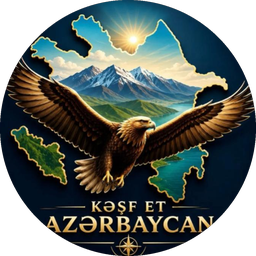

<!DOCTYPE html>
<html lang="az">
<head>
<meta charset="utf-8">
<meta name="viewport" content="width=device-width, initial-scale=1, viewport-fit=cover">
<title>Kəşf et Azərbaycan</title>
<meta name="description" content="Azərbaycanı kəşf et: tarix, mədəniyyət, qəhrəmanlar – 18 blok, 918 test, 4 dil.">
<meta name="theme-color" content="#0E2A52">
<link rel="manifest" href="manifest.webmanifest?v=2">
<link rel="icon" type="image/png" sizes="192x192" href="icon-192.png?v=2">
<link rel="apple-touch-icon" href="apple-touch-icon.png?v=2">
<meta name="apple-mobile-web-app-capable" content="yes">
<meta name="mobile-web-app-capable" content="yes">
<meta name="apple-mobile-web-app-status-bar-style" content="black-translucent">
<meta name="apple-mobile-web-app-title" content="Kəşf et AZ">
<meta property="og:title" content="Kəşf et Azərbaycan">
<meta property="og:description" content="18 blok · 918 test · 28 hekayə · 4 dil">
<meta property="og:image" content="https://samirbalakishiyev.github.io/kesf-et-azerbaycan/og.png">
<meta property="og:image:width" content="1200"><meta property="og:image:height" content="630">
<meta property="og:type" content="website"><meta property="og:site_name" content="Kəşf et Azərbaycan">
<meta name="twitter:card" content="summary_large_image"><meta name="twitter:image" content="https://samirbalakishiyev.github.io/kesf-et-azerbaycan/og.png">
<link rel="preconnect" href="https://fonts.googleapis.com">
<link rel="preconnect" href="https://fonts.gstatic.com" crossorigin>
<link href="https://fonts.googleapis.com/css2?family=Noto+Sans:wght@400;600;700&family=Noto+Serif+Display:wght@700;900&display=swap" rel="stylesheet">
<style>
:root{
  --bg:#EEF4FA; --card:#FFFFFF; --ink:#1B2140; --soft:#5B6385; --line:#D8E1EE;
  --sky:#0098D4; --pom:#E3263A; --leaf:#3C9A32;
  --done:#2E9E4A; --doneBg:#E2F5E6; --part:#F08A12; --partBg:#FFF0DC;
  --ok:#2E9E4A; --bad:#D63142;
  --shadow:0 2px 0 rgba(27,33,64,.08);
  box-sizing:border-box;
  padding-top:env(safe-area-inset-top,0px); padding-bottom:env(safe-area-inset-bottom,0px);
  color-scheme:light;
}
@media (prefers-color-scheme:dark){:root:not([data-theme="light"]){
  --bg:#121733; --card:#1C2347; --ink:#EEF1FF; --soft:#A9B1D6; --line:#2D3663;
  --doneBg:#173B28; --partBg:#43300F; --shadow:none; color-scheme:dark;}}
:root[data-theme="dark"]{--bg:#121733; --card:#1C2347; --ink:#EEF1FF; --soft:#A9B1D6; --line:#2D3663; --doneBg:#173B28; --partBg:#43300F; --shadow:none; color-scheme:dark;}
html{scroll-padding-top:env(safe-area-inset-top,0px)}
*,*::before,*::after{box-sizing:border-box}
body{margin:0;background:var(--bg);color:var(--ink);font-family:"Noto Sans",system-ui,-apple-system,"Segoe UI",Roboto,sans-serif;font-size:16px;line-height:1.5;-webkit-tap-highlight-color:transparent}
h1,h2,h3{font-family:"Noto Serif Display",Georgia,"Times New Roman",serif;margin:0;line-height:1.15}
button{font:inherit;color:inherit;cursor:pointer;border:0;background:none}
button:focus-visible,a:focus-visible{outline:3px solid var(--sky);outline-offset:2px}
.wrap{max-width:720px;margin:0 auto;padding:0 16px 40px}
.band{height:26px;width:100%;display:block}.flagband{height:36px}
.hero{background:var(--ink);color:#fff;border-radius:0 0 26px 26px;overflow:hidden;margin-bottom:18px}
:root[data-theme="dark"] .hero{background:#0B0F26}
@media (prefers-color-scheme:dark){:root:not([data-theme="light"]) .hero{background:#0B0F26}}
.hero-in{padding:22px 20px 20px}
.hero h1{font-size:clamp(34px,9vw,52px);font-weight:900;letter-spacing:-.5px}
.hero p{margin:6px 0 16px;color:#C9D0F0;max-width:34ch}
.meter{display:flex;gap:6px;margin-bottom:16px}
.meter span{flex:1;height:10px;border-radius:6px;background:#3A4270}
.meter span.done{background:var(--leaf)}.meter span.part{background:var(--part)}
.hero-actions{display:flex;gap:10px;flex-wrap:wrap}
.pill{padding:11px 16px;border-radius:999px;font-weight:700;background:#fff;color:#1B2140}
.pill.alt{background:transparent;color:#fff;box-shadow:inset 0 0 0 2px #fff}
.legend{display:flex;gap:14px;flex-wrap:wrap;font-size:13px;color:var(--soft);margin:4px 2px 12px}
.legend i{display:inline-block;width:12px;height:12px;border-radius:4px;margin-right:6px;vertical-align:-1px}
.grid{display:grid;grid-template-columns:1fr 1fr;gap:12px}
@media (max-width:380px){.grid{grid-template-columns:1fr}}
.tile{position:relative;text-align:left;background:var(--card);border-radius:20px;padding:16px;border:3px solid var(--line);box-shadow:var(--shadow);min-height:150px;display:flex;flex-direction:column;gap:6px}
.tile .num{position:absolute;top:12px;right:14px;font-family:"Noto Serif Display",Georgia,serif;font-weight:900;font-size:22px;color:var(--soft);opacity:.55}
.tile .emo{font-size:34px;line-height:1}
.tile h3{font-size:21px}
.tile .sub{font-size:13px;color:var(--soft)}
.tile .st{margin-top:auto;font-size:13px;font-weight:700;padding:4px 10px;border-radius:999px;align-self:flex-start;background:var(--bg);color:var(--soft)}
.tile.done{border-color:var(--done);background:var(--doneBg)}.tile.done .st{background:var(--done);color:#fff}
.tile.part{border-color:var(--part);background:var(--partBg)}.tile.part .st{background:var(--part);color:#fff}
.soon{margin-top:22px}
.soon h2{font-size:22px;margin-bottom:10px}
.chips{display:flex;flex-wrap:wrap;gap:8px}
.chip{padding:8px 12px;border-radius:12px;background:var(--card);border:2px dashed var(--line);color:var(--soft);font-size:14px}
.danger{margin-top:28px;width:100%;padding:14px;border-radius:14px;border:2px solid var(--bad);color:var(--bad);font-weight:700;background:transparent}
/* block page */
.top{position:sticky;top:env(safe-area-inset-top,0px);z-index:5;background:var(--bg);padding:10px 0 8px;display:flex;align-items:center;gap:10px}
body::before{content:"";position:fixed;inset:0 0 auto;height:env(safe-area-inset-top,0px);z-index:10;background:var(--bg)}
.back{padding:9px 14px;border-radius:12px;background:var(--card);font-weight:700;border:2px solid var(--line)}
.top h2{font-size:22px;flex:1;min-width:0;white-space:nowrap;overflow:hidden;text-overflow:ellipsis}
.head{border-radius:22px;padding:18px;color:#fff;margin:6px 0 14px}
.head p{margin:6px 0 0;opacity:.92}
.tabs{display:flex;gap:6px;background:var(--card);padding:5px;border-radius:16px;border:2px solid var(--line);margin-bottom:14px}
.tabs button{flex:1;padding:10px 6px;border-radius:12px;font-weight:700;font-size:15px;color:var(--soft)}
.tabs button.on{background:var(--ink);color:var(--bg)}
.card{background:var(--card);border-radius:20px;padding:16px;border:2px solid var(--line);margin-bottom:12px;box-shadow:var(--shadow)}
.card-top{display:flex;gap:14px;align-items:center;margin-bottom:10px}
.pic{flex:0 0 76px;width:76px;height:76px;border-radius:50%;display:grid;place-items:center;font-size:38px;position:relative}
.pic svg{width:60px;height:60px}
.medal{font-family:"Noto Serif Display",Georgia,serif;font-weight:900;font-size:28px;color:#fff}
.card h3{font-size:21px}
.dates{font-size:14px;color:var(--soft);font-weight:600}
.card p{margin:0 0 10px}
.en{background:var(--bg);border-radius:12px;padding:10px 12px;font-size:15px}
.en b{margin-right:4px}
.cta{display:block;width:100%;padding:15px;border-radius:16px;font-weight:700;font-size:17px;color:#fff;background:var(--ink)}
.row{display:flex;gap:10px;margin-top:12px}
.row .btn{flex:1}
.btn{padding:13px;border-radius:14px;font-weight:700;background:var(--card);border:2px solid var(--line)}
.btn.main{background:var(--ink);color:var(--bg);border-color:var(--ink)}
.btn:disabled{opacity:.4;cursor:default}
.minor{display:block;margin:18px auto 0;color:var(--bad);font-weight:700;font-size:14px;padding:8px}
/* quiz */
.qbar{height:10px;background:var(--line);border-radius:6px;overflow:hidden;margin:4px 0 6px}
.qbar i{display:block;height:100%;background:linear-gradient(90deg,var(--sky),var(--leaf));border-radius:6px;transition:width .3s}
.qnum{font-size:14px;color:var(--soft);font-weight:600;display:flex;justify-content:space-between}
.qtext{font-size:21px;font-weight:700;margin:14px 0 16px;line-height:1.35}
.opt{display:block;width:100%;text-align:left;padding:14px 16px;border-radius:16px;background:var(--card);border:2px solid var(--line);margin-bottom:10px;font-size:17px;font-weight:600}
.opt.ok{background:var(--doneBg);border-color:var(--ok)}
.opt.bad{background:#FDE3E6;border-color:var(--bad);color:#8E1222}
@media (prefers-color-scheme:dark){:root:not([data-theme="light"]) .opt.bad{background:#4A1820;color:#FFC9D0}}
:root[data-theme="dark"] .opt.bad{background:#4A1820;color:#FFC9D0}
.opt .mk{float:right;font-weight:900}
.fb{border-radius:16px;padding:12px 14px;margin:4px 0 6px;font-size:15px;background:var(--card);border:2px solid var(--line)}
.fb strong{display:block;font-size:16px;margin-bottom:2px}
.fb.ok strong{color:var(--ok)}.fb.bad strong{color:var(--bad)}
.result{text-align:center;padding:26px 18px}
.result .big{font-family:"Noto Serif Display",Georgia,serif;font-size:72px;font-weight:900;line-height:1}
.stars{font-size:38px;letter-spacing:6px;margin:8px 0}
.mlist .card{padding:14px}
.mlist .q{font-weight:700;margin-bottom:6px}
.mlist .a{color:var(--ok);font-weight:700}
.empty{text-align:center;color:var(--soft);padding:30px 10px}
.modal{position:fixed;inset:0;background:rgba(10,14,35,.55);display:grid;place-items:center;z-index:50;padding:20px}
.modal .box{background:var(--card);border-radius:22px;padding:22px;max-width:360px;width:100%}
.modal h3{font-size:22px;margin-bottom:8px}
.story-tile{width:100%;margin-top:12px;min-height:auto;border-color:#9ED3A8;background:linear-gradient(135deg,#E3F6E5,#FFEBD2)}
.story-tile h3,.story-tile .sub{color:#1B2140}
.story{border-radius:18px;margin-bottom:10px;border:2px solid}
.story.real{background:#E3F6E5;border-color:#9ED3A8}
.story.myth{background:#FFEBD2;border-color:#F5BE7E}
@media (prefers-color-scheme:dark){:root:not([data-theme="light"]) .story.real{background:#173B28;border-color:#2E6B44}:root:not([data-theme="light"]) .story.myth{background:#43300F;border-color:#7A5A1E}}
:root[data-theme="dark"] .story.real{background:#173B28;border-color:#2E6B44}:root[data-theme="dark"] .story.myth{background:#43300F;border-color:#7A5A1E}
.story summary{padding:14px 16px;cursor:pointer;list-style:none;display:flex;flex-direction:column;gap:2px}
.story summary::-webkit-details-marker{display:none}
.stitle{font-family:"Noto Serif Display",Georgia,serif;font-weight:700;font-size:20px}
.swho{font-size:13px;color:var(--soft);font-weight:600}
.sbody{padding:0 16px 16px;font-size:17px;line-height:1.6}
.sbody p{margin:0 0 12px}
.tr{margin-top:4px}
.trb{display:flex;gap:8px;justify-content:flex-end}
.lang{padding:7px 14px;border-radius:10px;font-weight:700;font-size:14px;letter-spacing:.5px;background:var(--bg);border:2px solid var(--line)}
.lang.on{background:var(--ink);color:var(--bg);border-color:var(--ink)}
.trp{margin-top:10px;background:var(--bg);border-radius:12px;padding:12px 14px;font-size:15px;line-height:1.55}
.gtag{display:inline-block;margin-top:6px;font-size:12px;font-weight:700;padding:3px 9px;border-radius:999px;color:#fff}
.g-r{background:#2E9E4A}.g-a{background:#5B5F73}.g-p{background:#0098D4}.g-d{background:#F08A12}
.tile .desc{font-size:13.5px;line-height:1.35;color:var(--ink);opacity:.8}
.spkrow{display:flex;flex-wrap:wrap;gap:8px;align-items:center;margin:4px 0 8px}
.trb{flex-wrap:wrap;align-items:center}
.spklab{font-size:13px;font-weight:700;color:var(--soft);margin-right:2px}
.spk{padding:7px 12px;border-radius:10px;font-weight:700;font-size:14px;background:var(--doneBg);border:2px solid var(--done);color:var(--ink)}
.spk.on{background:var(--done);color:#fff}
.spk.qs{padding:3px 9px;font-size:16px;vertical-align:middle}
.toast{position:fixed;left:50%;bottom:calc(20px + env(safe-area-inset-bottom,0px));transform:translateX(-50%);background:var(--ink);color:var(--bg);padding:12px 16px;border-radius:14px;font-size:14px;max-width:90%;z-index:60;box-shadow:0 4px 18px rgba(0,0,0,.25)}
.ttsbar{position:fixed;left:8px;right:8px;bottom:calc(8px + env(safe-area-inset-bottom,0px));z-index:55;background:var(--ink);color:var(--bg);border-radius:18px;padding:10px 12px;box-shadow:0 6px 24px rgba(0,0,0,.3);max-width:704px;margin:0 auto}
.tb-top{display:flex;gap:8px;align-items:center;font-size:12.5px;opacity:.85}
.tb-lang{font-weight:700}.tb-v{flex:1;min-width:0;white-space:nowrap;overflow:hidden;text-overflow:ellipsis}
.tb-text{font-size:16px;line-height:1.45;margin:6px 0 8px;max-height:4.4em;overflow:auto}
.tb-ctl{display:flex;gap:6px}
.tb-ctl button{flex:1;padding:9px 0;border-radius:11px;background:rgba(255,255,255,.14);color:inherit;font-weight:700;font-size:15px}
.tb-ctl .tb-main{flex:2;background:var(--done);color:#fff}
.vbtn{display:block;width:100%;text-align:left;margin-bottom:8px;font-size:14px}
.wrap{padding-bottom:150px}
.langsw{display:inline-flex;gap:4px;background:rgba(255,255,255,.12);padding:4px;border-radius:12px;margin-bottom:14px}
.langsw button{padding:6px 11px;border-radius:9px;font-weight:700;font-size:13px;color:inherit;opacity:.8}
.langsw button.on{background:#fff;color:#1B2140;opacity:1}
.top .langsw{margin:0;background:var(--card);border:2px solid var(--line)}
.top .langsw button{padding:5px 7px;font-size:12px}
.top .langsw button.on{background:var(--ink);color:var(--bg)}
.spk.pri{background:var(--done);color:#fff}
.pend{font-size:13px;color:var(--soft);background:var(--bg);border-radius:10px;padding:8px 10px;margin:-4px 0 10px}
:root{--ink:#0E1330}
body{font-size:17px}
.card{background:color-mix(in srgb,var(--bc,#FFFFFF) 7%,var(--card));border-color:color-mix(in srgb,var(--bc,#D8E1EE) 28%,var(--line))}
.card h3{font-size:22px;color:color-mix(in srgb,var(--bc,#0E1330) 72%,#000)}
.card p{font-size:18px;line-height:1.62;font-weight:500;color:var(--ink)}
.trp{font-size:16.5px;color:var(--ink)}
.sbody{font-size:18px}
.head h2{color:#fff}
.tile h3{color:color-mix(in srgb,var(--bc,#0E1330) 70%,#000)}
.tile{background:color-mix(in srgb,var(--bc,#FFFFFF) 6%,var(--card))}
.facts{background:var(--card);border:2px solid color-mix(in srgb,var(--bc,#D8E1EE) 35%,var(--line));border-radius:16px;padding:12px 16px;margin:0 0 12px}
.facts-h{font-weight:800;font-size:19px;color:color-mix(in srgb,var(--bc,#0E1330) 72%,#000);margin-bottom:6px}
.facts ol{margin:0;padding-left:26px}
.facts li{font-size:18px;line-height:1.7}
.facts li::marker{font-weight:800;color:color-mix(in srgb,var(--bc,#0E1330) 72%,#000)}
.fl{font-weight:700}.fv{font-weight:800;font-size:19px}
@media (prefers-color-scheme:dark){:root:not([data-theme="light"]){--ink:#EEF1FF}
 :root:not([data-theme="light"]) .card h3,:root:not([data-theme="light"]) .tile h3,:root:not([data-theme="light"]) .facts-h,:root:not([data-theme="light"]) .facts li::marker{color:color-mix(in srgb,var(--bc,#EEF1FF) 45%,#fff)}}
.facts ol.cols{columns:2;column-gap:24px}
.facts .fn{font-weight:700;font-size:18px}
.sechdr{margin:26px 0 14px;padding:16px 18px;border-radius:18px;background:var(--bc,#0E1330);color:#fff}
.sechdr h2{margin:0;font-size:22px;line-height:1.3;color:#fff}
.sechdr p{margin:6px 0 0;font-size:16px;opacity:.92}
.credit{text-align:center;margin:22px 0 8px;font-size:15px;color:var(--soft);line-height:1.6}
.credit a{color:var(--done);font-weight:700;text-decoration:none}
html,body{max-width:100%;overflow-x:hidden}
@supports (overflow:clip){html,body{overflow-x:clip}}
html{touch-action:pan-y pinch-zoom;-webkit-text-size-adjust:100%;text-size-adjust:100%}
body{overscroll-behavior-x:none}
#app,.wrap{width:100%;max-width:720px;overflow-wrap:anywhere}
.wrap{padding-left:12px;padding-right:12px}
img,svg,video{max-width:100%}
.grid{grid-template-columns:repeat(2,minmax(0,1fr));gap:10px}
@media (max-width:360px){.grid{grid-template-columns:minmax(0,1fr)}}
.tile{min-width:0;min-height:128px;padding:12px;border-radius:18px;gap:4px}
.tile h3{font-size:17px;line-height:1.25;overflow-wrap:anywhere;hyphens:auto}
.tile .desc{font-size:13px}
.tile .emo{font-size:26px}
.card{padding:13px;border-radius:18px;margin-bottom:10px;min-width:0}
.card h3{font-size:20px;overflow-wrap:anywhere}
.card-top{min-width:0}.card-top>div{min-width:0}
.card p{font-size:17px}
.top{flex-wrap:wrap;row-gap:6px;padding:8px 0 6px}
.top h2{font-size:19px}
.top .langsw{flex-shrink:0}
@media (max-width:420px){.top .langsw{order:3;width:100%;justify-content:space-between}.top .langsw button{flex:1}}
.back{padding:8px 12px}
.spkrow,.trb{flex-wrap:wrap}
.spk{padding:6px 10px}
.facts{padding:10px 12px}
.facts ol.cols{column-gap:14px}
@media (max-width:340px){.facts ol.cols{columns:1}}
.head{padding:14px;border-radius:18px}
.opt{padding:12px 14px;font-size:16px;overflow-wrap:anywhere}
.ttsbar{left:6px;right:6px;max-width:calc(100% - 12px)}
.tb-ctl button{min-width:0}
.hero-in{padding:18px 14px 16px}
.langsw{max-width:100%}
.sechdr{padding:13px 14px}
.sechdr h2{font-size:19px}
.nums{margin:18px 0 10px;padding:16px;border-radius:20px;background:linear-gradient(135deg,#0E2A52,#1B4F8A);color:#fff}
.nums h3{margin:0 0 4px;font-size:20px;color:#fff}
.nums-s{margin:0 0 12px;font-size:15px;opacity:.9}
.nrow{display:flex;gap:12px;align-items:center;padding:8px 0;border-top:1px solid rgba(255,255,255,.15)}
.nbig{min-width:68px;text-align:center;font-family:Georgia,serif;font-weight:800;font-size:30px;color:#F0C85A}
.ntxt{font-size:15px;line-height:1.4}
.nfoot{margin-top:10px;text-align:center;font-weight:700;font-size:14px;color:#9FD3FF;letter-spacing:.5px}
.hrow{display:flex;align-items:center;justify-content:space-between;gap:8px;margin-bottom:14px}.eagle{flex-shrink:0;width:60px;height:60px;border-radius:50%;object-fit:cover;box-shadow:0 0 0 3px #fff,0 0 0 6px rgba(247,201,72,.8),0 6px 16px rgba(0,0,0,.3)}.hrow .langsw{margin-bottom:0}.eagle.prof{width:120px;height:120px;box-shadow:0 0 0 3px #fff,0 0 0 6px rgba(247,201,72,.85),0 8px 20px rgba(0,0,0,.35)}.sbbtn.sbeagle{padding:0;overflow:hidden;background:none;width:64px;height:64px;box-shadow:0 0 0 3px #fff,0 0 0 6px rgba(247,201,72,.8),0 6px 16px rgba(0,0,0,.3)}.sbeagle img{width:100%;height:100%;object-fit:cover;display:block;border-radius:50%}@media (min-width:700px){.eagle.prof{width:150px;height:150px}}.hlang{margin:4px 0 6px;display:flex;justify-content:flex-end}.hlang .langsw{margin:0}
.sbbtn{flex-shrink:0;width:60px;height:60px;border-radius:50%;background:radial-gradient(circle at 32% 28%,#5FD6F2 0,#00B5E2 45%,#0091C0 100%);color:#fff;font:900 21px/1 "Noto Serif Display",Georgia,serif;letter-spacing:.5px;box-shadow:0 0 0 3px #fff,0 0 0 6px rgba(0,181,226,.45),0 6px 18px rgba(0,0,0,.4);text-shadow:0 2px 4px rgba(0,40,80,.55)}
.sbbtn:active{transform:scale(.94)}
.sbbig{width:96px;height:96px;margin:4px auto 6px;border-radius:50%;display:grid;place-items:center;background:radial-gradient(circle at 32% 28%,#5FD6F2 0,#00B5E2 45%,#0091C0 100%);color:#fff;font:900 32px/1 "Noto Serif Display",Georgia,serif;box-shadow:0 0 0 4px #fff,0 0 0 8px rgba(0,181,226,.35),0 6px 18px rgba(0,0,0,.25)}
.kgate{padding-top:18px}
.kbrand{display:flex;align-items:center;justify-content:center;gap:10px;margin:6px 0 10px}
.kbrand b{font:900 24px/1.2 "Noto Serif Display",Georgia,serif;color:var(--ink)}
.kflag{display:inline-flex;flex-direction:column;width:34px;height:24px;border-radius:5px;overflow:hidden;box-shadow:0 1px 4px rgba(0,0,0,.2)}.kflag i{flex:1}.kflag i:nth-child(1){background:#00B5E2}.kflag i:nth-child(2){background:#EF3340}.kflag i:nth-child(3){background:#509E2F}
.kgl{display:flex;justify-content:center;margin-bottom:12px}.kgl .langsw{background:var(--card);border:2px solid var(--line);margin:0}.kgl .langsw button.on{background:var(--ink);color:var(--bg)}
.kcard{background:var(--card);border:2px solid var(--line);border-radius:22px;padding:18px;box-shadow:var(--shadow)}
.kcard h2{margin:0 0 6px;font-size:24px;text-align:center}
.kinfo{color:var(--soft);font-size:16px;margin:0 0 14px;line-height:1.5}
.kf{display:block;font-weight:700;font-size:15px;margin-bottom:12px}
.kf input,.kinp,.pnq,.pntpl textarea{display:block;width:100%;margin-top:6px;font:inherit;font-size:17px;font-weight:600;padding:12px 14px;border:2px solid var(--line);border-radius:14px;background:var(--bg);color:var(--ink)}
.ktel{display:flex;margin-top:6px;border:2px solid var(--line);border-radius:14px;overflow:hidden;background:var(--bg)}
.ktel span{padding:12px 12px;font-weight:800;background:color-mix(in srgb,var(--line) 60%,var(--card));color:var(--ink)}
.ktel input{flex:1;min-width:0;border:0;margin:0;border-radius:0;font:inherit;font-size:17px;font-weight:700;padding:12px;background:transparent;color:var(--ink)}
.kerr{color:#C0392B;font-weight:700;min-height:1.2em;margin:4px 0 8px}
.kmsg{background:#FFF4D6;color:#7A5200;border-radius:12px;padding:10px 12px;font-weight:700}
.kgo{background:linear-gradient(90deg,#00B5E2,#EF3340,#509E2F)}
.kfine{text-align:center;color:var(--soft);font-size:14px;margin:12px 0 0}
.kfine a{color:var(--done);font-weight:700;text-decoration:none}
.klock{text-align:center}.kbig{font-size:56px;line-height:1}
.kwho{font-weight:700;margin:0 0 8px}
.kprice{display:flex;justify-content:space-between;align-items:center;margin:4px 0 14px;padding:14px 16px;border-radius:16px;background:linear-gradient(135deg,#0E2A52,#1B4F8A);color:#fff}
.kprice span{font-weight:700}.kprice b{font:900 28px/1 "Noto Serif Display",Georgia,serif;color:#F0C85A}
.kwa{display:block;text-decoration:none;background:#25D366;color:#fff;text-align:center}
.kpaytel{margin:6px 0 10px;font-weight:800;letter-spacing:.5px}
.kchk{width:100%}
.kban{display:flex;flex-wrap:wrap;align-items:center;justify-content:space-between;gap:8px;padding:10px 14px;border-radius:16px;margin:0 0 12px;font-size:15px;font-weight:600}
.kban a{font-weight:800;text-decoration:none;padding:6px 12px;border-radius:999px;background:#fff;white-space:nowrap}
.kban.trial{background:#E3F6F7;color:#0B5F66}.kban.trial a{color:#0B5F66}
.kban.warn{background:#FFF1D6;color:#7A4B00}.kban.warn a{color:#7A4B00}
.kban.ok{background:#E3F4E8;color:#1E6B3A}
.pnstats{display:grid;grid-template-columns:repeat(2,minmax(0,1fr));gap:8px;margin:6px 0 8px}
.pnstats button{text-align:left;padding:10px 12px;border-radius:14px;background:var(--card);border:2px solid var(--line);color:var(--ink)}
.pnstats button small{display:block;font-size:13px;font-weight:700;color:var(--soft)}.pnstats button b{font-size:22px}
.pnstats button.on{border-color:var(--ink);background:color-mix(in srgb,var(--ink) 8%,var(--card))}
.pnbar{display:flex;gap:8px;margin-bottom:10px}.pnbar .btn{flex:1}
.pntpl{background:var(--card);border:2px solid var(--line);border-radius:14px;padding:10px 12px;margin-bottom:10px}.pntpl summary{font-weight:800;cursor:pointer}.pntpl .btn{margin-top:8px}
.pnq{margin:0 0 8px}
.urow{background:var(--card);border:2px solid var(--line);border-left:6px solid #0E7C86;border-radius:16px;padding:12px;margin-bottom:10px}
.urow.paid{border-left-color:#1E8E4E}.urow.end{border-left-color:#C0392B}.urow.exp{border-left-color:#B26A00}.urow.blok{border-left-color:#7A1F2B;background:color-mix(in srgb,#C0392B 7%,var(--card))}
.uh{display:flex;flex-wrap:wrap;align-items:center;gap:6px 8px;font-size:17px}
.utag{color:#fff;font-size:12.5px;font-weight:700;padding:3px 9px;border-radius:999px}
.um{font-size:14px;color:var(--soft);margin:6px 0 8px;line-height:1.5}.um a{color:var(--ink);font-weight:700;text-decoration:none}
.ub{display:flex;flex-wrap:wrap;gap:6px}
.ubtn{padding:8px 11px;border-radius:11px;font-weight:800;font-size:14px;border:2px solid var(--line);background:var(--card);color:var(--ink);text-decoration:none}
.ubtn.pay{background:#1E8E4E;border-color:#1E8E4E;color:#fff}.ubtn.bl{background:#C0392B;border-color:#C0392B;color:#fff}.ubtn.ok{background:#0E7C86;border-color:#0E7C86;color:#fff}.ubtn.wa{background:#25D366;border-color:#25D366;color:#fff}
.fbbtn{display:flex;flex-wrap:wrap;align-items:center;gap:4px 8px;width:100%;text-align:left;margin:0 0 12px;padding:14px 16px;border-radius:18px;font-weight:800;font-size:17px;color:#fff;background:linear-gradient(135deg,#1B4F8A,#0E7C86)}
.fbbtn span{font-weight:600;font-size:14px;opacity:.9}.fbnew{background:#F0C85A;color:#3B2A00;font-size:13px;padding:3px 9px;border-radius:999px}
.fbta{display:block;width:100%;font:inherit;font-size:16px;padding:12px;border:2px solid var(--line);border-radius:14px;background:var(--bg);color:var(--ink);resize:vertical}
.fbok{color:#1E8E4E;font-weight:800;margin:8px 0 0}
.fbh{margin:18px 0 10px;font-size:19px}
.fbi{background:var(--card);border:2px solid var(--line);border-radius:16px;padding:12px;margin-bottom:10px}
.fbt{display:flex;justify-content:space-between;align-items:center}.fbt small{color:var(--soft);font-weight:700}
.fbdel{font-size:16px;padding:4px 8px;border-radius:10px;background:var(--bg)}
.fbx{white-space:pre-wrap;font-weight:600;margin-top:4px}
.fbrep{margin-top:10px;padding:10px 12px;border-radius:12px;background:#E3F4E8;color:#1E4D2E}.fbrep.nw{box-shadow:0 0 0 2px #1E8E4E}.fbrep b{display:block}.fbrep small{opacity:.8}.fbrep p{margin:4px 0 0;white-space:pre-wrap}
.pntabs{display:flex;gap:8px;margin:4px 0 10px}.pntabs button{flex:1;padding:11px;border-radius:14px;font-weight:800;background:var(--card);border:2px solid var(--line);color:var(--ink)}.pntabs button.on{background:var(--ink);color:var(--bg);border-color:var(--ink)}.pntabs b{background:#C0392B;color:#fff;border-radius:999px;padding:1px 7px;font-size:13px}
.fbfil{display:flex;flex-wrap:wrap;gap:6px;margin-bottom:10px}.fbfil button{padding:7px 10px;border-radius:999px;font-weight:700;font-size:13.5px;background:var(--card);border:2px solid var(--line);color:var(--ink)}.fbfil button.on{background:var(--ink);color:var(--bg)}
.cprow{display:flex;justify-content:flex-end;margin:-6px 0 10px}
.cpbtn{display:inline-flex;align-items:center;gap:6px;padding:8px 14px;border-radius:999px;font-weight:800;font-size:14px;color:#0E2A52;background:#fff;box-shadow:0 0 0 2px rgba(0,181,226,.6),0 4px 12px rgba(0,0,0,.25)}
.cpbtn.ok{background:#1E8E4E;color:#fff;box-shadow:0 0 0 2px #fff}
.pill.gold{background:#F0C85A;color:#2A2000}
.ywrap .kcard{margin-bottom:12px}.yh{margin:14px 0 8px;font-size:17px}
.ytph{margin:-2px 0 8px;color:var(--soft);font-size:14px}.ytps{display:flex;flex-wrap:wrap;gap:8px}.ytp{padding:9px 12px;border-radius:12px;font:inherit;font-size:14.5px;font-weight:700;background:var(--bg);border:2px solid var(--line);color:var(--ink);text-align:left}.ytp.on{background:#0E2A52;color:#fff;border-color:#0E2A52}
.ychs{display:flex;gap:8px;flex-wrap:wrap}.ych{min-width:56px;padding:10px 14px;border-radius:14px;font-weight:800;font-size:16px;background:var(--bg);border:2px solid var(--line);color:var(--ink)}.ych.on{background:var(--ink);color:var(--bg);border-color:var(--ink)}
.ynames{display:grid;gap:8px}.yname{display:flex;align-items:center;gap:10px}.yname i{width:22px;height:22px;border-radius:50%;background:var(--c);flex-shrink:0}.yname input,.ysel{flex:1;width:100%;font:inherit;font-size:16px;font-weight:700;padding:11px 12px;border:2px solid var(--line);border-radius:12px;background:var(--bg);color:var(--ink)}
.ygame{position:fixed;inset:0;z-index:40;overflow-y:auto;box-sizing:border-box;padding:14px max(14px,calc((100vw - 1240px)/2)) 30px;background:#0E2A52;color:#fff}
.ytop{display:flex;align-items:center;justify-content:space-between;gap:10px}.ytop .back{background:rgba(255,255,255,.12);color:#fff;border:0}
.yqn{text-align:center;font-weight:800;font-size:clamp(16px,2.2vw,26px)}.yqn small{display:block;font-weight:600;font-size:.62em;opacity:.8}
.ytm{width:64px;height:64px;border-radius:50%;display:grid;place-items:center;font-weight:900;font-size:26px;background:conic-gradient(#F0C85A calc(var(--p)*360deg),rgba(255,255,255,.15) 0);box-shadow:inset 0 0 0 7px #0E2A52}.ytm.low{background:conic-gradient(#EF3340 calc(var(--p)*360deg),rgba(255,255,255,.15) 0)}
.yboard{display:flex;gap:10px;flex-wrap:wrap;margin:14px 0}
.yteam{flex:1 1 140px;display:flex;align-items:center;justify-content:space-between;gap:8px;padding:12px 16px;border-radius:18px;background:rgba(255,255,255,.08);border:3px solid var(--c);color:#fff;font-weight:800;font-size:clamp(16px,2vw,24px);position:relative}
.yteam b{font-size:1.5em;color:var(--c)}.yteam.tap{cursor:pointer;animation:ypulse 1.4s infinite}.yteam.got{background:var(--c)}.yteam.got b{color:#fff}.yteam em{position:absolute;top:-12px;right:10px;background:#fff;color:#0E2A52;font-style:normal;font-size:14px;padding:2px 8px;border-radius:999px}
@keyframes ypulse{50%{transform:translateY(-2px)}}
.yq{font-family:"Noto Serif Display",Georgia,serif;font-weight:900;font-size:clamp(26px,4.6vw,60px);line-height:1.15;margin:18px 0 20px;text-wrap:balance}
.yopts{display:grid;grid-template-columns:repeat(2,minmax(0,1fr));gap:12px}@media (max-width:560px){.yopts{grid-template-columns:1fr}}
.yopt{display:flex;align-items:center;gap:14px;padding:16px 18px;border-radius:18px;background:#fff;color:#14203F;font-weight:800;font-size:clamp(18px,2.8vw,34px)}
.yopt i{flex-shrink:0;width:1.7em;height:1.7em;border-radius:12px;display:grid;place-items:center;background:#0E2A52;color:#fff;font-style:normal;font-size:.8em}
.yopt.ok{background:#DDF5E4;box-shadow:0 0 0 5px #2E9E4A}.yopt.ok b{margin-left:auto;color:#1E8E4E;font-size:1.2em}.yopt.dim{opacity:.45}
.yfb{margin:16px 0 0;font-size:clamp(15px,2vw,22px);color:#CFE0F5;font-weight:600}.ywho{margin:14px 0 4px;font-weight:800;color:#F0C85A;font-size:clamp(16px,2vw,22px)}.yup{color:#FF8A95;font-weight:900;font-size:clamp(20px,3vw,32px);margin:16px 0 0}
.dgame{padding-top:10px}.dq{font-size:clamp(24px,3.6vw,48px);margin:10px 0 14px;text-align:center}
.dsplit{display:grid;grid-template-columns:1fr 1fr;gap:14px}@media (max-width:700px){.dsplit{grid-template-columns:1fr}}
.dside{border:4px solid var(--c);border-radius:22px;padding:12px;background:rgba(255,255,255,.05);touch-action:manipulation;user-select:none;-webkit-user-select:none}
.dhead{display:flex;justify-content:space-between;align-items:center;margin-bottom:10px;font-size:clamp(18px,2.4vw,30px)}.dhead em{font-style:normal;font-weight:900;background:var(--c);color:#fff;min-width:1.8em;text-align:center;border-radius:12px;padding:2px 10px}
.dopts{display:grid;gap:10px}
.dopt{display:flex;align-items:center;gap:12px;width:100%;min-height:clamp(54px,11vh,120px);text-align:left;padding:14px 16px;border-radius:16px;border:0;background:#fff;color:#14203F;font:inherit;font-weight:800;font-size:clamp(17px,2.2vw,28px);cursor:pointer;touch-action:manipulation}
.dopt i{flex-shrink:0;width:1.7em;height:1.7em;border-radius:10px;display:grid;place-items:center;background:var(--c);color:#fff;font-style:normal;font-size:.8em}
.dopt:disabled{cursor:default}.dopt.sel{box-shadow:0 0 0 5px var(--c)}.dopt.dim{opacity:.45}.dopt.ok{background:#DDF5E4;box-shadow:0 0 0 5px #2E9E4A;opacity:1}.dopt.bad{background:#FFE1E4;box-shadow:0 0 0 5px #EF3340;opacity:1}
.dres{margin-top:10px;text-align:center;font-weight:800;font-size:clamp(16px,2vw,24px);color:#CFE0F5;min-height:1.4em}.dres.ok{color:#7CE39A}.dres.no{color:#FF8A95}
.dshow{opacity:.85}
.ygame .cta{margin-top:16px;max-width:520px;display:block;margin-left:auto;margin-right:auto;background:#F0C85A;color:#2A2000;font-size:clamp(18px,2.4vw,26px)}
.yend{text-align:center;position:relative;overflow:hidden;padding-top:40px}.ytro{font-size:clamp(70px,12vw,140px)}.ywl{margin:0;color:#F0C85A;font-weight:800;font-size:clamp(20px,3vw,32px)}.ywn{margin:6px 0 20px;font-family:"Noto Serif Display",Georgia,serif;font-size:clamp(34px,7vw,80px);color:#fff}
.yres{max-width:560px;margin:0 auto;display:grid;gap:10px}.yrow{display:flex;align-items:center;gap:12px;padding:14px 18px;border-radius:16px;background:rgba(255,255,255,.08);border:3px solid var(--c);font-size:clamp(18px,2.4vw,26px)}.yrow b{flex:1;text-align:left}.yrow em{font-style:normal;font-weight:900;color:var(--c)}
.yconf{position:absolute;inset:0;pointer-events:none}.yconf i{position:absolute;top:-20px;width:10px;height:16px;border-radius:3px;animation:yfall linear infinite}
@keyframes yfall{to{transform:translateY(110vh) rotate(720deg)}}
.scene{margin:-16px -16px 12px;border-radius:18px 18px 0 0;overflow:hidden;line-height:0;aspect-ratio:320/140;max-height:260px;width:auto}.scene svg{width:100%;height:100%;display:block}
.agetag{font-size:13px;background:#C2185B;color:#fff;border-radius:20px;padding:3px 10px;vertical-align:middle;margin-left:6px}p.tale{font-size:17px;line-height:1.7;margin:0 0 10px}.bonush{margin:26px 2px 4px;font-size:22px}.bonuss{margin:0 2px 12px;color:var(--soft);font-size:14px}
.tile.bonus .num{background:#F0C85A;color:#3B2A00}
html.board .wrap,html.board #app{max-width:1180px}
html.board body{zoom:1.3}
html.board .ygame{zoom:1}
.photo{margin:-16px -16px 12px;border-radius:18px 18px 0 0;overflow:hidden;background:#E8EEF5}
.photo img{display:block;width:100%;height:auto;max-height:340px;object-fit:cover;aspect-ratio:16/10}
.photo .scene{display:none;margin:0;border-radius:0}.photo.fail img{display:none}.photo.fail .scene{display:block}
.photo figcaption{padding:6px 12px;font-size:11.5px;color:var(--soft);line-height:1.35}.photo figcaption a{color:inherit;text-decoration:underline}
@media (prefers-reduced-motion:reduce){.yconf,.yteam.tap{animation:none!important}.yconf{display:none}}
@media (prefers-reduced-motion:reduce){*{transition:none!important}}
</style>
</head>
<body>
<svg width="0" height="0" style="position:absolute" aria-hidden="true">
  <defs>
    <pattern id="carpet" width="40" height="26" patternUnits="userSpaceOnUse">
      <rect width="40" height="26" fill="#9E1B32"/>
      <g transform="translate(3 3) rotate(0 6.5 10)"><path d="M6 20C2.5 20 0 17 0 13.5 0 9 3 6 6.5 4.5 9.5 3 11 1.5 11.5 0 13 3 13 6 12 9 13 12 12.5 16 10 18.5 9 19.5 7.5 20 6 20Z" fill="#F2B705"/><path d="M6 20C2.5 20 0 17 0 13.5 0 9 3 6 6.5 4.5 9.5 3 11 1.5 11.5 0 13 3 13 6 12 9 13 12 12.5 16 10 18.5 9 19.5 7.5 20 6 20Z" fill="#0E2A52" transform="translate(3 5.5) scale(.5)"/><circle cx="6" cy="14.5" r="1.3" fill="#fff"/></g>
      <g transform="translate(23 3) rotate(180 6.5 10)"><path d="M6 20C2.5 20 0 17 0 13.5 0 9 3 6 6.5 4.5 9.5 3 11 1.5 11.5 0 13 3 13 6 12 9 13 12 12.5 16 10 18.5 9 19.5 7.5 20 6 20Z" fill="#fff"/><path d="M6 20C2.5 20 0 17 0 13.5 0 9 3 6 6.5 4.5 9.5 3 11 1.5 11.5 0 13 3 13 6 12 9 13 12 12.5 16 10 18.5 9 19.5 7.5 20 6 20Z" fill="#0098D4" transform="translate(3 5.5) scale(.5)"/><circle cx="6" cy="14.5" r="1.3" fill="#F2B705"/></g>
      <circle cx="20" cy="4" r="1.3" fill="#F2B705"/><circle cx="20" cy="22" r="1.3" fill="#F2B705"/><circle cx="0" cy="13" r="1.3" fill="#fff"/><circle cx="40" cy="13" r="1.3" fill="#fff"/>
    </pattern>
  </defs>
</svg>
<div id="app"></div>
<script>
/* ---- avtomatik yeniləmə: saytda yeni versiya varsa özü yenilənir ---- */
const APP_VER='2026-11-21-8';
(function(){let busy=0;async function chk(){if(busy||location.protocol!=='https:')return;busy=1;
  try{const r=await fetch(location.pathname+'?u='+Date.now(),{cache:'no-store'});const t=await r.text();const m=t.match(/APP_VER='([^']+)'/);
    if(m&&m[1]!==APP_VER){const k='kea-upd-'+m[1];if(!sessionStorage.getItem(k)){sessionStorage.setItem(k,1);location.reload()}}}catch(e){}busy=0}
  window.addEventListener('load',()=>setTimeout(chk,1500));document.addEventListener('visibilitychange',()=>{if(!document.hidden)chk()})})();
/* ============ MƏLUMAT ============ */
const BLOCKS=[
{id:'umumi',title:'Azərbaycan haqqında',emoji:'🇦🇿',color:'#0098D4',
 intro:'Ölkənin əsas rəqəmləri, rəmzləri və tarixi günləri.',
 items:[
 {n:'Paytaxt – Bakı',i:'🏙️',d:'Xəzər dənizinin sahilində',
  t:'Azərbaycanın paytaxtı və ən böyük şəhəri Bakıdır. Abşeron yarımadasında, Xəzər dənizinin sahilində yerləşir. Şəhərin qədim hissəsi İçərişəhər adlanır.',
  en:'The capital of Azerbaijan is Baku, on the coast of the Caspian Sea.',
  q:[['Azərbaycanın paytaxtı hansı şəhərdir?','Bakı','Gəncə','Sumqayıt','Şəki'],
     ['Bakı hansı yarımadada yerləşir?','Abşeron','Krım','Apennin','Kola']]},
 {n:'Ərazi və əhali',i:'🗺️',d:'86 600 km², 10 milyondan çox əhali',
  t:'Azərbaycanın ərazisi 86 600 kvadrat kilometrdir. Əhalisi 10 milyondan çoxdur. Ölkə Avropa ilə Asiyanın qovşağında, Cənubi Qafqazda yerləşir.',
  en:'Azerbaijan covers 86,600 km² and has a population of over 10 million. It lies in the South Caucasus, where Europe meets Asia.',
  q:[['Azərbaycanın ərazisi nə qədərdir?','86 600 km²','56 600 km²','106 600 km²','46 600 km²'],
     ['Azərbaycanın əhalisi təxminən nə qədərdir?','10 milyondan çox','5 milyon','20 milyon','3 milyon'],
     ['Azərbaycan hansı regionda yerləşir?','Cənubi Qafqaz','Mərkəzi Asiya','Balkanlar','Yaxın Şərq körfəzi']]},
 {n:'Müstəqillik',i:'🕊️',d:'28 May 1918 və 18 Oktyabr 1991',
  t:'28 May 1918-ci ildə Azərbaycan Xalq Cümhuriyyəti (AXC) quruldu – müsəlman Şərqində ilk demokratik respublika. AXC 1920-ci ilin aprelində süqut etdi. 18 Oktyabr 1991-ci ildə Azərbaycan müstəqilliyini bərpa etdi. 28 May – Müstəqillik Günü, 18 Oktyabr – Müstəqilliyin Bərpası Günüdür.',
  en:'In 1918 Azerbaijan became the first democratic republic in the Muslim East. It restored its independence on 18 October 1991.',
  q:[['Azərbaycan Xalq Cümhuriyyəti nə vaxt qurulub?','28 May 1918','18 Oktyabr 1991','9 Noyabr 1918','20 Yanvar 1990'],
     ['Azərbaycan müstəqilliyini nə vaxt bərpa edib?','18 Oktyabr 1991','28 May 1918','12 Noyabr 1995','15 İyun 1993'],
     ['28 May hansı bayramdır?','Müstəqillik Günü','Zəfər Günü','Bayraq Günü','Konstitusiya Günü'],
     ['Müsəlman Şərqində ilk demokratik respublika hansıdır?','Azərbaycan Xalq Cümhuriyyəti','Osmanlı dövləti','Səfəvi dövləti','Qacar dövləti']]},
 {n:'Dövlət bayrağı',img:'flag',d:'Mavi, qırmızı, yaşıl',
  t:'Bayraq üç rənglidir: yuxarıda mavi (türkçülük), ortada qırmızı (müasirlik və tərəqqi), aşağıda yaşıl (İslam). Ortada ağ aypara və səkkizguşəli ulduz var. Bayraq 9 Noyabr 1918-ci ildə qəbul edilib; 9 Noyabr – Dövlət Bayrağı Günüdür.',
  en:'Our flag is blue, red and green with a white crescent and an eight-pointed star.',
  q:[['Bayrağın rəngləri yuxarıdan aşağı necə düzülüb?','Mavi, qırmızı, yaşıl','Qırmızı, mavi, yaşıl','Yaşıl, qırmızı, mavi','Mavi, yaşıl, qırmızı'],
     ['Bayraqdakı ulduz neçəguşəlidir?','Səkkiz','Beş','Altı','Yeddi'],
     ['Bayraqdakı mavi rəng nəyi bildirir?','Türkçülüyü','İslamı','Müasirliyi','Dənizi'],
     ['Dövlət Bayrağı Günü nə vaxtdır?','9 Noyabr','8 Noyabr','28 May','18 Oktyabr']]},
 {n:'Dövlət himni',i:'🎼',d:'Üzeyir Hacıbəyli və Əhməd Cavad',
  t:'Himnin musiqisi Üzeyir Hacıbəylinin, sözləri Əhməd Cavadındır. 1919-cu ildə yazılıb, 1992-ci ildə müstəqil Azərbaycanın dövlət himni kimi qəbul edilib.',
  en:'The music of our national anthem is by Uzeyir Hajibeyli and the words are by Ahmad Javad.',
  q:[['Dövlət himninin musiqisini kim yazıb?','Üzeyir Hacıbəyli','Qara Qarayev','Fikrət Əmirov','Müslüm Maqomayev'],
     ['Dövlət himninin sözlərini kim yazıb?','Əhməd Cavad','Səməd Vurğun','Hüseyn Cavid','Bəxtiyar Vahabzadə']]},
 {n:'Pul və dil',i:'💵',d:'Manat, Azərbaycan dili',
  t:'Pul vahidi – manat (AZN), 1 manat 100 qəpikdir. Dövlət dili – Azərbaycan dili, latın əlifbası ilə yazılır.',
  en:'Our currency is the manat, and our official language is Azerbaijani.',
  q:[['Azərbaycanın pul vahidi nədir?','Manat','Lirə','Rubl','Lari'],
     ['1 manat neçə qəpikdir?','100','10','1000','50']]},
 {n:'Qonşular',i:'🧭',d:'5 qonşu ölkə',
  t:'Azərbaycanın 5 qonşusu var: şimalda Rusiya, şimal-qərbdə Gürcüstan, qərbdə Ermənistan, cənubda İran, Naxçıvan vasitəsilə isə Türkiyə. Şərqdə Xəzər dənizidir.',
  en:'Azerbaijan borders Russia, Georgia, Armenia, Iran and Turkey. The Caspian Sea is to the east.',
  q:[['Azərbaycanın neçə qonşu ölkəsi var?','5','3','4','6'],
     ['Azərbaycan Türkiyə ilə hansı hissədə həmsərhəddir?','Naxçıvan Muxtar Respublikası','Qarabağ','Lənkəran','Quba'],
     ['Azərbaycanın şimal qonşusu hansıdır?','Rusiya','İran','Türkiyə','Qazaxıstan']]},
 {n:'Təbiət',i:'🏔️',d:'Bazardüzü, Kür, Xəzər',
  t:'Ən hündür zirvə – Bazardüzü (4466 m), Böyük Qafqaz dağlarındadır. Ən uzun çay – Kür. Ölkə Xəzər dənizinin sahilindədir; Xəzər dünyanın ən böyük gölüdür.',
  en:'Our highest peak is Bazarduzu (4,466 m), and our longest river is the Kura.',
  q:[['Azərbaycanın ən hündür zirvəsi hansıdır?','Bazardüzü','Şahdağ','Kəpəz','Murovdağ'],
     ['Bazardüzü zirvəsinin hündürlüyü nə qədərdir?','4466 m','3466 m','5642 m','2966 m'],
     ['Azərbaycanın ən uzun çayı hansıdır?','Kür','Araz','Samur','Tərtər']]},
 {n:'İnzibati bölgü',i:'🏘️',d:'64 rayon, 4 244 kənd',
  t:'Dövlət Statistika Komitəsinin rəsmi məlumatına görə (2024): 1 muxtar respublika (Naxçıvan), 64 rayon, 79 şəhər, 262 qəsəbə və 4 244 kənd var. 2021-ci ildən ölkə 14 iqtisadi rayona bölünür.',
  en:'Azerbaijan has 64 districts, 79 cities and more than 4,000 villages.',
  q:[['Rəsmi statistikaya görə Azərbaycanda neçə rayon var?','64','48','74','92'],
     ['Azərbaycanda neçə kənd var?','4 mindən çox (4 244)','1 min','10 mindən çox','700'],
     ['Azərbaycanın muxtar respublikası hansıdır?','Naxçıvan','Qarabağ','Şəki','Lənkəran'],
     ['2021-ci ildən ölkə neçə iqtisadi rayona bölünür?','14','10','7','20'],
     ['Azərbaycanda neçə şəhər var?','79','29','129','49']]},
 {n:'Zəfər',i:'🏆',d:'44 günlük Vətən müharibəsi, 2020',
  t:'Vətən müharibəsi 27 Sentyabr 2020-ci ildə başladı, 44 gün sürdü və 10 Noyabrda Azərbaycanın qələbəsi ilə bitdi. 8 Noyabrda Şuşa azad edildi – bu gün Zəfər Günüdür. 27 Sentyabr – Anım Günüdür. Şuşa 2021-ci ildə Azərbaycanın mədəniyyət paytaxtı elan edilib.',
  en:'In 2020 Azerbaijan won the 44-day Patriotic War. Victory Day is celebrated on 8 November.',
  q:[['Vətən müharibəsi neçə gün sürüb?','44','30','60','100'],
     ['Zəfər Günü nə vaxt qeyd olunur?','8 Noyabr','27 Sentyabr','9 Noyabr','10 Noyabr'],
     ['Azərbaycanın mədəniyyət paytaxtı hansı şəhərdir?','Şuşa','Gəncə','Şəki','Bakı'],
     ['Anım Günü nə vaxtdır?','27 Sentyabr','8 Noyabr','20 Yanvar','31 Mart']]},
 {n:'Strateji obyektlər',i:'🛢️',d:'BTC, Neft Daşları, Ələt limanı',
  t:'1994-cü ildə “Əsrin müqaviləsi” imzalandı. Bakı–Tbilisi–Ceyhan (BTC) neft kəməri 2006-cı ildə istifadəyə verildi və Azərbaycan neftini Türkiyənin Aralıq dənizi sahilinə daşıyır. Neft Daşları – açıq dənizdə dünyanın ilk neft platforması (1949). Ələt qəsəbəsində Bakı Beynəlxalq Dəniz Ticarət Limanı yerləşir – Şərqlə Qərbi birləşdirən Orta Dəhlizin qovşağı.',
  en:'The Baku–Tbilisi–Ceyhan pipeline carries Azerbaijani oil to the Mediterranean. Neft Dashlari was the world’s first offshore oil platform.',
  q:[['“Əsrin müqaviləsi” hansı ildə imzalanıb?','1994','1991','2003','2006'],
     ['BTC neft kəməri hansı ölkəyə gedir?','Türkiyə','Rusiya','İran','Çin'],
     ['Açıq dənizdə dünyanın ilk neft platforması hansıdır?','Neft Daşları','Səngəçal','Bibiheybət','Ələt'],
     ['Bakı Beynəlxalq Dəniz Ticarət Limanı harada yerləşir?','Ələt qəsəbəsi','Sumqayıt','Lənkəran','Xırdalan']]}
 ]},
{id:'prezident',title:'Prezidentlər',emoji:'🏛️',color:'#C8102E',
 intro:'Müstəqil Azərbaycanın rəhbərləri – ilkdən bu günə.',
 items:[
 {n:'Məmməd Əmin Rəsulzadə',d:'1884 – 1955',
  t:'Azərbaycan Xalq Cümhuriyyətinin qurucusu. 1918-ci ildə Milli Şuranın sədri kimi İstiqlal Bəyannaməsini elan etdi. AXC-də prezident vəzifəsi yox idi; ilk baş nazir Fətəli xan Xoyski olub.',
  en:'Mammad Amin Rasulzadeh founded the Azerbaijan Democratic Republic in 1918.',
  q:[['Azərbaycan Xalq Cümhuriyyətinin qurucusu kimdir?','Məmməd Əmin Rəsulzadə','Fətəli xan Xoyski','Nəriman Nərimanov','Ayaz Mütəllibov'],
     ['AXC-nin ilk baş naziri kim olub?','Fətəli xan Xoyski','Məmməd Əmin Rəsulzadə','Həsən bəy Ağayev','Əlimərdan bəy Topçubaşov']]},
 {n:'Ayaz Mütəllibov',d:'1938 – 2022',
  t:'Azərbaycanın ilk prezidenti. 1990-cı ildə Ali Sovet tərəfindən prezident seçildi, 8 Sentyabr 1991-ci ildə ümumxalq seçkisində yenidən seçildi. 6 Mart 1992-ci ildə Xocalı faciəsindən sonra istefa verdi.',
  en:'Ayaz Mutallibov was the first President of Azerbaijan (1990–1992).',
  q:[['Azərbaycanın ilk prezidenti kim olub?','Ayaz Mütəllibov','Əbülfəz Elçibəy','Heydər Əliyev','İsa Qəmbər'],
     ['Ayaz Mütəllibov ilk dəfə hansı ildə prezident olub?','1990','1991','1992','1993'],
     ['Ayaz Mütəllibov hansı ildə istefa verib?','1992','1991','1993','1995']]},
 {n:'Yaqub Məmmədov və İsa Qəmbər',d:'1992-ci il, müvəqqəti',
  t:'1992-ci ildə prezident səlahiyyətlərini müvəqqəti icra ediblər: əvvəl Ali Sovetin sədri Yaqub Məmmədov (mart–may), sonra İsa Qəmbər (may–iyun).',
  en:'In 1992 Yagub Mammadov and then Isa Gambar served briefly as acting presidents.',
  q:[['1992-ci ilin martında prezident səlahiyyətlərini kim icra edib?','Yaqub Məmmədov','İsa Qəmbər','Rəsul Quliyev','Heydər Əliyev'],
     ['Elçibəydən əvvəl prezident səlahiyyətlərini kim icra edib?','İsa Qəmbər','Ayaz Mütəllibov','Rəsul Quliyev','Surət Hüseynov']]},
 {n:'Əbülfəz Elçibəy',d:'1938 – 2000',
  t:'Azərbaycan Xalq Cəbhəsinin lideri. 7 İyun 1992-ci ildə prezident seçildi. 1993-cü ilin iyununda Bakını tərk edib doğma Naxçıvana, Kələki kəndinə getdi.',
  en:'Abulfaz Elchibey, leader of the Popular Front, was President in 1992–1993.',
  q:[['Əbülfəz Elçibəy hansı ildə prezident seçilib?','1992','1990','1993','1998'],
     ['Elçibəy hansı təşkilatın lideri idi?','Azərbaycan Xalq Cəbhəsi','Yeni Azərbaycan Partiyası','Müsavat (1911)','Ali Sovet'],
     ['Elçibəy 1993-cü ildə hara getdi?','Naxçıvan, Kələki kəndi','Gəncə','Türkiyə','Şuşa']]},
 {n:'Heydər Əliyev',d:'10 May 1923 – 12 Dekabr 2003',
  t:'Naxçıvanda doğulub. 15 İyun 1993-cü ildə Ali Sovetin sədri seçildi (Milli Qurtuluş Günü), 3 Oktyabr 1993-cü ildə prezident seçildi, 1998-ci ildə yenidən seçildi. 1994-cü ildə “Əsrin müqaviləsi” imzalandı, 12 Noyabr 1995-ci ildə Konstitusiya qəbul edildi. Ümummilli lider adlanır.',
  en:'Heydar Aliyev was President from 1993 to 2003 and is called the national leader of Azerbaijan.',
  q:[['Heydər Əliyev hansı ildə prezident seçilib?','1993','1991','1995','1998'],
     ['Heydər Əliyev harada doğulub?','Naxçıvan','Bakı','Gəncə','Şuşa'],
     ['Milli Qurtuluş Günü nə vaxtdır?','15 İyun','12 Noyabr','10 May','26 İyun'],
     ['Azərbaycan Konstitusiyası nə vaxt qəbul edilib?','12 Noyabr 1995','18 Oktyabr 1991','28 May 1918','15 İyun 1993'],
     ['Heydər Əliyevin doğum günü nə vaxtdır?','10 May 1923','24 Dekabr 1961','12 Dekabr 1923','28 May 1923']]},
 {n:'İlham Əliyev',d:'24 Dekabr 1961 – hazırkı prezident',
  t:'Bakıda doğulub. 2003-cü ildə prezident seçildi (31 Oktyabrda and içdi). 2008, 2013, 2018 və 2024-cü illərdə yenidən seçilib. 2020-ci ildə Vətən müharibəsində Ali Baş Komandan olub. Hazırda Azərbaycanın prezidentidir.',
  en:'Ilham Aliyev has been the President of Azerbaijan since 2003.',
  q:[['Azərbaycanın hazırkı prezidenti kimdir?','İlham Əliyev','Heydər Əliyev','Əli Əsədov','Sahibə Qafarova'],
     ['İlham Əliyev hansı ildə prezident olub?','2003','1998','2008','2013'],
     ['İlham Əliyev hansı ildə doğulub?','1961','1956','1971','1966'],
     ['Ən son prezident seçkisi hansı ildə keçirilib?','2024','2018','2023','2025']]},
 {n:'Mehriban Əliyeva',d:'2017-ci ildən Birinci vitse-prezident',
  t:'21 Fevral 2017-ci ildə Azərbaycanın Birinci vitse-prezidenti təyin edilib.',
  en:'Mehriban Aliyeva has been the First Vice-President since 2017.',
  q:[['Azərbaycanın Birinci vitse-prezidenti kimdir?','Mehriban Əliyeva','Sahibə Qafarova','Leyla Əliyeva','Ramiz Mehdiyev'],
     ['Birinci vitse-prezident vəzifəsi hansı ildə yaradılıb?','2017','2003','2013','2020']]}
 ]},
{id:'sair',title:'Şairlər və yazıçılar',emoji:'✒️',color:'#3C9A32',
 intro:'Dünyanın tanıdığı söz ustalarımız – XII əsrdən XX əsrə.',
 items:[
 {n:'Nizami Gəncəvi',d:'təx. 1141 – 1209, Gəncə',
  t:'Dahi şair, “Xəmsə” (beşlik) əsərinin müəllifi. “Xəmsə” 5 poemadan ibarətdir: “Sirlər xəzinəsi”, “Xosrov və Şirin”, “Leyli və Məcnun”, “Yeddi gözəl”, “İskəndərnamə”. Məqbərəsi Gəncədədir.',
  en:'Nizami Ganjavi, a 12th-century poet from Ganja, wrote the famous “Khamsa” (Five Poems).',
  q:[['“Xəmsə”nin müəllifi kimdir?','Nizami Gəncəvi','Məhəmməd Füzuli','Xaqani Şirvani','Nəsimi'],
     ['Nizami Gəncəvi hansı əsrdə yaşayıb?','XII əsr','XV əsr','XVIII əsr','X əsr'],
     ['“Xəmsə” neçə poemadan ibarətdir?','5','3','7','10'],
     ['“Yeddi gözəl” poeması kimindir?','Nizami Gəncəvi','Molla Pənah Vaqif','Füzuli','Natəvan']]},
 {n:'Məhsəti Gəncəvi',d:'XII əsr, Gəncə',
  t:'Rübailəri ilə məşhur şairə. Orta əsrlərin ən tanınmış qadın şairlərindən biridir.',
  en:'Mahsati Ganjavi was a 12th-century poetess famous for her rubais (quatrains).',
  q:[['Rübailəri ilə məşhur XII əsr şairəsi kimdir?','Məhsəti Gəncəvi','Natəvan','Heyran xanım','Aşıq Pəri'],
     ['Məhsəti hansı janrda məşhurdur?','Rübai','Qəzəl','Poema','Roman']]},
 {n:'Xaqani Şirvani',d:'təx. 1120 – 1199, Şamaxı',
  t:'Şirvanşahlar sarayının şairi. “Töhfətül-İraqeyn” poeması və “Mədain xərabələri” qəsidəsi ilə tanınır.',
  en:'Khagani Shirvani was a 12th-century court poet of the Shirvanshahs.',
  q:[['Xaqani hansı sarayın şairi olub?','Şirvanşahlar','Səfəvilər','Qarabağ xanlığı','Şəki xanlığı'],
     ['“Töhfətül-İraqeyn” kimin əsəridir?','Xaqani Şirvani','Nizami Gəncəvi','Füzuli','Xətai']]},
 {n:'İmadəddin Nəsimi',d:'təx. 1369 – 1417, Şamaxı',
  t:'Ana dilində divan yaradan böyük şair, hürufilik təriqətinin nümayəndəsi. İnsanı uca tutduğu üçün Hələb şəhərində edam edilib.',
  en:'Imadaddin Nasimi was a 14th-century poet who praised human dignity.',
  q:[['Nəsimi hansı şəhərdə edam edilib?','Hələb','Bağdad','Təbriz','Şamaxı'],
     ['Nəsimi hansı təriqətin nümayəndəsi idi?','Hürufilik','Sufilik (Nəqşbəndi)','Bəktaşilik','Səfəvilik']]},
 {n:'Şah İsmayıl Xətai',d:'1487 – 1524, Ərdəbil',
  t:'1501-ci ildə Səfəvi dövlətini qurub. “Xətai” təxəllüsü ilə ana dilində şeirlər yazıb; “Dəhnamə” poeması məşhurdur.',
  en:'Shah Ismail founded the Safavid state in 1501 and wrote poetry under the name Khatai.',
  q:[['Şah İsmayılın təxəllüsü nədir?','Xətai','Vaqif','Müştaq','Fəzli'],
     ['Şah İsmayıl hansı dövləti qurub?','Səfəvi dövləti','Qaraqoyunlu','Şirvanşahlar','Ağqoyunlu'],
     ['Səfəvi dövləti hansı ildə qurulub?','1501','1453','1605','1747']]},
 {n:'Məhəmməd Füzuli',d:'təx. 1494 – 1556, Kərbəla',
  t:'Qəzəl ustası. Azərbaycan, fars və ərəb – 3 dildə yazıb. Ana dilində yazdığı “Leyli və Məcnun” poeması ən məşhur əsəridir. Kərbəlada (İraq) yaşayıb.',
  en:'Fuzuli, a 16th-century poet, wrote “Leyli and Majnun” in Azerbaijani.',
  q:[['Füzuli harada yaşayıb?','Kərbəla (İraq)','Gəncə','Təbriz','Şamaxı'],
     ['Füzuli neçə dildə yazıb?','3','1','2','5'],
     ['Ana dilində “Leyli və Məcnun” poemasını kim yazıb?','Füzuli','Nizami','Nəsimi','Vaqif']]},
 {n:'Molla Pənah Vaqif',d:'1717 – 1797, Qazax',
  t:'Qarabağ xanlığının vəziri olub, Şuşada yaşayıb. Sadə xalq dilində qoşmalar yazıb. Şuşada məqbərəsi var.',
  en:'Molla Panah Vagif was a poet and the vizier of the Karabakh Khanate in Shusha.',
  q:[['Vaqif hansı xanlığın vəziri olub?','Qarabağ','Şəki','Gəncə','Bakı'],
     ['Vaqif hansı janrda məşhurdur?','Qoşma','Rübai','Qəsidə','Dram']]},
 {n:'Mirzə Fətəli Axundzadə',d:'1812 – 1878, Şəki',
  t:'Azərbaycan dramaturgiyasının banisi. 6 komediya yazıb. Əlifba islahatının da təşəbbüskarı olub.',
  en:'Mirza Fatali Akhundzadeh is the founder of Azerbaijani drama.',
  q:[['Azərbaycan dramaturgiyasının banisi kimdir?','Mirzə Fətəli Axundzadə','Cəlil Məmmədquluzadə','Hüseyn Cavid','Sabir'],
     ['Axundzadə harada doğulub?','Şəki','Şamaxı','Naxçıvan','Bakı']]},
 {n:'Xurşidbanu Natəvan',d:'1832 – 1897, Şuşa',
  t:'Qarabağ xanının qızı, şairə. Şuşada “Məclisi-üns” ədəbi məclisini yaradıb, şəhərə su kəməri çəkdirib.',
  en:'Khurshidbanu Natavan, a poetess and the daughter of the Khan of Karabakh, lived in Shusha.',
  q:[['Natəvan hansı ədəbi məclisi yaradıb?','Məclisi-üns','Məclisi-fəramuşan','Beytüs-səfa','Divani-hikmət'],
     ['Natəvan kimin qızı idi?','Qarabağ xanının','Şəki xanının','Şirvanşahın','Gəncə xanının'],
     ['Natəvan hansı şəhərdə yaşayıb?','Şuşa','Gəncə','Şamaxı','Bakı']]},
 {n:'Mirzə Ələkbər Sabir',d:'1862 – 1911, Şamaxı',
  t:'Böyük satirik şair. Şeirləri “Hophopnamə” kitabında toplanıb, “Molla Nəsrəddin” jurnalında çap olunub.',
  en:'Mirza Alakbar Sabir was a great satirical poet; his poems are collected in “Hophopname”.',
  q:[['“Hophopnamə” kimin əsəridir?','Sabir','Axundzadə','Səməd Vurğun','Vaqif'],
     ['Sabir hansı şəhərdə doğulub?','Şamaxı','Şəki','Gəncə','Naxçıvan']]},
 {n:'Cəlil Məmmədquluzadə',d:'1866 – 1932, Naxçıvan',
  t:'1906-cı ildə məşhur satirik “Molla Nəsrəddin” jurnalını təsis edib. “Ölülər” komediyası ən tanınmış əsəridir.',
  en:'Jalil Mammadguluzadeh founded the satirical magazine “Molla Nasreddin” in 1906.',
  q:[['“Molla Nəsrəddin” jurnalını kim təsis edib?','Cəlil Məmmədquluzadə','Sabir','Üzeyir Hacıbəyli','Axundzadə'],
     ['“Molla Nəsrəddin” jurnalı hansı ildə çıxıb?','1906','1875','1918','1932'],
     ['“Ölülər” komediyasının müəllifi kimdir?','Cəlil Məmmədquluzadə','Hüseyn Cavid','Axundzadə','Nəcəf bəy Vəzirov']]},
 {n:'Hüseyn Cavid',d:'1882 – 1941, Naxçıvan',
  t:'Romantik şair və dramaturq. “İblis” faciəsi ən məşhur əsəridir. 1937-ci ildə repressiyaya məruz qalıb, Sibirdə vəfat edib. Məqbərəsi Naxçıvandadır.',
  en:'Huseyn Javid was a romantic poet and playwright, author of the tragedy “Iblis”.',
  q:[['“İblis” faciəsinin müəllifi kimdir?','Hüseyn Cavid','Səməd Vurğun','Mikayıl Müşfiq','Əhməd Cavad'],
     ['Hüseyn Cavid harada vəfat edib?','Sibirdə','Naxçıvanda','Bakıda','İstanbulda']]},
 {n:'Əhməd Cavad',d:'1892 – 1937, Şəmkir',
  t:'Dövlət himninin sözlərinin müəllifi. “Çırpınırdı Qara dəniz” şeiri də məşhurdur. 1937-ci ildə repressiya qurbanı olub.',
  en:'Ahmad Javad wrote the words of the national anthem of Azerbaijan.',
  q:[['Əhməd Cavad hansı məşhur mətnin müəllifidir?','Dövlət himninin sözləri','“Hophopnamə”','“Vaqif” dramı','“Heydərbabaya salam”'],
     ['“Çırpınırdı Qara dəniz” şeirini kim yazıb?','Əhməd Cavad','Sabir','Müşfiq','Şəhriyar']]},
 {n:'Səməd Vurğun',d:'1906 – 1956, Qazax',
  t:'Xalq şairi. “Azərbaycan” şeiri və “Vaqif” dramı ilə tanınır. Qazax rayonunun Yuxarı Salahlı kəndində doğulub.',
  en:'Samad Vurgun is a People’s Poet of Azerbaijan, famous for the poem “Azerbaijan”.',
  q:[['“Vaqif” dramını kim yazıb?','Səməd Vurğun','Hüseyn Cavid','Axundzadə','Rəsul Rza'],
     ['Səməd Vurğun hansı rayonda doğulub?','Qazax','Şəki','Şamaxı','Lənkəran']]},
 {n:'Mikayıl Müşfiq',d:'1908 – 1938, Bakı',
  t:'Lirik şair, “Oxu tar” şeiri ilə məşhurdur. 1938-ci ildə repressiya qurbanı olub.',
  en:'Mikayil Mushfig was a lyrical poet, famous for “Sing, Tar”.',
  q:[['“Oxu tar” şeirinin müəllifi kimdir?','Mikayıl Müşfiq','Səməd Vurğun','Bəxtiyar Vahabzadə','Rəsul Rza']]},
 {n:'Məhəmmədhüseyn Şəhriyar',d:'1906 – 1988, Təbriz',
  t:'Cənubi Azərbaycanın böyük şairi. “Heydərbabaya salam” poeması bütün türk dünyasında sevilir.',
  en:'Shahriyar, a poet from Tabriz, wrote the beloved poem “Greetings to Heydarbaba”.',
  q:[['“Heydərbabaya salam” kimin əsəridir?','Şəhriyar','Səməd Vurğun','Sabir','Vaqif'],
     ['Şəhriyar harada doğulub?','Təbriz','Bakı','Gəncə','Ərdəbil']]},
 {n:'Bəxtiyar Vahabzadə',d:'1925 – 2009, Şəki',
  t:'Xalq şairi. “Gülüstan” poeması ilə Azərbaycanın bölünməsi mövzusuna toxunub. Vətən və ana dili haqqında şeirləri məşhurdur.',
  en:'Bakhtiyar Vahabzadeh, a People’s Poet from Sheki, wrote about the homeland and the native language.',
  q:[['“Gülüstan” poemasının müəllifi kimdir?','Bəxtiyar Vahabzadə','Rəsul Rza','Səməd Vurğun','Nəbi Xəzri'],
     ['Bəxtiyar Vahabzadə harada doğulub?','Şəki','Qazax','Şamaxı','Bakı']]}
 ]},
{id:'abide',title:'Tarixi abidələr',emoji:'🏰',color:'#F08A12',
 intro:'Qalalar, saraylar, qayaüstü rəsmlər və müasir simvollar.',
 items:[
 {n:'Qız qalası',img:'qiz',d:'Bakı, İçərişəhər',
  t:'Bakının simvolu, İçərişəhərdə yerləşən qədim qala. Hündürlüyü təxminən 29 metrdir. İçərişəhər, Qız qalası və Şirvanşahlar sarayı 2000-ci ildə UNESCO-nun Dünya İrsi siyahısına daxil edilib.',
  en:'The Maiden Tower is the symbol of Baku, in the Old City (Icherisheher).',
  q:[['Qız qalası harada yerləşir?','Bakı, İçərişəhər','Şəki','Gəncə','Şuşa'],
     ['İçərişəhər hansı ildə UNESCO siyahısına daxil edilib?','2000','1995','2007','2019'],
     ['Qız qalasının hündürlüyü təxminən nə qədərdir?','29 m','10 m','60 m','100 m']]},
 {n:'Şirvanşahlar sarayı',img:'sirvan',d:'XV əsr, Bakı',
  t:'Şirvanşahlar sülaləsinin sarayı, XV əsrdə tikilib. İçərişəhərdə yerləşir; kompleksə saray, türbə, məscid və hamam daxildir.',
  en:'The Palace of the Shirvanshahs was built in the 15th century in Baku’s Old City.',
  q:[['Şirvanşahlar sarayı hansı əsrdə tikilib?','XV əsr','XII əsr','XVIII əsr','X əsr'],
     ['Şirvanşahlar sarayı hansı şəhərdədir?','Bakı','Şamaxı','Gəncə','Şəki']]},
 {n:'Qobustan',img:'qobu',d:'Qayaüstü təsvirlər, UNESCO 2007',
  t:'Bakıdan təxminən 60 km cənub-qərbdə yerləşir. 6 mindən çox qədim qayaüstü təsvir (petroqlif) var. 2007-ci ildə UNESCO siyahısına daxil edilib. Yaxınlığında palçıq vulkanları var.',
  en:'Gobustan has more than 6,000 ancient rock carvings and is a UNESCO World Heritage site.',
  q:[['Qobustan nə ilə məşhurdur?','Qayaüstü təsvirlər','Xan sarayı','Neft qüllələri','Şəlalələr'],
     ['Qobustan hansı ildə UNESCO siyahısına daxil edilib?','2007','2000','2019','2023'],
     ['Qobustanda neçə qayaüstü təsvir var?','6 mindən çox','100-ə yaxın','500','50 min']]},
 {n:'Atəşgah',img:'ates',d:'Suraxanı, Abşeron',
  t:'Suraxanıda atəşpərəstlərin məbədi. Hazırkı tikili XVII–XVIII əsrlərə aiddir. Yerdən çıxan təbii qaz burada odun daim yanmasına səbəb olub.',
  en:'Ateshgah is a fire temple in Surakhani, near Baku.',
  q:[['Atəşgah məbədi harada yerləşir?','Suraxanı','Qobustan','Şəki','Mərdəkan'],
     ['Atəşgah hansı məbəddir?','Atəşpərəst məbədi','Alban kilsəsi','Məscid','Saray']]},
 {n:'Yanardağ',img:'yanar',d:'Abşeron, Məmmədli kəndi',
  t:'Təpənin ətəyindən çıxan təbii qaz minilliklərdir dayanmadan yanır. Azərbaycana “Odlar yurdu” deyilməsinin səbəblərindən biri budur.',
  en:'Yanardag is a hillside that burns continuously from natural gas – one reason Azerbaijan is called the Land of Fire.',
  q:[['Yanardağ nə ilə məşhurdur?','Daim yanan təbii alov','Palçıq vulkanı','Şəlalə','Qayaüstü rəsmlər'],
     ['Azərbaycanın ləqəbi nədir?','Odlar yurdu','Günəş ölkəsi','Dağlar diyarı','Dəniz ölkəsi']]},
 {n:'Şəki Xan sarayı',img:'seki',d:'XVIII əsr, Şəki',
  t:'Şəki xanlarının sarayı. Rəngli şüşələrdən mismarsız yığılan şəbəkə pəncərələri ilə məşhurdur. Şəkinin tarixi mərkəzi Xan sarayı ilə birlikdə 2019-cu ildə UNESCO siyahısına daxil edilib.',
  en:'The Palace of the Shaki Khans is famous for its stained-glass “shebeke” windows made without nails.',
  q:[['Şəki Xan sarayının pəncərələri nə adlanır?','Şəbəkə','Mozaika','Vitraj-xalça','Kaşı'],
     ['Şəbəkə pəncərələrin xüsusiyyəti nədir?','Mismarsız yığılır','Daşdan oyulur','Qızıldan hazırlanır','Ancaq ağ şüşədir'],
     ['Şəkinin tarixi mərkəzi hansı ildə UNESCO siyahısına düşüb?','2019','2000','2007','2023']]},
 {n:'Kiş alban məbədi',img:'kis',d:'Şəki, Kiş kəndi',
  t:'Qafqaz Albaniyası dövrünə aid qədim məbəd. Qafqazın ən qədim xristian məbədlərindən biri sayılır.',
  en:'The Albanian church in Kish village near Shaki is one of the oldest in the Caucasus.',
  q:[['Kiş məbədi hansı dövrə aiddir?','Qafqaz Albaniyası','Səfəvilər','Şirvanşahlar','Sovet dövrü'],
     ['Kiş kəndi hansı rayondadır?','Şəki','Quba','Qəbələ','Lənkəran']]},
 {n:'Möminə Xatun türbəsi',img:'momine',d:'1186, Naxçıvan',
  t:'1186-cı ildə memar Əcəmi Naxçıvani tərəfindən tikilib. Naxçıvanın simvoludur, üzəri həndəsi naxışlarla bəzədilib.',
  en:'The Momine Khatun Mausoleum in Nakhchivan was built in 1186 by the architect Ajami Nakhchivani.',
  q:[['Möminə Xatun türbəsinin memarı kimdir?','Əcəmi Naxçıvani','Zaha Hədid','Mimar Sinan','Mikayıl Hüseynov'],
     ['Möminə Xatun türbəsi harada yerləşir?','Naxçıvan','Bakı','Gəncə','Bərdə'],
     ['Möminə Xatun türbəsi hansı ildə tikilib?','1186','1501','1762','1918']]},
 {n:'Xınalıq',img:'xina',d:'Quba, dağ kəndi',
  t:'Qubada, dəniz səviyyəsindən təxminən 2300 metr yüksəklikdə qədim dağ kəndi. Sakinlərinin öz xınalıq dili var. 2023-cü ildə “Xınalıq mədəni landşaftı və Köç yolu” UNESCO siyahısına daxil edilib.',
  en:'Khinalig is an ancient mountain village in Guba with its own language.',
  q:[['Xınalıq kəndi hansı rayondadır?','Quba','Şəki','Qəbələ','Lerik'],
     ['Xınalıq hansı ildə UNESCO siyahısına daxil edilib?','2023','2000','2007','2019'],
     ['Xınalığın xüsusiyyəti nədir?','Öz dili var','Dəniz sahilindədir','Ən böyük şəhərdir','Neft mədənidir']]},
 {n:'Xudafərin körpüləri',img:'xuda',d:'Araz çayı, Cəbrayıl',
  t:'Araz çayı üzərində iki tarixi körpü: 15 aşırımlı və 11 aşırımlı. Cəbrayıl rayonundadır, 2020-ci ildə azad edilib.',
  en:'The Khudafarin bridges are historic stone bridges over the Araz River.',
  q:[['Xudafərin körpüləri hansı çayın üzərindədir?','Araz','Kür','Samur','Tərtər'],
     ['Xudafərin körpüləri hansı rayondadır?','Cəbrayıl','Füzuli','Zəngilan','Ağdam']]},
 {n:'Şuşa və Cıdır düzü',img:'susa',d:'1752, Qarabağ',
  t:'Şuşa qalasının əsasını 1752-ci ildə Pənahəli xan qoyub. Cıdır düzü sıldırım qayalıqların üstündə məşhur düzənlikdir. Şuşa 8 Noyabr 2020-ci ildə azad edilib.',
  en:'Shusha was founded in 1752 by Panah Ali Khan and was liberated on 8 November 2020.',
  q:[['Şuşa şəhərinin əsasını kim qoyub?','Pənahəli xan','İbrahimxəlil xan','Şah İsmayıl','Hüseyn xan'],
     ['Şuşa hansı ildə salınıb?','1752','1501','1918','1806'],
     ['Şuşadakı məşhur düzənlik necə adlanır?','Cıdır düzü','Mil düzü','Muğan düzü','Şirvan düzü']]},
 {n:'Alov qüllələri',img:'alov',d:'2012, Bakı',
  t:'Bakının müasir simvolu – alov formasında üç göydələn. 2012-ci ildə tikilib, gecələr üzərində işıqla alov təsviri yaranır.',
  en:'The Flame Towers are three modern skyscrapers in Baku shaped like flames.',
  q:[['Alov qüllələri neçə binadan ibarətdir?','3','2','4','5'],
     ['Alov qüllələri hansı ildə tikilib?','2012','2000','2020','1995']]},
 {n:'Heydər Əliyev Mərkəzi',img:'merkez',d:'2012, memar Zaha Hədid',
  t:'Dalğavari, düz xətti olmayan forması ilə məşhur bina. Memarı Zaha Hədiddir, 2012-ci ildə açılıb.',
  en:'The Heydar Aliyev Center, designed by Zaha Hadid, is famous for its curving shape.',
  q:[['Heydər Əliyev Mərkəzinin memarı kimdir?','Zaha Hədid','Əcəmi Naxçıvani','Norman Foster','Mikayıl Hüseynov'],
     ['Heydər Əliyev Mərkəzi nə ilə seçilir?','Dalğavari forması','Alov formalı qüllələri','Şəbəkə pəncərələri','Qüllə hündürlüyü']]}
 ]},
{id:'musiqi',title:'Musiqiçilər',emoji:'🎻',color:'#6B3FA0',
 intro:'Şərqin ilk operasından caz-muğama qədər.',
 items:[
 {n:'Üzeyir Hacıbəyli',d:'1885 – 1948, Ağcabədi',
  t:'Azərbaycan peşəkar musiqisinin banisi. 1908-ci ildə yazdığı “Leyli və Məcnun” Şərqdə ilk operadır. “Arşın mal alan” operettası və “Koroğlu” operası da onundur. Dövlət himninin musiqisini yazıb. Doğum günü – 18 Sentyabr Milli Musiqi Günüdür.',
  en:'Uzeyir Hajibeyli wrote “Leyli and Majnun” (1908), the first opera in the Muslim East.',
  q:[['Şərqdə ilk opera hansıdır?','“Leyli və Məcnun”','“Koroğlu”','“Şah İsmayıl”','“Nərgiz”'],
     ['“Leyli və Məcnun” operası hansı ildə yazılıb?','1908','1918','1937','1888'],
     ['Milli Musiqi Günü nə vaxtdır?','18 Sentyabr','9 Noyabr','12 Yanvar','28 May'],
     ['“Arşın mal alan” operettasının müəllifi kimdir?','Üzeyir Hacıbəyli','Qara Qarayev','Fikrət Əmirov','Niyazi']]},
 {n:'Qara Qarayev',d:'1918 – 1982, Bakı',
  t:'Böyük bəstəkar. Nizaminin poeması əsasında “Yeddi gözəl” baletini və “İldırımlı yollarla” baletini yazıb. Dmitri Şostakoviçin tələbəsi olub.',
  en:'Gara Garayev composed the ballet “The Seven Beauties”, based on Nizami’s poem.',
  q:[['“Yeddi gözəl” baletinin bəstəkarı kimdir?','Qara Qarayev','Üzeyir Hacıbəyli','Fikrət Əmirov','Arif Məlikov'],
     ['Qara Qarayev kimin tələbəsi olub?','Şostakoviç','Çaykovski','Motsart','Prokofyev']]},
 {n:'Fikrət Əmirov',d:'1922 – 1984, Gəncə',
  t:'Dünyada ilk simfonik muğamların – “Şur” və “Kürd ovşarı”nın müəllifi. “Min bir gecə” baletini də yazıb.',
  en:'Fikrat Amirov created the first symphonic mughams, “Shur” and “Kurd Ovshari”.',
  q:[['“Şur” simfonik muğamını kim yazıb?','Fikrət Əmirov','Niyazi','Qara Qarayev','Vaqif Mustafazadə'],
     ['“Min bir gecə” baleti kimindir?','Fikrət Əmirov','Üzeyir Hacıbəyli','Qara Qarayev','Arif Məlikov']]},
 {n:'Niyazi',d:'1912 – 1984, Tbilisi',
  t:'Məşhur dirijor və bəstəkar. “Rast” simfonik muğamının müəllifidir, dünyanın böyük orkestrlərini idarə edib.',
  en:'Niyazi was a famous conductor and the composer of the symphonic mugham “Rast”.',
  q:[['Niyazi hansı sahədə məşhurdur?','Dirijor və bəstəkar','Rəssam','Şair','Heykəltəraş'],
     ['“Rast” simfonik muğamı kimindir?','Niyazi','Fikrət Əmirov','Qara Qarayev','Bülbül']]},
 {n:'Bülbül',d:'1897 – 1961, Şuşa yaxınlığı',
  t:'Böyük opera müğənnisi (əsl adı Murtuza Məmmədov). “Koroğlu” operasında Koroğlu rolunun ilk ifaçısı olub.',
  en:'Bulbul was a great opera singer, the first to sing the role of Koroghlu.',
  q:[['“Koroğlu” operasında baş rolu ilk dəfə kim oxuyub?','Bülbül','Rəşid Behbudov','Müslüm Maqomayev','Xan Şuşinski'],
     ['Bülbülün əsl adı nədir?','Murtuza Məmmədov','Rəşid Behbudov','İsfəndiyar Cavanşir','Mirzə Kərim']]},
 {n:'Xan Şuşinski',d:'1901 – 1979, Şuşa',
  t:'Məşhur xanəndə, “Qarabağ bülbülü” adlanır. Muğamın ən böyük ifaçılarından biri olub.',
  en:'Khan Shushinski was one of the greatest mugham singers from Shusha.',
  q:[['Xan Şuşinski hansı sənətin ustasıdır?','Muğam (xanəndə)','Balet','Rəssamlıq','Dirijorluq']]},
 {n:'Rəşid Behbudov',d:'1915 – 1989, Tbilisi',
  t:'Məşhur müğənni. 1945-ci ildə çəkilən “Arşın mal alan” filmində Əsgər rolunu oynayıb. 1966-cı ildə Mahnı Teatrını yaradıb.',
  en:'Rashid Behbudov played Asgar in the 1945 film “Arshin Mal Alan”.',
  q:[['“Arşın mal alan” filmində Əsgər rolunu kim oynayıb?','Rəşid Behbudov','Bülbül','Müslüm Maqomayev','Niyazi'],
     ['Rəşid Behbudov hansı teatrı yaradıb?','Mahnı Teatrı','Opera Teatrı','Kukla Teatrı','Gənc Tamaşaçılar Teatrı']]},
 {n:'Müslüm Maqomayev',d:'1942 – 2008, Bakı',
  t:'Bütün SSRİ-də sevilən opera və estrada müğənnisi. Babası, bəstəkar Müslüm Maqomayev “Şah İsmayıl” operasının müəllifidir.',
  en:'Muslim Magomayev was a world-famous singer; his grandfather wrote the opera “Shah Ismayil”.',
  q:[['“Şah İsmayıl” operası kimindir?','Müslüm Maqomayev (baba)','Üzeyir Hacıbəyli','Qara Qarayev','Fikrət Əmirov'],
     ['Müslüm Maqomayev (müğənni) harada doğulub?','Bakı','Tbilisi','Şuşa','Moskva']]},
 {n:'Vaqif Mustafazadə',d:'1940 – 1979, Bakı',
  t:'Cazla muğamı birləşdirən “caz-muğam” üslubunun yaradıcısı, pianoçu.',
  en:'Vagif Mustafazadeh created “jazz-mugham”, a blend of jazz and mugham.',
  q:[['Caz-muğam üslubunu kim yaradıb?','Vaqif Mustafazadə','Niyazi','Fikrət Əmirov','Rəşid Behbudov'],
     ['Vaqif Mustafazadə hansı alətdə çalıb?','Fortepiano','Tar','Kamança','Saz']]},
 {n:'Alim Qasımov',d:'1957, Şamaxı',
  t:'Dünyaca tanınan xanəndə. 1999-cu ildə IMC-UNESCO Musiqi Mükafatını alıb.',
  en:'Alim Gasimov is a world-famous mugham singer who won the IMC-UNESCO Music Prize in 1999.',
  q:[['Alim Qasımov 1999-cu ildə hansı mükafatı alıb?','IMC-UNESCO Musiqi Mükafatı','Nobel mükafatı','Oskar','Qremmi']]}
 ]},
{id:'ressam',title:'Rəssamlar və heykəltəraşlar',emoji:'🎨',color:'#D6336C',
 intro:'Miniatürdən müasir boyakarlığa.',
 items:[
 {n:'Sultan Məhəmməd',d:'XVI əsr, Təbriz',
  t:'Təbriz miniatür məktəbinin böyük ustası. Şah Təhmasib üçün hazırlanan “Şahnamə”nin miniatürlərində iştirak edib.',
  en:'Sultan Muhammad was a 16th-century master of Tabriz miniature painting.',
  q:[['Sultan Məhəmməd hansı sənətin ustasıdır?','Miniatür','Heykəltəraşlıq','Memarlıq','Xəttatlıq'],
     ['Sultan Məhəmməd hansı məktəbə aiddir?','Təbriz miniatür məktəbi','Şirvan məktəbi','Bakı akademiyası','Gəncə məktəbi']]},
 {n:'Mir Möhsün Nəvvab',d:'1833 – 1918, Şuşa',
  t:'Rəssam, şair, xəttat və musiqişünas. Muğamlar haqqında “Vüzuhül-ərqam” traktatını yazıb.',
  en:'Mir Mohsun Navvab from Shusha was a painter, poet and music scholar.',
  q:[['Mir Möhsün Nəvvab harada yaşayıb?','Şuşa','Şəki','Bakı','Naxçıvan']]},
 {n:'Bəhruz Kəngərli',d:'1892 – 1922, Naxçıvan',
  t:'Azərbaycanın ilk peşəkar realist rəssamlarından biri. Naxçıvan təbiətini və qaçqınların həyatını çəkib.',
  en:'Bahruz Kangarli was one of the first professional realist painters of Azerbaijan.',
  q:[['Bəhruz Kəngərli harada doğulub?','Naxçıvan','Şuşa','Bakı','Gəncə']]},
 {n:'Əzim Əzimzadə',d:'1880 – 1943, Bakı',
  t:'Karikatura ustası. “Molla Nəsrəddin” jurnalında çəkib, “Yüz tip” silsiləsi məşhurdur.',
  en:'Azim Azimzadeh was a famous cartoonist for the “Molla Nasreddin” magazine.',
  q:[['Əzim Əzimzadə hansı janrda məşhurdur?','Karikatura','Miniatür','Heykəl','Mənzərə'],
     ['“Yüz tip” silsiləsi kimindir?','Əzim Əzimzadə','Tahir Salahov','Səttar Bəhlulzadə','Bəhruz Kəngərli']]},
 {n:'Səttar Bəhlulzadə',d:'1909 – 1974, Əmircan',
  t:'Azərbaycan təbiətinin rəssamı, mənzərə ustası. Əsərlərində dağlar, bulaqlar, bağlar parlaq rənglərlə təsvir olunub.',
  en:'Sattar Bahlulzadeh is famous for his colourful landscapes of Azerbaijani nature.',
  q:[['Səttar Bəhlulzadə hansı janrda məşhurdur?','Mənzərə','Karikatura','Miniatür','Portret heykəli']]},
 {n:'Tahir Salahov',d:'1928 – 2021, Bakı',
  t:'“Sərt üslub”un yaradıcılarından. Bəstəkar Qara Qarayevin portreti (1960) ən tanınmış əsərlərindəndir.',
  en:'Tahir Salahov, a master of the “severe style”, painted the famous portrait of Gara Garayev.',
  q:[['Qara Qarayevin məşhur portretini kim çəkib?','Tahir Salahov','Səttar Bəhlulzadə','Toğrul Nərimanbəyov','Əzim Əzimzadə'],
     ['Tahir Salahov hansı üslubun yaradıcılarındandır?','Sərt üslub','Miniatür','Kubizm','İmpressionizm']]},
 {n:'Toğrul Nərimanbəyov',d:'1930 – 2013, Bakı',
  t:'Parlaq, bayram ovqatlı rəngləri ilə tanınan boyakar. Opera tamaşalarına dekorasiyalar da hazırlayıb.',
  en:'Togrul Narimanbekov is known for his bright, joyful colours.',
  q:[['Toğrul Nərimanbəyovun əsərləri nə ilə seçilir?','Parlaq rənglər','Qara-ağ rəsmlər','Karikaturalar','Miniatürlər']]},
 {n:'Lətif Kərimov',d:'1906 – 1991, Şuşa',
  t:'Böyük xalça ustası və alimi. Azərbaycan xalçalarını öyrənib, Xalça Muzeyinin (1967) yaradılmasında əsas rol oynayıb.',
  en:'Latif Karimov was a master carpet designer and a founder of the Carpet Museum in Baku.',
  q:[['Lətif Kərimov hansı sənətin ustasıdır?','Xalçaçılıq','Miniatür','Heykəltəraşlıq','Dirijorluq'],
     ['Xalça Muzeyi hansı ildə yaradılıb?','1967','1918','2000','1945']]},
 {n:'Fuad Əbdürəhmanov',d:'1915 – 1971, Şəki',
  t:'Heykəltəraş. Bakıdakı Nizami Gəncəvinin məşhur abidəsinin (1949) müəllifidir.',
  en:'Fuad Abdurahmanov sculpted the famous Nizami monument in Baku.',
  q:[['Bakıdakı Nizami heykəlinin müəllifi kimdir?','Fuad Əbdürəhmanov','Tahir Salahov','Lətif Kərimov','Ömər Eldarov']]}
 ]},
{id:'alim',title:'Alimlər',emoji:'🔬',color:'#1F7A8C',
 intro:'Astronomiyadan fizikaya – dünya elminə töhfə verənlər.',
 items:[
 {n:'Nəsirəddin Tusi',d:'1201 – 1274',
  t:'Böyük astronom və riyaziyyatçı. 1259-cu ildə Marağa rəsədxanasını qurub. Ayda bir krater onun adını daşıyır.',
  en:'Nasir al-Din Tusi founded the Maragha Observatory in 1259.',
  q:[['Marağa rəsədxanasını kim qurub?','Nəsirəddin Tusi','Lütfi Zadə','Bakıxanov','Bəhmənyar'],
     ['Marağa rəsədxanası hansı ildə qurulub?','1259','1501','1186','1875']]},
 {n:'Abbasqulu ağa Bakıxanov',d:'1794 – 1847',
  t:'Tarixçi, şair və maarifçi. Azərbaycan tarixinə dair “Gülüstani-İrəm” əsərini yazıb.',
  en:'Abbasgulu Bakikhanov wrote “Gulustani-Iram”, a history of Azerbaijan.',
  q:[['“Gülüstani-İrəm” kimin əsəridir?','Abbasqulu ağa Bakıxanov','Həsən bəy Zərdabi','Mirzə Kazımbəy','Axundzadə']]},
 {n:'Mirzə Kazımbəy',d:'1802 – 1870',
  t:'Dünyaca tanınan şərqşünas. Peterburq Universitetinin şərq fakültəsinin ilk dekanı olub.',
  en:'Mirza Kazembek was a famous orientalist and a professor in St. Petersburg.',
  q:[['Mirzə Kazımbəy hansı sahədə tanınıb?','Şərqşünaslıq','Fizika','Tibb','Astronomiya']]},
 {n:'Həsən bəy Zərdabi',d:'1842 – 1907, Zərdab',
  t:'Maarifçi və təbiətşünas. 22 İyul 1875-ci ildə ilk Azərbaycan qəzeti “Əkinçi”ni nəşr edib. 22 İyul – Milli Mətbuat Günüdür.',
  en:'Hasan bey Zardabi published “Akinchi”, the first Azerbaijani newspaper, in 1875.',
  q:[['İlk Azərbaycan qəzeti hansıdır?','“Əkinçi”','“Molla Nəsrəddin”','“Kaspi”','“Füyuzat”'],
     ['“Əkinçi” qəzeti hansı ildə çıxıb?','1875','1906','1918','1850'],
     ['Milli Mətbuat Günü nə vaxtdır?','22 İyul','18 Sentyabr','15 İyun','9 Noyabr']]},
 {n:'Yusif Məmmədəliyev',d:'1905 – 1961, Ordubad',
  t:'Neft kimyası alimi. İkinci Dünya müharibəsində yüksək keyfiyyətli aviasiya benzini əldə etmə üsulunu hazırlayıb. Elmlər Akademiyasının prezidenti olub.',
  en:'Yusif Mammadaliyev was a petrochemist who developed aviation fuel during World War II.',
  q:[['Yusif Məmmədəliyev hansı sahənin alimidir?','Neft kimyası','Astronomiya','Tibb','Tarix']]},
 {n:'Lev Landau',d:'1908 – 1968, Bakı',
  t:'Bakıda doğulmuş məşhur fizik. 1962-ci ildə fizika üzrə Nobel mükafatı alıb.',
  en:'Lev Landau, born in Baku, won the Nobel Prize in Physics in 1962.',
  q:[['Bakıda doğulmuş hansı alim Nobel mükafatı alıb?','Lev Landau','Lütfi Zadə','Yusif Məmmədəliyev','Nəsirəddin Tusi'],
     ['Landau Nobel mükafatını hansı sahədə alıb?','Fizika','Kimya','Tibb','Ədəbiyyat']]},
 {n:'Lütfi Zadə',d:'1921 – 2017, Bakı',
  t:'Qeyri-səlis məntiqin (fuzzy logic) yaradıcısı. Bu nəzəriyyə 1965-ci ildə çıxıb, bu gün paltaryuyan maşınlardan kameralara qədər istifadə olunur.',
  en:'Lotfi Zadeh, born in Baku, created fuzzy logic in 1965.',
  q:[['Qeyri-səlis məntiqi kim yaradıb?','Lütfi Zadə','Lev Landau','Nəsirəddin Tusi','Mirzə Kazımbəy'],
     ['Qeyri-səlis məntiq hansı ildə irəli sürülüb?','1965','1925','1990','2001']]},
 {n:'Zərifə Əliyeva',d:'1923 – 1985',
  t:'Görkəmli oftalmoloq (göz həkimi), akademik. Göz xəstəlikləri sahəsində çoxlu elmi əsərin müəllifidir.',
  en:'Zarifa Aliyeva was a distinguished ophthalmologist and academician.',
  q:[['Zərifə Əliyeva hansı sahənin alimi idi?','Oftalmologiya (göz)','Kardiologiya','Neft kimyası','Fizika']]}
 ]},
{id:'serkerde',title:'Sərkərdələr və qəhrəmanlar',emoji:'⚔️',color:'#7A4B1E',
 intro:'Qədim dövrdən Vətən müharibəsinə qədər.',
 items:[
 {n:'Cavanşir',d:'VII əsr',
  t:'Qafqaz Albaniyasının hökmdarı və sərkərdəsi. Ölkəni böyük imperiyalar arasında müstəqil saxlamağa çalışıb.',
  en:'Javanshir was a 7th-century ruler and commander of Caucasian Albania.',
  q:[['Cavanşir hansı dövlətin hökmdarı olub?','Qafqaz Albaniyası','Səfəvilər','Ağqoyunlu','Şirvanşahlar']]},
 {n:'Babək',d:'798 – 838',
  t:'Ərəb Xilafətinə qarşı təxminən 20 il davam edən Xürrəmilər hərəkatının başçısı. Mərkəzi Bəzz qalası olub.',
  en:'Babek led a 20-year uprising against the Arab Caliphate.',
  q:[['Babək kimə qarşı vuruşub?','Ərəb Xilafəti','Rus çarlığı','Monqollar','Osmanlılar'],
     ['Babəkin qalası necə adlanır?','Bəzz qalası','Qız qalası','Əlincəqala','Çıraqqala']]},
 {n:'Uzun Həsən',d:'1423 – 1478',
  t:'Ağqoyunlu dövlətinin ən qüdrətli hökmdarı. Paytaxtı Təbriz olub.',
  en:'Uzun Hasan was the most powerful ruler of the Aq Qoyunlu state.',
  q:[['Uzun Həsən hansı dövlətin hökmdarıdır?','Ağqoyunlu','Qaraqoyunlu','Səfəvi','Elxani']]},
 {n:'Koroğlu',d:'Dastan qəhrəmanı',
  t:'Xalq dastanının qəhrəmanı. Çənlibeldə yaşayıb, zalım xanlara qarşı vuruşub. Atı Qıratdır. Üzeyir Hacıbəyli onun haqqında opera yazıb.',
  en:'Koroghlu is a legendary folk hero who fought against tyrant khans.',
  q:[['Koroğlunun atının adı nədir?','Qırat','Düldül','Rəxş','Boz at'],
     ['Koroğlu harada yaşayıb?','Çənlibel','Şuşa','Bəzz qalası','Gəncə']]},
 {n:'Qaçaq Nəbi',d:'XIX əsr, Zəngəzur',
  t:'Çar məmurlarına və zalım bəylərə qarşı vuruşan xalq qəhrəmanı. Həyat yoldaşı Həcər də onunla birlikdə döyüşüb.',
  en:'Gachag Nabi was a 19th-century folk hero; his wife Hajar fought beside him.',
  q:[['Qaçaq Nəbinin həyat yoldaşı kim idi?','Həcər','Natəvan','Tutu','Sara']]},
 {n:'Səməd bəy Mehmandarov',d:'1855 – 1931, Lənkəran',
  t:'Artilleriya generalı. 1904-cü ildə Port-Artur müdafiəsində qəhrəmanlıq göstərib. AXC-nin hərbi naziri olub.',
  en:'Samad bey Mehmandarov was an artillery general and the War Minister of the 1918 Republic.',
  q:[['AXC-nin hərbi naziri kim olub?','Səməd bəy Mehmandarov','Əliağa Şıxlinski','Həzi Aslanov','Fətəli xan Xoyski']]},
 {n:'Əliağa Şıxlinski',d:'1865 – 1943, Qazax',
  t:'Məşhur artilleriya generalı, “artilleriya allahı” adlanıb. Atıcılıq üsulu “Şıxlinski üçbucağı” adı ilə tanınır.',
  en:'Aliagha Shikhlinski was a famous artillery general, called “the god of artillery”.',
  q:[['“Artilleriya allahı” kimə deyilib?','Əliağa Şıxlinski','Səməd bəy Mehmandarov','Həzi Aslanov','Mehdi Hüseynzadə']]},
 {n:'Həzi Aslanov',d:'1910 – 1945, Lənkəran',
  t:'İkinci Dünya müharibəsində tank generalı. İki dəfə Sovet İttifaqı Qəhrəmanı adına layiq görülüb.',
  en:'Hazi Aslanov was a tank general and twice Hero of the Soviet Union.',
  q:[['Həzi Aslanov neçə dəfə Sovet İttifaqı Qəhrəmanı olub?','2','1','3','4']]},
 {n:'Mehdi Hüseynzadə',d:'1918 – 1944, Novxanı',
  t:'İtaliya və Yuqoslaviyada faşistlərə qarşı vuruşan partizan, ləqəbi “Mixaylo” olub.',
  en:'Mehdi Huseynzadeh, known as “Mikhailo”, was a partisan hero in Italy and Yugoslavia.',
  q:[['Mehdi Hüseynzadənin ləqəbi nə idi?','Mixaylo','Qırat','Qaçaq','Şahin']]}
 ]},
{id:'rayon',title:'Rayonlar və şəhərlər',emoji:'📍',color:'#2C7DA0',
 intro:'Hər bölgənin məşhur yeri, yeməyi və adamları.',
 items:[
 {n:'Şəki',i:'🏯',d:'Xan sarayı, piti, halva',
  t:'Xan sarayı, karvansaraylar, ipəkçilik. Məşhur yeməkləri – piti və Şəki halvası. Mirzə Fətəli Axundzadə və Bəxtiyar Vahabzadə buradandır.',
  en:'Shaki is famous for the Khan’s Palace, piti soup and Shaki halva.',
  q:[['Piti hansı bölgənin yeməyidir?','Şəki','Lənkəran','Quba','Bakı'],
     ['Axundzadə və Vahabzadə hansı şəhərdəndir?','Şəki','Şamaxı','Gəncə','Qazax']]},
 {n:'Quba',i:'🍎',d:'Alma, xalça, Xınalıq',
  t:'Alma bağları və xalçaları ilə məşhurdur. Xınalıq kəndi və dağ yəhudilərinin yaşadığı Qırmızı Qəsəbə buradadır.',
  en:'Guba is famous for apples, carpets and the mountain village of Khinalig.',
  q:[['Qırmızı Qəsəbə hansı rayondadır?','Quba','Qusar','Şəki','Qəbələ'],
     ['Quba nə ilə məşhurdur?','Alma və xalça','Çay və sitrus','Neft','İpək']]},
 {n:'Qusar',i:'🎿',d:'Şahdağ kurortu',
  t:'Şahdağ xizək və dağ kurortu buradadır. Laza kəndi şəlalələri ilə tanınır.',
  en:'Gusar is home to the Shahdag mountain and ski resort.',
  q:[['Şahdağ xizək kurortu hansı rayondadır?','Qusar','Quba','Qəbələ','Şamaxı']]},
 {n:'Lənkəran',i:'🍵',d:'Çay, sitrus, ləvəngi',
  t:'Çay və sitrus bağları, Hirkan meşələri (2023-cü ildən UNESCO siyahısında) buradadır. Məşhur yeməyi – ləvəngi. Həzi Aslanov və Səməd bəy Mehmandarov buradandır.',
  en:'Lankaran is famous for tea, citrus fruits, Hyrcanian forests and lavangi.',
  q:[['Ləvəngi hansı bölgənin yeməyidir?','Lənkəran','Şəki','Quba','Naxçıvan'],
     ['Hirkan meşələri hansı bölgədədir?','Lənkəran–Astara','Quba–Qusar','Şəki–Zaqatala','Gəncə–Qazax']]},
 {n:'Şamaxı',i:'🕌',d:'Cümə məscidi, şeir beşiyi',
  t:'Şirvanşahların qədim paytaxtı. Cümə məscidi 743-cü ildə tikilib – Qafqazın ən qədim məscidlərindəndir. Xaqani, Nəsimi və Sabir buradandır. Pirqulu rəsədxanası da buradadır.',
  en:'Shamakhi, the old capital of Shirvan, is home of poets Khagani, Nasimi and Sabir.',
  q:[['Şamaxı Cümə məscidi hansı ildə tikilib?','743','1186','1501','1752'],
     ['Hansı şair Şamaxıdan deyil?','Vaqif','Sabir','Nəsimi','Xaqani']]},
 {n:'Gəncə',i:'🏛️',d:'İkinci böyük şəhər',
  t:'Azərbaycanın ikinci böyük şəhəri. Nizami məqbərəsi, Cavad xan türbəsi və Xan bağı buradadır. Nizami və Məhsəti Gəncədəndir.',
  en:'Ganja is the second-largest city, home of Nizami and Mahsati.',
  q:[['Azərbaycanın ikinci böyük şəhəri hansıdır?','Gəncə','Sumqayıt','Şəki','Lənkəran'],
     ['Gəncədə hansı xanın türbəsi var?','Cavad xan','Pənahəli xan','Hüseyn xan','Mehdiqulu xan']]},
 {n:'Şuşa',i:'🌸',d:'Mədəniyyət paytaxtı',
  t:'Qarabağın tacı, musiqi beşiyi. Simvolu – xarıbülbül çiçəyi. Natəvan, Üzeyir Hacıbəyli, Bülbül, Xan Şuşinski bu torpaqla bağlıdır.',
  en:'Shusha, the cultural capital, is the cradle of Azerbaijani music; its symbol is the kharibulbul flower.',
  q:[['Şuşanın simvolu olan çiçək hansıdır?','Xarıbülbül','Lalə','Qızılgül','Nərgiz']]},
 {n:'Naxçıvan',i:'⛰️',d:'Möminə Xatun, Duzdağ, Əlincəqala',
  t:'Muxtar respublika. Möminə Xatun türbəsi, Əlincəqala, Gəmiqaya, müalicəvi Duzdağ buradadır. Heydər Əliyev, Cəlil Məmmədquluzadə, Hüseyn Cavid Naxçıvandandır.',
  en:'Nakhchivan is an autonomous republic, famous for the Momine Khatun Mausoleum and Duzdag salt caves.',
  q:[['Müalicəvi Duzdağ harada yerləşir?','Naxçıvan','Naftalan','Şəki','Lerik'],
     ['Əlincəqala hansı bölgədədir?','Naxçıvan','Quba','Qəbələ','Şamaxı']]},
 {n:'Qəbələ',i:'🌰',d:'Albaniyanın qədim paytaxtı',
  t:'Qafqaz Albaniyasının qədim paytaxtı olub. Tufandağ kurortu və qoz-fındıq bağları ilə məşhurdur.',
  en:'Gabala was the ancient capital of Caucasian Albania.',
  q:[['Qafqaz Albaniyasının qədim paytaxtı hansıdır?','Qəbələ','Bərdə','Gəncə','Şamaxı']]},
 {n:'Lahıc (İsmayıllı)',i:'🫖',d:'Misgərlik kəndi',
  t:'İsmayıllının dağ kəndi. Mis qablar düzəldən ustaları – misgərliyi və daş döşənmiş küçələri ilə məşhurdur.',
  en:'Lahij is a mountain village famous for its copper craftsmen.',
  q:[['Lahıc hansı sənətlə məşhurdur?','Misgərlik','Xalçaçılıq','İpəkçilik','Dulusçuluq'],
     ['Lahıc hansı rayondadır?','İsmayıllı','Quba','Şəki','Lerik']]},
 {n:'Qazax',i:'📜',d:'Ədəbiyyat beşiyi',
  t:'Çoxlu şair və yazıçı yetişdirdiyi üçün “ədəbiyyat beşiyi” adlanır. Molla Pənah Vaqif və Səməd Vurğun Qazaxdandır.',
  en:'Gazakh is called “the cradle of literature”, home of Vagif and Samad Vurgun.',
  q:[['Hansı rayona “ədəbiyyat beşiyi” deyilir?','Qazax','Lənkəran','Quba','Mingəçevir']]},
 {n:'Ağdam',i:'🍞',d:'Çörək muzeyi, Cümə məscidi',
  t:'Qarabağın mühüm şəhəri. Çörək muzeyi və Cümə məscidi ilə tanınırdı. 20 Noyabr 2020-ci ildə Azərbaycana qaytarılıb.',
  en:'Aghdam in Karabakh was returned to Azerbaijan on 20 November 2020.',
  q:[['Ağdam hansı tarixdə Azərbaycana qaytarılıb?','20 Noyabr 2020','8 Noyabr 2020','27 Sentyabr 2020','10 Noyabr 2021']]},
 {n:'Naftalan',i:'🛁',d:'Müalicəvi neft',
  t:'Dünyada nadir müalicəvi naftalan nefti ilə məşhur kurort şəhəri.',
  en:'Naftalan is famous for its unique healing oil.',
  q:[['Naftalan nə ilə məşhurdur?','Müalicəvi neft','Şəlalələr','Çay bağları','Xalça']]},
 {n:'Mingəçevir',i:'💡',d:'Su anbarı və SES',
  t:'Kür çayı üzərində yaradılan Mingəçevir su anbarı və su elektrik stansiyası buradadır. Su anbarına “Azərbaycan dənizi” də deyilir.',
  en:'Mingachevir has the largest reservoir in the country, on the Kura River.',
  q:[['Mingəçevir su anbarı hansı çay üzərindədir?','Kür','Araz','Samur','Tərtər']]}
 ]},
{id:'metbex',title:'Mətbəx',emoji:'🍲',color:'#C0392B',
 intro:'Qonağa ilk təqdim edəcəyiniz dadlar.',
 items:[
 {n:'Plov',i:'🍚',d:'Süfrənin şahı',
  t:'Azərbaycan mətbəxinin şahı sayılır, 40-dan çox növü var. Ən təntənəlisi – qazmaqla, nazik lavaşa bükülüb bişirilən şah plovdur.',
  en:'Plov is the king of Azerbaijani cuisine, with more than 40 kinds; the most festive is shah plov.',
  q:[['Lavaşa bükülüb bişirilən plov necə adlanır?','Şah plov','Şüyüdlü plov','Səbzi plov','Paxlalı plov'],
     ['Azərbaycanda plovun təxminən neçə növü var?','40-dan çox','5','10','2']]},
 {n:'Dolma',i:'🫑',d:'UNESCO 2017',
  t:'Yarpaq, kələm, bibər, badımcan dolması. “Dolma hazırlamaq və paylaşmaq ənənəsi” 2017-ci ildə UNESCO siyahısına daxil edilib.',
  en:'Dolma – stuffed vine leaves or vegetables – is on the UNESCO list since 2017.',
  q:[['Dolma ənənəsi hansı ildə UNESCO siyahısına daxil edilib?','2017','2008','2012','2020']]},
 {n:'Düşbərə',i:'🥟',d:'Kiçik xəngəl',
  t:'Çox kiçik xəmir içində ət, bulyonda bişirilir. Deyirlər, yaxşı düşbərənin bir qaşığa 10–12 dənəsi sığmalıdır.',
  en:'Dushbara are tiny meat dumplings in broth – a spoon should hold about ten of them.',
  q:[['Düşbərə nədir?','Bulyonda kiçik ətli xəmir','Şirniyyat','Salat','İçki']]},
 {n:'Piti',i:'🍲',d:'Şəki',
  t:'Şəkinin məşhur yeməyi: qoyun əti, noxud, şabalıd saxsı qabda bişirilir. Əvvəl çörək doğranıb suyu ilə, sonra əti ilə yeyilir.',
  en:'Piti is a lamb and chickpea soup from Shaki, cooked in a clay pot.',
  q:[['Piti hansı qabda bişirilir?','Saxsı qab','Qazan','Tava','Sac']]},
 {n:'Ləvəngi',i:'🐔',d:'Lənkəran',
  t:'Qoz, soğan və alça turşusu ilə doldurulmuş toyuq və ya balıq, təndirdə və ya sobada bişirilir.',
  en:'Lavangi is chicken or fish stuffed with walnuts and onion – a dish from Lankaran.',
  q:[['Ləvənginin içliyində əsasən nə olur?','Qoz və soğan','Düyü və ət','Pendir','Kartof']]},
 {n:'Qutab',i:'🫓',d:'Göyərti, ət, balqabaq',
  t:'Nazik xəmirin içinə göyərti, ət və ya balqabaq qoyulub sacda bişirilir.',
  en:'Qutab is a thin flatbread filled with greens, meat or pumpkin.',
  q:[['Qutab harada bişirilir?','Sacda','Təndirdə','Saxsı qabda','Qazanda']]},
 {n:'Dovğa',i:'🥣',d:'Qatıq və göyərti',
  t:'Qatıq, göyərti və düyü ilə bişirilən sıyıq. İsti də, soyuq da içilir.',
  en:'Dovga is a yogurt soup with herbs, served warm or cold.',
  q:[['Dovğanın əsası nədir?','Qatıq','Süd','Ət suyu','Pomidor']]},
 {n:'Paxlava və şəkərbura',i:'🥮',d:'Novruz şirniyyatları',
  t:'Novruz bayramının əsas şirniyyatları. Paxlava romb formalı, qozlu laylardır; şəkərbura aypara formalıdır. Qoğal da Novruz süfrəsində olur.',
  en:'Pakhlava and shakarbura are the traditional sweets of Novruz.',
  q:[['Paxlava və şəkərbura hansı bayramla bağlıdır?','Novruz','Qurban','Yeni il','Zəfər Günü'],
     ['Şəkərbura hansı formadadır?','Aypara','Romb','Dairə','Kvadrat']]},
 {n:'Çay və armudu stəkan',i:'🍵',d:'Qonaqpərvərliyin simvolu',
  t:'Çay armudu stəkanda, mürəbbə və ya qənd ilə verilir. Qonağa ilk təklif olunan şey çaydır.',
  en:'Tea is served in pear-shaped “armudu” glasses – a symbol of hospitality.',
  q:[['Azərbaycanda çay hansı stəkanda verilir?','Armudu stəkan','Fincan','Kasa','Piyalə']]}
 ]},
{id:'unesco',title:'UNESCO irsimiz',emoji:'🌍',color:'#0F766E',
 intro:'Dünyanın qoruduğu Azərbaycan dəyərləri.',
 items:[
 {n:'Muğam',i:'🎶',d:'2008',
  t:'Azərbaycan muğamı 2003-cü ildə bəşəriyyətin şah əsəri elan olunub, 2008-ci ildə UNESCO siyahısına salınıb.',
  en:'Azerbaijani mugham is on the UNESCO intangible heritage list.',
  q:[['Muğam hansı ildə UNESCO siyahısına salınıb?','2008','2017','2000','2023']]},
 {n:'Aşıq sənəti',i:'🪕',d:'2009',
  t:'Sazla oxuyan, dastan danışan aşıqların sənəti 2009-cu ildə UNESCO siyahısına daxil edilib.',
  en:'The art of the ashiqs – poet-singers with the saz – is on the UNESCO list.',
  q:[['Aşıqlar hansı alətdə çalır?','Saz','Tar','Kamança','Balaban']]},
 {n:'Novruz',i:'🔥',d:'2009, bir neçə ölkə ilə birgə',
  t:'Baharın gəlişi bayramı. Səməni, tonqal, çərşənbələr, xonça. 2009-cu ildə UNESCO siyahısına salınıb.',
  en:'Novruz, the spring festival, is on the UNESCO list.',
  q:[['Novruzun simvolu olan yaşıl cücərti necə adlanır?','Səməni','Xonça','Qoğal','Kəlağayı']]},
 {n:'Xalçaçılıq',i:'🧶',d:'2010',
  t:'Azərbaycan xalçaçılıq sənəti 2010-cu ildə UNESCO siyahısına daxil edilib. Bakıda xalça formasında Xalça Muzeyi var.',
  en:'Azerbaijani carpet weaving is on the UNESCO list; Baku has a carpet-shaped Carpet Museum.',
  q:[['Bakıdakı hansı muzeyin binası bükülmüş xalça formasındadır?','Xalça Muzeyi','Tarix Muzeyi','Ədəbiyyat Muzeyi','Heydər Əliyev Mərkəzi']]},
 {n:'Tar',i:'🎸',d:'2012',
  t:'Tar ifaçılığı və hazırlanması sənəti 2012-ci ildə UNESCO siyahısına daxil edilib. Muğamın əsas alətidir.',
  en:'The tar, the main mugham instrument, is on the UNESCO list since 2012.',
  q:[['Tar sənəti hansı ildə UNESCO siyahısına daxil edilib?','2012','2009','2017','2003']]},
 {n:'Çövkən',i:'🏇',d:'2013',
  t:'Qarabağ atları üzərində oynanan qədim at üstü top oyunu. 2013-cü ildə təcili qorunma siyahısına salınıb.',
  en:'Chovgan is an ancient horseback ball game played on Karabakh horses.',
  q:[['Çövkən nədir?','At üstündə top oyunu','Musiqi aləti','Yemək','Rəqs']]},
 {n:'Kəlağayı',i:'🧣',d:'2014',
  t:'İpəkdən hazırlanan, naxışlı qadın baş örtüyü. Ən məşhur mərkəzləri İsmayıllının Basqal qəsəbəsi və Şəkidir. 2014-cü ildə UNESCO siyahısına daxil edilib.',
  en:'Kelaghayi is a traditional silk headscarf for women.',
  q:[['Kəlağayı nədən hazırlanır?','İpək','Yun','Pambıq','Dəri'],
     ['Kəlağayının məşhur mərkəzi hansıdır?','Basqal','Lahıc','Xınalıq','Ordubad']]},
 {n:'Kamança',i:'🎻',d:'2017',
  t:'Yaylı musiqi aləti. Kamança sənəti 2017-ci ildə UNESCO siyahısına daxil edilib.',
  en:'The kamancha is a bowed string instrument on the UNESCO list.',
  q:[['Kamança necə çalınır?','Yayla','Mizrabla','Barmaqla vurmaqla','Üfürməklə']]},
 {n:'Dədə Qorqud',i:'📖',d:'2018',
  t:'“Kitabi-Dədə Qorqud” dastanları və onunla bağlı irs 2018-ci ildə UNESCO siyahısına salınıb (Türkiyə və Qazaxıstanla birgə).',
  en:'The heritage of the Book of Dede Korkut is on the UNESCO list since 2018.',
  q:[['Dədə Qorqud irsi hansı ildə UNESCO siyahısına salınıb?','2018','2008','2012','2023']]},
 {n:'Nar bayramı',i:'🍎',d:'2020, Göyçay',
  t:'Göyçayda hər il keçirilən nar bayramı 2020-ci ildə UNESCO siyahısına daxil edilib.',
  en:'The Pomegranate Festival in Goychay is on the UNESCO list.',
  q:[['Nar bayramı hansı rayonda keçirilir?','Göyçay','Quba','Lənkəran','Şəki']]},
 {n:'Dünya irsi abidələri',i:'🏛️',d:'5 obyekt',
  t:'UNESCO Dünya İrsi siyahısında: İçərişəhər (2000), Qobustan (2007), Şəkinin tarixi mərkəzi (2019), Hirkan meşələri (2023), Xınalıq və Köç yolu (2023).',
  en:'Azerbaijan’s World Heritage sites include Icherisheher, Gobustan, Shaki, the Hyrcanian forests and Khinalig.',
  q:[['Hansı UNESCO Dünya İrsi siyahısında deyil?','Alov qüllələri','İçərişəhər','Qobustan','Xınalıq'],
     ['Hirkan meşələri hansı ildə UNESCO siyahısına daxil edilib?','2023','2000','2007','2019']]}
 ]},
{id:'kino',title:'Kino',emoji:'🎬',color:'#8E44AD',
 intro:'Məşhur filmlərimiz, aktyor və aktrisalarımız.',
 items:[
 {n:'Azərbaycan kinosunun başlanğıcı',i:'🎞️',d:'2 Avqust 1898',
  t:'Azərbaycan kinosunun tarixi 2 Avqust 1898-ci ildə başlayır. Həmin gün fotoqraf Aleksandr Mişon Bakıda ilk kinokadrları çəkib. Ona görə 2 Avqust Milli Kino Günü kimi qeyd olunur. Bu bayram 2000-ci ildə təsis edilib. İlk bədii film isə 1916-cı ildə çəkilən “Neft və milyonlar səltənətində” filmidir.',
  en:'The history of Azerbaijani cinema begins on 2 August 1898, when photographer Alexander Michon shot the first film footage in Baku. That is why 2 August is celebrated as National Cinema Day. This holiday was established in 2000. The first feature film was “In the Kingdom of Oil and Millions”, made in 1916.',
  ru:'История азербайджанского кино начинается 2 августа 1898 года, когда фотограф Александр Мишон снял в Баку первые кинокадры. Поэтому 2 августа отмечается как День национального кино. Этот праздник учреждён в 2000 году. Первый художественный фильм – «В царстве нефти и миллионов», снятый в 1916 году.',
  q:[['Milli Kino Günü nə vaxt qeyd olunur?','2 Avqust','18 Sentyabr','22 İyul','9 Noyabr'],
     ['Bakıda ilk kinokadrları kim çəkib?','Aleksandr Mişon','Rza Təhmasib','Hüseyn Seyidzadə','Eldar Quliyev'],
     ['İlk Azərbaycan bədii filmi hansıdır?','“Neft və milyonlar səltənətində”','“Arşın mal alan”','“Bəxtiyar”','“Babək”']]},
 {n:'Gövhər Qazıyeva',d:'1887 – 1960, Tiflis',
  t:'Gövhər Qazıyeva Azərbaycanın ilk peşəkar qadın aktrisası sayılır. XX əsrin əvvəlində qadınların səhnəyə çıxması çox çətin idi, buna görə qadın rollarını kişilər oynayırdı. Gövhər xanım bu qadağanı cəsarətlə sındırdı. Səhnədə incə və zərif obrazlar yaratdığı üçün ona “Göyərçin” ləqəbi verilib. Ömrünün sonunu İranda keçirib.',
  en:'Govhar Gaziyeva is considered the first professional Azerbaijani actress. At the beginning of the 20th century it was very hard for women to appear on stage, so men played female roles. Govhar khanum bravely broke this ban. Because of the gentle, graceful characters she created, she was nicknamed “Goyarchin” (Dove). She spent the last years of her life in Iran.',
  ru:'Гёвхар Газыева считается первой профессиональной азербайджанской актрисой. В начале XX века женщинам было очень трудно выходить на сцену, поэтому женские роли играли мужчины. Гёвхар ханум смело нарушила этот запрет. За нежные и изящные образы её прозвали «Гёйярчин» («Голубка»). Последние годы жизни она провела в Иране.',
  q:[['Azərbaycanın ilk peşəkar qadın aktrisası kimdir?','Gövhər Qazıyeva','Leyla Bədirbəyli','Nəsibə Zeynalova','Natəvan'],
     ['Gövhər Qazıyevanın səhnə ləqəbi nə idi?','Göyərçin','Bülbül','Ceyran','Ulduz']]},
 {n:'“Arşın mal alan”',i:'🎶',d:'1945, rejissorlar Rza Təhmasib və Nikolay Leşşenko',
  t:'Film Üzeyir Hacıbəylinin eyniadlı operettası əsasında çəkilib. Baş rollarda: Əsgər – Rəşid Behbudov, Gülçöhrə – Leyla Bədirbəyli, Vəli – Lütfəli Abdullayev. Əsgər sevdiyi qızı görmək üçün “arşın mal satan” (parça satan) olur. Film yalnız 1945-ci ildə 16 milyondan çox tamaşaçı toplayıb. Rəşid Behbudov bu rola görə 1946-cı ildə Stalin mükafatı alıb. Film sonradan rəngli edilib, 2015-ci ildə Hollivudda nümayiş olunub.',
  en:'The film is based on Uzeyir Hajibeyli’s operetta of the same name. Main roles: Asgar – Rashid Behbudov, Gulchohra – Leyla Badirbeyli, Vali – Lutfali Abdullayev. To see the girl he loves, Asgar becomes a cloth peddler. In 1945 alone, more than 16 million people watched the film. Rashid Behbudov received the Stalin Prize in 1946 for this role. The film was later colourised and shown in Hollywood in 2015.',
  ru:'Фильм снят по одноимённой оперетте Узеира Гаджибейли. Главные роли: Аскер – Рашид Бейбутов, Гюльчохра – Лейла Бадирбейли, Вели – Лютфали Абдуллаев. Чтобы увидеть любимую девушку, Аскер становится продавцом тканей. Только в 1945 году фильм посмотрели более 16 миллионов зрителей. За эту роль Рашид Бейбутов получил Сталинскую премию в 1946 году. Позже фильм был раскрашен и в 2015 году показан в Голливуде.',
  q:[['“Arşın mal alan” filmində Gülçöhrəni kim oynayıb?','Leyla Bədirbəyli','Tamara Gözəlova','Nəsibə Zeynalova','Gövhər Qazıyeva'],
     ['Filmdə Vəli rolunu kim oynayıb?','Lütfəli Abdullayev','Əliağa Ağayev','Rasim Balayev','Rəşid Behbudov'],
     ['“Arşın mal alan” filmi hansı ildə çəkilib?','1945','1956','1916','1973'],
     ['Rəşid Behbudov bu rola görə hansı mükafatı alıb?','Stalin mükafatı','Oskar','Nobel mükafatı','Lenin ordeni']]},
 {n:'“O olmasın, bu olsun”',i:'😄',d:'1956, rejissor Hüseyn Seyidzadə',
  t:'Film Üzeyir Hacıbəylinin “Məşədi İbad” adı ilə də tanınan operettası əsasında çəkilib. Hadisələr 1910-cu ildə Bakıda baş verir. Gənc Sərvər (Arif Mirzəquliyev) və Gülnaz (Tamara Gözəlova) bir-birini sevir, amma Gülnazın atası onu varlı və yaşlı Məşədi İbada ərə vermək istəyir. Məşədi İbadı Əliağa Ağayev oynayıb. Filmdə mahnıları bəzi aktyorların əvəzinə peşəkar müğənnilər oxuyub, məsələn, Məşədi İbadın mahnılarını Mirzə Babayev ifa edib.',
  en:'The film is based on Uzeyir Hajibeyli’s operetta, also known as “Mashadi Ibad”. The story takes place in Baku in 1910. Young Sarvar (Arif Mirzaguliyev) and Gulnaz (Tamara Gozalova) love each other, but Gulnaz’s father wants to marry her to the rich, old Mashadi Ibad. Mashadi Ibad was played by Aliagha Aghayev. Some songs in the film were sung by professional singers instead of the actors; for example, Mirza Babayev sang Mashadi Ibad’s songs.',
  ru:'Фильм снят по оперетте Узеира Гаджибейли, известной также как «Мешади Ибад». События происходят в Баку в 1910 году. Молодые Сарвар (Ариф Мирзакулиев) и Гюльназ (Тамара Гёзалова) любят друг друга, но отец Гюльназ хочет выдать её за богатого старика Мешади Ибада. Мешади Ибада сыграл Алиага Агаев. Некоторые песни в фильме вместо актёров исполнили профессиональные певцы: например, песни Мешади Ибада спел Мирза Бабаев.',
  q:[['“O olmasın, bu olsun” filmində Məşədi İbadı kim oynayıb?','Əliağa Ağayev','Lütfəli Abdullayev','Rəşid Behbudov','Həsən Məmmədov'],
     ['Filmin rejissoru kimdir?','Hüseyn Seyidzadə','Rza Təhmasib','Eldar Quliyev','Həsən Seyidbəyli'],
     ['Filmdə Gülnazı kim oynayıb?','Tamara Gözəlova','Leyla Bədirbəyli','Gövhər Qazıyeva','Nəsibə Zeynalova'],
     ['Məşədi İbadın mahnılarını kim oxuyub?','Mirzə Babayev','Bülbül','Rəşid Behbudov','Xan Şuşinski']]},
 {n:'“Uzaq sahillərdə”',i:'🌊',d:'1958',
  t:'Film İkinci Dünya müharibəsində İtaliya və Yuqoslaviyada partizan olmuş Mehdi Hüseynzadənin – “Mixaylo”nun həyatından bəhs edir. Mehdi rolunu Nodar Şaşıqoğlu oynayıb. Film eyniadlı povest əsasında çəkilib və Azərbaycan kinosunun ən sevilən qəhrəmanlıq filmlərindəndir.',
  en:'The film tells the story of Mehdi Huseynzadeh – “Mikhailo” – who fought as a partisan in Italy and Yugoslavia during World War II. The role of Mehdi was played by Nodar Shashigoglu. The film is based on the novel of the same name and is one of the most beloved heroic films of Azerbaijani cinema.',
  ru:'Фильм рассказывает о жизни Мехти Гусейнзаде – «Михайло», который во время Второй мировой войны был партизаном в Италии и Югославии. Роль Мехти сыграл Нодар Шашыгоглу. Фильм снят по одноимённой повести и является одним из самых любимых героических фильмов азербайджанского кино.',
  q:[['“Uzaq sahillərdə” filmi kimin həyatından bəhs edir?','Mehdi Hüseynzadə','Həzi Aslanov','Babək','Koroğlu'],
     ['Filmdə Mehdi rolunu kim oynayıb?','Nodar Şaşıqoğlu','Rasim Balayev','Arif Mirzəquliyev','Həsən Məmmədov']]},
 {n:'“Nəsimi”',i:'📜',d:'1973, rejissor Həsən Seyidbəyli',
  t:'Film böyük şair İmadəddin Nəsiminin həyatından bəhs edir. Nəsimi rolunu Rasim Balayev oynayıb, Fəzlullah Nəiminin rolunda İsmayıl Osmanlı çəkilib. Film şairin 600 illiyi ilə bağlı çəkilib. Çəkilişlər Azərbaycanda, Özbəkistanda (Buxara, Səmərqənd) və Suriyada (Hələb, Dəməşq) aparılıb.',
  en:'The film tells the life story of the great poet Imadaddin Nasimi. Nasimi was played by Rasim Balayev, and Fazlullah Naimi by Ismayil Osmanli. The film was made for the poet’s 600th anniversary. It was shot in Azerbaijan, Uzbekistan (Bukhara, Samarkand) and Syria (Aleppo, Damascus).',
  ru:'Фильм рассказывает о жизни великого поэта Имадеддина Насими. Насими сыграл Расим Балаев, Фазлуллаха Наими – Исмаил Османлы. Фильм снят к 600-летию поэта. Съёмки проходили в Азербайджане, Узбекистане (Бухара, Самарканд) и Сирии (Алеппо, Дамаск).',
  q:[['“Nəsimi” filmində baş rolu kim oynayıb?','Rasim Balayev','Həsən Məmmədov','Rəşid Behbudov','Nodar Şaşıqoğlu'],
     ['“Nəsimi” filmi hansı ildə çəkilib?','1973','1945','1958','1990'],
     ['“Nəsimi” filminin rejissoru kimdir?','Həsən Seyidbəyli','Eldar Quliyev','Hüseyn Seyidzadə','Tofiq Tağızadə']]},
 {n:'“Dədə Qorqud”',i:'📖',d:'1975, rejissor Tofiq Tağızadə',
  t:'Film qədim “Kitabi-Dədə Qorqud” dastanları əsasında çəkilib. Ssenarini xalq yazıçısı Anar yazıb. Filmdə Oğuz igidlərinin qəhrəmanlığı, sədaqəti və vətən sevgisi göstərilir.',
  en:'The film is based on the ancient epic “The Book of Dede Korkut”. The screenplay was written by People’s Writer Anar. The film shows the bravery, loyalty and love for the homeland of the Oghuz heroes.',
  ru:'Фильм снят по древнему эпосу «Китаби Деде Коркут». Сценарий написал народный писатель Анар. В фильме показаны отвага, верность и любовь к родине огузских богатырей.',
  q:[['“Dədə Qorqud” filminin ssenarisini kim yazıb?','Anar','Səməd Vurğun','Sabit Rəhman','İsa Hüseynov'],
     ['“Dədə Qorqud” filmi nəyə əsasən çəkilib?','Qədim dastanlara','Operettaya','Romana','Opera librettosuna']]},
 {n:'“Babək”',i:'⚔️',d:'1979, rejissor Eldar Quliyev',
  t:'Film Ərəb Xilafətinə qarşı 20 il vuruşan sərkərdə Babəkin həyatından bəhs edir. Babək rolunu Rasim Balayev oynayıb. Bu rol onu xalqın gözündə əsl qəhrəman obrazına çevirib.',
  en:'The film tells the story of Babek, the commander who fought against the Arab Caliphate for 20 years. Babek was played by Rasim Balayev. This role made him a true heroic figure in the eyes of the people.',
  ru:'Фильм рассказывает о Бабеке – полководце, который 20 лет боролся против Арабского халифата. Бабека сыграл Расим Балаев. Эта роль сделала его в глазах народа настоящим героическим образом.',
  q:[['“Babək” filminin rejissoru kimdir?','Eldar Quliyev','Hüseyn Seyidzadə','Rza Təhmasib','Həsən Seyidbəyli'],
     ['“Babək” filmi hansı ildə çəkilib?','1979','1973','1956','1990']]},
 {n:'Rasim Balayev',d:'1948, Ağsu',
  t:'Xalq artisti, 60-dan çox filmdə baş rol oynayıb. Ən məşhur rolları – “Nəsimi” (1973) filmində Nəsimi və “Babək” (1979) filmində Babəkdir. Tarixi qəhrəmanları ekranda canlandıran aktyor kimi tanınır.',
  en:'A People’s Artist, he has played leading roles in more than 60 films. His most famous roles are Nasimi in “Nasimi” (1973) and Babek in “Babek” (1979). He is known as the actor who brought historical heroes to life on screen.',
  ru:'Народный артист, сыграл главные роли более чем в 60 фильмах. Самые известные его роли – Насими в фильме «Насими» (1973) и Бабек в фильме «Бабек» (1979). Его знают как актёра, воплотившего на экране исторических героев.',
  q:[['Rasim Balayev harada doğulub?','Ağsu','Bakı','Şəki','Gəncə'],
     ['Rasim Balayev neçə filmdə baş rol oynayıb?','60-dan çox','10','25','200-dən çox']]},
 {n:'Leyla Bədirbəyli',d:'1920 – 1999',
  t:'Xalq artisti, kinonun ən gözəl simalarından biri. “Arşın mal alan” filmində Gülçöhrə rolu üçün 50 namizəd arasından seçilib. Sonralar çoxlu filmdə ana və nənə obrazları yaradıb.',
  en:'A People’s Artist and one of the most beautiful faces of Azerbaijani cinema. She was chosen from 50 candidates for the role of Gulchohra in “Arshin Mal Alan”. Later she played many mothers and grandmothers in films.',
  ru:'Народная артистка, одно из самых красивых лиц азербайджанского кино. На роль Гюльчохры в фильме «Аршин мал алан» её выбрали из 50 кандидаток. Позже она сыграла во многих фильмах образы матерей и бабушек.',
  q:[['Leyla Bədirbəyli Gülçöhrə rolu üçün neçə namizəd arasından seçilib?','50','5','100','1000']]},
 {n:'Nəsibə Zeynalova',d:'1916 – 2004',
  t:'Xalq artisti, Azərbaycanın ən sevilən komediya aktrisası. Ən məşhur rolu 1978-ci ildə çəkilən “Qaynana” filmindəki qaynana obrazıdır. Onun ifası bu gün də sevilir və sözləri xalq arasında işlənir.',
  en:'A People’s Artist and the most beloved comedy actress of Azerbaijan. Her most famous role is the mother-in-law in the film “Gaynana” (Mother-in-law, 1978). Her performance is still loved today, and her lines are quoted by people.',
  ru:'Народная артистка, самая любимая комедийная актриса Азербайджана. Её самая известная роль – свекровь в фильме «Гайнана» («Свекровь», 1978). Её игру любят и сегодня, а её фразы стали крылатыми.',
  q:[['Nəsibə Zeynalovanın ən məşhur filmi hansıdır?','“Qaynana”','“Babək”','“Nəsimi”','“Uzaq sahillərdə”'],
     ['“Qaynana” filmi hansı ildə çəkilib?','1978','1945','1958','1996']]}
 ]},
{id:'idman',title:'İdmançılar',emoji:'🏅',color:'#E67E22',
 intro:'Olimpiya çempionlarımız və dünyaca tanınan idmançılarımız.',
 items:[
 {n:'Azərbaycan Olimpiya Oyunlarında',i:'🏟️',d:'1996-cı ildən',
  t:'Azərbaycan Milli Olimpiya Komitəsi 1992-ci ildə yaradılıb. Müstəqil Azərbaycan ilk dəfə 1996-cı ildə Atlanta Olimpiadasında iştirak edib və bir gümüş medal qazanıb. İndiyə qədər ölkəmiz Olimpiya Oyunlarında 56 medal qazanıb: 9 qızıl, 16 gümüş, 31 bürünc. Ən çox medal Rio-2016-da qazanılıb – 18 medal.',
  en:'The National Olympic Committee of Azerbaijan was founded in 1992. Independent Azerbaijan first competed at the 1996 Atlanta Olympics and won one silver medal. So far the country has won 56 Olympic medals: 9 gold, 16 silver and 31 bronze. The most medals were won at Rio 2016 – 18 medals.',
  ru:'Национальный олимпийский комитет Азербайджана создан в 1992 году. Независимый Азербайджан впервые участвовал в Олимпиаде 1996 года в Атланте и завоевал одну серебряную медаль. На сегодня страна завоевала на Олимпийских играх 56 медалей: 9 золотых, 16 серебряных и 31 бронзовую. Больше всего медалей – 18 – завоёвано в Рио-2016.',
  q:[['Azərbaycan ilk dəfə hansı Olimpiadada iştirak edib?','Atlanta-1996','Sidney-2000','Barselona-1992','Afina-2004'],
     ['Azərbaycan Olimpiadalarda neçə qızıl medal qazanıb?','9','3','15','20'],
     ['Ən çox medal hansı Olimpiadada qazanılıb?','Rio-2016','London-2012','Paris-2024','Pekin-2008']]},
 {n:'Namiq Abdullayev',d:'Sərbəst güləş',
  t:'Müstəqil Azərbaycanın ilk olimpiya medalını qazanan idmançıdır: 1996-cı ildə Atlantada gümüş. 2000-ci ildə Sidneydə isə olimpiya çempionu olub. Beləliklə, həm ilk medalın, həm də ilk qızıl medallardan birinin sahibidir.',
  en:'He won independent Azerbaijan’s first Olympic medal – silver in Atlanta in 1996. In 2000 in Sydney he became Olympic champion. So he owns both the first medal and one of the first gold medals.',
  ru:'Он завоевал первую олимпийскую медаль независимого Азербайджана – серебро в Атланте в 1996 году. В 2000 году в Сиднее он стал олимпийским чемпионом. Таким образом, ему принадлежат и первая медаль, и одна из первых золотых.',
  q:[['Müstəqil Azərbaycanın ilk olimpiya medalını kim qazanıb?','Namiq Abdullayev','Fərid Mansurov','Elnur Məmmədli','Toğrul Əsgərov'],
     ['Namiq Abdullayev hansı idman növündə çıxış edib?','Sərbəst güləş','Cüdo','Boks','Atıcılıq']]},
 {n:'Zemfira Meftahəddinova',d:'Atıcılıq (skit)',
  t:'2000-ci ildə Sidney Olimpiadasında qızıl medal qazanıb – Namiq Abdullayevlə birlikdə Azərbaycanın ilk olimpiya çempionlarındandır. Azərbaycanın ilk qadın olimpiya çempionudur. 2004-cü ildə Afinada bürünc medal da qazanıb.',
  en:'She won gold at the 2000 Sydney Olympics and, together with Namig Abdullayev, is one of Azerbaijan’s first Olympic champions. She is Azerbaijan’s first female Olympic champion. She also won bronze in Athens in 2004.',
  ru:'Она завоевала золото на Олимпиаде 2000 года в Сиднее и вместе с Намигом Абдуллаевым стала одной из первых олимпийских чемпионов Азербайджана. Она – первая олимпийская чемпионка Азербайджана. В 2004 году в Афинах она также завоевала бронзу.',
  q:[['Azərbaycanın ilk qadın olimpiya çempionu kimdir?','Zemfira Meftahəddinova','Mariya Stadnik','İradə Aşumova','Gövhər Qazıyeva'],
     ['Zemfira Meftahəddinova hansı idman növündə çıxış edib?','Atıcılıq','Gimnastika','Güləş','Cüdo']]},
 {n:'Fərid Mansurov',d:'Yunan-Roma güləşi',
  t:'2004-cü ildə Afina Olimpiadasında yunan-Roma güləşi üzrə olimpiya çempionu olub. Bu, həmin Olimpiadada Azərbaycanın yeganə qızıl medalı idi.',
  en:'He became Olympic champion in Greco-Roman wrestling at the 2004 Athens Olympics. It was Azerbaijan’s only gold medal at those Games.',
  ru:'Он стал олимпийским чемпионом по греко-римской борьбе на Олимпиаде 2004 года в Афинах. Это была единственная золотая медаль Азербайджана на тех Играх.',
  q:[['Fərid Mansurov hansı Olimpiadada çempion olub?','Afina-2004','Sidney-2000','London-2012','Rio-2016'],
     ['Fərid Mansurov hansı güləş növündə çıxış edib?','Yunan-Roma güləşi','Sərbəst güləş','Qurşaq güləşi','Sumo']]},
 {n:'Elnur Məmmədli',d:'Cüdo',
  t:'2008-ci ildə Pekin Olimpiadasında cüdo üzrə 73 kq çəkidə olimpiya çempionu olub. Azərbaycanın cüdo üzrə ilk olimpiya çempionudur.',
  en:'He became Olympic champion in judo (73 kg) at the 2008 Beijing Olympics. He is Azerbaijan’s first Olympic champion in judo.',
  ru:'Он стал олимпийским чемпионом по дзюдо (73 кг) на Олимпиаде 2008 года в Пекине. Он – первый олимпийский чемпион Азербайджана по дзюдо.',
  q:[['Azərbaycanın cüdo üzrə ilk olimpiya çempionu kimdir?','Elnur Məmmədli','Zelim Kotsoyev','Hidayət Heydərov','Radik İsayev']]},
 {n:'Toğrul Əsgərov və Şərif Şərifov',d:'London-2012, sərbəst güləş',
  t:'2012-ci ildə London Olimpiadasında hər ikisi sərbəst güləş üzrə olimpiya çempionu olub. Toğrul Əsgərov 2016-cı ildə Rioda gümüş, Şərif Şərifov isə bürünc medal da qazanıb. London-2012-də Azərbaycan 2 qızıl medal qazanıb.',
  en:'Both became Olympic champions in freestyle wrestling at the 2012 London Olympics. Toghrul Asgarov also won silver in Rio in 2016, and Sharif Sharifov won bronze. At London 2012 Azerbaijan won 2 gold medals.',
  ru:'Оба стали олимпийскими чемпионами по вольной борьбе на Олимпиаде 2012 года в Лондоне. В 2016 году в Рио Тогрул Аскеров завоевал также серебро, а Шариф Шарифов – бронзу. В Лондоне-2012 Азербайджан завоевал 2 золотые медали.',
  q:[['London-2012-də kimlər olimpiya çempionu olub?','Toğrul Əsgərov və Şərif Şərifov','Namiq Abdullayev və Fərid Mansurov','Elnur Məmmədli və Radik İsayev','Hidayət Heydərov və Zelim Kotsoyev']]},
 {n:'Radik İsayev',d:'Taekvondo',
  t:'2016-cı ildə Rio Olimpiadasında taekvondo üzrə +80 kq çəkidə olimpiya çempionu olub. Bu, Rio-2016-da Azərbaycanın yeganə qızıl medalı idi.',
  en:'He became Olympic champion in taekwondo (+80 kg) at the 2016 Rio Olympics. It was Azerbaijan’s only gold medal in Rio.',
  ru:'Он стал олимпийским чемпионом по тхэквондо (свыше 80 кг) на Олимпиаде 2016 года в Рио. Это была единственная золотая медаль Азербайджана в Рио.',
  q:[['Radik İsayev hansı idman növündə olimpiya çempionudur?','Taekvondo','Boks','Cüdo','Güləş']]},
 {n:'Hidayət Heydərov və Zelim Kotsoyev',d:'Paris-2024, cüdo',
  t:'2024-cü ildə Paris Olimpiadasında hər ikisi cüdo üzrə olimpiya çempionu olub: Hidayət Heydərov 73 kq, Zelim Kotsoyev 100 kq çəkidə. Azərbaycan Paris-2024-də 7 medal qazanıb.',
  en:'Both became Olympic judo champions at the 2024 Paris Olympics: Hidayat Heydarov in the 73 kg category and Zelym Kotsoiev in the 100 kg category. Azerbaijan won 7 medals in Paris 2024.',
  ru:'Оба стали олимпийскими чемпионами по дзюдо на Олимпиаде 2024 года в Париже: Хидаят Гейдаров – в весе 73 кг, Зелим Коцоев – в весе 100 кг. В Париже-2024 Азербайджан завоевал 7 медалей.',
  q:[['Paris-2024-də Azərbaycan hansı idman növündə 2 qızıl qazanıb?','Cüdo','Güləş','Boks','Taekvondo'],
     ['Azərbaycan Paris-2024-də neçə medal qazanıb?','7','18','3','12']]},
 {n:'İlham Zakiyev',d:'Paralimpiya, cüdo',
  t:'2004-cü ildə Afinada və 2008-ci ildə Pekində Paralimpiya Oyunlarında cüdo üzrə çempion olub. Azərbaycanın ilk iki qat paralimpiya çempionudur. Paralimpiyaçılarımız Tokio-2020-də 14 qızıl medal qazanıb.',
  en:'He became Paralympic judo champion in Athens in 2004 and in Beijing in 2008. He is Azerbaijan’s first two-time Paralympic champion. Our Paralympic athletes won 14 gold medals in Tokyo 2020.',
  ru:'Он стал паралимпийским чемпионом по дзюдо в Афинах в 2004 году и в Пекине в 2008 году. Он – первый двукратный паралимпийский чемпион Азербайджана. Наши паралимпийцы завоевали 14 золотых медалей в Токио-2020.',
  q:[['Azərbaycanın ilk iki qat paralimpiya çempionu kimdir?','İlham Zakiyev','Elnur Məmmədli','Namiq Abdullayev','Radik İsayev'],
     ['Paralimpiyaçılarımız Tokio-2020-də neçə qızıl qazanıb?','14','4','1','27']]},
 {n:'Şahmatçılarımız',i:'♟️',d:'Kasparov, Rəcəbov, Məmmədyarov',
  t:'Bakıda doğulmuş Qarri Kasparov 1985-ci ildə 22 yaşında dünya çempionu olub – tarixdə o vaxta qədərki ən gənc dünya çempionu. Teymur Rəcəbov 2019-cu ildə FİDE Dünya Kubokunu qazanıb. Şəhriyar Məmmədyarov da dünyanın ən güclü qrossmeysterlərindəndir. Azərbaycan milli komandası 2009, 2013 və 2017-ci illərdə Avropa çempionu olub.',
  en:'Garry Kasparov, born in Baku, became world champion in 1985 at the age of 22 – the youngest world champion up to that time. Teymur Radjabov won the FIDE World Cup in 2019. Shakhriyar Mamedyarov is also one of the world’s strongest grandmasters. Azerbaijan’s national team became European champion in 2009, 2013 and 2017.',
  ru:'Уроженец Баку Гарри Каспаров стал чемпионом мира в 1985 году в 22 года – самым молодым чемпионом мира на тот момент. Теймур Раджабов выиграл Кубок мира ФИДЕ в 2019 году. Шахрияр Мамедьяров также входит в число сильнейших гроссмейстеров мира. Сборная Азербайджана становилась чемпионом Европы в 2009, 2013 и 2017 годах.',
  q:[['Bakıda doğulmuş hansı şahmatçı dünya çempionu olub?','Qarri Kasparov','Teymur Rəcəbov','Şəhriyar Məmmədyarov','Vladimir Kramnik'],
     ['Teymur Rəcəbov 2019-cu ildə nəyi qazanıb?','FİDE Dünya Kubokunu','Olimpiadanı','Avropa Oyunlarını','Çempionlar Liqasını'],
     ['Kasparov neçə yaşında dünya çempionu olub?','22','18','30','35']]},
 {n:'Tofiq Bəhramov',d:'1925 – 1993, futbol hakimi',
  t:'1966-cı ildə İngiltərədə keçirilən dünya çempionatının finalında (İngiltərə – Almaniya) xətt hakimi olub. Onun qərarı ilə tarixə “Uembli qolu” kimi düşən məşhur qol sayılıb. Bakıdakı Respublika stadionu onun adını daşıyır.',
  en:'He was the linesman in the 1966 World Cup final in England (England – Germany). Thanks to his decision, the famous goal known as the “Wembley goal” was counted. The Republican Stadium in Baku is named after him.',
  ru:'Он был боковым судьёй в финале чемпионата мира 1966 года в Англии (Англия – Германия). По его решению был засчитан знаменитый гол, вошедший в историю как «гол Уэмбли». Республиканский стадион в Баку носит его имя.',
  q:[['Tofiq Bəhramov hansı oyunda hakim olub?','1966 dünya çempionatının finalında','Çempionlar Liqasının finalında','Olimpiada finalında','Avropa çempionatının finalında'],
     ['Bakıda hansı stadion Tofiq Bəhramovun adını daşıyır?','Respublika stadionu','Olimpiya stadionu','Dalğa Arena','Azersun Arena']]},
 {n:'“Qarabağ” və Qurban Qurbanov',i:'⚽',d:'Ağdam klubu',
  t:'2017-ci ildə baş məşqçi Qurban Qurbanovun rəhbərliyi ilə “Qarabağ” UEFA Çempionlar Liqasının qrup mərhələsinə çıxan ilk Azərbaycan klubu olub. Qurban Qurbanov futbolçu kimi uzun illər milli komandanın rekord bombardiri olub; bu rekordu 2025-ci ildə Emin Mahmudov qırıb.',
  en:'In 2017, under head coach Gurban Gurbanov, Qarabag became the first Azerbaijani club to reach the group stage of the UEFA Champions League. As a player, Gurban Gurbanov was the national team’s record goalscorer for many years; Emin Mahmudov broke this record in 2025.',
  ru:'В 2017 году под руководством главного тренера Гурбана Гурбанова «Карабах» стал первым азербайджанским клубом, вышедшим в групповой этап Лиги чемпионов УЕФА. Как игрок Гурбан Гурбанов долгие годы был рекордсменом сборной по голам; этот рекорд в 2025 году побил Эмин Махмудов.',
  q:[['Çempionlar Liqasının qrup mərhələsinə çıxan ilk Azərbaycan klubu hansıdır?','“Qarabağ”','“Neftçi”','“Sabah”','“Zirə”'],
     ['“Qarabağ” ilk dəfə hansı ildə ÇL qrupuna çıxıb?','2017','2010','2020','2005'],
     ['Qurban Qurbanovun milli komanda üzrə qol rekordunu kim qırıb?','Emin Mahmudov','Mahir Emreli','Ramil Şeydayev','Rauf Əliyev']]},
 {n:'Bakı – idman paytaxtı',i:'🏁',d:'Böyük yarışlar',
  t:'Bakı 2015-ci ildə ilk Avropa Oyunlarına, 2017-ci ildə İslam Həmrəyliyi Oyunlarına, 2019-cu ildə Avropa Gənclər Olimpiya Festivalına ev sahibliyi edib. 2016-cı ildən Bakıda Formula 1 yarışı keçirilir. 2019-cu ildə UEFA Avropa Liqasının finalı, Avro-2020-nin isə bir neçə oyunu Bakıda oynanıb.',
  en:'Baku hosted the first European Games in 2015, the Islamic Solidarity Games in 2017 and the European Youth Olympic Festival in 2019. A Formula 1 race has been held in Baku since 2016. The 2019 UEFA Europa League final and several Euro 2020 matches were played in Baku.',
  ru:'Баку принимал первые Европейские игры в 2015 году, Игры исламской солидарности в 2017 году и Европейский юношеский олимпийский фестиваль в 2019 году. С 2016 года в Баку проходит гонка «Формулы-1». В Баку прошли финал Лиги Европы УЕФА 2019 года и несколько матчей Евро-2020.',
  q:[['İlk Avropa Oyunları hansı ildə Bakıda keçirilib?','2015','2012','2017','2019'],
     ['Bakıda Formula 1 yarışı hansı ildən keçirilir?','2016','2010','2020','2005']]}
 ]},
{id:'qehreman',title:'Qəhrəmanlarımız',emoji:'🎖️',color:'#1E5631',
 intro:'Milli Qəhrəmanlar, şəhidlər və qazilər.',
 items:[
 {n:'“Milli Qəhrəman” adı',i:'⭐',d:'1992-ci ildən',
  t:'“Azərbaycanın Milli Qəhrəmanı” adı 1992-ci ildə təsis edilib. Bu ad ilk dəfə 1992-ci ilin iyununda bir qrup döyüşçüyə verilib. Adı alanlara “Qızıl Ulduz” medalı təqdim olunur. Bu ad eyni şəxsə yalnız bir dəfə verilir. Milli Qəhrəmanların əksəriyyəti bu ada ölümündən sonra layiq görülüb.',
  en:'The title “National Hero of Azerbaijan” was established in 1992. It was first awarded in June 1992 to a group of soldiers. Those who receive the title are given the “Gold Star” medal. The title can be given to the same person only once. Most National Heroes received it posthumously.',
  ru:'Звание «Национальный герой Азербайджана» учреждено в 1992 году. Впервые оно было присвоено в июне 1992 года группе воинов. Удостоенным звания вручается медаль «Золотая звезда». Это звание присваивается одному человеку только один раз. Большинство Национальных героев удостоены его посмертно.',
  q:[['“Milli Qəhrəman” adı hansı ildə təsis edilib?','1992','1918','2000','2020'],
     ['Milli Qəhrəmana hansı medal verilir?','“Qızıl Ulduz”','“Şöhrət”','“Şərəf”','“Zəfər”']]},
 {n:'“Vətən Müharibəsi Qəhrəmanı” adı',i:'🏆',d:'2020-ci ildən',
  t:'Bu ad 26 Noyabr 2020-ci ildə təsis edilib və Azərbaycanın ən ali fərqlənmə dərəcəsidir. 44 günlük Vətən müharibəsində torpaqlarımızın azad edilməsində xüsusi qəhrəmanlıq göstərənlərə verilir. İlk dəfə 9 Dekabr 2020-ci ildə verilib. Medalı “Qızıl Ulduz” medalından da yuxarıda taxılır.',
  en:'This title was established on 26 November 2020 and is the highest distinction of Azerbaijan. It is given to those who showed special heroism in liberating our lands during the 44-day Patriotic War. It was first awarded on 9 December 2020. Its medal is worn even above the “Gold Star” medal.',
  ru:'Это звание учреждено 26 ноября 2020 года и является высшей степенью отличия Азербайджана. Его присваивают тем, кто проявил особый героизм при освобождении наших земель в 44-дневной Отечественной войне. Впервые оно было присвоено 9 декабря 2020 года. Его медаль носится даже выше медали «Золотая звезда».',
  q:[['Azərbaycanın ən ali fərqlənmə dərəcəsi hansıdır?','“Vətən Müharibəsi Qəhrəmanı”','“Milli Qəhrəman”','“Xalq artisti”','“Şöhrət” ordeni'],
     ['“Vətən Müharibəsi Qəhrəmanı” adı ilk dəfə nə vaxt verilib?','9 Dekabr 2020','8 Noyabr 2020','27 Sentyabr 2020','1 Yanvar 2021']]},
 {n:'Albert Aqarunov',d:'25 Aprel 1969 – 8 May 1992',
  t:'Bakının Əmircan qəsəbəsində dağ yəhudisi ailəsində doğulub. Könüllü olaraq cəbhəyə gedib, Şuşada tank komandiri olub. Düşmənin bir neçə tankını məhv edib, ona “əfsanəvi tankçı” deyirdilər. 8 May 1992-ci ildə Şuşa uğrunda döyüşdə, şəhid yoldaşlarının cəsədlərini tankın yolundan kənara çəkmək üçün tankdan düşəndə snayper gülləsi ilə həlak olub. 7 İyun 1992-ci ildə Milli Qəhrəman adı verilib. 2019-cu ildə Bakıda heykəli ucaldılıb.',
  en:'He was born into a Mountain Jewish family in the Amirjan settlement of Baku. He volunteered for the front and became a tank commander in Shusha. He destroyed several enemy tanks and was called a “legendary tankman”. On 8 May 1992, in the battle for Shusha, he was killed by a sniper when he got out of his tank to move the bodies of fallen comrades out of its path. He was named National Hero on 7 June 1992. A monument to him was erected in Baku in 2019.',
  ru:'Он родился в семье горских евреев в посёлке Амирджан в Баку. Добровольцем ушёл на фронт и стал командиром танка в Шуше. Он уничтожил несколько танков противника, его называли «легендарным танкистом». 8 мая 1992 года в бою за Шушу он погиб от пули снайпера, когда вышел из танка, чтобы убрать с его пути тела павших товарищей. 7 июня 1992 года ему присвоено звание Национального героя. В 2019 году в Баку ему установлен памятник.',
  q:[['Albert Aqarunov hansı şəhər uğrunda döyüşdə həlak olub?','Şuşa','Ağdam','Laçın','Kəlbəcər'],
     ['Albert Aqarunov hansı döyüş texnikasında vuruşub?','Tank','Təyyarə','Gəmi','Helikopter'],
     ['Albert Aqarunov harada doğulub?','Bakı, Əmircan qəsəbəsi','Quba','Şuşa','Gəncə']]},
 {n:'Şövqiyar Abdullayev',d:'Ağdam cəbhəsi, 1992',
  t:'1992-ci ildə yeni yaradılan Milli Orduya yazılıb, Ağdamda tank komandiri olub. Drambon kəndinin azad edilməsində iştirak edib, mühasirədə qalmış döyüşçüləri xilas edib. Yaralandıqdan sonra müalicəni yarımçıq qoyub cəbhəyə qayıdıb. 27 Avqust 1992-ci ildə yoldaşlarını əsir düşməkdən xilas edərkən şəhid olub. 1993-cü ildə Milli Qəhrəman adı verilib, Bakıda bir küçə onun adını daşıyır.',
  en:'In 1992 he joined the newly created National Army and became a tank commander in Aghdam. He took part in liberating the village of Drambon and rescued soldiers trapped in an encirclement. After being wounded, he left treatment early and returned to the front. On 27 August 1992 he was killed while saving his comrades from capture. He was named National Hero in 1993, and a street in Baku bears his name.',
  ru:'В 1992 году он вступил в только что созданную Национальную армию и стал командиром танка в Агдаме. Участвовал в освобождении села Драмбон и спас бойцов, попавших в окружение. После ранения он прервал лечение и вернулся на фронт. 27 августа 1992 года он погиб, спасая товарищей от плена. В 1993 году ему присвоено звание Национального героя, в Баку его имя носит улица.',
  q:[['Şövqiyar Abdullayev harada vuruşub?','Ağdam','Şuşa','Tovuz','Naxçıvan'],
     ['Şövqiyar Abdullayev necə şəhid olub?','Yoldaşlarını əsirlikdən xilas edərkən','Təyyarə qəzasında','Dənizdə','Xəstəlikdən']]},
 {n:'Şəhid jurnalistlər',i:'🎥',d:'Çingiz Mustafayev, Salatın Əsgərova, Alı Mustafayev',
  t:'Birinci Qarabağ müharibəsində jurnalistlər də cəbhədə idi və həqiqəti dünyaya çatdırmaq üçün canlarından keçdilər. Çingiz Mustafayev (1960–1992) Xocalı faciəsinin dəhşətli görüntülərini lentə alaraq dünyaya göstərib. O, 15 İyun 1992-ci ildə çəkiliş zamanı həlak olub. Çingiz Mustafayev, Salatın Əsgərova və Alı Mustafayev Milli Qəhrəman adına layiq görülüblər.',
  en:'During the First Karabakh War, journalists were also at the front and gave their lives to tell the world the truth. Chingiz Mustafayev (1960–1992) filmed the terrible footage of the Khojaly tragedy and showed it to the world. He was killed while filming on 15 June 1992. Chingiz Mustafayev, Salatin Asgarova and Ali Mustafayev were awarded the title of National Hero.',
  ru:'Во время Первой Карабахской войны на фронте были и журналисты, которые отдали жизни, чтобы донести правду до мира. Чингиз Мустафаев (1960–1992) снял страшные кадры Ходжалинской трагедии и показал их миру. Он погиб во время съёмок 15 июня 1992 года. Чингиз Мустафаев, Салатын Аскерова и Алы Мустафаев удостоены звания Национального героя.',
  q:[['Xocalı faciəsinin görüntülərini lentə alan jurnalist kimdir?','Çingiz Mustafayev','Həsən bəy Zərdabi','Cəlil Məmmədquluzadə','Albert Aqarunov'],
     ['Çingiz Mustafayev hansı ildə həlak olub?','1992','1990','1994','2016']]},
 {n:'Mübariz İbrahimov',d:'7 Fevral 1988 – 2010',
  t:'Biləsuvar rayonunun Əliabad kəndində doğulub. 2010-cu ilin iyununda, 18-dən 19-na keçən gecə Tərtərin Çaylı istiqamətində təkbaşına düşmən mövqeyinə girərək ağır döyüşdə şəhid olub. Cəsədi 141 gün düşmən əlində qalıb, sonra qaytarılıb və Bakıda II Fəxri xiyabanda dəfn edilib. 22 İyul 2010-cu ildə Milli Qəhrəman adı verilib. Doğulduğu kənddə ev-muzeyi var.',
  en:'He was born in the village of Aliabad in Bilasuvar district. On the night of 18–19 June 2010, near Chayli in Tartar, he single-handedly entered an enemy position and was killed in a fierce battle. His body remained in enemy hands for 141 days; it was then returned and buried in the Second Alley of Honour in Baku. He was named National Hero on 22 July 2010. There is a house-museum in his native village.',
  ru:'Он родился в селе Алиабад Билясуварского района. В ночь с 18 на 19 июня 2010 года у Чайлы в Тертерском районе он в одиночку проник на позиции противника и погиб в тяжёлом бою. Его тело 141 день находилось в руках противника, затем было возвращено и похоронено во Второй аллее почётного захоронения в Баку. 22 июля 2010 года ему присвоено звание Национального героя. В его родном селе есть дом-музей.',
  q:[['Mübariz İbrahimov hansı rayonda doğulub?','Biləsuvar','Tərtər','Sabirabad','Qəbələ'],
     ['Mübariz İbrahimovun cəsədi neçə gün düşmən əlində qalıb?','141','44','10','365'],
     ['Mübariz İbrahimov hansı ildə şəhid olub?','2010','2016','2020','1992']]},
 {n:'Murad Mirzəyev',d:'31 Mart 1976 – 3 Aprel 2016',
  t:'Sabirabad rayonunun Muğan Gəncəli kəndində doğulub. Xüsusi Təyinatlı Qüvvələrin polkovnik-leytenantı idi, ABŞ-da “reyncer” kursunu bitirib. 2016-cı ilin Aprel döyüşlərində öz qrupu ilə Talış kəndi ətrafındakı yüksəklikləri azad edib və qeyri-bərabər döyüşdə şəhid olub. 19 Aprel 2016-cı ildə Milli Qəhrəman adı verilib.',
  en:'He was born in the village of Mughan Ganjali in Sabirabad district. He was a lieutenant colonel of the Special Forces and completed a Ranger course in the USA. In the April 2016 battles, he and his group liberated the heights around the village of Talish, and he was killed in an unequal battle. He was named National Hero on 19 April 2016.',
  ru:'Он родился в селе Муган Гянджали Сабирабадского района. Был подполковником Сил специального назначения, окончил курс рейнджеров в США. В апрельских боях 2016 года он со своей группой освободил высоты вокруг села Талыш и погиб в неравном бою. 19 апреля 2016 года ему присвоено звание Национального героя.',
  q:[['Murad Mirzəyev hansı döyüşlərdə şəhid olub?','2016-cı il Aprel döyüşləri','Tovuz döyüşləri','Vətən müharibəsi','Şuşa döyüşü (1992)'],
     ['Murad Mirzəyev hansı ölkədə “reyncer” kursu keçib?','ABŞ','Türkiyə','Rusiya','Pakistan']]},
 {n:'Samid İmanov',d:'1981 – Aprel 2016, Neftçala',
  t:'Neftçala rayonunda doğulub, mayor idi. 2016-cı ilin Aprel döyüşlərində yaralandı. Əsgərləri onu döyüş meydanından çıxarmaq istəyəndə razı olmadı və əvvəlcə yaralı gizirin aparılmasını əmr etdi. Sonra aldığı yaralardan şəhid oldu. Milli Qəhrəman adına layiq görülüb.',
  en:'He was born in Neftchala district and was a major. He was wounded in the April 2016 battles. When his soldiers wanted to carry him off the battlefield, he refused and ordered them to take a wounded warrant officer first. He later died of his wounds. He was awarded the title of National Hero.',
  ru:'Он родился в Нефтчалинском районе, был майором. В апрельских боях 2016 года он был ранен. Когда солдаты хотели вынести его с поля боя, он отказался и приказал сначала вынести раненого прапорщика. Позже он скончался от ран. Удостоен звания Национального героя.',
  q:[['Samid İmanov yaralananda nə əmr etdi?','Əvvəlcə yaralı gizirin aparılmasını','Geri çəkilməyi','Təyyarə çağırmağı','Hamının qalmasını']]},
 {n:'Polad Həşimov',d:'2 Yanvar 1975 – 14 İyul 2020',
  t:'Qəbələ rayonunun Vəndam kəndində doğulub, Sumqayıtda böyüyüb. Taqım komandirindən general-mayor rütbəsinədək yüksəlib (2019). Əsgərləri ilə səngərdə olduğu üçün ona “Səngər generalı” deyirdilər. 14 İyul 2020-ci ildə Tovuz döyüşlərində şəhid olub. Döyüşdə həlak olan ilk və yeganə Azərbaycan generalıdır. 9 Dekabr 2020-ci ildə Milli Qəhrəman adı verilib.',
  en:'He was born in the village of Vandam in Gabala district and grew up in Sumgait. He rose from platoon commander to the rank of major general (2019). Because he stayed in the trenches with his soldiers, he was called the “General of the Trenches”. He was killed in the Tovuz battles on 14 July 2020. He is the first and only Azerbaijani general killed in combat. He was named National Hero on 9 December 2020.',
  ru:'Он родился в селе Вендам Габалинского района и вырос в Сумгайыте. Прошёл путь от командира взвода до генерал-майора (2019). За то, что он был в окопах вместе с солдатами, его называли «Окопным генералом». Погиб в Товузских боях 14 июля 2020 года. Он – первый и единственный азербайджанский генерал, погибший в бою. 9 декабря 2020 года ему присвоено звание Национального героя.',
  q:[['Polad Həşimova hansı ləqəb verilmişdi?','Səngər generalı','Artilleriya allahı','Mixaylo','Qaçaq'],
     ['Polad Həşimov hansı kənddə doğulub?','Vəndam (Qəbələ)','Əliabad (Biləsuvar)','Əmircan (Bakı)','Novxanı (Bakı)'],
     ['Polad Həşimov hansı tarixdə şəhid olub?','14 İyul 2020','27 Sentyabr 2020','8 May 1992','3 Aprel 2016']]},
 {n:'Şükür Həmidov',d:'1 Aprel 1975 – 2020',
  t:'2016-cı ilin Aprel döyüşlərində göstərdiyi qəhrəmanlığa görə Milli Qəhrəman adına layiq görülüb. 44 günlük Vətən müharibəsində də ön cəbhədə vuruşub və 2020-ci ilin oktyabrında şəhid olub. Bir çox məktəb və küçə onun adını daşıyır.',
  en:'He was awarded the title of National Hero for his heroism in the April 2016 battles. He also fought on the front line in the 44-day Patriotic War and was killed in October 2020. Many schools and streets bear his name.',
  ru:'За героизм в апрельских боях 2016 года он был удостоен звания Национального героя. В 44-дневной Отечественной войне он также сражался на передовой и погиб в октябре 2020 года. Его имя носят многие школы и улицы.',
  q:[['Şükür Həmidov Milli Qəhrəman adını hansı döyüşlərə görə alıb?','2016-cı il Aprel döyüşləri','1992-ci il Şuşa döyüşü','Tovuz döyüşləri','İkinci Dünya müharibəsi']]},
 {n:'Şəhidlər və qazilər',i:'🕯️',d:'Anım Günü – 27 Sentyabr',
  t:'Vətən uğrunda canından keçənlərə şəhid deyilir. Müharibədə vuruşub sağ qayıdanlara, o cümlədən yaralananlara isə qazi deyilir. 44 günlük Vətən müharibəsində minlərlə əsgər və zabit şəhid olub, minlərlə qazi döyüşdən qayıdıb. Hər il 27 Sentyabr Anım Günü, 8 Noyabr isə Zəfər Günü kimi qeyd olunur. Bakıda Şəhidlər xiyabanı şəhidlərin xatirəsini yaşadır.',
  en:'Those who gave their lives for the homeland are called shahid (martyrs). Those who fought in the war and came back alive, including the wounded, are called gazi (veterans). In the 44-day Patriotic War thousands of soldiers and officers became martyrs, and thousands of veterans returned from battle. Every year 27 September is marked as Remembrance Day and 8 November as Victory Day. The Alley of Martyrs in Baku keeps their memory alive.',
  ru:'Тех, кто отдал жизнь за родину, называют шехидами. Тех, кто воевал и вернулся живым, в том числе раненых, называют гази (ветеранами). В 44-дневной Отечественной войне тысячи солдат и офицеров стали шехидами, тысячи гази вернулись с поля боя. Ежегодно 27 сентября отмечается как День памяти, а 8 ноября – как День Победы. Аллея шехидов в Баку хранит память о них.',
  q:[['Müharibədə vuruşub sağ qayıdana nə deyilir?','Qazi','Şəhid','Sərkərdə','Qaçaq'],
     ['Bakıda şəhidlərin xatirəsini yaşadan yer hansıdır?','Şəhidlər xiyabanı','Qız qalası','Dənizkənarı bulvar','İçərişəhər']]}
 ]}

];
const SOON=[];
const STORIES=[
{t:'Qız qalasının sirri',w:'Bakı',r:0,p:['Bakının ən məşhur rəvayətinə görə, bir hökmdar qızını sevmədiyi adama ərə vermək istəyib. Qız vaxt qazanmaq üçün şərt qoyub: “Əvvəlcə dənizin sahilində mənim üçün uca bir qala tikdir.”','Qala tikilib qurtaranda qız yuxarı qalxıb, istəmədiyi taleyə boyun əyməmək üçün özünü dənizə atıb. O vaxtdan qala “Qız qalası” adlanır.','Alimlər adın başqa mənasını da deyirlər: “qız qala” – heç kimin ala bilmədiyi, fəth edilməmiş qala. Qalanın nə vaxt və nə üçün tikildiyi bu gün də mübahisəlidir.']},
{t:'Natəvan Şuşaya su gətirdi',w:'Xurşidbanu Natəvan',r:1,p:['XIX əsrdə Şuşada içməli su çatışmırdı, insanlar suyu uzaqdan daşıyırdı. Qarabağ xanının qızı Natəvan öz vəsaiti ilə uzaq bulaqlardan şəhərə su kəməri çəkdirdi.','Şəhər sakinləri ilk dəfə evlərinin yaxınlığında təmiz su içdilər. Xalq bu bulağı “Xan qızı bulağı” adlandırdı.','Natəvan həm də zərif qəzəllər yazırdı və “Məclisi-üns” ədəbi məclisinə başçılıq edirdi. Xalq onu sevərək “Xan qızı” deyə çağırırdı.']},
{t:'Üzeyir bəyin o axşamı',w:'Üzeyir Hacıbəyli',r:1,p:['1908-ci il yanvarın 12-də (yeni təqvimlə 25-də) Bakıda Hacı Zeynalabdin Tağıyevin teatrında Şərqin ilk operası – “Leyli və Məcnun” göstərildi. Bəstəkar Üzeyir Hacıbəyli cəmi 22 yaşında idi.','Məcnunu məşhur xanəndə Hüseynqulu Sarabski oxudu. O dövrdə qadınların səhnəyə çıxması mümkün olmadığı üçün Leyli rolunu kişi aktyor – Əbdürrəhim Fərəcov ifa etdi.','Orkestrdə skripka ilə yanaşı tar da səslənirdi – muğamla operanın belə birləşməsi o vaxta qədər görünməmişdi. O axşam müsəlman Şərqində operanın doğum günü oldu.']},
{t:'Babəkin son sözü',w:'Babək',r:0,p:['Tarixdən: Babək təxminən 20 il Ərəb Xilafətinə qarşı vuruşdu. 837-ci ildə Bəzz qalası düşdü, Babək bir hakimin xəyanəti ilə tutularaq xəlifəyə təhvil verildi və 838-ci ildə edam olundu.','Rəvayətə görə, cəllad Babəkin bir əlini kəsəndə o, o biri əlini qanına batırıb üzünə sürtüb. Səbəbini soruşanda deyib: “Qan axdıqca üzüm saralacaq. Düşmən elə bilməsin ki, qorxudan saralmışam.”']},
{t:'Nizaminin Afağı',w:'Nizami Gəncəvi',r:1,p:['Dərbənd hökmdarı Nizamiyə hədiyyə olaraq qıpçaq qızı Afağı göndərmişdi. Nizami onunla evləndi, oğulları Məhəmməd doğuldu.','Afaq tezliklə vəfat etdi. Şair bu itkini heç vaxt unutmadı: “Xosrov və Şirin” poemasında Şirinin obrazında Afağı təsvir etdiyini özü yazıb.','Bu hekayəni biz rəvayətdən yox, Nizaminin öz poemalarından bilirik. “Leyli və Məcnun”da isə şair oğlu Məhəmmədə ata nəsihətləri yazıb.']},
{t:'Koroğlu necə Koroğlu oldu',w:'Koroğlu dastanı',r:0,p:['Dastana görə, Həsən xanın ilxıçısı Alı kişi xana iki arıq, çirkin dayça seçib gətirib. Xan bunu təhqir sayıb, qocanın gözlərini çıxartdırıb. Oğlu Rövşən o gündən “kor oğlu” – Koroğlu adlanıb.','Alı kişi o dayçaları qaranlıq tövlədə xüsusi qayda ilə bəsləyib – onlar dəniz atlarının nəslindən olan Qırat və Düratdır. Koroğlu Qoşabulağın sehrli köpüyündən içib, gur səs və böyük güc tapıb.','Sonra Çənlibeldə qala qurub, igidlərini başına toplayıb, zalım xanlara qarşı vuruşub. Üzeyir Hacıbəylinin “Koroğlu” operası bu dastan əsasında yazılıb.']},
{t:'Füzulinin “Şikayətnamə”si',w:'Məhəmməd Füzuli',r:1,p:['1534-cü ildə Osmanlı sultanı Süleyman Bağdadı aldı. Füzuli sultana qəsidə yazdı və ona vəqf gəlirindən gündəlik 9 ağça təqaüd təyin olundu.','Amma vəqf məmurları pulu verməkdən boyun qaçırdılar. Füzuli bu haqsızlığı “Şikayətnamə” adlı məktubunda yazdı. Ən məşhur cümləsi belədir: “Salam verdim, rüşvət deyildir deyü almadılar.”','Bu cümlə 500 ilə yaxındır ki, rüşvət və bürokratiya haqqında danışanda xatırlanır.']},
{t:'14 yaşlı şah',w:'Şah İsmayıl Xətai',r:1,p:['İsmayılın atası Şeyx Heydər döyüşdə öldürüləndə İsmayıl çox kiçik idi. Uşaqlığını düşmənlərdən gizlənərək keçirdi.','1501-ci ildə, cəmi 14 yaşında Təbrizdə taxta çıxdı və Səfəvi dövlətinin əsasını qoydu. Azərbaycan dilini sarayda və orduda işlətdi.','Gənc hökmdar həm də şair idi – “Xətai” təxəllüsü ilə ana dilində şeirlər və “Dəhnamə” poemasını yazdı.']},
{t:'Nəsiminin son sözləri',w:'İmadəddin Nəsimi',r:0,p:['Tarixdən: Nəsimi insanı uca tutan şeirləri üçün fanatiklərin qəzəbinə gəldi və 1417-ci ildə Hələbdə amansızcasına edam edildi – dərisi soyuldu.','Rəvayətə görə, qan itirən şairin üzü saralıb. Biri soruşub: “Niyə saralırsan?” Nəsimi cavab verib: “Mən eşq üfüqündə doğan günəşəm. Günəş batanda saralar.”','Başqa bir rəvayətə görə, bir zahid demişdi ki, Nəsiminin qanı kimə dəysə, o yeri kəsmək lazımdır. Qan təsadüfən onun öz barmağına sıçrayanda zahid barmağını kəsmək istəməyib. Onda Nəsimi bu beyti deyib: “Zahidin bir barmağın kəssən, dönüb haqdan qaçar, Gör bu miskin aşiqi, sərpa soyarlar, ağrımaz.”']},
{t:'14 yaşında universitetdə',w:'Lev Landau',r:1,p:['Lev Landau 1908-ci ildə Bakıda doğulub. Riyaziyyatı çox erkən öyrənib və cəmi 14 yaşında Bakı Universitetinə daxil olub. Sonra təhsilini Leninqradda davam etdirib.','1962-ci ilin yanvarında ağır avtomobil qəzasına düşüb, uzun müddət huşsuz qalıb. Həmin il ona fizika üzrə Nobel mükafatı verildi. Xəstə olduğu üçün Stokholma gedə bilmədi, mükafat ona Moskvada təqdim edildi.']},
{t:'“Hər oxuyan Molla Pənah olmaz”',w:'Molla Pənah Vaqif',r:0,p:['Tarixdən: Vaqif Qazaxda doğulub, sonra Qarabağa köçüb, Şuşada məktəb açıb uşaqlara dərs deyib.','Rəvayətə görə, Vaqif astronomiyanı çox yaxşı bilirmiş və Günəşin tutulacağını əvvəlcədən xəbər veribmiş. Bunu eşidən İbrahimxəlil xan onu saraya çağırıb, sonra öz vəziri edib.','O vaxtdan xalq arasında belə bir məsəl qalıb: “Hər oxuyan Molla Pənah olmaz.”']},
{t:'“Mixaylo”',w:'Mehdi Hüseynzadə',r:1,p:['Novxanılı Mehdi İkinci Dünya müharibəsində yaralı halda əsir düşdü. Əsirlikdən qaçaraq Sloveniya və İtaliyada partizanlara qoşuldu. Orada ona “Mixaylo” deyirdilər.','Alman forması geyinib düşmən arxasında cəsarətli əməliyyatlar keçirirdi: Triyest yaxınlığında kinoteatrı, körpüləri, qatarları partlatdı. Almanlar onun başına böyük mükafat qoymuşdu.','1944-cü ilin noyabrında mühasirəyə düşdü və son gülləsinədək vuruşdu. 1957-ci ildə ona Sovet İttifaqı Qəhrəmanı adı verildi. Haqqında “Uzaq sahillərdə” romanı yazılıb və film çəkilib.']},
{t:'“Əkinçi”nin doğulması',w:'Həsən bəy Zərdabi',r:1,p:['Həsən bəy Zərdabi Moskva Universitetini bitirib Bakıya qayıtdı və xalqı maarifləndirmək üçün ana dilində qəzet çıxarmaq istədi. İcazə almaq üçün illərlə çalışdı.','Nəhayət, 22 İyul 1875-ci ildə “Əkinçi”nin ilk nömrəsi çıxdı. Qəzet ayda iki dəfə nəşr olunurdu, 1877-ci ilə qədər 56 nömrəsi çıxdı.','Bu gün 22 İyul Azərbaycanda Milli Mətbuat Günü kimi qeyd olunur.']},
{t:'Port-Arturun qəhrəmanı',w:'Səməd bəy Mehmandarov',r:1,p:['1904-cü ildə Rus-Yapon müharibəsində Port-Artur qalası aylarla mühasirədə qaldı. Lənkəranlı general Səməd bəy Mehmandarov qalanın artilleriyasına komandanlıq edirdi və yaralansa da döyüşü davam etdirdi.','Şücaətinə görə Müqəddəs Georgi ordeni və “İgidliyə görə” yazılmış qızıl silahla təltif edildi. 1918-ci ildə Azərbaycan Xalq Cümhuriyyətinin hərbi naziri oldu.']},
{t:'“Molla Nəsrəddin”in ilk sayı',w:'Cəlil Məmmədquluzadə',r:1,p:['1906-cı il aprelin 7-də Tiflisdə “Molla Nəsrəddin” jurnalının ilk sayı çıxdı. Jurnal rəngli karikaturaları və kəskin satirası ilə dərhal məşhurlaşdı.','Karikaturaları Əzim Əzimzadə kimi rəssamlar çəkirdi, Sabir şeirlərini burada çap etdirirdi. Jurnal İrandan Türkiyəyə, Orta Asiyaya qədər oxunurdu.','Nadanlığı, mövhumatı və ədalətsizliyi gülüşlə tənqid edirdi – bu gün də ondan nümunələr çəkilir.']},
{t:'Vətənə qayıdan alim',w:'Lütfi Zadə',r:1,p:['Lütfi Zadə 1921-ci ildə Bakıda doğulub, uşaqlığı burada keçib. Sonra ailəsi ilə İrana, oradan ABŞ-a gedib. Berkli Universitetində işləyib, qeyri-səlis məntiqi yaradıb.','Ömrünün sonuna qədər Bakını xatırlayırdı. 2017-ci ildə vəfat edəndə vəsiyyətinə əsasən Bakıda, Fəxri xiyabanda dəfn olundu.']}
];

(function(){const T=[
[['According to Baku’s most famous legend, a ruler wanted to marry his daughter to a man she did not love. To gain time, the girl set a condition: “First build me a tall tower on the seashore.”','When the tower was finished, the girl climbed to the top and, refusing the fate she did not want, threw herself into the sea. Since then the tower has been called the “Maiden Tower”.','Scholars give another meaning to the name: “maiden fortress” – a fortress that no one could capture. When and why the tower was built is still debated today.'],
 ['По самой известной бакинской легенде, правитель хотел выдать дочь за нелюбимого человека. Чтобы выиграть время, девушка поставила условие: «Сначала построй мне высокую башню на берегу моря».','Когда башня была готова, девушка поднялась наверх и, не желая покориться нежеланной судьбе, бросилась в море. С тех пор башню называют «Девичьей».','Учёные называют и другое значение имени: «девичья крепость» – крепость, которую никто не смог взять. Когда и зачем построена башня, спорят до сих пор.']],
[['In the 19th century Shusha lacked drinking water, and people carried water from far away. Natavan, the daughter of the Karabakh khan, used her own money to bring a water pipeline to the town from distant springs.','For the first time, the townspeople drank clean water near their homes. People called this spring “the Khan’s Daughter’s Spring”.','Natavan also wrote fine ghazals and led the literary society “Majlisi-Uns”. People lovingly called her “the Khan’s daughter”.'],
 ['В XIX веке в Шуше не хватало питьевой воды, люди носили её издалека. Дочь карабахского хана Натаван на свои средства провела в город водопровод от далёких родников.','Горожане впервые пили чистую воду рядом с домом. Народ назвал этот родник «Родником ханской дочери».','Натаван писала изящные газели и руководила литературным обществом «Меджлиси-унс». Народ с любовью называл её «Ханской дочерью».']],
[['On 12 January 1908 (25 January in the new calendar), the first opera of the Muslim East, “Leyli and Majnun”, was performed in Haji Zeynalabdin Taghiyev’s theatre in Baku. The composer, Uzeyir Hajibeyli, was only 22.','Majnun was sung by the famous singer Huseyngulu Sarabski. Because women could not appear on stage at that time, Leyli was played by a male actor, Abdurrahim Farajov.','In the orchestra the tar sounded alongside the violin – such a combination of mugham and opera had never been seen before. That evening was the birthday of opera in the Muslim East.'],
 ['12 января 1908 года (25 января по новому стилю) в бакинском театре Гаджи Зейналабдина Тагиева была показана первая опера мусульманского Востока – «Лейли и Меджнун». Композитору Узеиру Гаджибейли было всего 22 года.','Меджнуна пел знаменитый ханенде Гусейнгулу Сарабский. Поскольку женщины тогда не могли выходить на сцену, Лейли сыграл мужчина – Абдуррагим Фараджев.','В оркестре рядом со скрипкой звучал тар – такого соединения мугама и оперы ещё не видели. Тот вечер стал днём рождения оперы на мусульманском Востоке.']],
[['From history: for about 20 years Babek fought against the Arab Caliphate. In 837 the fortress of Bazz fell; Babek was captured through the betrayal of a ruler, handed over to the caliph and executed in 838.','According to legend, when the executioner cut off one of Babek’s hands, he dipped the other hand in his blood and smeared it on his face. Asked why, he said: “As the blood flows, my face will turn pale. Let the enemy not think I have turned pale from fear.”'],
 ['Из истории: около 20 лет Бабек сражался против Арабского халифата. В 837 году крепость Базз пала; Бабек из-за предательства правителя был схвачен, выдан халифу и казнён в 838 году.','По легенде, когда палач отрубил Бабеку руку, он окунул другую руку в кровь и провёл ею по лицу. На вопрос «зачем?» он ответил: «От потери крови лицо побледнеет. Пусть враг не думает, что я побледнел от страха».']],
[['The ruler of Derbent sent Nizami a Kipchak girl named Afag as a gift. Nizami married her, and their son Muhammad was born.','Afag soon died. The poet never forgot this loss: he himself wrote that he portrayed Afag in the image of Shirin in the poem “Khosrow and Shirin”.','We know this story not from legend but from Nizami’s own poems. In “Leyli and Majnun” the poet also wrote fatherly advice to his son Muhammad.'],
 ['Правитель Дербента прислал Низами в подарок кыпчакскую девушку Афаг. Низами женился на ней, у них родился сын Мухаммед.','Вскоре Афаг умерла. Поэт никогда не забывал эту утрату: он сам писал, что в образе Ширин в поэме «Хосров и Ширин» изобразил Афаг.','Эту историю мы знаем не из легенд, а из поэм самого Низами. В «Лейли и Меджнун» поэт написал и отцовские наставления сыну Мухаммеду.']],
[['According to the epic, Ali kishi, the horse-keeper of Hasan Khan, chose two thin, ugly colts for the khan. The khan took this as an insult and had the old man’s eyes put out. From that day his son Rovshan was called Koroghlu – “son of the blind man”.','Ali kishi raised those colts in a dark stable in a special way – they were Girat and Durat, descended from sea horses. Koroghlu drank the magic foam of Goshabulag and gained a powerful voice and great strength.','He then built a fortress at Chanlibel, gathered brave warriors and fought against tyrant khans. Uzeyir Hajibeyli’s opera “Koroghlu” is based on this epic.'],
 ['По дастану, конюх Гасан хана Али киши выбрал для хана двух тощих, некрасивых жеребят. Хан счёл это оскорблением и велел ослепить старика. С того дня его сына Ровшана стали звать Кёроглу – «сын слепого».','Али киши особым образом вырастил тех жеребят в тёмной конюшне – это были Гырат и Дурат, потомки морских коней. Кёроглу испил волшебной пены Гошабулага и обрёл могучий голос и великую силу.','Затем он построил крепость в Чанлибеле, собрал храбрецов и сражался против тиранов-ханов. По этому дастану написана опера Узеира Гаджибейли «Кёроглу».']],
[['In 1534 the Ottoman Sultan Suleiman captured Baghdad. Fuzuli wrote a qasida to the sultan and was granted a pension of 9 akches a day from waqf income.','But the waqf officials refused to pay. Fuzuli described this injustice in his letter “Shikayatname”. Its most famous line is: “I greeted them, but they did not accept it, saying it was not a bribe.”','For almost 500 years this line has been remembered whenever people talk about bribery and bureaucracy.'],
 ['В 1534 году османский султан Сулейман взял Багдад. Физули написал султану касыду, и ему назначили пенсию – 9 акче в день из доходов вакфа.','Но чиновники вакфа отказывались платить. Физули описал эту несправедливость в письме «Шикаятнаме». Самая известная его фраза: «Я поприветствовал – не приняли, сказав: это ведь не взятка».','Уже почти 500 лет эту фразу вспоминают, когда говорят о взятках и бюрократии.']],
[['When Ismail’s father, Sheikh Heydar, was killed in battle, Ismail was very small. He spent his childhood hiding from enemies.','In 1501, at only 14, he took the throne in Tabriz and founded the Safavid state. He used the Azerbaijani language at court and in the army.','The young ruler was also a poet – under the pen name “Khatai” he wrote poems and the poem “Dahnameh” in his native language.'],
 ['Когда отец Исмаила, шейх Гейдар, погиб в бою, Исмаил был совсем маленьким. Детство он провёл, скрываясь от врагов.','В 1501 году, всего в 14 лет, он взошёл на престол в Тебризе и основал государство Сефевидов. При дворе и в армии он использовал азербайджанский язык.','Юный правитель был и поэтом – под псевдонимом «Хатаи» писал стихи и поэму «Дехнаме» на родном языке.']],
[['From history: because his poems glorified the human being, Nasimi angered fanatics and in 1417 was brutally executed in Aleppo – he was flayed.','According to legend, the poet’s face turned pale from loss of blood. Someone asked: “Why are you turning pale?” Nasimi answered: “I am the sun rising on the horizon of love. The sun turns pale when it sets.”','According to another legend, a zealot had said that wherever Nasimi’s blood touched must be cut off. When the blood splashed onto his own finger, he did not want to cut it. Then Nasimi said a verse: “Cut one finger of the zealot – he turns away from truth; see this poor lover – they flay him from head to foot, and it does not hurt.”'],
 ['Из истории: за стихи, возвеличивающие человека, Насими навлёк гнев фанатиков и в 1417 году был жестоко казнён в Алеппо – с него содрали кожу.','По легенде, от потери крови лицо поэта побледнело. Кто-то спросил: «Почему ты бледнеешь?» Насими ответил: «Я солнце, восходящее на горизонте любви. Солнце бледнеет на закате».','По другой легенде, один святоша сказал, что всё, чего коснётся кровь Насими, надо отрезать. Когда кровь попала ему на палец, он не захотел его резать. Тогда Насими сказал бейт: «Отрежь святоше палец – он отречётся от истины; а посмотри на бедного влюблённого – с него сдирают кожу, а ему не больно».']],
[['Lev Landau was born in Baku in 1908. He learned mathematics very early and entered Baku University at only 14. Later he continued his studies in Leningrad.','In January 1962 he was in a serious car accident and remained unconscious for a long time. That same year he was awarded the Nobel Prize in Physics. Because he was ill, he could not go to Stockholm, and the prize was presented to him in Moscow.'],
 ['Лев Ландау родился в Баку в 1908 году. Математику освоил очень рано и всего в 14 лет поступил в Бакинский университет. Потом продолжил учёбу в Ленинграде.','В январе 1962 года он попал в тяжёлую автокатастрофу и долго был без сознания. В том же году ему присудили Нобелевскую премию по физике. Из-за болезни он не смог поехать в Стокгольм, и премию вручили ему в Москве.']],
[['From history: Vagif was born in Gazakh, then moved to Karabakh, opened a school in Shusha and taught children.','According to legend, Vagif knew astronomy very well and predicted a solar eclipse in advance. Hearing this, Ibrahim Khalil Khan invited him to the palace and then made him his vizier.','Since then a saying has remained among the people: “Not everyone who reads becomes Molla Panah.”'],
 ['Из истории: Вагиф родился в Газахе, затем переехал в Карабах, открыл в Шуше школу и учил детей.','По легенде, Вагиф прекрасно знал астрономию и заранее предсказал солнечное затмение. Услышав об этом, Ибрагим Халил хан пригласил его во дворец, а потом сделал визирем.','С тех пор в народе осталась поговорка: «Не каждый, кто учится, станет Молла Панахом».']],
[['Mehdi from Novkhani was captured while wounded in the Second World War. He escaped and joined the partisans in Slovenia and Italy, where he was called “Mikhailo”.','Wearing a German uniform, he carried out daring operations behind enemy lines: near Trieste he blew up a cinema, bridges and trains. The Germans put a large reward on his head.','In November 1944 he was surrounded and fought to his last bullet. In 1957 he was named Hero of the Soviet Union. The novel and film “On Distant Shores” are about him.'],
 ['Мехти из Новханы во Второй мировой войне раненым попал в плен. Он бежал и присоединился к партизанам в Словении и Италии, где его звали «Михайло».','В немецкой форме он проводил дерзкие операции в тылу врага: под Триестом взрывал кинотеатр, мосты и поезда. Немцы назначили за его голову большую награду.','В ноябре 1944 года он попал в окружение и сражался до последнего патрона. В 1957 году ему присвоено звание Героя Советского Союза. О нём написан роман и снят фильм «На дальних берегах».']],
[['After graduating from Moscow University, Hasan bey Zardabi returned to Baku and wanted to publish a newspaper in his native language to educate the people. He worked for years to get permission.','At last, on 22 July 1875 the first issue of “Akinchi” came out. The newspaper appeared twice a month, and 56 issues were published until 1877.','Today 22 July is celebrated in Azerbaijan as National Press Day.'],
 ['Окончив Московский университет, Гасан бек Зардаби вернулся в Баку и захотел издавать газету на родном языке, чтобы просвещать народ. Годами он добивался разрешения.','Наконец, 22 июля 1875 года вышел первый номер «Экинчи». Газета выходила два раза в месяц, до 1877 года вышло 56 номеров.','Сегодня 22 июля в Азербайджане отмечается как День национальной печати.']],
[['In 1904, during the Russo-Japanese War, the fortress of Port Arthur was under siege for months. General Samad bey Mehmandarov from Lankaran commanded the fortress artillery and kept fighting even after being wounded.','For his bravery he was awarded the Order of St. George and a golden weapon inscribed “For Bravery”. In 1918 he became War Minister of the Azerbaijan Democratic Republic.'],
 ['В 1904 году, в Русско-японскую войну, крепость Порт-Артур месяцами была в осаде. Ленкоранец генерал Самед бек Мехмандаров командовал крепостной артиллерией и, даже будучи раненым, продолжал бой.','За храбрость он был награждён орденом Святого Георгия и золотым оружием с надписью «За храбрость». В 1918 году стал военным министром Азербайджанской Демократической Республики.']],
[['On 7 April 1906 the first issue of the magazine “Molla Nasreddin” came out in Tiflis. With its colourful cartoons and sharp satire, it quickly became famous.','Its cartoons were drawn by artists such as Azim Azimzadeh, and Sabir published his poems here. The magazine was read from Iran to Turkey and Central Asia.','It criticised ignorance, superstition and injustice with laughter – and it is still quoted today.'],
 ['7 апреля 1906 года в Тифлисе вышел первый номер журнала «Молла Насреддин». Своими цветными карикатурами и острой сатирой он быстро прославился.','Карикатуры рисовали такие художники, как Азим Азимзаде, здесь печатал стихи Сабир. Журнал читали от Ирана до Турции и Средней Азии.','Он смехом обличал невежество, суеверия и несправедливость – его цитируют и сегодня.']],
[['Lotfi Zadeh was born in Baku in 1921 and spent his childhood here. Later he moved with his family to Iran and from there to the USA. He worked at the University of California, Berkeley, and created fuzzy logic.','He remembered Baku until the end of his life. When he died in 2017, he was buried, as he wished, in the Alley of Honour in Baku.'],
 ['Лютфи Заде родился в Баку в 1921 году и провёл здесь детство. Затем с семьёй уехал в Иран, а оттуда в США. Работал в Калифорнийском университете в Беркли и создал нечёткую логику.','Он вспоминал Баку до конца жизни. Когда он умер в 2017 году, его, по завещанию, похоронили в Аллее почётного захоронения в Баку.']]
];
T.forEach((x,i)=>{STORIES[i].en=x[0];STORIES[i].ru=x[1]});
STORIES.push(
{t:'Şuşanın tankçısı',w:'Albert Aqarunov',r:1,
 p:['Albert Aqarunov Bakının Əmircan qəsəbəsində dağ yəhudisi ailəsində doğulmuşdu. Uşaqlıqda musiqi məktəbində truba çalmağı öyrənmişdi, sonra Suraxanıdakı zavodda işləyirdi. Müharibə başlayanda ailəsi onu saxlamağa çalışsa da, könüllü olaraq cəbhəyə getdi.','Şuşada tank komandiri oldu və qısa müddətdə əfsanəyə çevrildi: düşmənin tanklarını bir-birinin ardınca vururdu. O dövrdə əsgərlər öz tanklarını “Albert” adlandırırdılar, düşmən isə onun başına pul mükafatı qoymuşdu.','1992-ci il mayın 8-də Şuşa uğrunda döyüşdə şəhid yoldaşlarının cəsədləri tankın yolunda qalmışdı. Albert onların üstündən keçməmək üçün tankdan düşüb cəsədləri kənara çəkmək istədi – və snayper gülləsi ilə həlak oldu. Cəmi 23 yaşı vardı. Ona Milli Qəhrəman adı verilib.'],
 en:['Albert Agarunov was born into a Mountain Jewish family in the Amirjan settlement of Baku. As a child he learned to play the trumpet at music school, and later he worked at a factory in Surakhani. When the war began, his family tried to stop him, but he volunteered for the front.','In Shusha he became a tank commander and soon turned into a legend: he hit enemy tanks one after another. In those days soldiers called their tanks “Albert”, and the enemy put a price on his head.','On 8 May 1992, in the battle for Shusha, the bodies of fallen comrades lay in the tank’s path. So as not to drive over them, Albert got out of the tank to move the bodies aside – and was killed by a sniper’s bullet. He was only 23. He was named National Hero.'],
 ru:['Альберт Агарунов родился в семье горских евреев в бакинском посёлке Амирджан. В детстве учился в музыкальной школе играть на трубе, потом работал на заводе в Сураханах. Когда началась война, семья пыталась его удержать, но он добровольцем ушёл на фронт.','В Шуше он стал командиром танка и быстро превратился в легенду: подбивал вражеские танки один за другим. Тогда солдаты называли свои танки «Альбертом», а противник назначил награду за его голову.','8 мая 1992 года в бою за Шушу на пути танка лежали тела павших товарищей. Чтобы не проехать по ним, Альберт вышел из танка, чтобы убрать их, – и погиб от пули снайпера. Ему было всего 23 года. Ему присвоено звание Национального героя.']},
{t:'Təkbaşına döyüş',w:'Mübariz İbrahimov',r:1,
 p:['Mübariz İbrahimov 1988-ci ildə Biləsuvarın Əliabad kəndində doğulmuşdu – Qarabağ müharibəsi ilə həmyaşıd idi. Böyüdükcə işğal olunmuş torpaqların dərdi ilə yaşayırdı.','2010-cu ilin iyununda, 18-dən 19-na keçən gecə, gizir Mübariz Tərtərin Çaylı istiqamətində təkbaşına düşmən mövqeyinə daxil oldu. Qeyri-bərabər döyüşdə düşmənə ağır itki verdi və səhər saatlarında şəhid oldu.','Onun cəsədi 141 gün düşmənin əlində qaldı. Bütün ölkə onun qaytarılmasını gözləyirdi. Nəhayət, cəsəd qaytarıldı və 7 noyabr 2010-cu ildə Bakıda II Fəxri xiyabanda dəfn edildi. Ona Milli Qəhrəman adı verilib, Əliabad kəndini bu gün “Mübarizin kəndi” deyə çağırırlar.'],
 en:['Mubariz Ibrahimov was born in 1988 in the village of Aliabad in Bilasuvar – the same age as the Karabakh war. As he grew up, he lived with the pain of the occupied lands.','In June 2010, on the night of 18–19 June, Warrant Officer Mubariz single-handedly entered an enemy position near Chayli in Tartar. In an unequal fight he inflicted heavy losses on the enemy and was killed in the morning.','His body remained in enemy hands for 141 days. The whole country waited for its return. At last it was returned, and on 7 November 2010 he was buried in the Second Alley of Honour in Baku. He was named National Hero, and today Aliabad is called “Mubariz’s village”.'],
 ru:['Мубариз Ибрагимов родился в 1988 году в селе Алиабад Билясуварского района – ровесник Карабахской войны. Взрослея, он жил болью оккупированных земель.','В июне 2010 года, в ночь с 18 на 19 июня, прапорщик Мубариз в одиночку проник на позиции противника у Чайлы в Тертерском районе. В неравном бою он нанёс врагу тяжёлые потери и утром погиб.','Его тело 141 день оставалось в руках противника. Вся страна ждала его возвращения. Наконец тело вернули, и 7 ноября 2010 года его похоронили во Второй аллее почётного захоронения в Баку. Ему присвоено звание Национального героя, а село Алиабад сегодня называют «селом Мубариза».']},
{t:'Hospitaldan cəbhəyə',w:'Şövqiyar Abdullayev',r:1,
 p:['Şövqiyar Abdullayev 1969-cu ildə Göyçə mahalının Nərimanlı kəndində doğulmuşdu. Məktəbi əla qiymətlərlə bitirib Politexnik İnstitutuna daxil olmuşdu. 1992-ci ildə yeni yaradılan Milli Orduya yazıldı və tank komandiri oldu.','Drambon kəndi uğrunda döyüşlərdə onun tankı bir neçə dəfə vuruldu, hər iki ayağından yaralandı və Ağdam hospitalına göndərildi. Lakin sağalmağı gözləmədi – müalicədən imtina edib yenidən cəbhəyə qayıtdı.','1992-ci il avqustun 27-də çox ağır döyüşdə yoldaşlarını əsir düşməkdən xilas etdi, özü isə şəhid oldu. Ona Milli Qəhrəman adı verilib, Bakıda bir küçə onun adını daşıyır.'],
 en:['Shovgiyar Abdullayev was born in 1969 in the village of Narimanli in the Goycha region. He finished school with excellent marks and entered the Polytechnic Institute. In 1992 he joined the newly created National Army and became a tank commander.','In the battles for the village of Drambon his tank was hit several times; he was wounded in both legs and sent to the hospital in Aghdam. But he did not wait to recover – he refused treatment and went back to the front.','On 27 August 1992, in a very hard battle, he saved his comrades from being captured, but was killed himself. He was named National Hero, and a street in Baku bears his name.'],
 ru:['Шовгияр Абдуллаев родился в 1969 году в селе Нариманлы Гёйчинского края. Окончил школу на отлично и поступил в Политехнический институт. В 1992 году вступил в только что созданную Национальную армию и стал командиром танка.','В боях за село Драмбон его танк несколько раз подбивали, он был ранен в обе ноги и отправлен в госпиталь в Агдаме. Но он не стал ждать выздоровления – отказался от лечения и вернулся на фронт.','27 августа 1992 года в тяжелейшем бою он спас товарищей от плена, а сам погиб. Ему присвоено звание Национального героя, его имя носит улица в Баку.']},
{t:'“Əvvəlcə yaralı giziri aparın”',w:'Samid İmanov',r:1,
 p:['Mayor Samid İmanov Neftçala rayonundan idi. 2016-cı ilin aprel döyüşlərində bölməsi ilə ön xəttdə vuruşurdu və ağır yaralandı.','Əsgərləri onu döyüş meydanından çıxarmaq istəyəndə razı olmadı və əmr etdi: “Əvvəlcə yaralı giziri aparın!” Əsgərlər gizirlə uzaqlaşdıqdan sonra o, düşmənin əlinə keçməmək üçün təkbaşına geri çəkilməyə çalışdı, lakin yaralarından qan itirərək şəhid oldu.','Komandirin son əmri öz həyatı deyil, əsgərinin həyatı haqqında oldu. Ona Milli Qəhrəman adı verilib.'],
 en:['Major Samid Imanov was from Neftchala district. In the April 2016 battles he was fighting on the front line with his unit and was badly wounded.','When his soldiers wanted to carry him off the battlefield, he refused and ordered: “Take the wounded warrant officer first!” After the soldiers left with the warrant officer, he tried to withdraw alone so as not to fall into enemy hands, but died from loss of blood.','The commander’s last order was not about his own life, but about the life of his soldier. He was named National Hero.'],
 ru:['Майор Самид Иманов был из Нефтчалинского района. В апрельских боях 2016 года он сражался со своим подразделением на передовой и был тяжело ранен.','Когда солдаты хотели вынести его с поля боя, он отказался и приказал: «Сначала вынесите раненого прапорщика!» Когда солдаты ушли с прапорщиком, он попытался отойти сам, чтобы не попасть в руки врага, но погиб от потери крови.','Последний приказ командира был не о своей жизни, а о жизни своего солдата. Ему присвоено звание Национального героя.']},
{t:'Səngər generalı',w:'Polad Həşimov',r:1,
 p:['Polad Həşimov 1975-ci ildə Qəbələnin Vəndam kəndində doğulmuş, Sumqayıtda böyümüşdü. Taqım komandirindən başlayıb 2019-cu ildə general-mayor rütbəsinə qədər yüksəldi.','General olsa da, kabinetdə oturmağı sevmirdi – vaxtının çoxunu əsgərləri ilə səngərdə keçirirdi. Buna görə ona “Səngər generalı” deyirdilər.','2020-ci ilin iyulunda Tovuz istiqamətində düşmən hücumunun qarşısını alan qüvvələrə özü rəhbərlik etdi və 14 iyulda ön xətdə şəhid oldu. O, döyüşdə həlak olan ilk və yeganə Azərbaycan generalıdır. Bir neçə ay sonra başlayan Vətən müharibəsində əsgərlər onun adını dillərində çəkərək döyüşə gedirdilər.'],
 en:['Polad Hashimov was born in 1975 in the village of Vandam in Gabala and grew up in Sumgait. Starting as a platoon commander, he rose to the rank of major general in 2019.','Although he was a general, he did not like sitting in an office – he spent most of his time in the trenches with his soldiers. That is why he was called the “General of the Trenches”.','In July 2020 he personally led the forces repelling an enemy attack in the Tovuz direction and was killed on the front line on 14 July. He is the first and only Azerbaijani general killed in combat. In the Patriotic War that began a few months later, soldiers went into battle with his name on their lips.'],
 ru:['Полад Гашимов родился в 1975 году в селе Вендам Габалинского района и вырос в Сумгайыте. Начав командиром взвода, в 2019 году он дослужился до генерал-майора.','Хотя он был генералом, он не любил сидеть в кабинете – большую часть времени проводил с солдатами в окопах. Поэтому его называли «Окопным генералом».','В июле 2020 года он лично руководил силами, отражавшими атаку противника на Товузском направлении, и 14 июля погиб на передовой. Он – первый и единственный азербайджанский генерал, погибший в бою. В Отечественной войне, начавшейся через несколько месяцев, солдаты шли в бой с его именем на устах.']},
{t:'Kamera ilə döyüşən jurnalist',w:'Çingiz Mustafayev',r:1,
 p:['Çingiz Mustafayev 1960-cı ildə Bakıda doğulmuşdu. Həkimlik təhsili almışdı, amma müharibə başlayanda kamerasını götürüb cəbhəyə getdi – həqiqəti dünyaya çatdırmaq üçün.','1992-ci ilin fevralında o, Xocalı faciəsindən sonra dəhşətli görüntüləri lentə alan ilk jurnalistlərdən oldu. Onun kadrları sayəsində dünya Xocalıda baş verənləri gördü. Kadrlarda görünən 9 yaşlı Ləfxanım illər sonra, işğaldan azad edilmiş Xocalıya qayıtdı.','1992-ci il iyunun 15-də çəkiliş zamanı minaatan mərmisindən yaralanaraq həlak oldu. Ona Milli Qəhrəman adı verilib.'],
 en:['Chingiz Mustafayev was born in Baku in 1960. He had studied medicine, but when the war began he took his camera and went to the front – to tell the world the truth.','In February 1992 he was one of the first journalists to film the terrible scenes after the Khojaly tragedy. Thanks to his footage, the world saw what had happened in Khojaly. Lafkhanim, the 9-year-old girl seen in his footage, returned years later to liberated Khojaly.','On 15 June 1992 he was killed by a mortar shell while filming. He was named National Hero.'],
 ru:['Чингиз Мустафаев родился в Баку в 1960 году. Он получил медицинское образование, но когда началась война, взял камеру и отправился на фронт – чтобы донести правду до мира.','В феврале 1992 года он одним из первых журналистов снял страшные кадры после Ходжалинской трагедии. Благодаря его съёмкам мир увидел, что произошло в Ходжалы. Девятилетняя Ляфханым, которая видна на его кадрах, спустя годы вернулась в освобождённый Ходжалы.','15 июня 1992 года он погиб от миномётного снаряда во время съёмок. Ему присвоено звание Национального героя.']},
{t:'Kiş kəndinin oğlu',w:'Aqşin Abdullayev',r:1,
 p:['Mayor Aqşin Abdullayev Şəkinin qədim Kiş kəndindən idi. Anası Dursun Cavadova kənd məktəbində ibtidai sinif müəllimi idi – kəndin bir çox uşağına ilk hərfləri o öyrətmişdi.','2017-ci il fevralın 25-də gecə Aqşin Xocavənd istiqamətində cəbhə xəttində döyüşdə şəhid oldu. Onun və dörd döyüş yoldaşının cəsədləri Qırmızı Xaç və ATƏT-in vasitəçiliyi ilə döyüş yerindən çıxarıldı və 28 fevralda doğma Kiş kəndində dəfn olundu.','Ölümündən sonra 3-cü dərəcəli “Rəşadət” ordeni ilə təltif olunub. Onun haqqında kitab yazılıb. Qızı Nərmin illər sonra məktəbi bitirən şəhid övladları arasında idi.'],
 en:['Major Agshin Abdullayev came from the ancient village of Kish in Shaki. His mother, Dursun Javadova, was a primary school teacher in the village school – she taught many of the village’s children their first letters.','On the night of 25 February 2017 Agshin was killed in battle on the front line in the Khojavend direction. His body and those of four comrades were recovered from the battlefield with the mediation of the Red Cross and the OSCE, and on 28 February he was buried in his native village of Kish.','He was posthumously awarded the Order “For Heroism” (3rd degree). A book has been written about him. Years later his daughter Narmin was among the martyrs’ children who graduated from school.'],
 ru:['Майор Агшин Абдуллаев был родом из древнего села Киш в Шеки. Его мать, Дурсун Джавадова, была учительницей начальных классов сельской школы – многих детей села она научила первым буквам.','В ночь на 25 февраля 2017 года Агшин погиб в бою на линии фронта в Ходжавендском направлении. Его тело и тела четырёх товарищей вынесли с места боя при посредничестве Красного Креста и ОБСЕ, и 28 февраля его похоронили в родном селе Киш.','Посмертно награждён орденом «Рашадат» 3-й степени. О нём написана книга. Спустя годы его дочь Нармин была среди детей шехидов, окончивших школу.']},
{t:'Talış yüksəklikləri',w:'Murad Mirzəyev',r:1,
 p:['Murad Mirzəyev 1976-cı ildə Sabirabadın Muğan Gəncəli kəndində doğulmuşdu. Xüsusi Təyinatlı Qüvvələrin zabiti idi, ABŞ-da çətin “reyncer” kursunu bitirmiş, ABŞ, Rumıniya və İordaniyada təlimlərdə iştirak etmişdi.','2016-cı ilin aprelində polkovnik-leytenant Murad öz qrupu ilə Talış kəndi ətrafındakı strateji yüksəklikləri düşməndən azad etdi. Bu yüksəkliklər Goranboy və Naftalan üçün təhlükə yaradırdı.','Aprelin 3-də qeyri-bərabər döyüşdə şəhid oldu, cəmi 40 yaşı vardı. 19 aprel 2016-cı ildə ona Milli Qəhrəman adı verildi. Onun oğlu da illər sonra məktəbi bitirən şəhid övladları arasında idi.'],
 en:['Murad Mirzayev was born in 1976 in the village of Mughan Ganjali in Sabirabad. He was an officer of the Special Forces; he had completed the tough Ranger course in the USA and taken part in exercises in the USA, Romania and Jordan.','In April 2016 Lieutenant Colonel Murad and his group liberated the strategic heights around the village of Talish from the enemy. These heights had been a threat to Goranboy and Naftalan.','On 3 April he was killed in an unequal battle; he was only 40. On 19 April 2016 he was named National Hero. Years later his son was also among the martyrs’ children who graduated from school.'],
 ru:['Мурад Мирзаев родился в 1976 году в селе Муган Гянджали Сабирабадского района. Он был офицером Сил специального назначения, окончил трудный курс рейнджеров в США, участвовал в учениях в США, Румынии и Иордании.','В апреле 2016 года подполковник Мурад со своей группой освободил стратегические высоты вокруг села Талыш. Эти высоты угрожали Геранбою и Нафталану.','3 апреля он погиб в неравном бою, ему было всего 40 лет. 19 апреля 2016 года ему присвоено звание Национального героя. Спустя годы его сын тоже был среди детей шехидов, окончивших школу.']},
{t:'Kosmosa uçan muğam',w:'Kamil Cəlilov',r:1,
 p:['1977-ci ildə ABŞ kosmosa “Voyacer-1” və “Voyacer-2” zondlarını göndərdi. Onların hər birində “Qızıl val” var – əgər nə vaxtsa başqa bir sivilizasiya onu tapsa, Yer kürəsinin səslərini və musiqisini eşitsin deyə.','Bu valdakı az sayda musiqi əsəri arasında Azərbaycan muğamı da var – onu balabanda məşhur ifaçı Kamil Cəlilov çalıb.','Zondlar bu gün də kosmosda uçur və Günəş sistemindən çox uzaqlaşıb. Yəni Azərbaycan muğamı insanların yaratdığı ən uzaq səyahət edən əşyaların üzərindədir.'],
 en:['In 1977 the USA sent the Voyager 1 and Voyager 2 probes into space. Each carries a “Golden Record” – so that if another civilisation ever finds it, it can hear the sounds and music of Earth.','Among the few pieces of music on this record is an Azerbaijani mugham, played on the balaban by the famous musician Kamil Jalilov.','The probes are still flying through space today and have travelled far beyond the Solar System. So Azerbaijani mugham is on board the most distant objects ever made by humans.'],
 ru:['В 1977 году США отправили в космос зонды «Вояджер-1» и «Вояджер-2». На каждом из них – «Золотая пластинка»: если её когда-нибудь найдёт другая цивилизация, она услышит звуки и музыку Земли.','Среди немногих музыкальных произведений на этой пластинке есть азербайджанский мугам – его сыграл на балабане известный исполнитель Камиль Джалилов.','Зонды летят в космосе и сегодня и ушли далеко за пределы Солнечной системы. Значит, азербайджанский мугам находится на самых далёких предметах, созданных человеком.']},
{t:'“Uembli qolu”nun hakimi',w:'Tofiq Bəhramov',r:1,
 p:['1966-cı ildə İngiltərədə dünya çempionatının finalı keçirilirdi: İngiltərə – Almaniya. Bakılı hakim Tofiq Bəhramov bu oyunda xətt hakimi idi.','Əlavə vaxtda İngiltərə futbolçusunun zərbəsindən top qapının üst tirinə dəyib yerə düşdü. Hamı mübahisə edirdi: top qapı xəttini keçdimi? Baş hakim qərarı Bəhramova həvalə etdi, o isə “qol” dedi. İngiltərə dünya çempionu oldu.','Bu qol bu gün də futbol tarixinin ən çox mübahisə edilən anlarından biridir və “Uembli qolu” adlanır. Bakıdakı Respublika stadionu Tofiq Bəhramovun adını daşıyır.'],
 en:['In 1966 the World Cup final was held in England: England vs Germany. The Baku referee Tofiq Bahramov was a linesman in this match.','In extra time, a shot by an English player hit the crossbar and bounced down. Everyone argued: had the ball crossed the goal line? The main referee left the decision to Bahramov, and he said “goal”. England became world champions.','This goal is still one of the most debated moments in football history and is called the “Wembley goal”. The Republican Stadium in Baku bears Tofiq Bahramov’s name.'],
 ru:['В 1966 году в Англии проходил финал чемпионата мира: Англия – Германия. Бакинский судья Тофик Бахрамов был в этом матче боковым арбитром.','В дополнительное время после удара английского игрока мяч попал в перекладину и отскочил вниз. Все спорили: пересёк ли мяч линию ворот? Главный судья доверил решение Бахрамову, и тот сказал: «Гол». Англия стала чемпионом мира.','Этот гол до сих пор – один из самых спорных моментов в истории футбола, его называют «голом Уэмбли». Республиканский стадион в Баку носит имя Тофика Бахрамова.']},
{t:'Qadağanı sındıran “Göyərçin”',w:'Gövhər Qazıyeva',r:1,
 p:['XX əsrin əvvəlində azərbaycanlı qadının səhnəyə çıxması çox böyük cəsarət tələb edirdi. Qadın rollarını kişilər oynayırdı – hətta 1908-ci ildə ilk operada Leylini də kişi aktyor ifa etmişdi.','Tiflisdə doğulmuş Gövhər Qazıyeva bu qadağanı sındırdı və Azərbaycanın ilk peşəkar qadın aktrisası oldu. Səhnədə yaratdığı incə, zərif obrazlara görə ona “Göyərçin” ləqəbi verildi.','Ondan sonra başqa qadınlar da səhnəyə çıxmağa cəsarət etdi. Gövhər xanım gənc aktrisaların yolunu açdı, ömrünün sonunu isə İranda keçirdi.'],
 en:['At the beginning of the 20th century it took great courage for an Azerbaijani woman to appear on stage. Female roles were played by men – even in the first opera in 1908, Leyli was played by a male actor.','Govhar Gaziyeva, born in Tiflis, broke this ban and became Azerbaijan’s first professional actress. Because of the gentle, graceful characters she created, she was nicknamed “Goyarchin” (Dove).','After her, other women also dared to go on stage. Govhar khanum opened the way for young actresses, and she spent the end of her life in Iran.'],
 ru:['В начале XX века азербайджанке требовалось огромное мужество, чтобы выйти на сцену. Женские роли играли мужчины – даже в первой опере в 1908 году Лейли сыграл актёр-мужчина.','Уроженка Тифлиса Гёвхар Газыева нарушила этот запрет и стала первой профессиональной актрисой Азербайджана. За нежные и изящные образы её прозвали «Гёйярчин» («Голубка»).','После неё на сцену решились выйти и другие женщины. Гёвхар ханум открыла путь молодым актрисам, а конец жизни провела в Иране.']},
{t:'Səhnədə son akkord',w:'Vaqif Mustafazadə',r:1,
 p:['Vaqif Mustafazadə Bakıda doğulmuş pianoçu idi. O, Amerika cazını Azərbaycan muğamı ilə birləşdirdi və tamamilə yeni bir üslub – caz-muğam yaratdı. Monakoda keçirilən beynəlxalq caz bəstəkarları müsabiqəsində birinci yer qazandı.','1979-cu ilin dekabrında Daşkənddə konsert verərkən səhnədə ürəyi dayandı. Cəmi 39 yaşı vardı.','Onun qızı Əzizə Mustafazadə atasının yolunu davam etdirdi və bu gün dünyaca tanınan caz pianoçusudur.'],
 en:['Vagif Mustafazadeh was a pianist born in Baku. He combined American jazz with Azerbaijani mugham and created a completely new style – jazz-mugham. He won first prize at an international jazz composers’ competition in Monaco.','In December 1979, while giving a concert in Tashkent, his heart stopped on stage. He was only 39.','His daughter Aziza Mustafazadeh continued her father’s path and is today a world-famous jazz pianist.'],
 ru:['Вагиф Мустафазаде – пианист, родившийся в Баку. Он соединил американский джаз с азербайджанским мугамом и создал совершенно новый стиль – джаз-мугам. Он завоевал первую премию на международном конкурсе джазовых композиторов в Монако.','В декабре 1979 года во время концерта в Ташкенте его сердце остановилось прямо на сцене. Ему было всего 39 лет.','Его дочь Азиза Мустафазаде продолжила путь отца и сегодня – всемирно известная джазовая пианистка.']}
);})();
(function(){
const X={
0:['Bu gün qalanın içində muzey var. Ən üst mərtəbəyə qalxanda İçərişəhər və Bakı buxtası ovuc içi kimi görünür. Qalanın nə üçün tikildiyi barədə başqa fikirlər də var: bəziləri onu qədim atəşpərəst məbədi, bəziləri isə ulduzları müşahidə etmək üçün rəsədxana sayır. 2000-ci ildə İçərişəhər, Qız qalası və Şirvanşahlar sarayı birlikdə UNESCO siyahısına daxil edilib.',
 'Today there is a museum inside the tower. From the top floor, Icherisheher and the Bay of Baku can be seen as if in the palm of your hand. There are other ideas about why it was built: some consider it an ancient fire temple, others an observatory for watching the stars. In 2000 Icherisheher, the Maiden Tower and the Palace of the Shirvanshahs were added to the UNESCO list together.',
 'Сегодня внутри башни работает музей. С верхнего яруса Ичеришехер и Бакинская бухта видны как на ладони. Есть и другие мнения о том, зачем её построили: одни считают её древним храмом огнепоклонников, другие – обсерваторией для наблюдения за звёздами. В 2000 году Ичеришехер, Девичья башня и Дворец Ширваншахов вместе включены в список ЮНЕСКО.'],
1:['Natəvan 1897-ci ildə vəfat etdi və Ağdamda, İmarətdə dəfn olundu. Şuşada ucaldılan büstü işğal illərində düşmən tərəfindən güllələndi; sonra Bakıya gətirildi və uzun illər Milli İncəsənət Muzeyinin həyətində saxlandı. 2021-ci ilin yanvarında Natəvanın, Üzeyir Hacıbəylinin və Bülbülün güllələnmiş büstləri yenidən azad edilmiş Şuşaya qaytarıldı.',
 'Natavan died in 1897 and was buried at Imarat in Aghdam. During the occupation, her bust in Shusha was shot through by the enemy; it was later brought to Baku and kept for many years in the courtyard of the National Art Museum. In January 2021, the bullet-riddled busts of Natavan, Uzeyir Hajibeyli and Bulbul were returned to liberated Shusha.',
 'Натаван умерла в 1897 году и похоронена в Имарете в Агдаме. Во время оккупации её бюст в Шуше был расстрелян врагом; позже его привезли в Баку, и долгие годы он хранился во дворе Национального музея искусств. В январе 2021 года простреленные бюсты Натаван, Узеира Гаджибейли и Бюльбюля были возвращены в освобождённую Шушу.'],
2:['O gecədən sonra Üzeyir bəy daha bir neçə opera və musiqili komediya yazdı, Azərbaycanda peşəkar musiqi təhsilinin əsasını qoydu. “Leyli və Məcnun” operası bu gün də səhnədən düşmür, onun ilk tamaşası Azərbaycan musiqi tarixinin ən əlamətdar hadisələrindən sayılır. Bəstəkarın doğum günü – 18 Sentyabr Milli Musiqi Günü kimi qeyd olunur.',
 'After that evening Uzeyir bey wrote several more operas and musical comedies and laid the foundation of professional music education in Azerbaijan. The opera “Leyli and Majnun” is still performed today, and its first performance is considered one of the most important events in the history of Azerbaijani music. The composer’s birthday, 18 September, is celebrated as National Music Day.',
 'После того вечера Узеир бек написал ещё несколько опер и музыкальных комедий и заложил основы профессионального музыкального образования в Азербайджане. Опера «Лейли и Меджнун» не сходит со сцены и сегодня, а её первое представление считается одним из важнейших событий в истории азербайджанской музыки. День рождения композитора, 18 сентября, отмечается как День национальной музыки.'],
3:['Babəkin mərkəzi olan Bəzz qalasının xarabalıqları bu gün Cənubi Azərbaycanda, Kələybər şəhəri yaxınlığında, sıldırım dağın başındadır. Qalaya çıxan yol o qədər çətindir ki, onun niyə illərlə alına bilmədiyi aydın olur. 1979-cu ildə çəkilən “Babək” filmində sərkərdə rolunu Rasim Balayev oynayıb.',
 'The ruins of Bazz fortress, Babek’s centre, stand today on top of a steep mountain near the town of Kaleybar in South Azerbaijan. The path up to the fortress is so hard that it is clear why it could not be taken for years. In the 1979 film “Babek”, the commander was played by Rasim Balayev.',
 'Руины крепости Базз, центра Бабека, сегодня находятся на вершине отвесной горы близ города Калейбар в Южном Азербайджане. Дорога к крепости так трудна, что понятно, почему её годами не могли взять. В фильме «Бабек» 1979 года полководца сыграл Расим Балаев.'],
4:['Nizami poemalarında qadınları ağıllı, cəsur və sözü keçən obrazlar kimi təsvir edib – Şirin, Leyli, “Yeddi gözəl”in qəhrəmanları belədir. Onun əsərləri sonrakı əsrlərdə Füzuli, Nəvai kimi böyük şairləri ilhamlandırıb. XX əsrdə Qara Qarayev Nizaminin poeması əsasında məşhur “Yeddi gözəl” baletini yazıb.',
 'In his poems Nizami portrayed women as wise, brave and respected characters – such are Shirin, Leyli and the heroines of “The Seven Beauties”. In later centuries his works inspired great poets such as Fuzuli and Navai. In the 20th century Gara Garayev wrote the famous ballet “The Seven Beauties” based on Nizami’s poem.',
 'В своих поэмах Низами изображал женщин умными, смелыми и уважаемыми – таковы Ширин, Лейли и героини «Семи красавиц». В последующие века его произведения вдохновляли таких великих поэтов, как Физули и Навои. В XX веке Кара Караев по поэме Низами написал знаменитый балет «Семь красавиц».'],
5:['Koroğlu dastanı təkcə Azərbaycanda deyil, Türkiyədən Orta Asiyaya qədər geniş ərazidə danışılır, hər xalqda bir az fərqli variantı var. Aşıqlar bu gün də “Koroğlu” havalarını çalırlar. 1937-ci ildə Üzeyir Hacıbəyli “Koroğlu” operasını yazdı, 1960-cı ildə isə dastan əsasında film çəkildi – Koroğlunu Əfrasiyab Məmmədov oynadı.',
 'The Koroghlu epic is told not only in Azerbaijan but across a wide area from Turkey to Central Asia, with slightly different versions among different peoples. Ashiqs still play the “Koroghlu” tunes today. In 1937 Uzeyir Hajibeyli wrote the opera “Koroghlu”, and in 1960 a film was made based on the epic, with Afrasiyab Mammadov as Koroghlu.',
 'Дастан о Кёроглу рассказывают не только в Азербайджане, но и на огромной территории от Турции до Средней Азии, у разных народов есть немного разные варианты. Ашуги и сегодня играют мелодии «Кёроглу». В 1937 году Узеир Гаджибейли написал оперу «Кёроглу», а в 1960 году по дастану сняли фильм, где Кёроглу сыграл Афрасияб Мамедов.'],
6:['Füzuli 1556-cı ildə Kərbəlada vəfat etdi və orada dəfn olundu. Onun ana dilində yazdığı “Leyli və Məcnun” poeması əsrlər boyu əldən-ələ keçib, 1908-ci ildə Üzeyir Hacıbəylinin ilk operası da bu poema əsasında yazılıb. Azərbaycanda bir rayon, Elmlər Akademiyasının Əlyazmalar İnstitutu Füzulinin adını daşıyır, Bakıda heykəli var.',
 'Fuzuli died in Karbala in 1556 and was buried there. His poem “Leyli and Majnun”, written in his native language, passed from hand to hand for centuries, and in 1908 Uzeyir Hajibeyli’s first opera was based on it. In Azerbaijan a district and the Institute of Manuscripts of the Academy of Sciences bear Fuzuli’s name, and there is a monument to him in Baku.',
 'Физули умер в Кербеле в 1556 году и там похоронен. Его поэма «Лейли и Меджнун» на родном языке веками переходила из рук в руки, а в 1908 году по ней была написана первая опера Узеира Гаджибейли. В Азербайджане имя Физули носят район и Институт рукописей Академии наук, в Баку стоит его памятник.'],
7:['Şah İsmayıl qısa müddətdə böyük bir dövlət yaratdı. 1514-cü ildə Çaldıran döyüşündə Osmanlı sultanı Səlimə məğlub olsa da, şeir yazmaqdan əl çəkmədi. 1524-cü ildə, cəmi 37 yaşında vəfat etdi və Ərdəbildə, babası Şeyx Səfinin türbəsinin yanında dəfn olundu.',
 'Shah Ismail created a great state in a short time. Although he was defeated by the Ottoman Sultan Selim at the Battle of Chaldiran in 1514, he never stopped writing poetry. He died in 1524 at only 37 and was buried in Ardabil, next to the shrine of his ancestor Sheikh Safi.',
 'Шах Исмаил за короткое время создал большое государство. Хотя в 1514 году он потерпел поражение от османского султана Селима в Чалдыранской битве, он не переставал писать стихи. Он умер в 1524 году, всего в 37 лет, и похоронен в Ардебиле рядом с гробницей своего предка шейха Сефи.'],
8:['Nəsiminin şeirləri əsrlər boyu əlyazmalarda yaşadı. 1973-cü ildə onun 600 illiyi UNESCO səviyyəsində qeyd olundu, Rasim Balayevin baş rolda oynadığı “Nəsimi” filmi çəkildi. 1979-cu ildə Bakıda abidəsi ucaldıldı. Bakının bir rayonu və metro stansiyası onun adını daşıyır, 2019-cu il Azərbaycanda “Nəsimi ili” elan olunub.',
 'Nasimi’s poems lived on in manuscripts for centuries. In 1973 his 600th anniversary was celebrated at UNESCO level, and the film “Nasimi”, starring Rasim Balayev, was made. In 1979 a monument to him was erected in Baku. A district of Baku and a metro station bear his name, and 2019 was declared the “Year of Nasimi” in Azerbaijan.',
 'Стихи Насими веками жили в рукописях. В 1973 году его 600-летие отмечалось на уровне ЮНЕСКО, был снят фильм «Насими» с Расимом Балаевым в главной роли. В 1979 году в Баку ему установлен памятник. Его имя носят район Баку и станция метро, а 2019 год объявлен в Азербайджане «Годом Насими».'],
9:['Nobel mükafatını ona maye heliumun qəribə xüsusiyyətlərini – sanki sürtünmədən axmasını izah edən nəzəriyyəyə görə verdilər. Qəzadan sonra Landau bir daha elmi işə tam qayıda bilmədi və 1968-ci ildə vəfat etdi. Yevgeni Lifşits ilə birgə yazdığı “Nəzəri fizika kursu” isə bu gün də dünyanın universitetlərində oxunur.',
 'He received the Nobel Prize for a theory explaining the strange properties of liquid helium – the way it flows almost without friction. After the accident Landau could never fully return to science, and he died in 1968. But the “Course of Theoretical Physics” he wrote with Evgeny Lifshitz is still studied at universities around the world.',
 'Нобелевскую премию ему вручили за теорию, объясняющую странные свойства жидкого гелия – его течение почти без трения. После аварии Ландау так и не смог полностью вернуться к науке и умер в 1968 году. А «Курс теоретической физики», написанный вместе с Евгением Лифшицем, до сих пор изучают в университетах всего мира.'],
10:['Tarixdən: Vaqif sadə, xalq dilində qoşmalar yazaraq Azərbaycan ədəbiyyatında yeni yol açdı. 1797-ci ildə Şuşada qətlə yetirildi. 1982-ci ildə Şuşada onun məqbərəsi ucaldıldı, işğal illərində dağıdıldı; Şuşa azad edildikdən sonra məqbərə bərpa olundu və burada yenidən “Vaqif Poeziya Günləri” keçirilir.',
 'From history: by writing goshmas in simple, folk language, Vagif opened a new path in Azerbaijani literature. He was killed in Shusha in 1797. In 1982 a mausoleum was built for him in Shusha; it was destroyed during the occupation, and after Shusha was liberated it was restored, and the “Vagif Poetry Days” are held there again.',
 'Из истории: сочиняя гошмы простым народным языком, Вагиф открыл новый путь в азербайджанской литературе. В 1797 году он был убит в Шуше. В 1982 году в Шуше ему воздвигли мавзолей; в годы оккупации он был разрушен, а после освобождения Шуши восстановлен, и здесь снова проводятся «Дни поэзии Вагифа».'],
11:['Mehdi həm də istedadlı rəssam idi, bir neçə xarici dil bilirdi – bu, ona düşmən arxasında alman zabiti kimi görünməyə kömək edirdi. Yuqoslaviya və İtaliyada onun adı bu gün də hörmətlə çəkilir. Bakıda Mehdi Hüseynzadənin heykəli var, doğulduğu Novxanı kəndində onun xatirəsi yaşadılır.',
 'Mehdi was also a talented artist and knew several foreign languages – this helped him pass for a German officer behind enemy lines. In Yugoslavia and Italy his name is still spoken with respect. There is a monument to Mehdi Huseynzadeh in Baku, and his memory is kept alive in his native village of Novkhani.',
 'Мехти был и талантливым художником, знал несколько иностранных языков – это помогало ему выдавать себя за немецкого офицера в тылу врага. В Югославии и Италии его имя до сих пор произносят с уважением. В Баку стоит памятник Мехти Гусейнзаде, а в его родном селе Новханы хранят о нём память.'],
12:['Zərdabi təkcə qəzet çıxarmırdı: 1873-cü ildə Bakıda ilk milli teatr tamaşasının – Axundzadənin “Lənkəran xanının vəziri” komediyasının təşkilatçılarından biri də o idi. Həyat yoldaşı Hənifə xanımla birlikdə qızların təhsili uğrunda çalışdı. 1907-ci ildə vəfat etdi; bu gün jurnalistlər onu “milli mətbuatın atası” adlandırırlar.',
 'Zardabi did not only publish a newspaper: in 1873 he was also one of the organisers of the first national theatre performance in Baku – Akhundzadeh’s comedy “The Vizier of the Lankaran Khan”. Together with his wife Hanifa khanum, he worked for girls’ education. He died in 1907; today journalists call him “the father of the national press”.',
 'Зардаби не только издавал газету: в 1873 году он был одним из организаторов первого национального театрального спектакля в Баку – комедии Ахундзаде «Везир Ленкоранского ханства». Вместе с женой Ганифой ханум он боролся за образование девочек. Умер в 1907 году; сегодня журналисты называют его «отцом национальной печати».'],
13:['Port-Arturda başqa bir azərbaycanlı general – qazaxlı Əliağa Şıxlinski də vuruşurdu. O, ayağından ağır yaralandığı halda topçuları həlak olmuş topları özü tuşlayıb üstün düşmən qüvvələrinin hücumunu dəf etmişdi. Sonralar Mehmandarov AXC-nin hərbi naziri, Şıxlinski isə onun müavini olaraq milli ordunu birlikdə qurdular.',
 'Another Azerbaijani general also fought at Port Arthur – Aliagha Shikhlinski from Gazakh. Though badly wounded in the leg, he aimed guns whose crews had been killed and repelled the attack of superior enemy forces. Later, Mehmandarov as ADR War Minister and Shikhlinski as his deputy built the national army together.',
 'В Порт-Артуре сражался и другой азербайджанский генерал – газахец Алиага Шихлинский. Будучи тяжело ранен в ногу, он сам наводил орудия, расчёты которых погибли, и отражал атаки превосходящих сил противника. Позже Мехмандаров как военный министр АДР и Шихлинский как его заместитель вместе создавали национальную армию.'],
14:['Jurnal təxminən 25 il çıxdı: əvvəl Tiflisdə, sonra qısa müddət Təbrizdə, son illərdə isə Bakıda nəşr olundu. Cəlil Məmmədquluzadə öz məqalələrini “Molla Nəsrəddin” imzası ilə yazırdı. Jurnalın ətrafında toplanan yazıçı və rəssamlara bu gün “mollanəsrəddinçilər” deyilir.',
 'The magazine was published for about 25 years: first in Tiflis, then briefly in Tabriz, and in its last years in Baku. Jalil Mammadguluzadeh signed his own articles as “Molla Nasreddin”. The writers and artists who gathered around the magazine are now called the “Molla Nasreddin school”.',
 'Журнал выходил около 25 лет: сначала в Тифлисе, затем недолго в Тебризе, а в последние годы – в Баку. Джалил Мамедкулизаде подписывал свои статьи «Молла Насреддин». Писателей и художников, собравшихся вокруг журнала, сегодня называют «молланасреддинцами».'],
15:['Onun 1965-ci ildə irəli sürdüyü qeyri-səlis məntiq əvvəlcə çoxlarına qəribə göründü, amma sonra hər yerə yayıldı. Məsələn, 1987-ci ildə Yaponiyanın Sendai şəhərində metro qatarları bu məntiqlə idarə olunmağa başladı – qatarlar daha rahat dayanıb-hərəkət edirdi. Bu gün paltaryuyan maşınlardan kameralara qədər çox cihaz onun ideyası ilə işləyir.',
 'The fuzzy logic he proposed in 1965 seemed strange to many at first, but later it spread everywhere. For example, in 1987 metro trains in the Japanese city of Sendai began to be controlled with this logic – the trains stopped and started more smoothly. Today many devices, from washing machines to cameras, work using his idea.',
 'Нечёткая логика, предложенная им в 1965 году, сначала многим показалась странной, но затем распространилась повсюду. Например, в 1987 году поезда метро в японском городе Сэндай стали управляться по этой логике – они стали плавнее тормозить и трогаться. Сегодня множество устройств, от стиральных машин до фотокамер, работают по его идее.'],
24:['“Qızıl val”da Bax, Motsart, Bethoven kimi bəstəkarların əsərləri ilə yanaşı dünyanın müxtəlif xalqlarının musiqisi var. Zondlar hələ uzun müddət, bəlkə də milyon illərlə kosmosda səyahət edəcək. Yəni Azərbaycan muğamının səsi Yer kürəsindən çox uzaqlarda, ulduzlar arasında daşınır.',
 'Alongside works by composers such as Bach, Mozart and Beethoven, the “Golden Record” carries music of different peoples of the world. The probes will travel through space for a very long time, perhaps millions of years. So the sound of Azerbaijani mugham is being carried far from Earth, among the stars.',
 'Наряду с произведениями Баха, Моцарта и Бетховена на «Золотой пластинке» записана музыка разных народов мира. Зонды будут путешествовать в космосе ещё очень долго, возможно, миллионы лет. Значит, звук азербайджанского мугама уносится далеко от Земли, к звёздам.'],
25:['2004-cü ildə Bakıda İngiltərə və Azərbaycan millilərinin oyunundan əvvəl Respublika stadionunun yanında Tofiq Bəhramovun heykəlinin açılışı oldu. Mərasimdə həmin məşhur qolu vuran ingilis futbolçu Cefri Hörst də iştirak etdi. Beləliklə, 1966-cı ilin hekayəsi Bakıda yeni bir səhifə ilə davam etdi.',
 'In 2004, before a match between England and Azerbaijan in Baku, a statue of Tofiq Bahramov was unveiled next to the Republican Stadium. Geoff Hurst, the English player who scored that famous goal, attended the ceremony. So the story of 1966 continued with a new page in Baku.',
 'В 2004 году в Баку перед матчем сборных Англии и Азербайджана у Республиканского стадиона открыли памятник Тофику Бахрамову. На церемонии присутствовал Джефф Херст – английский футболист, забивший тот самый знаменитый гол. Так история 1966 года продолжилась новой страницей в Баку.'],
26:['Gövhər Qazıyeva 1887-ci ildə Tiflisdə doğulmuşdu və 1960-cı ildə İranda vəfat etdi. Onun cəsarəti sayəsində Azərbaycan teatrında qadın obrazlarını artıq qadınlar canlandırmağa başladı. Bu gün o, Azərbaycan qadınının səhnədəki azadlığının ilk simvollarından biri kimi xatırlanır.',
 'Govhar Gaziyeva was born in Tiflis in 1887 and died in Iran in 1960. Thanks to her courage, female characters in Azerbaijani theatre began to be played by women. Today she is remembered as one of the first symbols of the Azerbaijani woman’s freedom on stage.',
 'Гёвхар Газыева родилась в Тифлисе в 1887 году и умерла в Иране в 1960 году. Благодаря её смелости женские роли в азербайджанском театре стали исполнять женщины. Сегодня её вспоминают как один из первых символов свободы азербайджанской женщины на сцене.'],
27:['Onun ən məşhur əsərlərindən biri qızına həsr etdiyi “Əzizəni gözləyərkən”dir. Vaqif Mustafazadənin ifası caz dünyasında Azərbaycan muğamını tanıtdı; bu gün Bakıda keçirilən beynəlxalq caz festivalları da bu ənənənin davamıdır. Bakıda onun ev-muzeyi fəaliyyət göstərir.',
 'One of his most famous works is “Waiting for Aziza”, dedicated to his daughter. Vagif Mustafazadeh’s playing introduced Azerbaijani mugham to the jazz world; the international jazz festivals held in Baku today continue this tradition. His house-museum operates in Baku.',
 'Одно из самых известных его произведений – «В ожидании Азизы», посвящённое дочери. Игра Вагифа Мустафазаде познакомила мир джаза с азербайджанским мугамом; проводимые сегодня в Баку международные джазовые фестивали продолжают эту традицию. В Баку работает его дом-музей.']
};
for(const k in X){const s=STORIES[k];s.p.push(X[k][0]);s.en.push(X[k][1]);s.ru.push(X[k][2])}
const F={
16:{p:['Albert Aqarunov 1969-cu il aprelin 25-də Bakının Əmircan qəsəbəsində dağ yəhudisi ailəsində doğulmuşdu. Uşaqlıqda musiqi məktəbində truba sinfini bitirmişdi. 1987-ci ildə hərbi xidmətə çağırıldı, Gürcüstanda xidmət edərkən tank komandiri oldu. Xidmətdən qayıdıb Suraxanıdakı maşınqayırma zavodunda işlədi.','Qarabağda döyüşlər başlayanda ailəsi onu getməkdən çəkindirməyə çalışdı, amma Albert könüllü olaraq cəbhəyə yollandı. Şuşada Elçin Məmmədovun başçılıq etdiyi 777 nömrəli xüsusi təyinatlı batalyonda tank komandiri oldu. Xankəndi, Daşaltı, Cəmilli istiqamətində gedən döyüşlərdə düşmənin xeyli canlı qüvvəsini və texnikasını məhv etdi. Deyirlər, bir dəfə iki düşmən tankı bir-birinə yaxınlaşanda bir mərmi ilə ikisini də vurdu.','1992-ci il mayın 8-də səhər tezdən Şuşaya ilk girməyə çalışan düşmən tankına şəhərdə asılmalı olan bayraq verilmişdi. Lakin bu tank Albertin 533 nömrəli tankı tərəfindən vuruldu. Albertin şöhrəti o qədər böyük idi ki, əsgərlər öz tanklarını “Albert” adlandırır, düşmən isə onun başına pul mükafatı qoymuşdu.','Elə həmin gün mövqeyini dəyişərkən o, tankın düz qarşısında qalmış şəhid döyüş yoldaşlarının cəsədlərini gördü. Onları tankla əzməmək üçün mexanikinə göstəriş verdi, özü isə cəsədləri kənara çəkmək üçün tankdan düşdü. Bu an snayper gülləsi onu yaxaladı. Albert cəmi 23 yaşında idi.','7 iyun 1992-ci ildə ona ölümündən sonra Milli Qəhrəman adı verildi. Bakıda, Şəhidlər xiyabanında həm Azərbaycan, həm İsrail bayrağı altında dəfn olunub. Əmircanda onun adına məktəb və küçə var, 2019-cu ildə Bakıda heykəli ucaldılıb. Heykəlin qoyulması ideyasını vaxtilə onun tank komandiri olmuş Hacı Əzimov irəli sürmüşdü.'],
 en:['Albert Agarunov was born on 25 April 1969 into a Mountain Jewish family in the Amirjan settlement of Baku. As a child he finished the trumpet class at music school. In 1987 he was called up for military service and became a tank commander while serving in Georgia. After returning, he worked at the machine-building plant in Surakhani.','When fighting began in Karabakh, his family tried to talk him out of going, but Albert volunteered for the front. In Shusha he became a tank commander in Special Battalion No. 777, led by Elchin Mammadov. In the battles in the direction of Khankendi, Dashalti and Jamilli he destroyed much enemy manpower and equipment. It is said that once, when two enemy tanks came close to each other, he hit both with a single shell.','Early in the morning of 8 May 1992, the enemy tank that tried to enter Shusha first had been given a flag that was to be raised in the town. But this tank was hit by Albert’s tank No. 533. Albert’s fame was so great that soldiers named their own tanks “Albert”, and the enemy put a price on his head.','That same day, while changing position, he saw the bodies of fallen comrades lying right in front of his tank. He told his driver not to crush them and got out of the tank to move the bodies aside. At that moment a sniper’s bullet struck him. Albert was only 23.','On 7 June 1992 he was posthumously named National Hero. He was buried in the Alley of Martyrs in Baku under both the Azerbaijani and Israeli flags. A school and a street in Amirjan bear his name, and a monument to him was erected in Baku in 2019. The idea for the monument came from Haji Azimov, who had once been his tank commander.'],
 ru:['Альберт Агарунов родился 25 апреля 1969 года в семье горских евреев в бакинском посёлке Амирджан. В детстве он окончил музыкальную школу по классу трубы. В 1987 году его призвали в армию, и во время службы в Грузии он стал командиром танка. Вернувшись, работал на машиностроительном заводе в Сураханах.','Когда в Карабахе начались бои, семья пыталась его отговорить, но Альберт ушёл на фронт добровольцем. В Шуше он стал командиром танка в батальоне особого назначения № 777 под командованием Эльчина Мамедова. В боях на направлении Ханкенди, Дашалты, Джамилли он уничтожил много живой силы и техники противника. Говорят, однажды, когда два вражеских танка сблизились, он подбил оба одним снарядом.','Рано утром 8 мая 1992 года вражескому танку, первым пытавшемуся войти в Шушу, дали флаг, который должны были поднять в городе. Но этот танк подбил танк Альберта № 533. Слава Альберта была так велика, что солдаты называли свои танки «Альбертом», а противник назначил награду за его голову.','В тот же день, меняя позицию, он увидел тела павших товарищей прямо перед своим танком. Он велел механику не наезжать на них и сам вышел из танка, чтобы убрать тела. В этот момент его сразила пуля снайпера. Альберту было всего 23 года.','7 июня 1992 года ему посмертно присвоено звание Национального героя. Он похоронен на Аллее шехидов в Баку под азербайджанским и израильским флагами. В Амирджане его имя носят школа и улица, а в 2019 году в Баку ему установлен памятник. Идею памятника предложил Гаджи Азимов, когда-то бывший его командиром танка.']},
17:{p:['Mübariz Ağakərim oğlu İbrahimov 1988-ci il fevralın 7-də Biləsuvar rayonunun Əliabad kəndində doğulmuşdu. Qarabağ müharibəsi ilə həmyaşıd idi və işğal olunmuş torpaqların dərdi ilə böyüdü. Orta məktəbi kənddəki şəhid Malik Piriyev adına məktəbdə bitirdi, sonra orduya çağırıldı və gizir kimi xidmətini davam etdirdi.','2010-cu ilin iyununda, 18-dən 19-na keçən gecə, Mübariz Tərtər rayonunun Çaylı istiqamətində təkbaşına düşmən mövqeyinə daxil oldu. Qeyri-bərabər döyüşdə düşmənin xeyli canlı qüvvəsini məhv etdi, bir neçəsini yaraladı, onların zəif yerlərini üzə çıxardı. Səhər saatlarında özü də şəhid oldu.','Onun cəsədi 141 gün düşmənin əlində qaldı. Bütün ölkə, xüsusilə gənclər Mübarizin cəsədinin qaytarılmasını gözləyirdi. Nəhayət, cəsəd qaytarıldı və 7 noyabr 2010-cu ildə Bakıda II Fəxri xiyabanda dəfn olundu. Hələ 22 iyul 2010-cu ildə Prezidentin sərəncamı ilə ona ölümündən sonra Milli Qəhrəman adı verilmişdi.','Mübarizin adı Türkiyədə də sevilir: Türk televiziya seriallarında ondan bəhs olunub, bir türk şirkətinin gəmisinə onun adı verilib. Biləsuvarda bir lisey və küçə onun adını daşıyır. 2021-ci ildə Əliabad kəndində, ata evinin həyətində ev-muzeyi açıldı. İnsanlar bu gün Əliabadı “Mübarizin kəndi” adlandırırlar.','2020-ci ilin oktyabrında, Vətən müharibəsi zamanı Mübarizin şəhid olduğu ərazi işğaldan azad edildi. Onun qəhrəmanlığı neçə-neçə gəncin cəbhəyə ruhlandırıcısı oldu.'],
 en:['Mubariz Aghakarim oglu Ibrahimov was born on 7 February 1988 in the village of Aliabad in Bilasuvar district. He was the same age as the Karabakh war and grew up with the pain of the occupied lands. He finished school at the village school named after the martyr Malik Piriyev, was then called up to the army and continued serving as a warrant officer.','In June 2010, on the night of 18–19 June, Mubariz single-handedly entered an enemy position near Chayli in Tartar district. In an unequal battle he killed many enemy soldiers, wounded several others and exposed their weak points. In the morning he himself was killed.','His body remained in enemy hands for 141 days. The whole country, especially young people, waited for Mubariz’s body to be returned. At last it was returned, and on 7 November 2010 he was buried in the Second Alley of Honour in Baku. On 22 July 2010 he had already been posthumously named National Hero by presidential order.','Mubariz’s name is also loved in Turkey: he was mentioned in Turkish TV series, and a Turkish company’s ship was named after him. A lyceum and a street in Bilasuvar bear his name. In 2021 a house-museum opened in the yard of his family home in Aliabad. Today people call Aliabad “Mubariz’s village”.','In October 2020, during the Patriotic War, the area where Mubariz fell was liberated from occupation. His heroism inspired many young men who went to the front.'],
 ru:['Мубариз Агакерим оглу Ибрагимов родился 7 февраля 1988 года в селе Алиабад Билясуварского района. Он был ровесником Карабахской войны и вырос с болью оккупированных земель. Окончил сельскую школу имени шехида Малика Пириева, затем был призван в армию и продолжил службу прапорщиком.','В июне 2010 года, в ночь с 18 на 19 июня, Мубариз в одиночку проник на позиции противника у Чайлы в Тертерском районе. В неравном бою он уничтожил многих вражеских солдат, нескольких ранил и выявил их слабые места. Утром погиб и он сам.','Его тело 141 день оставалось в руках противника. Вся страна, особенно молодёжь, ждала возвращения тела Мубариза. Наконец его вернули, и 7 ноября 2010 года он был похоронен во Второй аллее почётного захоронения в Баку. Ещё 22 июля 2010 года распоряжением Президента ему посмертно присвоено звание Национального героя.','Имя Мубариза любят и в Турции: о нём упоминали в турецких сериалах, его именем назван корабль турецкой компании. В Билясуваре его имя носят лицей и улица. В 2021 году во дворе отчего дома в Алиабаде открылся дом-музей. Сегодня Алиабад называют «селом Мубариза».','В октябре 2020 года, во время Отечественной войны, местность, где погиб Мубариз, была освобождена от оккупации. Его героизм вдохновил многих молодых людей, ушедших на фронт.']},
18:{p:['Şövqiyar Cəmil oğlu Abdullayev 1969-cu il aprelin 5-də qədim Göyçə mahalının Basarkeçər rayonundakı Nərimanlı kəndində doğulmuşdu. 1986-cı ildə məktəbi əla qiymətlərlə bitirib Azərbaycan Politexnik İnstitutuna daxil oldu. Birinci kursdan sonra orduya çağırıldı, hərbi xidməti Monqolustanda keçdi və 1989-cu ildə Bakıya qayıtdı.','1992-ci ildə Qarabağda döyüşlər başlayanda o, yeni yaradılan Milli Orduya yazıldı və Ağdamda tank komandiri təyin edildi. Onun briqadası Abdal-Gülablı kəndində mövqe tutmuşdu və Papravənd, Pircamal, Aranzəmin kəndləri uğrunda ağır döyüşlər aparırdı.','1992-ci il avqustun 23-də tank briqadası Ağdərəyə, Drambon kəndinin müdafiəsinə kömək üçün göndərildi. Qısa müddətdə Drambon azad edildi, mühasirəyə düşmüş çoxlu piyada döyüşçü mühasirədən çıxarıldı. Bu döyüşlərdə təkbaşına qalan Şövqiyarın tankı bir neçə dəfə vuruldu, özü hər iki ayağından yaralanaraq Ağdam hospitalına göndərildi.','Amma o, sağalmağı gözləmədi: müalicədən imtina edib yenidən cəbhəyə qayıtdı. 27 avqust 1992-ci ildə çox ağır döyüşdə yoldaşlarını əsir düşməkdən xilas etdi, özü isə qəhrəmancasına şəhid oldu. Cəmi 23 yaşı vardı.','Avqustun 29-da Bakıda Şəhidlər xiyabanında dəfn olundu. 1993-cü ilin fevralında ona ölümündən sonra Milli Qəhrəman adı verildi. Bakının Nəsimi rayonundakı əsas küçələrdən biri onun adını daşıyır.'],
 en:['Shovgiyar Jamil oglu Abdullayev was born on 5 April 1969 in the village of Narimanli in Basarkechar district of the ancient Goycha region. In 1986 he finished school with excellent marks and entered the Azerbaijan Polytechnic Institute. After his first year he was called up to the army, served in Mongolia and returned to Baku in 1989.','When fighting began in Karabakh in 1992, he joined the newly created National Army and was appointed a tank commander in Aghdam. His brigade held positions in the village of Abdal-Gulabli and fought hard battles for the villages of Papravand, Pirjamal and Aranzamin.','On 23 August 1992 the tank brigade was sent to Aghdara to help defend the village of Drambon. Drambon was soon liberated, and many infantrymen who had been surrounded were rescued. In these battles Shovgiyar’s tank, left alone, was hit several times; he was wounded in both legs and sent to the hospital in Aghdam.','But he did not wait to recover: he refused treatment and returned to the front. On 27 August 1992, in a very hard battle, he saved his comrades from capture but was killed himself, heroically. He was only 23.','On 29 August he was buried in the Alley of Martyrs in Baku. In February 1993 he was posthumously named National Hero. One of the main streets of Baku’s Nasimi district bears his name.'],
 ru:['Шовгияр Джамиль оглу Абдуллаев родился 5 апреля 1969 года в селе Нариманлы Басаркечарского района древнего Гёйчинского края. В 1986 году окончил школу на отлично и поступил в Азербайджанский политехнический институт. После первого курса его призвали в армию, он служил в Монголии и в 1989 году вернулся в Баку.','Когда в 1992 году в Карабахе начались бои, он вступил в только что созданную Национальную армию и был назначен командиром танка в Агдаме. Его бригада занимала позиции в селе Абдал-Гюляблы и вела тяжёлые бои за сёла Паправанд, Пирджамал, Аранзамин.','23 августа 1992 года танковую бригаду направили в Агдере на помощь в обороне села Драмбон. Драмбон вскоре был освобождён, из окружения вывели многих пехотинцев. В этих боях оставшийся в одиночестве танк Шовгияра несколько раз подбивали, сам он был ранен в обе ноги и отправлен в госпиталь в Агдаме.','Но он не стал ждать выздоровления: отказался от лечения и вернулся на фронт. 27 августа 1992 года в тяжелейшем бою он спас товарищей от плена, а сам героически погиб. Ему было всего 23 года.','29 августа его похоронили на Аллее шехидов в Баку. В феврале 1993 года ему посмертно присвоено звание Национального героя. Одна из главных улиц Насиминского района Баку носит его имя.']},
19:{p:['Samid Gülağa oğlu İmanov 1981-ci ildə Neftçala rayonunun Sovetabad kəndində doğulmuşdu. Hərbçi olmağı seçdi və mayor rütbəsinə qədər yüksəldi. Kiçik qardaşı Sadiq xatırlayır ki, Samid onu tez-tez Bakıdakı Şəhidlər xiyabanına aparar, orada uyuyan dostlarından danışardı.','2016-cı ilin aprelində dördgünlük döyüşlər başlayanda mayor İmanov öz bölməsi ilə ön xətdə vuruşurdu və ağır yaralandı. Əsgərləri onu döyüş meydanından çıxarmaq istəyəndə razı olmadı və əmr etdi: “Əvvəlcə yaralı giziri aparın!”','Əsgərlər gizirlə uzaqlaşdıqdan sonra o, düşmənin əlinə keçməmək üçün təkbaşına geri çəkilməyə çalışdı, lakin aldığı yaralardan çoxlu qan itirərək şəhid oldu. Komandirin son əmri öz həyatı deyil, əsgərinin həyatı haqqında oldu.','Aprelin 9-da Neftçalanın Şəhidlər xiyabanında dəfn olundu və ölümündən sonra Milli Qəhrəman adına layiq görüldü. Atası Gülağa kişi deyir: “Hər gün yola saldığım kimi yola saldım. Pilləkənləri enəndə bir dəfə dönüb baxdı. O baxışı unuda bilmirəm.”'],
 en:['Samid Gulagha oglu Imanov was born in 1981 in the village of Sovetabad in Neftchala district. He chose a military career and rose to the rank of major. His younger brother Sadig remembers that Samid often took him to the Alley of Martyrs in Baku and told him about his friends who lay there.','When the four-day fighting began in April 2016, Major Imanov was fighting on the front line with his unit and was badly wounded. When his soldiers wanted to carry him off the battlefield, he refused and ordered: “Take the wounded warrant officer first!”','After the soldiers left with the warrant officer, he tried to withdraw alone so as not to fall into enemy hands, but he lost a lot of blood from his wounds and died. The commander’s last order was not about his own life, but about his soldier’s life.','On 9 April he was buried in the Alley of Martyrs in Neftchala and was posthumously named National Hero. His father Gulagha says: “I saw him off as on any other day. Going down the stairs, he turned and looked back once. I cannot forget that look.”'],
 ru:['Самид Гюльага оглу Иманов родился в 1981 году в селе Советабад Нефтчалинского района. Он выбрал военную профессию и дослужился до майора. Его младший брат Садиг вспоминает, что Самид часто водил его на Аллею шехидов в Баку и рассказывал о похороненных там друзьях.','Когда в апреле 2016 года начались четырёхдневные бои, майор Иманов сражался со своим подразделением на передовой и был тяжело ранен. Когда солдаты хотели вынести его с поля боя, он отказался и приказал: «Сначала вынесите раненого прапорщика!»','Когда солдаты ушли с прапорщиком, он попытался отойти сам, чтобы не попасть в руки врага, но потерял много крови и погиб. Последний приказ командира был не о своей жизни, а о жизни своего солдата.','9 апреля его похоронили на Аллее шехидов в Нефтчале, посмертно ему присвоено звание Национального героя. Его отец Гюльага говорит: «Проводил его, как каждый день. Спускаясь по лестнице, он один раз обернулся и посмотрел. Не могу забыть этот взгляд».']},
20:{p:['Polad İsrayıl oğlu Həşimov 1975-ci il yanvarın 2-də Qəbələ rayonunun Vəndam kəndində doğulmuşdu. Hələ altı aylıq olanda ailəsi Sumqayıta köçdü; Polad Sumqayıtın 28 və 34 nömrəli məktəblərində oxudu, sonra Heydər Əliyev adına Ali Hərbi Məktəbi bitirdi.','O, taqım komandirindən başlayaraq Bərdə, Daşkəsən, Şəmkir, Murov bölgələrindəki hərbi hissələrə komandanlıq etdi. 2016-cı ilin Aprel döyüşlərindən sonra “Vətənə xidmətə görə” ordeni ilə təltif olundu. 2017-ci ildə 3-cü Ordu Korpusu komandirinin müavini – qərargah rəisi oldu, 2019-cu il iyunun 24-də general-mayor rütbəsi aldı.','General olsa da, kabinetdə oturmağı sevmirdi – vaxtının çoxunu əsgərləri ilə səngərdə keçirirdi. Ona görə ona “Səngər generalı” deyirdilər.','2020-ci il iyulun 12-də Tovuz istiqamətində sərhəddə toqquşmalar başladı. Polad Həşimov düşmən hücumunun qarşısını alan qüvvələrə rəhbərlik edirdi və iyulun 14-də səhər ön xətdə şəhid oldu. O, döyüşdə həlak olan ilk və yeganə Azərbaycan generalıdır. Bu xəbər bütün ölkəni ayağa qaldırdı – minlərlə insan küçələrə çıxdı.','Cənazəsi əvvəl doğulduğu Vəndama, sonra yaşadığı Sumqayıta aparıldı və iyulun 15-də Bakıda II Fəxri xiyabanda, həmin döyüşdə şəhid olan polkovnik İlqar Mirzəyevin yanında dəfn olundu. 9 dekabr 2020-ci ildə ona ölümündən sonra Milli Qəhrəman adı verildi. Bir neçə ay sonra başlayan Vətən müharibəsində əsgərlər onun adını dillərində çəkərək döyüşə gedirdilər. Oğlu Teymur da illər sonra məktəbi bitirən şəhid övladları arasında idi.'],
 en:['Polad Israyil oglu Hashimov was born on 2 January 1975 in the village of Vandam in Gabala district. When he was only six months old, his family moved to Sumgait; Polad studied at Sumgait schools No. 28 and 34 and then graduated from the Heydar Aliyev Higher Military School.','Starting as a platoon commander, he went on to command military units in Barda, Dashkasan, Shamkir and Murov. After the April 2016 battles he was awarded the Order “For Service to the Homeland”. In 2017 he became Deputy Commander and Chief of Staff of the 3rd Army Corps, and on 24 June 2019 he was promoted to major general.','Although he was a general, he did not like sitting in an office – he spent most of his time in the trenches with his soldiers. That is why he was called the “General of the Trenches”.','On 12 July 2020 clashes broke out on the border in the Tovuz direction. Polad Hashimov led the forces repelling the enemy attack and was killed on the front line on the morning of 14 July. He is the first and only Azerbaijani general killed in combat. The news shook the whole country – thousands of people came out into the streets.','His body was taken first to his native Vandam, then to Sumgait where he lived, and on 15 July he was buried in the Second Alley of Honour in Baku, next to Colonel Ilgar Mirzayev, who fell in the same battle. On 9 December 2020 he was posthumously named National Hero. In the Patriotic War that began a few months later, soldiers went into battle with his name on their lips. Years later his son Teymur was among the martyrs’ children who graduated from school.'],
 ru:['Полад Исраил оглу Гашимов родился 2 января 1975 года в селе Вендам Габалинского района. Когда ему было шесть месяцев, семья переехала в Сумгайыт; Полад учился в сумгайытских школах № 28 и 34, затем окончил Высшее военное училище имени Гейдара Алиева.','Начав командиром взвода, он командовал воинскими частями в Барде, Дашкесане, Шамкире, Мурове. После апрельских боёв 2016 года награждён орденом «За службу Отечеству». В 2017 году стал заместителем командира – начальником штаба 3-го армейского корпуса, а 24 июня 2019 года получил звание генерал-майора.','Хотя он был генералом, он не любил сидеть в кабинете – большую часть времени проводил с солдатами в окопах. Поэтому его называли «Окопным генералом».','12 июля 2020 года на границе на Товузском направлении начались столкновения. Полад Гашимов руководил силами, отражавшими атаку противника, и утром 14 июля погиб на передовой. Он – первый и единственный азербайджанский генерал, погибший в бою. Эта весть всколыхнула всю страну – тысячи людей вышли на улицы.','Тело сначала отвезли в родной Вендам, затем в Сумгайыт, где он жил, а 15 июля похоронили во Второй аллее почётного захоронения в Баку, рядом с полковником Ильгаром Мирзоевым, погибшим в том же бою. 9 декабря 2020 года ему посмертно присвоено звание Национального героя. В Отечественной войне, начавшейся через несколько месяцев, солдаты шли в бой с его именем на устах. Спустя годы его сын Теймур был среди детей шехидов, окончивших школу.']},
21:{p:['Çingiz Fuad oğlu Mustafayev 1960-cı il avqustun 29-da Bakıda doğulmuşdu. Tibb təhsili almışdı, musiqiyə də həvəsi vardı – deyilənə görə, 1983-cü ildə Azərbaycanda ilk hip-hop yazısını da o hazırlamışdı. Lakin Qarabağda müharibə başlayanda o, kamerasını götürüb cəbhəyə getdi.','Çingiz müstəqil jurnalist idi və ən qaynar nöqtələrdə çəkiliş aparırdı. 1992-ci ilin fevralında Xocalı faciəsindən sonra dəhşətli görüntüləri lentə alan ilk jurnalistlərdən oldu. Onun kadrları sayəsində dünya Xocalıda nə baş verdiyini öz gözləri ilə gördü.','Həmin kadrlarda görünən 9 yaşlı qız Ləfxanım Mahmudova illər sonra – Xocalı işğaldan azad ediləndən sonra – doğma yurduna qayıtdı. O deyir ki, orada qanı axan insanların ruhu şad olsun deyə bu torpaqlarda yaşamaq lazımdır.','1992-ci il iyunun 15-də Ağdam yaxınlığında, Naxçıvanik kəndi ərazisində çəkiliş zamanı minaatan mərmisindən yaralanaraq həlak oldu. Cəmi 31 yaşı vardı. Ölümündən sonra Milli Qəhrəman adı verildi. Alı Mustafayev, Salatın Əsgərova kimi şəhid jurnalistlərlə birlikdə Şəhidlər xiyabanında uyuyur.'],
 en:['Chingiz Fuad oglu Mustafayev was born in Baku on 29 August 1960. He had studied medicine and was also keen on music – it is said that in 1983 he made Azerbaijan’s first hip-hop recording. But when the war began in Karabakh, he took his camera and went to the front.','Chingiz was an independent journalist and filmed in the hottest spots. In February 1992 he was one of the first journalists to film the terrible scenes after the Khojaly tragedy. Thanks to his footage, the world saw with its own eyes what had happened in Khojaly.','Lafkhanim Mahmudova, the 9-year-old girl seen in that footage, returned to her homeland years later, after Khojaly was liberated. She says that people must live on this land so that the souls of those whose blood was shed here may rest in peace.','On 15 June 1992, near Aghdam in the area of the village of Nakhchivanik, he was killed by a mortar shell while filming. He was only 31. He was posthumously named National Hero. He lies in the Alley of Martyrs together with other martyred journalists such as Ali Mustafayev and Salatin Asgarova.'],
 ru:['Чингиз Фуад оглу Мустафаев родился в Баку 29 августа 1960 года. Он получил медицинское образование и увлекался музыкой – говорят, в 1983 году он сделал первую в Азербайджане хип-хоп запись. Но когда в Карабахе началась война, он взял камеру и отправился на фронт.','Чингиз был независимым журналистом и снимал в самых горячих точках. В феврале 1992 года он одним из первых снял страшные кадры после Ходжалинской трагедии. Благодаря его съёмкам мир своими глазами увидел, что произошло в Ходжалы.','Девятилетняя Ляфханым Махмудова, которая видна на тех кадрах, спустя годы – после освобождения Ходжалы – вернулась на родную землю. Она говорит, что на этой земле нужно жить, чтобы души тех, чья кровь здесь пролилась, обрели покой.','15 июня 1992 года близ Агдама, в районе села Нахчываник, он погиб от миномётного снаряда во время съёмок. Ему был всего 31 год. Посмертно ему присвоено звание Национального героя. Он покоится на Аллее шехидов вместе с другими погибшими журналистами – Алы Мустафаевым, Салатын Аскеровой.']},
22:{p:['Aqşin İsmayıl oğlu Abdullayev 1982-ci ilin oktyabrında Şəkinin qədim Kiş kəndində doğulmuşdu. Anası Dursun Cavadova kənd məktəbinin ibtidai sinif müəllimi idi – kəndin bir çox uşağına ilk hərfləri o öyrətmişdi. 1988-ci ildə Aqşin Kiş kənd məktəbinin birinci sinfinə getdi. Uşaqlıqdan bir arzusu vardı: hərbçi olmaq.','1999-cu ildə məktəbi əla qiymətlərlə bitirib Heydər Əliyev adına Ali Hərbi Məktəbə daxil oldu. 2003-cü ildə leytenant kimi məzun oldu və ordunun müxtəlif hərbi hissələrində xidmət etdi. 2005-ci ildə baş leytenant, 2009-cu ildə kapitan, 2013-cü ildə mayor rütbəsi aldı. Son vəzifəsi xidmət etdiyi hərbi hissənin kəşfiyyat rəisi idi. 10 və 15 illik qüsursuz xidmətə görə medallarla təltif olunmuşdu. Onun sözləri bu gün də xatırlanır: “Hər bir əsgər, hər bir zabit üçün döyüş labüddür.”','2004-cü ildə ailə qurmuşdu, üç övladı vardı – Amin, Nərmin və Ömər.','2017-ci il fevralın 24-dən 25-nə keçən gecə düşmən bütün cəbhə boyu iri təxribatlar törətdi. Mayor Aqşin Abdullayev və döyüş yoldaşları Xocavənd istiqamətində bu hücumların qarşısını alarkən hərbi anda sadiq qalaraq son damla qanlarınadək vuruşdular. Aqşin şəhid oldu, cəmi 34 yaşı vardı. Onun və dörd döyüş yoldaşının cəsədləri Qırmızı Xaç və ATƏT-in vasitəçiliyi ilə döyüş yerindən çıxarıldı.','Fevralın 28-də səhər onun nəşi doğma Kiş kəndinə gətirildi. Yüzlərlə insan “Şəhidlər ölməz, vətən bölünməz!” şüarları ilə onu qarşıladı. Himnin sədaları və yaylım atəşi altında Kiş kənd qəbiristanlığında torpağa tapşırıldı, tabutuna örtülmüş bayraq ailəsinə təqdim edildi.','Ölümündən sonra 3-cü dərəcəli “Rəşadət” ordeni ilə təltif olundu. Kiş kəndində onun xatirəsinə abidə ucaldılıb, haqqında kitab yazılıb. Qızı Nərmin illər sonra məktəbi bitirən şəhid övladları arasında idi. Bu gün Aqşini təkcə Kiş camaatı deyil, bütün Azərbaycan tanıyır.'],
 en:['Agshin Ismayil oglu Abdullayev was born in October 1982 in the ancient village of Kish in Shaki. His mother, Dursun Javadova, was a primary school teacher at the village school – she taught many of the village’s children their first letters. In 1988 Agshin started first grade at the Kish village school. Since childhood he had one dream: to become a soldier.','In 1999 he finished school with excellent marks and entered the Heydar Aliyev Higher Military School. In 2003 he graduated as a lieutenant and served in various units of the army. He became a senior lieutenant in 2005, a captain in 2009 and a major in 2013. His last post was chief of reconnaissance of his military unit. He had been awarded medals for 10 and 15 years of flawless service. His words are still remembered today: “For every soldier and every officer, battle is inevitable.”','In 2004 he married, and he had three children – Amin, Narmin and Omar.','On the night of 24–25 February 2017 the enemy carried out large-scale provocations along the whole front line. Major Agshin Abdullayev and his comrades, repelling these attacks in the Khojavend direction, stayed true to their military oath and fought to the last drop of blood. Agshin was killed at only 34. His body and those of four comrades were recovered from the battlefield with the mediation of the Red Cross and the OSCE.','On the morning of 28 February his body was brought to his native village of Kish. Hundreds of people met him with the words “Martyrs do not die, the homeland will not be divided!” He was laid to rest in the Kish village cemetery to the sound of the national anthem and a gun salute, and the flag that covered his coffin was presented to his family.','He was posthumously awarded the Order “For Heroism” (3rd degree). A monument to him has been erected in Kish, and a book has been written about him. Years later his daughter Narmin was among the martyrs’ children who graduated from school. Today not only the people of Kish but all of Azerbaijan knows Agshin.'],
 ru:['Агшин Исмаил оглу Абдуллаев родился в октябре 1982 года в древнем селе Киш в Шеки. Его мать, Дурсун Джавадова, была учительницей начальных классов сельской школы – многих детей села она научила первым буквам. В 1988 году Агшин пошёл в первый класс кишской школы. С детства у него была одна мечта – стать военным.','В 1999 году он окончил школу на отлично и поступил в Высшее военное училище имени Гейдара Алиева. В 2003 году выпустился лейтенантом и служил в разных воинских частях. В 2005 году стал старшим лейтенантом, в 2009-м – капитаном, в 2013-м – майором. Его последняя должность – начальник разведки воинской части. Он был награждён медалями за 10 и 15 лет безупречной службы. Его слова помнят и сегодня: «Для каждого солдата, для каждого офицера бой неизбежен».','В 2004 году он женился, у него было трое детей – Амин, Нармин и Омар.','В ночь с 24 на 25 февраля 2017 года противник устроил масштабные провокации по всей линии фронта. Майор Агшин Абдуллаев и его товарищи, отражая эти атаки на Ходжавендском направлении, остались верны военной присяге и сражались до последней капли крови. Агшин погиб, ему было всего 34 года. Его тело и тела четырёх товарищей вынесли с поля боя при посредничестве Красного Креста и ОБСЕ.','Утром 28 февраля его тело привезли в родное село Киш. Сотни людей встретили его словами «Шехиды не умирают, родина неделима!» Под звуки гимна и ружейный салют он был предан земле на сельском кладбище Киша, а флаг, покрывавший гроб, вручили семье.','Посмертно он награждён орденом «Рашадат» 3-й степени. В Кише ему воздвигнут памятник, о нём написана книга. Спустя годы его дочь Нармин была среди детей шехидов, окончивших школу. Сегодня Агшина знает не только Киш, а весь Азербайджан.']},
23:{p:['Murad Telman oğlu Mirzəyev 1976-cı il martın 31-də Sabirabad rayonunun Muğan Gəncəli kəndində doğulmuşdu. 2000-ci ildən Müdafiə Nazirliyinin xüsusi təyinatlı bölməsində xidmət edirdi – əvvəl komandir müavini, sonra komandir.','Murad ABŞ, Rumıniya və İordaniyada keçirilən hərbi təlimlərə qatılmış, ABŞ-da çətin “reyncer” kursunu bitirmişdi. Vətənə qayıdandan sonra Gəncədəki hərbi hissələrdən birində xidmətini davam etdirdi. Silahlı Qüvvələrin yubiley medalları və “Qızıl Ulduz” medalı da daxil olmaqla bir çox təltifi vardı.','2016-cı ilin aprelində polkovnik-leytenant Murad komandiri olduğu xüsusi təyinatlılar qrupu ilə Talış kəndi ətrafındakı yüksəklikləri düşməndən azad etdi. Bu yüksəkliklər Goranboy rayonu və Naftalan şəhəri üçün təhlükə yaradırdı.','Aprelin 3-də qeyri-bərabər döyüşdə qəhrəmancasına şəhid oldu, cəmi 40 yaşı vardı. 19 aprel 2016-cı ildə ona ölümündən sonra Milli Qəhrəman adı verildi. Doğulduğu Sabirabadda onun xatirəsi hər il yad edilir, haqqında “Komandir” sənədli filmi çəkilib. Oğlu Nurlan da illər sonra məktəbi bitirən şəhid övladları arasında idi.'],
 en:['Murad Telman oglu Mirzayev was born on 31 March 1976 in the village of Mughan Ganjali in Sabirabad district. From 2000 he served in the Special Forces unit of the Ministry of Defence – first as deputy commander, then as commander.','Murad took part in military exercises in the USA, Romania and Jordan and completed the tough Ranger course in the USA. After returning home he continued his service in a military unit in Ganja. He had many awards, including jubilee medals of the Armed Forces and the “Gold Star” medal.','In April 2016 Lieutenant Colonel Murad and the Special Forces group he commanded liberated the heights around the village of Talish from the enemy. These heights had threatened Goranboy district and the town of Naftalan.','On 3 April he was killed heroically in an unequal battle; he was only 40. On 19 April 2016 he was posthumously named National Hero. In his native Sabirabad his memory is honoured every year, and a documentary called “The Commander” has been made about him. Years later his son Nurlan was also among the martyrs’ children who graduated from school.'],
 ru:['Мурад Тельман оглу Мирзаев родился 31 марта 1976 года в селе Муган Гянджали Сабирабадского района. С 2000 года служил в подразделении специального назначения Министерства обороны – сначала заместителем командира, затем командиром.','Мурад участвовал в военных учениях в США, Румынии и Иордании, окончил трудный курс рейнджеров в США. Вернувшись на родину, продолжил службу в одной из воинских частей в Гяндже. У него было много наград, в том числе юбилейные медали Вооружённых сил и медаль «Золотая звезда».','В апреле 2016 года подполковник Мурад со своей группой спецназа освободил высоты вокруг села Талыш. Эти высоты угрожали Геранбойскому району и городу Нафталан.','3 апреля он героически погиб в неравном бою, ему было всего 40 лет. 19 апреля 2016 года ему посмертно присвоено звание Национального героя. В родном Сабирабаде его память чтят ежегодно, о нём снят документальный фильм «Командир». Спустя годы его сын Нурлан тоже был среди детей шехидов, окончивших школу.']}
};
for(const k in F){Object.assign(STORIES[k],F[k])}
})();

(function(){const T=[
['Kız Kulesi’nin sırrı','The secret of the Maiden Tower','Тайна Девичьей башни','Bakü','Baku','Баку'],
['Natevan Şuşa’ya su getirdi','Natavan brought water to Shusha','Натаван провела воду в Шушу','Hurşidbanu Natevan','Khurshidbanu Natavan','Хуршидбану Натаван'],
['Üzeyir Bey’in o akşamı','That evening of Uzeyir bey','Тот вечер Узеир бека','Üzeyir Hacıbeyli','Uzeyir Hajibeyli','Узеир Гаджибейли'],
['Babek’in son sözü','Babek’s last words','Последние слова Бабека','Babek','Babek','Бабек'],
['Nizami’nin Afak’ı','Nizami’s Afag','Афаг Низами','Nizami Gencevi','Nizami Ganjavi','Низами Гянджеви'],
['Köroğlu nasıl Köroğlu oldu','How Koroghlu got his name','Как Кёроглу стал Кёроглу','Köroğlu destanı','The Koroghlu epic','Дастан «Кёроглу»'],
['Fuzuli’nin “Şikâyetnâme”si','Fuzuli’s “Complaint”','«Жалоба» Физули','Muhammed Fuzuli','Muhammad Fuzuli','Мухаммед Физули'],
['14 yaşındaki şah','The 14-year-old shah','Четырнадцатилетний шах','Şah İsmail Hatayi','Shah Ismail Khatai','Шах Исмаил Хатаи'],
['Nesimi’nin son sözleri','Nasimi’s last words','Последние слова Насими','İmadeddin Nesimi','Imadaddin Nasimi','Имадеддин Насими'],
['14 yaşında üniversitede','At university at 14','В университете в 14 лет','Lev Landau','Lev Landau','Лев Ландау'],
['“Her okuyan Molla Penah olmaz”','“Not everyone who reads becomes Molla Panah”','«Не каждый, кто учится, станет Молла Панахом»','Molla Penah Vakıf','Molla Panah Vagif','Молла Панах Вагиф'],
['“Mihaylo”','“Mikhailo”','«Михайло»','Mehdi Hüseyinzade','Mehdi Huseynzadeh','Мехти Гусейнзаде'],
['“Ekinci”nin doğuşu','The birth of “Akinchi”','Рождение «Экинчи»','Hasan Bey Zerdabi','Hasan bey Zardabi','Гасан бек Зардаби'],
['Port Arthur kahramanı','The hero of Port Arthur','Герой Порт-Артура','Samed Bey Mehmandarov','Samad bey Mehmandarov','Самед бек Мехмандаров'],
['“Molla Nasreddin”in ilk sayısı','The first issue of “Molla Nasreddin”','Первый номер «Молла Насреддина»','Celil Memmedkuluzade','Jalil Mammadguluzadeh','Джалил Мамедкулизаде'],
['Vatanına dönen bilim insanı','The scientist who came home','Учёный, вернувшийся на родину','Lütfi Zade','Lotfi Zadeh','Лютфи Заде'],
['Şuşa’nın tankçısı','The tankman of Shusha','Танкист Шуши','Albert Agarunov','Albert Agarunov','Альберт Агарунов'],
['Tek başına savaş','A battle fought alone','Бой в одиночку','Mübariz İbrahimov','Mubariz Ibrahimov','Мубариз Ибрагимов'],
['Hastaneden cepheye','From hospital to the front','Из госпиталя на фронт','Şövkiyar Abdullayev','Shovgiyar Abdullayev','Шовгияр Абдуллаев'],
['“Önce yaralı astsubayı götürün”','“Take the wounded warrant officer first”','«Сначала вынесите раненого прапорщика»','Samid İmanov','Samid Imanov','Самид Иманов'],
['Siper generali','The General of the Trenches','Окопный генерал','Polad Haşimov','Polad Hashimov','Полад Гашимов'],
['Kamerasıyla savaşan gazeteci','The journalist who fought with a camera','Журналист, сражавшийся камерой','Çingiz Mustafayev','Chingiz Mustafayev','Чингиз Мустафаев'],
['Kiş köyünün oğlu','A son of Kish village','Сын села Киш','Akşin Abdullayev','Agshin Abdullayev','Агшин Абдуллаев'],
['Talış tepeleri','The heights of Talish','Высоты Талыша','Murad Mirzeyev','Murad Mirzayev','Мурад Мирзаев'],
['Uzaya uçan mugam','The mugham that flew into space','Мугам, улетевший в космос','Kamil Celilov','Kamil Jalilov','Камиль Джалилов'],
['“Wembley golü”nün hakemi','The referee of the “Wembley goal”','Судья «гола Уэмбли»','Tofik Behramov','Tofiq Bahramov','Тофик Бахрамов'],
['Yasağı yıkan “Güvercin”','“Dove” who broke the ban','«Голубка», нарушившая запрет','Gövher Kazıyeva','Govhar Gaziyeva','Гёвхар Газыева'],
['Sahnede son akor','The last chord on stage','Последний аккорд на сцене','Vagif Mustafazade','Vagif Mustafazadeh','Вагиф Мустафазаде']];
T.forEach((x,i)=>{const s=STORIES[i];s.tI={tr:x[0],en:x[1],ru:x[2]};s.wI={tr:x[3],en:x[4],ru:x[5]}})})();

(function(){const TR=[
['Bakü’nün en ünlü efsanesine göre bir hükümdar, kızını sevmediği bir adamla evlendirmek istedi. Zaman kazanmak için kız bir şart koştu: “Önce bana deniz kıyısında yüksek bir kule yaptır.”','Kule bittiğinde kız tepeye çıktı ve istemediği kadere boyun eğmemek için kendini denize attı. O günden beri kuleye “Kız Kulesi” denir.','Bilim insanları bu ada başka bir anlam da verir: “kız kale” – kimsenin ele geçiremediği kale. Kulenin ne zaman ve neden yapıldığı bugün de tartışılıyor.','Bugün kulenin içinde bir müze vardır. En üst kattan İçerişehir ve Bakü Körfezi avuç içi gibi görünür. Yapılış amacı hakkında başka görüşler de var: kimileri onu eski bir ateşgede, kimileri yıldızları gözlemek için bir rasathane sayar. 2000’de İçerişehir, Kız Kulesi ve Şirvanşahlar Sarayı birlikte UNESCO listesine alındı.'],
['19. yüzyılda Şuşa’da içme suyu yetersizdi, insanlar suyu uzaklardan taşıyordu. Karabağ hanının kızı Natevan, kendi parasıyla uzak pınarlardan şehre su yolu getirtti.','Şehir halkı ilk kez evlerinin yakınında temiz su içti. Halk bu çeşmeye “Han Kızı Bulağı” adını verdi.','Natevan güzel gazeller de yazdı ve “Meclis-i Üns” edebiyat meclisine başkanlık etti. Halk onu sevgiyle “Han Kızı” diye çağırırdı.','Natevan 1897’de vefat etti ve Ağdam’da, İmaret’te defnedildi. Şuşa’daki büstü işgal yıllarında düşman tarafından kurşunlandı; sonra Bakü’ye getirildi ve uzun yıllar Millî Sanat Müzesi’nin avlusunda saklandı. Ocak 2021’de Natevan’ın, Üzeyir Hacıbeyli’nin ve Bülbül’ün kurşunlanmış büstleri kurtarılan Şuşa’ya geri götürüldü.'],
['12 Ocak 1908’de (yeni takvimle 25 Ocak) Bakü’de Hacı Zeynelabidin Tağıyev’in tiyatrosunda Müslüman Doğu’nun ilk operası “Leyla ile Mecnun” sahnelendi. Besteci Üzeyir Hacıbeyli yalnızca 22 yaşındaydı.','Mecnun’u ünlü hanende Hüseyinkulu Sarabski seslendirdi. O dönemde kadınlar sahneye çıkamadığı için Leyla’yı bir erkek oyuncu, Abdurrahim Feracov oynadı.','Orkestrada kemanın yanında tar da çalıyordu – mugam ile operanın böyle birleşimi daha önce hiç görülmemişti. O akşam Müslüman Doğu’da operanın doğum günü oldu.','O geceden sonra Üzeyir Bey birkaç opera ve müzikli komedi daha yazdı, Azerbaycan’da profesyonel müzik eğitiminin temelini attı. “Leyla ile Mecnun” operası bugün de sahneden inmiyor; ilk gösterimi Azerbaycan müzik tarihinin en önemli olaylarından sayılır. Bestecinin doğum günü olan 18 Eylül Millî Müzik Günü olarak kutlanır.'],
['Tarihten: Babek yaklaşık 20 yıl Arap Hilafeti’ne karşı savaştı. 837’de Bezz Kalesi düştü; Babek bir hükümdarın ihaneti sonucu yakalandı, halifeye teslim edildi ve 838’de idam edildi.','Efsaneye göre cellat Babek’in bir elini kesince, Babek diğer elini kanına batırıp yüzüne sürdü. “Neden?” diye sorduklarında şöyle dedi: “Kan aktıkça yüzüm sararacak. Düşman korkudan sarardığımı sanmasın.”','Babek’in merkezi olan Bezz Kalesi’nin kalıntıları bugün Güney Azerbaycan’da, Kelyeber şehri yakınında, sarp bir dağın tepesindedir. Kaleye çıkan yol o kadar zordur ki, kalenin neden yıllarca alınamadığı anlaşılır. 1979’da çekilen “Babek” filminde komutanı Rasim Balayev oynadı.'],
['Derbent hükümdarı Nizami’ye Afak adında bir Kıpçak kızını hediye olarak gönderdi. Nizami onunla evlendi ve oğulları Muhammed dünyaya geldi.','Afak kısa süre sonra öldü. Şair bu kaybı hiç unutmadı: “Hüsrev ü Şirin” mesnevisinde Şirin karakterinde Afak’ı tasvir ettiğini kendisi yazdı.','Bu hikâyeyi efsanelerden değil, Nizami’nin kendi eserlerinden biliyoruz. Şair “Leyla ile Mecnun”da oğlu Muhammed’e baba öğütleri de yazdı.','Nizami eserlerinde kadınları akıllı, cesur ve sözü dinlenen karakterler olarak tasvir etti – Şirin, Leyla ve “Yedi Güzel”in kahramanları böyledir. Eserleri sonraki yüzyıllarda Fuzuli, Nevai gibi büyük şairlere ilham verdi. 20. yüzyılda Kara Karayev, Nizami’nin mesnevisine dayanan ünlü “Yedi Güzel” balesini yazdı.'],
['Destana göre Hasan Han’ın seyisi Ali Kişi, han için iki zayıf, çirkin tay seçti. Han bunu hakaret saydı ve yaşlı adamın gözlerini kör ettirdi. O günden sonra oğlu Rövşen’e Köroğlu – “körün oğlu” – denmeye başlandı.','Ali Kişi o tayları karanlık bir ahırda özel bir şekilde büyüttü – bunlar deniz atlarının soyundan gelen Kırat ile Düratdı. Köroğlu, Koşabulak’ın sihirli köpüğünü içti ve gür bir ses ile büyük bir güç kazandı.','Sonra Çamlıbel’de kale kurdu, yiğitleri etrafına topladı ve zalim hanlara karşı savaştı. Üzeyir Hacıbeyli’nin “Köroğlu” operası bu destana dayanır.','Köroğlu destanı yalnızca Azerbaycan’da değil, Türkiye’den Orta Asya’ya kadar geniş bir coğrafyada anlatılır; her halkta biraz farklı bir anlatımı vardır. Âşıklar bugün de “Köroğlu” havalarını çalar. 1937’de Üzeyir Hacıbeyli “Köroğlu” operasını yazdı, 1960’ta destana dayanan bir film çekildi – Köroğlu’nu Efrasiyab Memmedov oynadı.'],
['1534’te Osmanlı padişahı Kanuni Sultan Süleyman Bağdat’ı aldı. Fuzuli padişaha bir kaside yazdı ve ona vakıf gelirlerinden günde 9 akçe maaş bağlandı.','Ama vakıf görevlileri ödemeyi reddetti. Fuzuli bu haksızlığı “Şikâyetnâme” mektubunda anlattı. En ünlü sözü şudur: “Selâm verdim, rüşvet değildir deyü almadılar.”','Yaklaşık 500 yıldır bu söz rüşvet ve bürokrasiden söz edilirken hatırlanır.','Fuzuli 1556’da Kerbela’da vefat etti ve orada defnedildi. Ana dilinde yazdığı “Leyla ile Mecnun” mesnevisi yüzyıllar boyunca elden ele dolaştı; 1908’de Üzeyir Hacıbeyli’nin ilk operası da bu mesneviye dayanarak yazıldı. Azerbaycan’da bir ilçe ve Bilimler Akademisi’nin Yazmalar Enstitüsü Fuzuli’nin adını taşır, Bakü’de heykeli vardır.'],
['İsmail’in babası Şeyh Haydar savaşta öldürüldüğünde İsmail çok küçüktü. Çocukluğunu düşmanlardan saklanarak geçirdi.','1501’de, henüz 14 yaşındayken Tebriz’de tahta çıktı ve Safevî Devleti’ni kurdu. Sarayda ve orduda Azerbaycan Türkçesini kullandı.','Genç hükümdar aynı zamanda şairdi – “Hatayi” mahlasıyla ana dilinde şiirler ve “Dehname” mesnevisini yazdı.','Şah İsmail kısa sürede büyük bir devlet kurdu. 1514’te Çaldıran Savaşı’nda Osmanlı padişahı Yavuz Selim’e yenilse de şiir yazmayı bırakmadı. 1524’te, henüz 37 yaşında vefat etti ve Erdebil’de, atası Şeyh Safi’nin türbesinin yanında defnedildi.'],
['Tarihten: İnsanı yücelten şiirleri yüzünden Nesimi bağnazların öfkesini çekti ve 1417’de Halep’te acımasızca idam edildi – derisi yüzüldü.','Efsaneye göre kan kaybından şairin yüzü sarardı. Biri sordu: “Neden sararıyorsun?” Nesimi cevap verdi: “Ben aşk ufkunda doğan güneşim. Güneş batarken sararır.”','Başka bir efsaneye göre bir zahit, Nesimi’nin kanının değdiği her yerin kesilmesi gerektiğini söylemişti. Kan kendi parmağına sıçrayınca parmağını kesmek istemedi. O zaman Nesimi şu beyti söyledi: “Zahidin bir parmağını kessen, dönüp haktan kaçar; gör bu miskin âşıkı, sere-pâ soyarlar, ağrımaz.”','Nesimi’nin şiirleri yüzyıllar boyunca yazmalarda yaşadı. 1973’te 600. doğum yıl dönümü UNESCO düzeyinde kutlandı, başrolde Rasim Balayev’in oynadığı “Nesimi” filmi çekildi. 1979’da Bakü’de anıtı dikildi. Bakü’nün bir ilçesi ve bir metro istasyonu onun adını taşır; 2019 Azerbaycan’da “Nesimi Yılı” ilan edildi.'],
['Lev Landau 1908’de Bakü’de doğdu. Matematiği çok erken öğrendi ve yalnızca 14 yaşında Bakü Üniversitesi’ne girdi. Daha sonra eğitimine Leningrad’da devam etti.','Ocak 1962’de ağır bir trafik kazası geçirdi ve uzun süre bilinçsiz kaldı. Aynı yıl Nobel Fizik Ödülü’ne layık görüldü. Hastalığı nedeniyle Stockholm’e gidemedi ve ödül ona Moskova’da verildi.','Nobel Ödülü’nü, sıvı helyumun garip özelliklerini – adeta sürtünmesiz akmasını – açıklayan teorisi için aldı. Kazadan sonra Landau bilimsel çalışmaya bir daha tam olarak dönemedi ve 1968’de vefat etti. Yevgeni Lifşits ile birlikte yazdığı “Teorik Fizik Dersleri” ise bugün de dünyanın üniversitelerinde okutulur.'],
['Tarihten: Vakıf Gazah’ta doğdu, sonra Karabağ’a taşındı, Şuşa’da okul açıp çocuklara ders verdi.','Efsaneye göre Vakıf astronomiyi çok iyi biliyordu ve bir güneş tutulmasını önceden haber verdi. Bunu duyan İbrahim Halil Han onu saraya davet etti, sonra da veziri yaptı.','O günden beri halk arasında bir söz kaldı: “Her okuyan Molla Penah olmaz.”','Tarihten: Vakıf sade, halk diliyle koşmalar yazarak Azerbaycan edebiyatında yeni bir yol açtı. 1797’de Şuşa’da öldürüldü. 1982’de Şuşa’da türbesi yapıldı, işgal yıllarında yıkıldı; Şuşa kurtarıldıktan sonra türbe onarıldı ve burada yeniden “Vakıf Şiir Günleri” düzenleniyor.'],
['Novhanılı Mehdi, İkinci Dünya Savaşı’nda yaralı hâlde esir düştü. Kaçtı ve Slovenya ile İtalya’da partizanlara katıldı; orada ona “Mihaylo” dediler.','Alman üniforması giyerek düşman hattının gerisinde cesur operasyonlar yaptı: Trieste yakınında bir sinemayı, köprüleri ve trenleri havaya uçurdu. Almanlar başına büyük bir ödül koydu.','Kasım 1944’te kuşatmaya düştü ve son kurşununa kadar savaştı. 1957’de Sovyetler Birliği Kahramanı unvanı verildi. Hakkında “Uzak Kıyılarda” romanı yazıldı ve filmi çekildi.','Mehdi yetenekli bir ressamdı, birkaç yabancı dil biliyordu – bu, düşman hattının gerisinde Alman subayı gibi görünmesine yardım ediyordu. Yugoslavya’da ve İtalya’da onun adı bugün de saygıyla anılır. Bakü’de Mehdi Hüseyinzade’nin heykeli vardır, doğduğu Novhanı köyünde de hatırası yaşatılır.'],
['Moskova Üniversitesi’ni bitirdikten sonra Hasan Bey Zerdabi Bakü’ye döndü ve halkı aydınlatmak için ana dilinde bir gazete çıkarmak istedi. İzin almak için yıllarca uğraştı.','Sonunda 22 Temmuz 1875’te “Ekinci”nin ilk sayısı çıktı. Gazete ayda iki kez yayımlanıyordu ve 1877’ye kadar 56 sayı çıktı.','Bugün 22 Temmuz Azerbaycan’da Millî Basın Günü olarak kutlanır.','Zerdabi yalnızca gazete çıkarmadı: 1873’te Bakü’de ilk millî tiyatro oyununun – Ahundzade’nin “Lenkeran Hanının Veziri” komedisinin – düzenleyicilerinden biri de oydu. Eşi Hanife Hanım’la birlikte kızların eğitimi için çalıştı. 1907’de vefat etti; bugün gazeteciler onu “millî basının babası” olarak anar.'],
['1904’te, Rus-Japon Savaşı sırasında Port Arthur Kalesi aylarca kuşatma altındaydı. Lenkeranlı general Samed Bey Mehmandarov kalenin topçusuna komuta etti ve yaralandıktan sonra bile savaşmayı sürdürdü.','Cesareti nedeniyle Aziz Georgi Nişanı ve üzerinde “Cesaret için” yazan altın kılıçla ödüllendirildi. 1918’de Azerbaycan Halk Cumhuriyeti’nin savunma bakanı oldu.','Port Arthur’da bir başka Azerbaycanlı general – Gazahlı Alağa Şıhlinski – de savaşıyordu. Bacağından ağır yaralı olduğu hâlde topçuları ölen topları kendisi nişanlayıp üstün düşman kuvvetlerinin saldırısını püskürttü. Daha sonra Mehmandarov AHC’nin savunma bakanı, Şıhlinski de yardımcısı olarak millî orduyu birlikte kurdular.'],
['7 Nisan 1906’da Tiflis’te “Molla Nasreddin” dergisinin ilk sayısı çıktı. Renkli karikatürleri ve keskin hicviyle kısa sürede ün kazandı.','Karikatürlerini Azim Azimzade gibi ressamlar çizdi, Sabir şiirlerini burada yayımladı. Dergi İran’dan Türkiye’ye ve Orta Asya’ya kadar okundu.','Cehaleti, batıl inançları ve adaletsizliği gülerek eleştirdi – bugün de ondan alıntılar yapılır.','Dergi yaklaşık 25 yıl yayımlandı: önce Tiflis’te, sonra kısa bir süre Tebriz’de, son yıllarında ise Bakü’de. Celil Memmedkuluzade kendi yazılarını “Molla Nasreddin” imzasıyla yazıyordu. Derginin çevresinde toplanan yazar ve ressamlara bugün “Molla Nasreddinciler” denir.'],
['Lütfi Zade 1921’de Bakü’de doğdu ve çocukluğu burada geçti. Sonra ailesiyle İran’a, oradan ABD’ye gitti. Kaliforniya’daki Berkeley Üniversitesi’nde çalıştı ve bulanık mantığı yarattı.','Hayatının sonuna kadar Bakü’yü andı. 2017’de vefat ettiğinde, vasiyeti üzerine Bakü’de Şeref Hıyabanı’na defnedildi.','1965’te ortaya koyduğu bulanık mantık başta birçok kişiye garip geldi, ama sonra her yere yayıldı. Örneğin 1987’de Japonya’nın Sendai şehrinde metro trenleri bu mantıkla yönetilmeye başladı – trenler daha yumuşak durup kalkıyordu. Bugün çamaşır makinelerinden kameralara kadar birçok cihaz onun fikriyle çalışır.'],
['Albert Agarunov 25 Nisan 1969’da Bakü’nün Emircan kasabasında Dağ Yahudisi bir ailede doğdu. Çocukken müzik okulunun trompet bölümünü bitirdi. 1987’de askere alındı ve Gürcistan’da askerlik yaparken tank komutanı oldu. Döndükten sonra Surahanı’daki makine fabrikasında çalıştı.'.replace('Surahanı','Surahanı'),'Karabağ’da çatışmalar başladığında ailesi onu vazgeçirmeye çalıştı, ama Albert gönüllü olarak cepheye gitti. Şuşa’da, Elçin Memmedov’un komuta ettiği 777 numaralı özel taburda tank komutanı oldu. Hankendi, Daşaltı ve Cemilli yönündeki çatışmalarda düşmanın çok sayıda askerini ve aracını imha etti. Anlatılana göre bir keresinde iki düşman tankı birbirine yaklaşınca tek bir mermiyle ikisini birden vurdu.','8 Mayıs 1992 sabahı Şuşa’ya ilk girmeye çalışan düşman tankına şehre asılacak bir bayrak verilmişti. Ama bu tank Albert’in 533 numaralı tankı tarafından vuruldu. Albert’in şöhreti o kadar büyüktü ki askerler kendi tanklarına “Albert” adını veriyor, düşman ise başına ödül koymuştu.','Aynı gün mevzi değiştirirken tankının tam önünde şehit arkadaşlarının cesetlerini gördü. Sürücüsüne onları ezmemesini söyledi ve cesetleri kenara çekmek için tanktan indi. O anda bir keskin nişancı kurşunu onu vurdu. Albert yalnızca 23 yaşındaydı.','7 Haziran 1992’de ölümünden sonra Millî Kahraman unvanı verildi. Bakü’de Şehitler Hıyabanı’na hem Azerbaycan hem İsrail bayrağı altında defnedildi. Emircan’da onun adını taşıyan bir okul ve sokak vardır; 2019’da Bakü’de heykeli dikildi. Heykel fikrini bir zamanlar onun tank komutanı olan Hacı Azimov ortaya attı.'],
['Mübariz Ağakerim oğlu İbrahimov 7 Şubat 1988’de Bilesuvar ilçesinin Aliabad köyünde doğdu. Karabağ Savaşı ile yaşıttı ve işgal altındaki toprakların acısıyla büyüdü. Köydeki şehit Malik Piriyev adına okulu bitirdi, sonra askere alındı ve astsubay olarak görevine devam etti.','Haziran 2010’da, 18’i 19’a bağlayan gece, Mübariz Terter ilçesinin Çaylı yönünde tek başına düşman mevziine girdi. Eşit olmayan çatışmada çok sayıda düşman askerini etkisiz hâle getirdi, birkaçını yaraladı ve zayıf noktalarını ortaya çıkardı. Sabah saatlerinde kendisi de şehit oldu.','Cesedi 141 gün düşman elinde kaldı. Bütün ülke, özellikle gençler, Mübariz’in cesedinin iadesini bekliyordu. Sonunda ceset iade edildi ve 7 Kasım 2010’da Bakü’de II. Şeref Hıyabanı’na defnedildi. Daha 22 Temmuz 2010’da Cumhurbaşkanı kararıyla ona ölümünden sonra Millî Kahraman unvanı verilmişti.','Mübariz’in adı Türkiye’de de sevilir: Türk dizilerinde ondan söz edildi, bir Türk şirketinin gemisine onun adı verildi. Bilesuvar’da bir lise ve bir cadde onun adını taşır. 2021’de Aliabad’da, baba evinin avlusunda ev-müzesi açıldı. Bugün insanlar Aliabad’a “Mübariz’in köyü” diyor.','Ekim 2020’de, Vatan Savaşı sırasında Mübariz’in şehit olduğu bölge işgalden kurtarıldı. Onun kahramanlığı cepheye giden pek çok gence ilham verdi.'],
['Şövkiyar Cemil oğlu Abdullayev 5 Nisan 1969’da eski Göyçe mahalının Basarkeçer ilçesindeki Nerimanlı köyünde doğdu. 1986’da okulu pekiyi derecelerle bitirip Azerbaycan Politeknik Enstitüsü’ne girdi. Birinci sınıftan sonra askere alındı, askerliğini Moğolistan’da yaptı ve 1989’da Bakü’ye döndü.','1992’de Karabağ’da çatışmalar başlayınca yeni kurulan Millî Ordu’ya katıldı ve Ağdam’da tank komutanı oldu. Tugayı Abdal-Gülablı köyünde mevzi tutmuştu ve Paprevend, Pircemal, Aranzemin köyleri için ağır çatışmalara giriyordu.','23 Ağustos 1992’de tank tugayı Drambon köyünün savunmasına yardım için Ağdere’ye gönderildi. Kısa sürede Drambon kurtarıldı, kuşatmada kalan çok sayıda piyade kurtarıldı. Bu çatışmalarda tek başına kalan Şövkiyar’ın tankı birkaç kez vuruldu; kendisi iki bacağından yaralanarak Ağdam hastanesine gönderildi.','Ama iyileşmeyi beklemedi: tedaviyi reddedip yeniden cepheye döndü. 27 Ağustos 1992’de çok ağır bir çatışmada arkadaşlarını esir düşmekten kurtardı, kendisi ise kahramanca şehit oldu. Yalnızca 23 yaşındaydı.','29 Ağustos’ta Bakü’de Şehitler Hıyabanı’na defnedildi. Şubat 1993’te ölümünden sonra Millî Kahraman unvanı verildi. Bakü’nün Nesimi ilçesindeki ana caddelerden biri onun adını taşır.'],
['Samid Gülağa oğlu İmanov 1981’de Neftçala ilçesinin Sovetabad köyünde doğdu. Askerliği meslek olarak seçti ve binbaşılığa kadar yükseldi. Küçük kardeşi Sadık, Samid’in onu sık sık Bakü’deki Şehitler Hıyabanı’na götürdüğünü, orada yatan arkadaşlarından söz ettiğini anlatıyor.','Nisan 2016’da dört gün süren çatışmalar başladığında Binbaşı İmanov birliğiyle ön hatta savaşıyordu ve ağır yaralandı. Askerleri onu savaş alanından çıkarmak isteyince kabul etmedi ve emir verdi: “Önce yaralı astsubayı götürün!”','Askerler astsubayla uzaklaştıktan sonra düşmanın eline düşmemek için tek başına geri çekilmeye çalıştı, ama yaralarından çok kan kaybederek şehit oldu. Komutanın son emri kendi hayatı için değil, askerinin hayatı için oldu.','9 Nisan’da Neftçala’daki Şehitler Hıyabanı’na defnedildi ve ölümünden sonra Millî Kahraman unvanına layık görüldü. Babası Gülağa Bey şöyle diyor: “Her gün yolcu ettiğim gibi yolcu ettim. Merdivenlerden inerken bir kez dönüp baktı. O bakışı unutamıyorum.”'],
['Polad İsrail oğlu Haşimov 2 Ocak 1975’te Gebele ilçesinin Vendam köyünde doğdu. Henüz altı aylıkken ailesi Sumgayıt’a taşındı; Polad Sumgayıt’ın 28 ve 34 numaralı okullarında okudu, sonra Haydar Aliyev Yüksek Askerî Okulu’nu bitirdi.','Takım komutanlığından başlayarak Berde, Daşkesen, Şemkir ve Murov bölgelerindeki askerî birliklere komuta etti. Nisan 2016 çatışmalarından sonra “Vatana Hizmet” nişanıyla ödüllendirildi. 2017’de 3. Kolordu komutan yardımcısı – kurmay başkanı oldu, 24 Haziran 2019’da tümgeneral rütbesini aldı.','General olmasına rağmen makam odasında oturmayı sevmezdi – vaktinin çoğunu askerleriyle siperde geçirirdi. Bu yüzden ona “Siper generali” derlerdi.','12 Temmuz 2020’de Tovuz yönünde sınırda çatışmalar başladı. Polad Haşimov düşman saldırısını durduran kuvvetlere komuta ediyordu ve 14 Temmuz sabahı ön hatta şehit oldu. Savaşta hayatını kaybeden ilk ve tek Azerbaycan generalidir. Bu haber bütün ülkeyi ayağa kaldırdı – binlerce insan sokaklara döküldü.','Naaşı önce doğduğu Vendam’a, sonra yaşadığı Sumgayıt’a götürüldü ve 15 Temmuz’da Bakü’de II. Şeref Hıyabanı’na, aynı çatışmada şehit olan Albay İlkar Mirzeyev’in yanına defnedildi. 9 Aralık 2020’de ölümünden sonra Millî Kahraman unvanı verildi. Birkaç ay sonra başlayan Vatan Savaşı’nda askerler onun adını dillerinde savaşa gittiler. Oğlu Teymur da yıllar sonra okulu bitiren şehit çocukları arasındaydı.'],
['Çingiz Fuad oğlu Mustafayev 29 Ağustos 1960’ta Bakü’de doğdu. Tıp eğitimi almıştı, müziğe de meraklıydı – anlatılanlara göre 1983’te Azerbaycan’daki ilk hip-hop kaydını da o hazırlamıştı. Ama Karabağ’da savaş başlayınca kamerasını alıp cepheye gitti.','Çingiz bağımsız bir gazeteciydi ve en sıcak noktalarda çekim yapıyordu. Şubat 1992’de Hocalı faciasından sonra korkunç görüntüleri kaydeden ilk gazetecilerden biri oldu. Onun görüntüleri sayesinde dünya Hocalı’da ne olduğunu kendi gözleriyle gördü.','Bu görüntülerde görünen 9 yaşındaki Lefhanım Mahmudova yıllar sonra – Hocalı işgalden kurtarıldıktan sonra – doğduğu topraklara döndü. Orada kanı dökülen insanların ruhu şad olsun diye bu topraklarda yaşamak gerektiğini söylüyor.','15 Haziran 1992’de Ağdam yakınında, Nahçıvanik köyü bölgesinde çekim sırasında bir havan mermisiyle yaralanarak hayatını kaybetti. Yalnızca 31 yaşındaydı. Ölümünden sonra Millî Kahraman unvanı verildi. Alı Mustafayev, Salatın Askerova gibi şehit gazetecilerle birlikte Şehitler Hıyabanı’nda yatıyor.'],
['Akşin İsmail oğlu Abdullayev Ekim 1982’de Şeki’nin eski Kiş köyünde doğdu. Annesi Dursun Cavadova köy okulunda sınıf öğretmeniydi – köyün pek çok çocuğuna ilk harfleri o öğretmişti. 1988’de Akşin Kiş köy okulunun birinci sınıfına başladı. Çocukluğundan beri tek bir hayali vardı: asker olmak.','1999’da okulu pekiyi derecelerle bitirip Haydar Aliyev Yüksek Askerî Okulu’na girdi. 2003’te teğmen olarak mezun oldu ve ordunun çeşitli birliklerinde görev yaptı. 2005’te üsteğmen, 2009’da yüzbaşı, 2013’te binbaşı rütbesini aldı. Son görevi hizmet ettiği birliğin istihbarat şefliğiydi. 10 ve 15 yıllık kusursuz hizmet madalyalarıyla ödüllendirilmişti. Onun sözleri bugün de hatırlanıyor: “Her asker, her subay için savaş kaçınılmazdır.”','2004’te evlendi ve üç çocuğu vardı – Amin, Nermin ve Ömer.','24’ü 25’e bağlayan Şubat 2017 gecesi düşman bütün cephe boyunca büyük provokasyonlar yaptı. Binbaşı Akşin Abdullayev ve silah arkadaşları Hocavend yönünde bu saldırıları durdururken askerî yeminlerine sadık kalarak son damla kanlarına kadar savaştılar. Akşin şehit oldu, yalnızca 34 yaşındaydı. Onun ve dört silah arkadaşının cesetleri Kızılhaç ve AGİT aracılığıyla savaş alanından çıkarıldı.','28 Şubat sabahı naaşı doğduğu Kiş köyüne getirildi. Yüzlerce insan onu “Şehitler ölmez, vatan bölünmez!” sloganlarıyla karşıladı. İstiklal Marşı eşliğinde ve yaylım ateşiyle Kiş köy mezarlığında toprağa verildi, tabutuna örtülen bayrak ailesine teslim edildi.','Ölümünden sonra 3. derece “Reşadet” nişanıyla ödüllendirildi. Kiş köyünde onun anısına bir anıt dikildi, hakkında kitap yazıldı. Kızı Nermin yıllar sonra okulu bitiren şehit çocukları arasındaydı. Bugün Akşin’i yalnızca Kiş halkı değil, bütün Azerbaycan tanıyor.'],
['Murad Telman oğlu Mirzeyev 31 Mart 1976’da Sabirabad ilçesinin Mugan Genceli köyünde doğdu. 2000’den itibaren Savunma Bakanlığı’nın özel kuvvetler biriminde görev yaptı – önce komutan yardımcısı, sonra komutan olarak.','Murad ABD, Romanya ve Ürdün’de düzenlenen askerî tatbikatlara katılmış, ABD’de zorlu “ranger” kursunu bitirmişti. Yurda döndükten sonra Gence’deki askerî birliklerden birinde görevine devam etti. Silahlı Kuvvetler’in yıl dönümü madalyaları ve “Altın Yıldız” madalyası dahil birçok ödülü vardı.','Nisan 2016’da Yarbay Murad, komuta ettiği özel kuvvetler grubuyla Talış köyü çevresindeki tepeleri düşmandan kurtardı. Bu tepeler Goranboy ilçesi ve Naftalan şehri için tehlike oluşturuyordu.','3 Nisan’da eşit olmayan bir çatışmada kahramanca şehit oldu, yalnızca 40 yaşındaydı. 19 Nisan 2016’da ölümünden sonra Millî Kahraman unvanı verildi. Doğduğu Sabirabad’da hatırası her yıl anılıyor, hakkında “Komutan” adlı bir belgesel çekildi. Oğlu Nurlan da yıllar sonra okulu bitiren şehit çocukları arasındaydı.'],
['1977’de ABD “Voyager 1” ve “Voyager 2” sondalarını uzaya gönderdi. Her birinde bir “Altın Plak” vardır – bir gün başka bir uygarlık onu bulursa Dünya’nın seslerini ve müziğini duysun diye.','Bu plaktaki az sayıdaki müzik eseri arasında bir Azerbaycan mugamı da vardır – onu balabanda ünlü icracı Kamil Celilov çaldı.','Sondalar bugün de uzayda uçuyor ve Güneş Sistemi’nden çok uzaklaştı. Yani Azerbaycan mugamı, insanların yaptığı en uzağa yolculuk eden nesnelerin üzerinde.','“Altın Plak”ta Bach, Mozart ve Beethoven gibi bestecilerin eserlerinin yanında dünyanın farklı halklarının müziği de vardır. Sondalar daha çok uzun süre, belki de milyonlarca yıl uzayda yolculuk edecek. Yani Azerbaycan mugamının sesi Dünya’dan çok uzaklara, yıldızların arasına taşınıyor.'],
['1966’da İngiltere’de Dünya Kupası finali oynanıyordu: İngiltere – Almanya. Bakülü hakem Tofik Behramov bu maçta yan hakemdi.','Uzatmalarda bir İngiliz futbolcunun şutunda top üst direğe çarpıp yere düştü. Herkes tartışıyordu: top kale çizgisini geçti mi? Orta hakem kararı Behramov’a bıraktı, o da “gol” dedi. İngiltere dünya şampiyonu oldu.','Bu gol bugün de futbol tarihinin en çok tartışılan anlarından biridir ve “Wembley golü” olarak anılır. Bakü’deki Cumhuriyet Stadı Tofik Behramov’un adını taşır.','2004’te Bakü’de İngiltere ve Azerbaycan millî takımlarının maçından önce Cumhuriyet Stadı’nın yanında Tofik Behramov’un heykeli açıldı. Törene o ünlü golü atan İngiliz futbolcu Geoff Hurst de katıldı. Böylece 1966’nın hikâyesi Bakü’de yeni bir sayfayla devam etti.'],
['20. yüzyılın başında Azerbaycanlı bir kadının sahneye çıkması büyük cesaret istiyordu. Kadın rollerini erkekler oynuyordu – hatta 1908’deki ilk operada Leyla’yı da bir erkek oyuncu oynamıştı.','Tiflis’te doğan Gövher Kazıyeva bu yasağı yıktı ve Azerbaycan’ın ilk profesyonel kadın oyuncusu oldu. Sahnede yarattığı ince, zarif karakterler nedeniyle ona “Güvercin” lakabı verildi.','Ondan sonra başka kadınlar da sahneye çıkmaya cesaret etti. Gövher Hanım genç oyuncuların yolunu açtı, hayatının sonunu ise İran’da geçirdi.','Gövher Kazıyeva 1887’de Tiflis’te doğdu ve 1960’ta İran’da vefat etti. Onun cesareti sayesinde Azerbaycan tiyatrosunda kadın rollerini artık kadınlar canlandırmaya başladı. Bugün o, Azerbaycanlı kadının sahnedeki özgürlüğünün ilk sembollerinden biri olarak hatırlanıyor.'],
['Vagif Mustafazade Bakü’de doğmuş bir piyanistti. Amerikan cazını Azerbaycan mugamıyla birleştirdi ve tamamen yeni bir üslup – caz-mugam – yarattı. Monako’da düzenlenen uluslararası caz besteciler yarışmasında birinci oldu.','Aralık 1979’da Taşkent’te konser verirken kalbi sahnede durdu. Yalnızca 39 yaşındaydı.','Kızı Aziza Mustafazade babasının yolundan gitti ve bugün dünyaca tanınan bir caz piyanistidir.','En ünlü eserlerinden biri kızına ithaf ettiği “Aziza’yı Beklerken”dir. Vagif Mustafazade’nin çalışı caz dünyasına Azerbaycan mugamını tanıttı; bugün Bakü’de düzenlenen uluslararası caz festivalleri de bu geleneğin devamıdır. Bakü’de ev-müzesi vardır.']
];
TR.forEach((x,i)=>{STORIES[i].tr=x});})();

const SORDER=[0,16,1,2,17,3,4,18,5,6,19,7,8,24,20,9,10,21,11,12,25,22,13,14,26,23,15,27];

/* ============ ŞƏKİLLƏR (SVG) ============ */
function star8(cx,cy,r1,r2){let p=[];for(let k=0;k<16;k++){const r=k%2?r2:r1,a=Math.PI/8*k-Math.PI/2;p.push((cx+r*Math.cos(a)).toFixed(2)+','+(cy+r*Math.sin(a)).toFixed(2))}return p.join(' ')}
const SV={
flag:`<svg viewBox="0 0 60 40" style="width:64px;height:44px;border-radius:4px"><rect width="60" height="13.4" fill="#0098D4"/><rect y="13.3" width="60" height="13.4" fill="#E3263A"/><rect y="26.6" width="60" height="13.4" fill="#3C9A32"/><circle cx="27" cy="20" r="5.2" fill="#fff"/><circle cx="28.4" cy="20" r="4.2" fill="#E3263A"/><polygon points="${star8(34.2,20,2.9,1.3)}" fill="#fff"/></svg>`,
qiz:`<svg viewBox="0 0 64 64"><path d="M4 58h56" stroke="#fff" stroke-width="3"/><rect x="18" y="12" width="22" height="46" rx="3" fill="#fff"/><path d="M40 24h9v34h-9z" fill="#FFE2B3"/><path d="M18 12h22M20 8h4v4h-4zM27 8h4v4h-4zM34 8h4v4h-4z" fill="#fff" stroke="#fff"/><rect x="26" y="24" width="5" height="8" rx="2.5" fill="#F08A12"/><rect x="26" y="40" width="5" height="8" rx="2.5" fill="#F08A12"/></svg>`,
sirvan:`<svg viewBox="0 0 64 64"><path d="M6 58h52" stroke="#fff" stroke-width="3"/><rect x="10" y="34" width="44" height="24" fill="#fff"/><path d="M20 34a12 12 0 0 1 24 0z" fill="#FFE2B3"/><path d="M32 18v4" stroke="#fff" stroke-width="3"/><path d="M27 58V46a5 5 0 0 1 10 0v12z" fill="#F08A12"/><rect x="14" y="40" width="6" height="8" rx="3" fill="#F08A12"/><rect x="44" y="40" width="6" height="8" rx="3" fill="#F08A12"/></svg>`,
qobu:`<svg viewBox="0 0 64 64"><path d="M4 56c4-22 18-34 30-34s22 10 26 34z" fill="#FFE2B3"/><g stroke="#7A3E00" stroke-width="2.4" stroke-linecap="round" fill="none"><circle cx="24" cy="32" r="2.5"/><path d="M24 35v9M24 38l-5 3M24 38l5 3M24 44l-4 6M24 44l4 6"/><circle cx="38" cy="32" r="2.5"/><path d="M38 35v9M38 38l-5 3M38 38l5-4M38 44l-4 6M38 44l4 6"/><path d="M46 44c2-4 6-4 8 0M47 44v5M53 44v5M54 42l2-3"/></g></svg>`,
ates:`<svg viewBox="0 0 64 64"><path d="M6 58h52" stroke="#fff" stroke-width="3"/><rect x="14" y="34" width="36" height="24" fill="#fff"/><path d="M26 58V46h12v12z" fill="#F08A12"/><path d="M32 8c7 8 8 15 0 22c-8-7-7-14 0-22z" fill="#E3263A"/><path d="M32 16c3 4 3 8 0 11c-3-3-3-7 0-11z" fill="#FFD23F"/><path d="M14 34h36" stroke="#FFE2B3" stroke-width="3"/></svg>`,
yanar:`<svg viewBox="0 0 64 64"><path d="M2 58c6-14 16-22 30-22s24 8 30 22z" fill="#FFE2B3"/><g fill="#E3263A"><path d="M14 46c3-8 6-10 4-16c6 4 8 10 4 16z"/><path d="M26 44c3-10 7-12 5-20c7 5 9 13 4 20z"/><path d="M40 46c3-8 6-10 4-16c6 4 8 10 4 16z"/></g><g fill="#FFD23F"><path d="M17 46c1-3 3-5 2-8c3 2 3 6 1 8z"/><path d="M30 44c1-4 3-6 2-10c4 3 4 7 1 10z"/><path d="M43 46c1-3 3-5 2-8c3 2 3 6 1 8z"/></g></svg>`,
seki:`<svg viewBox="0 0 64 64"><path d="M4 58h56" stroke="#fff" stroke-width="3"/><rect x="8" y="18" width="48" height="40" fill="#fff"/><path d="M8 18h48l-4-6H12z" fill="#FFE2B3"/><g><rect x="14" y="24" width="16" height="18" fill="#0098D4"/><rect x="34" y="24" width="16" height="18" fill="#3C9A32"/><path d="M22 24v18M14 33h16M42 24v18M34 33h16" stroke="#FFD23F" stroke-width="2"/><rect x="18" y="28" width="4" height="4" fill="#E3263A"/><rect x="42" y="36" width="4" height="4" fill="#E3263A"/></g><path d="M27 58V48h10v10z" fill="#F08A12"/></svg>`,
kis:`<svg viewBox="0 0 64 64"><path d="M4 58h56" stroke="#fff" stroke-width="3"/><rect x="12" y="34" width="30" height="24" fill="#fff"/><rect x="40" y="26" width="12" height="32" fill="#FFE2B3"/><path d="M38 26l8-12l8 12z" fill="#fff"/><path d="M10 34l17-10l17 10z" fill="#FFE2B3"/><path d="M23 58V46a4 4 0 0 1 8 0v12z" fill="#F08A12"/></svg>`,
momine:`<svg viewBox="0 0 64 64"><path d="M6 58h52" stroke="#fff" stroke-width="3"/><path d="M22 14h20l3 44H19z" fill="#fff"/><path d="M22 14l10-8l10 8z" fill="#FFE2B3"/><g stroke="#F08A12" stroke-width="2" fill="none"><path d="M24 22l8 6l8-6M24 32l8 6l8-6M23 42l9 6l9-6"/></g></svg>`,
xina:`<svg viewBox="0 0 64 64"><path d="M2 58L22 20l14 16l8-10l18 32z" fill="#FFE2B3"/><path d="M22 20l6 7l-6-2l-5 3z" fill="#fff"/><g fill="#fff"><rect x="14" y="44" width="10" height="8"/><rect x="26" y="40" width="10" height="8"/><rect x="38" y="46" width="10" height="8"/></g><g fill="#F08A12"><rect x="17" y="47" width="3" height="3"/><rect x="29" y="43" width="3" height="3"/><rect x="41" y="49" width="3" height="3"/></g></svg>`,
xuda:`<svg viewBox="0 0 64 64"><rect x="2" y="48" width="60" height="10" rx="2" fill="#0098D4"/><path d="M2 32h60v8H2z" fill="#fff"/><path d="M6 40v12h4v-6a5 5 0 0 1 10 0v6h4v-6a5 5 0 0 1 10 0v6h4v-6a5 5 0 0 1 10 0v6h4v-6a5 5 0 0 1 10 0v6h2V40z" fill="#FFE2B3"/></svg>`,
susa:`<svg viewBox="0 0 64 64"><path d="M2 58L10 30l10 4l8-8l14 6l10-4l10 30z" fill="#FFE2B3"/><path d="M14 30V16h4v3h4v-3h4v3h4v-3h4v3h4v-3h4v3h4v-3h4v14z" fill="#fff"/><path d="M28 30v-6a4 4 0 0 1 8 0v6z" fill="#F08A12"/></svg>`,
alov:`<svg viewBox="0 0 64 64"><path d="M4 58h56" stroke="#fff" stroke-width="3"/><path d="M14 58V30c0-8 6-14 6-20c4 6 6 12 6 20v28z" fill="#0098D4"/><path d="M27 58V22c0-8 6-14 6-18c4 6 6 12 6 18v36z" fill="#E3263A"/><path d="M40 58V30c0-8 6-14 6-20c4 6 6 12 6 20v28z" fill="#3C9A32"/></svg>`,
merkez:`<svg viewBox="0 0 64 64"><path d="M4 58h56" stroke="#fff" stroke-width="3"/><path d="M6 58c0-18 6-30 16-30c8 0 10 8 18 8c10 0 14-14 18-20c2 14 2 30 0 42z" fill="#fff"/><path d="M14 58c2-10 6-16 10-16c6 0 8 6 14 6" stroke="#FFE2B3" stroke-width="3" fill="none"/></svg>`
};

/* ============ YADDAŞ ============ */
const KEY='olkemi_taniyiram_v1';
let S=(()=>{try{const v=JSON.parse(localStorage.getItem(KEY));if(v&&v.b)return v}catch(e){}return {b:{}}})();
function save(){try{localStorage.setItem(KEY,JSON.stringify(S))}catch(e){}}
function bs(id){return S.b[id]||(S.b[id]={done:false,best:null,last:null,run:null,wrong:[]})}
const EXT={
umumi:[
{t:'Azərbaycanın paytaxtı və ən böyük şəhəri Bakıdır. Şəhər Abşeron yarımadasının cənubunda, Xəzər dənizinin sahilində yerləşir. Bakı dəniz səviyyəsindən təxminən 28 metr aşağıda yerləşir və dünyanın ən aşağıda yerləşən paytaxtı sayılır. Burada tez-tez güclü küləklər – şimaldan xəzri, cənubdan gilavar – əsdiyi üçün Bakıya “küləklər şəhəri” deyilir. Şəhərin qədim hissəsi İçərişəhər qala divarları ilə əhatə olunub və UNESCO-nun Dünya İrsi siyahısındadır.',
 en:'The capital and largest city of Azerbaijan is Baku. It lies in the south of the Absheron Peninsula, on the coast of the Caspian Sea. Baku is about 28 metres below sea level and is considered the lowest-lying capital in the world. Because strong winds often blow here – the khazri from the north and the gilavar from the south – Baku is called “the city of winds”. Its old part, Icherisheher, is surrounded by fortress walls and is on the UNESCO World Heritage List.',
 ru:'Столица и крупнейший город Азербайджана – Баку. Он расположен на юге Апшеронского полуострова, на берегу Каспийского моря. Баку находится примерно на 28 метров ниже уровня моря и считается самой низко расположенной столицей мира. Здесь часто дуют сильные ветры – северный хазри и южный гилавар, поэтому Баку называют «городом ветров». Его старая часть, Ичеришехер, окружена крепостными стенами и входит в список Всемирного наследия ЮНЕСКО.',
 q:[['Dünyanın ən aşağıda yerləşən paytaxtı hansıdır?','Bakı','Tbilisi','Ankara','Tehran'],['Bakıda şimaldan əsən küləyin adı nədir?','Xəzri','Samum','Mussun','Bora'],['Bakıya hansı ad verilir?','Küləklər şəhəri','Çiçəklər şəhəri','Körpülər şəhəri','Qırmızı şəhər']]},
{t:'Azərbaycanın ərazisi 86 600 kvadrat kilometrdir, əhalisi isə 10 milyondan çoxdur. Ölkə Cənubi Qafqazda, Avropa ilə Asiyanın qovşağında yerləşir. Təbiəti çox müxtəlifdir: deyilir ki, dünyadakı 11 iqlim tipindən 9-u Azərbaycanda var. Burada həm qarlı dağlar, həm subtropik meşələr, həm də yarımsəhralar görmək olar. Ən böyük şəhərləri Bakı, Gəncə və Sumqayıtdır.',
 en:'Azerbaijan covers 86,600 square kilometres and has a population of more than 10 million. The country lies in the South Caucasus, where Europe meets Asia. Its nature is very diverse: it is said that 9 of the world’s 11 climate types are found in Azerbaijan. Here you can see snowy mountains, subtropical forests and semi-deserts. Its largest cities are Baku, Ganja and Sumgait.',
 ru:'Площадь Азербайджана – 86 600 квадратных километров, население – более 10 миллионов человек. Страна расположена на Южном Кавказе, на стыке Европы и Азии. Природа очень разнообразна: говорят, что из 11 климатических типов мира в Азербайджане встречаются 9. Здесь можно увидеть и заснеженные горы, и субтропические леса, и полупустыни. Крупнейшие города – Баку, Гянджа и Сумгайыт.',
 q:[['Dünyadakı 11 iqlim tipindən neçəsi Azərbaycanda var?','9','3','5','11']]},
{t:'28 May 1918-ci ildə Tiflisdə İstiqlal Bəyannaməsi elan olundu və Azərbaycan Xalq Cümhuriyyəti (AXC) quruldu. Bu, müsəlman Şərqində ilk demokratik respublika idi. AXC-nin ilk paytaxtı Gəncə olub, 1918-ci ilin sentyabrında Bakı paytaxt oldu. AXC qadınlara seçki hüququ verən ilk müsəlman ölkələrindən biri idi. Respublika cəmi 23 ay yaşadı və 1920-ci ilin aprelində süqut etdi. 18 Oktyabr 1991-ci ildə Azərbaycan müstəqilliyini bərpa etdi. 28 May – Müstəqillik Günü, 18 Oktyabr – Müstəqilliyin Bərpası Günüdür.',
 en:'On 28 May 1918 the Declaration of Independence was proclaimed in Tiflis and the Azerbaijan Democratic Republic (ADR) was founded. It was the first democratic republic in the Muslim East. The ADR’s first capital was Ganja; in September 1918 Baku became the capital. The ADR was one of the first Muslim countries to give women the right to vote. The republic lasted only 23 months and fell in April 1920. On 18 October 1991 Azerbaijan restored its independence. 28 May is Independence Day, and 18 October is Independence Restoration Day.',
 ru:'28 мая 1918 года в Тифлисе была провозглашена Декларация независимости и создана Азербайджанская Демократическая Республика (АДР). Это была первая демократическая республика на мусульманском Востоке. Первой столицей АДР была Гянджа, в сентябре 1918 года столицей стал Баку. АДР была одной из первых мусульманских стран, предоставивших женщинам избирательное право. Республика просуществовала всего 23 месяца и пала в апреле 1920 года. 18 октября 1991 года Азербайджан восстановил независимость. 28 мая – День независимости, 18 октября – День восстановления независимости.',
 q:[['AXC neçə ay yaşayıb?','23','12','48','6'],['İstiqlal Bəyannaməsi hansı şəhərdə elan olunub?','Tiflis','Bakı','Gəncə','İstanbul'],['AXC-nin ilk paytaxtı hansı şəhər olub?','Gəncə','Bakı','Şuşa','Şamaxı']]},
{t:'Bayraq üç rənglidir: yuxarıda mavi (türkçülük), ortada qırmızı (müasirlik və tərəqqi), aşağıda yaşıl (İslam). Ortada ağ aypara və səkkizguşəli ulduz var. Bayraq 9 Noyabr 1918-ci ildə AXC dövründə qəbul edilib, 1991-ci ildə yenidən dövlət bayrağı oldu. 9 Noyabr – Dövlət Bayrağı Günüdür. 2010-cu ildə Bakıda Dövlət Bayrağı Meydanı açılıb.',
 en:'The flag has three colours: blue at the top (Turkic heritage), red in the middle (modernity and progress) and green at the bottom (Islam). In the centre there is a white crescent and an eight-pointed star. The flag was adopted on 9 November 1918 during the ADR and became the state flag again in 1991. 9 November is National Flag Day. In 2010 the State Flag Square was opened in Baku.',
 ru:'Флаг трёхцветный: сверху синий (тюркское наследие), посередине красный (современность и прогресс), снизу зелёный (ислам). В центре – белый полумесяц и восьмиконечная звезда. Флаг был принят 9 ноября 1918 года во времена АДР и в 1991 году снова стал государственным. 9 ноября – День государственного флага. В 2010 году в Баку открылась Площадь государственного флага.',
 q:[['Bakıda Dövlət Bayrağı Meydanı hansı ildə açılıb?','2010','1991','2000','2020'],['Üçrəngli bayraq yenidən dövlət bayrağı nə vaxt oldu?','1991','1918','1969','2003']]},
{t:'Himnin adı “Azərbaycan marşı”dır. Musiqisi Üzeyir Hacıbəylinin, sözləri Əhməd Cavadındır. Himn 1919-cu ildə AXC dövründə yazılıb. 27 May 1992-ci ildə qanunla müstəqil Azərbaycanın dövlət himni kimi qəbul edilib. Himn rəsmi tədbirlərdə və idman yarışlarında qələbə zamanı səslənir.',
 en:'The anthem is called “The March of Azerbaijan”. The music is by Uzeyir Hajibeyli and the words are by Ahmad Javad. It was written in 1919 during the ADR. On 27 May 1992 it was adopted by law as the national anthem of independent Azerbaijan. It is played at official ceremonies and at sports victories.',
 ru:'Гимн называется «Марш Азербайджана». Музыка Узеира Гаджибейли, слова Ахмеда Джавада. Гимн был написан в 1919 году во времена АДР. 27 мая 1992 года он был принят законом как государственный гимн независимого Азербайджана. Гимн звучит на официальных церемониях и при спортивных победах.',
 q:[['Dövlət himninin adı nədir?','“Azərbaycan marşı”','“Vətən”','“İstiqlal”','“Qarabağ”']]},
{t:'Pul vahidi – manat (AZN), 1 manat 100 qəpikdir. Manat 1992-ci ildə dövriyyəyə buraxılıb, 2006-cı ildə yeni manat tətbiq olunub (1 yeni manat = 5000 köhnə manat). Dövlət dili – Azərbaycan dilidir, türk dilləri ailəsinə aiddir. Azərbaycan 1991-ci ildə latın əlifbasına qayıdıb, 2001-ci ildə tam keçid başa çatıb. 1 Avqust – Azərbaycan Əlifbası və Azərbaycan Dili Günüdür.',
 en:'The currency is the manat (AZN); 1 manat is 100 gapiks. The manat was introduced in 1992, and in 2006 a new manat replaced it (1 new manat = 5,000 old manats). The state language is Azerbaijani, which belongs to the Turkic language family. Azerbaijan returned to the Latin alphabet in 1991, and the full transition was completed in 2001. 1 August is the Day of the Azerbaijani Alphabet and Language.',
 ru:'Денежная единица – манат (AZN), 1 манат равен 100 гяпикам. Манат введён в 1992 году, в 2006 году введён новый манат (1 новый манат = 5000 старых). Государственный язык – азербайджанский, он относится к тюркской языковой семье. В 1991 году Азербайджан вернулся к латинице, полный переход завершился в 2001 году. 1 августа – День азербайджанского алфавита и азербайджанского языка.',
 q:[['Azərbaycan Əlifbası və Dili Günü nə vaxtdır?','1 Avqust','21 Fevral','28 May','22 İyul'],['Yeni manat hansı ildə tətbiq olunub?','2006','1992','2001','2015'],['Azərbaycan dili hansı dil ailəsinə aiddir?','Türk dilləri','Slavyan dilləri','İran dilləri','Qafqaz dilləri']]},
{t:'Azərbaycanın 5 quru qonşusu var: şimalda Rusiya, şimal-qərbdə Gürcüstan, qərbdə Ermənistan, cənubda İran, Naxçıvan vasitəsilə isə Türkiyə. Şərqdə Xəzər dənizidir. Xəzərin qarşı sahilində Türkmənistan və Qazaxıstan yerləşir. Naxçıvan Muxtar Respublikası ölkənin əsas hissəsindən Ermənistan ərazisi ilə ayrılır.',
 en:'Azerbaijan has 5 land neighbours: Russia to the north, Georgia to the north-west, Armenia to the west, Iran to the south, and Turkey through Nakhchivan. The Caspian Sea is to the east. Turkmenistan and Kazakhstan lie on the opposite shore of the Caspian. The Nakhchivan Autonomous Republic is separated from the main part of the country by Armenian territory.',
 ru:'У Азербайджана 5 сухопутных соседей: на севере Россия, на северо-западе Грузия, на западе Армения, на юге Иран, а через Нахчыван – Турция. На востоке – Каспийское море. На противоположном берегу Каспия находятся Туркменистан и Казахстан. Нахчыванская Автономная Республика отделена от основной части страны территорией Армении.',
 q:[['Xəzərin qarşı sahilində hansı ölkələr var?','Türkmənistan və Qazaxıstan','Gürcüstan və Türkiyə','İran və İraq','Rusiya və Ukrayna']]},
{t:'Ən hündür zirvə – Bazardüzü (4466 m), Böyük Qafqazdadır; Şahdağ da (4243 m) məşhur zirvədir. Ən uzun çay – Kür, ən böyük qolu Arazdır; Kür və Araz Sabirabad yaxınlığında birləşir. Gəncə yaxınlığındakı Göygöl 1139-cu il zəlzələsində Kəpəz dağının uçması nəticəsində yaranıb. Xəzər dünyanın ən böyük gölüdür.',
 en:'The highest peak is Bazarduzu (4,466 m) in the Greater Caucasus; Shahdag (4,243 m) is also a famous peak. The longest river is the Kura, and its biggest tributary is the Araz; the two rivers meet near Sabirabad. Lake Goygol near Ganja was formed when Mount Kapaz collapsed in the earthquake of 1139. The Caspian is the largest lake in the world.',
 ru:'Самая высокая вершина – Базардюзю (4466 м) на Большом Кавказе; известна и вершина Шахдаг (4243 м). Самая длинная река – Кура, её крупнейший приток – Аракс; они сливаются возле Сабирабада. Озеро Гёйгёль около Гянджи образовалось, когда во время землетрясения 1139 года обрушилась гора Кяпаз. Каспий – крупнейшее озеро мира.',
 q:[['Göygöl necə yaranıb?','Kəpəz dağının uçması ilə','Vulkan püskürməsi ilə','İnsanlar qazıyıb','Buzlaq əriməsi ilə'],['Kür və Araz harada birləşir?','Sabirabad yaxınlığında','Bakıda','Gəncədə','Naxçıvanda']]},
{t:'Dövlət Statistika Komitəsinin rəsmi məlumatına görə (2024): 1 muxtar respublika (Naxçıvan), 64 rayon, 79 şəhər, 262 qəsəbə və 4 244 kənd var. Bakı şəhəri 12 rayona bölünür. 2021-ci ildən ölkə 14 iqtisadi rayona bölünür; onların arasında Qarabağ və Şərqi Zəngəzur iqtisadi rayonları da var.',
 en:'According to official data of the State Statistics Committee (2024), there are 1 autonomous republic (Nakhchivan), 64 districts, 79 cities, 262 settlements and 4,244 villages. The city of Baku is divided into 12 districts. Since 2021 the country has been divided into 14 economic regions, including the Karabakh and East Zangezur economic regions.',
 ru:'По официальным данным Государственного комитета по статистике (2024): 1 автономная республика (Нахчыван), 64 района, 79 городов, 262 посёлка и 4244 села. Город Баку делится на 12 районов. С 2021 года страна разделена на 14 экономических районов, среди них Карабахский и Восточно-Зангезурский.',
 q:[['Bakı şəhəri neçə rayona bölünür?','12','7','20','5'],['Hansı 2021-ci ildə yaradılan iqtisadi rayondur?','Şərqi Zəngəzur','Şimali Abşeron','Qərbi Xəzər','Orta Kür']]},
{t:'Vətən müharibəsi 27 Sentyabr 2020-ci ildə başladı və 44 gün sürdü. 8 Noyabrda Şuşa azad edildi – bu gün Zəfər Günüdür. 10 Noyabrda üçtərəfli bəyanat imzalandı; ondan sonra Ağdam (20 Noyabr), Kəlbəcər (25 Noyabr) və Laçın (1 Dekabr 2020) döyüşsüz qaytarıldı. 2023-cü ilin sentyabrında keçirilən antiterror tədbirlərindən sonra Azərbaycanın suverenliyi bütün ərazisində tam bərpa olundu. 27 Sentyabr – Anım Günüdür, Şuşa 2021-ci ildə mədəniyyət paytaxtı elan edilib.',
 en:'The Patriotic War began on 27 September 2020 and lasted 44 days. On 8 November Shusha was liberated – this day is Victory Day. On 10 November a trilateral statement was signed; after that Aghdam (20 November), Kalbajar (25 November) and Lachin (1 December 2020) were returned without a fight. After the anti-terror measures of September 2023, Azerbaijan’s sovereignty was fully restored over all its territory. 27 September is Remembrance Day, and Shusha was declared the cultural capital in 2021.',
 ru:'Отечественная война началась 27 сентября 2020 года и длилась 44 дня. 8 ноября была освобождена Шуша – этот день стал Днём Победы. 10 ноября было подписано трёхстороннее заявление; после этого без боя были возвращены Агдам (20 ноября), Кельбаджар (25 ноября) и Лачин (1 декабря 2020 года). После антитеррористических мероприятий в сентябре 2023 года суверенитет Азербайджана был полностью восстановлен на всей территории. 27 сентября – День памяти, Шуша в 2021 году объявлена культурной столицей.',
 q:[['Kəlbəcər nə vaxt qaytarılıb?','25 Noyabr 2020','8 Noyabr 2020','1 Dekabr 2020','20 Noyabr 2020'],['Laçın nə vaxt qaytarılıb?','1 Dekabr 2020','25 Noyabr 2020','10 Noyabr 2020','27 Sentyabr 2020']]},
{t:'1994-cü ildə xarici neft şirkətləri ilə “Əsrin müqaviləsi” imzalandı. Bakı–Tbilisi–Ceyhan (BTC) neft kəməri 2006-cı ildə istifadəyə verildi və Azərbaycan neftini Türkiyənin Aralıq dənizi sahilinə daşıyır. Neft Daşları – açıq dənizdə dünyanın ilk neft platformasıdır (1949). Bakı–Tbilisi–Qars dəmir yolu 2017-ci ildə açılıb. Ələt qəsəbəsindəki Bakı Beynəlxalq Dəniz Ticarət Limanı Şərqlə Qərbi birləşdirən Orta Dəhlizin qovşağıdır.',
 en:'In 1994 the “Contract of the Century” was signed with foreign oil companies. The Baku–Tbilisi–Ceyhan (BTC) oil pipeline opened in 2006 and carries Azerbaijani oil to Turkey’s Mediterranean coast. Neft Dashlari is the world’s first offshore oil platform (1949). The Baku–Tbilisi–Kars railway opened in 2017. The Port of Baku in Alat is a hub of the Middle Corridor linking East and West.',
 ru:'В 1994 году с иностранными нефтяными компаниями был подписан «Контракт века». Нефтепровод Баку–Тбилиси–Джейхан (БТД) введён в строй в 2006 году и доставляет азербайджанскую нефть на средиземноморское побережье Турции. Нефтяные Камни – первая в мире морская нефтяная платформа (1949). Железная дорога Баку–Тбилиси–Карс открыта в 2017 году. Бакинский международный морской торговый порт в посёлке Алят – узел Среднего коридора, соединяющего Восток и Запад.',
 q:[['Bakı–Tbilisi–Qars dəmir yolu hansı ildə açılıb?','2017','2006','1994','2010']]}
],
prezident:[
{t:'Məmməd Əmin Rəsulzadə 1884-cü ildə Bakının Novxanı kəndində doğulub. 1918-ci ildə Milli Şuranın sədri kimi İstiqlal Bəyannaməsini elan etdi və Azərbaycan Xalq Cümhuriyyətinin qurucusu oldu. Onun “Bir kərə yüksələn bayraq, bir daha enməz!” sözləri məşhurdur. AXC-də prezident vəzifəsi yox idi; ilk baş nazir Fətəli xan Xoyski olub. Rəsulzadə ömrünün sonunu mühacirətdə keçirib və 1955-ci ildə Ankarada vəfat edib.',
 en:'Mammad Amin Rasulzadeh was born in 1884 in the village of Novkhani near Baku. In 1918, as chairman of the National Council, he proclaimed the Declaration of Independence and became the founder of the Azerbaijan Democratic Republic. His words “A flag once raised will never fall!” are famous. There was no post of president in the ADR; the first prime minister was Fatali Khan Khoyski. Rasulzadeh spent the end of his life in exile and died in Ankara in 1955.',
 ru:'Мамед Эмин Расулзаде родился в 1884 году в селе Новханы под Баку. В 1918 году как председатель Национального совета он провозгласил Декларацию независимости и стал основателем Азербайджанской Демократической Республики. Знамениты его слова: «Однажды поднятое знамя больше никогда не опустится!» В АДР не было поста президента; первым премьер-министром был Фатали хан Хойский. Конец жизни Расулзаде провёл в эмиграции и умер в Анкаре в 1955 году.',
 q:[['“Bir kərə yüksələn bayraq, bir daha enməz!” kimin sözləridir?','Məmməd Əmin Rəsulzadə','Heydər Əliyev','Əbülfəz Elçibəy','Fətəli xan Xoyski'],['Rəsulzadə harada vəfat edib?','Ankara','Bakı','Tiflis','Moskva']]},
{t:'Ayaz Mütəllibov 1938-ci ildə Bakıda doğulub. 1990-cı ildə Azərbaycan Kommunist Partiyasının birinci katibi oldu və həmin il Ali Sovet onu Azərbaycanın ilk prezidenti seçdi. 8 Sentyabr 1991-ci ildə ümumxalq seçkisində yenidən seçildi. Müstəqilliyin bərpası (18 Oktyabr 1991) onun dövründə oldu. 6 Mart 1992-ci ildə Xocalı faciəsindən sonra istefa verdi. Uzun illər Moskvada yaşadı, 2022-ci ildə vəfat etdi.',
 en:'Ayaz Mutallibov was born in Baku in 1938. In 1990 he became First Secretary of the Communist Party of Azerbaijan, and that year the Supreme Soviet elected him the first President of Azerbaijan. On 8 September 1991 he was re-elected in a nationwide election. The restoration of independence (18 October 1991) happened during his time. On 6 March 1992, after the Khojaly tragedy, he resigned. He lived in Moscow for many years and died in 2022.',
 ru:'Аяз Муталибов родился в Баку в 1938 году. В 1990 году он стал первым секретарём Компартии Азербайджана, и в том же году Верховный Совет избрал его первым президентом Азербайджана. 8 сентября 1991 года он был переизбран на всенародных выборах. Восстановление независимости (18 октября 1991 года) произошло при нём. 6 марта 1992 года, после Ходжалинской трагедии, он ушёл в отставку. Много лет жил в Москве, умер в 2022 году.',
 q:[['Müstəqilliyin bərpası hansı prezidentin dövründə olub?','Ayaz Mütəllibov','Əbülfəz Elçibəy','Heydər Əliyev','İlham Əliyev']]},
{en:'In 1992 the duties of president were carried out temporarily: first by the Chairman of the Supreme Soviet, Yagub Mammadov (March–May), and then by Isa Gambar (May–June).',ru:'В 1992 году обязанности президента временно исполняли: сначала председатель Верховного Совета Ягуб Мамедов (март–май), затем Иса Гамбар (май–июнь).'},
{t:'Əbülfəz Elçibəy 1938-ci ildə Ordubad rayonunun Kələki kəndində doğulub. Şərqşünas alim idi, Sovet dövründə milli fikirlərinə görə həbs olunub. Azərbaycan Xalq Cəbhəsinin lideri kimi 7 İyun 1992-ci ildə prezident seçildi. Onun dövründə milli pul – manat dövriyyəyə buraxıldı (1992). 1993-cü ilin iyununda Bakını tərk edib doğma Kələki kəndinə getdi. 2000-ci ildə Türkiyədə vəfat edib, Bakıda Fəxri xiyabanda dəfn olunub.',
 en:'Abulfaz Elchibey was born in 1938 in the village of Kalaki in Ordubad district. He was an orientalist scholar and was imprisoned in Soviet times for his national views. As leader of the Azerbaijan Popular Front, he was elected president on 7 June 1992. During his time the national currency, the manat, was introduced (1992). In June 1993 he left Baku for his native village of Kalaki. He died in Turkey in 2000 and was buried in the Alley of Honour in Baku.',
 ru:'Абульфаз Эльчибей родился в 1938 году в селе Келеки Ордубадского района. Он был учёным-востоковедом и в советское время был арестован за свои национальные взгляды. Как лидер Народного фронта Азербайджана он был избран президентом 7 июня 1992 года. При нём в обращение был введён национальный манат (1992). В июне 1993 года он покинул Баку и уехал в родное село Келеки. Умер в Турции в 2000 году, похоронен в Аллее почётного захоронения в Баку.',
 q:[['Elçibəy hansı sahənin alimi idi?','Şərqşünaslıq','Fizika','Tibb','Riyaziyyat'],['Manat hansı prezidentin dövründə dövriyyəyə buraxılıb?','Əbülfəz Elçibəy','Ayaz Mütəllibov','Heydər Əliyev','İlham Əliyev']]},
{t:'Heydər Əliyev 10 May 1923-cü ildə Naxçıvanda doğulub. 1969–1982-ci illərdə Sovet Azərbaycanına rəhbərlik edib, sonra SSRİ hökumətində yüksək vəzifədə işləyib. 1992-ci ildə Yeni Azərbaycan Partiyası yaradıldı və o, partiyanın sədri oldu. 15 İyun 1993-cü ildə Ali Sovetin sədri seçildi (Milli Qurtuluş Günü), 3 Oktyabr 1993-cü ildə prezident seçildi, 1998-ci ildə yenidən seçildi. 1994-cü ildə atəşkəs imzalandı və “Əsrin müqaviləsi” bağlandı, 12 Noyabr 1995-ci ildə Konstitusiya qəbul edildi. 12 Dekabr 2003-cü ildə vəfat edib; “ümummilli lider” adlanır.',
 en:'Heydar Aliyev was born in Nakhchivan on 10 May 1923. From 1969 to 1982 he led Soviet Azerbaijan, then held a high post in the USSR government. In 1992 the New Azerbaijan Party was founded and he became its chairman. On 15 June 1993 he was elected Chairman of the Supreme Soviet (National Salvation Day), on 3 October 1993 he was elected president, and in 1998 he was re-elected. In 1994 a ceasefire was signed and the “Contract of the Century” was concluded; on 12 November 1995 the Constitution was adopted. He died on 12 December 2003 and is called the “national leader”.',
 ru:'Гейдар Алиев родился в Нахчыване 10 мая 1923 года. В 1969–1982 годах он руководил Советским Азербайджаном, затем занимал высокий пост в правительстве СССР. В 1992 году была создана партия «Новый Азербайджан», и он стал её председателем. 15 июня 1993 года он был избран председателем Верховного Совета (День национального спасения), 3 октября 1993 года – президентом, в 1998 году переизбран. В 1994 году было подписано перемирие и заключён «Контракт века», 12 ноября 1995 года принята Конституция. Умер 12 декабря 2003 года; его называют «общенациональным лидером».',
 q:[['Heydər Əliyev Sovet Azərbaycanına hansı illərdə rəhbərlik edib?','1969–1982','1950–1960','1985–1990','1993–2003'],['Yeni Azərbaycan Partiyası hansı ildə yaradılıb?','1992','1995','1988','2003']]},
{t:'İlham Əliyev 24 Dekabr 1961-ci ildə Bakıda doğulub. Moskva Dövlət Beynəlxalq Münasibətlər İnstitutunu bitirib. 1994–2003-cü illərdə Dövlət Neft Şirkətinin (SOCAR) vitse-prezidenti, 1997-ci ildən isə Milli Olimpiya Komitəsinin prezidentidir. 2003-cü ildə prezident seçildi və 2008, 2013, 2018, 2024-cü illərdə yenidən seçildi. 2020-ci ildə Vətən müharibəsində Ali Baş Komandan olub. Hazırda Azərbaycanın prezidentidir.',
 en:'Ilham Aliyev was born in Baku on 24 December 1961. He graduated from the Moscow State Institute of International Relations. From 1994 to 2003 he was vice-president of the State Oil Company (SOCAR), and since 1997 he has been President of the National Olympic Committee. He was elected president in 2003 and re-elected in 2008, 2013, 2018 and 2024. In 2020 he was Supreme Commander-in-Chief in the Patriotic War. He is currently the President of Azerbaijan.',
 ru:'Ильхам Алиев родился в Баку 24 декабря 1961 года. Окончил Московский государственный институт международных отношений. В 1994–2003 годах был вице-президентом Государственной нефтяной компании (SOCAR), с 1997 года – президент Национального олимпийского комитета. В 2003 году избран президентом, переизбирался в 2008, 2013, 2018 и 2024 годах. В 2020 году был Верховным главнокомандующим в Отечественной войне. В настоящее время – Президент Азербайджана.',
 q:[['İlham Əliyev 1997-ci ildən hansı təşkilatın prezidentidir?','Milli Olimpiya Komitəsi','Futbol Federasiyası','Elmlər Akademiyası','Yazıçılar Birliyi'],['İlham Əliyev hansı institutu bitirib?','Moskva Dövlət Beynəlxalq Münasibətlər İnstitutu','Bakı Dövlət Universiteti','Neft Akademiyası','Tibb Universiteti']]},
{t:'Mehriban Əliyeva 1964-cü ildə Bakıda doğulub, həkimdir. 2004-cü ildən Heydər Əliyev Fondunun prezidentidir və həmin il UNESCO-nun xoşməramlı səfiri olub. 2015-ci ildə Bakıda keçirilən ilk Avropa Oyunlarının Təşkilat Komitəsinə rəhbərlik edib. 21 Fevral 2017-ci ildə Azərbaycanın Birinci vitse-prezidenti təyin edilib.',
 en:'Mehriban Aliyeva was born in Baku in 1964 and is a doctor by profession. Since 2004 she has been President of the Heydar Aliyev Foundation, and in the same year she became a UNESCO Goodwill Ambassador. She headed the Organising Committee of the first European Games held in Baku in 2015. On 21 February 2017 she was appointed First Vice-President of Azerbaijan.',
 ru:'Мехрибан Алиева родилась в Баку в 1964 году, по профессии врач. С 2004 года она – президент Фонда Гейдара Алиева, в том же году стала послом доброй воли ЮНЕСКО. Она возглавляла Организационный комитет первых Европейских игр в Баку в 2015 году. 21 февраля 2017 года назначена Первым вице-президентом Азербайджана.',
 q:[['Mehriban Əliyeva hansı fondun prezidentidir?','Heydər Əliyev Fondu','Qarabağ Dirçəliş Fondu','Neft Fondu','Olimpiya Fondu']]}
]
};
for(const bid in EXT){const b=BLOCKS.find(x=>x.id===bid);EXT[bid].forEach((e,i)=>{if(!e)return;const it=b.items[i];if(e.t)it.t=e.t;if(e.en)it.en=e.en;if(e.ru)it.ru=e.ru;if(e.q)it.q=it.q.concat(e.q)})}

let EXT2={sair:[
{t:'Nizami Gəncəvi təxminən 1141-ci ildə Gəncədə doğulub, ömrü boyu orada yaşayıb. O, dünyanın ən böyük şairlərindən biridir. Əsas əsəri “Xəmsə” (beşlik) 5 poemadan ibarətdir: “Sirlər xəzinəsi”, “Xosrov və Şirin”, “Leyli və Məcnun”, “Yeddi gözəl”, “İskəndərnamə”. Poemalarını fars dilində yazıb. Əsərləri bir çox dillərə tərcümə olunub, Romada və Bakıda heykəlləri var. Məqbərəsi Gəncədədir; 2021-ci il Azərbaycanda “Nizami Gəncəvi ili” elan olunub.',
 en:'Nizami Ganjavi was born around 1141 in Ganja and lived there all his life. He is one of the greatest poets in the world. His main work, the “Khamsa” (Quintet), consists of 5 poems: “The Treasury of Mysteries”, “Khosrow and Shirin”, “Leyli and Majnun”, “The Seven Beauties” and “Iskandarnameh”. He wrote his poems in Persian. His works have been translated into many languages, and there are monuments to him in Rome and Baku. His mausoleum is in Ganja; 2021 was declared the “Year of Nizami Ganjavi” in Azerbaijan.',
 ru:'Низами Гянджеви родился около 1141 года в Гяндже и прожил там всю жизнь. Он – один из величайших поэтов мира. Его главное произведение «Хамсе» («Пятерица») состоит из 5 поэм: «Сокровищница тайн», «Хосров и Ширин», «Лейли и Меджнун», «Семь красавиц» и «Искендер-наме». Свои поэмы он писал на персидском языке. Его произведения переведены на многие языки, памятники ему стоят в Риме и Баку. Его мавзолей находится в Гяндже; 2021 год был объявлен в Азербайджане «Годом Низами Гянджеви».',
 q:[['Nizami poemalarını hansı dildə yazıb?','Fars dilində','Ərəb dilində','Türk dilində','Latın dilində'],['Hansı il Azərbaycanda “Nizami Gəncəvi ili” elan olunub?','2021','2019','2008','2001']]},
{t:'Məhsəti Gəncəvi XII əsrdə Gəncədə yaşamış şairədir. O, rübai – dörd misralı şeir janrının ən böyük ustalarından biridir. Rübailərində sevgi, həyat sevinci və azadlıq arzusu tərənnüm olunur. Gəncədə onun heykəli ucaldılıb.',
 en:'Mahsati Ganjavi was a 12th-century poetess who lived in Ganja. She is one of the greatest masters of the rubai, a four-line poem. Her rubais celebrate love, the joy of life and the desire for freedom. A monument to her stands in Ganja.',
 ru:'Мехсети Гянджеви – поэтесса XII века, жившая в Гяндже. Она – один из величайших мастеров рубаи, четверостишия. В её рубаи воспеваются любовь, радость жизни и стремление к свободе. В Гяндже ей установлен памятник.',
 q:[['Rübai neçə misradan ibarətdir?','4','2','8','14']]},
{t:'Xaqani Şirvani təxminən 1120-ci ildə Şamaxı yaxınlığında doğulub, Şirvanşahlar sarayının şairi olub. Qəsidə janrının böyük ustasıdır. Məkkəyə səfərindən sonra yazdığı “Töhfətül-İraqeyn” (“İki İraqın töhfəsi”) poeması və “Mədain xərabələri” qəsidəsi məşhurdur. Şirvanşahlarla arası pozulduğu üçün bir müddət həbsdə də yatıb. Təbrizdə vəfat edib.',
 en:'Khagani Shirvani was born around 1120 near Shamakhi and was the court poet of the Shirvanshahs. He is a great master of the qasida. His poem “Tuhfat al-Iraqayn” (“The Gift of the Two Iraqs”), written after his journey to Mecca, and the qasida “The Ruins of Madain” are famous. Because he fell out with the Shirvanshahs, he was even imprisoned for a while. He died in Tabriz.',
 ru:'Хагани Ширвани родился около 1120 года близ Шамахы и был придворным поэтом Ширваншахов. Он – великий мастер касыды. Знамениты его поэма «Тохфат аль-Иракейн» («Дар двух Ираков»), написанная после паломничества в Мекку, и касыда «Развалины Медаина». Из-за разлада с Ширваншахами он какое-то время был в заключении. Умер в Тебризе.',
 q:[['Xaqani hansı janrın böyük ustasıdır?','Qəsidə','Rübai','Qoşma','Dram'],['Xaqani harada vəfat edib?','Təbriz','Şamaxı','Bağdad','Gəncə']]},
{t:'İmadəddin Nəsimi təxminən 1369-cu ildə Şamaxıda doğulub. Ana dilində böyük divan yaradan ilk şairlərdən biridir, fars və ərəb dillərində də yazıb. Hürufilik təriqətinin nümayəndəsi idi və insanı kainatın ən uca varlığı sayırdı: “Məndə sığar iki cahan, mən bu cahana sığmazam” misrası onundur. Bu fikirlərinə görə 1417-ci ildə Hələbdə edam edilib. 2019-cu il “Nəsimi ili” elan olunub, Bakıda heykəli və onun adını daşıyan rayon var.',
 en:'Imadaddin Nasimi was born around 1369 in Shamakhi. He was one of the first poets to create a large divan in his native language, and he also wrote in Persian and Arabic. He belonged to the Hurufi movement and considered the human being the highest creature in the universe: the line “Both worlds fit in me, but I do not fit in this world” is his. Because of these views he was executed in Aleppo in 1417. 2019 was declared the “Year of Nasimi”, and Baku has a monument to him and a district named after him.',
 ru:'Имадеддин Насими родился около 1369 года в Шамахы. Он – один из первых поэтов, создавших большой диван на родном языке; писал также на персидском и арабском. Он был последователем хуруфизма и считал человека высшим существом во вселенной: ему принадлежит строка «Во мне вмещаются оба мира, но я в этот мир не вмещаюсь». За эти взгляды он был казнён в Алеппо в 1417 году. 2019 год был объявлен «Годом Насими», в Баку есть памятник ему и район, носящий его имя.',
 q:[['“Məndə sığar iki cahan, mən bu cahana sığmazam” kimin misrasıdır?','Nəsimi','Füzuli','Nizami','Xətai'],['Hansı il “Nəsimi ili” elan olunub?','2019','2021','2017','2009']]},
{t:'Şah İsmayıl 1487-ci ildə Ərdəbildə doğulub. 1501-ci ildə, 14 yaşında Təbrizdə taxta çıxdı və Səfəvi dövlətini qurdu; paytaxt Təbriz oldu. Azərbaycan dilini sarayda və orduda işlətdi. “Xətai” təxəllüsü ilə ana dilində qəzəllər, qoşmalar və “Dəhnamə” poemasını yazıb. 1514-cü ildə Çaldıran döyüşündə Osmanlı sultanı Səlimə məğlub olub. 1524-cü ildə vəfat edib.',
 en:'Shah Ismail was born in Ardabil in 1487. In 1501, at the age of 14, he took the throne in Tabriz and founded the Safavid state, with Tabriz as its capital. He used the Azerbaijani language at court and in the army. Under the pen name “Khatai” he wrote ghazals, goshmas and the poem “Dahnameh” in his native language. In 1514 he was defeated by the Ottoman Sultan Selim at the Battle of Chaldiran. He died in 1524.',
 ru:'Шах Исмаил родился в Ардебиле в 1487 году. В 1501 году, в 14 лет, он взошёл на престол в Тебризе и основал государство Сефевидов со столицей в Тебризе. Он использовал азербайджанский язык при дворе и в армии. Под псевдонимом «Хатаи» писал на родном языке газели, гошмы и поэму «Дехнаме». В 1514 году потерпел поражение от османского султана Селима в Чалдыранской битве. Умер в 1524 году.',
 q:[['Səfəvi dövlətinin ilk paytaxtı hansı şəhər olub?','Təbriz','Ərdəbil','Qəzvin','İsfahan'],['Şah İsmayıl 1514-cü ildə hansı döyüşdə məğlub olub?','Çaldıran','Malazgird','Ankara','Kosovo']]},
{t:'Məhəmməd Füzuli təxminən 1494-cü ildə İraqda doğulub, ömrü Kərbəla və Bağdadda keçib. Azərbaycan, fars və ərəb – 3 dildə yazıb. Ana dilində yazdığı “Leyli və Məcnun” poeması (1536) ən məşhur əsəridir. Qəzəl janrının ən böyük ustası sayılır. “Şikayətnamə” adlı məktubu da məşhurdur. 1556-cı ildə Kərbəlada vəfat edib.',
 en:'Muhammad Fuzuli was born around 1494 in Iraq and spent his life in Karbala and Baghdad. He wrote in 3 languages – Azerbaijani, Persian and Arabic. His most famous work is the poem “Leyli and Majnun” (1536), written in his native language. He is considered the greatest master of the ghazal. His letter “Shikayatname” (The Complaint) is also famous. He died in Karbala in 1556.',
 ru:'Мухаммед Физули родился около 1494 года в Ираке, его жизнь прошла в Кербеле и Багдаде. Он писал на 3 языках – азербайджанском, персидском и арабском. Самое известное его произведение – поэма «Лейли и Меджнун» (1536), написанная на родном языке. Он считается величайшим мастером газели. Знаменито и его письмо «Шикаятнаме» («Жалоба»). Умер в Кербеле в 1556 году.',
 q:[['Füzuli hansı janrın ən böyük ustası sayılır?','Qəzəl','Rübai','Qoşma','Dastan']]},
{t:'Molla Pənah Vaqif 1717-ci ildə Qazaxda doğulub. Qarabağa köçüb Şuşada məktəb açıb, sonra İbrahimxəlil xanın vəziri olub. Şeirlərini sadə, xalq dilində – qoşma janrında yazıb, gözəlliyi və sevgini tərənnüm edib. Xalq ədəbiyyatına yaxın üslubu ilə ədəbiyyatımızda yeni yol açıb. 1797-ci ildə Şuşada qətlə yetirilib; Şuşada məqbərəsi var. Səməd Vurğun onun haqqında “Vaqif” dramını yazıb.',
 en:'Molla Panah Vagif was born in Gazakh in 1717. He moved to Karabakh, opened a school in Shusha and later became the vizier of Ibrahim Khalil Khan. He wrote his poems in simple, folk language in the goshma genre, praising beauty and love. With his style close to folk literature, he opened a new path in our literature. He was killed in Shusha in 1797; his mausoleum is in Shusha. Samad Vurgun wrote the drama “Vagif” about him.',
 ru:'Молла Панах Вагиф родился в Газахе в 1717 году. Переехав в Карабах, он открыл школу в Шуше, а затем стал визирем Ибрагим Халил хана. Свои стихи он писал простым народным языком в жанре гошма, воспевая красоту и любовь. Своим стилем, близким к народной литературе, он открыл новый путь в нашей литературе. В 1797 году он был убит в Шуше; там находится его мавзолей. Самед Вургун написал о нём драму «Вагиф».',
 q:[['Vaqif kimin vəziri olub?','İbrahimxəlil xanın','Pənahəli xanın','Şah İsmayılın','Cavad xanın']]},
{t:'Mirzə Fətəli Axundzadə 1812-ci ildə Şəkidə doğulub, Tiflisdə yaşayıb. Azərbaycan dramaturgiyasının banisidir: 1850–1855-ci illərdə 6 komediya yazıb, məsələn, “Hekayəti-Molla İbrahimxəlil kimyagər”, “Lənkəran xanının vəziri”. “Aldanmış kəvakib” povesti də onundur. Ərəb əlifbasını dəyişmək üçün yeni əlifba layihəsi hazırlayıb. 1878-ci ildə vəfat edib.',
 en:'Mirza Fatali Akhundzadeh was born in Shaki in 1812 and lived in Tiflis. He is the founder of Azerbaijani drama: in 1850–1855 he wrote 6 comedies, for example “Molla Ibrahim Khalil the Alchemist” and “The Vizier of the Lankaran Khan”. The novella “The Deceived Stars” is also his. He prepared a project for a new alphabet to replace the Arabic script. He died in 1878.',
 ru:'Мирза Фатали Ахундзаде родился в Шеки в 1812 году и жил в Тифлисе. Он – основоположник азербайджанской драматургии: в 1850–1855 годах написал 6 комедий, например «Молла Ибрагим Халил алхимик» и «Везир Ленкоранского ханства». Ему принадлежит и повесть «Обманутые звёзды». Он подготовил проект нового алфавита вместо арабской письменности. Умер в 1878 году.',
 q:[['Axundzadə neçə komediya yazıb?','6','3','10','1'],['“Lənkəran xanının vəziri” kimin əsəridir?','Axundzadə','Sabir','Cəlil Məmmədquluzadə','Hüseyn Cavid']]},
{t:'Xurşidbanu Natəvan 1832-ci ildə Şuşada, Qarabağın son xanı Mehdiqulu xanın ailəsində doğulub. Gözəl qəzəllər yazıb, rəssamlıq və tikmə sənəti ilə də məşğul olub. Şuşada “Məclisi-üns” ədəbi məclisini yaradıb. Şəhərə su kəməri çəkdirdiyi üçün xalq onu sevərək “Xan qızı” adlandırırdı. 1897-ci ildə vəfat edib, Ağdamda dəfn olunub.',
 en:'Khurshidbanu Natavan was born in Shusha in 1832 into the family of Mehdigulu Khan, the last khan of Karabakh. She wrote beautiful ghazals and also painted and did embroidery. In Shusha she founded the literary society “Majlisi-Uns”. Because she brought a water pipeline to the city, people lovingly called her “the Khan’s daughter”. She died in 1897 and was buried in Aghdam.',
 ru:'Хуршидбану Натаван родилась в Шуше в 1832 году в семье Мехтикули хана, последнего хана Карабаха. Она писала прекрасные газели, занималась также рисованием и вышивкой. В Шуше она основала литературное общество «Меджлиси-унс». За то, что она провела в город водопровод, народ с любовью называл её «Ханской дочерью». Умерла в 1897 году, похоронена в Агдаме.',
 q:[['Natəvan harada dəfn olunub?','Ağdam','Şuşa','Bakı','Gəncə']]},
{t:'Mirzə Ələkbər Sabir 1862-ci ildə Şamaxıda doğulub. Böyük satirik şairdir: gülüş vasitəsilə nadanlığı, yalançılığı və ədalətsizliyi tənqid edib. Şeirləri əsasən “Molla Nəsrəddin” jurnalında çap olunub, ölümündən sonra “Hophopnamə” kitabında toplanıb. Uzun müddət sabunbişirmə ilə dolanıb, müəllimlik də edib. 1911-ci ildə vəfat edib; Bakıda İçərişəhərin yanında heykəli var.',
 en:'Mirza Alakbar Sabir was born in Shamakhi in 1862. He is a great satirical poet who criticised ignorance, lies and injustice through laughter. His poems were mainly published in the magazine “Molla Nasreddin” and after his death were collected in the book “Hophopname”. For a long time he earned his living by making soap and also worked as a teacher. He died in 1911; there is a monument to him near Icherisheher in Baku.',
 ru:'Мирза Алекпер Сабир родился в Шамахы в 1862 году. Он – великий поэт-сатирик, который смехом обличал невежество, ложь и несправедливость. Его стихи печатались в основном в журнале «Молла Насреддин», а после смерти были собраны в книге «Хопхопнаме». Долгое время он зарабатывал на жизнь мыловарением, работал и учителем. Умер в 1911 году; в Баку возле Ичеришехер стоит его памятник.',
 q:[['Sabir uzun müddət hansı işlə dolanıb?','Sabunbişirmə','Dülgərlik','Ticarət','Əkinçilik']]},
{t:'Cəlil Məmmədquluzadə 1866-cı ildə Naxçıvanda doğulub. 7 Aprel 1906-cı ildə Tiflisdə məşhur satirik “Molla Nəsrəddin” jurnalını təsis edib, jurnal təxminən 25 il çıxıb. Jurnalda öz məqalələrini “Molla Nəsrəddin” imzası ilə yazırdı. “Ölülər” komediyası və “Poçt qutusu”, “Danabaş kəndinin əhvalatları” kimi hekayələri məşhurdur. 1932-ci ildə vəfat edib.',
 en:'Jalil Mammadguluzadeh was born in Nakhchivan in 1866. On 7 April 1906 in Tiflis he founded the famous satirical magazine “Molla Nasreddin”, which was published for about 25 years. He signed his own articles in the magazine as “Molla Nasreddin”. His comedy “The Dead” and stories such as “The Mailbox” and “The Events in Danabash Village” are famous. He died in 1932.',
 ru:'Джалил Мамедкулизаде родился в Нахчыване в 1866 году. 7 апреля 1906 года в Тифлисе он основал знаменитый сатирический журнал «Молла Насреддин», выходивший около 25 лет. Свои статьи в журнале он подписывал «Молла Насреддин». Знамениты его комедия «Мертвецы» и рассказы «Почтовый ящик» и «События в селе Данабаш». Умер в 1932 году.',
 q:[['“Molla Nəsrəddin” jurnalı hansı şəhərdə çıxıb?','Tiflis','Bakı','Naxçıvan','İstanbul'],['“Poçt qutusu” hekayəsinin müəllifi kimdir?','Cəlil Məmmədquluzadə','Sabir','Axundzadə','Hüseyn Cavid']]},
{t:'Hüseyn Cavid 1882-ci ildə Naxçıvanda doğulub, İstanbulda təhsil alıb. Azərbaycan romantizminin və mənzum faciənin ən böyük ustasıdır. “İblis”, “Şeyx Sənan”, “Peyğəmbər”, “Səyavuş” əsərləri məşhurdur. 1937-ci ildə repressiyaya məruz qalıb, Sibirə sürgün edilib və 1941-ci ildə orada vəfat edib. 1996-cı ildə məzarı Naxçıvana gətirilib, orada məqbərəsi ucaldılıb.',
 en:'Huseyn Javid was born in Nakhchivan in 1882 and studied in Istanbul. He is the greatest master of Azerbaijani romanticism and of tragedy in verse. His works “Iblis”, “Sheikh Sanan”, “The Prophet” and “Siyavush” are famous. In 1937 he became a victim of repression, was exiled to Siberia and died there in 1941. In 1996 his remains were brought to Nakhchivan, where a mausoleum was built.',
 ru:'Гусейн Джавид родился в Нахчыване в 1882 году, учился в Стамбуле. Он – величайший мастер азербайджанского романтизма и стихотворной трагедии. Знамениты его произведения «Иблис», «Шейх Санан», «Пророк» и «Сиявуш». В 1937 году он стал жертвой репрессий, был сослан в Сибирь и умер там в 1941 году. В 1996 году его останки перевезли в Нахчыван, где был возведён мавзолей.',
 q:[['Hüseyn Cavid harada təhsil alıb?','İstanbul','Moskva','Paris','Bakı'],['Hüseyn Cavidin məzarı hansı ildə Naxçıvana gətirilib?','1996','1941','1970','2005']]},
{t:'Əhməd Cavad 1892-ci ildə Şəmkir rayonunda doğulub. Dövlət himninin – “Azərbaycan marşı”nın sözlərini yazıb. Birinci Dünya müharibəsində könüllü olaraq Osmanlı ordusuna kömək edib, “Çırpınırdı Qara dəniz” şeiri də o dövrdə yazılıb. 1937-ci ildə repressiya qurbanı olub və güllələnib.',
 en:'Ahmad Javad was born in Shamkir district in 1892. He wrote the words of the national anthem, “The March of Azerbaijan”. During the First World War he volunteered to help the Ottoman army; the poem “The Black Sea was Surging” was written in that period. In 1937 he became a victim of repression and was shot.',
 ru:'Ахмед Джавад родился в Шамкирском районе в 1892 году. Он написал слова государственного гимна – «Марша Азербайджана». В Первую мировую войну он добровольцем помогал османской армии; в то время было написано и стихотворение «Волновалось Чёрное море». В 1937 году он стал жертвой репрессий и был расстрелян.',
 q:[['Əhməd Cavad hansı rayonda doğulub?','Şəmkir','Şamaxı','Qazax','Şəki']]},
{t:'Səməd Vurğun 1906-cı ildə Qazax rayonunun Yuxarı Salahlı kəndində doğulub. Xalq şairi, Elmlər Akademiyasının akademiki olub. “Azərbaycan” şeiri, “Vaqif”, “Fərhad və Şirin”, “İnsan” dramları, “Komsomol poeması” onundur. Puşkinin “Yevgeni Onegin” əsərini Azərbaycan dilinə tərcümə edib. 1956-cı ildə vəfat edib; Bakıda heykəli var.',
 en:'Samad Vurgun was born in 1906 in the village of Yukhari Salahli in Gazakh district. He was a People’s Poet and a member of the Academy of Sciences. The poem “Azerbaijan” and the dramas “Vagif”, “Farhad and Shirin” and “Man” are his. He translated Pushkin’s “Eugene Onegin” into Azerbaijani. He died in 1956; there is a monument to him in Baku.',
 ru:'Самед Вургун родился в 1906 году в селе Юхары Салахлы Газахского района. Он был народным поэтом и академиком Академии наук. Ему принадлежат стихотворение «Азербайджан», драмы «Вагиф», «Фархад и Ширин» и «Человек». Он перевёл на азербайджанский «Евгения Онегина» Пушкина. Умер в 1956 году; в Баку стоит его памятник.',
 q:[['Səməd Vurğun hansı əsəri Azərbaycan dilinə tərcümə edib?','“Yevgeni Onegin”','“Hamlet”','“Faust”','“Don Kixot”']]},
{t:'Mikayıl Müşfiq 1908-ci ildə Bakıda doğulub. Gənc yaşında zərif lirikası ilə sevildi. “Oxu tar”, “Küləklər”, “Səhər” şeirləri məşhurdur. 1938-ci ildə, cəmi 29 yaşında repressiya qurbanı olaraq güllələnib. Bakıda onun adını daşıyan küçə və heykəl var.',
 en:'Mikayil Mushfig was born in Baku in 1908. At a young age he became loved for his delicate lyric poetry. His poems “Sing, Tar”, “The Winds” and “Morning” are famous. In 1938, at only 29, he was shot as a victim of repression. In Baku there is a street and a monument named after him.',
 ru:'Микаил Мушфиг родился в Баку в 1908 году. Ещё молодым он полюбился читателям своей нежной лирикой. Знамениты его стихи «Пой, тар», «Ветры», «Утро». В 1938 году, всего в 29 лет, он был расстрелян как жертва репрессий. В Баку есть улица и памятник, носящие его имя.',
 q:[['Mikayıl Müşfiq neçə yaşında həlak olub?','29','40','55','18']]},
{t:'Məhəmmədhüseyn Şəhriyar 1906-cı ildə Təbrizdə doğulub. Cənubi Azərbaycanın ən böyük şairidir, həm Azərbaycan, həm fars dilində yazıb. Ana dilində yazdığı “Heydərbabaya salam” poeması uşaqlığının keçdiyi kənd və dağ haqqındadır və bütün türk dünyasında sevilir. Səməd Vurğunla şeirlə “məktublaşması” da məşhurdur. 1988-ci ildə vəfat edib, Təbrizdə “Şairlər məqbərəsi”ndə dəfn olunub.',
 en:'Mohammad Hossein Shahriyar was born in Tabriz in 1906. He is the greatest poet of South Azerbaijan and wrote in both Azerbaijani and Persian. His poem “Greetings to Heydarbaba”, written in his native language, is about the village and mountain of his childhood and is loved throughout the Turkic world. His exchange of poems with Samad Vurgun is also famous. He died in 1988 and was buried in the Mausoleum of Poets in Tabriz.',
 ru:'Мохаммед Гусейн Шахрияр родился в Тебризе в 1906 году. Он – величайший поэт Южного Азербайджана, писал на азербайджанском и персидском языках. Его поэма «Привет Гейдарбабе», написанная на родном языке, посвящена селу и горе его детства и любима во всём тюркском мире. Известна и его стихотворная «переписка» с Самедом Вургуном. Умер в 1988 году, похоронен в Тебризе в «Усыпальнице поэтов».',
 q:[['Şəhriyar harada dəfn olunub?','Təbriz, “Şairlər məqbərəsi”','Bakı, Fəxri xiyaban','Tehran','Ərdəbil']]},
{t:'Bəxtiyar Vahabzadə 1925-ci ildə Şəkidə doğulub. Xalq şairi, alim və müəllim idi. 1959-cu ildə yazdığı “Gülüstan” poemasında Azərbaycanın iki yerə bölünməsi faciəsindən yazdığı üçün təqiblərə məruz qalıb. Vətən, ana dili və azadlıq haqqında şeirləri sevilir: “Ana dili” şeiri məşhurdur. 2009-cu ildə vəfat edib.',
 en:'Bakhtiyar Vahabzadeh was born in Shaki in 1925. He was a People’s Poet, a scholar and a teacher. Because his 1959 poem “Gulustan” spoke about the tragedy of Azerbaijan being divided in two, he was persecuted. His poems about the homeland, the native language and freedom are loved; the poem “Mother Tongue” is famous. He died in 2009.',
 ru:'Бахтияр Вагабзаде родился в Шеки в 1925 году. Он был народным поэтом, учёным и педагогом. За поэму «Гюлистан» (1959), где говорится о трагедии разделения Азербайджана надвое, он подвергся преследованиям. Его стихи о родине, родном языке и свободе любимы; знаменито стихотворение «Родной язык». Умер в 2009 году.',
 q:[['“Gülüstan” poeması hansı ildə yazılıb?','1959','1925','1991','1945']]}
]};
for(const bid in EXT2){const b=BLOCKS.find(x=>x.id===bid);EXT2[bid].forEach((e,i)=>{if(!e)return;const it=b.items[i];if(e.t)it.t=e.t;if(e.en)it.en=e.en;if(e.ru)it.ru=e.ru;if(e.q)it.q=it.q.concat(e.q)})}

let EXT3={abide:[
{t:'Qız qalası Bakının simvoludur və İçərişəhərin dəniz tərəfində yerləşir. Hündürlüyü təxminən 29 metr, divarlarının qalınlığı aşağı hissədə 5 metrə yaxındır. İçərisi 8 mərtəbədən ibarətdir, ən üstdən bütün şəhər və dəniz görünür. Qalanın nə vaxt tikildiyi barədə alimlər mübahisə edir: bəziləri onu XII əsrə, bəziləri daha qədim dövrə aid edir. Bu gün içərisində muzey var. İçərişəhər, Qız qalası və Şirvanşahlar sarayı 2000-ci ildə UNESCO siyahısına daxil edilib.',
 en:'The Maiden Tower is the symbol of Baku and stands on the sea side of Icherisheher. It is about 29 metres high, and its walls are nearly 5 metres thick at the bottom. Inside there are 8 floors, and from the top you can see the whole city and the sea. Scholars disagree about when it was built: some date it to the 12th century, others to a much earlier time. Today there is a museum inside. Icherisheher, the Maiden Tower and the Palace of the Shirvanshahs were added to the UNESCO list in 2000.',
 ru:'Девичья башня – символ Баку, она стоит у морской стороны Ичеришехер. Её высота около 29 метров, толщина стен внизу – почти 5 метров. Внутри 8 ярусов, а с вершины виден весь город и море. Учёные спорят о времени её постройки: одни относят её к XII веку, другие – к гораздо более древнему времени. Сегодня внутри работает музей. Ичеришехер, Девичья башня и Дворец Ширваншахов включены в список ЮНЕСКО в 2000 году.',
 q:[['Qız qalası neçə mərtəbədən ibarətdir?','8','3','12','20'],['Qız qalasının divarlarının aşağıda qalınlığı nə qədərdir?','Təxminən 5 m','1 m','15 m','50 sm']]},
{t:'Şirvanşahlar sarayı XV əsrdə, Şirvanşah I Xəlilullahın dövründə tikilib. Şirvanşahlar paytaxtı Şamaxıdan Bakıya köçürəndən sonra bu saray onların iqamətgahı oldu. Kompleksə saray binası, Divanxana, Şirvanşahların türbəsi, Şah məscidi (1441), alim Seyid Yəhya Bakuvinin türbəsi, hamam və Murad qapısı (1585) daxildir. Bu gün burada muzey-qoruq fəaliyyət göstərir.',
 en:'The Palace of the Shirvanshahs was built in the 15th century, in the time of Shirvanshah Khalilullah I. After the Shirvanshahs moved their capital from Shamakhi to Baku, this palace became their residence. The complex includes the palace building, the Divankhana, the tomb of the Shirvanshahs, the Shah Mosque (1441), the tomb of the scholar Seyid Yahya Bakuvi, a bathhouse and the Murad Gate (1585). Today it is a museum-reserve.',
 ru:'Дворец Ширваншахов построен в XV веке, при ширваншахе Халилуллахе I. После того как Ширваншахи перенесли столицу из Шамахы в Баку, этот дворец стал их резиденцией. В комплекс входят здание дворца, Диванхана, усыпальница Ширваншахов, Шах-мечеть (1441), мавзолей учёного Сейида Яхьи Бакуви, баня и ворота Мурада (1585). Сегодня здесь действует музей-заповедник.',
 q:[['Şirvanşahlar sarayı hansı hökmdarın dövründə tikilib?','I Xəlilullah','Şah İsmayıl','Pənahəli xan','Uzun Həsən'],['Kompleksdəki Şah məscidi hansı ildə tikilib?','1441','1186','1585','1752']]},
{t:'Qobustan Bakıdan təxminən 60 km cənub-qərbdə yerləşir. Burada qayalar üzərində 6 mindən çox qədim təsvir var: ov səhnələri, rəqs edən insanlar, qayıqlar, heyvanlar. Qobustanda “Qavaldaş” adlı daş var – ona daşla vuranda qaval kimi səs çıxır. Burada eramızın I əsrinə aid Roma legionunun daş yazısı da tapılıb. Yaxınlıqda palçıq vulkanları var; Azərbaycan palçıq vulkanlarının sayına görə dünyada öndədir. Qobustan 2007-ci ildə UNESCO siyahısına daxil edilib.',
 en:'Gobustan is about 60 km south-west of Baku. Here there are more than 6,000 ancient carvings on the rocks: hunting scenes, dancing people, boats and animals. There is a stone called “Gavaldash” – when you strike it with a stone, it sounds like a tambourine. A stone inscription of a Roman legion from the 1st century AD was also found here. Nearby there are mud volcanoes; Azerbaijan is among the world leaders in the number of mud volcanoes. Gobustan was added to the UNESCO list in 2007.',
 ru:'Гобустан находится примерно в 60 км к юго-западу от Баку. Здесь на скалах более 6000 древних изображений: сцены охоты, танцующие люди, лодки, животные. Есть камень «Гавалдаш» – если ударить по нему камнем, он звучит как бубен. Здесь найдена и каменная надпись римского легиона I века нашей эры. Рядом находятся грязевые вулканы; по их количеству Азербайджан – один из мировых лидеров. Гобустан включён в список ЮНЕСКО в 2007 году.',
 q:[['Qobustandakı qaval kimi səs çıxaran daş necə adlanır?','Qavaldaş','Zurnadaş','Tütəkdaş','Nağaradaş'],['Qobustanda hansı qədim dövlətin legionunun yazısı tapılıb?','Roma','Misir','Yunan','Çin']]},
{t:'Atəşgah Bakının Suraxanı qəsəbəsində yerləşən atəşpərəst məbədidir. İndiki tikili XVII–XVIII əsrlərə aiddir və beşbucaqlı həyəti, ortasında odlu səcdəgahı, ətrafında hücrələri var. Bura yerdən çıxan təbii qazın alovuna sitayiş etmək üçün Hindistandan gələn zəvvarlar və tacirlər toplaşırdı. Yerdən çıxan təbii alov 1969-cu ildə sönüb, indi odu qaz kəməri ilə yandırırlar. Hazırda muzey-qoruqdur.',
 en:'Ateshgah is a fire temple in the Surakhani settlement of Baku. The present building dates from the 17th–18th centuries and has a pentagonal courtyard with a fire altar in the middle and cells around it. Pilgrims and merchants from India gathered here to worship the flame of natural gas coming out of the ground. The natural flame went out in 1969; now the fire is fed by a gas pipe. Today it is a museum-reserve.',
 ru:'Атешгях – храм огнепоклонников в посёлке Сураханы в Баку. Нынешнее здание относится к XVII–XVIII векам: пятиугольный двор, в центре – алтарь с огнём, вокруг – кельи. Сюда приходили паломники и купцы из Индии, чтобы поклоняться пламени природного газа, выходившего из земли. Естественный огонь погас в 1969 году, теперь его поддерживают газом по трубе. Сегодня это музей-заповедник.',
 q:[['Atəşgahda təbii alov hansı ildə sönüb?','1969','1918','2000','1806'],['Atəşgaha əsasən hansı ölkədən zəvvarlar gəlirdi?','Hindistan','Çin','Misir','Yunanıstan']]},
{t:'Yanardağ Abşeron yarımadasında, Məmmədli kəndi yaxınlığında yerləşir. Təpənin ətəyində yerdən çıxan təbii qaz minilliklərdir dayanmadan yanır, alov təxminən 10 metr uzunluğunda bir xətt boyunca qalxır. Yağış və qar da bu alovu söndürə bilmir. 2007-ci ildə burada qoruq yaradılıb. Bu cür yerlərə görə Azərbaycana “Odlar yurdu” deyilir.',
 en:'Yanardag is located on the Absheron Peninsula near the village of Mammadli. At the foot of the hill, natural gas coming out of the ground has been burning non-stop for thousands of years, with flames rising along a line about 10 metres long. Even rain and snow cannot put out this fire. A reserve was created here in 2007. Because of places like this, Azerbaijan is called the “Land of Fire”.',
 ru:'Янардаг находится на Апшеронском полуострове возле села Мамедли. У подножия холма выходящий из земли природный газ горит без остановки уже тысячи лет; пламя поднимается вдоль линии длиной около 10 метров. Даже дождь и снег не могут его потушить. В 2007 году здесь создан заповедник. Из-за таких мест Азербайджан называют «Страной огней».',
 q:[['Yanardağda alov təxminən nə uzunluqda xətt boyunca yanır?','10 m','1 km','1 m','100 m'],['Yanardağda qoruq hansı ildə yaradılıb?','2007','1969','1991','2020']]},
{t:'Şəki Xan sarayı 1762-ci ildə Şəki xanları üçün tikilib. Sarayın ən məşhur hissəsi şəbəkə pəncərələridir: minlərlə kiçik taxta hissə və rəngli şüşə mismarsız və yapışqansız bir-birinə bərkidilib. Divarlarda ov və döyüş səhnələri, gül-çiçək naxışları təsvir olunub. Gün işığı rəngli şüşələrdən keçəndə otaqlar rəngarəng işıqla dolur. Şəkinin tarixi mərkəzi Xan sarayı ilə birlikdə 2019-cu ildə UNESCO siyahısına daxil edilib.',
 en:'The Palace of the Shaki Khans was built in 1762 for the khans of Shaki. Its most famous feature is the shebeke windows: thousands of small wooden pieces and coloured glass fitted together without nails or glue. The walls are painted with hunting and battle scenes and floral patterns. When sunlight passes through the coloured glass, the rooms fill with colourful light. The historic centre of Shaki with the Khan’s Palace was added to the UNESCO list in 2019.',
 ru:'Дворец шекинских ханов построен в 1762 году для правителей Шеки. Самая знаменитая его часть – окна-шебеке: тысячи маленьких деревянных деталей и цветных стёкол соединены без гвоздей и клея. Стены расписаны сценами охоты и сражений, цветочными узорами. Когда солнечный свет проходит через цветные стёкла, комнаты наполняются разноцветным светом. Исторический центр Шеки вместе с Ханским дворцом включён в список ЮНЕСКО в 2019 году.',
 q:[['Şəki Xan sarayı hansı ildə tikilib?','1762','1441','1186','1918'],['Şəbəkə hissələri nə ilə bərkidilir?','Mismarsız və yapışqansız','Dəmir mismarla','Sementlə','Qızıl tellə']]},
{t:'Kiş alban məbədi Şəki rayonunun Kiş kəndində yerləşir. Qafqaz Albaniyası dövrünə aiddir və Qafqazın ən qədim xristian məbədlərindən biri sayılır. Məşhur norveçli səyyah və alim Tur Heyerdal bu məbədin tədqiqatında iştirak edib. Məbəd bərpa olunub və 2003-cü ildən muzey kimi fəaliyyət göstərir.',
 en:'The Albanian church of Kish is in the village of Kish in Shaki district. It dates from the time of Caucasian Albania and is considered one of the oldest Christian churches in the Caucasus. The famous Norwegian traveller and scientist Thor Heyerdahl took part in research on this church. It has been restored and has worked as a museum since 2003.',
 ru:'Албанский храм в Кише находится в селе Киш Шекинского района. Он относится к эпохе Кавказской Албании и считается одним из древнейших христианских храмов Кавказа. В исследовании храма участвовал знаменитый норвежский путешественник и учёный Тур Хейердал. Храм отреставрирован и с 2003 года работает как музей.',
 q:[['Kiş məbədinin tədqiqatında hansı məşhur səyyah iştirak edib?','Tur Heyerdal','Marko Polo','Kolumb','Magellan']]},
{t:'Möminə Xatun türbəsi 1186-cı ildə Naxçıvanda memar Əcəmi Naxçıvani tərəfindən tikilib. Türbəni Eldənizlər hökmdarı Məhəmməd Cahan Pəhləvan anası Möminə xatunun xatirəsinə ucaltdırıb. Bina onguşəlidir, hündürlüyü 25 metrdən çoxdur və üzəri firuzəyi kaşı ilə həndəsi naxışlarla bəzədilib. Əcəmi Naxçıvaninin 1162-ci ildə tikdiyi Yusif Küseyir oğlu türbəsi də Naxçıvandadır. Naxçıvan şəhərinin simvoludur.',
 en:'The Momine Khatun Mausoleum was built in Nakhchivan in 1186 by the architect Ajami Nakhchivani. The Eldiguzid ruler Muhammad Jahan Pahlavan built it in memory of his mother, Momine Khatun. The building has ten sides, is more than 25 metres high and is decorated with geometric patterns in turquoise glazed tiles. The Yusif ibn Kuseyir Mausoleum, built by Ajami Nakhchivani in 1162, is also in Nakhchivan. It is the symbol of the city of Nakhchivan.',
 ru:'Мавзолей Момине Хатун построен в Нахчыване в 1186 году зодчим Аджеми Нахчывани. Правитель из династии Эльдегизидов Мухаммед Джахан Пехлеван воздвиг его в память о своей матери Момине хатун. Здание десятигранное, высотой более 25 метров, украшено геометрическим орнаментом из бирюзовых изразцов. В Нахчыване находится и мавзолей Юсифа ибн Кусейира, построенный Аджеми Нахчывани в 1162 году. Это символ города Нахчыван.',
 q:[['Möminə Xatun türbəsi neçə guşəlidir?','10','4','6','8'],['Türbəni kim tikdirib?','Məhəmməd Cahan Pəhləvan','Şah İsmayıl','Pənahəli xan','Uzun Həsən']]},
{t:'Xınalıq Quba rayonunda, dəniz səviyyəsindən təxminən 2300 metr yüksəklikdə yerləşən qədim dağ kəndidir. Kənd yamac boyunca pilləkən kimi tikilib: bir evin damı digər evin həyəti olur. Sakinləri yalnız bu kənddə danışılan öz xınalıq dilində danışırlar. Burada çoban həyatı və köç ənənəsi qorunub. 2023-cü ildə “Xınalıq mədəni landşaftı və Köç yolu” UNESCO siyahısına daxil edilib.',
 en:'Khinalig is an ancient mountain village in Guba district, about 2,300 metres above sea level. The village is built like a staircase along the slope: the roof of one house is the yard of another. Its people speak their own Khinalug language, spoken only in this village. Shepherd life and the tradition of seasonal migration are preserved here. In 2023 “The Cultural Landscape of Khinalig and the Koch Road” was added to the UNESCO list.',
 ru:'Хыналыг – древнее горное село в Губинском районе, на высоте около 2300 метров над уровнем моря. Село построено уступами вдоль склона: крыша одного дома служит двором другого. Жители говорят на собственном хыналыгском языке, на котором говорят только в этом селе. Здесь сохранились пастушеская жизнь и традиция сезонных кочёвок. В 2023 году «Культурный ландшафт Хыналыга и путь кочёвки» включён в список ЮНЕСКО.',
 q:[['Xınalıqda evlər necə tikilib?','Pilləkən kimi, bir evin damı digərinin həyəti','Ağac üstündə','Su üzərində','Mağaralarda']]},
{t:'Xudafərin körpüləri Cəbrayıl rayonunda, Araz çayı üzərindədir və Azərbaycanı İranla birləşdirən qədim yolun üstündədir. İki körpü var: 15 aşırımlı (XI–XII əsrlər) və 11 aşırımlı (XIII əsr). Körpülər İpək yolunun mühüm keçidlərindən biri olub. 2020-ci ilin oktyabrında Vətən müharibəsi zamanı azad edilib.',
 en:'The Khudafarin bridges are in Jabrayil district, on the Araz River, on an ancient road linking Azerbaijan and Iran. There are two bridges: one with 15 arches (11th–12th centuries) and one with 11 arches (13th century). The bridges were important crossings on the Silk Road. They were liberated in October 2020 during the Patriotic War.',
 ru:'Худаферинские мосты находятся в Джебраильском районе на реке Аракс, на древней дороге, связывающей Азербайджан с Ираном. Мостов два: 15-пролётный (XI–XII века) и 11-пролётный (XIII век). Мосты были важной переправой на Шёлковом пути. Они освобождены в октябре 2020 года в ходе Отечественной войны.',
 q:[['Xudafərin körpüləri hansı tarixi ticarət yolunun üzərində olub?','İpək yolu','Kəhrəba yolu','Çay yolu','Duz yolu']]},
{t:'Şuşa qalasının əsasını 1752-ci ildə Qarabağ xanı Pənahəli xan qoyub; şəhərin ilk adı Pənahabad olub. Şəhər sıldırım qayalıqların üstündədir, ona görə təbii qala sayılır. Cıdır düzü, Gövhər ağa məscidi, Natəvanın evi, Üzeyir Hacıbəylinin və Bülbülün ev-muzeyləri buradadır. Şuşanın simvolu xarıbülbül çiçəyidir. 8 Noyabr 2020-ci ildə azad edilib, 2021-ci ildə burada Azərbaycan və Türkiyə arasında Şuşa Bəyannaməsi imzalanıb.',
 en:'Shusha fortress was founded in 1752 by Panah Ali Khan of Karabakh; the town’s first name was Panahabad. The town stands on steep cliffs, so it is considered a natural fortress. Jidir Duzu, the Govhar Agha Mosque, Natavan’s house and the house-museums of Uzeyir Hajibeyli and Bulbul are here. The symbol of Shusha is the kharibulbul flower. It was liberated on 8 November 2020, and in 2021 the Shusha Declaration between Azerbaijan and Turkey was signed here.',
 ru:'Шушинскую крепость в 1752 году основал карабахский правитель Панах Али хан; первое название города – Панахабад. Город стоит на отвесных скалах, поэтому считается природной крепостью. Здесь находятся Джыдыр дюзю, мечеть Гевхар аги, дом Натаван, дома-музеи Узеира Гаджибейли и Бюльбюля. Символ Шуши – цветок харыбюльбюль. Город освобождён 8 ноября 2020 года, а в 2021 году здесь подписана Шушинская декларация между Азербайджаном и Турцией.',
 q:[['Şuşanın ilk adı nə olub?','Pənahabad','Xankəndi','Gəncəbad','Qalaşəhər'],['Şuşa Bəyannaməsi hansı ölkələr arasında imzalanıb?','Azərbaycan və Türkiyə','Azərbaycan və Rusiya','Azərbaycan və İran','Azərbaycan və Gürcüstan']]},
{t:'Alov qüllələri Bakının ən müasir simvoludur – alov formasında üç göydələn. 2012-ci ildə tikilib, ən hündür qüllə təxminən 180 metrdir. Binalarda otel, yaşayış mənzilləri və ofislər yerləşir. Gecələr qüllələrin üzərindəki minlərlə işıq lampası yanan alov, bayrağımızın rəngləri və başqa təsvirlər yaradır. Onlar şəhərin demək olar ki, hər yerindən görünür.',
 en:'The Flame Towers are Baku’s most modern symbol – three skyscrapers in the shape of flames. They were built in 2012, and the tallest tower is about 180 metres high. The buildings house a hotel, apartments and offices. At night thousands of lights on the towers create images of burning flames, the colours of our flag and other pictures. They can be seen from almost anywhere in the city.',
 ru:'Пламенные башни – самый современный символ Баку: три небоскрёба в форме языков пламени. Они построены в 2012 году, высота самой высокой башни – около 180 метров. В зданиях находятся отель, жилые квартиры и офисы. Ночью тысячи светодиодов на башнях создают изображения горящего пламени, цветов нашего флага и другие картины. Их видно почти из любой точки города.',
 q:[['Alov qüllələrinin ən hündürü təxminən nə qədərdir?','180 m','50 m','500 m','1000 m']]},
{t:'Heydər Əliyev Mərkəzi dünyaca məşhur memar Zaha Hədidin layihəsi ilə tikilib və 2012-ci ildə açılıb. Binada demək olar ki, düz xətt və iti künc yoxdur – dalğa kimi axan formaları ilə seçilir. 2014-cü ildə London Dizayn Muzeyinin “İlin dizaynı” mükafatını qazanıb. İçərisində muzey, sərgi zalları və konsert salonu var.',
 en:'The Heydar Aliyev Center was built to a design by the world-famous architect Zaha Hadid and opened in 2012. The building has almost no straight lines or sharp corners – it stands out for its flowing, wave-like forms. In 2014 it won the “Design of the Year” award of the London Design Museum. Inside there are a museum, exhibition halls and a concert hall.',
 ru:'Центр Гейдара Алиева построен по проекту всемирно известного архитектора Захи Хадид и открыт в 2012 году. В здании почти нет прямых линий и острых углов – оно выделяется плавными, волнообразными формами. В 2014 году оно получило премию «Дизайн года» Лондонского музея дизайна. Внутри находятся музей, выставочные залы и концертный зал.',
 q:[['Heydər Əliyev Mərkəzi 2014-cü ildə hansı mükafatı qazanıb?','“İlin dizaynı”','Oskar','Nobel','“Qızıl Şir”']]}
],
musiqi:[
{t:'Üzeyir Hacıbəyli 1885-ci ildə Ağcabədidə doğulub, uşaqlığı Şuşada keçib. 1908-ci ildə yazdığı “Leyli və Məcnun” Şərqdə ilk operadır. Sonra “Ər və arvad”, “O olmasın, bu olsun” və “Arşın mal alan” musiqili komediyalarını, 1937-ci ildə “Koroğlu” operasını yazıb. “Azərbaycan xalq musiqisinin əsasları” kitabının müəllifidir, Konservatoriyaya rəhbərlik edib. Dövlət himninin musiqisi onundur. Doğum günü – 18 Sentyabr Milli Musiqi Günüdür.',
 en:'Uzeyir Hajibeyli was born in Aghjabadi in 1885 and spent his childhood in Shusha. “Leyli and Majnun”, which he wrote in 1908, is the first opera in the Muslim East. He then wrote the musical comedies “Husband and Wife”, “If Not That One, Then This One” and “Arshin Mal Alan”, and in 1937 the opera “Koroghlu”. He is the author of the book “Principles of Azerbaijani Folk Music” and headed the Conservatory. He composed the music of the national anthem. His birthday, 18 September, is National Music Day.',
 ru:'Узеир Гаджибейли родился в Агджабеди в 1885 году, детство провёл в Шуше. Написанная им в 1908 году опера «Лейли и Меджнун» – первая опера на мусульманском Востоке. Затем он написал музыкальные комедии «Муж и жена», «Не та, так эта» и «Аршин мал алан», а в 1937 году – оперу «Кёроглу». Он автор книги «Основы азербайджанской народной музыки», руководил консерваторией. Ему принадлежит музыка государственного гимна. Его день рождения, 18 сентября, – День национальной музыки.',
 q:[['Üzeyir Hacıbəyli harada doğulub?','Ağcabədi','Şuşa','Bakı','Gəncə'],['“Azərbaycan xalq musiqisinin əsasları” kitabının müəllifi kimdir?','Üzeyir Hacıbəyli','Qara Qarayev','Niyazi','Bülbül']]},
{t:'Qara Qarayev 1918-ci ildə Bakıda doğulub, Moskvada Dmitri Şostakoviçdən dərs alıb. 1952-ci ildə Nizaminin poeması əsasında “Yeddi gözəl” baletini yazıb. 1958-ci ildə yazdığı “İldırımlı yollarla” baletinə görə 1967-ci ildə Lenin mükafatı alıb. Simfoniyalar, kino musiqisi də yazıb, çoxlu bəstəkar yetişdirib. 1982-ci ildə vəfat edib.',
 en:'Gara Garayev was born in Baku in 1918 and studied in Moscow with Dmitri Shostakovich. In 1952 he wrote the ballet “The Seven Beauties” based on Nizami’s poem. For his 1958 ballet “The Path of Thunder” he received the Lenin Prize in 1967. He also wrote symphonies and film music and trained many composers. He died in 1982.',
 ru:'Кара Караев родился в Баку в 1918 году, учился в Москве у Дмитрия Шостаковича. В 1952 году по поэме Низами он написал балет «Семь красавиц». За балет «Тропою грома» (1958) в 1967 году получил Ленинскую премию. Писал также симфонии и музыку к фильмам, воспитал многих композиторов. Умер в 1982 году.',
 q:[['“İldırımlı yollarla” baletinə görə Qara Qarayev hansı mükafatı alıb?','Lenin mükafatı','Nobel mükafatı','Oskar','Qremmi']]},
{t:'Fikrət Əmirov 1922-ci ildə Gəncədə doğulub, atası məşhur tarzən və xanəndə Məşədi Cəmil Əmirov idi. 1948-ci ildə dünyada ilk simfonik muğamları – “Şur” və “Kürd ovşarı”nı yaradıb. “Sevil” operası və “Min bir gecə” baleti də onundur. 1984-cü ildə vəfat edib.',
 en:'Fikrat Amirov was born in Ganja in 1922; his father was the famous tar player and singer Mashadi Jamil Amirov. In 1948 he created the world’s first symphonic mughams, “Shur” and “Kurd Ovshari”. The opera “Sevil” and the ballet “One Thousand and One Nights” are also his. He died in 1984.',
 ru:'Фикрет Амиров родился в Гяндже в 1922 году; его отец – известный тарист и певец Мешади Джамиль Амиров. В 1948 году он создал первые в мире симфонические мугамы – «Шур» и «Кюрд овшары». Ему принадлежат также опера «Севиль» и балет «Тысяча и одна ночь». Умер в 1984 году.',
 q:[['“Sevil” operasının bəstəkarı kimdir?','Fikrət Əmirov','Üzeyir Hacıbəyli','Qara Qarayev','Niyazi'],['Simfonik muğamlar hansı ildə yaradılıb?','1948','1908','1970','1937']]},
{t:'Niyazi (Niyazi Hacıbəyov) 1912-ci ildə Tiflisdə doğulub, Üzeyir Hacıbəylinin qardaşı oğludur. Dünyanın məşhur orkestrlərini idarə edən böyük dirijor olub, uzun illər Opera Teatrının baş dirijoru işləyib. “Rast” simfonik muğamı, “Xosrov və Şirin” operası və “Çitra” baleti onundur. 1984-cü ildə vəfat edib.',
 en:'Niyazi (Niyazi Hajibeyov) was born in Tiflis in 1912; he was Uzeyir Hajibeyli’s nephew. He was a great conductor who led famous orchestras of the world and for many years was principal conductor of the Opera Theatre. The symphonic mugham “Rast”, the opera “Khosrow and Shirin” and the ballet “Chitra” are his. He died in 1984.',
 ru:'Ниязи (Ниязи Гаджибеков) родился в Тифлисе в 1912 году, он племянник Узеира Гаджибейли. Был великим дирижёром, руководил известными оркестрами мира, много лет был главным дирижёром Оперного театра. Ему принадлежат симфонический мугам «Раст», опера «Хосров и Ширин» и балет «Читра». Умер в 1984 году.',
 q:[['Niyazi Üzeyir Hacıbəylinin nəyidir?','Qardaşı oğlu','Atası','Müəllimi','Qonşusu']]},
{t:'Bülbül (əsl adı Murtuza Məmmədov) 1897-ci ildə Şuşa yaxınlığında doğulub. İtaliyada vokal təhsili alıb. 1937-ci ildə “Koroğlu” operasında Koroğlu rolunun ilk ifaçısı olub. Xalq musiqisini öyrənmək üçün xüsusi elmi kabinet yaradıb. Şuşadakı ev-muzeyi 2021-ci ildə yenidən açılıb. Oğlu Polad Bülbüloğlu da məşhur müğənni və bəstəkardır.',
 en:'Bulbul (real name Murtuza Mammadov) was born near Shusha in 1897. He studied singing in Italy. In 1937 he was the first performer of the role of Koroghlu in the opera “Koroghlu”. He founded a special research office to study folk music. His house-museum in Shusha reopened in 2021. His son Polad Bulbuloglu is also a famous singer and composer.',
 ru:'Бюльбюль (настоящее имя Муртуза Мамедов) родился под Шушой в 1897 году. Вокалу учился в Италии. В 1937 году стал первым исполнителем партии Кёроглу в опере «Кёроглу». Создал специальный научный кабинет для изучения народной музыки. Его дом-музей в Шуше вновь открылся в 2021 году. Его сын Полад Бюльбюльоглу – тоже известный певец и композитор.',
 q:[['Bülbül vokal təhsilini hansı ölkədə alıb?','İtaliya','Fransa','Almaniya','Türkiyə'],['Bülbülün oğlu kimdir?','Polad Bülbüloğlu','Müslüm Maqomayev','Niyazi','Rəşid Behbudov']]},
{t:'Xan Şuşinski (əsl adı İsfəndiyar Cavanşir) 1901-ci ildə Şuşada doğulub. Muğamın ən böyük ifaçılarından biridir, “Qarabağ bülbülü” adlanır. Güclü və geniş diapazonlu səsi ilə Qarabağ xanəndəlik məktəbini dünyaya tanıdıb, çoxlu xanəndə yetişdirib. 1979-cu ildə vəfat edib.',
 en:'Khan Shushinski (real name Isfandiyar Javanshir) was born in Shusha in 1901. He is one of the greatest mugham singers and is called “the nightingale of Karabakh”. With his powerful voice and wide range, he made the Karabakh school of singing known to the world and trained many singers. He died in 1979.',
 ru:'Хан Шушинский (настоящее имя Исфендияр Джаваншир) родился в Шуше в 1901 году. Один из величайших исполнителей мугама, его называют «Карабахским соловьём». Своим мощным голосом широкого диапазона он прославил карабахскую школу ханенде и воспитал многих певцов. Умер в 1979 году.',
 q:[['Xan Şuşinskinin əsl adı nədir?','İsfəndiyar Cavanşir','Murtuza Məmmədov','Rəşid Məcidov','Cabbar Qaryağdıoğlu']]},
{t:'Rəşid Behbudov 1915-ci ildə Tiflisdə doğulub. 1945-ci ildə “Arşın mal alan” filmində Əsgər rolunu oynayıb və buna görə Stalin mükafatı alıb. 1955-ci ildə “Bəxtiyar” filmində baş rolu ifa edib. Dünyanın bir çox ölkəsində konsert verib, müxtəlif dillərdə mahnılar oxuyub. 1966-cı ildə Mahnı Teatrını yaradıb; teatr indi onun adını daşıyır. 1989-cu ildə vəfat edib.',
 en:'Rashid Behbudov was born in Tiflis in 1915. In 1945 he played Asgar in the film “Arshin Mal Alan” and received the Stalin Prize for it. In 1955 he played the leading role in the film “Bakhtiyar”. He gave concerts in many countries and sang songs in many languages. In 1966 he founded the Song Theatre, which now bears his name. He died in 1989.',
 ru:'Рашид Бейбутов родился в Тифлисе в 1915 году. В 1945 году он сыграл Аскера в фильме «Аршин мал алан» и получил за это Сталинскую премию. В 1955 году сыграл главную роль в фильме «Бахтияр». Давал концерты во многих странах и пел песни на разных языках. В 1966 году создал Театр песни, который теперь носит его имя. Умер в 1989 году.',
 q:[['Rəşid Behbudov 1955-ci ildə hansı filmdə baş rolu oynayıb?','“Bəxtiyar”','“Babək”','“Nəsimi”','“Qaynana”']]},
{t:'Müslüm Maqomayev 1942-ci ildə Bakıda doğulub. İtaliyada, məşhur “La Skala” teatrında təcrübə keçib. Həm opera ariyalarını, həm estrada mahnılarını gözəl ifa edib, bütün Sovet İttifaqında sevilib. 1973-cü ildə, 31 yaşında SSRİ xalq artisti adını alıb. Bir kiçik planet (asteroid) onun adını daşıyır. 2008-ci ildə vəfat edib, Bakıda Fəxri xiyabanda dəfn olunub.',
 en:'Muslim Magomayev was born in Baku in 1942. He trained in Italy at the famous La Scala theatre. He sang both opera arias and pop songs beautifully and was loved throughout the Soviet Union. In 1973, at the age of 31, he received the title of People’s Artist of the USSR. A minor planet (asteroid) is named after him. He died in 2008 and was buried in the Alley of Honour in Baku.',
 ru:'Муслим Магомаев родился в Баку в 1942 году. Стажировался в Италии, в знаменитом театре «Ла Скала». Он прекрасно исполнял и оперные арии, и эстрадные песни, был любим во всём Советском Союзе. В 1973 году, в 31 год, получил звание народного артиста СССР. Его имя носит малая планета (астероид). Умер в 2008 году, похоронен в Аллее почётного захоронения в Баку.',
 q:[['Müslüm Maqomayev İtaliyada hansı teatrda təcrübə keçib?','“La Skala”','“Bolşoy”','“Qrand Opera”','“Metropoliten”'],['Maqomayev neçə yaşında SSRİ xalq artisti olub?','31','50','25','60']]},
{t:'Vaqif Mustafazadə 1940-cı ildə Bakıda doğulub. Pianoçu və bəstəkar idi, Amerika cazını Azərbaycan muğamı ilə birləşdirərək “caz-muğam” üslubunu yaradıb. Monakoda keçirilən beynəlxalq caz bəstəkarları müsabiqəsində birinci yerə layiq görülüb. 1979-cu ildə Daşkənddə konsert zamanı səhnədə vəfat edib. Qızı Əzizə Mustafazadə də dünyaca tanınan caz pianoçusudur.',
 en:'Vagif Mustafazadeh was born in Baku in 1940. He was a pianist and composer who combined American jazz with Azerbaijani mugham and created the “jazz-mugham” style. He won first prize at an international jazz composers’ competition in Monaco. In 1979 he died on stage during a concert in Tashkent. His daughter Aziza Mustafazadeh is also a world-famous jazz pianist.',
 ru:'Вагиф Мустафазаде родился в Баку в 1940 году. Пианист и композитор, он соединил американский джаз с азербайджанским мугамом и создал стиль «джаз-мугам». Он завоевал первую премию на международном конкурсе джазовых композиторов в Монако. В 1979 году он умер на сцене во время концерта в Ташкенте. Его дочь Азиза Мустафазаде – тоже всемирно известная джазовая пианистка.',
 q:[['Vaqif Mustafazadənin qızı kimdir?','Əzizə Mustafazadə','Fərqanə Qasımova','Natəvan','Leyla Bədirbəyli'],['Vaqif Mustafazadə harada vəfat edib?','Daşkənddə, səhnədə','Bakıda','Monakoda','Moskvada']]},
{t:'Alim Qasımov 1957-ci ildə Şamaxıda doğulub. Dünyanın ən tanınmış muğam ifaçılarındandır, Avropa, Amerika və Asiyada konsertlər verib. 1999-cu ildə IMC-UNESCO Musiqi Mükafatına layiq görülüb. Qızı Fərqanə Qasımova ilə birgə çıxışları da məşhurdur. Xalq artistidir.',
 en:'Alim Gasimov was born in Shamakhi in 1957. He is one of the best-known mugham singers in the world and has given concerts in Europe, America and Asia. In 1999 he received the IMC-UNESCO Music Prize. His joint performances with his daughter Fargana Gasimova are also famous. He is a People’s Artist.',
 ru:'Алим Гасымов родился в Шамахы в 1957 году. Он – один из самых известных в мире исполнителей мугама, давал концерты в Европе, Америке и Азии. В 1999 году удостоен Музыкальной премии IMC-ЮНЕСКО. Знамениты и его совместные выступления с дочерью Фаргане Гасымовой. Народный артист.',
 q:[['Alim Qasımovun qızı kimdir?','Fərqanə Qasımova','Əzizə Mustafazadə','Leyla Bədirbəyli','Natəvan']]}
],
ressam:[
{t:'Sultan Məhəmməd XVI əsrdə Təbrizdə yaşamış böyük miniatür rəssamıdır. Şah Təhmasib üçün hazırlanan məşhur “Şahnamə” əlyazmasının miniatürlərində iştirak edib; onun “Gəyumərsin sarayı” miniatürü dünya sənətinin şah əsərlərindən sayılır. Şah Təhmasib üçün hazırlanan Nizami “Xəmsə”sinin miniatürlərində də işləyib. Əsərləri bu gün dünyanın böyük muzeylərində saxlanılır.',
 en:'Sultan Muhammad was a great miniature painter who lived in Tabriz in the 16th century. He worked on the miniatures of the famous “Shahnameh” manuscript made for Shah Tahmasp; his miniature “The Court of Gayumars” is considered a masterpiece of world art. He also worked on the miniatures of Nizami’s “Khamsa” made for Shah Tahmasp. Today his works are kept in major museums of the world.',
 ru:'Султан Мухаммед – великий художник-миниатюрист, живший в Тебризе в XVI веке. Он работал над миниатюрами знаменитой рукописи «Шахнаме», созданной для шаха Тахмаспа; его миниатюра «Двор Каюмарса» считается шедевром мирового искусства. Он также работал над миниатюрами «Хамсе» Низами для шаха Тахмаспа. Сегодня его работы хранятся в крупнейших музеях мира.',
 q:[['Sultan Məhəmmədin ən məşhur miniatürü hansıdır?','“Gəyumərsin sarayı”','“Yüz tip”','“Təmirçilər”','“Mona Liza”']]},
{t:'Mir Möhsün Nəvvab 1833-cü ildə Şuşada doğulub. Rəssam, şair, xəttat, musiqişünas və astronom idi. 1884-cü ildə muğamlar haqqında “Vüzuhül-ərqam” traktatını yazıb. “Təzkireyi-Nəvvab” əsərində Qarabağ şairləri haqqında məlumat toplayıb. Şairlərin portretlərini, gül-çiçək naxışlarını çəkib, binaları bəzəyib. 1918-ci ildə vəfat edib.',
 en:'Mir Mohsun Navvab was born in Shusha in 1833. He was a painter, poet, calligrapher, music scholar and astronomer. In 1884 he wrote the treatise “Vuzuh ul-Argam” about mughams. In his work “Tazkireyi-Navvab” he collected information about the poets of Karabakh. He painted portraits of poets and floral patterns and decorated buildings. He died in 1918.',
 ru:'Мир Мохсун Навваб родился в Шуше в 1833 году. Он был художником, поэтом, каллиграфом, музыковедом и астрономом. В 1884 году написал трактат о мугамах «Вузух уль-аргам». В труде «Тазкиреи-Навваб» собрал сведения о поэтах Карабаха. Рисовал портреты поэтов и цветочные орнаменты, расписывал здания. Умер в 1918 году.',
 q:[['Mir Möhsün Nəvvab Qarabağ şairləri haqqında hansı əsəri yazıb?','“Təzkireyi-Nəvvab”','“Gülüstani-İrəm”','“Hophopnamə”','“Xəmsə”']]},
{t:'Bəhruz Kəngərli 1892-ci ildə Naxçıvanda doğulub, Tiflisdə rəssamlıq təhsili alıb. Azərbaycanın ilk peşəkar realist rəssamlarındandır. Naxçıvan təbiətini, xüsusilə İlanlı dağı dəfələrlə çəkib. Birinci Dünya müharibəsindən sonra qaçqınların ağır həyatını əks etdirən “Qaçqınlar” silsiləsini yaradıb. Cəmi 30 il yaşayıb, 1922-ci ildə vəfat edib; Naxçıvanda muzeyi var.',
 en:'Bahruz Kangarli was born in Nakhchivan in 1892 and studied art in Tiflis. He was one of the first professional realist painters of Azerbaijan. He painted the nature of Nakhchivan many times, especially Mount Ilandag. After the First World War he created the “Refugees” series, showing the hard life of refugees. He lived only 30 years and died in 1922; there is a museum of his in Nakhchivan.',
 ru:'Бахруз Кенгерли родился в Нахчыване в 1892 году, учился живописи в Тифлисе. Он – один из первых профессиональных художников-реалистов Азербайджана. Много раз писал природу Нахчывана, особенно гору Иланлыдаг. После Первой мировой войны создал серию «Беженцы» о тяжёлой жизни беженцев. Прожил всего 30 лет, умер в 1922 году; в Нахчыване есть его музей.',
 q:[['Bəhruz Kəngərli hansı dağı dəfələrlə çəkib?','İlanlı dağ','Şahdağ','Kəpəz','Bazardüzü']]},
{t:'Əzim Əzimzadə 1880-ci ildə Bakıda doğulub. Azərbaycan karikatura sənətinin banisidir. “Molla Nəsrəddin” jurnalında çəkdiyi karikaturalarla nadanlığı və ədalətsizliyi tənqid edib. Sabirin “Hophopnamə” kitabına illüstrasiyalar çəkib. “Yüz tip” silsiləsində köhnə Bakının müxtəlif insan tiplərini təsvir edib. Bakıdakı Rəssamlıq Məktəbi onun adını daşıyır. 1943-cü ildə vəfat edib.',
 en:'Azim Azimzadeh was born in Baku in 1880. He is the founder of Azerbaijani caricature art. With his cartoons in the magazine “Molla Nasreddin” he criticised ignorance and injustice. He illustrated Sabir’s book “Hophopname”. In the series “A Hundred Types” he portrayed different types of people of old Baku. The Art School in Baku bears his name. He died in 1943.',
 ru:'Азим Азимзаде родился в Баку в 1880 году. Он – основоположник азербайджанской карикатуры. Своими карикатурами в журнале «Молла Насреддин» он обличал невежество и несправедливость. Иллюстрировал книгу Сабира «Хопхопнаме». В серии «Сто типов» изобразил разных людей старого Баку. Его имя носит Бакинское художественное училище. Умер в 1943 году.',
 q:[['Sabirin “Hophopnamə”sinə kim illüstrasiyalar çəkib?','Əzim Əzimzadə','Tahir Salahov','Bəhruz Kəngərli','Sultan Məhəmməd']]},
{t:'Səttar Bəhlulzadə 1909-cu ildə Bakının Əmircan kəndində doğulub, Moskvada təhsil alıb. Azərbaycan təbiətinin ən böyük rəssamıdır: dağları, gölləri, bağları və bulaqları parlaq, şirəli rənglərlə, sanki nağıl kimi təsvir edib. Ölkənin hər guşəsini gəzərək təbiətdən çəkirdi. 1974-cü ildə vəfat edib; Əmircanda ev-muzeyi var.',
 en:'Sattar Bahlulzadeh was born in 1909 in the village of Amirjan in Baku and studied in Moscow. He is the greatest painter of Azerbaijani nature: he painted mountains, lakes, gardens and springs in bright, rich colours, almost like a fairy tale. He travelled to every corner of the country to paint from nature. He died in 1974; there is a house-museum in Amirjan.',
 ru:'Саттар Бахлулзаде родился в 1909 году в бакинском селе Амирджан, учился в Москве. Он – величайший певец азербайджанской природы: горы, озёра, сады и родники он изображал яркими, сочными красками, словно в сказке. Чтобы писать с натуры, он объездил всю страну. Умер в 1974 году; в Амирджане есть его дом-музей.',
 q:[['Səttar Bəhlulzadə harada doğulub?','Əmircan (Bakı)','Şuşa','Naxçıvan','Şəki']]},
{t:'Tahir Salahov 1928-ci ildə Bakıda doğulub. “Sərt üslub” adlanan cərəyanın yaradıcılarındandır: neftçiləri, dənizi, sənaye Bakısını sadə və güclü formada çəkib. “Təmirçilər” tablosu və bəstəkarlar Qara Qarayevin (1960) və Dmitri Şostakoviçin portretləri məşhurdur. SSRİ Rəssamlıq Akademiyasının vitse-prezidenti olub. 2021-ci ildə vəfat edib.',
 en:'Tahir Salahov was born in Baku in 1928. He was one of the creators of the movement called the “severe style”: he painted oil workers, the sea and industrial Baku in a simple and powerful way. His painting “The Repairmen” and his portraits of the composers Gara Garayev (1960) and Dmitri Shostakovich are famous. He was vice-president of the USSR Academy of Arts. He died in 2021.',
 ru:'Таир Салахов родился в Баку в 1928 году. Он – один из создателей направления «суровый стиль»: писал нефтяников, море и индустриальный Баку просто и мощно. Знамениты его картина «Ремонтники» и портреты композиторов Кара Караева (1960) и Дмитрия Шостаковича. Был вице-президентом Академии художеств СССР. Умер в 2021 году.',
 q:[['Tahir Salahov hansı bəstəkarların portretini çəkib?','Qara Qarayev və Şostakoviç','Motsart və Bethoven','Üzeyir və Niyazi','Bax və Çaykovski']]},
{t:'Toğrul Nərimanbəyov 1930-cu ildə Bakıda doğulub, Vilnüsdə təhsil alıb. Parlaq, bayram ovqatlı rəngləri ilə tanınan boyakardır: əsərlərində Azərbaycan meyvələri, musiqiçilər, xalq bayramları təsvir olunub. Opera və balet tamaşalarına dekorasiyalar hazırlayıb, həm də gözəl səsi ilə opera ariyaları oxuyub. 2013-cü ildə vəfat edib.',
 en:'Togrul Narimanbekov was born in Baku in 1930 and studied in Vilnius. He is a painter known for his bright, festive colours: his works show Azerbaijani fruits, musicians and folk festivals. He designed sets for opera and ballet performances and, with his fine voice, also sang opera arias. He died in 2013.',
 ru:'Тогрул Нариманбеков родился в Баку в 1930 году, учился в Вильнюсе. Это живописец, известный яркими, праздничными красками: на его полотнах – азербайджанские фрукты, музыканты, народные праздники. Он оформлял оперные и балетные спектакли, а обладая хорошим голосом, исполнял и оперные арии. Умер в 2013 году.',
 q:[['Toğrul Nərimanbəyov harada təhsil alıb?','Vilnüs','Paris','Roma','Tbilisi']]},
{t:'Lətif Kərimov 1906-cı ildə Şuşada doğulub. Böyük xalça ustası və xalça sənətinin alimidir. Azərbaycan xalçalarını məktəblərə ayırıb öyrənib, “Azərbaycan xalçası” adlı çoxcildlik kitab yazıb. 1967-ci ildə Bakıda Xalça Muzeyinin yaradılmasında əsas rol oynayıb; muzey bu gün onun adını daşıyır və binası bükülmüş xalça formasındadır. 1991-ci ildə vəfat edib.',
 en:'Latif Karimov was born in Shusha in 1906. He was a great carpet master and a scholar of carpet art. He studied Azerbaijani carpets by dividing them into schools and wrote the multi-volume book “The Azerbaijani Carpet”. He played the main role in founding the Carpet Museum in Baku in 1967; today the museum bears his name, and its building is shaped like a rolled carpet. He died in 1991.',
 ru:'Латиф Керимов родился в Шуше в 1906 году. Великий мастер ковроткачества и исследователь ковра. Он изучал азербайджанские ковры, разделив их на школы, и написал многотомный труд «Азербайджанский ковёр». Он сыграл главную роль в создании Музея ковра в Баку в 1967 году; сегодня музей носит его имя, а его здание имеет форму свёрнутого ковра. Умер в 1991 году.',
 q:[['Xalça Muzeyi kimin adını daşıyır?','Lətif Kərimov','Tahir Salahov','Mir Möhsün Nəvvab','Səttar Bəhlulzadə']]},
{t:'Fuad Əbdürəhmanov 1915-ci ildə Şəkidə doğulub. Azərbaycanın görkəmli heykəltəraşıdır. Bakıdakı Nizami Gəncəvinin məşhur abidəsi (1949) və “Azad qadın” heykəli onun əsərləridir. Əsərlərində tarixi şəxsiyyətləri və xalqın həyatını əks etdirib. 1971-ci ildə vəfat edib.',
 en:'Fuad Abdurahmanov was born in Shaki in 1915. He was an outstanding Azerbaijani sculptor. The famous Nizami Ganjavi monument in Baku (1949) and the “Liberated Woman” statue are his works. In his works he portrayed historical figures and the life of the people. He died in 1971.',
 ru:'Фуад Абдурахманов родился в Шеки в 1915 году. Выдающийся азербайджанский скульптор. Знаменитый памятник Низами Гянджеви в Баку (1949) и статуя «Освобождённая женщина» – его работы. В своих произведениях он отражал исторических личностей и жизнь народа. Умер в 1971 году.',
 q:[['“Azad qadın” heykəlinin müəllifi kimdir?','Fuad Əbdürəhmanov','Lətif Kərimov','Əzim Əzimzadə','Toğrul Nərimanbəyov']]}
],
alim:[
{t:'Nəsirəddin Tusi 1201-ci ildə doğulub, böyük astronom, riyaziyyatçı və filosofdur. 1259-cu ildə Cənubi Azərbaycanda Marağa rəsədxanasını qurub, orada zəngin kitabxana yaradıb. Planetlərin hərəkətini izah edən “Tusi cütü” riyazi modeli onun adını daşıyır. “Elxani cədvəlləri” adlı astronomik cədvəllər və “Əxlaqi-Nasiri” əsəri onundur. Ayda bir krater, Şamaxı Astrofizika Rəsədxanası onun adını daşıyır. 1274-cü ildə Bağdadda vəfat edib.',
 en:'Nasir al-Din Tusi was born in 1201; he was a great astronomer, mathematician and philosopher. In 1259 he founded the Maragha Observatory in South Azerbaijan and created a rich library there. The mathematical model “Tusi couple”, which explains the motion of planets, bears his name. The astronomical tables “Ilkhanic Tables” and the work “Nasirean Ethics” are his. A crater on the Moon and the Shamakhi Astrophysical Observatory are named after him. He died in Baghdad in 1274.',
 ru:'Насиреддин Туси родился в 1201 году; великий астроном, математик и философ. В 1259 году он основал в Южном Азербайджане Марагинскую обсерваторию и создал там богатую библиотеку. Его имя носит математическая модель «пара Туси», объясняющая движение планет. Ему принадлежат астрономические «Ильханские таблицы» и труд «Насирова этика». Его имя носят кратер на Луне и Шамахинская астрофизическая обсерватория. Умер в Багдаде в 1274 году.',
 q:[['Planetlərin hərəkətini izah edən riyazi model necə adlanır?','“Tusi cütü”','“Landau modeli”','“Zadə məntiqi”','“Marağa üçbucağı”'],['Hansı rəsədxana Tusinin adını daşıyır?','Şamaxı Astrofizika Rəsədxanası','Qrinviç','Pulkovo','Palomar']]},
{t:'Abbasqulu ağa Bakıxanov 1794-cü ildə Bakı yaxınlığında doğulub. Tarixçi, şair, filosof və maarifçidir, “Qüdsi” təxəllüsü ilə şeirlər yazıb. 1841-ci ildə Azərbaycan tarixinə dair “Gülüstani-İrəm” əsərini tamamlayıb. Bir neçə dil bilirdi, rus ordusunda tərcüməçi işləyib. Coğrafiya, astronomiya və dilçiliyə dair əsərlər də yazıb. 1847-ci ildə Həcc ziyarəti zamanı vəfat edib.',
 en:'Abbasgulu agha Bakikhanov was born near Baku in 1794. He was a historian, poet, philosopher and educator, and wrote poems under the pen name “Gudsi”. In 1841 he completed “Gulustani-Iram”, a work on the history of Azerbaijan. He knew several languages and worked as a translator in the Russian army. He also wrote works on geography, astronomy and linguistics. He died in 1847 during the Hajj pilgrimage.',
 ru:'Аббаскули ага Бакиханов родился под Баку в 1794 году. Историк, поэт, философ и просветитель, писал стихи под псевдонимом «Гудси». В 1841 году завершил труд по истории Азербайджана «Гюлистан-и Ирам». Знал несколько языков, служил переводчиком в русской армии. Писал также труды по географии, астрономии и языкознанию. Умер в 1847 году во время хаджа.',
 q:[['Bakıxanovun təxəllüsü nə idi?','Qüdsi','Xətai','Vaqif','Nəvvab']]},
{t:'Mirzə Kazımbəy 1802-ci ildə Rəştdə doğulub. Dünyaca tanınan şərqşünasdır. Uzun illər Kazan Universitetində dərs deyib, 1839-cu ildə türk dillərinin qrammatikasına dair məşhur kitabını yazıb. 1855-ci ildə Peterburq Universitetində yaradılan şərq fakültəsinin ilk dekanı olub. 1870-ci ildə vəfat edib.',
 en:'Mirza Kazembek was born in Rasht in 1802. He was a world-famous orientalist. For many years he taught at Kazan University, and in 1839 he wrote his famous book on the grammar of the Turkic languages. In 1855 he became the first dean of the Faculty of Oriental Studies founded at St. Petersburg University. He died in 1870.',
 ru:'Мирза Казем-бек родился в Реште в 1802 году. Всемирно известный востоковед. Много лет преподавал в Казанском университете, в 1839 году написал известную грамматику тюркских языков. В 1855 году стал первым деканом восточного факультета, созданного в Петербургском университете. Умер в 1870 году.',
 q:[['Mirzə Kazımbəy uzun illər hansı universitetdə dərs deyib?','Kazan','Oksford','Sorbonna','Bakı']]},
{t:'Həsən bəy Zərdabi 1842-ci ildə Zərdabda doğulub, Moskva Universitetində təbiət elmlərini oxuyub. 1873-cü ildə Bakıda ilk milli teatr tamaşasının – Axundzadənin “Lənkəran xanının vəziri” komediyasının göstərilməsinin təşkilatçılarından olub. 22 İyul 1875-ci ildə ilk Azərbaycan qəzeti “Əkinçi”ni nəşr edib; 1877-ci ilə qədər 56 nömrəsi çıxıb. Həyat yoldaşı Hənifə xanımla birlikdə qızların təhsili üçün çalışıb. 1907-ci ildə vəfat edib.',
 en:'Hasan bey Zardabi was born in Zardab in 1842 and studied natural sciences at Moscow University. In 1873 he was one of the organisers of the first national theatre performance in Baku – Akhundzadeh’s comedy “The Vizier of the Lankaran Khan”. On 22 July 1875 he published the first Azerbaijani newspaper, “Akinchi”; 56 issues came out until 1877. Together with his wife Hanifa khanum, he worked for girls’ education. He died in 1907.',
 ru:'Гасан бек Зардаби родился в Зардабе в 1842 году, изучал естественные науки в Московском университете. В 1873 году он был одним из организаторов первого национального театрального спектакля в Баку – комедии Ахундзаде «Везир Ленкоранского ханства». 22 июля 1875 года он выпустил первую азербайджанскую газету «Экинчи»; до 1877 года вышло 56 номеров. Вместе с женой Ганифой ханум он боролся за образование девочек. Умер в 1907 году.',
 q:[['Bakıda ilk milli teatr tamaşası hansı ildə göstərilib?','1873','1908','1875','1918'],['“Əkinçi” qəzetinin neçə nömrəsi çıxıb?','56','10','100','500']]},
{t:'Yusif Məmmədəliyev 1905-ci ildə Ordubadda doğulub. Neft kimyası sahəsində böyük alimdir. İkinci Dünya müharibəsi illərində yüksək keyfiyyətli aviasiya benzini əldə etmə üsulunu hazırlayıb – bu, qələbəyə mühüm töhfə idi. İki dəfə Azərbaycan Elmlər Akademiyasının prezidenti olub. 1961-ci ildə vəfat edib.',
 en:'Yusif Mammadaliyev was born in Ordubad in 1905. He was a great scientist in petrochemistry. During the Second World War he developed a method for producing high-quality aviation fuel – an important contribution to victory. He was twice President of the Azerbaijan Academy of Sciences. He died in 1961.',
 ru:'Юсиф Мамедалиев родился в Ордубаде в 1905 году. Крупный учёный в области нефтехимии. В годы Второй мировой войны он разработал способ получения высококачественного авиационного бензина – важный вклад в победу. Дважды был президентом Академии наук Азербайджана. Умер в 1961 году.',
 q:[['Yusif Məmmədəliyev neçə dəfə Elmlər Akademiyasının prezidenti olub?','2','1','3','5']]},
{t:'Lev Landau 1908-ci ildə Bakıda doğulub. Riyaziyyatı çox erkən öyrənib, 14 yaşında Bakı Universitetinə daxil olub, sonra Leninqradda oxuyub. XX əsrin ən böyük fiziklərindəndir. 1962-ci ildə maye heliumun xüsusiyyətlərini izah edən nəzəriyyəyə görə Nobel mükafatı alıb. Yevgeni Lifşits ilə birgə yazdığı “Nəzəri fizika kursu” bu gün də dünyada oxunur. 1968-ci ildə vəfat edib.',
 en:'Lev Landau was born in Baku in 1908. He learned mathematics very early, entered Baku University at 14 and later studied in Leningrad. He is one of the greatest physicists of the 20th century. In 1962 he received the Nobel Prize for his theory explaining the properties of liquid helium. The “Course of Theoretical Physics” he wrote with Evgeny Lifshitz is still studied around the world. He died in 1968.',
 ru:'Лев Ландау родился в Баку в 1908 году. Математику освоил очень рано, в 14 лет поступил в Бакинский университет, затем учился в Ленинграде. Один из величайших физиков XX века. В 1962 году получил Нобелевскую премию за теорию, объясняющую свойства жидкого гелия. «Курс теоретической физики», написанный вместе с Евгением Лифшицем, до сих пор изучают во всём мире. Умер в 1968 году.',
 q:[['Landau Nobel mükafatını hansı nəzəriyyəyə görə alıb?','Maye heliumun xüsusiyyətləri','Nisbilik nəzəriyyəsi','Qeyri-səlis məntiq','Neft kimyası']]},
{t:'Lütfi Zadə 1921-ci ildə Bakıda doğulub, uşaqlığı Bakıda keçib. Sonra İrana, oradan ABŞ-a gedib, Kaliforniyadakı Berkli Universitetində çalışıb. 1965-ci ildə qeyri-səlis məntiq (fuzzy logic) nəzəriyyəsini irəli sürüb – bu nəzəriyyə bu gün paltaryuyan maşınlardan, kameralardan qatarlara qədər istifadə olunur. Dünyada ən çox istinad edilən alimlərdən biridir. 2017-ci ildə vəfat edib, vəsiyyətinə görə Bakıda Fəxri xiyabanda dəfn olunub.',
 en:'Lotfi Zadeh was born in Baku in 1921 and spent his childhood there. He later went to Iran and then to the USA, where he worked at the University of California, Berkeley. In 1965 he proposed the theory of fuzzy logic, which is used today in everything from washing machines and cameras to trains. He is one of the most cited scientists in the world. He died in 2017 and, as he wished, was buried in the Alley of Honour in Baku.',
 ru:'Лютфи Заде родился в Баку в 1921 году, детство провёл здесь. Затем уехал в Иран, а оттуда в США, где работал в Калифорнийском университете в Беркли. В 1965 году он выдвинул теорию нечёткой логики, которая сегодня применяется везде – от стиральных машин и камер до поездов. Он – один из самых цитируемых учёных мира. Умер в 2017 году и по завещанию похоронен в Аллее почётного захоронения в Баку.',
 q:[['Lütfi Zadə ABŞ-da hansı universitetdə çalışıb?','Berkli','Harvard','Oksford','MIT']]},
{t:'Zərifə Əliyeva 1923-cü ildə Naxçıvanın Şahtaxtı kəndində doğulub. Görkəmli oftalmoloq (göz həkimi) alimdir, Azərbaycan Elmlər Akademiyasının akademiki olub. Göz xəstəliklərinin, xüsusilə peşə ilə bağlı xəstəliklərin müalicəsinə dair çoxlu elmi əsərin müəllifidir. Heydər Əliyevin həyat yoldaşı, İlham Əliyevin anasıdır. Bakıdakı Milli Oftalmologiya Mərkəzi onun adını daşıyır. 1985-ci ildə vəfat edib.',
 en:'Zarifa Aliyeva was born in 1923 in the village of Shahtakhti in Nakhchivan. She was a distinguished ophthalmologist (eye doctor) and a member of the Azerbaijan Academy of Sciences. She wrote many scientific works on treating eye diseases, especially occupational ones. She was the wife of Heydar Aliyev and the mother of Ilham Aliyev. The National Ophthalmology Centre in Baku bears her name. She died in 1985.',
 ru:'Зарифа Алиева родилась в 1923 году в селе Шахтахты в Нахчыване. Выдающийся учёный-офтальмолог (глазной врач), академик Академии наук Азербайджана. Автор многих научных трудов о лечении глазных болезней, особенно профессиональных. Супруга Гейдара Алиева и мать Ильхама Алиева. Её имя носит Национальный центр офтальмологии в Баку. Умерла в 1985 году.',
 q:[['Hansı mərkəz Zərifə Əliyevanın adını daşıyır?','Milli Oftalmologiya Mərkəzi','Kardiologiya Mərkəzi','Onkologiya Mərkəzi','Uşaq Xəstəxanası']]}
]};
for(const bid in EXT3){const b=BLOCKS.find(x=>x.id===bid);EXT3[bid].forEach((e,i)=>{if(!e)return;const it=b.items[i];if(e.t)it.t=e.t;if(e.en)it.en=e.en;if(e.ru)it.ru=e.ru;if(e.q)it.q=it.q.concat(e.q)})}

let EXT4={serkerde:[
{t:'Cavanşir VII əsrdə Qafqaz Albaniyasının hökmdarı və sərkərdəsi olub, paytaxtı Bərdə idi. Gəncliyində Sasani ordusunda vuruşub, sonra ölkəsini müstəqil saxlamaq üçün Sasanilərə, xəzərlərə və ərəblərə qarşı mübarizə aparıb. Bizansla diplomatik əlaqələr qurub. 681-ci ildə sui-qəsd nəticəsində öldürülüb.',
 en:'Javanshir was the ruler and commander of Caucasian Albania in the 7th century; his capital was Barda. In his youth he fought in the Sasanian army, then struggled against the Sasanians, Khazars and Arabs to keep his country independent. He established diplomatic relations with Byzantium. He was assassinated in a conspiracy in 681.',
 ru:'Джаваншир – правитель и полководец Кавказской Албании в VII веке, его столицей была Барда. В юности он сражался в сасанидском войске, а затем боролся против Сасанидов, хазар и арабов, чтобы сохранить независимость страны. Установил дипломатические отношения с Византией. Был убит в результате заговора в 681 году.',
 q:[['Cavanşirin paytaxtı hansı şəhər idi?','Bərdə','Bakı','Təbriz','Şamaxı']]},
{t:'Babək 798-ci ildə doğulub. Təxminən 816-cı ildən başlayaraq 20 ilə yaxın Ərəb Xilafətinə qarşı Xürrəmilər hərəkatına başçılıq edib. Mərkəzi Cənubi Azərbaycandakı Bəzz qalası idi. Xəlifə ona qarşı ən güclü sərkərdəsi Afşini göndərdi; 837-ci ildə Bəzz qalası düşdü. Babək bir yerli hakimin xəyanəti ilə tutuldu və 838-ci ildə Samirə şəhərində edam edildi. 1979-cu ildə onun haqqında “Babək” filmi çəkilib.',
 en:'Babek was born in 798. Starting around 816, for nearly 20 years he led the Khurramite movement against the Arab Caliphate. His centre was the fortress of Bazz in South Azerbaijan. The caliph sent his strongest commander, Afshin, against him; in 837 Bazz fell. Babek was captured through the betrayal of a local ruler and executed in Samarra in 838. The film “Babek” was made about him in 1979.',
 ru:'Бабек родился в 798 году. Начиная примерно с 816 года почти 20 лет он возглавлял движение хуррамитов против Арабского халифата. Его центром была крепость Базз в Южном Азербайджане. Халиф послал против него своего сильнейшего полководца Афшина; в 837 году Базз пал. Бабек был схвачен из-за предательства местного правителя и казнён в Самарре в 838 году. В 1979 году о нём снят фильм «Бабек».',
 q:[['Xəlifə Babəkə qarşı hansı sərkərdəni göndərib?','Afşin','Səlahəddin','Teymur','Çingiz xan'],['Babək harada edam edilib?','Samirə','Bağdad','Təbriz','Bərdə']]},
{t:'Uzun Həsən 1423-cü ildə doğulub, Ağqoyunlu dövlətinin ən qüdrətli hökmdarıdır. 1467-ci ildə Qaraqoyunlu hökmdarı Cahanşahı məğlub edib, paytaxtı Təbrizə köçürüb. Venesiya kimi Avropa dövlətləri ilə əlaqə saxlayıb. 1473-cü ildə Otluqbeli döyüşündə Osmanlı sultanı II Mehmetə məğlub olub. Şah İsmayıl Xətai onun nəvəsidir. 1478-ci ildə vəfat edib.',
 en:'Uzun Hasan was born in 1423 and was the most powerful ruler of the Aq Qoyunlu state. In 1467 he defeated the Qara Qoyunlu ruler Jahanshah and moved his capital to Tabriz. He kept relations with European states such as Venice. In 1473 he was defeated by the Ottoman Sultan Mehmed II at the Battle of Otlukbeli. Shah Ismail Khatai was his grandson. He died in 1478.',
 ru:'Узун Гасан родился в 1423 году и был самым могущественным правителем государства Ак-Коюнлу. В 1467 году он разбил правителя Кара-Коюнлу Джаханшаха и перенёс столицу в Тебриз. Поддерживал связи с европейскими государствами, например с Венецией. В 1473 году потерпел поражение от османского султана Мехмеда II в битве при Отлукбели. Шах Исмаил Хатаи – его внук. Умер в 1478 году.',
 q:[['Şah İsmayıl Uzun Həsənin nəyidir?','Nəvəsi','Oğlu','Qardaşı','Atası'],['Uzun Həsən 1467-ci ildə kimi məğlub edib?','Cahanşahı','II Mehmeti','Teymuru','Babəki']]},
{t:'Koroğlu xalq dastanının qəhrəmanıdır. Dastana görə, Həsən xan onun atası Alı kişinin gözlərini çıxartdırıb, oğlu Rövşən o gündən Koroğlu adlanıb. Çənlibeldə qala qurub, igidlərini başına toplayıb, zalım xanlara və paşalara qarşı vuruşub. Qanadlı atı Qırat dastanın ən sevilən obrazlarındandır. Üzeyir Hacıbəyli 1937-ci ildə “Koroğlu” operasını yazıb, 1960-cı ildə film çəkilib.',
 en:'Koroghlu is the hero of a folk epic. According to the epic, Hasan Khan had the eyes of his father, Ali kishi, put out, and from that day his son Rovshan was called Koroghlu (“son of the blind man”). He built a fortress at Chanlibel, gathered brave warriors and fought against tyrant khans and pashas. His winged horse Girat is one of the best-loved images of the epic. Uzeyir Hajibeyli wrote the opera “Koroghlu” in 1937, and a film was made in 1960.',
 ru:'Кёроглу – герой народного эпоса. Согласно эпосу, Гасан хан приказал ослепить его отца Али киши, и с того дня сын Ровшан стал зваться Кёроглу («сын слепого»). Он построил крепость в Чанлибеле, собрал храбрецов и сражался против тиранов-ханов и пашей. Его крылатый конь Гырат – один из самых любимых образов эпоса. Узеир Гаджибейли написал оперу «Кёроглу» в 1937 году, в 1960 году снят фильм.',
 q:[['Koroğlunun əsl adı nə idi?','Rövşən','Alı','Həsən','Nəbi'],['Koroğlunun atasının gözlərini kim çıxartdırıb?','Həsən xan','Pənahəli xan','Cavad xan','Uzun Həsən']]},
{t:'Qaçaq Nəbi (Nəbi İsgəndərov) 1854-cü ildə Zəngəzurda doğulub. Çar məmurlarına və kəndliləri incidən bəylərə qarşı vuruşub, varlılardan alıb kasıblara paylayıb. Həyat yoldaşı Həcər (1860–1914) də kişi kimi silah götürüb onunla birlikdə döyüşüb. 1896-cı ildə xəyanət nəticəsində öldürülüb. Məzarları Qubadlıdadır. Haqqında mahnılar qoşulub, pyes yazılıb.',
 en:'Gachag Nabi (Nabi Isgandarov) was born in Zangezur in 1854. He fought against tsarist officials and the beys who oppressed peasants, taking from the rich and giving to the poor. His wife Hajar (1860–1914) also took up arms like a man and fought beside him. In 1896 he was killed as a result of betrayal. Their graves are in Gubadli. Songs and a play have been written about him.',
 ru:'Гачаг Наби (Наби Искендеров) родился в Зангезуре в 1854 году. Он боролся против царских чиновников и беков, притеснявших крестьян, отбирая у богатых и раздавая бедным. Его жена Гаджар (1860–1914) тоже взяла оружие и сражалась рядом с ним. В 1896 году он был убит в результате предательства. Их могилы находятся в Губадлы. О нём сложены песни и написана пьеса.',
 q:[['Qaçaq Nəbi hansı ildə öldürülüb?','1896','1920','1854','1937'],['Qaçaq Nəbi və Həcərin məzarları harada yerləşir?','Qubadlı','Şuşa','Bakı','Gəncə']]},
{t:'Səməd bəy Mehmandarov 1855-ci ildə Lənkəranda doğulub. Rus ordusunda artilleriya generalı olub. 1904-cü ildə Rus-Yapon müharibəsində Port-Artur qalasının müdafiəsində artilleriyaya komandanlıq edib, qızıl silah və ordenlərlə təltif olunub. Azərbaycan Xalq Cümhuriyyətinin hərbi naziri olaraq milli ordunun qurulmasına rəhbərlik edib. 1931-ci ildə Bakıda vəfat edib. 26 İyun – Silahlı Qüvvələr Günü 1918-ci ildə milli ordunun yaradılması ilə bağlıdır.',
 en:'Samad bey Mehmandarov was born in Lankaran in 1855. He was an artillery general in the Russian army. In 1904, in the Russo-Japanese War, he commanded the artillery in the defence of Port Arthur and was awarded a golden weapon and orders. As War Minister of the Azerbaijan Democratic Republic, he led the building of the national army. He died in Baku in 1931. 26 June, Armed Forces Day, marks the creation of the national army in 1918.',
 ru:'Самед бек Мехмандаров родился в Ленкорани в 1855 году. Был генералом от артиллерии в русской армии. В 1904 году в Русско-японской войне командовал артиллерией при обороне Порт-Артура, награждён золотым оружием и орденами. Как военный министр Азербайджанской Демократической Республики руководил созданием национальной армии. Умер в Баку в 1931 году. 26 июня – День Вооружённых сил – связан с созданием национальной армии в 1918 году.',
 q:[['Silahlı Qüvvələr Günü nə vaxt qeyd olunur?','26 İyun','28 May','9 Noyabr','15 İyun']]},
{t:'Əliağa Şıxlinski 1865-ci ildə Qazaxda doğulub. Port-Artur müdafiəsində ağır yaralandığı halda topları özü tuşlayıb düşmən hücumlarını dəf edib. Artilleriya atəşini idarə etmək üçün hazırladığı üsul “Şıxlinski üçbucağı” adlanır, buna görə ona “artilleriya allahı” deyiblər. 1919-cu ildə AXC-də hərbi nazirin müavini olub. “Xatirələrim” kitabını yazıb, 1943-cü ildə vəfat edib. Haqqında “General” filmi çəkilib.',
 en:'Aliagha Shikhlinski was born in Gazakh in 1865. During the defence of Port Arthur, though badly wounded, he aimed the guns himself and repelled enemy attacks. The method he developed for directing artillery fire is called the “Shikhlinski triangle”, which is why he was called “the god of artillery”. In 1919 he became Deputy War Minister of the ADR. He wrote the book “My Memoirs” and died in 1943. The film “The General” was made about him.',
 ru:'Алиага Шихлинский родился в Газахе в 1865 году. При обороне Порт-Артура, будучи тяжело раненным, он сам наводил орудия и отражал атаки противника. Разработанный им способ управления артиллерийским огнём называется «треугольником Шихлинского», поэтому его называли «богом артиллерии». В 1919 году он стал заместителем военного министра АДР. Написал книгу «Мои воспоминания», умер в 1943 году. О нём снят фильм «Генерал».',
 q:[['Artilleriya atəşini idarə etmə üsulu necə adlanır?','“Şıxlinski üçbucağı”','“Tusi cütü”','“Mehmandarov xətti”','“Port-Artur formulu”'],['Şıxlinski və Mehmandarov hansı müharibədə birlikdə vuruşub?','Rus-Yapon müharibəsi','Vətən müharibəsi','Çaldıran döyüşü','İkinci Dünya müharibəsi']]},
{t:'Həzi Aslanov 1910-cu ildə Lənkəranda doğulub. İkinci Dünya müharibəsində tank qoşunlarının generalı olub. 1942-ci ildə Stalinqrad döyüşlərində göstərdiyi qəhrəmanlığa görə Sovet İttifaqı Qəhrəmanı adını alıb. 1945-ci ilin yanvarında Latviyada ağır yaralanıb vəfat edib. 1991-ci ildə ikinci dəfə Sovet İttifaqı Qəhrəmanı adına layiq görülüb. Bakıda metro stansiyası onun adını daşıyır.',
 en:'Hazi Aslanov was born in Lankaran in 1910. In the Second World War he was a general of tank troops. In 1942 he received the title of Hero of the Soviet Union for his heroism in the battles of Stalingrad. In January 1945 he was badly wounded in Latvia and died. In 1991 he was awarded the title of Hero of the Soviet Union for the second time. A metro station in Baku bears his name.',
 ru:'Ази Асланов родился в Ленкорани в 1910 году. Во Второй мировой войне был генералом танковых войск. В 1942 году за героизм в Сталинградской битве получил звание Героя Советского Союза. В январе 1945 года был тяжело ранен в Латвии и скончался. В 1991 году ему второй раз присвоено звание Героя Советского Союза. Его имя носит станция метро в Баку.',
 q:[['Həzi Aslanov ilk dəfə hansı döyüşlərə görə Qəhrəman adını alıb?','Stalinqrad döyüşləri','Port-Artur','Tovuz döyüşləri','Şuşa döyüşü'],['Həzi Aslanov harada həlak olub?','Latviya','Almaniya','Polşa','Ukrayna']]},
{t:'Mehdi Hüseynzadə 1918-ci ildə Bakının Novxanı kəndində doğulub. İkinci Dünya müharibəsində yaralı halda əsir düşüb, əsirlikdən qaçaraq Sloveniya və İtaliyada partizanlara qoşulub. “Mixaylo” ləqəbi ilə Triyest ətrafında kinoteatr, körpü və qatarları partladıb. 1944-cü ilin noyabrında mühasirədə son gülləsinə qədər vuruşaraq həlak olub. 1957-ci ildə Sovet İttifaqı Qəhrəmanı adı verilib, haqqında “Uzaq sahillərdə” filmi çəkilib.',
 en:'Mehdi Huseynzadeh was born in 1918 in the village of Novkhani near Baku. In the Second World War he was captured while wounded, escaped and joined the partisans in Slovenia and Italy. Under the nickname “Mikhailo” he blew up a cinema, bridges and trains around Trieste. In November 1944, surrounded, he fought to his last bullet and was killed. In 1957 he was named Hero of the Soviet Union, and the film “On Distant Shores” was made about him.',
 ru:'Мехти Гусейнзаде родился в 1918 году в бакинском селе Новханы. Во Второй мировой войне раненым попал в плен, бежал и присоединился к партизанам в Словении и Италии. Под прозвищем «Михайло» он взрывал кинотеатр, мосты и поезда в окрестностях Триеста. В ноябре 1944 года, попав в окружение, он сражался до последнего патрона и погиб. В 1957 году ему присвоено звание Героя Советского Союза, о нём снят фильм «На дальних берегах».',
 q:[['Mehdi Hüseynzadə hansı şəhərin ətrafında əməliyyatlar keçirib?','Triyest','Roma','Paris','Berlin']]}
],
rayon:[
{t:'Şəki Böyük Qafqazın ətəyində yerləşən qədim şəhərdir. Xan sarayı (1762), karvansaraylar və köhnə məhəllələr ilə məşhurdur; şəhərin tarixi mərkəzi 2019-cu ildən UNESCO siyahısındadır. Şəki qədimdən ipəkçilik mərkəzidir. Məşhur yeməkləri piti, Şəki halvası və paxlavasıdır. Mirzə Fətəli Axundzadə, Bəxtiyar Vahabzadə, heykəltəraş Fuad Əbdürəhmanov buradandır. Yaxınlıqda Kiş alban məbədi var.',
 en:'Shaki is an ancient town at the foot of the Greater Caucasus. It is famous for the Khan’s Palace (1762), caravanserais and old quarters; its historic centre has been on the UNESCO list since 2019. Shaki has long been a centre of silk-making. Its famous dishes are piti, Shaki halva and pakhlava. Mirza Fatali Akhundzadeh, Bakhtiyar Vahabzadeh and the sculptor Fuad Abdurahmanov came from here. The Albanian church of Kish is nearby.',
 ru:'Шеки – древний город у подножия Большого Кавказа. Он славится Ханским дворцом (1762), караван-сараями и старыми кварталами; его исторический центр с 2019 года входит в список ЮНЕСКО. Шеки издавна – центр шелководства. Знаменитые блюда – пити, шекинская халва и пахлава. Отсюда родом Мирза Фатали Ахундзаде, Бахтияр Вагабзаде и скульптор Фуад Абдурахманов. Рядом находится албанский храм в Кише.',
 q:[['Şəki qədimdən hansı sənətin mərkəzidir?','İpəkçilik','Misgərlik','Neftçilik','Balıqçılıq']]},
{t:'Quba alma bağları və xalçaları ilə məşhurdur – Quba xalçaları dünyada tanınır. Rayonda Xınalıq kəndi (UNESCO, 2023) və Qırmızı Qəsəbə yerləşir; Qırmızı Qəsəbə dünyada sakinlərinin hamısı yəhudi olan nadir yaşayış məntəqələrindəndir. 1918-ci ildə burada dinc əhaliyə qarşı soyqırımı törədilib; 2007-ci ildə tapılan kütləvi məzarlığın yerində 2013-cü ildə Quba Soyqırımı Memorial Kompleksi açılıb.',
 en:'Guba is famous for its apple orchards and carpets – Guba carpets are known around the world. The district contains the village of Khinalig (UNESCO, 2023) and Qirmizi Qasaba (Red Village), one of the rare places in the world where all the residents are Jewish. In 1918 a genocide against the civilian population was committed here; on the site of the mass grave found in 2007, the Guba Genocide Memorial Complex was opened in 2013.',
 ru:'Губа славится яблоневыми садами и коврами – губинские ковры известны во всём мире. В районе находятся село Хыналыг (ЮНЕСКО, 2023) и Красная Слобода – одно из редких мест в мире, где все жители – евреи. В 1918 году здесь был совершён геноцид мирного населения; на месте массового захоронения, найденного в 2007 году, в 2013 году открыт Мемориальный комплекс Губинского геноцида.',
 q:[['Quba Soyqırımı Memorial Kompleksi hansı ildə açılıb?','2013','1918','2007','2020'],['Qırmızı Qəsəbənin sakinləri kimlərdir?','Dağ yəhudiləri','Ləzgilər','Ruslar','Gürcülər']]},
{t:'Qusar rayonu Şahdağın ətəyində yerləşir. Burada 2012-ci ildə açılan Şahdağ Turizm Mərkəzi – ölkənin ən böyük xizək və dağ kurortu var. Laza kəndi yaxınlığındakı şəlalələr və Şahdağ Milli Parkı turistlərin sevimli yerləridir. Rayon əhalisinin çoxu ləzgilərdir.',
 en:'Gusar district lies at the foot of Mount Shahdag. Here is the Shahdag Tourism Centre, opened in 2012 – the country’s largest ski and mountain resort. The waterfalls near the village of Laza and Shahdag National Park are favourite places for tourists. Most of the district’s population are Lezgins.',
 ru:'Гусарский район расположен у подножия горы Шахдаг. Здесь находится открытый в 2012 году Туристический центр «Шахдаг» – крупнейший горнолыжный курорт страны. Водопады у села Лаза и Национальный парк «Шахдаг» – любимые места туристов. Большинство населения района – лезгины.',
 q:[['Şahdağ Turizm Mərkəzi hansı ildə açılıb?','2012','2000','2020','1995']]},
{t:'Lənkəran Xəzər sahilində, Talış dağlarının ətəyində yerləşir. Rütubətli subtropik iqlimi sayəsində burada çay, sitrus meyvələri (portağal, limon, naringi) və düyü yetişdirilir. Hirkan meşələri və Hirkan Milli Parkı buradadır; bu meşələr 2023-cü ildə UNESCO siyahısına daxil edilib. Burada yalnız bu bölgəyə xas dəmirağac bitir. Məşhur yeməyi ləvəngidir. Həzi Aslanov və Səməd bəy Mehmandarov Lənkərandandır.',
 en:'Lankaran lies on the Caspian coast at the foot of the Talysh Mountains. Thanks to its humid subtropical climate, tea, citrus fruits (oranges, lemons, mandarins) and rice are grown here. The Hyrcanian forests and Hyrcanian National Park are here; these forests were added to the UNESCO list in 2023. The ironwood tree, typical only of this region, grows here. Its famous dish is lavangi. Hazi Aslanov and Samad bey Mehmandarov came from Lankaran.',
 ru:'Ленкорань расположена на берегу Каспия у подножия Талышских гор. Благодаря влажному субтропическому климату здесь выращивают чай, цитрусовые (апельсины, лимоны, мандарины) и рис. Здесь находятся Гирканские леса и Гирканский национальный парк; эти леса включены в список ЮНЕСКО в 2023 году. Здесь растёт железное дерево, характерное только для этого края. Знаменитое блюдо – лявянги. Ази Асланов и Самед бек Мехмандаров – родом из Ленкорани.',
 q:[['Lənkəranda bitən nadir ağac hansıdır?','Dəmirağac','Sekvoya','Baobab','Palma']]},
{t:'Şamaxı Şirvanşahların qədim paytaxtıdır. Burada 743-cü ildə tikilmiş Cümə məscidi Qafqazın ən qədim məscidlərindən biridir. Şirvanşahların “Yeddi günbəz” türbələri, Nəsirəddin Tusi adına Astrofizika Rəsədxanası (Pirqulu) da buradadır. Bölgə üzümçülüyü və şərabçılığı ilə tanınır. Xaqani, Nəsimi, Sabir və Alim Qasımov Şamaxıdandır. Şəhər tarix boyu güclü zəlzələlərdən dəfələrlə dağılıb.',
 en:'Shamakhi is the ancient capital of the Shirvanshahs. Its Juma Mosque, built in 743, is one of the oldest mosques in the Caucasus. The “Seven Domes” tombs of the Shirvanshahs and the Nasir al-Din Tusi Astrophysical Observatory (Pirgulu) are also here. The region is known for vine-growing and wine-making. Khagani, Nasimi, Sabir and Alim Gasimov came from Shamakhi. Over its history the town was destroyed many times by strong earthquakes.',
 ru:'Шамахы – древняя столица Ширваншахов. Её Джума-мечеть, построенная в 743 году, – одна из древнейших мечетей Кавказа. Здесь же находятся усыпальницы Ширваншахов «Едди Гюмбез» («Семь куполов») и Астрофизическая обсерватория имени Насиреддина Туси (Пиргулу). Край известен виноградарством и виноделием. Из Шамахы родом Хагани, Насими, Сабир и Алим Гасымов. За свою историю город много раз разрушался сильными землетрясениями.',
 q:[['Şamaxıdakı türbələr kompleksi necə adlanır?','“Yeddi günbəz”','“Üç günbəz”','“Qız qalası”','“Möminə Xatun”']]},
{t:'Gəncə Azərbaycanın ikinci böyük şəhəridir. 1918-ci ildə Azərbaycan Xalq Cümhuriyyətinin ilk paytaxtı olub. Nizami məqbərəsi, Cavad xanın türbəsi, Şah Abbas məscidi, Xan bağı və minlərlə şüşə butulkadan tikilmiş məşhur “Butulkalı ev” buradadır. Cavad xan 1804-cü ildə Gəncəni rus qoşunlarından qəhrəmancasına müdafiə edərək həlak olub. Nizami və Məhsəti Gəncəlidir; yaxınlıqda Göygöl yerləşir.',
 en:'Ganja is Azerbaijan’s second-largest city. In 1918 it was the first capital of the Azerbaijan Democratic Republic. The Nizami Mausoleum, the tomb of Javad Khan, the Shah Abbas Mosque, the Khan’s Garden and the famous “Bottle House”, built from thousands of glass bottles, are here. In 1804 Javad Khan died heroically defending Ganja from Russian troops. Nizami and Mahsati were from Ganja; Lake Goygol is nearby.',
 ru:'Гянджа – второй по величине город Азербайджана. В 1918 году она была первой столицей Азербайджанской Демократической Республики. Здесь находятся мавзолей Низами, гробница Джавад хана, мечеть Шах Аббаса, Ханский сад и знаменитый «Бутылочный дом», построенный из тысяч стеклянных бутылок. В 1804 году Джавад хан героически погиб, защищая Гянджу от русских войск. Низами и Мехсети были гянджинцами; рядом находится озеро Гёйгёль.',
 q:[['Gəncədəki hansı ev şüşə butulkalardan tikilib?','“Butulkalı ev”','“Şüşə saray”','“Kristal ev”','“Su evi”'],['Cavad xan Gəncəni kimdən müdafiə edərək həlak olub?','Rus qoşunlarından','Ərəblərdən','Monqollardan','Osmanlılardan']]},
{t:'Şuşa 1752-ci ildə Pənahəli xan tərəfindən salınıb, sıldırım qayalar üzərində təbii qaladır. “Azərbaycan musiqisinin beşiyi” adlanır: Üzeyir Hacıbəyli, Bülbül, Xan Şuşinski, Natəvan bu şəhərlə bağlıdır. Simvolu – yalnız burada bitən xarıbülbül çiçəyidir. 8 Noyabr 2020-ci ildə azad edilib, 2021-ci ildə mədəniyyət paytaxtı elan olunub. Burada yenidən “Xarıbülbül” musiqi festivalı və “Vaqif Poeziya Günləri” keçirilir.',
 en:'Shusha was founded in 1752 by Panah Ali Khan and is a natural fortress on steep cliffs. It is called “the cradle of Azerbaijani music”: Uzeyir Hajibeyli, Bulbul, Khan Shushinski and Natavan are connected with this town. Its symbol is the kharibulbul flower, which grows only here. It was liberated on 8 November 2020 and declared the cultural capital in 2021. The “Kharibulbul” music festival and the “Vagif Poetry Days” are held here again.',
 ru:'Шуша основана в 1752 году Панах Али ханом и является природной крепостью на отвесных скалах. Её называют «колыбелью азербайджанской музыки»: с этим городом связаны Узеир Гаджибейли, Бюльбюль, Хан Шушинский и Натаван. Её символ – цветок харыбюльбюль, растущий только здесь. Город освобождён 8 ноября 2020 года и в 2021 году объявлен культурной столицей. Здесь снова проводятся музыкальный фестиваль «Харыбюльбюль» и «Дни поэзии Вагифа».',
 q:[['Şuşaya hansı ad verilir?','Azərbaycan musiqisinin beşiyi','Küləklər şəhəri','Ədəbiyyat beşiyi','Odlar yurdu']]},
{t:'Naxçıvan Muxtar Respublikası ölkənin əsas hissəsindən ayrı yerləşir. Möminə Xatun türbəsi, Əlincəqala, Gəmiqaya və Nuh peyğəmbərin türbəsi buradadır. Əlincəqala Əmir Teymurun qoşunlarına təxminən 14 il müqavimət göstərib. Duzdağdakı duz mağaraları nəfəs yolları xəstəliklərinin müalicəsi üçün istifadə olunur. Heydər Əliyev, Cəlil Məmmədquluzadə, Hüseyn Cavid, Əcəmi Naxçıvani Naxçıvandandır.',
 en:'The Nakhchivan Autonomous Republic lies apart from the main part of the country. The Momine Khatun Mausoleum, Alinja Fortress, Gamigaya and the tomb of the Prophet Noah are here. Alinja Fortress resisted the armies of Timur for about 14 years. The salt caves of Duzdag are used to treat respiratory diseases. Heydar Aliyev, Jalil Mammadguluzadeh, Huseyn Javid and Ajami Nakhchivani came from Nakhchivan.',
 ru:'Нахчыванская Автономная Республика расположена отдельно от основной части страны. Здесь находятся мавзолей Момине Хатун, крепость Алинджа, Гямигая и гробница пророка Ноя. Крепость Алинджа около 14 лет сопротивлялась войскам Тимура. Соляные пещеры Дуздага используются для лечения болезней дыхательных путей. Из Нахчывана родом Гейдар Алиев, Джалил Мамедкулизаде, Гусейн Джавид и Аджеми Нахчывани.',
 q:[['Əlincəqala kimin qoşunlarına uzun illər müqavimət göstərib?','Əmir Teymurun','Babəkin','Napoleonun','Çingiz xanın'],['Naxçıvanda hansı peyğəmbərin türbəsi var?','Nuh','Musa','İsa','İbrahim']]},
{t:'Qəbələ Qafqaz Albaniyasının qədim paytaxtı olub; qədim şəhər yerində arxeoloji qazıntılar aparılır. Bu gün Qəbələ turizm mərkəzidir: Tufandağ dağ-istirahət kompleksi, Nohur gölü və Yeddi gözəl şəlaləsi buradadır. Hər yay Qəbələ Beynəlxalq Musiqi Festivalı keçirilir. Rayon qoz və fındıq bağları ilə məşhurdur.',
 en:'Gabala was the ancient capital of Caucasian Albania; archaeological excavations are carried out at the site of the old city. Today Gabala is a tourist centre: the Tufandag mountain resort, Lake Nohur and the Seven Beauties waterfall are here. Every summer the Gabala International Music Festival is held. The district is famous for its walnut and hazelnut orchards.',
 ru:'Габала была древней столицей Кавказской Албании; на месте старого города ведутся археологические раскопки. Сегодня Габала – туристический центр: здесь горный курорт «Туфандаг», озеро Нохур и водопад «Семь красавиц». Каждое лето проходит Габалинский международный музыкальный фестиваль. Район славится ореховыми и фундуковыми садами.',
 q:[['Qəbələdə hər yay hansı festival keçirilir?','Beynəlxalq Musiqi Festivalı','Nar bayramı','Kino festivalı','Xalça festivalı']]},
{t:'Lahıc İsmayıllı rayonunda, dağlar arasında yerləşən qədim kənddir. Mis qablar düzəldən ustaları ilə məşhurdur; “Lahıc misgərlik sənəti” UNESCO-nun qeyri-maddi irs siyahısındadır. Küçələri çay daşları ilə döşənib, kənddə əsrlər əvvəl qurulmuş kanalizasiya sistemi var. Sakinləri tat dilində danışır.',
 en:'Lahij is an ancient village among the mountains of Ismayilli district. It is famous for its craftsmen who make copper vessels; “the craftsmanship of Lahij copper” is on UNESCO’s intangible heritage list. Its streets are paved with river stones, and the village has a sewage system built centuries ago. Its residents speak the Tat language.',
 ru:'Лагич – древнее село в горах Исмаиллинского района. Оно славится мастерами, изготавливающими медную посуду; «медное ремесло Лагича» входит в список нематериального наследия ЮНЕСКО. Улицы вымощены речным камнем, а в селе есть канализация, устроенная много веков назад. Жители говорят на татском языке.',
 q:[['Lahıcda küçələr nə ilə döşənib?','Çay daşları ilə','Asfaltla','Kərpiclə','Taxta ilə'],['Lahıc sakinləri hansı dildə danışır?','Tat','Ləzgi','Talış','Udi']]}
,
{t:'Qazax rayonu çoxlu şair və yazıçı yetişdirdiyi üçün “ədəbiyyat beşiyi” adlanır. Molla Pənah Vaqif, Molla Vəli Vidadi, Səməd Vurğun buradandır. Məşhur general Əliağa Şıxlinski də Qazaxlıdır. Qazax xalçaları da dünyada tanınır.',
 en:'Gazakh district is called “the cradle of literature” because it has produced many poets and writers. Molla Panah Vagif, Molla Vali Vidadi and Samad Vurgun came from here. The famous general Aliagha Shikhlinski was also from Gazakh. Gazakh carpets are also known around the world.',
 ru:'Газахский район называют «колыбелью литературы», потому что он дал много поэтов и писателей. Отсюда родом Молла Панах Вагиф, Молла Вели Видади и Самед Вургун. Знаменитый генерал Алиага Шихлинский тоже из Газаха. Газахские ковры известны во всём мире.',
 q:[['Hansı general Qazaxlıdır?','Əliağa Şıxlinski','Həzi Aslanov','Səməd bəy Mehmandarov','Polad Həşimov']]},
{t:'Ağdam Qarabağın mühüm şəhəri idi. Burada Çörək muzeyi, Cümə məscidi və Pənahəli xanın sarayı olan İmarət kompleksi yerləşirdi; Natəvan İmarətdə dəfn olunub. 1993-cü ildə işğal edilən şəhər tamamilə dağıdıldığı üçün “Qafqazın Xirosiması” adlandırılıb. 20 Noyabr 2020-ci ildə Azərbaycana qaytarılıb və yenidən qurulur. “Qarabağ” futbol klubu Ağdam klubudur.',
 en:'Aghdam was an important town in Karabakh. It had the Bread Museum, the Juma Mosque and the Imarat complex with Panah Ali Khan’s palace; Natavan was buried at Imarat. Occupied in 1993, the town was completely destroyed and was called “the Hiroshima of the Caucasus”. It was returned to Azerbaijan on 20 November 2020 and is being rebuilt. Qarabag football club is Aghdam’s club.',
 ru:'Агдам был важным городом Карабаха. Здесь находились Музей хлеба, Джума-мечеть и комплекс Имарет с дворцом Панах Али хана; в Имарете похоронена Натаван. Оккупированный в 1993 году город был полностью разрушен, и его называли «Хиросимой Кавказа». 20 ноября 2020 года он возвращён Азербайджану и отстраивается заново. Футбольный клуб «Карабах» – агдамский клуб.',
 q:[['Ağdama hansı ad verilib?','“Qafqazın Xirosiması”','“Küləklər şəhəri”','“Musiqi beşiyi”','“Ədəbiyyat beşiyi”']]},
{t:'Naftalan dünyada nadir rast gəlinən müalicəvi naftalan nefti ilə məşhur kurort şəhəridir. Bu neft yanacaq kimi yox, müalicə üçün istifadə olunur – oynaq, dəri və sinir xəstəliklərinin müalicəsində vanna şəklində tətbiq edilir. Hər il müxtəlif ölkələrdən insanlar müalicə üçün Naftalana gəlir.',
 en:'Naftalan is a spa town famous for its rare healing Naftalan oil. This oil is used not as fuel but for treatment – it is applied in baths to treat diseases of the joints, skin and nerves. Every year people from different countries come to Naftalan for treatment.',
 ru:'Нафталан – курортный город, известный редкой лечебной нафталанской нефтью. Эту нефть используют не как топливо, а для лечения – в виде ванн при болезнях суставов, кожи и нервной системы. Каждый год люди из разных стран приезжают в Нафталан лечиться.',
 q:[['Naftalan nefti nə üçün istifadə olunur?','Müalicə üçün','Yanacaq kimi','Plastik üçün','Asfalt üçün']]},
{t:'Mingəçevir Kür çayı üzərində yerləşən gənc sənaye şəhəridir. 1953-cü ildə burada Mingəçevir su anbarı və su elektrik stansiyası istifadəyə verilib. Su anbarı Qafqazın ən böyüklərindəndir, ona “Azərbaycan dənizi” deyilir. Şəhərdə avarçəkmə üzrə məşq mərkəzi də var.',
 en:'Mingachevir is a young industrial city on the Kura River. In 1953 the Mingachevir Reservoir and hydroelectric power station were put into operation here. The reservoir is one of the largest in the Caucasus and is called “the Azerbaijan Sea”. The city also has a rowing training centre.',
 ru:'Мингячевир – молодой промышленный город на реке Кура. В 1953 году здесь введены в строй Мингячевирское водохранилище и гидроэлектростанция. Водохранилище – одно из крупнейших на Кавказе, его называют «Азербайджанским морем». В городе есть и центр гребного спорта.',
 q:[['Mingəçevir su anbarı hansı ildə istifadəyə verilib?','1953','1918','1991','2006']]}
],
metbex:[
{t:'Plov Azərbaycan süfrəsinin şahıdır, 40-dan çox növü var. Plov üç hissədən ibarətdir: dəmlənmiş düyü (aş), onun üstünə qoyulan xuruş (ət, toyuq, şabalıd, qurudulmuş meyvə və s.) və qazanın dibində qızardılan qazmaq. Ən təntənəlisi – nazik lavaşa bükülüb bişirilən şah plovdur. Zəfəran plova qızılı rəng verir.',
 en:'Plov is the king of the Azerbaijani table and has more than 40 kinds. It has three parts: steamed rice (ash), the topping called khurush (meat, chicken, chestnuts, dried fruit, etc.) and the crispy layer from the bottom of the pot called gazmag. The most festive is shah plov, cooked wrapped in thin lavash. Saffron gives plov its golden colour.',
 ru:'Плов – король азербайджанского стола, у него более 40 видов. Он состоит из трёх частей: распаренного риса (аш), подаваемой к нему хуруш (мясо, курица, каштаны, сухофрукты и др.) и поджаристой корочки со дна казана – газмаг. Самый торжественный – шах-плов, приготовленный в обёртке из тонкого лаваша. Шафран придаёт плову золотистый цвет.',
 q:[['Qazanın dibində qızardılan plov qatı necə adlanır?','Qazmaq','Xuruş','Aş','Qovurma'],['Plova qızılı rəng verən ədviyyat hansıdır?','Zəfəran','Darçın','İstiot','Sumaq']]},
{t:'Dolma Azərbaycan mətbəxinin ən sevilən yeməklərindəndir. Ən məşhurları üzüm yarpağı dolması, kələm dolması və badımcan, pomidor, bibərdən hazırlanan “üç bacı” dolmasıdır. İçinə qiymə, düyü, soğan və göyərti qoyulur, qatıqla süfrəyə verilir. “Dolma hazırlamaq və paylaşmaq ənənəsi” 2017-ci ildə UNESCO siyahısına daxil edilib.',
 en:'Dolma is one of the best-loved dishes of Azerbaijani cuisine. The most famous are vine-leaf dolma, cabbage dolma and the “three sisters” dolma made from aubergine, tomato and pepper. The filling is minced meat, rice, onion and herbs, and it is served with yogurt. “The tradition of preparing and sharing dolma” was added to the UNESCO list in 2017.',
 ru:'Долма – одно из самых любимых блюд азербайджанской кухни. Самые известные – долма из виноградных листьев, капустная долма и «три сестры» из баклажана, помидора и перца. Начинка – фарш, рис, лук и зелень, подаётся с йогуртом (гатыгом). «Традиция приготовления и распространения долмы» включена в список ЮНЕСКО в 2017 году.',
 q:[['Badımcan, pomidor və bibər dolması necə adlanır?','“Üç bacı”','“Üç qardaş”','“Bağ dolması”','“Yay dolması”']]},
{t:'Düşbərə çox kiçik, ətli xəmir “qulaqcıqlarıdır”, ət suyunda bişirilir. Yaxşı xanımın düşbərəsinin bir qaşığa 10–12 dənəsi sığmalıdır deyirlər. Süfrəyə sirkəli sarımsaq və quru nanə ilə verilir. Xüsusilə Quba-Şabran bölgəsinin düşbərəsi məşhurdur.',
 en:'Dushbara are tiny meat-filled dumplings cooked in broth. People say a good cook’s dushbara should fit 10–12 to a spoon. They are served with garlic in vinegar and dried mint. The dushbara of the Guba–Shabran region is especially famous.',
 ru:'Дюшбара – очень маленькие пельмени с мясом, сваренные в бульоне. Говорят, у хорошей хозяйки в ложку должно помещаться 10–12 штук. Подаются с чесноком в уксусе и сушёной мятой. Особенно славится дюшбара Губа-Шабранского края.',
 q:[['Düşbərə süfrəyə nə ilə verilir?','Sirkəli sarımsaq və quru nanə','Bal','Şəkər tozu','Ketçup']]},
{t:'Piti Şəkinin məşhur yeməyidir. Qoyun əti, noxud, şabalıd, alça və zəfəran ayrı-ayrı saxsı qablarda – dopularda – uzun müddət yavaş odda bişirilir. Pitini iki mərhələdə yeyirlər: əvvəlcə boşqaba çörək doğrayıb üstünə suyunu tökürlər, sonra əti və noxudu əzib yeyirlər.',
 en:'Piti is the famous dish of Shaki. Mutton, chickpeas, chestnuts, cherry plums and saffron are cooked slowly for a long time in individual clay pots. Piti is eaten in two stages: first bread is broken into a plate and the broth poured over it, then the meat and chickpeas are mashed and eaten.',
 ru:'Пити – знаменитое шекинское блюдо. Баранина, нут, каштаны, алыча и шафран долго томятся на медленном огне в отдельных глиняных горшочках. Пити едят в два этапа: сначала в тарелку крошат хлеб и заливают бульоном, затем разминают мясо с нутом и едят.',
 q:[['Piti neçə mərhələdə yeyilir?','2','1','3','4']]},
{t:'Ləvəngi Lənkəran–Astara bölgəsinin yeməyidir. Toyuq və ya balığın içi qoz, soğan və alça lavaşanası (turşu) ilə doldurulur, sonra təndirdə və ya sobada bişirilir. Novruz və bayram süfrələrinin bəzəyidir.',
 en:'Lavangi is a dish from the Lankaran–Astara region. Chicken or fish is stuffed with walnuts, onion and sour cherry-plum paste (lavashana), then baked in a tandir oven or a regular oven. It decorates Novruz and holiday tables.',
 ru:'Лявянги – блюдо Ленкорань-Астаринского края. Курицу или рыбу начиняют орехами, луком и кислой пастилой из алычи (лавашана), затем запекают в тандыре или в духовке. Это украшение праздничного и новрузского стола.',
 q:[['Ləvəngi içliyində hansı turşu istifadə olunur?','Alça lavaşanası','Limon','Sirkə','Nar şirəsi']]},
{t:'Qutab nazik xəmirin içinə göyərti, ət (qiymə) və ya balqabaq qoyulub sacda bişirilən yeməkdir. Üstünə yağ sürtülür, sumaq və qatıqla verilir. Şamaxı qutabı xüsusilə məşhurdur. Qutab həm gündəlik, həm də bayram yeməyidir.',
 en:'Qutab is a dish made of thin dough filled with greens, minced meat or pumpkin and cooked on a sāj griddle. It is brushed with butter and served with sumac and yogurt. Shamakhi qutab is especially famous. Qutab is both an everyday and a festive dish.',
 ru:'Кутабы – тонкое тесто с начинкой из зелени, мясного фарша или тыквы, обжаренное на садже. Их смазывают маслом и подают с сумахом и йогуртом. Особенно славятся шамахинские кутабы. Кутабы едят и в будни, и в праздники.',
 q:[['Qutabın yanında hansı ədviyyat verilir?','Sumaq','Darçın','Vanil','Zəncəfil']]},
{t:'Dovğa qatıq, düyü, noxud və göyərti (cəfəri, şüyüd, nanə) ilə bişirilən şorbadır. Bişərkən daim eyni istiqamətdə qarışdırılmalıdır, yoxsa qatıq çürüyər. Yayda soyuq, qışda isti içilir, ağır yeməkdən sonra həzmə kömək edir.',
 en:'Dovga is a soup cooked with yogurt, rice, chickpeas and herbs (parsley, dill, mint). While cooking it must be stirred constantly in one direction, otherwise the yogurt curdles. It is drunk cold in summer and hot in winter and helps digestion after a heavy meal.',
 ru:'Довга – суп из йогурта, риса, нута и зелени (петрушка, укроп, мята). Во время варки его нужно постоянно мешать в одну сторону, иначе йогурт свернётся. Летом её пьют холодной, зимой – горячей, она помогает пищеварению после тяжёлой еды.',
 q:[['Dovğa bişərkən nə etmək lazımdır?','Daim eyni istiqamətdə qarışdırmaq','Heç qarışdırmamaq','Buz atmaq','Qapağı bağlamaq']]},
{t:'Novruz süfrəsinin əsas şirniyyatları paxlava, şəkərbura və qoğaldır. Paxlava nazik xəmir laylarının arasına qoz və şəkər qoyulub romb formasında kəsilir. Aypara formalı şəkərburanın üstünə maqqaşla naxış vurulur. Şəkinin paxlavası (Şəki halvası) isə tamam başqadır – düyü unundan torlu laylarla hazırlanır və bal şərbəti ilə isladılır.',
 en:'The main sweets of the Novruz table are pakhlava, shakarbura and gogal. Pakhlava has walnuts and sugar between thin layers of dough and is cut into diamond shapes. Crescent-shaped shakarbura is decorated with patterns made with tweezers (maggash). Shaki pakhlava (Shaki halva) is completely different – it is made of rice-flour lace layers soaked in honey syrup.',
 ru:'Главные сладости новрузского стола – пахлава, шекербура и гогал. В пахлаве между тонкими слоями теста – орехи и сахар, её режут ромбиками. На шекербуру в форме полумесяца щипчиками (маггаш) наносят узор. Шекинская пахлава (шекинская халва) совсем другая – она делается из кружевных слоёв рисовой муки и пропитывается медовым сиропом.',
 q:[['Şəkərburaya naxış nə ilə vurulur?','Maqqaşla','Bıçaqla','Qaşıqla','Çəngəllə'],['Şəki halvasının torlu layları nədən hazırlanır?','Düyü unundan','Buğda unundan','Qarğıdalı unundan','Kartofdan']]},
{t:'Çay Azərbaycanda qonaqpərvərliyin simvoludur – qonağa ilk təklif olunan şey çaydır. Çay armudu stəkanda, mürəbbə, qənd və ya nabatla verilir. Azərbaycanda çay əsasən Lənkəran–Astara bölgəsində yetişdirilir. “Çay mədəniyyəti” 2022-ci ildə Azərbaycan və Türkiyənin birgə təşəbbüsü ilə UNESCO siyahısına daxil edilib.',
 en:'Tea is the symbol of hospitality in Azerbaijan – the first thing offered to a guest is tea. It is served in a pear-shaped “armudu” glass with jam, sugar cubes or rock sugar. In Azerbaijan tea is mainly grown in the Lankaran–Astara region. “The culture of çay (tea)” was added to the UNESCO list in 2022 as a joint nomination of Azerbaijan and Turkey.',
 ru:'Чай – символ гостеприимства в Азербайджане: первое, что предлагают гостю, – это чай. Его подают в грушевидном стакане «армуду» с вареньем, кусковым сахаром или набатом. В Азербайджане чай выращивают в основном в Ленкорань-Астаринском крае. «Культура чая» включена в список ЮНЕСКО в 2022 году по совместной номинации Азербайджана и Турции.',
 q:[['“Çay mədəniyyəti” hansı ildə UNESCO siyahısına daxil edilib?','2022','2009','2017','2000']]}
],
unesco:[
{t:'Azərbaycan muğamı 2003-cü ildə “bəşəriyyətin şifahi və qeyri-maddi irsinin şah əsəri” elan olunub, 2008-ci ildə UNESCO siyahısına daxil edilib. Klassik muğam üçlüyü xanəndə (o, həm də dəf çalır), tarzən və kamançaçıdan ibarətdir. 1977-ci ildə kosmosa göndərilən “Voyacer” zondlarının “Qızıl val”ında Kamil Cəlilovun balabanda ifa etdiyi muğam da var. Bakıda Beynəlxalq Muğam Mərkəzi fəaliyyət göstərir.',
 en:'Azerbaijani mugham was proclaimed a “Masterpiece of the Oral and Intangible Heritage of Humanity” in 2003 and added to the UNESCO list in 2008. The classical mugham trio consists of a singer (who also plays the daf), a tar player and a kamancha player. The “Golden Record” on the Voyager probes, sent into space in 1977, includes a mugham played on the balaban by Kamil Jalilov. The International Mugham Centre operates in Baku.',
 ru:'Азербайджанский мугам в 2003 году был провозглашён «шедевром устного и нематериального наследия человечества» и в 2008 году включён в список ЮНЕСКО. Классическое мугамное трио – ханенде (он же играет на дефе), тарист и кяманчист. На «Золотой пластинке» зондов «Вояджер», отправленных в космос в 1977 году, есть мугам в исполнении Камиля Джалилова на балабане. В Баку работает Международный центр мугама.',
 q:[['Kosmosa göndərilən “Voyacer”in valında hansı Azərbaycan musiqisi var?','Muğam','Opera','Caz','Estrada mahnısı'],['Muğam üçlüyündə hansı alət yoxdur?','Fortepiano','Tar','Kamança','Dəf']]},
{t:'Aşıqlar sazla çalıb-oxuyan, dastan danışan xalq sənətkarlarıdır. Aşıq sənəti şeir, musiqi, nağıl və tamaşanı birləşdirir. Ən məşhur aşıqlardan biri Aşıq Ələsgərdir. Azərbaycan aşıq sənəti 2009-cu ildə UNESCO siyahısına daxil edilib.',
 en:'Ashiqs are folk artists who play the saz, sing and tell epic tales. The art of the ashiq combines poetry, music, storytelling and performance. One of the most famous ashiqs is Ashiq Alasgar. The Azerbaijani art of the ashiq was added to the UNESCO list in 2009.',
 ru:'Ашуги – народные мастера, которые играют на сазе, поют и сказывают дастаны. Искусство ашуга объединяет поэзию, музыку, сказительство и представление. Один из самых знаменитых ашугов – Ашуг Алескер. Азербайджанское искусство ашугов включено в список ЮНЕСКО в 2009 году.',
 q:[['Ən məşhur aşıqlardan biri kimdir?','Aşıq Ələsgər','Xan Şuşinski','Bülbül','Niyazi']]},
{t:'Novruz baharın gəlişi və yeni ilin başlanğıcı bayramıdır, 20–21 Martda qeyd olunur. Bayramdan əvvəl dörd çərşənbə keçirilir: Su, Od, Yel və Torpaq çərşənbəsi. Səməni göyərdilir, tonqal üstündən tullanılır, xonça bəzədilir, qapılara papaq atılır. Novruz 2009-cu ildə bir neçə ölkə ilə birgə UNESCO siyahısına daxil edilib.',
 en:'Novruz is the festival of the arrival of spring and the start of the new year, celebrated on 20–21 March. Before the holiday there are four Tuesdays: the Tuesdays of Water, Fire, Wind and Earth. People grow samani (wheat sprouts), jump over bonfires, decorate the khoncha tray and throw hats at doors. Novruz was added to the UNESCO list in 2009 jointly with several countries.',
 ru:'Новруз – праздник прихода весны и начала нового года, отмечается 20–21 марта. Перед праздником проходят четыре вторника: вторники Воды, Огня, Ветра и Земли. Проращивают семени, прыгают через костёр, украшают хонча, подбрасывают шапки к дверям. Новруз включён в список ЮНЕСКО в 2009 году совместно с несколькими странами.',
 q:[['Novruzdan əvvəl neçə çərşənbə keçirilir?','4','3','7','1'],['Hansı Novruz çərşənbəsi deyil?','Qar çərşənbəsi','Su çərşənbəsi','Od çərşənbəsi','Torpaq çərşənbəsi']]},
{t:'Azərbaycan xalçaçılığı min illərlə yaşayan sənətdir. Xalçalar bölgələrə görə məktəblərə bölünür: Quba, Şirvan, Bakı, Gəncə, Qazax, Qarabağ, Təbriz və başqaları. Hər məktəbin öz naxışları və rəngləri var. Xalçaçılıq sənəti 2010-cu ildə UNESCO siyahısına daxil edilib. Bakıda bükülmüş xalça formasında binası olan Xalça Muzeyi var.',
 en:'Azerbaijani carpet weaving is an art that has lived for thousands of years. Carpets are divided into schools by region: Guba, Shirvan, Baku, Ganja, Gazakh, Karabakh, Tabriz and others. Each school has its own patterns and colours. The art of carpet weaving was added to the UNESCO list in 2010. Baku has a Carpet Museum whose building is shaped like a rolled carpet.',
 ru:'Азербайджанское ковроткачество – искусство, живущее тысячи лет. Ковры делятся по регионам на школы: Губа, Ширван, Баку, Гянджа, Газах, Карабах, Тебриз и другие. У каждой школы свои узоры и цвета. Искусство ковроткачества включено в список ЮНЕСКО в 2010 году. В Баку есть Музей ковра, здание которого имеет форму свёрнутого ковра.',
 q:[['Hansı xalça məktəbi deyil?','Moskva','Quba','Qarabağ','Qazax']]},
{t:'Tar muğamın əsas musiqi alətidir, tut ağacından hazırlanır və üzərinə nazik dəri çəkilir. XIX əsrdə şuşalı tarzən Mirzə Sadıq (Sadıqcan) tarı təkmilləşdirib, simlərin sayını 11-ə çatdırıb. Tar ifaçılığı və hazırlanması sənəti 2012-ci ildə UNESCO siyahısına daxil edilib.',
 en:'The tar is the main instrument of mugham; it is made of mulberry wood and covered with a thin membrane of skin. In the 19th century the Shusha tar player Mirza Sadig (Sadigjan) improved the tar and increased the number of strings to 11. The craftsmanship and performance art of the tar were added to the UNESCO list in 2012.',
 ru:'Тар – главный инструмент мугама; его делают из тутового дерева и обтягивают тонкой кожаной мембраной. В XIX веке шушинский тарист Мирза Садыг (Садыхджан) усовершенствовал тар, доведя число струн до 11. Искусство изготовления тара и игры на нём включено в список ЮНЕСКО в 2012 году.',
 q:[['Tarı XIX əsrdə kim təkmilləşdirib?','Mirzə Sadıq (Sadıqcan)','Üzeyir Hacıbəyli','Niyazi','Bülbül'],['Tar hansı ağacdan hazırlanır?','Tut','Palıd','Şam','Qoz']]},
{t:'Çövkən Qarabağ atları üzərində oynanan qədim at üstü top oyunudur: iki komanda uzun dəyənəklərlə topu rəqib qapısına vurmağa çalışır. Nizami Gəncəvinin poemalarında da çövkən oyunundan bəhs olunur. 2013-cü ildə UNESCO-nun təcili qorunmaya ehtiyacı olan irs siyahısına salınıb. Naxçıvanın Yallı rəqsləri də 2018-ci ildə həmin siyahıya daxil edilib.',
 en:'Chovgan is an ancient ball game played on Karabakh horses: two teams try to hit the ball into the opponent’s goal with long sticks. The game is also mentioned in Nizami Ganjavi’s poems. In 2013 it was placed on UNESCO’s list of heritage in need of urgent safeguarding. Nakhchivan’s Yalli dances were added to the same list in 2018.',
 ru:'Човган – древняя игра в мяч на карабахских скакунах: две команды длинными клюшками стараются забить мяч в ворота соперника. Эта игра упоминается и в поэмах Низами Гянджеви. В 2013 году она внесена в список ЮНЕСКО наследия, нуждающегося в срочной охране. В тот же список в 2018 году включены нахчыванские танцы яллы.',
 q:[['Çövkən hansı atlarla oynanır?','Qarabağ atları','Ərəb atları','Ponilər','Dəvələr'],['Naxçıvanın hansı rəqsləri UNESCO siyahısındadır?','Yallı','Vals','Ləzginka','Tanqo']]},
{t:'Kəlağayı ipəkdən hazırlanan qadın baş örtüyüdür. Naxışlar xüsusi taxta qəliblərlə parçaya basılır (basmanaxış). Ən məşhur mərkəzləri İsmayıllı rayonunun Basqal qəsəbəsi və Şəki şəhəridir. Kəlağayının rəngləri müxtəlif məqamlarda – toyda, yasda, bayramda – fərqli olur. 2014-cü ildə UNESCO siyahısına daxil edilib.',
 en:'The kelaghayi is a women’s silk headscarf. Patterns are pressed onto the fabric with special wooden stamps (basmanakhish). Its most famous centres are the settlement of Basgal in Ismayilli district and the town of Shaki. The colours of the kelaghayi differ for different occasions – weddings, mourning and holidays. It was added to the UNESCO list in 2014.',
 ru:'Келагаи – женский шёлковый головной платок. Узоры наносят на ткань специальными деревянными штампами (басманахыш). Самые известные центры – посёлок Басгал Исмаиллинского района и город Шеки. Цвет келагаи различается для разных случаев – свадьбы, траура, праздника. Включён в список ЮНЕСКО в 2014 году.',
 q:[['Kəlağayıya naxışlar nə ilə vurulur?','Taxta qəliblərlə','Fırça ilə','Kompüterlə','Tikişlə']]},
{t:'Kamança simli-yaylı musiqi alətidir: ifaçı onu dizinin üstünə, ayağı üzərində dik tutub yayla çalır. Muğam üçlüyünün əsas alətlərindəndir. Kamança hazırlanması və ifaçılıq sənəti 2017-ci ildə İranla birgə UNESCO siyahısına daxil edilib.',
 en:'The kamancha is a bowed string instrument: the player holds it upright on its spike on the knee and plays it with a bow. It is one of the main instruments of the mugham trio. The craftsmanship and performance art of the kamancha were added to the UNESCO list in 2017 jointly with Iran.',
 ru:'Кяманча – смычковый струнный инструмент: исполнитель держит её вертикально, уперев ножкой в колено, и играет смычком. Это один из главных инструментов мугамного трио. Искусство изготовления кяманчи и игры на ней включено в список ЮНЕСКО в 2017 году совместно с Ираном.',
 q:[['Kamança sənəti hansı ölkə ilə birgə UNESCO siyahısına daxil edilib?','İran','Türkiyə','Gürcüstan','Rusiya']]},
{t:'“Kitabi-Dədə Qorqud” oğuz türklərinin qədim dastanlarıdır, 12 boydan (hekayədən) ibarətdir. İki qədim əlyazması Almaniyanın Drezden şəhərində və Vatikanda saxlanılır. Dastanlarda Salur Qazan, Dəli Domrul, Bamsı Beyrək kimi qəhrəmanların igidliyi təsvir olunur. Dədə Qorqud irsi 2018-ci ildə Türkiyə və Qazaxıstanla birgə UNESCO siyahısına daxil edilib.',
 en:'“The Book of Dede Korkut” is a collection of ancient epics of the Oghuz Turks, consisting of 12 tales. Its two old manuscripts are kept in Dresden, Germany, and in the Vatican. The epics describe the bravery of heroes such as Salur Gazan, Deli Domrul and Bamsi Beyrek. The heritage of Dede Korkut was added to the UNESCO list in 2018 jointly with Turkey and Kazakhstan.',
 ru:'«Китаби Деде Коркут» – древние сказания огузских тюрков, состоящие из 12 повествований (бой). Две старинные рукописи хранятся в Дрездене (Германия) и в Ватикане. В сказаниях описана отвага таких героев, как Салур Газан, Дели Домрул и Бамсы Бейрек. Наследие Деде Коркута включено в список ЮНЕСКО в 2018 году совместно с Турцией и Казахстаном.',
 q:[['“Kitabi-Dədə Qorqud” neçə boydan ibarətdir?','12','5','40','100'],['Dədə Qorqudun əlyazmaları harada saxlanılır?','Drezden və Vatikan','Bakı və Təbriz','London və Paris','İstanbul və Ankara']]},
{t:'Göyçay rayonu Azərbaycanın nar mərkəzidir. 2006-cı ildən hər il payızda burada Nar bayramı keçirilir: sərgilər, nar şirəsi müsabiqələri, konsertlər olur. Nar Azərbaycanda bərəkət və birlik rəmzi sayılır. “Nar bayramı, ənənəvi nar festivalı və mədəniyyəti” 2020-ci ildə UNESCO siyahısına daxil edilib.',
 en:'Goychay district is Azerbaijan’s pomegranate centre. Since 2006 the Pomegranate Festival has been held here every autumn, with exhibitions, pomegranate juice contests and concerts. The pomegranate is considered a symbol of abundance and unity in Azerbaijan. “Pomegranate festivity, traditional festival and culture” was added to the UNESCO list in 2020.',
 ru:'Гёйчайский район – гранатовый центр Азербайджана. С 2006 года каждую осень здесь проходит Праздник граната: выставки, конкурсы гранатового сока, концерты. Гранат в Азербайджане считается символом изобилия и единства. «Праздник граната, традиционный фестиваль и культура граната» включены в список ЮНЕСКО в 2020 году.',
 q:[['Göyçayda Nar bayramı hansı ildən keçirilir?','2006','1991','2020','1975']]},
{t:'UNESCO Dünya İrsi siyahısında Azərbaycanın 5 obyekti var: İçərişəhər, Qız qalası və Şirvanşahlar sarayı (2000), Qobustan (2007), Şəkinin tarixi mərkəzi Xan sarayı ilə (2019), Hirkan meşələri (2023), Xınalıq və Köç yolu (2023). Qeyri-maddi irs siyahısında isə muğam, aşıq sənəti, Novruz, xalça, tar, kəlağayı, Lahıc misgərliyi, lavaş, dolma, kamança, Dədə Qorqud, nar bayramı, miniatür, çay mədəniyyəti və başqaları var.',
 en:'Azerbaijan has 5 sites on the UNESCO World Heritage List: Icherisheher with the Maiden Tower and the Palace of the Shirvanshahs (2000), Gobustan (2007), the historic centre of Shaki with the Khan’s Palace (2019), the Hyrcanian forests (2023), and Khinalig and the Koch Road (2023). The intangible heritage list includes mugham, the art of the ashiq, Novruz, carpets, the tar, the kelaghayi, Lahij copper craft, lavash, dolma, the kamancha, Dede Korkut, the pomegranate festival, miniature art, tea culture and more.',
 ru:'В списке Всемирного наследия ЮНЕСКО у Азербайджана 5 объектов: Ичеришехер с Девичьей башней и Дворцом Ширваншахов (2000), Гобустан (2007), исторический центр Шеки с Ханским дворцом (2019), Гирканские леса (2023), Хыналыг и путь кочёвки (2023). В списке нематериального наследия – мугам, искусство ашугов, Новруз, ковёр, тар, келагаи, медное ремесло Лагича, лаваш, долма, кяманча, Деде Коркут, праздник граната, искусство миниатюры, культура чая и другие.',
 q:[['Azərbaycanın UNESCO Dünya İrsi siyahısında neçə obyekti var?','5','2','10','15']]}
]};
for(const bid in EXT4){const b=BLOCKS.find(x=>x.id===bid);EXT4[bid].forEach((e,i)=>{if(!e)return;const it=b.items[i];if(e.t)it.t=e.t;if(e.en)it.en=e.en;if(e.ru)it.ru=e.ru;if(e.q)it.q=it.q.concat(e.q)})}
(function(){const b=BLOCKS.find(x=>x.id==='qehreman');b.intro='Şəhidlər, qazilər və qəhrəmanlar – 20 Yanvardan Zəfərə.';
b.items.push(
{n:'20 Yanvar şəhidləri',i:'🌹',d:'1990-cı il, Bakı',
 t:'1990-cı il yanvarın 19-dan 20-nə keçən gecə Sovet qoşunları azadlıq hərəkatını boğmaq üçün xəbərdarlıq etmədən Bakıya yeridildi. Bakıda, sonra Neftçala və Lənkəranda 147 dinc sakin qətlə yetirildi, 744 nəfər yaralandı, 841 nəfər qanunsuz həbs edildi. Həlak olanlar arasında uşaqlar, qadınlar, qocalar, təcili yardım işçiləri var idi. Şəhidlər Dağüstü parkda dəfn olundu və bu yer Şəhidlər xiyabanı adlandı. 20 Yanvar Ümumxalq Hüzn Günüdür; qırmızı qərənfil matəm rəmzinə çevrilib.',
 en:'On the night of 19–20 January 1990, Soviet troops entered Baku without warning to crush the freedom movement. In Baku, and later in Neftchala and Lankaran, 147 civilians were killed, 744 were wounded and 841 were unlawfully arrested. Among the dead were children, women, elderly people and ambulance workers. The martyrs were buried in Upland Park, and the place became known as the Alley of Martyrs. 20 January is the Day of Nationwide Sorrow; the red carnation has become the symbol of mourning.',
 ru:'В ночь с 19 на 20 января 1990 года советские войска без предупреждения вошли в Баку, чтобы подавить освободительное движение. В Баку, а затем в Нефтчале и Ленкорани были убиты 147 мирных жителей, 744 ранены, 841 незаконно арестован. Среди погибших были дети, женщины, старики, работники скорой помощи. Шехидов похоронили в Нагорном парке, и это место стало Аллеей шехидов. 20 января – День всенародной скорби; красная гвоздика стала символом траура.',
 q:[['20 Yanvar faciəsində neçə dinc sakin qətlə yetirilib?','147','613','44','2908'],['20 Yanvar hansı gün kimi qeyd olunur?','Ümumxalq Hüzn Günü','Anım Günü','Zəfər Günü','Müstəqillik Günü'],['Hansı çiçək matəm rəmzinə çevrilib?','Qırmızı qərənfil','Ağ zanbaq','Lalə','Xarıbülbül']]},
{n:'Birinci Qarabağ müharibəsi',i:'🕊️',d:'1988–1994',
 t:'Ermənistanın təcavüzü nəticəsində Azərbaycan torpaqlarının 20 faizindən çoxu təxminən 30 il işğal altında qaldı. Rəsmi məlumata görə, müharibədə 20 mindən çox azərbaycanlı həlak oldu, 50 mindən çoxu əlilliyə səbəb olan yaralar aldı. Bir milyondan çox insan qaçqın və məcburi köçkün oldu. Bu gün də 4 mindən çox azərbaycanlı itkin sayılır (3 222 hərbçi, 782 mülki şəxs). Müharibə 1994-cü ilin mayında atəşkəslə dayandı; işğaldan azad olunmuş ərazilərdə tapılan itkin şəhidlərin qalıqları indi də dəfn olunur.',
 en:'As a result of Armenian aggression, more than 20 percent of Azerbaijan’s territory remained under occupation for about 30 years. According to official data, more than 20,000 Azerbaijanis were killed in the war, and more than 50,000 received wounds that left them disabled. More than a million people became refugees and internally displaced persons. Even today over 4,000 Azerbaijanis are considered missing (3,222 servicemen and 782 civilians). The war stopped with a ceasefire in May 1994; the remains of missing martyrs found in the liberated territories are still being buried today.',
 ru:'В результате агрессии Армении более 20 процентов территории Азербайджана около 30 лет находились под оккупацией. По официальным данным, в войне погибли более 20 тысяч азербайджанцев, более 50 тысяч получили ранения, приведшие к инвалидности. Более миллиона человек стали беженцами и вынужденными переселенцами. И сегодня более 4 тысяч азербайджанцев числятся пропавшими без вести (3222 военнослужащих и 782 мирных жителя). Война остановилась перемирием в мае 1994 года; останки пропавших шехидов, найденные на освобождённых землях, хоронят и сейчас.',
 q:[['Birinci Qarabağ müharibəsində təxminən neçə azərbaycanlı həlak olub?','20 mindən çox','2 min','500','200 min'],['Neçə nəfər qaçqın və məcburi köçkün olub?','Bir milyondan çox','10 min','100 min','5 milyon'],['Atəşkəs hansı ildə imzalanıb?','1994','1992','2000','1988']]},
{n:'Xocalı soyqırımı',i:'🖤',d:'25–26 Fevral 1992',
 t:'1992-ci il fevralın 25-dən 26-na keçən gecə Xocalı şəhərində dinc əhaliyə qarşı soyqırımı törədildi. 613 dinc sakin, o cümlədən 63 uşaq, 106 qadın və 70 qoca qətlə yetirildi, yüzlərlə insan əsir götürüldü. Jurnalist Çingiz Mustafayevin çəkdiyi görüntülər bu faciəni dünyaya göstərdi. Hər il 26 Fevral Xocalı soyqırımı qurbanlarının anım günüdür.',
 en:'On the night of 25–26 February 1992, a genocide was committed against the civilian population of the town of Khojaly. 613 civilians were killed, including 63 children, 106 women and 70 elderly people, and hundreds were taken captive. The footage filmed by journalist Chingiz Mustafayev showed this tragedy to the world. Every year 26 February is the day of remembrance of the victims of the Khojaly genocide.',
 ru:'В ночь с 25 на 26 февраля 1992 года против мирного населения города Ходжалы был совершён геноцид. Были убиты 613 мирных жителей, в том числе 63 ребёнка, 106 женщин и 70 стариков, сотни людей взяты в плен. Кадры журналиста Чингиза Мустафаева показали эту трагедию миру. Ежегодно 26 февраля – день памяти жертв Ходжалинского геноцида.',
 q:[['Xocalı soyqırımında neçə dinc sakin qətlə yetirilib?','613','147','192','2908'],['Xocalı faciəsi qurbanlarının anım günü nə vaxtdır?','26 Fevral','20 Yanvar','27 Sentyabr','31 Mart']]},
{n:'Vətən müharibəsinin şəhidləri',i:'🇦🇿',d:'27 Sentyabr – 10 Noyabr 2020',
 t:'44 günlük Vətən müharibəsində torpaqlarımızın azadlığı uğrunda minlərlə əsgər və zabit canından keçdi. Müdafiə Nazirliyinin rəsmi siyahısına görə, 2 908 hərbçi şəhid olub. Düşmənin şəhərlərə atdığı raketlər nəticəsində 12-si uşaq, 27-si qadın olmaqla 93 mülki şəxs həlak oldu, 454 nəfər yaralandı; yalnız Gəncədə 26, Bərdədə 29 nəfər həlak oldu. Şəhidlərin adları məktəblərə, küçələrə verilir, hər il 27 Sentyabr – Anım Günündə xatirələri bütün ölkədə yad edilir.',
 en:'In the 44-day Patriotic War, thousands of soldiers and officers gave their lives for the liberation of our lands. According to the official list of the Ministry of Defence, 2,908 servicemen became martyrs. As a result of enemy missiles fired at cities, 93 civilians were killed, including 12 children and 27 women, and 454 were wounded; in Ganja alone 26 people and in Barda 29 people were killed. Schools and streets are named after the martyrs, and every year on 27 September, Remembrance Day, they are honoured throughout the country.',
 ru:'В 44-дневной Отечественной войне тысячи солдат и офицеров отдали жизни за освобождение наших земель. По официальному списку Министерства обороны, шехидами стали 2908 военнослужащих. В результате вражеских ракетных ударов по городам погибли 93 мирных жителя, в том числе 12 детей и 27 женщин, 454 человека ранены; только в Гяндже погибли 26, а в Барде – 29 человек. Именами шехидов называют школы и улицы, а ежегодно 27 сентября, в День памяти, их чтят по всей стране.',
 q:[['Rəsmi siyahıya görə Vətən müharibəsində neçə hərbçi şəhid olub?','2 908','192','613','20 000'],['Vətən müharibəsində neçə mülki şəxs həlak olub?','93','147','613','2 908'],['Raket hücumlarında ən çox insan hansı şəhərlərdə həlak olub?','Gəncə və Bərdə','Bakı və Sumqayıt','Şəki və Quba','Lənkəran və Astara']]},
{n:'Suverenliyin tam bərpası',i:'🏳️',d:'19–20 Sentyabr 2023',
 t:'2023-cü il 19–20 sentyabrda Qarabağda lokal antiterror tədbirləri keçirildi. Tədbirlər cəmi 23 saat 43 dəqiqə sürdü və Azərbaycanın suverenliyi bütün ərazisində tam bərpa olundu. Bu tədbirlər zamanı 192 hərbçimiz şəhid oldu (180-i Müdafiə Nazirliyinin, 12-si Daxili İşlər Nazirliyinin), 511 hərbçi yaralandı. Hər il 20 Sentyabr Dövlət Suverenliyi Günü kimi qeyd olunur.',
 en:'On 19–20 September 2023, local anti-terror measures were carried out in Karabakh. They lasted only 23 hours and 43 minutes, and Azerbaijan’s sovereignty was fully restored over all its territory. During these measures 192 of our servicemen became martyrs (180 from the Ministry of Defence and 12 from the Ministry of Internal Affairs), and 511 servicemen were wounded. Every year 20 September is celebrated as State Sovereignty Day.',
 ru:'19–20 сентября 2023 года в Карабахе были проведены локальные антитеррористические мероприятия. Они длились всего 23 часа 43 минуты, и суверенитет Азербайджана был полностью восстановлен на всей территории. В ходе мероприятий шехидами стали 192 наших военнослужащих (180 – Министерства обороны, 12 – МВД), 511 военнослужащих ранены. Ежегодно 20 сентября отмечается как День государственного суверенитета.',
 q:[['Antiterror tədbirləri nə qədər davam edib?','23 saat 43 dəqiqə','44 gün','4 gün','1 həftə'],['2023-cü il antiterror tədbirlərində neçə hərbçi şəhid olub?','192','2 908','613','94'],['Dövlət Suverenliyi Günü nə vaxtdır?','20 Sentyabr','8 Noyabr','27 Sentyabr','18 Oktyabr']]},
{n:'Qazilərimiz',i:'🎗️',d:'Döyüşdən qayıdan qəhrəmanlar',
 t:'Qazi – Vətən uğrunda döyüşüb sağ qayıdan, çox vaxt yaralanmış döyüşçüdür. Birinci Qarabağ müharibəsində 50 mindən çox insan əlilliyə səbəb olan yaralar alıb. 44 günlük müharibənin on minlərlə iştirakçısı var, onlara “Vətən müharibəsi iştirakçısı” medalı verilir. Yalnız 2023-cü il antiterror tədbirlərində 511 hərbçi yaralanıb. Dövlət qazilərə mənzil, avtomobil, müalicə, protez və iş yeri ilə dəstək verir: müharibədən sonra 26 600 şəhid ailəsi üzvü və müharibə iştirakçısı işlə təmin olunub. Qazilərin ümumi sayı rəsmi olaraq vahid rəqəmlə açıqlanmayıb.',
 en:'A gazi is a fighter who fought for the homeland and came back alive, often wounded. In the First Karabakh War more than 50,000 people received wounds that left them disabled. The 44-day war has tens of thousands of participants, who are given the “Participant of the Patriotic War” medal. In the 2023 anti-terror measures alone, 511 servicemen were wounded. The state supports veterans with housing, cars, medical treatment, prostheses and jobs: after the war 26,600 members of martyrs’ families and war participants were provided with employment. The total number of veterans has not been officially published as a single figure.',
 ru:'Гази – это боец, который сражался за родину и вернулся живым, часто раненым. В Первой Карабахской войне более 50 тысяч человек получили ранения, приведшие к инвалидности. У 44-дневной войны десятки тысяч участников, им вручается медаль «Участник Отечественной войны». Только в антитеррористических мероприятиях 2023 года ранены 511 военнослужащих. Государство поддерживает гази жильём, автомобилями, лечением, протезами и работой: после войны трудоустроены 26 600 членов семей шехидов и участников войны. Общее число гази официально не опубликовано одной цифрой.',
 q:[['Vətən müharibəsi iştirakçılarına hansı medal verilir?','“Vətən müharibəsi iştirakçısı”','“Qızıl Ulduz”','“Şöhrət”','“Xalq artisti”'],['Müharibədən sonra neçə şəhid ailəsi üzvü və müharibə iştirakçısı işlə təmin olunub?','26 600','600','2 908','1 milyon']]}
);
b.items.push({n:'Aqşin Abdullayev',d:'Mayor, Şəki rayonu, Kiş kəndi',
 t:'Mayor Aqşin İsmayıl oğlu Abdullayev Şəki rayonunun Kiş kəndindəndir. Azərbaycan Ordusunun zabiti idi. 2017-ci il fevralın 25-də gecə Xocavənd istiqamətində, cəbhə xəttində döyüş zamanı şəhid oldu. Onun və dörd döyüş yoldaşının cəsədləri Beynəlxalq Qırmızı Xaç Komitəsi və ATƏT-in vasitəçiliyi ilə döyüş yerindən çıxarıldı. 28 Fevral 2017-ci ildə doğma Kiş kəndində dəfn olundu. Ölümündən sonra 3-cü dərəcəli “Rəşadət” ordeni ilə təltif olunub. Anası Dursun Cavadova Kiş kəndindəki 1 nömrəli məktəbin ibtidai sinif müəllimi, Əməkdar müəllimdir; oğluna həsr olunmuş kitab da nəşr edilib.',
 en:'Major Agshin Ismayil oglu Abdullayev was from the village of Kish in Shaki district. He was an officer of the Azerbaijani Army. On the night of 25 February 2017 he was killed in battle on the front line in the Khojavend direction. His body and the bodies of four comrades were recovered from the battlefield with the mediation of the International Committee of the Red Cross and the OSCE. On 28 February 2017 he was buried in his native village of Kish. He was posthumously awarded the Order “For Heroism” (3rd degree). His mother, Dursun Javadova, is a primary school teacher at School No. 1 in Kish village and an Honoured Teacher; a book dedicated to her son has also been published.',
 ru:'Майор Агшин Исмаил оглу Абдуллаев был родом из села Киш Шекинского района. Он был офицером Азербайджанской армии. В ночь на 25 февраля 2017 года он погиб в бою на линии фронта в Ходжавендском направлении. Его тело и тела четырёх его боевых товарищей были вынесены с места гибели при посредничестве Международного комитета Красного Креста и ОБСЕ. 28 февраля 2017 года он был похоронен в родном селе Киш. Посмертно награждён орденом «Рашадат» («За храбрость») 3-й степени. Его мать, Дурсун Джавадова, – учитель начальных классов школы № 1 села Киш, заслуженный учитель; издана и книга, посвящённая её сыну.',
 q:[['Aqşin Abdullayev hansı kənddəndir?','Kiş (Şəki)','Əliabad (Biləsuvar)','Vəndam (Qəbələ)','Novxanı (Bakı)'],['Aqşin Abdullayev nə vaxt şəhid olub?','25 Fevral 2017','8 May 1992','14 İyul 2020','3 Aprel 2016'],['Aqşin Abdullayev hansı istiqamətdə şəhid olub?','Xocavənd','Tovuz','Şuşa','Naxçıvan'],['Aqşin Abdullayev ölümündən sonra hansı ordenlə təltif olunub?','3-cü dərəcəli “Rəşadət”','“Qızıl Ulduz”','“Şöhrət”','“İstiqlal”']]});
const V=[0,1,11,12,13,2,3,4,5,6,7,17,8,14,9,15,16,10];b.view=V.map(i=>b.items[i]);})();

const GL={r:'Rəsmi bayram – qeyri-iş günü',a:'Anım və hüzn günü',p:'Peşə bayramı',d:'Əlamətdar gün'};
BLOCKS.push({id:'bayram',title:'Bayramlar və əlamətdar günlər',emoji:'📅',color:'#B03A2E',
 intro:'Yanvardan dekabra – dövlət bayramları, anım günləri və peşə bayramları.',
 items:[
 {n:'Qeyri-iş günləri qaydası',i:'📌',g:'d',d:'Əmək Məcəlləsi',
  t:'Azərbaycanda rəsmi bayram günləri Əmək Məcəlləsinin 105-ci maddəsi ilə müəyyən olunur və bu günlər iş günü sayılmır. Bayram həftəsonuna düşərsə, ondan sonrakı iş günü istirahət günü olur. Bayramdan əvvəlki iş günü 1 saat qısaldılır. Novruz, Ramazan və Qurban bayramlarının tarixlərini hər il Nazirlər Kabineti müəyyən edir, çünki Ramazan və Qurban ay təqvimi ilə hesablanır.',
  en:'In Azerbaijan, official public holidays are set by Article 105 of the Labour Code, and these days are not working days. If a holiday falls on a weekend, the next working day becomes a day off. The working day before a holiday is shortened by 1 hour. The dates of Novruz, Ramadan and Gurban holidays are set every year by the Cabinet of Ministers, because Ramadan and Gurban follow the lunar calendar.',
  ru:'В Азербайджане официальные праздничные дни определяются статьёй 105 Трудового кодекса, и эти дни нерабочие. Если праздник выпадает на выходной, следующий рабочий день становится выходным. Рабочий день перед праздником сокращается на 1 час. Даты Новруза, Рамазана и Гурбан-байрама каждый год устанавливает Кабинет министров, так как Рамазан и Гурбан рассчитываются по лунному календарю.',
  q:[['Bayram həftəsonuna düşərsə nə olur?','Sonrakı iş günü istirahət günü olur','Bayram ləğv olunur','Heç nə dəyişmir','Bir həftə tətil olur'],['Bayramdan əvvəlki iş günü neçə saat qısaldılır?','1 saat','3 saat','Yarım gün','Qısaldılmır']]},
 {n:'Yeni il',i:'🎄',g:'r',d:'1–2 Yanvar',
  t:'Yeni il 1 və 2 yanvarda qeyd olunur, hər iki gün qeyri-iş günüdür. Ailələr 31 dekabr gecəsi süfrə ətrafında toplanır, yolka bəzəyir, bir-birinə hədiyyə verir. Gecə yarısı Bakıda atəşfəşanlıq olur.',
  en:'New Year is celebrated on 1 and 2 January; both days are public holidays. Families gather around the table on the night of 31 December, decorate a New Year tree and give each other presents. At midnight there are fireworks in Baku.',
  ru:'Новый год отмечается 1 и 2 января, оба дня нерабочие. В ночь на 31 декабря семьи собираются за столом, наряжают ёлку и дарят друг другу подарки. В полночь в Баку бывает фейерверк.',
  q:[['Yeni il bayramı neçə gün qeyri-iş günüdür?','2','1','5','3']]},
 {n:'Ümumxalq Hüzn Günü',i:'🌹',g:'a',d:'20 Yanvar',
  t:'1990-cı ilin 20 Yanvarında Sovet qoşunlarının Bakıya yeridilməsi nəticəsində 147 dinc sakin həlak olub. Bu gün qeyri-iş günüdür. İnsanlar Şəhidlər xiyabanına gedib qərənfil qoyur, saat 12:00-da ölkədə sükut dəqiqəsi elan olunur, maşınlar və gəmilər siqnal verir.',
  en:'On 20 January 1990, 147 civilians were killed when Soviet troops entered Baku. This day is a non-working day. People go to the Alley of Martyrs and lay carnations; at 12:00 a minute of silence is held across the country, and cars and ships sound their horns.',
  ru:'20 января 1990 года при вводе советских войск в Баку погибли 147 мирных жителей. Этот день – нерабочий. Люди приходят на Аллею шехидов и возлагают гвоздики; в 12:00 по всей стране объявляется минута молчания, машины и корабли дают гудки.',
  q:[['20 Yanvar qeyri-iş günüdürmü?','Bəli','Xeyr','Yalnız Bakıda','Yalnız məktəblərdə']]},
 {n:'Gənclər Günü',i:'🧑‍🎓',g:'d',d:'2 Fevral',
  t:'2 Fevral Azərbaycan Gənclər Günüdür. Bu gün 1997-ci ildə Heydər Əliyevin fərmanı ilə təsis edilib. Həmin gün gənclər üçün tədbirlər keçirilir, uğurlu gənclər mükafatlandırılır, Prezidentin gənclər üçün mükafatları verilir.',
  en:'2 February is Azerbaijani Youth Day. It was established in 1997 by a decree of Heydar Aliyev. On this day events are held for young people, and successful young people receive awards, including the President’s Youth Awards.',
  ru:'2 февраля – День молодёжи Азербайджана. Он учреждён в 1997 году указом Гейдара Алиева. В этот день проводятся мероприятия для молодёжи, успешных молодых людей награждают, в том числе президентскими премиями для молодёжи.',
  q:[['Gənclər Günü nə vaxtdır?','2 Fevral','1 İyun','15 Sentyabr','22 İyul']]},
 {n:'Xocalı soyqırımı günü',i:'🖤',g:'a',d:'26 Fevral',
  t:'1992-ci il fevralın 25-dən 26-na keçən gecə Xocalıda 613 dinc sakin qətlə yetirilib. Hər il 26 Fevralda qurbanların xatirəsi yad edilir: Bakıda və dünyanın bir çox şəhərində anım yürüşləri keçirilir, saat 17:00-da sükut dəqiqəsi elan olunur.',
  en:'On the night of 25–26 February 1992, 613 civilians were killed in Khojaly. Every year on 26 February the victims are remembered: memorial marches are held in Baku and in many cities around the world, and a minute of silence is held at 17:00.',
  ru:'В ночь с 25 на 26 февраля 1992 года в Ходжалы были убиты 613 мирных жителей. Ежегодно 26 февраля память жертв чтят: в Баку и во многих городах мира проходят траурные шествия, в 17:00 объявляется минута молчания.',
  q:[['Xocalı soyqırımı qurbanlarının anım günü nə vaxtdır?','26 Fevral','20 Yanvar','31 Mart','27 Sentyabr']]},
 {n:'Qadınlar Günü',i:'💐',g:'r',d:'8 Mart',
  t:'8 Mart – Beynəlxalq Qadınlar Günü Azərbaycanda rəsmi bayramdır və qeyri-iş günüdür. Bu gün qadınlara – analara, bacılara, müəllimlərə gül və hədiyyə verilir. Xatırladaq ki, Azərbaycan Xalq Cümhuriyyəti 1918-ci ildə qadınlara seçki hüququ verən ilk müsəlman ölkələrindən biri olub.',
  en:'8 March, International Women’s Day, is an official holiday and a non-working day in Azerbaijan. On this day women – mothers, sisters and teachers – are given flowers and presents. Remember that in 1918 the Azerbaijan Democratic Republic was one of the first Muslim countries to give women the right to vote.',
  ru:'8 Марта – Международный женский день – в Азербайджане официальный праздник и нерабочий день. В этот день женщинам – мамам, сёстрам, учителям – дарят цветы и подарки. Напомним, что Азербайджанская Демократическая Республика в 1918 году одной из первых мусульманских стран дала женщинам избирательное право.',
  q:[['8 Mart Azərbaycanda nə kimi qeyd olunur?','Qadınlar Günü','Gənclər Günü','Bayraq Günü','Bilik Günü']]},
 {n:'Novruz bayramı',i:'🔥',g:'r',d:'Mart, 5 gün',
  t:'Novruz baharın gəlişi bayramıdır və Azərbaycanda 5 gün qeyri-iş günüdür; adətən 20–21 martdan başlayır. Sovet dövründə Novruz rəsmi bayram sayılmırdı, insanlar onu evlərdə, həyətlərdə qeyd edirdi. Müstəqillik bərpa olunduqdan sonra Novruz yenidən dövlət səviyyəsində qeyd olunan bayram oldu. Bayramdan əvvəl 4 çərşənbə – Su, Od, Yel və Torpaq çərşənbələri keçirilir. Səməni göyərdilir, tonqal qalanır, şəkərbura, paxlava bişirilir, xonça bəzədilir. Novruz UNESCO irsidir.',
  en:'Novruz is the festival of the arrival of spring and lasts 5 non-working days in Azerbaijan; it usually starts on 20–21 March. In Soviet times Novruz was not an official holiday, and people celebrated it at home and in their yards. After independence was restored, Novruz again became a holiday celebrated at state level. Before it there are 4 Tuesdays – of Water, Fire, Wind and Earth. People grow samani, light bonfires, bake shakarbura and pakhlava and decorate the khoncha tray. Novruz is UNESCO heritage.',
  ru:'Новруз – праздник прихода весны, в Азербайджане это 5 нерабочих дней; обычно он начинается 20–21 марта. В советское время Новруз не был официальным праздником, его отмечали дома и во дворах. После восстановления независимости Новруз снова стал праздником, отмечаемым на государственном уровне. Перед ним проходят 4 вторника – Воды, Огня, Ветра и Земли. Проращивают семени, разжигают костры, пекут шекербуру и пахлаву, украшают хонча. Новруз – наследие ЮНЕСКО.',
  q:[['Novruz bayramı neçə gün qeyri-iş günüdür?','5','2','1','10'],['Sovet dövründə Novruz necə qeyd olunurdu?','Rəsmi bayram deyildi, evlərdə qeyd olunurdu','5 gün rəsmi bayram idi','Ümumiyyətlə qeyd olunmurdu','Yalnız məktəblərdə']]},
 {n:'Ramazan bayramı',i:'🌙',g:'r',d:'Hər il fərqli tarix, 2 gün',
  t:'Ramazan bayramı oruc ayının sonunda qeyd olunur və 2 gün qeyri-iş günüdür. Tarixi ay təqvimi ilə hesablandığı üçün hər il təxminən 10–11 gün tez gəlir; dəqiq günləri hər il Nazirlər Kabineti müəyyən edir. Müstəqil Azərbaycanda Ramazan bayramı Milli Məclisin 1992-ci il 27 oktyabr tarixli “Azərbaycan Respublikasının bayramları haqqında” qanunu ilə dövlət səviyyəsində bayram kimi qeyd olunmağa başlayıb. Bu gün insanlar qohumlara baş çəkir, ehtiyacı olanlara fitrə – sədəqə verir.',
  en:'Ramadan holiday (Eid al-Fitr) is celebrated at the end of the month of fasting and is 2 non-working days. Because its date follows the lunar calendar, it comes about 10–11 days earlier each year; the exact days are set every year by the Cabinet of Ministers. In independent Azerbaijan, Ramadan holiday began to be celebrated at state level under the law “On the Holidays of the Republic of Azerbaijan” adopted by the National Assembly on 27 October 1992. On this day people visit relatives and give fitra – charity – to those in need.',
  ru:'Рамазан-байрам отмечается в конце месяца поста, это 2 нерабочих дня. Поскольку дата рассчитывается по лунному календарю, каждый год он наступает примерно на 10–11 дней раньше; точные дни ежегодно устанавливает Кабинет министров. В независимом Азербайджане Рамазан-байрам стал отмечаться на государственном уровне по закону «О праздниках Азербайджанской Республики», принятому Милли Меджлисом 27 октября 1992 года. В этот день навещают родственников и раздают нуждающимся фитру – милостыню.',
  q:[['Ramazan bayramının tarixi niyə hər il dəyişir?','Ay təqvimi ilə hesablanır','Hökumət təsadüfi seçir','Hava şəraitinə görə','Dəyişmir'],['Ramazan və Qurban bayramları hansı qanunla dövlət səviyyəsində bayram oldu?','1992-ci il “Bayramlar haqqında” qanun','1918-ci il İstiqlal Bəyannaməsi','1995-ci il Konstitusiyası','2021-ci il fərmanı']]},
 {n:'Azərbaycanlıların Soyqırımı Günü',i:'🕯️',g:'a',d:'31 Mart',
  t:'1918-ci ilin mart-aprel aylarında Bakıda, Şamaxıda, Qubada və başqa bölgələrdə minlərlə azərbaycanlı qətlə yetirilib. 1998-ci ildə Heydər Əliyevin fərmanı ilə 31 Mart Azərbaycanlıların Soyqırımı Günü elan edilib. Bu gün qurbanların xatirəsi yad olunur; Qubadakı Soyqırımı Memorial Kompleksi də bu faciəni xatırladır.',
  en:'In March–April 1918, thousands of Azerbaijanis were killed in Baku, Shamakhi, Guba and other regions. In 1998, by Heydar Aliyev’s decree, 31 March was declared the Day of Genocide of Azerbaijanis. On this day the victims are remembered; the Genocide Memorial Complex in Guba also recalls this tragedy.',
  ru:'В марте–апреле 1918 года в Баку, Шамахы, Губе и других регионах были убиты тысячи азербайджанцев. В 1998 году указом Гейдара Алиева 31 марта объявлено Днём геноцида азербайджанцев. В этот день чтят память жертв; об этой трагедии напоминает и Мемориальный комплекс геноцида в Губе.',
  q:[['31 Mart hansı gündür?','Azərbaycanlıların Soyqırımı Günü','Qadınlar Günü','Gənclər Günü','Polis Günü'],['31 Mart hansı ildə soyqırımı günü elan edilib?','1998','1918','1991','2005']]},
 {n:'Faşizm üzərində Qələbə Günü',i:'🎖️',g:'r',d:'9 May',
  t:'9 May – İkinci Dünya müharibəsində faşizm üzərində qələbə günüdür, qeyri-iş günüdür. Azərbaycandan 600 mindən çox insan cəbhəyə gedib, 300 mindən çoxu həlak olub. Bakı nefti qələbədə böyük rol oynayıb. Bu gün veteranlar təbrik olunur, abidələrə gül qoyulur.',
  en:'9 May is the Day of Victory over Fascism in the Second World War and a non-working day. More than 600,000 people from Azerbaijan went to the front, and more than 300,000 were killed. Baku oil played a great role in the victory. On this day veterans are congratulated and flowers are laid at monuments.',
  ru:'9 мая – День Победы над фашизмом во Второй мировой войне, нерабочий день. Из Азербайджана на фронт ушли более 600 тысяч человек, более 300 тысяч погибли. Бакинская нефть сыграла большую роль в победе. В этот день поздравляют ветеранов и возлагают цветы к памятникам.',
  q:[['Azərbaycandan İkinci Dünya müharibəsinə neçə nəfər gedib?','600 mindən çox','10 min','100 min','3 milyon']]},
 {n:'Qurban bayramı',i:'🐑',g:'r',d:'Hər il fərqli tarix, 2 gün',
  t:'Qurban bayramı 2 gün qeyri-iş günüdür, tarixi ay təqvimi ilə hesablanır və hər il Nazirlər Kabineti tərəfindən müəyyən edilir. Müstəqil Azərbaycanda Qurban bayramı Milli Məclisin 1992-ci il 27 oktyabr tarixli “Azərbaycan Respublikasının bayramları haqqında” qanunu ilə dövlət səviyyəsində qeyd olunur. Bu bayramda qurban kəsilir və ətin bir hissəsi qonşulara, ehtiyacı olanlara paylanır. Həmin günlərdə Həcc ziyarəti də başa çatır.',
  en:'Gurban holiday (Eid al-Adha) is 2 non-working days; its date follows the lunar calendar and is set every year by the Cabinet of Ministers. In independent Azerbaijan, Gurban holiday has been celebrated at state level under the law “On the Holidays of the Republic of Azerbaijan” adopted by the National Assembly on 27 October 1992. During this holiday an animal is sacrificed and part of the meat is shared with neighbours and those in need. The Hajj pilgrimage also ends in these days.',
  ru:'Гурбан-байрам – 2 нерабочих дня, дата рассчитывается по лунному календарю и ежегодно устанавливается Кабинетом министров. В независимом Азербайджане Гурбан-байрам отмечается на государственном уровне по закону «О праздниках Азербайджанской Республики», принятому Милли Меджлисом 27 октября 1992 года. В этот праздник приносят жертву, а часть мяса раздают соседям и нуждающимся. В эти дни завершается и хадж.',
  q:[['Qurban bayramında ətin bir hissəsi nə edilir?','Qonşulara və ehtiyacı olanlara paylanır','Satılır','Atılır','Dondurulur'],['“Bayramlar haqqında” qanun hansı tarixdə qəbul edilib?','27 Oktyabr 1992','28 May 1918','12 Noyabr 1995','18 Oktyabr 1991']]},
 {n:'Müstəqillik Günü',i:'🇦🇿',g:'r',d:'28 May',
  t:'28 May 1918-ci ildə Azərbaycan Xalq Cümhuriyyəti quruldu – müsəlman Şərqində ilk demokratik respublika. 2021-ci ildən bu gün Müstəqillik Günü adlanır (əvvəl Respublika Günü idi). Qeyri-iş günüdür. Bayram tədbirləri keçirilir, Məmməd Əmin Rəsulzadənin xatirəsi yad edilir.',
  en:'On 28 May 1918 the Azerbaijan Democratic Republic was founded – the first democratic republic in the Muslim East. Since 2021 this day has been called Independence Day (before that it was Republic Day). It is a non-working day. Festive events are held and Mammad Amin Rasulzadeh is remembered.',
  ru:'28 мая 1918 года была создана Азербайджанская Демократическая Республика – первая демократическая республика на мусульманском Востоке. С 2021 года этот день называется Днём независимости (раньше – День Республики). Это нерабочий день. Проходят праздничные мероприятия, чтят память Мамеда Эмина Расулзаде.',
  q:[['28 May 2021-ci ilə qədər necə adlanırdı?','Respublika Günü','Zəfər Günü','Konstitusiya Günü','Milli Dirçəliş Günü']]},
 {n:'Milli Qurtuluş Günü',i:'🕊️',g:'r',d:'15 İyun',
  t:'1993-cü il 15 iyunda Heydər Əliyev Ali Sovetin sədri seçildi. Ölkə o dövrdə vətəndaş müharibəsi təhlükəsi ilə üz-üzə idi; bu hadisə sabitliyin bərpasının başlanğıcı sayılır. 15 İyun Azərbaycan xalqının Milli Qurtuluş Günüdür və qeyri-iş günüdür.',
  en:'On 15 June 1993 Heydar Aliyev was elected Chairman of the Supreme Soviet. At that time the country faced the threat of civil war; this event is considered the beginning of the restoration of stability. 15 June is the National Salvation Day of the Azerbaijani people and a non-working day.',
  ru:'15 июня 1993 года Гейдар Алиев был избран председателем Верховного Совета. Страна тогда стояла перед угрозой гражданской войны; это событие считается началом восстановления стабильности. 15 июня – День национального спасения азербайджанского народа, нерабочий день.',
  q:[['Milli Qurtuluş Günü nə vaxtdır?','15 İyun','26 İyun','28 May','12 Noyabr']]},
 {n:'Səhiyyə işçilərinin peşə bayramı',i:'🩺',g:'p',d:'17 İyun',
  t:'17 İyun Azərbaycanda tibb işçilərinin – həkimlərin, tibb bacılarının və bütün səhiyyə işçilərinin peşə bayramıdır. Bu gün xidmətdə fərqlənən həkimlərə “Əməkdar həkim” kimi fəxri adlar verilir, tədbirlər keçirilir.',
  en:'17 June is the professional holiday of medical workers in Azerbaijan – doctors, nurses and all healthcare staff. On this day distinguished doctors receive honorary titles such as “Honoured Doctor”, and events are held.',
  ru:'17 июня в Азербайджане – профессиональный праздник медицинских работников: врачей, медсестёр и всех работников здравоохранения. В этот день отличившимся врачам присваивают почётные звания, например «Заслуженный врач», проводятся мероприятия.',
  q:[['Həkimlərin peşə bayramı nə vaxtdır?','17 İyun','5 Oktyabr','2 İyul','20 Sentyabr']]},
 {n:'Silahlı Qüvvələr Günü',i:'🪖',g:'r',d:'26 İyun',
  t:'26 İyun 1918-ci ildə Azərbaycan Xalq Cümhuriyyəti dövründə ilk milli hərbi hissə – Əlahiddə Azərbaycan Korpusu yaradılıb. Bu gün Azərbaycan Respublikasının Silahlı Qüvvələri Günüdür və qeyri-iş günüdür. Hərbçilər təbrik olunur, şəhidlərin xatirəsi yad edilir.',
  en:'On 26 June 1918, during the Azerbaijan Democratic Republic, the first national military unit – the Separate Azerbaijani Corps – was created. This day is the Armed Forces Day of the Republic of Azerbaijan and a non-working day. Servicemen are congratulated and martyrs are remembered.',
  ru:'26 июня 1918 года, во времена Азербайджанской Демократической Республики, было создано первое национальное воинское соединение – Отдельный Азербайджанский корпус. Этот день – День Вооружённых сил Азербайджанской Республики и нерабочий день. Военнослужащих поздравляют, чтят память шехидов.',
  q:[['Silahlı Qüvvələr Günü hansı hadisə ilə bağlıdır?','1918-ci ildə ilk milli hərbi hissənin yaradılması','Vətən müharibəsinin başlaması','Müstəqilliyin bərpası','Konstitusiyanın qəbulu']]},
 {n:'Polis Günü',i:'👮',g:'p',d:'2 İyul',
  t:'2 İyul 1918-ci ildə AXC Daxili İşlər Nazirliyinin tərkibində ilk polis orqanları yaradılıb. 1998-ci ildə Heydər Əliyevin fərmanı ilə 2 İyul Azərbaycan Polisi Günü elan olunub. Qarabağ uğrunda döyüşlərdə polis əməkdaşları və daxili qoşunların hərbçiləri də şəhid olub, onlardan 67 nəfər Milli Qəhrəman adına layiq görülüb.',
  en:'On 2 July 1918 the first police bodies were created within the ADR Ministry of Internal Affairs. In 1998, by Heydar Aliyev’s decree, 2 July was declared Azerbaijani Police Day. Police officers and internal troops also became martyrs in the battles for Karabakh; 67 of them were named National Heroes.',
  ru:'2 июля 1918 года в составе МВД АДР были созданы первые органы полиции. В 1998 году указом Гейдара Алиева 2 июля объявлено Днём азербайджанской полиции. В боях за Карабах шехидами стали и сотрудники полиции, и военнослужащие внутренних войск; 67 из них удостоены звания Национального героя.',
  q:[['Polis Günü nə vaxtdır?','2 İyul','17 İyun','22 İyul','28 Mart'],['Polis Günü hansı ildə elan olunub?','1998','1918','1991','2010']]},
 {n:'Milli Mətbuat Günü',i:'📰',g:'p',d:'22 İyul',
  t:'22 İyul 1875-ci ildə Həsən bəy Zərdabi ilk Azərbaycan qəzeti “Əkinçi”ni nəşr edib. Bu gün jurnalistlərin peşə bayramıdır – Milli Mətbuat Günü. Həmin gün jurnalistlər mükafatlandırılır, şəhid jurnalistlərin xatirəsi yad edilir.',
  en:'On 22 July 1875 Hasan bey Zardabi published “Akinchi”, the first Azerbaijani newspaper. This day is journalists’ professional holiday – National Press Day. On this day journalists receive awards and martyred journalists are remembered.',
  ru:'22 июля 1875 года Гасан бек Зардаби выпустил первую азербайджанскую газету «Экинчи». Этот день – профессиональный праздник журналистов, День национальной печати. В этот день журналистов награждают и чтят память погибших журналистов.',
  q:[['Milli Mətbuat Günü hansı qəzetlə bağlıdır?','“Əkinçi”','“Molla Nəsrəddin”','“Kaspi”','“Azərbaycan”']]},
 {n:'Azərbaycan Əlifbası və Dili Günü',i:'🔤',g:'d',d:'1 Avqust',
  t:'Azərbaycan 1991-ci ildə latın əlifbasına qayıtdı, 2001-ci ildə tam keçid başa çatdı. 2001-ci ildə Heydər Əliyevin fərmanı ilə 1 Avqust Azərbaycan Əlifbası və Azərbaycan Dili Günü elan edilib. Bu gün ana dilimizin qorunması və inkişafı ilə bağlı tədbirlər keçirilir.',
  en:'Azerbaijan returned to the Latin alphabet in 1991, and the full transition was completed in 2001. In 2001, by Heydar Aliyev’s decree, 1 August was declared the Day of the Azerbaijani Alphabet and Language. On this day events are held on protecting and developing our native language.',
  ru:'Азербайджан вернулся к латинице в 1991 году, полный переход завершился в 2001 году. В 2001 году указом Гейдара Алиева 1 августа объявлено Днём азербайджанского алфавита и азербайджанского языка. В этот день проводятся мероприятия, посвящённые сохранению и развитию родного языка.',
  q:[['Azərbaycan Əlifbası və Dili Günü nə vaxtdır?','1 Avqust','21 Fevral','18 Oktyabr','22 İyul']]},
 {n:'Milli Kino Günü',i:'🎬',g:'p',d:'2 Avqust',
  t:'2 Avqust 1898-ci ildə Bakıda ilk kinokadrlar çəkilib. 2000-ci ildə bu gün Azərbaycan Milli Kino Günü elan olunub. Kino işçiləri təbrik olunur, köhnə və yeni filmlər nümayiş etdirilir.',
  en:'On 2 August 1898 the first film footage was shot in Baku. In 2000 this day was declared Azerbaijani National Cinema Day. Film workers are congratulated, and old and new films are shown.',
  ru:'2 августа 1898 года в Баку были сняты первые кинокадры. В 2000 году этот день объявлен Днём национального кино Азербайджана. Кинематографистов поздравляют, показывают старые и новые фильмы.',
  q:[['Milli Kino Günü nə vaxtdır?','2 Avqust','1 Avqust','18 Sentyabr','22 İyul']]},
 {n:'Bilik Günü',i:'🎒',g:'d',d:'15 Sentyabr',
  t:'15 Sentyabr Azərbaycanda Bilik Günüdür – yeni dərs ili məktəblərdə bu gün başlayır. Birinci sinfə gedən uşaqlar üçün ilk zəng çalınır, şagirdlər müəllimlərinə gül aparır.',
  en:'15 September is Knowledge Day in Azerbaijan – the new school year starts in schools on this day. The first bell rings for children starting first grade, and pupils bring flowers to their teachers.',
  ru:'15 сентября в Азербайджане – День знаний: в этот день в школах начинается новый учебный год. Для первоклассников звенит первый звонок, ученики несут учителям цветы.',
  q:[['Azərbaycanda dərs ili hansı gün başlayır?','15 Sentyabr','1 Sentyabr','5 Oktyabr','1 Oktyabr']]},
 {n:'Milli Musiqi Günü',i:'🎼',g:'d',d:'18 Sentyabr',
  t:'18 Sentyabr Üzeyir Hacıbəylinin doğum günüdür (1885). 1995-ci ildən bu gün Milli Musiqi Günü kimi qeyd olunur. Konsertlər verilir, Üzeyir bəyin əsərləri səslənir, Şuşada və Bakıda Üzeyir Hacıbəyli Beynəlxalq Musiqi Festivalı keçirilir.',
  en:'18 September is the birthday of Uzeyir Hajibeyli (1885). Since 1995 this day has been celebrated as National Music Day. Concerts are given, Uzeyir bey’s works are performed, and the Uzeyir Hajibeyli International Music Festival is held.',
  ru:'18 сентября – день рождения Узеира Гаджибейли (1885). С 1995 года этот день отмечается как День национальной музыки. Проходят концерты, звучат произведения Узеир бека, проводится Международный музыкальный фестиваль имени Узеира Гаджибейли.',
  q:[['Milli Musiqi Günü kimin doğum günüdür?','Üzeyir Hacıbəyli','Bülbül','Qara Qarayev','Niyazi']]},
 {n:'Neftçilər Günü',i:'🛢️',g:'p',d:'20 Sentyabr',
  t:'20 Sentyabr 1994-cü ildə “Əsrin müqaviləsi” – Azəri-Çıraq-Günəşli yataqlarının birgə işlənməsi haqqında saziş imzalanıb. Ona görə bu gün neft-qaz sahəsində çalışanların peşə bayramıdır – Neftçilər Günü. Fərqlənən neftçilərə orden və fəxri adlar verilir.',
  en:'On 20 September 1994 the “Contract of the Century” – the agreement on the joint development of the Azeri–Chirag–Gunashli fields – was signed. That is why this day is the professional holiday of oil and gas workers – Oilmen’s Day. Distinguished oil workers receive orders and honorary titles.',
  ru:'20 сентября 1994 года был подписан «Контракт века» – соглашение о совместной разработке месторождений Азери–Чыраг–Гюнешли. Поэтому этот день – профессиональный праздник работников нефтегазовой отрасли, День нефтяников. Отличившимся нефтяникам вручают ордена и почётные звания.',
  q:[['Neftçilər Günü hansı hadisə ilə bağlıdır?','“Əsrin müqaviləsi”nin imzalanması','BTC-nin açılışı','Neft Daşlarının tikilməsi','SOCAR-ın yaranması']]},
 {n:'Dövlət Suverenliyi Günü',i:'🏳️',g:'d',d:'20 Sentyabr',
  t:'2023-cü il 19–20 sentyabrda keçirilən antiterror tədbirləri nəticəsində Azərbaycanın suverenliyi bütün ərazisində tam bərpa olundu. Prezidentin sərəncamı ilə 20 Sentyabr Dövlət Suverenliyi Günü elan edilib. Eyni zamanda bu gün Xankəndi, Xocalı, Xocavənd və Ağdərə şəhərlərinin günüdür.',
  en:'As a result of the anti-terror measures of 19–20 September 2023, Azerbaijan’s sovereignty was fully restored over all its territory. By the President’s order, 20 September was declared State Sovereignty Day. This day is also the day of the towns of Khankendi, Khojaly, Khojavend and Aghdara.',
  ru:'В результате антитеррористических мероприятий 19–20 сентября 2023 года суверенитет Азербайджана был полностью восстановлен на всей территории. Распоряжением Президента 20 сентября объявлено Днём государственного суверенитета. Одновременно это день городов Ханкенди, Ходжалы, Ходжавенд и Агдере.',
  q:[['20 Sentyabr hansı iki gündür?','Neftçilər Günü və Dövlət Suverenliyi Günü','Zəfər Günü və Bayraq Günü','Polis və Mətbuat Günü','Bilik və Musiqi Günü']]},
 {n:'Anım Günü',i:'🕯️',g:'a',d:'27 Sentyabr',
  t:'27 Sentyabr 2020-ci ildə Vətən müharibəsi başladı. Prezidentin 2 dekabr 2020-ci il sərəncamı ilə hər il 27 Sentyabr şəhidlərin xatirəsini yad etmək üçün Anım Günüdür. Saat 12:00-da bir dəqiqəlik sükut elan olunur, şəhid məzarları ziyarət edilir, məscid, kilsə və sinaqoqlarda şəhidlər yad olunur.',
  en:'The Patriotic War began on 27 September 2020. By the President’s order of 2 December 2020, every year 27 September is Remembrance Day for honouring the martyrs. At 12:00 a minute of silence is held, martyrs’ graves are visited, and they are remembered in mosques, churches and synagogues.',
  ru:'27 сентября 2020 года началась Отечественная война. Распоряжением Президента от 2 декабря 2020 года ежегодно 27 сентября – День памяти шехидов. В 12:00 объявляется минута молчания, посещают могилы шехидов, их поминают в мечетях, церквях и синагогах.',
  q:[['Anım Günü nə vaxtdır?','27 Sentyabr','8 Noyabr','20 Yanvar','26 Fevral']]},
 {n:'Müəllimlər Günü',i:'👩‍🏫',g:'p',d:'5 Oktyabr',
  t:'5 Oktyabr Beynəlxalq Müəllimlər Günüdür, Azərbaycanda 1993-cü ildən rəsmi olaraq qeyd olunur. Bu tarix 1966-cı ildə UNESCO-nun “Müəllimlərin statusu haqqında” tövsiyəsinin qəbulu ilə bağlıdır. Şagirdlər müəllimlərini təbrik edir, fərqlənən müəllimlərə “Əməkdar müəllim” adı verilir.',
  en:'5 October is International Teachers’ Day, officially celebrated in Azerbaijan since 1993. The date is linked to the adoption of UNESCO’s Recommendation “concerning the Status of Teachers” in 1966. Pupils congratulate their teachers, and distinguished teachers receive the title “Honoured Teacher”.',
  ru:'5 октября – Международный день учителя, в Азербайджане официально отмечается с 1993 года. Дата связана с принятием в 1966 году Рекомендации ЮНЕСКО «О положении учителей». Ученики поздравляют учителей, отличившимся присваивают звание «Заслуженный учитель».',
  q:[['Müəllimlər Günü nə vaxtdır?','5 Oktyabr','15 Sentyabr','1 Oktyabr','24 Noyabr'],['Azərbaycanda Müəllimlər Günü hansı ildən qeyd olunur?','1993','1966','2001','1918']]},
 {n:'Müstəqilliyin Bərpası Günü',i:'📜',g:'d',d:'18 Oktyabr',
  t:'18 Oktyabr 1991-ci ildə Ali Sovet “Dövlət müstəqilliyi haqqında” Konstitusiya Aktını qəbul etdi və Azərbaycan müstəqilliyini bərpa etdi. 2021-ci ildən bu gün Müstəqilliyin Bərpası Günü adlanır.',
  en:'On 18 October 1991 the Supreme Soviet adopted the Constitutional Act “On State Independence”, and Azerbaijan restored its independence. Since 2021 this day has been called Independence Restoration Day.',
  ru:'18 октября 1991 года Верховный Совет принял Конституционный акт «О государственной независимости», и Азербайджан восстановил независимость. С 2021 года этот день называется Днём восстановления независимости.',
  q:[['Müstəqilliyin Bərpası Günü nə vaxtdır?','18 Oktyabr','28 May','12 Noyabr','17 Noyabr']]},
 {n:'Zəfər Günü',i:'🏆',g:'r',d:'8 Noyabr',
  t:'8 Noyabr 2020-ci ildə Şuşa azad edildi və bu, 44 günlük Vətən müharibəsində Qələbənin rəmzi oldu. 8 Noyabr Zəfər Günüdür və qeyri-iş günüdür. 2020-ci ilin dekabrında Bakıda Zəfər paradı keçirilib. Bu gün bütün ölkədə bayraqlar asılır, bayram tədbirləri keçirilir.',
  en:'On 8 November 2020 Shusha was liberated, and this became the symbol of victory in the 44-day Patriotic War. 8 November is Victory Day and a non-working day. In December 2020 a Victory Parade was held in Baku. On this day flags are hung across the country and festive events are held.',
  ru:'8 ноября 2020 года была освобождена Шуша, и это стало символом Победы в 44-дневной Отечественной войне. 8 ноября – День Победы и нерабочий день. В декабре 2020 года в Баку прошёл Парад Победы. В этот день по всей стране вывешивают флаги и проводят праздничные мероприятия.',
  q:[['Zəfər Günü hansı şəhərin azad edilməsi ilə bağlıdır?','Şuşa','Ağdam','Laçın','Kəlbəcər']]},
 {n:'Dövlət Bayrağı Günü',i:'🚩',g:'r',d:'9 Noyabr',
  t:'9 Noyabr 1918-ci ildə AXC hökuməti üçrəngli bayrağı dövlət bayrağı kimi qəbul edib. 2009-cu ildən bu gün Dövlət Bayrağı Günü kimi qeyd olunur və qeyri-iş günüdür. Bakıdakı Dövlət Bayrağı Meydanında və bütün ölkədə tədbirlər keçirilir.',
  en:'On 9 November 1918 the ADR government adopted the tricolour as the state flag. Since 2009 this day has been celebrated as National Flag Day and is a non-working day. Events are held at the State Flag Square in Baku and throughout the country.',
  ru:'9 ноября 1918 года правительство АДР приняло трёхцветный флаг как государственный. С 2009 года этот день отмечается как День государственного флага и является нерабочим. Мероприятия проходят на Площади государственного флага в Баку и по всей стране.',
  q:[['Zəfər Günü və Bayraq Günü ardıcıl hansı tarixlərdir?','8 və 9 Noyabr','28 və 29 May','1 və 2 Yanvar','20 və 21 Mart']]},
 {n:'Konstitusiya Günü',i:'⚖️',g:'d',d:'12 Noyabr',
  t:'12 Noyabr 1995-ci ildə ümumxalq səsverməsi (referendum) ilə müstəqil Azərbaycanın ilk Konstitusiyası qəbul edilib. Bu gün Konstitusiya Günü kimi qeyd olunur. Konstitusiya dövlətin əsas qanunudur, vətəndaşların hüquq və vəzifələrini müəyyən edir.',
  en:'On 12 November 1995 the first Constitution of independent Azerbaijan was adopted by a nationwide vote (referendum). This day is celebrated as Constitution Day. The Constitution is the main law of the state and sets out citizens’ rights and duties.',
  ru:'12 ноября 1995 года всенародным голосованием (референдумом) была принята первая Конституция независимого Азербайджана. Этот день отмечается как День Конституции. Конституция – основной закон государства, она определяет права и обязанности граждан.',
  q:[['Konstitusiya necə qəbul edilib?','Referendumla','Prezident fərmanı ilə','Parlament səsverməsi ilə','Məhkəmə qərarı ilə']]},
 {n:'Milli Dirçəliş Günü',i:'✊',g:'d',d:'17 Noyabr',
  t:'1988-ci il 17 noyabrda Bakıda indiki Azadlıq meydanında günlərlə davam edən kütləvi mitinqlər başladı. Xalq torpaqlarını və hüquqlarını müdafiə etmək üçün ayağa qalxdı; bu, milli azadlıq hərəkatının başlanğıcı oldu. 17 Noyabr Milli Dirçəliş Günüdür.',
  en:'On 17 November 1988 mass rallies began in Baku in today’s Azadlig (Freedom) Square and lasted for days. The people rose to defend their lands and rights; this became the beginning of the national liberation movement. 17 November is National Revival Day.',
  ru:'17 ноября 1988 года в Баку на нынешней площади Азадлыг начались многодневные массовые митинги. Народ поднялся на защиту своих земель и прав; это стало началом национально-освободительного движения. 17 ноября – День национального возрождения.',
  q:[['Milli Dirçəliş Günü hansı hadisə ilə bağlıdır?','1988-ci il Azadlıq meydanı mitinqləri','Konstitusiyanın qəbulu','AXC-nin qurulması','Zəfər paradı']]},
 {n:'Dünya Azərbaycanlılarının Həmrəyliyi Günü',i:'🤝',g:'r',d:'31 Dekabr',
  t:'31 Dekabr dünyanın hər yerində yaşayan azərbaycanlıların birlik günüdür, qeyri-iş günüdür. Bu bayram 1991-ci ildə Heydər Əliyevin təşəbbüsü ilə Naxçıvanda təsis edilib. Dünyada on milyonlarla azərbaycanlı yaşayır; bu gün onların ortaq kökünü və birliyini xatırladır. Yeni il ərəfəsinə düşdüyü üçün iki bayram birlikdə qeyd olunur.',
  en:'31 December is the day of unity of Azerbaijanis living all over the world and a non-working day. This holiday was established in Nakhchivan in 1991 on the initiative of Heydar Aliyev. Tens of millions of Azerbaijanis live around the world; this day reminds them of their common roots and unity. Because it falls on New Year’s Eve, the two holidays are celebrated together.',
  ru:'31 декабря – день единства азербайджанцев, живущих по всему миру, нерабочий день. Этот праздник учреждён в 1991 году в Нахчыване по инициативе Гейдара Алиева. В мире живут десятки миллионов азербайджанцев; этот день напоминает об их общих корнях и единстве. Так как он совпадает с кануном Нового года, два праздника отмечают вместе.',
  q:[['Dünya Azərbaycanlılarının Həmrəyliyi Günü nə vaxtdır?','31 Dekabr','1 Yanvar','28 May','17 Noyabr'],['Bu bayram harada təsis edilib?','Naxçıvanda','Bakıda','Gəncədə','Şuşada']]}
 ]});

BLOCKS.push({id:'ilk',title:'Azərbaycanın ilkləri',emoji:'🥇',color:'#C9A227',
 intro:'Şərqdə və dünyada ilk dəfə Azərbaycanda baş verən hadisələr.',
 items:[
 {n:'Müsəlman Şərqində ilk demokratik respublika',i:'🏛️',d:'28 May 1918',
  t:'28 May 1918-ci ildə qurulan Azərbaycan Xalq Cümhuriyyəti müsəlman Şərqində ilk demokratik respublika oldu. Ölkədə parlament fəaliyyət göstərirdi, müxtəlif millətlərin və partiyaların nümayəndələri orada təmsil olunurdu. Cümhuriyyət cəmi 23 ay yaşasa da, müasir Azərbaycan dövlətçiliyinin əsasını qoydu.',
  en:'The Azerbaijan Democratic Republic, founded on 28 May 1918, was the first democratic republic in the Muslim East. It had a parliament where representatives of different nationalities and parties sat. Although the republic lasted only 23 months, it laid the foundation of modern Azerbaijani statehood.',
  ru:'Азербайджанская Демократическая Республика, основанная 28 мая 1918 года, стала первой демократической республикой на мусульманском Востоке. В стране действовал парламент, где были представлены разные народы и партии. Хотя республика просуществовала лишь 23 месяца, она заложила основу современной азербайджанской государственности.',
  q:[['Müsəlman Şərqində ilk demokratik respublika hansıdır?','Azərbaycan Xalq Cümhuriyyəti','Osmanlı dövləti','Səfəvi dövləti','Misir krallığı']]},
 {n:'Qadınlara seçki hüququ',i:'🗳️',d:'1918',
  t:'Azərbaycan Xalq Cümhuriyyəti 1918-ci ildə qadınlara seçki hüququ verdi. Bu, müsəlman ölkələri arasında ilklərdən idi; Azərbaycan qadınları bu hüququ ABŞ (1920) və Böyük Britaniya kimi bir çox Avropa ölkəsinin qadınlarından əvvəl qazandı.',
  en:'In 1918 the Azerbaijan Democratic Republic gave women the right to vote. This was among the first in the Muslim world; Azerbaijani women gained this right before women in the USA (1920) and in many European countries such as Great Britain.',
  ru:'В 1918 году Азербайджанская Демократическая Республика предоставила женщинам избирательное право. Это было одним из первых случаев в мусульманском мире; азербайджанки получили это право раньше, чем женщины США (1920) и многих европейских стран, например Великобритании.',
  q:[['Azərbaycanda qadınlar seçki hüququnu hansı ildə qazanıb?','1918','1945','1991','1920']]},
 {n:'Şərqdə ilk opera',i:'🎭',d:'1908, “Leyli və Məcnun”',
  t:'1908-ci il yanvarın 12-də Bakıda Üzeyir Hacıbəylinin “Leyli və Məcnun” operası göstərildi. Bu, müsəlman Şərqində ilk opera idi. Operada Avropa orkestri ilə yanaşı tar və muğam da səslənirdi.',
  en:'On 12 January 1908, Uzeyir Hajibeyli’s opera “Leyli and Majnun” was staged in Baku. It was the first opera in the Muslim East. Alongside a European orchestra, the tar and mugham were also heard in the opera.',
  ru:'12 января 1908 года в Баку была поставлена опера Узеира Гаджибейли «Лейли и Меджнун». Это была первая опера на мусульманском Востоке. Наряду с европейским оркестром в ней звучали тар и мугам.',
  q:[['Şərqdə ilk opera hansı ildə göstərilib?','1908','1875','1945','1918']]},
 {n:'Dünyada ilk simfonik muğamlar',i:'🎼',d:'1948, Fikrət Əmirov',
  t:'1948-ci ildə bəstəkar Fikrət Əmirov “Şur” və “Kürd ovşarı” əsərlərini yaratdı. Bunlar dünyada ilk simfonik muğamlar idi – qədim muğam simfonik orkestrin dili ilə səsləndi. Sonra Niyazinin “Rast” simfonik muğamı da yarandı.',
  en:'In 1948 the composer Fikrat Amirov created “Shur” and “Kurd Ovshari”. These were the world’s first symphonic mughams – ancient mugham was heard in the language of a symphony orchestra. Later Niyazi’s symphonic mugham “Rast” was also created.',
  ru:'В 1948 году композитор Фикрет Амиров создал «Шур» и «Кюрд овшары». Это были первые в мире симфонические мугамы – древний мугам зазвучал языком симфонического оркестра. Позже появился и симфонический мугам Ниязи «Раст».',
  q:[['Dünyada ilk simfonik muğamları kim yaradıb?','Fikrət Əmirov','Qara Qarayev','Üzeyir Hacıbəyli','Vaqif Mustafazadə']]},
 {n:'Açıq dənizdə ilk neft platforması',i:'🛢️',d:'1949, Neft Daşları',
  t:'1949-cu ildə Xəzər dənizində, sahildən uzaqda Neft Daşları yatağında neft hasilatına başlandı. Bu, açıq dənizdə dünyanın ilk neft platforması idi. Sonralar burada dəniz üzərində estakadalar üzərində bütöv bir şəhər salındı.',
  en:'In 1949 oil production began at the Neft Dashlari field in the Caspian Sea, far from the shore. It was the world’s first offshore oil platform. Later a whole town was built here on trestles over the sea.',
  ru:'В 1949 году на месторождении Нефтяные Камни в Каспийском море, вдали от берега, началась добыча нефти. Это была первая в мире морская нефтяная платформа. Позже здесь на эстакадах над морем вырос целый город.',
  q:[['Açıq dənizdə dünyanın ilk neft platforması hansıdır?','Neft Daşları','Səngəçal','Şahdəniz','Bibiheybət']]},
 {n:'Mexaniki üsulla qazılmış neft quyusu',i:'⛽',d:'1846, Bibiheybət',
  t:'Azərbaycan tarixşünaslığında qəbul edildiyinə görə, 1846-cı ildə Bakının Bibiheybət ərazisində dünyada ilk dəfə mexaniki üsulla neft quyusu qazılıb. XIX əsrin sonunda Bakı dünya neftinin yarıdan çoxunu verən mərkəzə çevrildi.',
  en:'According to Azerbaijani historiography, in 1846 the world’s first oil well drilled by mechanical means was dug in the Bibiheybat area of Baku. By the end of the 19th century Baku had become a centre producing more than half of the world’s oil.',
  ru:'Согласно азербайджанской историографии, в 1846 году в районе Биби-Эйбат в Баку впервые в мире механическим способом была пробурена нефтяная скважина. К концу XIX века Баку стал центром, дававшим более половины мировой нефти.',
  q:[['Bibiheybətdə ilk mexaniki neft quyusu hansı ildə qazılıb?','1846','1949','1994','1901']]},
 {n:'İlk milli teatr tamaşası',i:'🎬',d:'1873',
  t:'1873-cü ildə Bakıda Həsən bəy Zərdabi və Nəcəf bəy Vəzirovun təşəbbüsü ilə Mirzə Fətəli Axundzadənin “Lənkəran xanının vəziri” komediyası tamaşaya qoyuldu. Bu, Azərbaycan milli teatrının doğum günü sayılır.',
  en:'In 1873, on the initiative of Hasan bey Zardabi and Najaf bey Vazirov, Mirza Fatali Akhundzadeh’s comedy “The Vizier of the Lankaran Khan” was staged in Baku. This is considered the birthday of the Azerbaijani national theatre.',
  ru:'В 1873 году по инициативе Гасан бека Зардаби и Наджаф бека Везирова в Баку была поставлена комедия Мирзы Фатали Ахундзаде «Везир Ленкоранского ханства». Это считается днём рождения азербайджанского национального театра.',
  q:[['İlk milli tamaşada hansı əsər göstərilib?','“Lənkəran xanının vəziri”','“Leyli və Məcnun”','“Ölülər”','“Arşın mal alan”']]},
 {n:'Ana dilində ilk qəzet',i:'📰',d:'1875, “Əkinçi”',
  t:'22 İyul 1875-ci ildə Həsən bəy Zərdabi Azərbaycan dilində ilk qəzet olan “Əkinçi”ni nəşr etdi. Qəzet ayda iki dəfə çıxırdı və xalqı elmə, maarifə çağırırdı. Bu gün 22 İyul Milli Mətbuat Günüdür.',
  en:'On 22 July 1875 Hasan bey Zardabi published “Akinchi”, the first newspaper in the Azerbaijani language. It came out twice a month and called people to science and education. Today 22 July is National Press Day.',
  ru:'22 июля 1875 года Гасан бек Зардаби выпустил «Экинчи» – первую газету на азербайджанском языке. Она выходила два раза в месяц и призывала народ к науке и просвещению. Сегодня 22 июля – День национальной печати.',
  q:[['Azərbaycan dilində ilk qəzet hansıdır?','“Əkinçi”','“Kaspi”','“Molla Nəsrəddin”','“Füyuzat”']]},
 {n:'Müsəlman qızları üçün ilk dünyəvi məktəb',i:'🏫',d:'1901, Bakı',
  t:'1901-ci ildə xeyriyyəçi Hacı Zeynalabdin Tağıyev Bakıda müsəlman qızları üçün dünyəvi məktəb açdı. Bu, Rusiya imperiyasının müsəlmanları arasında qızlar üçün ilk belə məktəb idi. Bu gün həmin binada Azərbaycan Milli Əlyazmalar İnstitutu yerləşir.',
  en:'In 1901 the philanthropist Haji Zeynalabdin Taghiyev opened a secular school for Muslim girls in Baku. It was the first such school for girls among the Muslims of the Russian Empire. Today the building houses the Institute of Manuscripts of Azerbaijan.',
  ru:'В 1901 году меценат Гаджи Зейналабдин Тагиев открыл в Баку светскую школу для девочек-мусульманок. Это была первая такая школа для девочек среди мусульман Российской империи. Сегодня в этом здании находится Институт рукописей Азербайджана.',
  q:[['Müsəlman qızları üçün ilk dünyəvi məktəbi kim açıb?','Hacı Zeynalabdin Tağıyev','Həsən bəy Zərdabi','Üzeyir Hacıbəyli','Nəriman Nərimanov']]},
 {n:'İlk peşəkar aktrisa',i:'🌸',d:'Gövhər Qazıyeva',
  t:'XX əsrin əvvəlində qadın rollarını kişilər oynayırdı. Gövhər Qazıyeva bu qadağanı sındıraraq Azərbaycanın ilk peşəkar qadın aktrisası oldu. Zərif obrazlarına görə ona “Göyərçin” deyirdilər.',
  en:'At the beginning of the 20th century female roles were played by men. Govhar Gaziyeva broke this ban and became Azerbaijan’s first professional actress. Because of her graceful characters she was called “Goyarchin” (Dove).',
  ru:'В начале XX века женские роли играли мужчины. Гёвхар Газыева нарушила этот запрет и стала первой профессиональной актрисой Азербайджана. За изящные образы её называли «Гёйярчин» («Голубка»).',
  q:[['Azərbaycanın ilk peşəkar aktrisası kimdir?','Gövhər Qazıyeva','Leyla Bədirbəyli','Natəvan','Leyla Məmmədbəyova']]},
 {n:'İlk qadın təyyarəçi',i:'✈️',d:'1931, Leyla Məmmədbəyova',
  t:'Leyla Məmmədbəyova 1931-ci ildə ilk dəfə təyyarə ilə uçaraq Azərbaycanın və bütün müsəlman Şərqinin ilk qadın pilotlarından biri oldu. O, həm də paraşütlə tullanırdı. Bakıda onun adını daşıyan küçə var.',
  en:'Leyla Mammadbeyova first flew a plane in 1931, becoming one of the first female pilots of Azerbaijan and the entire Muslim East. She was also a parachutist. A street in Baku bears her name.',
  ru:'Лейла Мамедбекова впервые поднялась в воздух на самолёте в 1931 году и стала одной из первых женщин-лётчиц Азербайджана и всего мусульманского Востока. Она также прыгала с парашютом. Её имя носит улица в Баку.',
  q:[['Azərbaycanın ilk qadın təyyarəçisi kimdir?','Leyla Məmmədbəyova','Gövhər Qazıyeva','Zərifə Əliyeva','Natəvan']]},
 {n:'İlk bədii film',i:'🎞️',d:'1916',
  t:'1898-ci ildə Bakıda ilk kinokadrlar çəkildi, 1916-cı ildə isə ilk bədii film – “Neft və milyonlar səltənətində” ekrana çıxdı. 1945-ci ildə çəkilən “Arşın mal alan” isə dünyanın bir çox ölkəsində göstərilən ilk Azərbaycan filmlərindən oldu.',
  en:'In 1898 the first film footage was shot in Baku, and in 1916 the first feature film, “In the Kingdom of Oil and Millions”, was released. “Arshin Mal Alan”, made in 1945, became one of the first Azerbaijani films shown in many countries of the world.',
  ru:'В 1898 году в Баку сняли первые кинокадры, а в 1916 году вышел первый художественный фильм – «В царстве нефти и миллионов». «Аршин мал алан», снятый в 1945 году, стал одним из первых азербайджанских фильмов, показанных во многих странах мира.',
  q:[['İlk Azərbaycan bədii filmi hansı ildə çəkilib?','1916','1898','1945','1956']]},
 {n:'İlk Avropa Oyunları',i:'🏟️',d:'2015, Bakı',
  t:'2015-ci ildə Bakı tarixdə ilk dəfə keçirilən Avropa Oyunlarına ev sahibliyi etdi. Yarışlarda Avropanın 50 ölkəsindən minlərlə idmançı iştirak etdi. Bu oyunlar üçün Bakıda Olimpiya Stadionu tikildi.',
  en:'In 2015 Baku hosted the first-ever European Games. Thousands of athletes from 50 European countries took part. The Olympic Stadium was built in Baku for these Games.',
  ru:'В 2015 году Баку принял первые в истории Европейские игры. В соревнованиях участвовали тысячи спортсменов из 50 стран Европы. К этим играм в Баку построили Олимпийский стадион.',
  q:[['İlk Avropa Oyunları harada keçirilib?','Bakı','İstanbul','Paris','Minsk']]},
 {n:'İlk olimpiya çempionları',i:'🥇',d:'2000, Sidney',
  t:'Müstəqil Azərbaycanın ilk olimpiya çempionları 2000-ci ildə Sidneydə qızıl medal qazanan atıcı Zemfira Meftahəddinova və güləşçi Namiq Abdullayevdir. Namiq Abdullayev həm də 1996-cı ildə ölkəmizin ilk olimpiya medalını – gümüş medalı qazanmışdı.',
  en:'The first Olympic champions of independent Azerbaijan are the shooter Zemfira Meftahatdinova and the wrestler Namig Abdullayev, who won gold in Sydney in 2000. Namig Abdullayev had also won the country’s first Olympic medal – silver – in 1996.',
  ru:'Первые олимпийские чемпионы независимого Азербайджана – стрелок Земфира Мефтахетдинова и борец Намиг Абдуллаев, завоевавшие золото в Сиднее в 2000 году. Намиг Абдуллаев ещё в 1996 году завоевал первую олимпийскую медаль страны – серебро.',
  q:[['Müstəqil Azərbaycanın ilk olimpiya medalını kim qazanıb?','Namiq Abdullayev','Zemfira Meftahəddinova','Fərid Mansurov','Elnur Məmmədli']]}
 ]});

(function(){const b=BLOCKS.find(x=>x.id==='rayon');const n0=b.items.length;
b.intro='Ölkənin inzibati bölgüsü, bölgələr üzrə rayonlar və hər bölgənin məşhur yerləri.';
b.items.push(
{n:'Azərbaycan rəqəmlərlə',i:'🔢',d:'İnzibati bölgü',
 t:'Dövlət Statistika Komitəsinin rəsmi məlumatına görə Azərbaycanda 1 muxtar respublika (Naxçıvan), 64 rayon, 79 şəhər, 262 qəsəbə və 4 244 kənd var. Paytaxt Bakı şəhəri 12 rayona bölünür. 2021-ci il 7 iyul fərmanı ilə ölkə 14 iqtisadi rayona bölünüb: Bakı, Abşeron–Xızı, Dağlıq Şirvan, Quba–Xaçmaz, Şəki–Zaqatala, Qazax–Tovuz, Gəncə–Daşkəsən, Mərkəzi Aran, Mil–Muğan, Şirvan–Salyan, Lənkəran–Astara, Qarabağ, Şərqi Zəngəzur və Naxçıvan. Ən böyük şəhərlər Bakı, Gəncə və Sumqayıtdır. Qeyd: 2021-ci il fərmanında iqtisadi rayonlar üzrə 66 rayonun adı çəkilir, 2023-cü ildə isə Ağdərə rayonu yenidən yaradılıb. Statistika Komitəsinin nəşrində 64 rayon göstərilir – rəsmi sənədlərdə hesablama fərqli aparılır.',
 en:'According to official data of the State Statistics Committee, Azerbaijan has 1 autonomous republic (Nakhchivan), 64 districts, 79 cities, 262 settlements and 4,244 villages. The capital, Baku, is divided into 12 districts. By the decree of 7 July 2021, the country is divided into 14 economic regions: Baku, Absheron–Khizi, Mountainous Shirvan, Guba–Khachmaz, Shaki–Zagatala, Gazakh–Tovuz, Ganja–Dashkasan, Central Aran, Mil–Mughan, Shirvan–Salyan, Lankaran–Astara, Karabakh, East Zangezur and Nakhchivan. The largest cities are Baku, Ganja and Sumgait. Note: the 2021 decree names 66 districts across the economic regions, and in 2023 Aghdara district was re-created. The Statistics Committee’s publication lists 64 – official documents count them differently.',
 ru:'По официальным данным Государственного комитета по статистике, в Азербайджане 1 автономная республика (Нахчыван), 64 района, 79 городов, 262 посёлка и 4244 села. Столица Баку делится на 12 районов. Указом от 7 июля 2021 года страна разделена на 14 экономических районов: Баку, Апшерон–Хызы, Горный Ширван, Губа–Хачмаз, Шеки–Загатала, Газах–Товуз, Гянджа–Дашкесен, Центральный Аран, Миль–Муган, Ширван–Сальян, Ленкорань–Астара, Карабах, Восточный Зангезур и Нахчыван. Крупнейшие города – Баку, Гянджа и Сумгайыт. Примечание: в указе 2021 года по экономическим районам названы 66 районов, а в 2023 году воссоздан Агдеринский район. В издании Госкомстата указано 64 – в официальных документах подсчёт ведётся по-разному.',
 q:[['Statistika Komitəsinin məlumatına görə Azərbaycanda neçə rayon var?','64','79','14','262'],['Azərbaycanda neçə şəhər var?','79','64','12','262'],['Azərbaycanda neçə qəsəbə var?','262','79','4 244','64'],['Azərbaycanda neçə kənd var?','4 244','262','1 244','10 000'],['Azərbaycan neçə iqtisadi rayona bölünür?','14','10','64','7']]},
{n:'Şimal bölgəsi',i:'⬆️',d:'Quba–Xaçmaz iqtisadi rayonu',
 t:'Ölkənin şimalında, Böyük Qafqaz dağları ilə Xəzər dənizi arasında Quba–Xaçmaz bölgəsi yerləşir. Buraya Quba, Qusar, Xaçmaz, Şabran və Siyəzən rayonları daxildir. Bölgə Rusiya ilə həmsərhəddir. Alma bağları, Quba xalçaları, Şahdağ xizək kurortu, Xınalıq kəndi və Nabran istirahət zonası ilə məşhurdur.',
 en:'In the north of the country, between the Greater Caucasus mountains and the Caspian Sea, lies the Guba–Khachmaz region. It includes the districts of Guba, Gusar, Khachmaz, Shabran and Siyazan. The region borders Russia. It is famous for its apple orchards, Guba carpets, the Shahdag ski resort, the village of Khinalig and the Nabran holiday area.',
 ru:'На севере страны, между горами Большого Кавказа и Каспийским морем, расположен Губа–Хачмазский регион. В него входят Губинский, Гусарский, Хачмазский, Шабранский и Сиязаньский районы. Регион граничит с Россией. Он славится яблоневыми садами, губинскими коврами, горнолыжным курортом Шахдаг, селом Хыналыг и зоной отдыха Набрань.',
 q:[['Hansı rayon şimal bölgəsinə aiddir?','Qusar','Lerik','Füzuli','Ağstafa'],['Quba–Xaçmaz bölgəsi hansı ölkə ilə həmsərhəddir?','Rusiya','İran','Gürcüstan','Türkiyə']]},
{n:'Şimal-qərb bölgəsi',i:'↖️',d:'Şəki–Zaqatala iqtisadi rayonu',
 t:'Böyük Qafqazın cənub ətəklərində, şimal-qərbdə Şəki–Zaqatala bölgəsi yerləşir. Buraya Balakən, Zaqatala, Qax, Şəki, Oğuz və Qəbələ rayonları daxildir. Bölgə Gürcüstan və Rusiya ilə həmsərhəddir. Meşələri, fındıq və qoz bağları, Şəki Xan sarayı, Kiş məbədi, Qəbələnin turizm mərkəzləri ilə tanınır.',
 en:'In the north-west, on the southern slopes of the Greater Caucasus, lies the Shaki–Zagatala region. It includes the districts of Balakan, Zagatala, Gakh, Shaki, Oghuz and Gabala. The region borders Georgia and Russia. It is known for its forests, hazelnut and walnut orchards, the Shaki Khan’s Palace, the Kish church and the tourist centres of Gabala.',
 ru:'На северо-западе, на южных склонах Большого Кавказа, расположен Шеки–Загатальский регион. В него входят Балакенский, Загатальский, Гахский, Шекинский, Огузский и Габалинский районы. Регион граничит с Грузией и Россией. Он известен лесами, фундуковыми и ореховыми садами, Дворцом шекинских ханов, храмом в Кише и туристическими центрами Габалы.',
 q:[['Hansı rayon Şəki–Zaqatala bölgəsinə daxil deyil?','Quba','Balakən','Qax','Oğuz']]},
{n:'Qərb bölgəsi',i:'⬅️',d:'Qazax–Tovuz və Gəncə–Daşkəsən',
 t:'Ölkənin qərbində iki iqtisadi rayon var. Qazax–Tovuz: Qazax, Ağstafa, Tovuz, Şəmkir və Gədəbəy rayonları; bölgə Gürcüstan və Ermənistan ilə həmsərhəddir. Gəncə–Daşkəsən: Gəncə və Naftalan şəhərləri, Daşkəsən, Goranboy, Göygöl və Samux rayonları. Bu bölgədə ölkənin ikinci böyük şəhəri Gəncə, Göygöl, müalicəvi Naftalan nefti və Daşkəsənin dəmir filizi yataqları var.',
 en:'There are two economic regions in the west of the country. Gazakh–Tovuz: the districts of Gazakh, Aghstafa, Tovuz, Shamkir and Gadabay; the region borders Georgia and Armenia. Ganja–Dashkasan: the cities of Ganja and Naftalan and the districts of Dashkasan, Goranboy, Goygol and Samukh. This region has the country’s second-largest city, Ganja, Lake Goygol, the healing Naftalan oil and the iron ore deposits of Dashkasan.',
 ru:'На западе страны два экономических района. Газах–Товуз: Газахский, Агстафинский, Товузский, Шамкирский и Гедабекский районы; регион граничит с Грузией и Арменией. Гянджа–Дашкесен: города Гянджа и Нафталан, Дашкесенский, Геранбойский, Гёйгёльский и Самухский районы. Здесь находятся второй по величине город страны Гянджа, озеро Гёйгёль, лечебная нафталанская нефть и железорудные месторождения Дашкесена.',
 q:[['Hansı rayonlar qərb bölgəsindədir?','Tovuz və Şəmkir','Lerik və Astara','Quba və Qusar','Sabirabad və Saatlı'],['Naftalan hansı iqtisadi rayona daxildir?','Gəncə–Daşkəsən','Qarabağ','Mərkəzi Aran','Qazax–Tovuz']]},
{n:'Şərq bölgəsi',i:'➡️',d:'Bakı, Abşeron–Xızı, Dağlıq Şirvan',
 t:'Ölkənin şərqində, Xəzər sahilində paytaxt Bakı və Abşeron–Xızı iqtisadi rayonu (Sumqayıt şəhəri, Abşeron və Xızı rayonları) yerləşir. Bir az qərbdə, dağətəyi ərazidə Dağlıq Şirvan (Şamaxı, İsmayıllı, Ağsu və Qobustan rayonları) var. Bu bölgə neft-qaz sənayesi, Qobustan qayaüstü təsvirləri, Yanardağ, Şamaxının üzüm bağları və Lahıc kəndi ilə məşhurdur.',
 en:'In the east of the country, on the Caspian coast, lie the capital Baku and the Absheron–Khizi economic region (the city of Sumgait and the districts of Absheron and Khizi). A little to the west, in the foothills, is Mountainous Shirvan (the districts of Shamakhi, Ismayilli, Aghsu and Gobustan). This region is famous for the oil and gas industry, the Gobustan rock carvings, Yanardag, the vineyards of Shamakhi and the village of Lahij.',
 ru:'На востоке страны, на побережье Каспия, расположены столица Баку и Апшерон–Хызинский экономический район (город Сумгайыт, Апшеронский и Хызинский районы). Немного западнее, в предгорьях, находится Горный Ширван (Шамахинский, Исмаиллинский, Агсуинский и Гобустанский районы). Регион славится нефтегазовой промышленностью, наскальными рисунками Гобустана, Янардагом, виноградниками Шамахы и селом Лагич.',
 q:[['Sumqayıt hansı iqtisadi rayona daxildir?','Abşeron–Xızı','Bakı','Dağlıq Şirvan','Quba–Xaçmaz'],['Dağlıq Şirvana hansı rayonlar daxildir?','Şamaxı, İsmayıllı, Ağsu, Qobustan','Şəki, Qax, Oğuz, Qəbələ','Lənkəran, Astara, Lerik','Quba, Qusar, Xaçmaz']]},
{n:'Mərkəz – Kür-Araz ovalığı',i:'⏺️',d:'Mərkəzi Aran, Mil–Muğan, Şirvan–Salyan',
 t:'Ölkənin mərkəzində, Kür və Araz çaylarının düzənliyində üç iqtisadi rayon var. Mərkəzi Aran: Mingəçevir şəhəri, Ağdaş, Göyçay, Kürdəmir, Ucar, Yevlax və Zərdab rayonları. Mil–Muğan: Beyləqan, İmişli, Saatlı və Sabirabad rayonları. Şirvan–Salyan: Şirvan şəhəri, Biləsuvar, Hacıqabul, Neftçala və Salyan rayonları. Bu bölgə pambıq, taxıl və nar əkini, Mingəçevir su anbarı və Göyçayın Nar bayramı ilə tanınır.',
 en:'In the centre of the country, on the plain of the Kura and Araz rivers, there are three economic regions. Central Aran: the city of Mingachevir and the districts of Aghdash, Goychay, Kurdamir, Ujar, Yevlakh and Zardab. Mil–Mughan: the districts of Beylagan, Imishli, Saatli and Sabirabad. Shirvan–Salyan: the city of Shirvan and the districts of Bilasuvar, Hajigabul, Neftchala and Salyan. The region is known for cotton, grain and pomegranate growing, the Mingachevir Reservoir and the Pomegranate Festival in Goychay.',
 ru:'В центре страны, на равнине рек Кура и Аракс, три экономических района. Центральный Аран: город Мингячевир, Агдашский, Гёйчайский, Кюрдамирский, Уджарский, Евлахский и Зардабский районы. Миль–Муган: Бейлаганский, Имишлинский, Саатлинский и Сабирабадский районы. Ширван–Сальян: город Ширван, Билясуварский, Гаджигабульский, Нефтчалинский и Сальянский районы. Регион известен хлопком, зерном и гранатом, Мингячевирским водохранилищем и Праздником граната в Гёйчае.',
 q:[['Göyçay hansı iqtisadi rayona daxildir?','Mərkəzi Aran','Mil–Muğan','Şirvan–Salyan','Dağlıq Şirvan'],['Mil–Muğana hansı rayonlar daxildir?','Beyləqan, İmişli, Saatlı, Sabirabad','Salyan, Neftçala, Biləsuvar','Ağdaş, Ucar, Zərdab','Ağsu, Qobustan, Şamaxı']]},
{n:'Cənub bölgəsi',i:'⬇️',d:'Lənkəran–Astara iqtisadi rayonu',
 t:'Ölkənin cənubunda, Talış dağları ilə Xəzər dənizi arasında Lənkəran–Astara bölgəsi yerləşir. Buraya Astara, Cəlilabad, Lerik, Lənkəran, Masallı və Yardımlı rayonları daxildir. Bölgə İranla həmsərhəddir. Rütubətli subtropik iqlimi sayəsində çay, sitrus meyvələri və düyü yetişdirilir; Hirkan meşələri, Masallının İstisu bulağı və Lerikin uzunömürlüləri məşhurdur.',
 en:'In the south of the country, between the Talysh Mountains and the Caspian Sea, lies the Lankaran–Astara region. It includes the districts of Astara, Jalilabad, Lerik, Lankaran, Masalli and Yardimli. The region borders Iran. Thanks to its humid subtropical climate, tea, citrus fruits and rice are grown here; the Hyrcanian forests, the Istisu spring of Masalli and the long-living people of Lerik are famous.',
 ru:'На юге страны, между Талышскими горами и Каспийским морем, расположен Ленкорань–Астаринский регион. В него входят Астаринский, Джалилабадский, Лерикский, Ленкоранский, Масаллинский и Ярдымлинский районы. Регион граничит с Ираном. Благодаря влажному субтропическому климату здесь выращивают чай, цитрусовые и рис; славятся Гирканские леса, источник Истису в Масаллы и долгожители Лерика.',
 q:[['Hansı rayon cənub bölgəsinə aiddir?','Masallı','Qusar','Şəmkir','Oğuz'],['Lənkəran–Astara bölgəsi hansı ölkə ilə həmsərhəddir?','İran','Rusiya','Gürcüstan','Ermənistan']]},
{n:'Cənub-qərb: Qarabağ və Şərqi Zəngəzur',i:'↙️',d:'İşğaldan azad edilmiş torpaqlar',
 t:'Cənub-qərbdə iki iqtisadi rayon var. Qarabağ: Xankəndi şəhəri, Ağcabədi, Ağdam, Bərdə, Füzuli, Xocalı, Xocavənd, Şuşa və Tərtər rayonları. Şərqi Zəngəzur: Cəbrayıl, Kəlbəcər, Qubadlı, Laçın və Zəngilan rayonları. Bu torpaqların böyük hissəsi təxminən 30 il işğal altında qalıb, 2020-ci ildə azad edilib və 2023-cü ildə suverenlik tam bərpa olunub. Hazırda burada şəhər və kəndlər yenidən qurulur, məcburi köçkünlər doğma yurdlarına qayıdır.',
 en:'There are two economic regions in the south-west. Karabakh: the city of Khankendi and the districts of Aghjabadi, Aghdam, Barda, Fuzuli, Khojaly, Khojavend, Shusha and Tartar. East Zangezur: the districts of Jabrayil, Kalbajar, Gubadli, Lachin and Zangilan. Most of these lands were under occupation for about 30 years; they were liberated in 2020, and sovereignty was fully restored in 2023. Towns and villages are now being rebuilt here, and displaced people are returning to their homes.',
 ru:'На юго-западе два экономических района. Карабах: город Ханкенди, Агджабединский, Агдамский, Бардинский, Физулинский, Ходжалинский, Ходжавендский, Шушинский и Тертерский районы. Восточный Зангезур: Джебраильский, Кельбаджарский, Губадлинский, Лачинский и Зангиланский районы. Большая часть этих земель около 30 лет была под оккупацией; они освобождены в 2020 году, а в 2023 году суверенитет полностью восстановлен. Сейчас здесь заново строятся города и сёла, вынужденные переселенцы возвращаются домой.',
 q:[['Hansı rayon Şərqi Zəngəzura daxildir?','Laçın','Ağdam','Şuşa','Bərdə'],['Xankəndi hansı iqtisadi rayona daxildir?','Qarabağ','Şərqi Zəngəzur','Mil–Muğan','Gəncə–Daşkəsən']]},
{n:'Naxçıvan Muxtar Respublikası',i:'🏔️',d:'Ölkənin əsas hissəsindən ayrı',
 t:'Naxçıvan Muxtar Respublikası ölkənin əsas hissəsindən Ermənistan ərazisi ilə ayrılır və İran, Türkiyə və Ermənistan ilə həmsərhəddir. Tərkibinə Naxçıvan şəhəri, Babək, Culfa, Kəngərli, Ordubad, Sədərək, Şahbuz və Şərur rayonları daxildir. Möminə Xatun türbəsi, Əlincəqala, Duzdağ duz mağaraları və Ordubadın tarixi məhəllələri buradadır.',
 en:'The Nakhchivan Autonomous Republic is separated from the main part of the country by Armenian territory and borders Iran, Turkey and Armenia. It consists of the city of Nakhchivan and the districts of Babek, Julfa, Kangarli, Ordubad, Sadarak, Shahbuz and Sharur. The Momine Khatun Mausoleum, Alinja Fortress, the Duzdag salt caves and the historic quarters of Ordubad are here.',
 ru:'Нахчыванская Автономная Республика отделена от основной части страны территорией Армении и граничит с Ираном, Турцией и Арменией. В её состав входят город Нахчыван, Бабекский, Джульфинский, Кенгерлинский, Ордубадский, Садаракский, Шахбузский и Шарурский районы. Здесь находятся мавзолей Момине Хатун, крепость Алинджа, соляные пещеры Дуздага и исторические кварталы Ордубада.',
 q:[['Naxçıvan MR neçə rayondan ibarətdir?','7','5','10','12'],['Hansı rayon Naxçıvana aiddir?','Şərur','Şamaxı','Şabran','Şəmkir']]}
);
const k=b.items.length;b.view=[...Array.from({length:k-n0},(_,i)=>b.items[n0+i]),{hdr:{
az:['🏛️ Azərbaycanın qədim, məşhur və strateji əhəmiyyətli rayon və şəhərləri','Tarixi, mədəniyyəti, təbiəti və iqtisadiyyatı ilə ölkənin simvoluna çevrilmiş yerlər.'],
tr:['🏛️ Azerbaycan’ın eski, ünlü ve stratejik önemi olan ilçe ve şehirleri','Tarihi, kültürü, doğası ve ekonomisiyle ülkenin sembolü hâline gelmiş yerler.'],
en:['🏛️ Azerbaijan’s ancient, famous and strategically important districts and cities','Places that have become symbols of the country through their history, culture, nature and economy.'],
ru:['🏛️ Древние, знаменитые и стратегически важные районы и города Азербайджана','Места, ставшие символами страны благодаря истории, культуре, природе и экономике.']}},...b.items.slice(0,n0)];})();

const ORDER=['umumi','ilk','prezident','abide','rayon','serkerde','qehreman','sair','musiqi','ressam','alim','kino','idman','metbex','unesco','bayram'];
BLOCKS.sort((a,b)=>ORDER.indexOf(a.id)-ORDER.indexOf(b.id));

const TRX={};
TRX.umumi=[
{tr:'Azerbaycan’ın başkenti ve en büyük şehri Bakü’dür. Şehir, Abşeron Yarımadası’nın güneyinde, Hazar Denizi kıyısında yer alır. Bakü deniz seviyesinin yaklaşık 28 metre altındadır ve dünyanın en alçakta bulunan başkenti sayılır. Burada sık sık güçlü rüzgârlar – kuzeyden hazri, güneyden gilavar – estiği için Bakü’ye “rüzgârlar şehri” denir. Şehrin eski bölümü İçerişehir, kale surlarıyla çevrilidir ve UNESCO Dünya Mirası Listesi’ndedir.',
 n:['Başkent – Bakü','Capital – Baku','Столица – Баку'],d:['Hazar Denizi kıyısında','On the Caspian coast','На берегу Каспия'],
 q:{tr:[['Azerbaycan’ın başkenti hangi şehirdir?','Bakü','Gence','Sumgayıt','Şeki'],['Bakü hangi yarımadada yer alır?','Abşeron','Kırım','Apenin','Kola'],['Dünyanın en alçakta bulunan başkenti hangisidir?','Bakü','Tiflis','Ankara','Tahran'],['Bakü’de kuzeyden esen rüzgârın adı nedir?','Hazri','Samum','Muson','Bora'],['Bakü’ye hangi ad verilir?','Rüzgârlar şehri','Çiçekler şehri','Köprüler şehri','Kırmızı şehir']],
 en:[['What is the capital of Azerbaijan?','Baku','Ganja','Sumgait','Shaki'],['On which peninsula is Baku located?','Absheron','Crimea','Apennine','Kola'],['Which is the lowest-lying capital in the world?','Baku','Tbilisi','Ankara','Tehran'],['What is the name of the north wind in Baku?','Khazri','Simoom','Monsoon','Bora'],['What is Baku called?','The city of winds','The city of flowers','The city of bridges','The red city']],
 ru:[['Какой город – столица Азербайджана?','Баку','Гянджа','Сумгайыт','Шеки'],['На каком полуострове находится Баку?','Апшеронском','Крымском','Апеннинском','Кольском'],['Какая столица мира расположена ниже всех?','Баку','Тбилиси','Анкара','Тегеран'],['Как называется северный ветер в Баку?','Хазри','Самум','Муссон','Бора'],['Как называют Баку?','Город ветров','Город цветов','Город мостов','Красный город']]}},
{tr:'Azerbaycan’ın yüzölçümü 86.600 kilometrekare, nüfusu ise 10 milyonun üzerindedir. Ülke, Avrupa ile Asya’nın kesiştiği Güney Kafkasya’da yer alır. Doğası çok çeşitlidir: dünyadaki 11 iklim tipinden 9’unun Azerbaycan’da bulunduğu söylenir. Burada hem karlı dağlar hem subtropikal ormanlar hem de yarı çöller görülebilir. En büyük şehirleri Bakü, Gence ve Sumgayıt’tır.',
 n:['Yüzölçümü ve nüfus','Area and population','Территория и население'],d:['86.600 km², 10 milyonun üzerinde nüfus','86,600 km², over 10 million people','86 600 км², более 10 млн человек'],
 q:{tr:[['Azerbaycan’ın yüzölçümü ne kadardır?','86.600 km²','56.600 km²','106.600 km²','46.600 km²'],['Azerbaycan’ın nüfusu yaklaşık ne kadardır?','10 milyonun üzerinde','5 milyon','20 milyon','3 milyon'],['Azerbaycan hangi bölgede yer alır?','Güney Kafkasya','Orta Asya','Balkanlar','Basra Körfezi'],['Dünyadaki 11 iklim tipinden kaçı Azerbaycan’da vardır?','9','3','5','11']],
 en:[['What is the area of Azerbaijan?','86,600 km²','56,600 km²','106,600 km²','46,600 km²'],['What is the approximate population of Azerbaijan?','More than 10 million','5 million','20 million','3 million'],['In which region is Azerbaijan located?','The South Caucasus','Central Asia','The Balkans','The Persian Gulf'],['How many of the world’s 11 climate types are found in Azerbaijan?','9','3','5','11']],
 ru:[['Какова площадь Азербайджана?','86 600 км²','56 600 км²','106 600 км²','46 600 км²'],['Каково примерное население Азербайджана?','Более 10 миллионов','5 миллионов','20 миллионов','3 миллиона'],['В каком регионе находится Азербайджан?','Южный Кавказ','Центральная Азия','Балканы','Персидский залив'],['Сколько из 11 климатических типов мира есть в Азербайджане?','9','3','5','11']]}},
{tr:'28 Mayıs 1918’de Tiflis’te İstiklal Beyannamesi ilan edildi ve Azerbaycan Halk Cumhuriyeti (AHC) kuruldu. Bu, Müslüman Doğu’daki ilk demokratik cumhuriyetti. AHC’nin ilk başkenti Gence oldu, Eylül 1918’de Bakü başkent oldu. AHC, kadınlara seçme hakkı tanıyan ilk Müslüman ülkelerden biriydi. Cumhuriyet yalnızca 23 ay yaşadı ve Nisan 1920’de yıkıldı. 18 Ekim 1991’de Azerbaycan bağımsızlığını yeniden kazandı. 28 Mayıs Bağımsızlık Günü, 18 Ekim ise Bağımsızlığın Yeniden Kazanılması Günü’dür.',
 n:['Bağımsızlık','Independence','Независимость'],d:['28 Mayıs 1918 ve 18 Ekim 1991','28 May 1918 and 18 October 1991','28 мая 1918 и 18 октября 1991'],
 q:{tr:[['Azerbaycan Halk Cumhuriyeti ne zaman kuruldu?','28 Mayıs 1918','18 Ekim 1991','9 Kasım 1918','20 Ocak 1990'],['Azerbaycan bağımsızlığını ne zaman yeniden kazandı?','18 Ekim 1991','28 Mayıs 1918','12 Kasım 1995','15 Haziran 1993'],['28 Mayıs hangi bayramdır?','Bağımsızlık Günü','Zafer Günü','Bayrak Günü','Anayasa Günü'],['Müslüman Doğu’daki ilk demokratik cumhuriyet hangisidir?','Azerbaycan Halk Cumhuriyeti','Osmanlı Devleti','Safevî Devleti','Kaçar Devleti'],['AHC kaç ay yaşadı?','23','12','48','6'],['İstiklal Beyannamesi hangi şehirde ilan edildi?','Tiflis','Bakü','Gence','İstanbul'],['AHC’nin ilk başkenti hangi şehirdi?','Gence','Bakü','Şuşa','Şamahı']],
 en:[['When was the Azerbaijan Democratic Republic founded?','28 May 1918','18 October 1991','9 November 1918','20 January 1990'],['When did Azerbaijan restore its independence?','18 October 1991','28 May 1918','12 November 1995','15 June 1993'],['Which holiday is 28 May?','Independence Day','Victory Day','Flag Day','Constitution Day'],['Which was the first democratic republic in the Muslim East?','The Azerbaijan Democratic Republic','The Ottoman Empire','The Safavid state','The Qajar state'],['How many months did the ADR last?','23','12','48','6'],['In which city was the Declaration of Independence proclaimed?','Tiflis','Baku','Ganja','Istanbul'],['Which city was the ADR’s first capital?','Ganja','Baku','Shusha','Shamakhi']],
 ru:[['Когда была основана Азербайджанская Демократическая Республика?','28 мая 1918','18 октября 1991','9 ноября 1918','20 января 1990'],['Когда Азербайджан восстановил независимость?','18 октября 1991','28 мая 1918','12 ноября 1995','15 июня 1993'],['Какой праздник 28 мая?','День независимости','День Победы','День флага','День Конституции'],['Какая республика стала первой демократической на мусульманском Востоке?','Азербайджанская Демократическая Республика','Османская империя','Государство Сефевидов','Государство Каджаров'],['Сколько месяцев просуществовала АДР?','23','12','48','6'],['В каком городе была провозглашена Декларация независимости?','Тифлис','Баку','Гянджа','Стамбул'],['Какой город был первой столицей АДР?','Гянджа','Баку','Шуша','Шамахы']]}},
{tr:'Bayrak üç renklidir: üstte mavi (Türkçülük), ortada kırmızı (çağdaşlık ve ilerleme), altta yeşil (İslam). Ortasında beyaz hilal ve sekiz köşeli yıldız vardır. Bayrak 9 Kasım 1918’de AHC döneminde kabul edildi, 1991’de yeniden devlet bayrağı oldu. 9 Kasım Devlet Bayrağı Günü’dür. 2010’da Bakü’de Devlet Bayrağı Meydanı açıldı.',
 n:['Devlet bayrağı','State flag','Государственный флаг'],d:['Mavi, kırmızı, yeşil','Blue, red, green','Синий, красный, зелёный'],
 q:{tr:[['Bayrağın renkleri yukarıdan aşağıya nasıl sıralanır?','Mavi, kırmızı, yeşil','Kırmızı, mavi, yeşil','Yeşil, kırmızı, mavi','Mavi, yeşil, kırmızı'],['Bayraktaki yıldız kaç köşelidir?','Sekiz','Beş','Altı','Yedi'],['Bayraktaki mavi renk neyi simgeler?','Türkçülüğü','İslam’ı','Çağdaşlığı','Denizi'],['Devlet Bayrağı Günü ne zamandır?','9 Kasım','8 Kasım','28 Mayıs','18 Ekim'],['Bakü’deki Devlet Bayrağı Meydanı hangi yıl açıldı?','2010','1991','2000','2020'],['Üç renkli bayrak ne zaman yeniden devlet bayrağı oldu?','1991','1918','1969','2003']],
 en:[['In what order are the flag’s colours from top to bottom?','Blue, red, green','Red, blue, green','Green, red, blue','Blue, green, red'],['How many points does the star on the flag have?','Eight','Five','Six','Seven'],['What does the blue colour on the flag stand for?','Turkic heritage','Islam','Modernity','The sea'],['When is National Flag Day?','9 November','8 November','28 May','18 October'],['In which year was the State Flag Square opened in Baku?','2010','1991','2000','2020'],['When did the tricolour become the state flag again?','1991','1918','1969','2003']],
 ru:[['В каком порядке сверху вниз идут цвета флага?','Синий, красный, зелёный','Красный, синий, зелёный','Зелёный, красный, синий','Синий, зелёный, красный'],['Сколько концов у звезды на флаге?','Восемь','Пять','Шесть','Семь'],['Что означает синий цвет флага?','Тюркское наследие','Ислам','Современность','Море'],['Когда отмечается День государственного флага?','9 ноября','8 ноября','28 мая','18 октября'],['В каком году в Баку открылась Площадь государственного флага?','2010','1991','2000','2020'],['Когда трёхцветный флаг снова стал государственным?','1991','1918','1969','2003']]}},
{tr:'Marşın adı “Azerbaycan Marşı”dır. Müziği Üzeyir Hacıbeyli’ye, sözleri Ahmed Cevad’a aittir. Marş 1919’da AHC döneminde yazıldı. 27 Mayıs 1992’de kanunla bağımsız Azerbaycan’ın millî marşı olarak kabul edildi. Marş resmî törenlerde ve spor yarışmalarındaki zaferlerde çalınır.',
 n:['Millî marş','National anthem','Государственный гимн'],d:['Üzeyir Hacıbeyli ve Ahmed Cevad','Uzeyir Hajibeyli and Ahmad Javad','Узеир Гаджибейли и Ахмед Джавад'],
 q:{tr:[['Millî marşın müziğini kim yazdı?','Üzeyir Hacıbeyli','Kara Karayev','Fikret Emirov','Müslüm Magomayev'],['Millî marşın sözlerini kim yazdı?','Ahmed Cevad','Samed Vurgun','Hüseyin Cavid','Bahtiyar Vahabzade'],['Millî marşın adı nedir?','“Azerbaycan Marşı”','“Vatan”','“İstiklal”','“Karabağ”']],
 en:[['Who composed the music of the national anthem?','Uzeyir Hajibeyli','Gara Garayev','Fikrat Amirov','Muslim Magomayev'],['Who wrote the words of the national anthem?','Ahmad Javad','Samad Vurgun','Huseyn Javid','Bakhtiyar Vahabzadeh'],['What is the name of the national anthem?','“The March of Azerbaijan”','“Homeland”','“Independence”','“Karabakh”']],
 ru:[['Кто написал музыку государственного гимна?','Узеир Гаджибейли','Кара Караев','Фикрет Амиров','Муслим Магомаев'],['Кто написал слова государственного гимна?','Ахмед Джавад','Самед Вургун','Гусейн Джавид','Бахтияр Вагабзаде'],['Как называется государственный гимн?','«Марш Азербайджана»','«Родина»','«Независимость»','«Карабах»']]}},
{tr:'Para birimi manattır (AZN); 1 manat 100 kepiktir. Manat 1992’de tedavüle girdi, 2006’da yeni manat kullanılmaya başlandı (1 yeni manat = 5.000 eski manat). Devlet dili Azerbaycan Türkçesidir ve Türk dilleri ailesine aittir. Azerbaycan 1991’de Latin alfabesine döndü, 2001’de geçiş tamamlandı. 1 Ağustos, Azerbaycan Alfabesi ve Azerbaycan Dili Günü’dür.',
 n:['Para ve dil','Currency and language','Деньги и язык'],d:['Manat, Azerbaycan Türkçesi','Manat, Azerbaijani','Манат, азербайджанский язык'],
 q:{tr:[['Azerbaycan’ın para birimi nedir?','Manat','Lira','Ruble','Lari'],['1 manat kaç kepiktir?','100','10','1000','50'],['Azerbaycan Alfabesi ve Dili Günü ne zamandır?','1 Ağustos','21 Şubat','28 Mayıs','22 Temmuz'],['Yeni manat hangi yıl kullanılmaya başlandı?','2006','1992','2001','2015'],['Azerbaycan Türkçesi hangi dil ailesine aittir?','Türk dilleri','Slav dilleri','İran dilleri','Kafkas dilleri']],
 en:[['What is the currency of Azerbaijan?','Manat','Lira','Ruble','Lari'],['How many gapiks are in 1 manat?','100','10','1000','50'],['When is the Day of the Azerbaijani Alphabet and Language?','1 August','21 February','28 May','22 July'],['In which year was the new manat introduced?','2006','1992','2001','2015'],['Which language family does Azerbaijani belong to?','Turkic languages','Slavic languages','Iranian languages','Caucasian languages']],
 ru:[['Какая валюта в Азербайджане?','Манат','Лира','Рубль','Лари'],['Сколько гяпиков в 1 манате?','100','10','1000','50'],['Когда отмечается День азербайджанского алфавита и языка?','1 августа','21 февраля','28 мая','22 июля'],['В каком году введён новый манат?','2006','1992','2001','2015'],['К какой языковой семье относится азербайджанский язык?','Тюркские языки','Славянские языки','Иранские языки','Кавказские языки']]}},
{tr:'Azerbaycan’ın 5 kara komşusu vardır: kuzeyde Rusya, kuzeybatıda Gürcistan, batıda Ermenistan, güneyde İran, Nahçıvan üzerinden de Türkiye. Doğuda Hazar Denizi bulunur. Hazar’ın karşı kıyısında Türkmenistan ve Kazakistan yer alır. Nahçıvan Özerk Cumhuriyeti, ülkenin ana kısmından Ermenistan toprağıyla ayrılır.',
 n:['Komşular','Neighbours','Соседи'],d:['5 komşu ülke','5 neighbouring countries','5 соседних стран'],
 q:{tr:[['Azerbaycan’ın kaç komşu ülkesi vardır?','5','3','4','6'],['Azerbaycan Türkiye ile hangi bölgesinden sınırdaştır?','Nahçıvan Özerk Cumhuriyeti','Karabağ','Lenkeran','Guba'],['Azerbaycan’ın kuzey komşusu hangisidir?','Rusya','İran','Türkiye','Kazakistan'],['Hazar’ın karşı kıyısında hangi ülkeler vardır?','Türkmenistan ve Kazakistan','Gürcistan ve Türkiye','İran ve Irak','Rusya ve Ukrayna']],
 en:[['How many neighbouring countries does Azerbaijan have?','5','3','4','6'],['Through which part does Azerbaijan border Turkey?','The Nakhchivan Autonomous Republic','Karabakh','Lankaran','Guba'],['Which is Azerbaijan’s northern neighbour?','Russia','Iran','Turkey','Kazakhstan'],['Which countries are on the opposite shore of the Caspian?','Turkmenistan and Kazakhstan','Georgia and Turkey','Iran and Iraq','Russia and Ukraine']],
 ru:[['Сколько соседних стран у Азербайджана?','5','3','4','6'],['Через какую часть Азербайджан граничит с Турцией?','Нахчыванская Автономная Республика','Карабах','Ленкорань','Губа'],['Какая страна – северный сосед Азербайджана?','Россия','Иран','Турция','Казахстан'],['Какие страны находятся на противоположном берегу Каспия?','Туркменистан и Казахстан','Грузия и Турция','Иран и Ирак','Россия и Украина']]}},
{tr:'En yüksek zirve, Büyük Kafkasya’daki Bazardüzü’dür (4.466 m); Şahdağ (4.243 m) da ünlü bir zirvedir. En uzun nehir Kür, en büyük kolu ise Aras’tır; ikisi Sabirabad yakınında birleşir. Gence yakınındaki Göygöl, 1139 depreminde Kepez Dağı’nın çökmesiyle oluşmuştur. Hazar, dünyanın en büyük gölüdür.',
 n:['Doğa','Nature','Природа'],d:['Bazardüzü, Kür, Hazar','Bazarduzu, Kura, Caspian','Базардюзю, Кура, Каспий'],
 q:{tr:[['Azerbaycan’ın en yüksek zirvesi hangisidir?','Bazardüzü','Şahdağ','Kepez','Murovdağ'],['Bazardüzü zirvesinin yüksekliği ne kadardır?','4.466 m','3.466 m','5.642 m','2.966 m'],['Azerbaycan’ın en uzun nehri hangisidir?','Kür','Aras','Samur','Terter'],['Göygöl nasıl oluştu?','Kepez Dağı’nın çökmesiyle','Volkan patlamasıyla','İnsanlar kazdı','Buzul erimesiyle'],['Kür ve Aras nerede birleşir?','Sabirabad yakınında','Bakü’de','Gence’de','Nahçıvan’da']],
 en:[['What is the highest peak in Azerbaijan?','Bazarduzu','Shahdag','Kapaz','Murovdag'],['How high is Bazarduzu?','4,466 m','3,466 m','5,642 m','2,966 m'],['What is the longest river in Azerbaijan?','The Kura','The Araz','The Samur','The Tartar'],['How was Lake Goygol formed?','By the collapse of Mount Kapaz','By a volcanic eruption','People dug it','By a melting glacier'],['Where do the Kura and Araz meet?','Near Sabirabad','In Baku','In Ganja','In Nakhchivan']],
 ru:[['Какая вершина – самая высокая в Азербайджане?','Базардюзю','Шахдаг','Кяпаз','Муровдаг'],['Какова высота Базардюзю?','4466 м','3466 м','5642 м','2966 м'],['Какая река – самая длинная в Азербайджане?','Кура','Аракс','Самур','Тертер'],['Как образовалось озеро Гёйгёль?','При обрушении горы Кяпаз','При извержении вулкана','Его выкопали люди','При таянии ледника'],['Где сливаются Кура и Аракс?','Около Сабирабада','В Баку','В Гяндже','В Нахчыване']]}},
{tr:'Devlet İstatistik Komitesi’nin resmî verilerine göre (2024): 1 özerk cumhuriyet (Nahçıvan), 64 ilçe (rayon), 79 şehir, 262 kasaba ve 4.244 köy vardır. Bakü şehri 12 ilçeye ayrılır. 2021’den bu yana ülke 14 ekonomik bölgeye ayrılmıştır; bunların arasında Karabağ ve Doğu Zengezur ekonomik bölgeleri de vardır.',
 n:['İdari yapı','Administrative division','Административное деление'],d:['64 ilçe, 4.244 köy','64 districts, 4,244 villages','64 района, 4244 села'],
 q:{tr:[['Resmî istatistiklere göre Azerbaycan’da kaç ilçe (rayon) vardır?','64','48','74','92'],['Azerbaycan’da kaç köy vardır?','4 binden fazla (4.244)','1 bin','10 binden fazla','700'],['Azerbaycan’ın özerk cumhuriyeti hangisidir?','Nahçıvan','Karabağ','Şeki','Lenkeran'],['2021’den beri ülke kaç ekonomik bölgeye ayrılır?','14','10','7','20'],['Azerbaycan’da kaç şehir vardır?','79','29','129','49'],['Bakü şehri kaç ilçeye ayrılır?','12','7','20','5'],['Hangisi 2021’de kurulan bir ekonomik bölgedir?','Doğu Zengezur','Kuzey Abşeron','Batı Hazar','Orta Kür']],
 en:[['According to official statistics, how many districts does Azerbaijan have?','64','48','74','92'],['How many villages are there in Azerbaijan?','Over 4,000 (4,244)','1,000','Over 10,000','700'],['What is Azerbaijan’s autonomous republic?','Nakhchivan','Karabakh','Shaki','Lankaran'],['Since 2021, into how many economic regions is the country divided?','14','10','7','20'],['How many cities are there in Azerbaijan?','79','29','129','49'],['Into how many districts is Baku divided?','12','7','20','5'],['Which economic region was created in 2021?','East Zangezur','North Absheron','West Caspian','Middle Kura']],
 ru:[['Сколько районов в Азербайджане по официальной статистике?','64','48','74','92'],['Сколько сёл в Азербайджане?','Более 4 тысяч (4244)','1 тысяча','Более 10 тысяч','700'],['Какая автономная республика есть в Азербайджане?','Нахчыван','Карабах','Шеки','Ленкорань'],['На сколько экономических районов разделена страна с 2021 года?','14','10','7','20'],['Сколько городов в Азербайджане?','79','29','129','49'],['На сколько районов делится Баку?','12','7','20','5'],['Какой экономический район создан в 2021 году?','Восточный Зангезур','Северный Апшерон','Западный Каспий','Средняя Кура']]}},
{tr:'Vatan Savaşı 27 Eylül 2020’de başladı ve 44 gün sürdü. 8 Kasım’da Şuşa kurtarıldı – bu gün Zafer Günü’dür. 10 Kasım’da üçlü bildiri imzalandı; ardından Ağdam (20 Kasım), Kelbecer (25 Kasım) ve Laçın (1 Aralık 2020) çatışmasız geri verildi. Eylül 2023’teki terörle mücadele tedbirlerinden sonra Azerbaycan’ın egemenliği tüm topraklarında tamamen sağlandı. 27 Eylül Anma Günü’dür; Şuşa 2021’de kültür başkenti ilan edildi.',
 n:['Zafer','Victory','Победа'],d:['44 günlük Vatan Savaşı, 2020','The 44-day Patriotic War, 2020','44-дневная Отечественная война, 2020'],
 q:{tr:[['Vatan Savaşı kaç gün sürdü?','44','30','60','100'],['Zafer Günü ne zaman kutlanır?','8 Kasım','27 Eylül','9 Kasım','10 Kasım'],['Azerbaycan’ın kültür başkenti hangi şehirdir?','Şuşa','Gence','Şeki','Bakü'],['Anma Günü ne zamandır?','27 Eylül','8 Kasım','20 Ocak','31 Mart'],['Kelbecer ne zaman geri verildi?','25 Kasım 2020','8 Kasım 2020','1 Aralık 2020','20 Kasım 2020'],['Laçın ne zaman geri verildi?','1 Aralık 2020','25 Kasım 2020','10 Kasım 2020','27 Eylül 2020']],
 en:[['How many days did the Patriotic War last?','44','30','60','100'],['When is Victory Day celebrated?','8 November','27 September','9 November','10 November'],['Which city is Azerbaijan’s cultural capital?','Shusha','Ganja','Shaki','Baku'],['When is Remembrance Day?','27 September','8 November','20 January','31 March'],['When was Kalbajar returned?','25 November 2020','8 November 2020','1 December 2020','20 November 2020'],['When was Lachin returned?','1 December 2020','25 November 2020','10 November 2020','27 September 2020']],
 ru:[['Сколько дней длилась Отечественная война?','44','30','60','100'],['Когда отмечается День Победы?','8 ноября','27 сентября','9 ноября','10 ноября'],['Какой город – культурная столица Азербайджана?','Шуша','Гянджа','Шеки','Баку'],['Когда отмечается День памяти?','27 сентября','8 ноября','20 января','31 марта'],['Когда был возвращён Кельбаджар?','25 ноября 2020','8 ноября 2020','1 декабря 2020','20 ноября 2020'],['Когда был возвращён Лачин?','1 декабря 2020','25 ноября 2020','10 ноября 2020','27 сентября 2020']]}},
{tr:'1994’te yabancı petrol şirketleriyle “Asrın Anlaşması” imzalandı. Bakü–Tiflis–Ceyhan (BTC) petrol boru hattı 2006’da hizmete girdi ve Azerbaycan petrolünü Türkiye’nin Akdeniz kıyısına taşır. Neft Daşları, açık denizdeki dünyanın ilk petrol platformudur (1949). Bakü–Tiflis–Kars demiryolu 2017’de açıldı. Alat kasabasındaki Bakü Uluslararası Deniz Ticaret Limanı, Doğu ile Batı’yı birleştiren Orta Koridor’un düğüm noktasıdır.',
 n:['Stratejik tesisler','Strategic facilities','Стратегические объекты'],d:['BTC, Neft Daşları, Alat limanı','BTC, Neft Dashlari, Alat port','БТД, Нефтяные Камни, порт Алят'],
 q:{tr:[['“Asrın Anlaşması” hangi yıl imzalandı?','1994','1991','2003','2006'],['BTC petrol boru hattı hangi ülkeye gider?','Türkiye','Rusya','İran','Çin'],['Açık denizdeki dünyanın ilk petrol platformu hangisidir?','Neft Daşları','Sengeçal','Bibiheybet','Alat'],['Bakü Uluslararası Deniz Ticaret Limanı nerededir?','Alat kasabası','Sumgayıt','Lenkeran','Hırdalan'],['Bakü–Tiflis–Kars demiryolu hangi yıl açıldı?','2017','2006','1994','2010']],
 en:[['In which year was the “Contract of the Century” signed?','1994','1991','2003','2006'],['To which country does the BTC oil pipeline run?','Turkey','Russia','Iran','China'],['Which is the world’s first offshore oil platform?','Neft Dashlari','Sangachal','Bibiheybat','Alat'],['Where is the Port of Baku located?','Alat settlement','Sumgait','Lankaran','Khirdalan'],['In which year did the Baku–Tbilisi–Kars railway open?','2017','2006','1994','2010']],
 ru:[['В каком году был подписан «Контракт века»?','1994','1991','2003','2006'],['В какую страну идёт нефтепровод БТД?','Турция','Россия','Иран','Китай'],['Какая платформа – первая в мире морская нефтяная?','Нефтяные Камни','Сангачал','Биби-Эйбат','Алят'],['Где находится Бакинский международный морской торговый порт?','Посёлок Алят','Сумгайыт','Ленкорань','Хырдалан'],['В каком году открылась железная дорога Баку–Тбилиси–Карс?','2017','2006','1994','2010']]}}
];
TRX.ilk=[
{tr:'28 Mayıs 1918’de kurulan Azerbaycan Halk Cumhuriyeti, Müslüman Doğu’daki ilk demokratik cumhuriyet oldu. Ülkede farklı milletlerin ve partilerin temsil edildiği bir parlamento vardı. Cumhuriyet yalnızca 23 ay yaşasa da modern Azerbaycan devletinin temelini attı.',
 n:['Müslüman Doğu’da ilk demokratik cumhuriyet','The first democratic republic in the Muslim East','Первая демократическая республика мусульманского Востока'],d:['28 Mayıs 1918','28 May 1918','28 мая 1918'],
 q:{tr:[['Müslüman Doğu’daki ilk demokratik cumhuriyet hangisidir?','Azerbaycan Halk Cumhuriyeti','Osmanlı Devleti','Safevî Devleti','Mısır Krallığı']],en:[['Which was the first democratic republic in the Muslim East?','The Azerbaijan Democratic Republic','The Ottoman Empire','The Safavid state','The Kingdom of Egypt']],ru:[['Какая республика – первая демократическая на мусульманском Востоке?','Азербайджанская Демократическая Республика','Османская империя','Государство Сефевидов','Королевство Египет']]}},
{tr:'Azerbaycan Halk Cumhuriyeti 1918’de kadınlara seçme hakkı tanıdı. Bu, Müslüman ülkeler arasında ilklerdendi; Azerbaycanlı kadınlar bu hakkı ABD (1920) ve Büyük Britanya gibi birçok Avrupa ülkesinin kadınlarından önce kazandı.',
 n:['Kadınlara seçme hakkı','Women’s right to vote','Избирательное право женщин'],d:['1918','1918','1918'],
 q:{tr:[['Azerbaycan’da kadınlar seçme hakkını hangi yıl kazandı?','1918','1945','1991','1920']],en:[['In which year did women in Azerbaijan gain the right to vote?','1918','1945','1991','1920']],ru:[['В каком году женщины Азербайджана получили избирательное право?','1918','1945','1991','1920']]}},
{tr:'12 Ocak 1908’de Bakü’de Üzeyir Hacıbeyli’nin “Leyla ile Mecnun” operası sahnelendi. Bu, Müslüman Doğu’daki ilk operaydı. Operada Avrupa orkestrasının yanında tar ve mugam da duyuluyordu.',
 n:['Doğu’nun ilk operası','The first opera in the East','Первая опера Востока'],d:['1908, “Leyla ile Mecnun”','1908, “Leyli and Majnun”','1908, «Лейли и Меджнун»'],
 q:{tr:[['Doğu’nun ilk operası hangi yıl sahnelendi?','1908','1875','1945','1918']],en:[['In which year was the first opera in the East staged?','1908','1875','1945','1918']],ru:[['В каком году была поставлена первая опера Востока?','1908','1875','1945','1918']]}},
{tr:'1948’de besteci Fikret Emirov “Şur” ve “Kürt Ovşarı” eserlerini yarattı. Bunlar dünyadaki ilk senfonik mugamlardı – eski mugam, senfoni orkestrasının diliyle duyuldu. Daha sonra Niyazi’nin “Rast” senfonik mugamı da yaratıldı.',
 n:['Dünyanın ilk senfonik mugamları','The world’s first symphonic mughams','Первые в мире симфонические мугамы'],d:['1948, Fikret Emirov','1948, Fikrat Amirov','1948, Фикрет Амиров'],
 q:{tr:[['Dünyanın ilk senfonik mugamlarını kim yarattı?','Fikret Emirov','Kara Karayev','Üzeyir Hacıbeyli','Vagif Mustafazade']],en:[['Who created the world’s first symphonic mughams?','Fikrat Amirov','Gara Garayev','Uzeyir Hajibeyli','Vagif Mustafazadeh']],ru:[['Кто создал первые в мире симфонические мугамы?','Фикрет Амиров','Кара Караев','Узеир Гаджибейли','Вагиф Мустафазаде']]}},
{tr:'1949’da Hazar Denizi’nde, kıyıdan uzakta Neft Daşları sahasında petrol üretimine başlandı. Bu, açık denizdeki dünyanın ilk petrol platformuydu. Daha sonra burada deniz üzerinde estakatlar üzerine koca bir şehir kuruldu.',
 n:['Açık denizde ilk petrol platformu','The first offshore oil platform','Первая морская нефтяная платформа'],d:['1949, Neft Daşları','1949, Neft Dashlari','1949, Нефтяные Камни'],
 q:{tr:[['Açık denizdeki dünyanın ilk petrol platformu hangisidir?','Neft Daşları','Sengeçal','Şahdeniz','Bibiheybet']],en:[['Which is the world’s first offshore oil platform?','Neft Dashlari','Sangachal','Shah Deniz','Bibiheybat']],ru:[['Какая платформа – первая в мире морская нефтяная?','Нефтяные Камни','Сангачал','Шахдениз','Биби-Эйбат']]}},
{tr:'Azerbaycan tarih yazımında kabul edildiğine göre, 1846’da Bakü’nün Bibiheybet bölgesinde dünyada ilk kez mekanik yöntemle petrol kuyusu açıldı. 19. yüzyılın sonunda Bakü, dünya petrolünün yarısından fazlasını üreten bir merkez hâline geldi.',
 n:['Mekanik yöntemle açılan petrol kuyusu','The mechanically drilled oil well','Механически пробуренная скважина'],d:['1846, Bibiheybet','1846, Bibiheybat','1846, Биби-Эйбат'],
 q:{tr:[['Bibiheybet’te ilk mekanik petrol kuyusu hangi yıl açıldı?','1846','1949','1994','1901']],en:[['In which year was the first mechanical oil well drilled at Bibiheybat?','1846','1949','1994','1901']],ru:[['В каком году в Биби-Эйбате пробурили первую механическую скважину?','1846','1949','1994','1901']]}},
{tr:'1873’te Bakü’de Hasan Bey Zerdabi ve Necef Bey Vezirov’un girişimiyle Mirza Fethali Ahundzade’nin “Lenkeran Hanının Veziri” komedisi sahnelendi. Bu, Azerbaycan millî tiyatrosunun doğum günü sayılır.',
 n:['İlk millî tiyatro oyunu','The first national theatre performance','Первый национальный спектакль'],d:['1873','1873','1873'],
 q:{tr:[['İlk millî tiyatro oyununda hangi eser sahnelendi?','“Lenkeran Hanının Veziri”','“Leyla ile Mecnun”','“Ölüler”','“Arşın Mal Alan”']],en:[['Which play was staged in the first national performance?','“The Vizier of the Lankaran Khan”','“Leyli and Majnun”','“The Dead”','“Arshin Mal Alan”']],ru:[['Какая пьеса была поставлена в первом национальном спектакле?','«Везир Ленкоранского ханства»','«Лейли и Меджнун»','«Мертвецы»','«Аршин мал алан»']]}},
{tr:'22 Temmuz 1875’te Hasan Bey Zerdabi, Azerbaycan Türkçesindeki ilk gazete olan “Ekinci”yi yayımladı. Gazete ayda iki kez çıkıyor ve halkı bilime, eğitime çağırıyordu. Bugün 22 Temmuz Millî Basın Günü’dür.',
 n:['Ana dildeki ilk gazete','The first newspaper in the native language','Первая газета на родном языке'],d:['1875, “Ekinci”','1875, “Akinchi”','1875, «Экинчи»'],
 q:{tr:[['Azerbaycan Türkçesindeki ilk gazete hangisidir?','“Ekinci”','“Kaspi”','“Molla Nasreddin”','“Füyuzat”']],en:[['What was the first newspaper in Azerbaijani?','“Akinchi”','“Kaspi”','“Molla Nasreddin”','“Fuyuzat”']],ru:[['Какая газета была первой на азербайджанском языке?','«Экинчи»','«Каспий»','«Молла Насреддин»','«Фуюзат»']]}},
{tr:'1901’de hayırsever Hacı Zeynelabidin Tağıyev, Bakü’de Müslüman kızlar için laik bir okul açtı. Bu, Rus İmparatorluğu Müslümanları arasında kızlar için açılan ilk böyle okuldu. Bugün bu binada Azerbaycan Millî Yazmalar Enstitüsü bulunur.',
 n:['Müslüman kızlar için ilk laik okul','The first secular school for Muslim girls','Первая светская школа для девочек-мусульманок'],d:['1901, Bakü','1901, Baku','1901, Баку'],
 q:{tr:[['Müslüman kızlar için ilk laik okulu kim açtı?','Hacı Zeynelabidin Tağıyev','Hasan Bey Zerdabi','Üzeyir Hacıbeyli','Neriman Nerimanov']],en:[['Who opened the first secular school for Muslim girls?','Haji Zeynalabdin Taghiyev','Hasan bey Zardabi','Uzeyir Hajibeyli','Nariman Narimanov']],ru:[['Кто открыл первую светскую школу для девочек-мусульманок?','Гаджи Зейналабдин Тагиев','Гасан бек Зардаби','Узеир Гаджибейли','Нариман Нариманов']]}},
{tr:'20. yüzyılın başında kadın rollerini erkekler oynuyordu. Gövher Kazıyeva bu yasağı yıkarak Azerbaycan’ın ilk profesyonel kadın oyuncusu oldu. Zarif rolleri nedeniyle ona “Güvercin” denirdi.',
 n:['İlk profesyonel kadın oyuncu','The first professional actress','Первая профессиональная актриса'],d:['Gövher Kazıyeva','Govhar Gaziyeva','Гёвхар Газыева'],
 q:{tr:[['Azerbaycan’ın ilk profesyonel kadın oyuncusu kimdir?','Gövher Kazıyeva','Leyla Bedirbeyli','Natevan','Leyla Memmedbeyova']],en:[['Who was Azerbaijan’s first professional actress?','Govhar Gaziyeva','Leyla Badirbeyli','Natavan','Leyla Mammadbeyova']],ru:[['Кто первая профессиональная актриса Азербайджана?','Гёвхар Газыева','Лейла Бадирбейли','Натаван','Лейла Мамедбекова']]}},
{tr:'Leyla Memmedbeyova 1931’de ilk kez uçakla uçarak Azerbaycan’ın ve tüm Müslüman Doğu’nun ilk kadın pilotlarından biri oldu. Paraşütle de atlıyordu. Bakü’de onun adını taşıyan bir sokak vardır.',
 n:['İlk kadın pilot','The first female pilot','Первая женщина-лётчица'],d:['1931, Leyla Memmedbeyova','1931, Leyla Mammadbeyova','1931, Лейла Мамедбекова'],
 q:{tr:[['Azerbaycan’ın ilk kadın pilotu kimdir?','Leyla Memmedbeyova','Gövher Kazıyeva','Zerife Aliyeva','Natevan']],en:[['Who was Azerbaijan’s first female pilot?','Leyla Mammadbeyova','Govhar Gaziyeva','Zarifa Aliyeva','Natavan']],ru:[['Кто первая женщина-лётчица Азербайджана?','Лейла Мамедбекова','Гёвхар Газыева','Зарифа Алиева','Натаван']]}},
{tr:'1898’de Bakü’de ilk film görüntüleri çekildi, 1916’da ise ilk uzun metrajlı film “Petrol ve Milyonlar Diyarında” vizyona girdi. 1945’te çekilen “Arşın Mal Alan” ise dünyanın birçok ülkesinde gösterilen ilk Azerbaycan filmlerinden oldu.',
 n:['İlk uzun metrajlı film','The first feature film','Первый художественный фильм'],d:['1916','1916','1916'],
 q:{tr:[['İlk Azerbaycan uzun metrajlı filmi hangi yıl çekildi?','1916','1898','1945','1956']],en:[['In which year was the first Azerbaijani feature film made?','1916','1898','1945','1956']],ru:[['В каком году был снят первый азербайджанский художественный фильм?','1916','1898','1945','1956']]}},
{tr:'2015’te Bakü, tarihte ilk kez düzenlenen Avrupa Oyunları’na ev sahipliği yaptı. Yarışmalara Avrupa’nın 50 ülkesinden binlerce sporcu katıldı. Bu oyunlar için Bakü’de Olimpiyat Stadı inşa edildi.',
 n:['İlk Avrupa Oyunları','The first European Games','Первые Европейские игры'],d:['2015, Bakü','2015, Baku','2015, Баку'],
 q:{tr:[['İlk Avrupa Oyunları nerede düzenlendi?','Bakü','İstanbul','Paris','Minsk']],en:[['Where were the first European Games held?','Baku','Istanbul','Paris','Minsk']],ru:[['Где прошли первые Европейские игры?','Баку','Стамбул','Париж','Минск']]}},
{tr:'Bağımsız Azerbaycan’ın ilk olimpiyat şampiyonları, 2000’de Sidney’de altın madalya kazanan atıcı Zemfira Meftahaddinova ve güreşçi Namik Abdullayev’dir. Namik Abdullayev 1996’da ülkemizin ilk olimpiyat madalyasını – gümüş madalyayı – da kazanmıştı.',
 n:['İlk olimpiyat şampiyonları','The first Olympic champions','Первые олимпийские чемпионы'],d:['2000, Sidney','2000, Sydney','2000, Сидней'],
 q:{tr:[['Bağımsız Azerbaycan’ın ilk olimpiyat madalyasını kim kazandı?','Namik Abdullayev','Zemfira Meftahaddinova','Ferid Mansurov','Elnur Memmedli']],en:[['Who won independent Azerbaijan’s first Olympic medal?','Namig Abdullayev','Zemfira Meftahatdinova','Farid Mansurov','Elnur Mammadli']],ru:[['Кто завоевал первую олимпийскую медаль независимого Азербайджана?','Намиг Абдуллаев','Земфира Мефтахетдинова','Фарид Мансуров','Эльнур Мамедли']]}}
];
TRX.prezident=[
{tr:'Mehmet Emin Resulzade 1884’te Bakü’nün Novhanı köyünde doğdu. 1918’de Millî Şura başkanı olarak İstiklal Beyannamesi’ni ilan etti ve Azerbaycan Halk Cumhuriyeti’nin kurucusu oldu. “Bir kere yükselen bayrak bir daha inmez!” sözü meşhurdur. AHC’de cumhurbaşkanlığı makamı yoktu; ilk başbakan Fethali Han Hoyski’ydi. Resulzade hayatının sonunu sürgünde geçirdi ve 1955’te Ankara’da vefat etti.',
 n:['Mehmet Emin Resulzade','Mammad Amin Rasulzadeh','Мамед Эмин Расулзаде'],d:['1884 – 1955','1884 – 1955','1884 – 1955'],
 q:{tr:[['Azerbaycan Halk Cumhuriyeti’nin kurucusu kimdir?','Mehmet Emin Resulzade','Fethali Han Hoyski','Neriman Nerimanov','Ayaz Mutallibov'],['AHC’nin ilk başbakanı kimdi?','Fethali Han Hoyski','Mehmet Emin Resulzade','Hasan Bey Ağayev','Alimerdan Bey Topçubaşov'],['“Bir kere yükselen bayrak bir daha inmez!” kimin sözüdür?','Mehmet Emin Resulzade','Haydar Aliyev','Ebulfeyz Elçibey','Fethali Han Hoyski'],['Resulzade nerede vefat etti?','Ankara','Bakü','Tiflis','Moskova']],
 en:[['Who was the founder of the Azerbaijan Democratic Republic?','Mammad Amin Rasulzadeh','Fatali Khan Khoyski','Nariman Narimanov','Ayaz Mutallibov'],['Who was the ADR’s first prime minister?','Fatali Khan Khoyski','Mammad Amin Rasulzadeh','Hasan bey Aghayev','Alimardan bey Topchubashov'],['Whose words are “A flag once raised will never fall!”?','Mammad Amin Rasulzadeh','Heydar Aliyev','Abulfaz Elchibey','Fatali Khan Khoyski'],['Where did Rasulzadeh die?','Ankara','Baku','Tiflis','Moscow']],
 ru:[['Кто основатель Азербайджанской Демократической Республики?','Мамед Эмин Расулзаде','Фатали хан Хойский','Нариман Нариманов','Аяз Муталибов'],['Кто был первым премьер-министром АДР?','Фатали хан Хойский','Мамед Эмин Расулзаде','Гасан бек Агаев','Алимардан бек Топчибашев'],['Чьи слова: «Однажды поднятое знамя больше никогда не опустится!»?','Мамед Эмин Расулзаде','Гейдар Алиев','Абульфаз Эльчибей','Фатали хан Хойский'],['Где умер Расулзаде?','Анкара','Баку','Тифлис','Москва']]}},
{tr:'Ayaz Mutallibov 1938’de Bakü’de doğdu. 1990’da Azerbaycan Komünist Partisi birinci sekreteri oldu ve aynı yıl Yüksek Sovyet onu Azerbaycan’ın ilk cumhurbaşkanı seçti. 8 Eylül 1991’de halk oylamasıyla yeniden seçildi. Bağımsızlığın yeniden kazanılması (18 Ekim 1991) onun döneminde oldu. 6 Mart 1992’de Hocalı faciasından sonra istifa etti. Uzun yıllar Moskova’da yaşadı, 2022’de vefat etti.',
 n:['Ayaz Mutallibov','Ayaz Mutallibov','Аяз Муталибов'],d:['1938 – 2022','1938 – 2022','1938 – 2022'],
 q:{tr:[['Azerbaycan’ın ilk cumhurbaşkanı kimdir?','Ayaz Mutallibov','Ebulfeyz Elçibey','Haydar Aliyev','İsa Gambar'],['Ayaz Mutallibov ilk kez hangi yıl cumhurbaşkanı oldu?','1990','1991','1992','1993'],['Ayaz Mutallibov hangi yıl istifa etti?','1992','1991','1993','1995'],['Bağımsızlığın yeniden kazanılması hangi cumhurbaşkanının döneminde oldu?','Ayaz Mutallibov','Ebulfeyz Elçibey','Haydar Aliyev','İlham Aliyev']],
 en:[['Who was the first President of Azerbaijan?','Ayaz Mutallibov','Abulfaz Elchibey','Heydar Aliyev','Isa Gambar'],['In which year did Ayaz Mutallibov first become president?','1990','1991','1992','1993'],['In which year did Ayaz Mutallibov resign?','1992','1991','1993','1995'],['Under which president was independence restored?','Ayaz Mutallibov','Abulfaz Elchibey','Heydar Aliyev','Ilham Aliyev']],
 ru:[['Кто был первым президентом Азербайджана?','Аяз Муталибов','Абульфаз Эльчибей','Гейдар Алиев','Иса Гамбар'],['В каком году Аяз Муталибов впервые стал президентом?','1990','1991','1992','1993'],['В каком году Аяз Муталибов ушёл в отставку?','1992','1991','1993','1995'],['При каком президенте была восстановлена независимость?','Аяз Муталибов','Абульфаз Эльчибей','Гейдар Алиев','Ильхам Алиев']]}},
{tr:'1992’de cumhurbaşkanlığı yetkilerini geçici olarak önce Yüksek Sovyet Başkanı Yakup Memmedov (Mart–Mayıs), sonra İsa Gambar (Mayıs–Haziran) kullandı.',
 n:['Yakup Memmedov ve İsa Gambar','Yagub Mammadov and Isa Gambar','Ягуб Мамедов и Иса Гамбар'],d:['1992, geçici','1992, acting','1992, временно'],
 q:{tr:[['Mart 1992’de cumhurbaşkanlığı yetkilerini kim kullandı?','Yakup Memmedov','İsa Gambar','Resul Guliyev','Haydar Aliyev'],['Elçibey’den önce cumhurbaşkanlığı yetkilerini kim kullandı?','İsa Gambar','Ayaz Mutallibov','Resul Guliyev','Suret Hüseyinov']],
 en:[['Who acted as president in March 1992?','Yagub Mammadov','Isa Gambar','Rasul Guliyev','Heydar Aliyev'],['Who acted as president just before Elchibey?','Isa Gambar','Ayaz Mutallibov','Rasul Guliyev','Surat Huseynov']],
 ru:[['Кто исполнял обязанности президента в марте 1992 года?','Ягуб Мамедов','Иса Гамбар','Расул Гулиев','Гейдар Алиев'],['Кто исполнял обязанности президента перед Эльчибеем?','Иса Гамбар','Аяз Муталибов','Расул Гулиев','Сурет Гусейнов']]}},
{tr:'Ebulfeyz Elçibey 1938’de Ordubad’ın Keleki köyünde doğdu. Şarkiyatçı bir bilim insanıydı; Sovyet döneminde millî görüşleri nedeniyle tutuklandı. Azerbaycan Halk Cephesi lideri olarak 7 Haziran 1992’de cumhurbaşkanı seçildi. Onun döneminde millî para manat tedavüle girdi (1992). Haziran 1993’te Bakü’den ayrılıp doğduğu Keleki köyüne gitti. 2000’de Türkiye’de vefat etti ve Bakü’deki Şeref Hıyabanı’na defnedildi.',
 n:['Ebulfeyz Elçibey','Abulfaz Elchibey','Абульфаз Эльчибей'],d:['1938 – 2000','1938 – 2000','1938 – 2000'],
 q:{tr:[['Ebulfeyz Elçibey hangi yıl cumhurbaşkanı seçildi?','1992','1990','1993','1998'],['Elçibey hangi örgütün lideriydi?','Azerbaycan Halk Cephesi','Yeni Azerbaycan Partisi','Müsavat (1911)','Yüksek Sovyet'],['Elçibey 1993’te nereye gitti?','Nahçıvan, Keleki köyü','Gence','Türkiye','Şuşa'],['Elçibey hangi alanın bilim insanıydı?','Şarkiyat','Fizik','Tıp','Matematik'],['Manat hangi cumhurbaşkanı döneminde tedavüle girdi?','Ebulfeyz Elçibey','Ayaz Mutallibov','Haydar Aliyev','İlham Aliyev']],
 en:[['In which year was Abulfaz Elchibey elected president?','1992','1990','1993','1998'],['Which organisation did Elchibey lead?','The Azerbaijan Popular Front','The New Azerbaijan Party','Musavat (1911)','The Supreme Soviet'],['Where did Elchibey go in 1993?','Nakhchivan, Kalaki village','Ganja','Turkey','Shusha'],['What field was Elchibey a scholar in?','Oriental studies','Physics','Medicine','Mathematics'],['Under which president was the manat introduced?','Abulfaz Elchibey','Ayaz Mutallibov','Heydar Aliyev','Ilham Aliyev']],
 ru:[['В каком году Абульфаз Эльчибей был избран президентом?','1992','1990','1993','1998'],['Какую организацию возглавлял Эльчибей?','Народный фронт Азербайджана','Партия «Новый Азербайджан»','Мусават (1911)','Верховный Совет'],['Куда уехал Эльчибей в 1993 году?','Нахчыван, село Келеки','Гянджа','Турция','Шуша'],['В какой области был учёным Эльчибей?','Востоковедение','Физика','Медицина','Математика'],['При каком президенте был введён манат?','Абульфаз Эльчибей','Аяз Муталибов','Гейдар Алиев','Ильхам Алиев']]}},
{tr:'Haydar Aliyev 10 Mayıs 1923’te Nahçıvan’da doğdu. 1969–1982 yıllarında Sovyet Azerbaycanı’nı yönetti, sonra SSCB hükümetinde üst düzey görevde bulundu. 1992’de Yeni Azerbaycan Partisi kuruldu ve o partinin başkanı oldu. 15 Haziran 1993’te Yüksek Sovyet Başkanı seçildi (Millî Kurtuluş Günü), 3 Ekim 1993’te cumhurbaşkanı seçildi, 1998’de yeniden seçildi. 1994’te ateşkes imzalandı ve “Asrın Anlaşması” yapıldı, 12 Kasım 1995’te Anayasa kabul edildi. 12 Aralık 2003’te vefat etti; “ulu önder” olarak anılır.',
 n:['Haydar Aliyev','Heydar Aliyev','Гейдар Алиев'],d:['10 Mayıs 1923 – 12 Aralık 2003','10 May 1923 – 12 December 2003','10 мая 1923 – 12 декабря 2003'],
 q:{tr:[['Haydar Aliyev hangi yıl cumhurbaşkanı seçildi?','1993','1991','1995','1998'],['Haydar Aliyev nerede doğdu?','Nahçıvan','Bakü','Gence','Şuşa'],['Millî Kurtuluş Günü ne zamandır?','15 Haziran','12 Kasım','10 Mayıs','26 Haziran'],['Azerbaycan Anayasası ne zaman kabul edildi?','12 Kasım 1995','18 Ekim 1991','28 Mayıs 1918','15 Haziran 1993'],['Haydar Aliyev’in doğum günü ne zamandır?','10 Mayıs 1923','24 Aralık 1961','12 Aralık 1923','28 Mayıs 1923'],['Haydar Aliyev Sovyet Azerbaycanı’nı hangi yıllarda yönetti?','1969–1982','1950–1960','1985–1990','1993–2003'],['Yeni Azerbaycan Partisi hangi yıl kuruldu?','1992','1995','1988','2003']],
 en:[['In which year was Heydar Aliyev elected president?','1993','1991','1995','1998'],['Where was Heydar Aliyev born?','Nakhchivan','Baku','Ganja','Shusha'],['When is National Salvation Day?','15 June','12 November','10 May','26 June'],['When was the Constitution of Azerbaijan adopted?','12 November 1995','18 October 1991','28 May 1918','15 June 1993'],['When is Heydar Aliyev’s birthday?','10 May 1923','24 December 1961','12 December 1923','28 May 1923'],['In which years did Heydar Aliyev lead Soviet Azerbaijan?','1969–1982','1950–1960','1985–1990','1993–2003'],['In which year was the New Azerbaijan Party founded?','1992','1995','1988','2003']],
 ru:[['В каком году Гейдар Алиев был избран президентом?','1993','1991','1995','1998'],['Где родился Гейдар Алиев?','Нахчыван','Баку','Гянджа','Шуша'],['Когда отмечается День национального спасения?','15 июня','12 ноября','10 мая','26 июня'],['Когда была принята Конституция Азербайджана?','12 ноября 1995','18 октября 1991','28 мая 1918','15 июня 1993'],['Когда день рождения Гейдара Алиева?','10 мая 1923','24 декабря 1961','12 декабря 1923','28 мая 1923'],['В какие годы Гейдар Алиев руководил Советским Азербайджаном?','1969–1982','1950–1960','1985–1990','1993–2003'],['В каком году создана партия «Новый Азербайджан»?','1992','1995','1988','2003']]}},
{tr:'İlham Aliyev 24 Aralık 1961’de Bakü’de doğdu. Moskova Devlet Uluslararası İlişkiler Enstitüsü’nü bitirdi. 1994–2003 yıllarında Devlet Petrol Şirketi (SOCAR) başkan yardımcısıydı; 1997’den beri Millî Olimpiyat Komitesi başkanıdır. 2003’te cumhurbaşkanı seçildi; 2008, 2013, 2018 ve 2024’te yeniden seçildi. 2020’de Vatan Savaşı’nda Başkomutandı. Şu anda Azerbaycan’ın cumhurbaşkanıdır.',
 n:['İlham Aliyev','Ilham Aliyev','Ильхам Алиев'],d:['24 Aralık 1961 – görevdeki cumhurbaşkanı','24 December 1961 – current President','24 декабря 1961 – действующий президент'],
 q:{tr:[['Azerbaycan’ın şimdiki cumhurbaşkanı kimdir?','İlham Aliyev','Haydar Aliyev','Ali Esedov','Sahibe Gafarova'],['İlham Aliyev hangi yıl cumhurbaşkanı oldu?','2003','1998','2008','2013'],['İlham Aliyev hangi yıl doğdu?','1961','1956','1971','1966'],['En son cumhurbaşkanlığı seçimi hangi yıl yapıldı?','2024','2018','2023','2025'],['İlham Aliyev 1997’den beri hangi kuruluşun başkanıdır?','Millî Olimpiyat Komitesi','Futbol Federasyonu','Bilimler Akademisi','Yazarlar Birliği'],['İlham Aliyev hangi enstitüyü bitirdi?','Moskova Devlet Uluslararası İlişkiler Enstitüsü','Bakü Devlet Üniversitesi','Petrol Akademisi','Tıp Üniversitesi']],
 en:[['Who is the current President of Azerbaijan?','Ilham Aliyev','Heydar Aliyev','Ali Asadov','Sahiba Gafarova'],['In which year did Ilham Aliyev become president?','2003','1998','2008','2013'],['In which year was Ilham Aliyev born?','1961','1956','1971','1966'],['In which year was the latest presidential election held?','2024','2018','2023','2025'],['Since 1997, which organisation has Ilham Aliyev headed?','The National Olympic Committee','The Football Federation','The Academy of Sciences','The Writers’ Union'],['Which institute did Ilham Aliyev graduate from?','Moscow State Institute of International Relations','Baku State University','The Oil Academy','The Medical University']],
 ru:[['Кто нынешний президент Азербайджана?','Ильхам Алиев','Гейдар Алиев','Али Асадов','Сахиба Гафарова'],['В каком году Ильхам Алиев стал президентом?','2003','1998','2008','2013'],['В каком году родился Ильхам Алиев?','1961','1956','1971','1966'],['В каком году прошли последние президентские выборы?','2024','2018','2023','2025'],['Какую организацию Ильхам Алиев возглавляет с 1997 года?','Национальный олимпийский комитет','Федерацию футбола','Академию наук','Союз писателей'],['Какой институт окончил Ильхам Алиев?','Московский государственный институт международных отношений','Бакинский государственный университет','Нефтяную академию','Медицинский университет']]}},
{tr:'Mehriban Aliyeva 1964’te Bakü’de doğdu, hekimdir. 2004’ten beri Haydar Aliyev Vakfı başkanıdır ve aynı yıl UNESCO İyi Niyet Elçisi oldu. 2015’te Bakü’de düzenlenen ilk Avrupa Oyunları’nın Organizasyon Komitesi’ne başkanlık etti. 21 Şubat 2017’de Azerbaycan’ın Birinci Cumhurbaşkanı Yardımcısı olarak atandı.',
 n:['Mehriban Aliyeva','Mehriban Aliyeva','Мехрибан Алиева'],d:['2017’den beri Birinci Cumhurbaşkanı Yardımcısı','First Vice-President since 2017','Первый вице-президент с 2017 года'],
 q:{tr:[['Azerbaycan’ın Birinci Cumhurbaşkanı Yardımcısı kimdir?','Mehriban Aliyeva','Sahibe Gafarova','Leyla Aliyeva','Ramiz Mehdiyev'],['Birinci Cumhurbaşkanı Yardımcılığı makamı hangi yıl oluşturuldu?','2017','2003','2013','2020'],['Mehriban Aliyeva hangi vakfın başkanıdır?','Haydar Aliyev Vakfı','Karabağ Diriliş Vakfı','Petrol Fonu','Olimpiyat Vakfı']],
 en:[['Who is the First Vice-President of Azerbaijan?','Mehriban Aliyeva','Sahiba Gafarova','Leyla Aliyeva','Ramiz Mehdiyev'],['In which year was the post of First Vice-President created?','2017','2003','2013','2020'],['Which foundation does Mehriban Aliyeva head?','The Heydar Aliyev Foundation','The Karabakh Revival Fund','The Oil Fund','The Olympic Foundation']],
 ru:[['Кто Первый вице-президент Азербайджана?','Мехрибан Алиева','Сахиба Гафарова','Лейла Алиева','Рамиз Мехтиев'],['В каком году создан пост Первого вице-президента?','2017','2003','2013','2020'],['Какой фонд возглавляет Мехрибан Алиева?','Фонд Гейдара Алиева','Фонд возрождения Карабаха','Нефтяной фонд','Олимпийский фонд']]}}
];
TRX.abide=[
{tr:'Kız Kulesi Bakü’nün sembolüdür ve İçerişehir’in deniz tarafında yer alır. Yüksekliği yaklaşık 29 metre, duvarlarının kalınlığı alt kısımda 5 metreye yakındır. İçi 8 kattan oluşur, en üstten bütün şehir ve deniz görünür. Kulenin ne zaman yapıldığı konusunda bilim insanları tartışır: kimileri 12. yüzyıla, kimileri daha eski bir döneme tarihlendirir. Bugün içinde bir müze vardır. İçerişehir, Kız Kulesi ve Şirvanşahlar Sarayı 2000’de UNESCO listesine alındı.',
 n:['Kız Kulesi','Maiden Tower','Девичья башня'],d:['Bakü, İçerişehir','Baku, Icherisheher','Баку, Ичеришехер'],
 q:{tr:[['Kız Kulesi nerededir?','Bakü, İçerişehir','Şeki','Gence','Şuşa'],['İçerişehir hangi yıl UNESCO listesine alındı?','2000','1995','2007','2019'],['Kız Kulesi’nin yüksekliği yaklaşık ne kadardır?','29 m','10 m','60 m','100 m'],['Kız Kulesi kaç kattan oluşur?','8','3','12','20'],['Kız Kulesi’nin duvar kalınlığı altta ne kadardır?','Yaklaşık 5 m','1 m','15 m','50 cm']],
 en:[['Where is the Maiden Tower?','Baku, Icherisheher','Shaki','Ganja','Shusha'],['In which year was Icherisheher added to the UNESCO list?','2000','1995','2007','2019'],['About how tall is the Maiden Tower?','29 m','10 m','60 m','100 m'],['How many floors does the Maiden Tower have?','8','3','12','20'],['How thick are the Maiden Tower’s walls at the bottom?','About 5 m','1 m','15 m','50 cm']],
 ru:[['Где находится Девичья башня?','Баку, Ичеришехер','Шеки','Гянджа','Шуша'],['В каком году Ичеришехер включён в список ЮНЕСКО?','2000','1995','2007','2019'],['Какова примерная высота Девичьей башни?','29 м','10 м','60 м','100 м'],['Сколько ярусов в Девичьей башне?','8','3','12','20'],['Какова толщина стен башни внизу?','Около 5 м','1 м','15 м','50 см']]}},
{tr:'Şirvanşahlar Sarayı 15. yüzyılda, Şirvanşah I. Halilullah döneminde yapıldı. Şirvanşahlar başkenti Şamahı’dan Bakü’ye taşıdıktan sonra bu saray onların ikametgâhı oldu. Kompleks saray binası, Divanhane, Şirvanşahların türbesi, Şah Camii (1441), âlim Seyid Yahya Bakuvi’nin türbesi, hamam ve Murad Kapısı’ndan (1585) oluşur. Bugün burada müze-koruma alanı vardır.',
 n:['Şirvanşahlar Sarayı','Palace of the Shirvanshahs','Дворец Ширваншахов'],d:['15. yüzyıl, Bakü','15th century, Baku','XV век, Баку'],
 q:{tr:[['Şirvanşahlar Sarayı hangi yüzyılda yapıldı?','15. yüzyıl','12. yüzyıl','18. yüzyıl','10. yüzyıl'],['Şirvanşahlar Sarayı hangi şehirdedir?','Bakü','Şamahı','Gence','Şeki'],['Şirvanşahlar Sarayı hangi hükümdarın döneminde yapıldı?','I. Halilullah','Şah İsmail','Penahali Han','Uzun Hasan'],['Kompleksteki Şah Camii hangi yıl yapıldı?','1441','1186','1585','1752']],
 en:[['In which century was the Palace of the Shirvanshahs built?','15th century','12th century','18th century','10th century'],['In which city is the Palace of the Shirvanshahs?','Baku','Shamakhi','Ganja','Shaki'],['Under which ruler was the palace built?','Khalilullah I','Shah Ismail','Panah Ali Khan','Uzun Hasan'],['In which year was the Shah Mosque of the complex built?','1441','1186','1585','1752']],
 ru:[['В каком веке построен Дворец Ширваншахов?','XV век','XII век','XVIII век','X век'],['В каком городе находится Дворец Ширваншахов?','Баку','Шамахы','Гянджа','Шеки'],['При каком правителе построен дворец?','Халилуллах I','Шах Исмаил','Панах Али хан','Узун Гасан'],['В каком году построена Шах-мечеть комплекса?','1441','1186','1585','1752']]}},
{tr:'Gobustan, Bakü’nün yaklaşık 60 km güneybatısındadır. Burada kayalar üzerinde 6 binden fazla eski resim vardır: av sahneleri, dans eden insanlar, kayıklar, hayvanlar. Gobustan’da “Gavaldaş” adlı bir taş vardır – ona taşla vurunca tef gibi ses çıkarır. Burada MS 1. yüzyıla ait bir Roma lejyonunun taş yazıtı da bulundu. Yakınında çamur volkanları vardır; Azerbaycan çamur volkanı sayısında dünyada öndedir. Gobustan 2007’de UNESCO listesine alındı.',
 n:['Gobustan','Gobustan','Гобустан'],d:['Kaya resimleri, UNESCO 2007','Rock carvings, UNESCO 2007','Наскальные рисунки, ЮНЕСКО 2007'],
 q:{tr:[['Gobustan ne ile ünlüdür?','Kaya resimleri','Han sarayı','Petrol kuleleri','Şelaleler'],['Gobustan hangi yıl UNESCO listesine alındı?','2007','2000','2019','2023'],['Gobustan’da kaç kaya resmi vardır?','6 binden fazla','Yaklaşık 100','500','50 bin'],['Gobustan’da tef gibi ses çıkaran taşın adı nedir?','Gavaldaş','Zurnadaş','Düdükdaş','Davuldaş'],['Gobustan’da hangi eski devletin lejyonuna ait yazıt bulundu?','Roma','Mısır','Yunan','Çin']],
 en:[['What is Gobustan famous for?','Rock carvings','A khan’s palace','Oil derricks','Waterfalls'],['In which year was Gobustan added to the UNESCO list?','2007','2000','2019','2023'],['How many rock carvings are there in Gobustan?','More than 6,000','About 100','500','50,000'],['What is the stone in Gobustan that sounds like a tambourine called?','Gavaldash','Zurnadash','Tutekdash','Naghara-dash'],['A legion of which ancient state left an inscription in Gobustan?','Rome','Egypt','Greece','China']],
 ru:[['Чем знаменит Гобустан?','Наскальными рисунками','Ханским дворцом','Нефтяными вышками','Водопадами'],['В каком году Гобустан включён в список ЮНЕСКО?','2007','2000','2019','2023'],['Сколько наскальных изображений в Гобустане?','Более 6000','Около 100','500','50 000'],['Как называется камень, звучащий как бубен?','Гавалдаш','Зурнадаш','Тютекдаш','Нагарадаш'],['Надпись легиона какого древнего государства найдена в Гобустане?','Рима','Египта','Греции','Китая']]}},
{tr:'Ateşgâh, Bakü’nün Surahanı kasabasındaki bir ateşperest tapınağıdır. Bugünkü yapı 17.–18. yüzyıllara aittir; beşgen avlusu, ortasında ateş sunağı ve çevresinde hücreleri vardır. Buraya yerden çıkan doğal gazın alevine tapınmak için Hindistan’dan gelen hacılar ve tüccarlar toplanırdı. Yerden çıkan doğal alev 1969’da söndü, şimdi ateş gaz borusuyla yakılıyor. Bugün müze-koruma alanıdır.',
 n:['Ateşgâh','Ateshgah','Атешгях'],d:['Surahanı, Abşeron','Surakhani, Absheron','Сураханы, Апшерон'],
 q:{tr:[['Ateşgâh tapınağı nerededir?','Surahanı','Gobustan','Şeki','Merdekan'],['Ateşgâh nasıl bir tapınaktır?','Ateşperest tapınağı','Alban kilisesi','Cami','Saray'],['Ateşgâh’ta doğal alev hangi yıl söndü?','1969','1918','2000','1806'],['Ateşgâh’a çoğunlukla hangi ülkeden hacılar gelirdi?','Hindistan','Çin','Mısır','Yunanistan']],
 en:[['Where is the Ateshgah temple?','Surakhani','Gobustan','Shaki','Mardakan'],['What kind of temple is Ateshgah?','A fire temple','An Albanian church','A mosque','A palace'],['In which year did the natural flame at Ateshgah go out?','1969','1918','2000','1806'],['From which country did most pilgrims come to Ateshgah?','India','China','Egypt','Greece']],
 ru:[['Где находится храм Атешгях?','Сураханы','Гобустан','Шеки','Мардакан'],['Что это за храм – Атешгях?','Храм огнепоклонников','Албанская церковь','Мечеть','Дворец'],['В каком году погас естественный огонь в Атешгяхе?','1969','1918','2000','1806'],['Из какой страны в основном приходили паломники в Атешгях?','Индия','Китай','Египет','Греция']]}},
{tr:'Yanardağ, Abşeron Yarımadası’nda, Memmedli köyü yakınındadır. Tepenin eteğinde yerden çıkan doğal gaz binlerce yıldır durmadan yanar; alev yaklaşık 10 metre uzunluğunda bir hat boyunca yükselir. Yağmur ve kar bile bu alevi söndüremez. 2007’de burada koruma alanı kuruldu. Bu tür yerler yüzünden Azerbaycan’a “Ateşler Diyarı” denir.',
 n:['Yanardağ','Yanardag','Янардаг'],d:['Abşeron, Memmedli köyü','Absheron, Mammadli village','Апшерон, село Мамедли'],
 q:{tr:[['Yanardağ ne ile ünlüdür?','Sürekli yanan doğal alev','Çamur volkanı','Şelale','Kaya resimleri'],['Azerbaycan’ın lakabı nedir?','Ateşler Diyarı','Güneş Ülkesi','Dağlar Diyarı','Deniz Ülkesi'],['Yanardağ’da alev yaklaşık ne uzunlukta bir hat boyunca yanar?','10 m','1 km','1 m','100 m'],['Yanardağ’da koruma alanı hangi yıl kuruldu?','2007','1969','1991','2020']],
 en:[['What is Yanardag famous for?','A natural flame that never goes out','A mud volcano','A waterfall','Rock carvings'],['What is Azerbaijan’s nickname?','Land of Fire','Land of the Sun','Land of Mountains','Land of the Sea'],['Along about how long a line does the fire burn at Yanardag?','10 m','1 km','1 m','100 m'],['In which year was a reserve created at Yanardag?','2007','1969','1991','2020']],
 ru:[['Чем знаменит Янардаг?','Вечно горящим природным пламенем','Грязевым вулканом','Водопадом','Наскальными рисунками'],['Как называют Азербайджан?','Страна огней','Страна солнца','Страна гор','Морская страна'],['Вдоль линии какой длины горит пламя Янардага?','10 м','1 км','1 м','100 м'],['В каком году на Янардаге создан заповедник?','2007','1969','1991','2020']]}},
{tr:'Şeki Han Sarayı 1762’de Şeki hanları için yapıldı. Sarayın en ünlü kısmı şebeke pencereleridir: binlerce küçük ahşap parça ve renkli cam, çivisiz ve tutkalsız birbirine geçirilmiştir. Duvarlarda av ve savaş sahneleri, çiçek motifleri resmedilmiştir. Güneş ışığı renkli camlardan geçince odalar rengârenk ışıkla dolar. Şeki’nin tarihî merkezi Han Sarayı ile birlikte 2019’da UNESCO listesine alındı.',
 n:['Şeki Han Sarayı','Palace of the Shaki Khans','Дворец шекинских ханов'],d:['18. yüzyıl, Şeki','18th century, Shaki','XVIII век, Шеки'],
 q:{tr:[['Şeki Han Sarayı’nın pencerelerine ne denir?','Şebeke','Mozaik','Vitray-halı','Çini'],['Şebeke pencerelerin özelliği nedir?','Çivisiz birleştirilir','Taştan oyulur','Altından yapılır','Yalnızca beyaz camdır'],['Şeki’nin tarihî merkezi hangi yıl UNESCO listesine girdi?','2019','2000','2007','2023'],['Şeki Han Sarayı hangi yıl yapıldı?','1762','1441','1186','1918'],['Şebeke parçaları nasıl birleştirilir?','Çivisiz ve tutkalsız','Demir çiviyle','Çimentoyla','Altın telle']],
 en:[['What are the windows of the Shaki Khan’s Palace called?','Shebeke','Mosaic','Stained-glass carpet','Tiles'],['What is special about shebeke windows?','They are assembled without nails','They are carved from stone','They are made of gold','They are only white glass'],['In which year did Shaki’s historic centre enter the UNESCO list?','2019','2000','2007','2023'],['In which year was the Shaki Khan’s Palace built?','1762','1441','1186','1918'],['How are shebeke pieces fixed together?','Without nails or glue','With iron nails','With cement','With gold wire']],
 ru:[['Как называются окна Дворца шекинских ханов?','Шебеке','Мозаика','Витраж-ковёр','Изразцы'],['В чём особенность окон шебеке?','Собираются без гвоздей','Вырезаны из камня','Сделаны из золота','Только из белого стекла'],['В каком году исторический центр Шеки вошёл в список ЮНЕСКО?','2019','2000','2007','2023'],['В каком году построен Дворец шекинских ханов?','1762','1441','1186','1918'],['Как скрепляются детали шебеке?','Без гвоздей и клея','Железными гвоздями','Цементом','Золотой проволокой']]}},
{tr:'Kiş Alban Tapınağı, Şeki’nin Kiş köyündedir. Kafkas Albanyası dönemine aittir ve Kafkasya’nın en eski Hristiyan tapınaklarından biri sayılır. Ünlü Norveçli gezgin ve bilim insanı Thor Heyerdahl bu tapınağın araştırılmasına katıldı. Tapınak restore edildi ve 2003’ten beri müze olarak hizmet veriyor.',
 n:['Kiş Alban Tapınağı','Albanian church of Kish','Албанский храм в Кише'],d:['Şeki, Kiş köyü','Shaki, Kish village','Шеки, село Киш'],
 q:{tr:[['Kiş tapınağı hangi döneme aittir?','Kafkas Albanyası','Safevîler','Şirvanşahlar','Sovyet dönemi'],['Kiş köyü hangi ilçededir?','Şeki','Guba','Gebele','Lenkeran'],['Kiş tapınağının araştırılmasına hangi ünlü gezgin katıldı?','Thor Heyerdahl','Marco Polo','Kolomb','Macellan']],
 en:[['To which period does the Kish church belong?','Caucasian Albania','The Safavids','The Shirvanshahs','The Soviet era'],['In which district is Kish village?','Shaki','Guba','Gabala','Lankaran'],['Which famous traveller took part in research on the Kish church?','Thor Heyerdahl','Marco Polo','Columbus','Magellan']],
 ru:[['К какой эпохе относится храм в Кише?','Кавказская Албания','Сефевиды','Ширваншахи','Советская эпоха'],['В каком районе находится село Киш?','Шеки','Губа','Габала','Ленкорань'],['Какой известный путешественник участвовал в исследовании храма?','Тур Хейердал','Марко Поло','Колумб','Магеллан']]}},
{tr:'Mümine Hatun Türbesi 1186’da Nahçıvan’da mimar Acemi Nahçıvani tarafından yapıldı. Türbeyi İldenizliler hükümdarı Muhammed Cihan Pehlivan, annesi Mümine Hatun’un anısına yaptırdı. Bina on köşelidir, yüksekliği 25 metreden fazladır ve turkuaz çinilerle geometrik desenlerle süslenmiştir. Acemi Nahçıvani’nin 1162’de yaptığı Yusuf bin Küseyir Türbesi de Nahçıvan’dadır. Nahçıvan şehrinin sembolüdür.',
 n:['Mümine Hatun Türbesi','Momine Khatun Mausoleum','Мавзолей Момине Хатун'],d:['1186, Nahçıvan','1186, Nakhchivan','1186, Нахчыван'],
 q:{tr:[['Mümine Hatun Türbesi’nin mimarı kimdir?','Acemi Nahçıvani','Zaha Hadid','Mimar Sinan','Mikail Hüseyinov'],['Mümine Hatun Türbesi nerededir?','Nahçıvan','Bakü','Gence','Berde'],['Mümine Hatun Türbesi hangi yıl yapıldı?','1186','1501','1762','1918'],['Mümine Hatun Türbesi kaç köşelidir?','10','4','6','8'],['Türbeyi kim yaptırdı?','Muhammed Cihan Pehlivan','Şah İsmail','Penahali Han','Uzun Hasan']],
 en:[['Who was the architect of the Momine Khatun Mausoleum?','Ajami Nakhchivani','Zaha Hadid','Mimar Sinan','Mikayil Huseynov'],['Where is the Momine Khatun Mausoleum?','Nakhchivan','Baku','Ganja','Barda'],['In which year was it built?','1186','1501','1762','1918'],['How many sides does the mausoleum have?','10','4','6','8'],['Who had the mausoleum built?','Muhammad Jahan Pahlavan','Shah Ismail','Panah Ali Khan','Uzun Hasan']],
 ru:[['Кто архитектор мавзолея Момине Хатун?','Аджеми Нахчывани','Заха Хадид','Мимар Синан','Микаил Гусейнов'],['Где находится мавзолей Момине Хатун?','Нахчыван','Баку','Гянджа','Барда'],['В каком году построен мавзолей?','1186','1501','1762','1918'],['Сколько граней у мавзолея?','10','4','6','8'],['Кто велел построить мавзолей?','Мухаммед Джахан Пехлеван','Шах Исмаил','Панах Али хан','Узун Гасан']]}},
{tr:'Hınalık, Guba ilçesinde, deniz seviyesinden yaklaşık 2.300 metre yükseklikte bulunan eski bir dağ köyüdür. Köy yamaç boyunca merdiven gibi kurulmuştur: bir evin damı diğer evin avlusu olur. Sakinleri yalnızca bu köyde konuşulan kendi Hınalık dillerini konuşur. Burada çobanlık ve göç geleneği korunmuştur. 2023’te “Hınalık Kültürel Peyzajı ve Göç Yolu” UNESCO listesine alındı.',
 n:['Hınalık','Khinalig','Хыналыг'],d:['Guba, dağ köyü','Guba, mountain village','Губа, горное село'],
 q:{tr:[['Hınalık köyü hangi ilçededir?','Guba','Şeki','Gebele','Lerik'],['Hınalık hangi yıl UNESCO listesine alındı?','2023','2000','2007','2019'],['Hınalık’ın özelliği nedir?','Kendi dili vardır','Deniz kıyısındadır','En büyük şehirdir','Petrol sahasıdır'],['Hınalık’ta evler nasıl yapılmıştır?','Merdiven gibi, bir evin damı diğerinin avlusu','Ağaç üstünde','Su üzerinde','Mağaralarda']],
 en:[['In which district is Khinalig?','Guba','Shaki','Gabala','Lerik'],['In which year was Khinalig added to the UNESCO list?','2023','2000','2007','2019'],['What is special about Khinalig?','It has its own language','It is on the seashore','It is the biggest city','It is an oil field'],['How are the houses in Khinalig built?','Like steps – one house’s roof is another’s yard','In trees','On water','In caves']],
 ru:[['В каком районе находится Хыналыг?','Губа','Шеки','Габала','Лерик'],['В каком году Хыналыг включён в список ЮНЕСКО?','2023','2000','2007','2019'],['В чём особенность Хыналыга?','У него свой язык','Он на берегу моря','Это крупнейший город','Это нефтепромысел'],['Как построены дома в Хыналыге?','Уступами: крыша одного дома – двор другого','На деревьях','На воде','В пещерах']]}},
{tr:'Hudaferin köprüleri Cebrail ilçesinde, Aras Nehri üzerindedir ve Azerbaycan’ı İran’a bağlayan eski yolun üstündedir. İki köprü vardır: 15 kemerli (11.–12. yüzyıllar) ve 11 kemerli (13. yüzyıl). Köprüler İpek Yolu’nun önemli geçitlerinden biriydi. Ekim 2020’de Vatan Savaşı sırasında kurtarıldı.',
 n:['Hudaferin köprüleri','Khudafarin bridges','Худаферинские мосты'],d:['Aras Nehri, Cebrail','Araz River, Jabrayil','Река Аракс, Джебраил'],
 q:{tr:[['Hudaferin köprüleri hangi nehrin üzerindedir?','Aras','Kür','Samur','Terter'],['Hudaferin köprüleri hangi ilçededir?','Cebrail','Fuzuli','Zengilan','Ağdam'],['Hudaferin köprüleri hangi tarihî ticaret yolu üzerindeydi?','İpek Yolu','Kehribar Yolu','Çay Yolu','Tuz Yolu']],
 en:[['Over which river are the Khudafarin bridges?','Araz','Kura','Samur','Tartar'],['In which district are the Khudafarin bridges?','Jabrayil','Fuzuli','Zangilan','Aghdam'],['On which historic trade route did the bridges lie?','The Silk Road','The Amber Road','The Tea Road','The Salt Road']],
 ru:[['Через какую реку перекинуты Худаферинские мосты?','Аракс','Кура','Самур','Тертер'],['В каком районе находятся Худаферинские мосты?','Джебраил','Физули','Зангилан','Агдам'],['На каком торговом пути находились мосты?','Шёлковый путь','Янтарный путь','Чайный путь','Соляной путь']]}},
{tr:'Şuşa kalesinin temelini 1752’de Karabağ hanı Penahali Han attı; şehrin ilk adı Penahabad’dı. Şehir sarp kayalıkların üzerindedir, bu yüzden doğal bir kale sayılır. Cıdır Düzü, Gövher Ağa Camii, Natevan’ın evi, Üzeyir Hacıbeyli ve Bülbül’ün ev-müzeleri buradadır. Şuşa’nın sembolü harıbülbül çiçeğidir. 8 Kasım 2020’de kurtarıldı; 2021’de burada Azerbaycan ile Türkiye arasında Şuşa Beyannamesi imzalandı.',
 n:['Şuşa ve Cıdır Düzü','Shusha and Jidir Duzu','Шуша и Джыдыр дюзю'],d:['1752, Karabağ','1752, Karabakh','1752, Карабах'],
 q:{tr:[['Şuşa şehrinin temelini kim attı?','Penahali Han','İbrahim Halil Han','Şah İsmail','Hüseyin Han'],['Şuşa hangi yıl kuruldu?','1752','1501','1918','1806'],['Şuşa’daki ünlü düzlüğün adı nedir?','Cıdır Düzü','Mil Düzü','Mugan Düzü','Şirvan Düzü'],['Şuşa’nın ilk adı neydi?','Penahabad','Hankendi','Gencebad','Kalaşehir'],['Şuşa Beyannamesi hangi ülkeler arasında imzalandı?','Azerbaycan ve Türkiye','Azerbaycan ve Rusya','Azerbaycan ve İran','Azerbaycan ve Gürcistan']],
 en:[['Who founded the town of Shusha?','Panah Ali Khan','Ibrahim Khalil Khan','Shah Ismail','Huseyn Khan'],['In which year was Shusha founded?','1752','1501','1918','1806'],['What is the famous plateau in Shusha called?','Jidir Duzu','Mil Plain','Mughan Plain','Shirvan Plain'],['What was Shusha’s first name?','Panahabad','Khankendi','Ganjabad','Galashahar'],['Between which countries was the Shusha Declaration signed?','Azerbaijan and Turkey','Azerbaijan and Russia','Azerbaijan and Iran','Azerbaijan and Georgia']],
 ru:[['Кто основал город Шушу?','Панах Али хан','Ибрагим Халил хан','Шах Исмаил','Гусейн хан'],['В каком году основана Шуша?','1752','1501','1918','1806'],['Как называется знаменитое плато в Шуше?','Джыдыр дюзю','Мильская равнина','Муганская равнина','Ширванская равнина'],['Как первоначально называлась Шуша?','Панахабад','Ханкенди','Гянджабад','Галашехер'],['Между какими странами подписана Шушинская декларация?','Азербайджан и Турция','Азербайджан и Россия','Азербайджан и Иран','Азербайджан и Грузия']]}},
{tr:'Alev Kuleleri, Bakü’nün en modern sembolüdür – alev biçiminde üç gökdelen. 2012’de yapıldı, en yüksek kule yaklaşık 180 metredir. Binalarda otel, konutlar ve ofisler vardır. Geceleri kulelerin üzerindeki binlerce ışık yanan alev, bayrağımızın renkleri ve başka görüntüler oluşturur. Şehrin hemen her yerinden görünürler.',
 n:['Alev Kuleleri','Flame Towers','Пламенные башни'],d:['2012, Bakü','2012, Baku','2012, Баку'],
 q:{tr:[['Alev Kuleleri kaç binadan oluşur?','3','2','4','5'],['Alev Kuleleri hangi yıl yapıldı?','2012','2000','2020','1995'],['Alev Kuleleri’nin en yükseği yaklaşık ne kadardır?','180 m','50 m','500 m','1000 m']],
 en:[['How many buildings make up the Flame Towers?','3','2','4','5'],['In which year were the Flame Towers built?','2012','2000','2020','1995'],['About how tall is the tallest Flame Tower?','180 m','50 m','500 m','1000 m']],
 ru:[['Из скольких зданий состоят Пламенные башни?','3','2','4','5'],['В каком году построены Пламенные башни?','2012','2000','2020','1995'],['Какова высота самой высокой башни?','180 м','50 м','500 м','1000 м']]}},
{tr:'Haydar Aliyev Merkezi, dünyaca ünlü mimar Zaha Hadid’in projesiyle yapıldı ve 2012’de açıldı. Binada neredeyse hiç düz çizgi ve keskin köşe yoktur – dalga gibi akan biçimleriyle öne çıkar. 2014’te Londra Tasarım Müzesi’nin “Yılın Tasarımı” ödülünü kazandı. İçinde müze, sergi salonları ve konser salonu vardır.',
 n:['Haydar Aliyev Merkezi','Heydar Aliyev Center','Центр Гейдара Алиева'],d:['2012, mimar Zaha Hadid','2012, architect Zaha Hadid','2012, архитектор Заха Хадид'],
 q:{tr:[['Haydar Aliyev Merkezi’nin mimarı kimdir?','Zaha Hadid','Acemi Nahçıvani','Norman Foster','Mikail Hüseyinov'],['Haydar Aliyev Merkezi ne ile öne çıkar?','Dalgalı biçimi','Alev biçimli kuleleri','Şebeke pencereleri','Kule yüksekliği'],['Haydar Aliyev Merkezi 2014’te hangi ödülü kazandı?','“Yılın Tasarımı”','Oscar','Nobel','“Altın Aslan”']],
 en:[['Who was the architect of the Heydar Aliyev Center?','Zaha Hadid','Ajami Nakhchivani','Norman Foster','Mikayil Huseynov'],['What is the Heydar Aliyev Center known for?','Its wave-like shape','Its flame-shaped towers','Its shebeke windows','The height of its tower'],['Which award did it win in 2014?','“Design of the Year”','An Oscar','A Nobel Prize','The “Golden Lion”']],
 ru:[['Кто архитектор Центра Гейдара Алиева?','Заха Хадид','Аджеми Нахчывани','Норман Фостер','Микаил Гусейнов'],['Чем выделяется Центр Гейдара Алиева?','Волнообразной формой','Башнями в форме пламени','Окнами шебеке','Высотой башни'],['Какую награду он получил в 2014 году?','«Дизайн года»','«Оскар»','Нобелевскую премию','«Золотой лев»']]}}
];
TRX.rayon=[
{tr:'Şeki, Büyük Kafkasya’nın eteklerinde eski bir şehirdir. Han Sarayı (1762), kervansarayları ve eski mahalleleriyle ünlüdür; tarihî merkezi 2019’dan beri UNESCO listesindedir. Şeki eskiden beri ipekçilik merkezidir. Ünlü yemekleri piti, Şeki helvası ve baklavasıdır. Mirza Fethali Ahundzade, Bahtiyar Vahabzade ve heykeltıraş Fuad Abdurrahmanov buralıdır. Yakınında Kiş Alban Tapınağı vardır.',
 n:['Şeki','Shaki','Шеки'],d:['Han Sarayı, piti, helva','Khan’s Palace, piti, halva','Ханский дворец, пити, халва'],
 q:{tr:[['Piti hangi bölgenin yemeğidir?','Şeki','Lenkeran','Guba','Bakü'],['Ahundzade ve Vahabzade hangi şehirdendir?','Şeki','Şamahı','Gence','Gazah'],['Şeki eskiden beri hangi zanaatın merkezidir?','İpekçilik','Bakırcılık','Petrolcülük','Balıkçılık']],
 en:[['Piti is a dish from which region?','Shaki','Lankaran','Guba','Baku'],['Which town are Akhundzadeh and Vahabzadeh from?','Shaki','Shamakhi','Ganja','Gazakh'],['Shaki has long been a centre of which craft?','Silk-making','Copper-working','Oil','Fishing']],
 ru:[['Пити – блюдо какого региона?','Шеки','Ленкорань','Губа','Баку'],['Из какого города Ахундзаде и Вагабзаде?','Шеки','Шамахы','Гянджа','Газах'],['Центром какого ремесла издавна является Шеки?','Шелководства','Медного дела','Нефтедобычи','Рыболовства']]}},
{tr:'Guba elma bahçeleri ve halılarıyla ünlüdür – Guba halıları dünyaca tanınır. İlçede Hınalık köyü (UNESCO, 2023) ve Kırmızı Kasaba bulunur; Kırmızı Kasaba, sakinlerinin tamamı Yahudi olan dünyadaki nadir yerleşimlerden biridir. 1918’de burada sivil halka karşı soykırım yapıldı; 2007’de bulunan toplu mezarın yerinde 2013’te Guba Soykırımı Anıt Kompleksi açıldı.',
 n:['Guba','Guba','Губа'],d:['Elma, halı, Hınalık','Apples, carpets, Khinalig','Яблоки, ковры, Хыналыг'],
 q:{tr:[['Kırmızı Kasaba hangi ilçededir?','Guba','Gusar','Şeki','Gebele'],['Guba ne ile ünlüdür?','Elma ve halı','Çay ve narenciye','Petrol','İpek'],['Guba Soykırımı Anıt Kompleksi hangi yıl açıldı?','2013','1918','2007','2020'],['Kırmızı Kasaba’nın sakinleri kimlerdir?','Dağ Yahudileri','Lezgiler','Ruslar','Gürcüler']],
 en:[['In which district is Qirmizi Qasaba (Red Village)?','Guba','Gusar','Shaki','Gabala'],['What is Guba famous for?','Apples and carpets','Tea and citrus','Oil','Silk'],['In which year was the Guba Genocide Memorial opened?','2013','1918','2007','2020'],['Who lives in Qirmizi Qasaba?','Mountain Jews','Lezgins','Russians','Georgians']],
 ru:[['В каком районе находится Красная Слобода?','Губа','Гусар','Шеки','Габала'],['Чем славится Губа?','Яблоками и коврами','Чаем и цитрусами','Нефтью','Шёлком'],['В каком году открыт Мемориал Губинского геноцида?','2013','1918','2007','2020'],['Кто живёт в Красной Слободе?','Горские евреи','Лезгины','Русские','Грузины']]}},
{tr:'Gusar ilçesi Şahdağ’ın eteklerinde yer alır. Burada 2012’de açılan Şahdağ Turizm Merkezi – ülkenin en büyük kayak ve dağ tatil merkezi – bulunur. Laza köyü yakınındaki şelaleler ve Şahdağ Millî Parkı turistlerin gözde yerleridir. İlçe nüfusunun çoğu Lezgilerdir.',
 n:['Gusar','Gusar','Гусар'],d:['Şahdağ tatil merkezi','Shahdag resort','Курорт Шахдаг'],
 q:{tr:[['Şahdağ kayak merkezi hangi ilçededir?','Gusar','Guba','Gebele','Şamahı'],['Şahdağ Turizm Merkezi hangi yıl açıldı?','2012','2000','2020','1995']],
 en:[['In which district is the Shahdag ski resort?','Gusar','Guba','Gabala','Shamakhi'],['In which year did the Shahdag Tourism Centre open?','2012','2000','2020','1995']],
 ru:[['В каком районе горнолыжный курорт Шахдаг?','Гусар','Губа','Габала','Шамахы'],['В каком году открыт туристический центр «Шахдаг»?','2012','2000','2020','1995']]}},
{tr:'Lenkeran, Talış Dağları’nın eteğinde, Hazar kıyısındadır. Nemli subtropikal iklimi sayesinde burada çay, narenciye (portakal, limon, mandalina) ve pirinç yetiştirilir. Hirkan ormanları ve Hirkan Millî Parkı buradadır; bu ormanlar 2023’te UNESCO listesine alındı. Burada yalnızca bu bölgeye özgü demir ağacı yetişir. Ünlü yemeği levengidir. Hezi Aslanov ve Samed Bey Mehmandarov Lenkeranlıdır.',
 n:['Lenkeran','Lankaran','Ленкорань'],d:['Çay, narenciye, levengi','Tea, citrus, lavangi','Чай, цитрусы, лявянги'],
 q:{tr:[['Levengi hangi bölgenin yemeğidir?','Lenkeran','Şeki','Guba','Nahçıvan'],['Hirkan ormanları hangi bölgededir?','Lenkeran–Astara','Guba–Gusar','Şeki–Zakatala','Gence–Gazah'],['Lenkeran’da yetişen nadir ağaç hangisidir?','Demir ağacı','Sekoya','Baobab','Palmiye']],
 en:[['Lavangi is a dish from which region?','Lankaran','Shaki','Guba','Nakhchivan'],['In which region are the Hyrcanian forests?','Lankaran–Astara','Guba–Gusar','Shaki–Zagatala','Ganja–Gazakh'],['Which rare tree grows in Lankaran?','Ironwood','Sequoia','Baobab','Palm']],
 ru:[['Лявянги – блюдо какого региона?','Ленкорань','Шеки','Губа','Нахчыван'],['В каком регионе Гирканские леса?','Ленкорань–Астара','Губа–Гусар','Шеки–Загатала','Гянджа–Газах'],['Какое редкое дерево растёт в Ленкорани?','Железное дерево','Секвойя','Баобаб','Пальма']]}},
{tr:'Şamahı, Şirvanşahların eski başkentidir. Burada 743’te yapılan Cuma Camii, Kafkasya’nın en eski camilerinden biridir. Şirvanşahların “Yeddi Günbez” türbeleri ve Nasireddin Tusi Astrofizik Gözlemevi (Pirgulu) de buradadır. Bölge bağcılık ve şarapçılıkla tanınır. Hakani, Nesimi, Sabir ve Alim Kasımov Şamahılıdır. Şehir tarih boyunca güçlü depremlerle defalarca yıkıldı.',
 n:['Şamahı','Shamakhi','Шамахы'],d:['Cuma Camii, şiir beşiği','Juma Mosque, cradle of poetry','Джума-мечеть, колыбель поэзии'],
 q:{tr:[['Şamahı Cuma Camii hangi yıl yapıldı?','743','1186','1501','1752'],['Hangi şair Şamahılı değildir?','Vakıf','Sabir','Nesimi','Hakani'],['Şamahı’daki türbeler kompleksinin adı nedir?','“Yeddi Günbez”','“Üç Günbez”','“Kız Kulesi”','“Mümine Hatun”']],
 en:[['In which year was the Shamakhi Juma Mosque built?','743','1186','1501','1752'],['Which poet is NOT from Shamakhi?','Vagif','Sabir','Nasimi','Khagani'],['What is the tomb complex in Shamakhi called?','“Seven Domes”','“Three Domes”','“Maiden Tower”','“Momine Khatun”']],
 ru:[['В каком году построена Джума-мечеть Шамахы?','743','1186','1501','1752'],['Какой поэт НЕ из Шамахы?','Вагиф','Сабир','Насими','Хагани'],['Как называется комплекс усыпальниц в Шамахы?','«Едди Гюмбез»','«Три купола»','«Девичья башня»','«Момине Хатун»']]}},
{tr:'Gence, Azerbaycan’ın ikinci büyük şehridir. 1918’de Azerbaycan Halk Cumhuriyeti’nin ilk başkenti oldu. Nizami Türbesi, Cevad Han Türbesi, Şah Abbas Camii, Han Bahçesi ve binlerce cam şişeden yapılmış ünlü “Şişeli Ev” buradadır. Cevad Han 1804’te Gence’yi Rus birliklerine karşı kahramanca savunurken şehit düştü. Nizami ve Mehseti Gencelidir; yakınında Göygöl bulunur.',
 n:['Gence','Ganja','Гянджа'],d:['İkinci büyük şehir','Second-largest city','Второй по величине город'],
 q:{tr:[['Azerbaycan’ın ikinci büyük şehri hangisidir?','Gence','Sumgayıt','Şeki','Lenkeran'],['Gence’de hangi hanın türbesi vardır?','Cevad Han','Penahali Han','Hüseyin Han','Mehdikulu Han'],['Gence’deki hangi ev cam şişelerden yapılmıştır?','“Şişeli Ev”','“Cam Saray”','“Kristal Ev”','“Su Evi”'],['Cevad Han Gence’yi kime karşı savunurken şehit düştü?','Rus birliklerine','Araplara','Moğollara','Osmanlılara']],
 en:[['What is Azerbaijan’s second-largest city?','Ganja','Sumgait','Shaki','Lankaran'],['Which khan’s tomb is in Ganja?','Javad Khan','Panah Ali Khan','Huseyn Khan','Mehdigulu Khan'],['Which house in Ganja is built of glass bottles?','The “Bottle House”','The “Glass Palace”','The “Crystal House”','The “Water House”'],['Against whom did Javad Khan die defending Ganja?','Russian troops','Arabs','Mongols','Ottomans']],
 ru:[['Какой город – второй по величине в Азербайджане?','Гянджа','Сумгайыт','Шеки','Ленкорань'],['Гробница какого хана находится в Гяндже?','Джавад хана','Панах Али хана','Гусейн хана','Мехтикули хана'],['Какой дом в Гяндже построен из бутылок?','«Бутылочный дом»','«Стеклянный дворец»','«Хрустальный дом»','«Водный дом»'],['Против кого защищал Гянджу погибший Джавад хан?','Русских войск','Арабов','Монголов','Османов']]}},
{tr:'Şuşa 1752’de Penahali Han tarafından kuruldu ve sarp kayalar üzerinde doğal bir kaledir. “Azerbaycan müziğinin beşiği” olarak anılır: Üzeyir Hacıbeyli, Bülbül, Han Şuşinski ve Natevan bu şehirle bağlantılıdır. Sembolü yalnızca burada yetişen harıbülbül çiçeğidir. 8 Kasım 2020’de kurtarıldı ve 2021’de kültür başkenti ilan edildi. Burada yeniden “Harıbülbül” müzik festivali ve “Vakıf Şiir Günleri” düzenleniyor.',
 n:['Şuşa','Shusha','Шуша'],d:['Kültür başkenti','Cultural capital','Культурная столица'],
 q:{tr:[['Şuşa’nın sembolü olan çiçek hangisidir?','Harıbülbül','Lale','Gül','Nergis'],['Şuşa’ya hangi ad verilir?','Azerbaycan müziğinin beşiği','Rüzgârlar şehri','Edebiyat beşiği','Ateşler Diyarı']],
 en:[['Which flower is the symbol of Shusha?','Kharibulbul','Tulip','Rose','Narcissus'],['What is Shusha called?','The cradle of Azerbaijani music','The city of winds','The cradle of literature','The Land of Fire']],
 ru:[['Какой цветок – символ Шуши?','Харыбюльбюль','Тюльпан','Роза','Нарцисс'],['Как называют Шушу?','Колыбель азербайджанской музыки','Город ветров','Колыбель литературы','Страна огней']]}},
{tr:'Nahçıvan Özerk Cumhuriyeti ülkenin ana kısmından ayrı yer alır. Mümine Hatun Türbesi, Alıncakale, Gemikaya ve Hz. Nuh’un türbesi buradadır. Alıncakale, Emir Timur’un ordularına yaklaşık 14 yıl direndi. Duzdağ’daki tuz mağaraları solunum yolu hastalıklarının tedavisinde kullanılır. Haydar Aliyev, Celil Memmedkuluzade, Hüseyin Cavid ve Acemi Nahçıvani Nahçıvanlıdır.',
 n:['Nahçıvan','Nakhchivan','Нахчыван'],d:['Mümine Hatun, Duzdağ, Alıncakale','Momine Khatun, Duzdag, Alinja','Момине Хатун, Дуздаг, Алинджа'],
 q:{tr:[['Şifalı Duzdağ nerededir?','Nahçıvan','Naftalan','Şeki','Lerik'],['Alıncakale hangi bölgededir?','Nahçıvan','Guba','Gebele','Şamahı'],['Alıncakale uzun yıllar kimin ordularına direndi?','Emir Timur’un','Babek’in','Napolyon’un','Cengiz Han’ın'],['Nahçıvan’da hangi peygamberin türbesi vardır?','Nuh','Musa','İsa','İbrahim']],
 en:[['Where is the healing Duzdag?','Nakhchivan','Naftalan','Shaki','Lerik'],['In which region is Alinja Fortress?','Nakhchivan','Guba','Gabala','Shamakhi'],['Whose armies did Alinja resist for many years?','Timur’s','Babek’s','Napoleon’s','Genghis Khan’s'],['Which prophet’s tomb is in Nakhchivan?','Noah','Moses','Jesus','Abraham']],
 ru:[['Где находится лечебный Дуздаг?','Нахчыван','Нафталан','Шеки','Лерик'],['В каком регионе крепость Алинджа?','Нахчыван','Губа','Габала','Шамахы'],['Чьим войскам долгие годы сопротивлялась Алинджа?','Тимура','Бабека','Наполеона','Чингисхана'],['Гробница какого пророка находится в Нахчыване?','Ноя','Моисея','Иисуса','Авраама']]}},
{tr:'Gebele, Kafkas Albanyası’nın eski başkentiydi; eski şehrin yerinde arkeolojik kazılar yapılıyor. Bugün Gebele bir turizm merkezidir: Tufandağ dağ tatil merkezi, Nohur Gölü ve Yedi Güzel Şelalesi buradadır. Her yaz Gebele Uluslararası Müzik Festivali düzenlenir. İlçe ceviz ve fındık bahçeleriyle ünlüdür.',
 n:['Gebele','Gabala','Габала'],d:['Albanya’nın eski başkenti','Ancient capital of Albania','Древняя столица Албании'],
 q:{tr:[['Kafkas Albanyası’nın eski başkenti hangisidir?','Gebele','Berde','Gence','Şamahı'],['Gebele’de her yaz hangi festival düzenlenir?','Uluslararası Müzik Festivali','Nar Bayramı','Film festivali','Halı festivali']],
 en:[['Which was the ancient capital of Caucasian Albania?','Gabala','Barda','Ganja','Shamakhi'],['Which festival is held in Gabala every summer?','The International Music Festival','The Pomegranate Festival','A film festival','A carpet festival']],
 ru:[['Какой город – древняя столица Кавказской Албании?','Габала','Барда','Гянджа','Шамахы'],['Какой фестиваль ежегодно летом проходит в Габале?','Международный музыкальный фестиваль','Праздник граната','Кинофестиваль','Фестиваль ковров']]}},
{tr:'Lahıc, İsmayıllı ilçesinde dağların arasında eski bir köydür. Bakır kaplar yapan ustalarıyla ünlüdür; “Lahıc bakırcılık sanatı” UNESCO’nun somut olmayan miras listesindedir. Sokakları dere taşlarıyla döşenmiştir; köyde yüzyıllar önce kurulmuş bir kanalizasyon sistemi vardır. Sakinleri Tat dilini konuşur.',
 n:['Lahıc (İsmayıllı)','Lahij (Ismayilli)','Лагич (Исмаиллы)'],d:['Bakırcılar köyü','Village of coppersmiths','Село медников'],
 q:{tr:[['Lahıc hangi zanaatla ünlüdür?','Bakırcılık','Halıcılık','İpekçilik','Çömlekçilik'],['Lahıc hangi ilçededir?','İsmayıllı','Guba','Şeki','Lerik'],['Lahıc’ta sokaklar neyle döşenmiştir?','Dere taşlarıyla','Asfaltla','Tuğlayla','Tahtayla'],['Lahıc sakinleri hangi dili konuşur?','Tat','Lezgi','Talış','Udi']],
 en:[['Which craft is Lahij famous for?','Copper-working','Carpet weaving','Silk-making','Pottery'],['In which district is Lahij?','Ismayilli','Guba','Shaki','Lerik'],['What are Lahij’s streets paved with?','River stones','Asphalt','Brick','Wood'],['What language do Lahij residents speak?','Tat','Lezgin','Talysh','Udi']],
 ru:[['Каким ремеслом славится Лагич?','Медным делом','Ковроткачеством','Шелководством','Гончарством'],['В каком районе находится Лагич?','Исмаиллы','Губа','Шеки','Лерик'],['Чем вымощены улицы Лагича?','Речными камнями','Асфальтом','Кирпичом','Деревом'],['На каком языке говорят жители Лагича?','Татском','Лезгинском','Талышском','Удинском']]}},
{tr:'Gazah ilçesi çok sayıda şair ve yazar yetiştirdiği için “edebiyat beşiği” olarak anılır. Molla Penah Vakıf, Molla Veli Vidadi ve Samed Vurgun buralıdır. Ünlü general Alağa Şıhlinski de Gazahlıdır. Gazah halıları da dünyaca tanınır.',
 n:['Gazah','Gazakh','Газах'],d:['Edebiyat beşiği','Cradle of literature','Колыбель литературы'],
 q:{tr:[['Hangi ilçeye “edebiyat beşiği” denir?','Gazah','Lenkeran','Guba','Mingeçevir'],['Hangi general Gazahlıdır?','Alağa Şıhlinski','Hezi Aslanov','Samed Bey Mehmandarov','Polad Haşimov']],
 en:[['Which district is called “the cradle of literature”?','Gazakh','Lankaran','Guba','Mingachevir'],['Which general is from Gazakh?','Aliagha Shikhlinski','Hazi Aslanov','Samad bey Mehmandarov','Polad Hashimov']],
 ru:[['Какой район называют «колыбелью литературы»?','Газах','Ленкорань','Губа','Мингячевир'],['Какой генерал родом из Газаха?','Алиага Шихлинский','Ази Асланов','Самед бек Мехмандаров','Полад Гашимов']]}},
{tr:'Ağdam, Karabağ’ın önemli bir şehriydi. Ekmek Müzesi, Cuma Camii ve Penahali Han’ın sarayının bulunduğu İmaret kompleksi buradaydı; Natevan İmaret’e defnedildi. 1993’te işgal edilen şehir tamamen yıkıldığı için “Kafkasya’nın Hiroşiması” olarak anıldı. 20 Kasım 2020’de Azerbaycan’a geri verildi ve yeniden inşa ediliyor. “Karabağ” futbol kulübü Ağdam’ın kulübüdür.',
 n:['Ağdam','Aghdam','Агдам'],d:['Ekmek Müzesi, Cuma Camii','Bread Museum, Juma Mosque','Музей хлеба, Джума-мечеть'],
 q:{tr:[['Ağdam hangi tarihte Azerbaycan’a geri verildi?','20 Kasım 2020','8 Kasım 2020','27 Eylül 2020','10 Kasım 2021'],['Ağdam’a hangi ad verildi?','“Kafkasya’nın Hiroşiması”','“Rüzgârlar şehri”','“Müzik beşiği”','“Edebiyat beşiği”']],
 en:[['When was Aghdam returned to Azerbaijan?','20 November 2020','8 November 2020','27 September 2020','10 November 2021'],['What was Aghdam called?','“The Hiroshima of the Caucasus”','“The city of winds”','“The cradle of music”','“The cradle of literature”']],
 ru:[['Когда Агдам был возвращён Азербайджану?','20 ноября 2020','8 ноября 2020','27 сентября 2020','10 ноября 2021'],['Как называли Агдам?','«Хиросима Кавказа»','«Город ветров»','«Колыбель музыки»','«Колыбель литературы»']]}},
{tr:'Naftalan, dünyada nadir bulunan şifalı Naftalan petrolüyle ünlü bir kaplıca şehridir. Bu petrol yakıt olarak değil tedavi için kullanılır – eklem, cilt ve sinir hastalıklarının tedavisinde banyo şeklinde uygulanır. Her yıl farklı ülkelerden insanlar tedavi için Naftalan’a gelir.',
 n:['Naftalan','Naftalan','Нафталан'],d:['Şifalı petrol','Healing oil','Лечебная нефть'],
 q:{tr:[['Naftalan ne ile ünlüdür?','Şifalı petrol','Şelaleler','Çay bahçeleri','Halı'],['Naftalan petrolü ne için kullanılır?','Tedavi için','Yakıt olarak','Plastik için','Asfalt için']],
 en:[['What is Naftalan famous for?','Healing oil','Waterfalls','Tea gardens','Carpets'],['What is Naftalan oil used for?','Medical treatment','Fuel','Plastics','Asphalt']],
 ru:[['Чем знаменит Нафталан?','Лечебной нефтью','Водопадами','Чайными плантациями','Коврами'],['Для чего используется нафталанская нефть?','Для лечения','Как топливо','Для пластика','Для асфальта']]}},
{tr:'Mingeçevir, Kür Nehri üzerinde genç bir sanayi şehridir. 1953’te burada Mingeçevir Barajı ve hidroelektrik santrali hizmete girdi. Baraj gölü Kafkasya’nın en büyüklerindendir ve “Azerbaycan Denizi” olarak anılır. Şehirde kürek sporu antrenman merkezi de vardır.',
 n:['Mingeçevir','Mingachevir','Мингячевир'],d:['Baraj gölü ve HES','Reservoir and hydro plant','Водохранилище и ГЭС'],
 q:{tr:[['Mingeçevir baraj gölü hangi nehir üzerindedir?','Kür','Aras','Samur','Terter'],['Mingeçevir Barajı hangi yıl hizmete girdi?','1953','1918','1991','2006']],
 en:[['On which river is the Mingachevir Reservoir?','Kura','Araz','Samur','Tartar'],['In which year did the Mingachevir Reservoir open?','1953','1918','1991','2006']],
 ru:[['На какой реке Мингячевирское водохранилище?','Кура','Аракс','Самур','Тертер'],['В каком году введено Мингячевирское водохранилище?','1953','1918','1991','2006']]}},
{tr:'Devlet İstatistik Komitesi’nin resmî verilerine göre Azerbaycan’da 1 özerk cumhuriyet (Nahçıvan), 64 ilçe (rayon), 79 şehir, 262 kasaba ve 4.244 köy vardır. Başkent Bakü 12 ilçeye ayrılır. 7 Temmuz 2021 kararnamesiyle ülke 14 ekonomik bölgeye ayrılmıştır: Bakü, Abşeron–Hızı, Dağlık Şirvan, Guba–Haçmaz, Şeki–Zakatala, Gazah–Tovuz, Gence–Daşkesen, Merkezî Aran, Mil–Mugan, Şirvan–Salyan, Lenkeran–Astara, Karabağ, Doğu Zengezur ve Nahçıvan. En büyük şehirler Bakü, Gence ve Sumgayıt’tır. Not: 2021 kararnamesinde ekonomik bölgeler genelinde 66 ilçenin adı geçer, 2023’te ise Ağdere ilçesi yeniden kuruldu. İstatistik Komitesi yayınında 64 ilçe gösterilir – resmî belgelerde sayım farklı yapılır.',
 n:['Rakamlarla Azerbaycan','Azerbaijan in numbers','Азербайджан в цифрах'],d:['İdari yapı','Administrative division','Административное деление'],
 q:{tr:[['İstatistik Komitesi’ne göre Azerbaycan’da kaç ilçe (rayon) vardır?','64','79','14','262'],['Azerbaycan’da kaç şehir vardır?','79','64','12','262'],['Azerbaycan’da kaç kasaba vardır?','262','79','4.244','64'],['Azerbaycan’da kaç köy vardır?','4.244','262','1.244','10.000'],['Azerbaycan kaç ekonomik bölgeye ayrılır?','14','10','64','7']],
 en:[['According to the Statistics Committee, how many districts does Azerbaijan have?','64','79','14','262'],['How many cities are there in Azerbaijan?','79','64','12','262'],['How many settlements are there in Azerbaijan?','262','79','4,244','64'],['How many villages are there in Azerbaijan?','4,244','262','1,244','10,000'],['Into how many economic regions is Azerbaijan divided?','14','10','64','7']],
 ru:[['Сколько районов в Азербайджане по данным Госкомстата?','64','79','14','262'],['Сколько городов в Азербайджане?','79','64','12','262'],['Сколько посёлков в Азербайджане?','262','79','4244','64'],['Сколько сёл в Азербайджане?','4244','262','1244','10 000'],['На сколько экономических районов разделён Азербайджан?','14','10','64','7']]}},
{tr:'Ülkenin kuzeyinde, Büyük Kafkas Dağları ile Hazar Denizi arasında Guba–Haçmaz bölgesi yer alır. Guba, Gusar, Haçmaz, Şabran ve Siyezen ilçelerini kapsar. Bölge Rusya ile sınırdır. Elma bahçeleri, Guba halıları, Şahdağ kayak merkezi, Hınalık köyü ve Nabran tatil bölgesiyle ünlüdür.',
 n:['Kuzey bölgesi','Northern region','Северный регион'],d:['Guba–Haçmaz ekonomik bölgesi','Guba–Khachmaz economic region','Губа–Хачмазский экономический район'],
 q:{tr:[['Hangi ilçe kuzey bölgesindedir?','Gusar','Lerik','Fuzuli','Ağstafa'],['Guba–Haçmaz bölgesi hangi ülke ile sınırdır?','Rusya','İran','Gürcistan','Türkiye']],
 en:[['Which district is in the northern region?','Gusar','Lerik','Fuzuli','Aghstafa'],['Which country does the Guba–Khachmaz region border?','Russia','Iran','Georgia','Turkey']],
 ru:[['Какой район относится к северному региону?','Гусар','Лерик','Физули','Агстафа'],['С какой страной граничит Губа–Хачмазский регион?','Россия','Иран','Грузия','Турция']]}},
{tr:'Kuzeybatıda, Büyük Kafkasya’nın güney eteklerinde Şeki–Zakatala bölgesi bulunur. Balaken, Zakatala, Gah, Şeki, Oğuz ve Gebele ilçelerini kapsar. Bölge Gürcistan ve Rusya ile sınırdır. Ormanları, fındık ve ceviz bahçeleri, Şeki Han Sarayı, Kiş Tapınağı ve Gebele’nin turizm merkezleriyle tanınır.',
 n:['Kuzeybatı bölgesi','North-western region','Северо-западный регион'],d:['Şeki–Zakatala ekonomik bölgesi','Shaki–Zagatala economic region','Шеки–Загатальский экономический район'],
 q:{tr:[['Hangi ilçe Şeki–Zakatala bölgesine dahil değildir?','Guba','Balaken','Gah','Oğuz']],en:[['Which district is NOT part of the Shaki–Zagatala region?','Guba','Balakan','Gakh','Oghuz']],ru:[['Какой район НЕ входит в Шеки–Загатальский регион?','Губа','Балакен','Гах','Огуз']]}},
{tr:'Ülkenin batısında iki ekonomik bölge vardır. Gazah–Tovuz: Gazah, Ağstafa, Tovuz, Şemkir ve Gedebey ilçeleri; bölge Gürcistan ve Ermenistan ile sınırdır. Gence–Daşkesen: Gence ve Naftalan şehirleri ile Daşkesen, Goranboy, Göygöl ve Samuh ilçeleri. Bu bölgede ülkenin ikinci büyük şehri Gence, Göygöl, şifalı Naftalan petrolü ve Daşkesen’in demir cevheri yatakları bulunur.',
 n:['Batı bölgesi','Western region','Западный регион'],d:['Gazah–Tovuz ve Gence–Daşkesen','Gazakh–Tovuz and Ganja–Dashkasan','Газах–Товуз и Гянджа–Дашкесен'],
 q:{tr:[['Hangi ilçeler batı bölgesindedir?','Tovuz ve Şemkir','Lerik ve Astara','Guba ve Gusar','Sabirabad ve Saatlı'],['Naftalan hangi ekonomik bölgeye dahildir?','Gence–Daşkesen','Karabağ','Merkezî Aran','Gazah–Tovuz']],
 en:[['Which districts are in the western region?','Tovuz and Shamkir','Lerik and Astara','Guba and Gusar','Sabirabad and Saatli'],['Which economic region does Naftalan belong to?','Ganja–Dashkasan','Karabakh','Central Aran','Gazakh–Tovuz']],
 ru:[['Какие районы в западном регионе?','Товуз и Шамкир','Лерик и Астара','Губа и Гусар','Сабирабад и Саатлы'],['В какой экономический район входит Нафталан?','Гянджа–Дашкесен','Карабах','Центральный Аран','Газах–Товуз']]}},
{tr:'Ülkenin doğusunda, Hazar kıyısında başkent Bakü ve Abşeron–Hızı ekonomik bölgesi (Sumgayıt şehri, Abşeron ve Hızı ilçeleri) yer alır. Biraz batıda, dağ eteklerinde Dağlık Şirvan (Şamahı, İsmayıllı, Ağsu ve Gobustan ilçeleri) bulunur. Bu bölge petrol-gaz sanayisi, Gobustan kaya resimleri, Yanardağ, Şamahı bağları ve Lahıc köyüyle ünlüdür.',
 n:['Doğu bölgesi','Eastern region','Восточный регион'],d:['Bakü, Abşeron–Hızı, Dağlık Şirvan','Baku, Absheron–Khizi, Mountainous Shirvan','Баку, Апшерон–Хызы, Горный Ширван'],
 q:{tr:[['Sumgayıt hangi ekonomik bölgeye dahildir?','Abşeron–Hızı','Bakü','Dağlık Şirvan','Guba–Haçmaz'],['Dağlık Şirvan’a hangi ilçeler dahildir?','Şamahı, İsmayıllı, Ağsu, Gobustan','Şeki, Gah, Oğuz, Gebele','Lenkeran, Astara, Lerik','Guba, Gusar, Haçmaz']],
 en:[['Which economic region does Sumgait belong to?','Absheron–Khizi','Baku','Mountainous Shirvan','Guba–Khachmaz'],['Which districts make up Mountainous Shirvan?','Shamakhi, Ismayilli, Aghsu, Gobustan','Shaki, Gakh, Oghuz, Gabala','Lankaran, Astara, Lerik','Guba, Gusar, Khachmaz']],
 ru:[['В какой экономический район входит Сумгайыт?','Апшерон–Хызы','Баку','Горный Ширван','Губа–Хачмаз'],['Какие районы входят в Горный Ширван?','Шамахы, Исмаиллы, Агсу, Гобустан','Шеки, Гах, Огуз, Габала','Ленкорань, Астара, Лерик','Губа, Гусар, Хачмаз']]}},
{tr:'Ülkenin ortasında, Kür ve Aras nehirlerinin ovasında üç ekonomik bölge vardır. Merkezî Aran: Mingeçevir şehri ile Ağdaş, Göyçay, Kürdemir, Ucar, Yevlah ve Zerdab ilçeleri. Mil–Mugan: Beylegan, İmişli, Saatlı ve Sabirabad ilçeleri. Şirvan–Salyan: Şirvan şehri ile Bilesuvar, Hacıgabul, Neftçala ve Salyan ilçeleri. Bölge pamuk, tahıl ve nar yetiştiriciliği, Mingeçevir Barajı ve Göyçay’ın Nar Bayramı ile tanınır.',
 n:['Merkez – Kür-Aras Ovası','Centre – Kura-Araz Lowland','Центр – Кура-Араксинская низменность'],d:['Merkezî Aran, Mil–Mugan, Şirvan–Salyan','Central Aran, Mil–Mughan, Shirvan–Salyan','Центральный Аран, Миль–Муган, Ширван–Сальян'],
 q:{tr:[['Göyçay hangi ekonomik bölgeye dahildir?','Merkezî Aran','Mil–Mugan','Şirvan–Salyan','Dağlık Şirvan'],['Mil–Mugan’a hangi ilçeler dahildir?','Beylegan, İmişli, Saatlı, Sabirabad','Salyan, Neftçala, Bilesuvar','Ağdaş, Ucar, Zerdab','Ağsu, Gobustan, Şamahı']],
 en:[['Which economic region does Goychay belong to?','Central Aran','Mil–Mughan','Shirvan–Salyan','Mountainous Shirvan'],['Which districts make up Mil–Mughan?','Beylagan, Imishli, Saatli, Sabirabad','Salyan, Neftchala, Bilasuvar','Aghdash, Ujar, Zardab','Aghsu, Gobustan, Shamakhi']],
 ru:[['В какой экономический район входит Гёйчай?','Центральный Аран','Миль–Муган','Ширван–Сальян','Горный Ширван'],['Какие районы входят в Миль–Муган?','Бейлаган, Имишли, Саатлы, Сабирабад','Сальян, Нефтчала, Билясувар','Агдаш, Уджар, Зардаб','Агсу, Гобустан, Шамахы']]}},
{tr:'Ülkenin güneyinde, Talış Dağları ile Hazar Denizi arasında Lenkeran–Astara bölgesi yer alır. Astara, Celilabad, Lerik, Lenkeran, Masallı ve Yardımlı ilçelerini kapsar. Bölge İran ile sınırdır. Nemli subtropikal iklimi sayesinde çay, narenciye ve pirinç yetiştirilir; Hirkan ormanları, Masallı’nın İstisu kaynağı ve Lerik’in uzun ömürlüleri ünlüdür.',
 n:['Güney bölgesi','Southern region','Южный регион'],d:['Lenkeran–Astara ekonomik bölgesi','Lankaran–Astara economic region','Ленкорань–Астаринский экономический район'],
 q:{tr:[['Hangi ilçe güney bölgesindedir?','Masallı','Gusar','Şemkir','Oğuz'],['Lenkeran–Astara bölgesi hangi ülke ile sınırdır?','İran','Rusya','Gürcistan','Ermenistan']],
 en:[['Which district is in the southern region?','Masalli','Gusar','Shamkir','Oghuz'],['Which country does the Lankaran–Astara region border?','Iran','Russia','Georgia','Armenia']],
 ru:[['Какой район относится к южному региону?','Масаллы','Гусар','Шамкир','Огуз'],['С какой страной граничит Ленкорань–Астаринский регион?','Иран','Россия','Грузия','Армения']]}},
{tr:'Güneybatıda iki ekonomik bölge vardır. Karabağ: Hankendi şehri ile Ağcabedi, Ağdam, Berde, Fuzuli, Hocalı, Hocavend, Şuşa ve Terter ilçeleri. Doğu Zengezur: Cebrail, Kelbecer, Kubadlı, Laçın ve Zengilan ilçeleri. Bu toprakların büyük kısmı yaklaşık 30 yıl işgal altında kaldı, 2020’de kurtarıldı ve 2023’te egemenlik tamamen sağlandı. Şimdi burada şehirler ve köyler yeniden inşa ediliyor, göç etmek zorunda kalanlar yurtlarına dönüyor.',
 n:['Güneybatı: Karabağ ve Doğu Zengezur','South-west: Karabakh and East Zangezur','Юго-запад: Карабах и Восточный Зангезур'],d:['İşgalden kurtarılan topraklar','Lands liberated from occupation','Освобождённые от оккупации земли'],
 q:{tr:[['Hangi ilçe Doğu Zengezur’a dahildir?','Laçın','Ağdam','Şuşa','Berde'],['Hankendi hangi ekonomik bölgeye dahildir?','Karabağ','Doğu Zengezur','Mil–Mugan','Gence–Daşkesen']],
 en:[['Which district is part of East Zangezur?','Lachin','Aghdam','Shusha','Barda'],['Which economic region does Khankendi belong to?','Karabakh','East Zangezur','Mil–Mughan','Ganja–Dashkasan']],
 ru:[['Какой район входит в Восточный Зангезур?','Лачин','Агдам','Шуша','Барда'],['В какой экономический район входит Ханкенди?','Карабах','Восточный Зангезур','Миль–Муган','Гянджа–Дашкесен']]}},
{tr:'Nahçıvan Özerk Cumhuriyeti ülkenin ana kısmından Ermenistan toprağıyla ayrılır ve İran, Türkiye ve Ermenistan ile sınırdır. Nahçıvan şehri ile Babek, Culfa, Kengerli, Ordubad, Sederek, Şahbuz ve Şerur ilçelerinden oluşur. Mümine Hatun Türbesi, Alıncakale, Duzdağ tuz mağaraları ve Ordubad’ın tarihî mahalleleri buradadır.',
 n:['Nahçıvan Özerk Cumhuriyeti','Nakhchivan Autonomous Republic','Нахчыванская Автономная Республика'],d:['Ülkenin ana kısmından ayrı','Separate from the main part of the country','Отдельно от основной части страны'],
 q:{tr:[['Nahçıvan ÖC kaç ilçeden oluşur?','7','5','10','12'],['Hangi ilçe Nahçıvan’a aittir?','Şerur','Şamahı','Şabran','Şemkir']],
 en:[['How many districts make up the Nakhchivan AR?','7','5','10','12'],['Which district belongs to Nakhchivan?','Sharur','Shamakhi','Shabran','Shamkir']],
 ru:[['Из скольких районов состоит Нахчыванская АР?','7','5','10','12'],['Какой район относится к Нахчывану?','Шарур','Шамахы','Шабран','Шамкир']]}}
];
TRX.serkerde=[
{tr:'Cevanşir 7. yüzyılda Kafkas Albanyası’nın hükümdarı ve komutanıydı; başkenti Berde’ydi. Gençliğinde Sasani ordusunda savaştı, sonra ülkesini bağımsız tutmak için Sasanilere, Hazarlara ve Araplara karşı mücadele etti. Bizans ile diplomatik ilişkiler kurdu. 681’de bir suikast sonucu öldürüldü.',
 n:['Cevanşir','Javanshir','Джаваншир'],d:['7. yüzyıl','7th century','VII век'],
 q:{tr:[['Cevanşir hangi devletin hükümdarıydı?','Kafkas Albanyası','Safevîler','Akkoyunlu','Şirvanşahlar'],['Cevanşir’in başkenti hangi şehirdi?','Berde','Bakü','Tebriz','Şamahı']],
 en:[['Which state did Javanshir rule?','Caucasian Albania','The Safavids','Aq Qoyunlu','The Shirvanshahs'],['What was Javanshir’s capital?','Barda','Baku','Tabriz','Shamakhi']],
 ru:[['Каким государством правил Джаваншир?','Кавказская Албания','Сефевиды','Ак-Коюнлу','Ширваншахи'],['Какой город был столицей Джаваншира?','Барда','Баку','Тебриз','Шамахы']]}},
{tr:'Babek 798’de doğdu. Yaklaşık 816’dan başlayarak 20 yıla yakın Arap Hilafeti’ne karşı Hürremîler hareketine önderlik etti. Merkezi Güney Azerbaycan’daki Bezz Kalesi’ydi. Halife ona karşı en güçlü komutanı Afşin’i gönderdi; 837’de Bezz düştü. Babek yerel bir hükümdarın ihaneti sonucu yakalandı ve 838’de Samarra’da idam edildi. 1979’da hakkında “Babek” filmi çekildi.',
 n:['Babek','Babek','Бабек'],d:['798 – 838','798 – 838','798 – 838'],
 q:{tr:[['Babek kime karşı savaştı?','Arap Hilafeti','Rus Çarlığı','Moğollar','Osmanlılar'],['Babek’in kalesinin adı nedir?','Bezz Kalesi','Kız Kulesi','Alıncakale','Çırakkale'],['Halife Babek’e karşı hangi komutanı gönderdi?','Afşin','Selahaddin','Timur','Cengiz Han'],['Babek nerede idam edildi?','Samarra','Bağdat','Tebriz','Berde']],
 en:[['Whom did Babek fight against?','The Arab Caliphate','Tsarist Russia','The Mongols','The Ottomans'],['What was Babek’s fortress called?','Bazz','Maiden Tower','Alinja','Chiraggala'],['Which commander did the caliph send against Babek?','Afshin','Saladin','Timur','Genghis Khan'],['Where was Babek executed?','Samarra','Baghdad','Tabriz','Barda']],
 ru:[['Против кого сражался Бабек?','Арабский халифат','Царская Россия','Монголы','Османы'],['Как называлась крепость Бабека?','Базз','Девичья башня','Алинджа','Чырагкала'],['Какого полководца халиф послал против Бабека?','Афшина','Саладина','Тимура','Чингисхана'],['Где был казнён Бабек?','Самарра','Багдад','Тебриз','Барда']]}},
{tr:'Uzun Hasan 1423’te doğdu ve Akkoyunlu Devleti’nin en güçlü hükümdarıydı. 1467’de Karakoyunlu hükümdarı Cihanşah’ı yendi ve başkenti Tebriz’e taşıdı. Venedik gibi Avrupa devletleriyle ilişki kurdu. 1473’te Otlukbeli Savaşı’nda Osmanlı padişahı II. Mehmed’e yenildi. Şah İsmail Hatayi onun torunudur. 1478’de vefat etti.',
 n:['Uzun Hasan','Uzun Hasan','Узун Гасан'],d:['1423 – 1478','1423 – 1478','1423 – 1478'],
 q:{tr:[['Uzun Hasan hangi devletin hükümdarıdır?','Akkoyunlu','Karakoyunlu','Safevî','İlhanlı'],['Şah İsmail, Uzun Hasan’ın nesidir?','Torunu','Oğlu','Kardeşi','Babası'],['Uzun Hasan 1467’de kimi yendi?','Cihanşah’ı','II. Mehmed’i','Timur’u','Babek’i']],
 en:[['Which state did Uzun Hasan rule?','Aq Qoyunlu','Qara Qoyunlu','The Safavids','The Ilkhanate'],['How was Shah Ismail related to Uzun Hasan?','Grandson','Son','Brother','Father'],['Whom did Uzun Hasan defeat in 1467?','Jahanshah','Mehmed II','Timur','Babek']],
 ru:[['Каким государством правил Узун Гасан?','Ак-Коюнлу','Кара-Коюнлу','Сефевиды','Ильханы'],['Кем приходился Шах Исмаил Узун Гасану?','Внуком','Сыном','Братом','Отцом'],['Кого Узун Гасан разбил в 1467 году?','Джаханшаха','Мехмеда II','Тимура','Бабека']]}},
{tr:'Köroğlu bir halk destanının kahramanıdır. Destana göre Hasan Han, babası Ali Kişi’nin gözlerini kör ettirdi; oğlu Rövşen o günden sonra Köroğlu (“körün oğlu”) olarak anıldı. Çamlıbel’de kale kurdu, yiğitlerini etrafına topladı, zalim hanlara ve paşalara karşı savaştı. Kanatlı atı Kırat destanın en sevilen figürlerindendir. Üzeyir Hacıbeyli 1937’de “Köroğlu” operasını yazdı, 1960’ta film çekildi.',
 n:['Köroğlu','Koroghlu','Кёроглу'],d:['Destan kahramanı','Hero of an epic','Герой дастана'],
 q:{tr:[['Köroğlu’nun atının adı nedir?','Kırat','Düldül','Rahş','Boz At'],['Köroğlu nerede yaşadı?','Çamlıbel','Şuşa','Bezz Kalesi','Gence'],['Köroğlu’nun asıl adı neydi?','Rövşen','Ali','Hasan','Nebi'],['Köroğlu’nun babasının gözlerini kim kör ettirdi?','Hasan Han','Penahali Han','Cevad Han','Uzun Hasan']],
 en:[['What was the name of Koroghlu’s horse?','Girat','Duldul','Rakhsh','Grey Horse'],['Where did Koroghlu live?','Chanlibel','Shusha','Bazz fortress','Ganja'],['What was Koroghlu’s real name?','Rovshan','Ali','Hasan','Nabi'],['Who had Koroghlu’s father blinded?','Hasan Khan','Panah Ali Khan','Javad Khan','Uzun Hasan']],
 ru:[['Как звали коня Кёроглу?','Гырат','Дюльдюль','Рахш','Серый конь'],['Где жил Кёроглу?','Чанлибель','Шуша','Крепость Базз','Гянджа'],['Каким было настоящее имя Кёроглу?','Ровшан','Али','Гасан','Наби'],['Кто велел ослепить отца Кёроглу?','Гасан хан','Панах Али хан','Джавад хан','Узун Гасан']]}},
{tr:'Kaçak Nebi (Nebi İskenderov) 1854’te Zengezur’da doğdu. Çarlık memurlarına ve köylülere zulmeden beylere karşı savaştı, zenginden alıp yoksula dağıttı. Eşi Hecer (1860–1914) de erkek gibi silah alıp onunla birlikte savaştı. 1896’da ihanet sonucu öldürüldü. Mezarları Kubadlı’dadır. Hakkında türküler yakıldı, oyun yazıldı.',
 n:['Kaçak Nebi','Gachag Nabi','Гачаг Наби'],d:['19. yüzyıl, Zengezur','19th century, Zangezur','XIX век, Зангезур'],
 q:{tr:[['Kaçak Nebi’nin eşi kimdi?','Hecer','Natevan','Tutu','Sara'],['Kaçak Nebi hangi yıl öldürüldü?','1896','1920','1854','1937'],['Kaçak Nebi ile Hecer’in mezarları nerededir?','Kubadlı','Şuşa','Bakü','Gence']],
 en:[['Who was Gachag Nabi’s wife?','Hajar','Natavan','Tutu','Sara'],['In which year was Gachag Nabi killed?','1896','1920','1854','1937'],['Where are the graves of Nabi and Hajar?','Gubadli','Shusha','Baku','Ganja']],
 ru:[['Кто был женой Гачага Наби?','Гаджар','Натаван','Туту','Сара'],['В каком году был убит Гачаг Наби?','1896','1920','1854','1937'],['Где находятся могилы Наби и Гаджар?','Губадлы','Шуша','Баку','Гянджа']]}},
{tr:'Samed Bey Mehmandarov 1855’te Lenkeran’da doğdu. Rus ordusunda topçu generaliydi. 1904’te Rus-Japon Savaşı’nda Port Arthur Kalesi’nin savunmasında topçuya komuta etti, altın kılıç ve nişanlarla ödüllendirildi. Azerbaycan Halk Cumhuriyeti’nin savunma bakanı olarak millî ordunun kuruluşuna önderlik etti. 1931’de Bakü’de vefat etti. 26 Haziran Silahlı Kuvvetler Günü, 1918’de millî ordunun kuruluşuyla bağlantılıdır.',
 n:['Samed Bey Mehmandarov','Samad bey Mehmandarov','Самед бек Мехмандаров'],d:['1855 – 1931, Lenkeran','1855 – 1931, Lankaran','1855 – 1931, Ленкорань'],
 q:{tr:[['AHC’nin savunma bakanı kimdi?','Samed Bey Mehmandarov','Alağa Şıhlinski','Hezi Aslanov','Fethali Han Hoyski'],['Silahlı Kuvvetler Günü ne zaman kutlanır?','26 Haziran','28 Mayıs','9 Kasım','15 Haziran']],
 en:[['Who was the ADR’s War Minister?','Samad bey Mehmandarov','Aliagha Shikhlinski','Hazi Aslanov','Fatali Khan Khoyski'],['When is Armed Forces Day celebrated?','26 June','28 May','9 November','15 June']],
 ru:[['Кто был военным министром АДР?','Самед бек Мехмандаров','Алиага Шихлинский','Ази Асланов','Фатали хан Хойский'],['Когда отмечается День Вооружённых сил?','26 июня','28 мая','9 ноября','15 июня']]}},
{tr:'Alağa Şıhlinski 1865’te Gazah’ta doğdu. Port Arthur savunmasında ağır yaralı olmasına rağmen topları kendisi nişanlayıp düşman saldırılarını püskürttü. Topçu atışını yönetmek için geliştirdiği yöntem “Şıhlinski üçgeni” olarak bilinir; bu yüzden ona “topçuluğun tanrısı” dendi. 1919’da AHC’de savunma bakan yardımcısı oldu. “Hatıralarım” kitabını yazdı, 1943’te vefat etti. Hakkında “General” filmi çekildi.',
 n:['Alağa Şıhlinski','Aliagha Shikhlinski','Алиага Шихлинский'],d:['1865 – 1943, Gazah','1865 – 1943, Gazakh','1865 – 1943, Газах'],
 q:{tr:[['“Topçuluğun tanrısı” kime denirdi?','Alağa Şıhlinski','Samed Bey Mehmandarov','Hezi Aslanov','Mehdi Hüseyinzade'],['Topçu atışını yönetme yöntemine ne denir?','“Şıhlinski üçgeni”','“Tusi çifti”','“Mehmandarov hattı”','“Port Arthur formülü”'],['Şıhlinski ve Mehmandarov hangi savaşta birlikte savaştı?','Rus-Japon Savaşı','Vatan Savaşı','Çaldıran Savaşı','İkinci Dünya Savaşı']],
 en:[['Who was called “the god of artillery”?','Aliagha Shikhlinski','Samad bey Mehmandarov','Hazi Aslanov','Mehdi Huseynzadeh'],['What is the method of directing artillery fire called?','The “Shikhlinski triangle”','The “Tusi couple”','The “Mehmandarov line”','The “Port Arthur formula”'],['In which war did Shikhlinski and Mehmandarov fight together?','The Russo-Japanese War','The Patriotic War','The Battle of Chaldiran','World War II']],
 ru:[['Кого называли «богом артиллерии»?','Алиага Шихлинский','Самед бек Мехмандаров','Ази Асланов','Мехти Гусейнзаде'],['Как называется способ управления артогнём?','«Треугольник Шихлинского»','«Пара Туси»','«Линия Мехмандарова»','«Формула Порт-Артура»'],['В какой войне вместе сражались Шихлинский и Мехмандаров?','Русско-японская война','Отечественная война','Чалдыранская битва','Вторая мировая война']]}},
{tr:'Hezi Aslanov 1910’da Lenkeran’da doğdu. İkinci Dünya Savaşı’nda tank birliklerinin generaliydi. 1942’de Stalingrad muharebelerindeki kahramanlığı nedeniyle Sovyetler Birliği Kahramanı unvanını aldı. Ocak 1945’te Letonya’da ağır yaralanarak hayatını kaybetti. 1991’de ikinci kez Sovyetler Birliği Kahramanı unvanına layık görüldü. Bakü’de bir metro istasyonu onun adını taşır.',
 n:['Hezi Aslanov','Hazi Aslanov','Ази Асланов'],d:['1910 – 1945, Lenkeran','1910 – 1945, Lankaran','1910 – 1945, Ленкорань'],
 q:{tr:[['Hezi Aslanov kaç kez Sovyetler Birliği Kahramanı oldu?','2','1','3','4'],['Hezi Aslanov ilk kez hangi muharebeler için Kahraman unvanını aldı?','Stalingrad muharebeleri','Port Arthur','Tovuz çatışmaları','Şuşa muharebesi'],['Hezi Aslanov nerede hayatını kaybetti?','Letonya','Almanya','Polonya','Ukrayna']],
 en:[['How many times was Hazi Aslanov named Hero of the Soviet Union?','2','1','3','4'],['For which battles did he first receive the Hero title?','The battles of Stalingrad','Port Arthur','The Tovuz clashes','The battle of Shusha'],['Where was Hazi Aslanov killed?','Latvia','Germany','Poland','Ukraine']],
 ru:[['Сколько раз Ази Асланов становился Героем Советского Союза?','2','1','3','4'],['За какие бои он впервые получил звание Героя?','Сталинградская битва','Порт-Артур','Товузские бои','Бой за Шушу'],['Где погиб Ази Асланов?','Латвия','Германия','Польша','Украина']]}},
{tr:'Mehdi Hüseyinzade 1918’de Bakü’nün Novhanı köyünde doğdu. İkinci Dünya Savaşı’nda yaralı hâlde esir düştü, esaretten kaçarak Slovenya ve İtalya’da partizanlara katıldı. “Mihaylo” lakabıyla Trieste çevresinde sinema, köprü ve trenleri havaya uçurdu. Kasım 1944’te kuşatmada son kurşununa kadar savaşarak şehit düştü. 1957’de Sovyetler Birliği Kahramanı unvanı verildi; hakkında “Uzak Kıyılarda” filmi çekildi.',
 n:['Mehdi Hüseyinzade','Mehdi Huseynzadeh','Мехти Гусейнзаде'],d:['1918 – 1944, Novhanı','1918 – 1944, Novkhani','1918 – 1944, Новханы'],
 q:{tr:[['Mehdi Hüseyinzade’nin lakabı neydi?','Mihaylo','Kırat','Kaçak','Şahin'],['Mehdi Hüseyinzade hangi şehrin çevresinde operasyonlar yaptı?','Trieste','Roma','Paris','Berlin']],
 en:[['What was Mehdi Huseynzadeh’s nickname?','Mikhailo','Girat','Gachag','Shahin'],['Around which city did Mehdi carry out operations?','Trieste','Rome','Paris','Berlin']],
 ru:[['Какое прозвище было у Мехти Гусейнзаде?','Михайло','Гырат','Гачаг','Шахин'],['Вокруг какого города Мехти проводил операции?','Триест','Рим','Париж','Берлин']]}}
];
TRX.qehreman=[
{tr:'“Azerbaycan’ın Millî Kahramanı” unvanı 1992’de oluşturuldu. Bu unvan ilk kez Haziran 1992’de bir grup savaşçıya verildi. Unvanı alanlara “Altın Yıldız” madalyası takdim edilir. Bu unvan aynı kişiye yalnızca bir kez verilir. Millî Kahramanların çoğu bu unvana ölümünden sonra layık görüldü.',
 n:['“Millî Kahraman” unvanı','The title of “National Hero”','Звание «Национальный герой»'],d:['1992’den beri','Since 1992','С 1992 года'],
 q:{tr:[['“Millî Kahraman” unvanı hangi yıl oluşturuldu?','1992','1918','2000','2020'],['Millî Kahramana hangi madalya verilir?','“Altın Yıldız”','“Şöhret”','“Şeref”','“Zafer”']],
 en:[['In which year was the title “National Hero” established?','1992','1918','2000','2020'],['Which medal is given to a National Hero?','“Gold Star”','“Glory”','“Honour”','“Victory”']],
 ru:[['В каком году учреждено звание «Национальный герой»?','1992','1918','2000','2020'],['Какая медаль вручается Национальному герою?','«Золотая звезда»','«Слава»','«Честь»','«Победа»']]}},
{tr:'Bu unvan 26 Kasım 2020’de oluşturuldu ve Azerbaycan’ın en yüksek nişan derecesidir. 44 günlük Vatan Savaşı’nda toprakların kurtarılmasında özel kahramanlık gösterenlere verilir. İlk kez 9 Aralık 2020’de verildi. Madalyası “Altın Yıldız” madalyasının da üstünde takılır.',
 n:['“Vatan Savaşı Kahramanı” unvanı','The title of “Hero of the Patriotic War”','Звание «Герой Отечественной войны»'],d:['2020’den beri','Since 2020','С 2020 года'],
 q:{tr:[['Azerbaycan’ın en yüksek nişan derecesi hangisidir?','“Vatan Savaşı Kahramanı”','“Millî Kahraman”','“Halk Sanatçısı”','“Şöhret” nişanı'],['“Vatan Savaşı Kahramanı” unvanı ilk kez ne zaman verildi?','9 Aralık 2020','8 Kasım 2020','27 Eylül 2020','1 Ocak 2021']],
 en:[['What is Azerbaijan’s highest distinction?','“Hero of the Patriotic War”','“National Hero”','“People’s Artist”','The Order of “Glory”'],['When was the title “Hero of the Patriotic War” first awarded?','9 December 2020','8 November 2020','27 September 2020','1 January 2021']],
 ru:[['Какая высшая степень отличия Азербайджана?','«Герой Отечественной войны»','«Национальный герой»','«Народный артист»','Орден «Слава»'],['Когда впервые присвоено звание «Герой Отечественной войны»?','9 декабря 2020','8 ноября 2020','27 сентября 2020','1 января 2021']]}},
{tr:'Albert Agarunov, Bakü’nün Emircan kasabasında Dağ Yahudisi bir ailede doğdu. Gönüllü olarak cepheye gitti, Şuşa’da tank komutanı oldu. Düşmanın birçok tankını imha etti, ona “efsanevi tankçı” deniyordu. 8 Mayıs 1992’de Şuşa savaşında şehit arkadaşlarının cesetlerini tankın yolundan çekmek için tanktan indiğinde keskin nişancı kurşunuyla şehit düştü. 7 Haziran 1992’de Millî Kahraman unvanı verildi. 2019’da Bakü’de heykeli dikildi.',
 n:['Albert Agarunov','Albert Agarunov','Альберт Агарунов'],d:['25 Nisan 1969 – 8 Mayıs 1992','25 April 1969 – 8 May 1992','25 апреля 1969 – 8 мая 1992'],
 q:{tr:[['Albert Agarunov hangi şehir için savaşırken şehit düştü?','Şuşa','Ağdam','Laçın','Kelbecer'],['Albert Agarunov hangi savaş aracında savaştı?','Tank','Uçak','Gemi','Helikopter'],['Albert Agarunov nerede doğdu?','Bakü, Emircan kasabası','Guba','Şuşa','Gence']],
 en:[['For which town was Albert Agarunov fighting when he fell?','Shusha','Aghdam','Lachin','Kalbajar'],['In which combat vehicle did Albert fight?','A tank','A plane','A ship','A helicopter'],['Where was Albert Agarunov born?','Baku, Amirjan settlement','Guba','Shusha','Ganja']],
 ru:[['За какой город сражался Альберт Агарунов, когда погиб?','Шуша','Агдам','Лачин','Кельбаджар'],['На какой боевой технике воевал Альберт?','Танк','Самолёт','Корабль','Вертолёт'],['Где родился Альберт Агарунов?','Баку, посёлок Амирджан','Губа','Шуша','Гянджа']]}},
{tr:'1992’de yeni kurulan Millî Ordu’ya katıldı ve Ağdam’da tank komutanı oldu. Drambon köyünün kurtarılmasına katıldı, kuşatmada kalan askerleri kurtardı. Yaralandıktan sonra tedavisini yarım bırakıp cepheye döndü. 27 Ağustos 1992’de arkadaşlarını esir düşmekten kurtarırken şehit oldu. 1993’te Millî Kahraman unvanı verildi; Bakü’de bir cadde onun adını taşır.',
 n:['Şövkiyar Abdullayev','Shovgiyar Abdullayev','Шовгияр Абдуллаев'],d:['Ağdam cephesi, 1992','Aghdam front, 1992','Агдамский фронт, 1992'],
 q:{tr:[['Şövkiyar Abdullayev nerede savaştı?','Ağdam','Şuşa','Tovuz','Nahçıvan'],['Şövkiyar Abdullayev nasıl şehit oldu?','Arkadaşlarını esaretten kurtarırken','Uçak kazasında','Denizde','Hastalıktan']],
 en:[['Where did Shovgiyar Abdullayev fight?','Aghdam','Shusha','Tovuz','Nakhchivan'],['How did Shovgiyar Abdullayev die?','Saving his comrades from capture','In a plane crash','At sea','From illness']],
 ru:[['Где воевал Шовгияр Абдуллаев?','Агдам','Шуша','Товуз','Нахчыван'],['Как погиб Шовгияр Абдуллаев?','Спасая товарищей от плена','В авиакатастрофе','В море','От болезни']]}},
{tr:'Birinci Karabağ Savaşı’nda gazeteciler de cephedeydi ve gerçeği dünyaya duyurmak için canlarını feda ettiler. Çingiz Mustafayev (1960–1992), Hocalı faciasının korkunç görüntülerini kaydederek dünyaya gösterdi. 15 Haziran 1992’de çekim sırasında hayatını kaybetti. Çingiz Mustafayev, Salatın Askerova ve Alı Mustafayev Millî Kahraman unvanına layık görüldü.',
 n:['Şehit gazeteciler','Martyred journalists','Погибшие журналисты'],d:['Çingiz Mustafayev, Salatın Askerova, Alı Mustafayev','Chingiz Mustafayev, Salatin Asgarova, Ali Mustafayev','Чингиз Мустафаев, Салатын Аскерова, Алы Мустафаев'],
 q:{tr:[['Hocalı faciasının görüntülerini kaydeden gazeteci kimdir?','Çingiz Mustafayev','Hasan Bey Zerdabi','Celil Memmedkuluzade','Albert Agarunov'],['Çingiz Mustafayev hangi yıl hayatını kaybetti?','1992','1990','1994','2016']],
 en:[['Which journalist filmed the Khojaly tragedy?','Chingiz Mustafayev','Hasan bey Zardabi','Jalil Mammadguluzadeh','Albert Agarunov'],['In which year was Chingiz Mustafayev killed?','1992','1990','1994','2016']],
 ru:[['Какой журналист снял Ходжалинскую трагедию?','Чингиз Мустафаев','Гасан бек Зардаби','Джалил Мамедкулизаде','Альберт Агарунов'],['В каком году погиб Чингиз Мустафаев?','1992','1990','1994','2016']]}},
{tr:'Bilesuvar ilçesinin Aliabad köyünde doğdu. 18’i 19’a bağlayan Haziran 2010 gecesi, Terter’in Çaylı yönünde tek başına düşman mevziine girerek çetin bir çatışmada şehit oldu. Cesedi 141 gün düşman elinde kaldı, sonra iade edildi ve Bakü’de II. Şeref Hıyabanı’na defnedildi. 22 Temmuz 2010’da Millî Kahraman unvanı verildi. Doğduğu köyde ev-müzesi vardır.',
 n:['Mübariz İbrahimov','Mubariz Ibrahimov','Мубариз Ибрагимов'],d:['7 Şubat 1988 – 2010','7 February 1988 – 2010','7 февраля 1988 – 2010'],
 q:{tr:[['Mübariz İbrahimov hangi ilçede doğdu?','Bilesuvar','Terter','Sabirabad','Gebele'],['Mübariz İbrahimov’un cesedi kaç gün düşman elinde kaldı?','141','44','10','365'],['Mübariz İbrahimov hangi yıl şehit oldu?','2010','2016','2020','1992']],
 en:[['In which district was Mubariz Ibrahimov born?','Bilasuvar','Tartar','Sabirabad','Gabala'],['For how many days did his body remain in enemy hands?','141','44','10','365'],['In which year was Mubariz Ibrahimov killed?','2010','2016','2020','1992']],
 ru:[['В каком районе родился Мубариз Ибрагимов?','Билясувар','Тертер','Сабирабад','Габала'],['Сколько дней его тело оставалось у противника?','141','44','10','365'],['В каком году погиб Мубариз Ибрагимов?','2010','2016','2020','1992']]}},
{tr:'Sabirabad ilçesinin Mugan Genceli köyünde doğdu. Özel Kuvvetler’in yarbayıydı, ABD’de “ranger” kursunu bitirmişti. Nisan 2016 çatışmalarında grubuyla Talış köyü çevresindeki tepeleri kurtardı ve eşit olmayan bir çatışmada şehit oldu. 19 Nisan 2016’da Millî Kahraman unvanı verildi.',
 n:['Murad Mirzeyev','Murad Mirzayev','Мурад Мирзаев'],d:['31 Mart 1976 – 3 Nisan 2016','31 March 1976 – 3 April 2016','31 марта 1976 – 3 апреля 2016'],
 q:{tr:[['Murad Mirzeyev hangi çatışmalarda şehit oldu?','Nisan 2016 çatışmaları','Tovuz çatışmaları','Vatan Savaşı','Şuşa muharebesi (1992)'],['Murad Mirzeyev hangi ülkede “ranger” kursunu bitirdi?','ABD','Türkiye','Rusya','Pakistan']],
 en:[['In which battles was Murad Mirzayev killed?','The April 2016 battles','The Tovuz clashes','The Patriotic War','The battle of Shusha (1992)'],['In which country did he complete the Ranger course?','The USA','Turkey','Russia','Pakistan']],
 ru:[['В каких боях погиб Мурад Мирзаев?','Апрельские бои 2016 года','Товузские бои','Отечественная война','Бой за Шушу (1992)'],['В какой стране он окончил курс рейнджеров?','США','Турция','Россия','Пакистан']]}},
{tr:'Neftçala ilçesinde doğdu, binbaşıydı. Nisan 2016 çatışmalarında yaralandı. Askerleri onu savaş alanından çıkarmak isteyince kabul etmedi ve önce yaralı astsubayın götürülmesini emretti. Sonra aldığı yaralardan şehit oldu. Millî Kahraman unvanına layık görüldü.',
 n:['Samid İmanov','Samid Imanov','Самид Иманов'],d:['1981 – Nisan 2016, Neftçala','1981 – April 2016, Neftchala','1981 – апрель 2016, Нефтчала'],
 q:{tr:[['Samid İmanov yaralanınca ne emretti?','Önce yaralı astsubayın götürülmesini','Geri çekilmeyi','Uçak çağırmayı','Herkesin kalmasını']],en:[['What did Samid Imanov order when he was wounded?','To take the wounded warrant officer first','To retreat','To call an aircraft','For everyone to stay']],ru:[['Что приказал Самид Иманов, когда был ранен?','Сначала вынести раненого прапорщика','Отступить','Вызвать авиацию','Всем остаться']]}},
{tr:'Gebele ilçesinin Vendam köyünde doğdu, Sumgayıt’ta büyüdü. Takım komutanlığından tümgeneralliğe (2019) yükseldi. Askerleriyle siperde olduğu için ona “Siper generali” denirdi. 14 Temmuz 2020’de Tovuz çatışmalarında şehit oldu. Savaşta hayatını kaybeden ilk ve tek Azerbaycan generalidir. 9 Aralık 2020’de Millî Kahraman unvanı verildi.',
 n:['Polad Haşimov','Polad Hashimov','Полад Гашимов'],d:['2 Ocak 1975 – 14 Temmuz 2020','2 January 1975 – 14 July 2020','2 января 1975 – 14 июля 2020'],
 q:{tr:[['Polad Haşimov’a hangi lakap verilmişti?','Siper generali','Topçuluğun tanrısı','Mihaylo','Kaçak'],['Polad Haşimov hangi köyde doğdu?','Vendam (Gebele)','Aliabad (Bilesuvar)','Emircan (Bakü)','Novhanı (Bakü)'],['Polad Haşimov hangi tarihte şehit oldu?','14 Temmuz 2020','27 Eylül 2020','8 Mayıs 1992','3 Nisan 2016']],
 en:[['What nickname was Polad Hashimov given?','General of the Trenches','God of artillery','Mikhailo','Gachag'],['In which village was Polad Hashimov born?','Vandam (Gabala)','Aliabad (Bilasuvar)','Amirjan (Baku)','Novkhani (Baku)'],['On what date was Polad Hashimov killed?','14 July 2020','27 September 2020','8 May 1992','3 April 2016']],
 ru:[['Какое прозвище было у Полада Гашимова?','Окопный генерал','Бог артиллерии','Михайло','Гачаг'],['В каком селе родился Полад Гашимов?','Вендам (Габала)','Алиабад (Билясувар)','Амирджан (Баку)','Новханы (Баку)'],['Когда погиб Полад Гашимов?','14 июля 2020','27 сентября 2020','8 мая 1992','3 апреля 2016']]}},
{tr:'Nisan 2016 çatışmalarında gösterdiği kahramanlık nedeniyle Millî Kahraman unvanına layık görüldü. 44 günlük Vatan Savaşı’nda da ön cephede savaştı ve Ekim 2020’de şehit oldu. Birçok okul ve cadde onun adını taşır.',
 n:['Şükür Hamidov','Shukur Hamidov','Шукюр Гамидов'],d:['1 Nisan 1975 – 2020','1 April 1975 – 2020','1 апреля 1975 – 2020'],
 q:{tr:[['Şükür Hamidov Millî Kahraman unvanını hangi çatışmalar için aldı?','Nisan 2016 çatışmaları','1992 Şuşa muharebesi','Tovuz çatışmaları','İkinci Dünya Savaşı']],en:[['For which battles did Shukur Hamidov receive the National Hero title?','The April 2016 battles','The 1992 battle of Shusha','The Tovuz clashes','World War II']],ru:[['За какие бои Шукюр Гамидов получил звание Национального героя?','Апрельские бои 2016 года','Бой за Шушу 1992 года','Товузские бои','Вторая мировая война']]}},
{tr:'Vatan uğruna canını verenlere şehit denir. Savaşta çarpışıp sağ dönenlere, yaralananlar da dahil, gazi denir. 44 günlük Vatan Savaşı’nda binlerce asker ve subay şehit oldu, binlerce gazi savaştan döndü. Her yıl 27 Eylül Anma Günü, 8 Kasım ise Zafer Günü olarak kutlanır. Bakü’deki Şehitler Hıyabanı şehitlerin hatırasını yaşatır.',
 n:['Şehitler ve gaziler','Martyrs and veterans','Шехиды и гази'],d:['Anma Günü – 27 Eylül','Remembrance Day – 27 September','День памяти – 27 сентября'],
 q:{tr:[['Savaşta çarpışıp sağ dönene ne denir?','Gazi','Şehit','Komutan','Kaçak'],['Bakü’de şehitlerin hatırasını yaşatan yer hangisidir?','Şehitler Hıyabanı','Kız Kulesi','Sahil Bulvarı','İçerişehir']],
 en:[['What is someone who fought in the war and came back alive called?','Gazi (veteran)','Shahid (martyr)','Commander','Gachag'],['Which place in Baku keeps the memory of the martyrs?','The Alley of Martyrs','The Maiden Tower','The Seaside Boulevard','Icherisheher']],
 ru:[['Как называют того, кто воевал и вернулся живым?','Гази','Шехид','Полководец','Гачаг'],['Какое место в Баку хранит память о шехидах?','Аллея шехидов','Девичья башня','Приморский бульвар','Ичеришехер']]}},
{tr:'19’u 20’ye bağlayan Ocak 1990 gecesi Sovyet birlikleri özgürlük hareketini bastırmak için uyarısız olarak Bakü’ye girdi. Bakü’de, sonra Neftçala ve Lenkeran’da 147 sivil öldürüldü, 744 kişi yaralandı, 841 kişi yasa dışı tutuklandı. Ölenler arasında çocuklar, kadınlar, yaşlılar ve ambulans çalışanları vardı. Şehitler Dağüstü Park’a defnedildi ve bu yer Şehitler Hıyabanı adını aldı. 20 Ocak Millî Yas Günü’dür; kırmızı karanfil yas sembolü olmuştur.',
 n:['20 Ocak şehitleri','Martyrs of 20 January','Шехиды 20 Января'],d:['1990, Bakü','1990, Baku','1990, Баку'],
 q:{tr:[['20 Ocak faciasında kaç sivil öldürüldü?','147','613','44','2908'],['20 Ocak hangi gün olarak anılır?','Millî Yas Günü','Anma Günü','Zafer Günü','Bağımsızlık Günü'],['Hangi çiçek yas sembolü olmuştur?','Kırmızı karanfil','Beyaz zambak','Lale','Harıbülbül']],
 en:[['How many civilians were killed in the 20 January tragedy?','147','613','44','2908'],['What day is 20 January?','Day of Nationwide Sorrow','Remembrance Day','Victory Day','Independence Day'],['Which flower became a symbol of mourning?','The red carnation','The white lily','The tulip','The kharibulbul']],
 ru:[['Сколько мирных жителей погибло 20 Января?','147','613','44','2908'],['Каким днём является 20 января?','День всенародной скорби','День памяти','День Победы','День независимости'],['Какой цветок стал символом траура?','Красная гвоздика','Белая лилия','Тюльпан','Харыбюльбюль']]}},
{tr:'Ermenistan’ın saldırısı sonucunda Azerbaycan topraklarının yüzde 20’sinden fazlası yaklaşık 30 yıl işgal altında kaldı. Resmî verilere göre savaşta 20 binden fazla Azerbaycanlı hayatını kaybetti, 50 binden fazlası engelliliğe yol açan yaralar aldı. Bir milyondan fazla insan mülteci ve yerinden edilmiş kişi oldu. Bugün de 4 binden fazla Azerbaycanlı kayıp sayılıyor (3.222 asker, 782 sivil). Savaş Mayıs 1994’te ateşkesle durdu; kurtarılan topraklarda bulunan kayıp şehitlerin kalıntıları bugün de defnediliyor.',
 n:['Birinci Karabağ Savaşı','The First Karabakh War','Первая Карабахская война'],d:['1988–1994','1988–1994','1988–1994'],
 q:{tr:[['Birinci Karabağ Savaşı’nda yaklaşık kaç Azerbaycanlı hayatını kaybetti?','20 binden fazla','2 bin','500','200 bin'],['Kaç kişi mülteci ve yerinden edilmiş kişi oldu?','Bir milyondan fazla','10 bin','100 bin','5 milyon'],['Ateşkes hangi yıl imzalandı?','1994','1992','2000','1988']],
 en:[['About how many Azerbaijanis died in the First Karabakh War?','More than 20,000','2,000','500','200,000'],['How many people became refugees and displaced persons?','More than a million','10,000','100,000','5 million'],['In which year was the ceasefire signed?','1994','1992','2000','1988']],
 ru:[['Сколько примерно азербайджанцев погибло в Первой Карабахской войне?','Более 20 тысяч','2 тысячи','500','200 тысяч'],['Сколько человек стали беженцами и переселенцами?','Более миллиона','10 тысяч','100 тысяч','5 миллионов'],['В каком году подписано перемирие?','1994','1992','2000','1988']]}},
{tr:'25’i 26’ya bağlayan Şubat 1992 gecesi Hocalı şehrinde sivil halka karşı soykırım yapıldı. 63’ü çocuk, 106’sı kadın ve 70’i yaşlı olmak üzere 613 sivil öldürüldü, yüzlerce kişi esir alındı. Gazeteci Çingiz Mustafayev’in çektiği görüntüler bu faciayı dünyaya gösterdi. Her yıl 26 Şubat Hocalı soykırımı kurbanlarını anma günüdür.',
 n:['Hocalı soykırımı','The Khojaly genocide','Ходжалинский геноцид'],d:['25–26 Şubat 1992','25–26 February 1992','25–26 февраля 1992'],
 q:{tr:[['Hocalı soykırımında kaç sivil öldürüldü?','613','147','192','2908'],['Hocalı faciası kurbanlarını anma günü ne zamandır?','26 Şubat','20 Ocak','27 Eylül','31 Mart']],
 en:[['How many civilians were killed in the Khojaly genocide?','613','147','192','2908'],['When is the day of remembrance of the Khojaly victims?','26 February','20 January','27 September','31 March']],
 ru:[['Сколько мирных жителей убито в Ходжалинском геноциде?','613','147','192','2908'],['Когда день памяти жертв Ходжалы?','26 февраля','20 января','27 сентября','31 марта']]}},
{tr:'44 günlük Vatan Savaşı’nda toprakların kurtuluşu için binlerce asker ve subay canını verdi. Savunma Bakanlığı’nın resmî listesine göre 2.908 asker şehit oldu. Düşmanın şehirlere attığı füzeler sonucunda 12’si çocuk, 27’si kadın olmak üzere 93 sivil öldü, 454 kişi yaralandı; yalnızca Gence’de 26, Berde’de 29 kişi hayatını kaybetti. Şehitlerin adları okullara ve caddelere veriliyor, her yıl 27 Eylül Anma Günü’nde tüm ülkede anılıyorlar.',
 n:['Vatan Savaşı şehitleri','Martyrs of the Patriotic War','Шехиды Отечественной войны'],d:['27 Eylül – 10 Kasım 2020','27 September – 10 November 2020','27 сентября – 10 ноября 2020'],
 q:{tr:[['Resmî listeye göre Vatan Savaşı’nda kaç asker şehit oldu?','2.908','192','613','20.000'],['Vatan Savaşı’nda kaç sivil hayatını kaybetti?','93','147','613','2.908'],['Füze saldırılarında en çok insan hangi şehirlerde hayatını kaybetti?','Gence ve Berde','Bakü ve Sumgayıt','Şeki ve Guba','Lenkeran ve Astara']],
 en:[['According to the official list, how many servicemen died in the Patriotic War?','2,908','192','613','20,000'],['How many civilians were killed in the Patriotic War?','93','147','613','2,908'],['In which cities did missile attacks kill the most people?','Ganja and Barda','Baku and Sumgait','Shaki and Guba','Lankaran and Astara']],
 ru:[['Сколько военных погибло в Отечественной войне по официальному списку?','2908','192','613','20 000'],['Сколько мирных жителей погибло в Отечественной войне?','93','147','613','2908'],['В каких городах ракетные удары унесли больше всего жизней?','Гянджа и Барда','Баку и Сумгайыт','Шеки и Губа','Ленкорань и Астара']]}},
{tr:'19–20 Eylül 2023’te Karabağ’da yerel terörle mücadele tedbirleri uygulandı. Tedbirler yalnızca 23 saat 43 dakika sürdü ve Azerbaycan’ın egemenliği tüm topraklarında tamamen sağlandı. Bu tedbirler sırasında 192 askerimiz şehit oldu (180’i Savunma Bakanlığı’ndan, 12’si İçişleri Bakanlığı’ndan), 511 asker yaralandı. Her yıl 20 Eylül Devlet Egemenliği Günü olarak kutlanır.',
 n:['Egemenliğin tam sağlanması','Full restoration of sovereignty','Полное восстановление суверенитета'],d:['19–20 Eylül 2023','19–20 September 2023','19–20 сентября 2023'],
 q:{tr:[['Terörle mücadele tedbirleri ne kadar sürdü?','23 saat 43 dakika','44 gün','4 gün','1 hafta'],['2023 tedbirlerinde kaç asker şehit oldu?','192','2.908','613','94'],['Devlet Egemenliği Günü ne zamandır?','20 Eylül','8 Kasım','27 Eylül','18 Ekim']],
 en:[['How long did the anti-terror measures last?','23 hours 43 minutes','44 days','4 days','1 week'],['How many servicemen died in the 2023 measures?','192','2,908','613','94'],['When is State Sovereignty Day?','20 September','8 November','27 September','18 October']],
 ru:[['Сколько длились антитеррористические мероприятия?','23 часа 43 минуты','44 дня','4 дня','1 неделю'],['Сколько военных погибло в ходе мероприятий 2023 года?','192','2908','613','94'],['Когда отмечается День государственного суверенитета?','20 сентября','8 ноября','27 сентября','18 октября']]}},
{tr:'Gazi, vatan için savaşıp sağ dönen, çoğu zaman yaralanmış savaşçıdır. Birinci Karabağ Savaşı’nda 50 binden fazla kişi engelliliğe yol açan yaralar aldı. 44 günlük savaşın on binlerce katılımcısı vardır ve onlara “Vatan Savaşı Katılımcısı” madalyası verilir. Yalnızca 2023 terörle mücadele tedbirlerinde 511 asker yaralandı. Devlet gazilere konut, araç, tedavi, protez ve iş desteği sağlar: savaştan sonra 26.600 şehit ailesi üyesi ve savaş katılımcısı işe yerleştirildi. Gazilerin toplam sayısı resmî olarak tek bir rakamla açıklanmamıştır.',
 n:['Gazilerimiz','Our veterans','Наши гази'],d:['Savaştan dönen kahramanlar','Heroes who came back from battle','Герои, вернувшиеся с войны'],
 q:{tr:[['Vatan Savaşı katılımcılarına hangi madalya verilir?','“Vatan Savaşı Katılımcısı”','“Altın Yıldız”','“Şöhret”','“Halk Sanatçısı”'],['Savaştan sonra kaç şehit ailesi üyesi ve savaş katılımcısı işe yerleştirildi?','26.600','600','2.908','1 milyon']],
 en:[['Which medal is given to participants of the Patriotic War?','“Participant of the Patriotic War”','“Gold Star”','“Glory”','“People’s Artist”'],['How many martyrs’ family members and war participants were given jobs after the war?','26,600','600','2,908','1 million']],
 ru:[['Какая медаль вручается участникам Отечественной войны?','«Участник Отечественной войны»','«Золотая звезда»','«Слава»','«Народный артист»'],['Сколько членов семей шехидов и участников войны трудоустроены после войны?','26 600','600','2908','1 миллион']]}},
{tr:'Binbaşı Akşin İsmail oğlu Abdullayev, Şeki’nin Kiş köyündendi. Azerbaycan Ordusu’nun subayıydı. 25 Şubat 2017 gecesi Hocavend yönünde cephe hattında çatışmada şehit oldu. Onun ve dört silah arkadaşının cesetleri Uluslararası Kızılhaç Komitesi ve AGİT aracılığıyla savaş alanından çıkarıldı. 28 Şubat 2017’de doğduğu Kiş köyünde defnedildi. Ölümünden sonra 3. derece “Reşadet” nişanıyla ödüllendirildi. Annesi Dursun Cavadova, Kiş köyündeki 1 numaralı okulun sınıf öğretmeni ve Onurlu Öğretmendir; oğluna ithaf edilen bir kitap da yayımlandı.',
 n:['Akşin Abdullayev','Agshin Abdullayev','Агшин Абдуллаев'],d:['Binbaşı, Şeki ilçesi, Kiş köyü','Major, Shaki district, Kish village','Майор, Шекинский район, село Киш'],
 q:{tr:[['Akşin Abdullayev hangi köydendir?','Kiş (Şeki)','Aliabad (Bilesuvar)','Vendam (Gebele)','Novhanı (Bakü)'],['Akşin Abdullayev ne zaman şehit oldu?','25 Şubat 2017','8 Mayıs 1992','14 Temmuz 2020','3 Nisan 2016'],['Akşin Abdullayev hangi yönde şehit oldu?','Hocavend','Tovuz','Şuşa','Nahçıvan'],['Akşin Abdullayev ölümünden sonra hangi nişanla ödüllendirildi?','3. derece “Reşadet”','“Altın Yıldız”','“Şöhret”','“İstiklal”']],
 en:[['Which village was Agshin Abdullayev from?','Kish (Shaki)','Aliabad (Bilasuvar)','Vandam (Gabala)','Novkhani (Baku)'],['When was Agshin Abdullayev killed?','25 February 2017','8 May 1992','14 July 2020','3 April 2016'],['In which direction was Agshin Abdullayev killed?','Khojavend','Tovuz','Shusha','Nakhchivan'],['Which order was he posthumously awarded?','“For Heroism”, 3rd degree','“Gold Star”','“Glory”','“Independence”']],
 ru:[['Из какого села был Агшин Абдуллаев?','Киш (Шеки)','Алиабад (Билясувар)','Вендам (Габала)','Новханы (Баку)'],['Когда погиб Агшин Абдуллаев?','25 февраля 2017','8 мая 1992','14 июля 2020','3 апреля 2016'],['На каком направлении погиб Агшин Абдуллаев?','Ходжавенд','Товуз','Шуша','Нахчыван'],['Каким орденом он награждён посмертно?','«Рашадат» 3-й степени','«Золотая звезда»','«Слава»','«Истиглал»']]}}
];

TRX.sair=[
{tr:'Nizami Gencevi yaklaşık 1141’de Gence’de doğdu ve ömrü boyunca orada yaşadı. Dünyanın en büyük şairlerinden biridir. Başlıca eseri “Hamse” (beşleme) 5 mesneviden oluşur: “Mahzenü’l-Esrar”, “Hüsrev ü Şirin”, “Leyla ile Mecnun”, “Yedi Güzel”, “İskendername”. Mesnevilerini Farsça yazdı. Eserleri birçok dile çevrildi; Roma’da ve Bakü’de heykelleri vardır. Türbesi Gence’dedir; 2021 Azerbaycan’da “Nizami Gencevi Yılı” ilan edildi.',
 n:['Nizami Gencevi','Nizami Ganjavi','Низами Гянджеви'],d:['yak. 1141 – 1209, Gence','c. 1141 – 1209, Ganja','ок. 1141 – 1209, Гянджа'],
 q:{tr:[['“Hamse”nin yazarı kimdir?','Nizami Gencevi','Muhammed Fuzuli','Hakani Şirvani','Nesimi'],['Nizami Gencevi hangi yüzyılda yaşadı?','12. yüzyıl','15. yüzyıl','18. yüzyıl','10. yüzyıl'],['“Hamse” kaç mesneviden oluşur?','5','3','7','10'],['“Yedi Güzel” mesnevisi kimindir?','Nizami Gencevi','Molla Penah Vakıf','Fuzuli','Natevan'],['Nizami mesnevilerini hangi dilde yazdı?','Farsça','Arapça','Türkçe','Latince'],['Hangi yıl Azerbaycan’da “Nizami Gencevi Yılı” ilan edildi?','2021','2019','2008','2001']],
 en:[['Who wrote the “Khamsa”?','Nizami Ganjavi','Muhammad Fuzuli','Khagani Shirvani','Nasimi'],['In which century did Nizami Ganjavi live?','12th century','15th century','18th century','10th century'],['How many poems make up the “Khamsa”?','5','3','7','10'],['Whose poem is “The Seven Beauties”?','Nizami Ganjavi','Molla Panah Vagif','Fuzuli','Natavan'],['In which language did Nizami write his poems?','Persian','Arabic','Turkic','Latin'],['Which year was declared the “Year of Nizami Ganjavi” in Azerbaijan?','2021','2019','2008','2001']],
 ru:[['Кто автор «Хамсе»?','Низами Гянджеви','Мухаммед Физули','Хагани Ширвани','Насими'],['В каком веке жил Низами Гянджеви?','XII век','XV век','XVIII век','X век'],['Из скольких поэм состоит «Хамсе»?','5','3','7','10'],['Чья поэма «Семь красавиц»?','Низами Гянджеви','Молла Панах Вагиф','Физули','Натаван'],['На каком языке Низами писал поэмы?','На персидском','На арабском','На тюркском','На латыни'],['Какой год объявлен в Азербайджане «Годом Низами Гянджеви»?','2021','2019','2008','2001']]}},
{tr:'Mehseti Gencevi 12. yüzyılda Gence’de yaşamış bir şairdir. Dört dizelik şiir türü olan rubainin en büyük ustalarından biridir. Rubailerinde aşk, yaşam sevinci ve özgürlük özlemi işlenir. Gence’de heykeli dikilmiştir.',
 n:['Mehseti Gencevi','Mahsati Ganjavi','Мехсети Гянджеви'],d:['12. yüzyıl, Gence','12th century, Ganja','XII век, Гянджа'],
 q:{tr:[['Rubaileriyle ünlü 12. yüzyıl kadın şairi kimdir?','Mehseti Gencevi','Natevan','Heyran Hanım','Âşık Peri'],['Mehseti hangi türde ünlüdür?','Rubai','Gazel','Mesnevi','Roman'],['Rubai kaç dizeden oluşur?','4','2','8','14']],
 en:[['Which 12th-century poetess is famous for her rubais?','Mahsati Ganjavi','Natavan','Heyran khanum','Ashig Pari'],['Which genre is Mahsati famous for?','Rubai (quatrain)','Ghazal','Long poem','Novel'],['How many lines does a rubai have?','4','2','8','14']],
 ru:[['Какая поэтесса XII века славится рубаи?','Мехсети Гянджеви','Натаван','Гейран ханум','Ашуг Пери'],['В каком жанре прославилась Мехсети?','Рубаи','Газель','Поэма','Роман'],['Сколько строк в рубаи?','4','2','8','14']]}},
{tr:'Hakani Şirvani yaklaşık 1120’de Şamahı yakınında doğdu ve Şirvanşahlar sarayının şairi oldu. Kaside türünün büyük ustasıdır. Mekke yolculuğundan sonra yazdığı “Tuhfetü’l-Irakeyn” (“İki Irak’ın Armağanı”) mesnevisi ve “Medain Harabeleri” kasidesi ünlüdür. Şirvanşahlarla arası bozulduğu için bir süre hapis yattı. Tebriz’de vefat etti.',
 n:['Hakani Şirvani','Khagani Shirvani','Хагани Ширвани'],d:['yak. 1120 – 1199, Şamahı','c. 1120 – 1199, Shamakhi','ок. 1120 – 1199, Шамахы'],
 q:{tr:[['Hakani hangi sarayın şairiydi?','Şirvanşahlar','Safevîler','Karabağ Hanlığı','Şeki Hanlığı'],['“Tuhfetü’l-Irakeyn” kimin eseridir?','Hakani Şirvani','Nizami Gencevi','Fuzuli','Hatayi'],['Hakani hangi türün büyük ustasıdır?','Kaside','Rubai','Koşma','Dram'],['Hakani nerede vefat etti?','Tebriz','Şamahı','Bağdat','Gence']],
 en:[['Whose court poet was Khagani?','The Shirvanshahs’','The Safavids’','The Karabakh Khanate’s','The Shaki Khanate’s'],['Whose work is “Tuhfat al-Iraqayn”?','Khagani Shirvani','Nizami Ganjavi','Fuzuli','Khatai'],['Which genre was Khagani a great master of?','Qasida (ode)','Rubai','Goshma','Drama'],['Where did Khagani die?','Tabriz','Shamakhi','Baghdad','Ganja']],
 ru:[['Поэтом чьего двора был Хагани?','Ширваншахов','Сефевидов','Карабахского ханства','Шекинского ханства'],['Чьё произведение «Тухфат аль-Иракейн»?','Хагани Ширвани','Низами Гянджеви','Физули','Хатаи'],['Мастером какого жанра был Хагани?','Касыда','Рубаи','Гошма','Драма'],['Где умер Хагани?','Тебриз','Шамахы','Багдад','Гянджа']]}},
{tr:'İmadeddin Nesimi yaklaşık 1369’da Şamahı’da doğdu. Ana dilinde büyük bir divan oluşturan ilk şairlerden biridir; Farsça ve Arapça da yazdı. Hurufilik tarikatının temsilcisiydi ve insanı evrenin en yüce varlığı sayıyordu: “Bende sığar iki cihan, ben bu cihana sığmazam” dizesi onundur. Bu düşünceleri yüzünden 1417’de Halep’te idam edildi. 2019 “Nesimi Yılı” ilan edildi; Bakü’de heykeli ve onun adını taşıyan bir ilçe vardır.',
 n:['İmadeddin Nesimi','Imadaddin Nasimi','Имадеддин Насими'],d:['yak. 1369 – 1417, Şamahı','c. 1369 – 1417, Shamakhi','ок. 1369 – 1417, Шамахы'],
 q:{tr:[['Nesimi hangi şehirde idam edildi?','Halep','Bağdat','Tebriz','Şamahı'],['Nesimi hangi tarikatın temsilcisiydi?','Hurufilik','Nakşibendilik','Bektaşilik','Safevîlik'],['“Bende sığar iki cihan, ben bu cihana sığmazam” kimin dizesidir?','Nesimi','Fuzuli','Nizami','Hatayi'],['Hangi yıl “Nesimi Yılı” ilan edildi?','2019','2021','2017','2009']],
 en:[['In which city was Nasimi executed?','Aleppo','Baghdad','Tabriz','Shamakhi'],['Which order did Nasimi belong to?','Hurufism','Naqshbandi Sufism','Bektashism','The Safaviyya'],['Whose line is “Both worlds fit in me, but I do not fit in this world”?','Nasimi','Fuzuli','Nizami','Khatai'],['Which year was declared the “Year of Nasimi”?','2019','2021','2017','2009']],
 ru:[['В каком городе казнён Насими?','Алеппо','Багдад','Тебриз','Шамахы'],['Представителем какого учения был Насими?','Хуруфизм','Накшбандийя','Бекташизм','Сефевийя'],['Чья строка: «Во мне вмещаются оба мира, но я не вмещаюсь в этот мир»?','Насими','Физули','Низами','Хатаи'],['Какой год объявлен «Годом Насими»?','2019','2021','2017','2009']]}},
{tr:'Şah İsmail 1487’de Erdebil’de doğdu. 1501’de, 14 yaşında Tebriz’de tahta çıktı ve Safevî Devleti’ni kurdu; başkent Tebriz oldu. Azerbaycan Türkçesini sarayda ve orduda kullandı. “Hatayi” mahlasıyla ana dilinde gazeller, koşmalar ve “Dehname” mesnevisini yazdı. 1514’te Çaldıran Savaşı’nda Osmanlı padişahı Yavuz Selim’e yenildi. 1524’te vefat etti.',
 n:['Şah İsmail Hatayi','Shah Ismail Khatai','Шах Исмаил Хатаи'],d:['1487 – 1524, Erdebil','1487 – 1524, Ardabil','1487 – 1524, Ардебиль'],
 q:{tr:[['Şah İsmail’in mahlası nedir?','Hatayi','Vakıf','Müştak','Fazlı'],['Şah İsmail hangi devleti kurdu?','Safevî Devleti','Karakoyunlu','Şirvanşahlar','Akkoyunlu'],['Safevî Devleti hangi yıl kuruldu?','1501','1453','1605','1747'],['Safevî Devleti’nin ilk başkenti hangi şehirdi?','Tebriz','Erdebil','Kazvin','İsfahan'],['Şah İsmail 1514’te hangi savaşta yenildi?','Çaldıran','Malazgirt','Ankara','Kosova']],
 en:[['What was Shah Ismail’s pen name?','Khatai','Vagif','Mushtag','Fazli'],['Which state did Shah Ismail found?','The Safavid state','Qara Qoyunlu','The Shirvanshahs','Aq Qoyunlu'],['In which year was the Safavid state founded?','1501','1453','1605','1747'],['What was the Safavid state’s first capital?','Tabriz','Ardabil','Qazvin','Isfahan'],['In which battle was Shah Ismail defeated in 1514?','Chaldiran','Manzikert','Ankara','Kosovo']],
 ru:[['Какой псевдоним был у Шаха Исмаила?','Хатаи','Вагиф','Муштаг','Фазли'],['Какое государство основал Шах Исмаил?','Государство Сефевидов','Кара-Коюнлу','Ширваншахов','Ак-Коюнлу'],['В каком году основано государство Сефевидов?','1501','1453','1605','1747'],['Какой город был первой столицей Сефевидов?','Тебриз','Ардебиль','Казвин','Исфахан'],['В какой битве Шах Исмаил потерпел поражение в 1514 году?','Чалдыранская','Манцикертская','Анкарская','Косовская']]}},
{tr:'Muhammed Fuzuli yaklaşık 1494’te Irak’ta doğdu, ömrü Kerbela ve Bağdat’ta geçti. Azerbaycan Türkçesi, Farsça ve Arapça olmak üzere 3 dilde yazdı. Ana dilinde yazdığı “Leyla ile Mecnun” mesnevisi (1536) en ünlü eseridir. Gazel türünün en büyük ustası sayılır. “Şikâyetnâme” adlı mektubu da ünlüdür. 1556’da Kerbela’da vefat etti.',
 n:['Muhammed Fuzuli','Muhammad Fuzuli','Мухаммед Физули'],d:['yak. 1494 – 1556, Kerbela','c. 1494 – 1556, Karbala','ок. 1494 – 1556, Кербела'],
 q:{tr:[['Fuzuli nerede yaşadı?','Kerbela (Irak)','Gence','Tebriz','Şamahı'],['Fuzuli kaç dilde yazdı?','3','1','2','5'],['Ana dilinde “Leyla ile Mecnun” mesnevisini kim yazdı?','Fuzuli','Nizami','Nesimi','Vakıf'],['Fuzuli hangi türün en büyük ustası sayılır?','Gazel','Rubai','Koşma','Destan']],
 en:[['Where did Fuzuli live?','Karbala (Iraq)','Ganja','Tabriz','Shamakhi'],['In how many languages did Fuzuli write?','3','1','2','5'],['Who wrote “Leyli and Majnun” in the native language?','Fuzuli','Nizami','Nasimi','Vagif'],['Which genre is Fuzuli considered the greatest master of?','Ghazal','Rubai','Goshma','Epic']],
 ru:[['Где жил Физули?','Кербела (Ирак)','Гянджа','Тебриз','Шамахы'],['На скольких языках писал Физули?','3','1','2','5'],['Кто написал «Лейли и Меджнун» на родном языке?','Физули','Низами','Насими','Вагиф'],['Величайшим мастером какого жанра считается Физули?','Газель','Рубаи','Гошма','Дастан']]}},
{tr:'Molla Penah Vakıf 1717’de Gazah’ta doğdu. Karabağ’a taşınıp Şuşa’da okul açtı, sonra İbrahim Halil Han’ın veziri oldu. Şiirlerini sade, halk diliyle – koşma türünde – yazdı; güzelliği ve aşkı terennüm etti. Halk edebiyatına yakın üslubuyla edebiyatımızda yeni bir yol açtı. 1797’de Şuşa’da öldürüldü; Şuşa’da türbesi vardır. Samed Vurgun onun hakkında “Vakıf” dramını yazdı.',
 n:['Molla Penah Vakıf','Molla Panah Vagif','Молла Панах Вагиф'],d:['1717 – 1797, Gazah','1717 – 1797, Gazakh','1717 – 1797, Газах'],
 q:{tr:[['Vakıf hangi hanlığın veziriydi?','Karabağ','Şeki','Gence','Bakü'],['Vakıf hangi türde ünlüdür?','Koşma','Rubai','Kaside','Dram'],['Vakıf kimin veziriydi?','İbrahim Halil Han’ın','Penahali Han’ın','Şah İsmail’in','Cevad Han’ın']],
 en:[['Which khanate was Vagif vizier of?','Karabakh','Shaki','Ganja','Baku'],['Which genre is Vagif famous for?','Goshma','Rubai','Qasida','Drama'],['Whose vizier was Vagif?','Ibrahim Khalil Khan’s','Panah Ali Khan’s','Shah Ismail’s','Javad Khan’s']],
 ru:[['Визирем какого ханства был Вагиф?','Карабахского','Шекинского','Гянджинского','Бакинского'],['В каком жанре прославился Вагиф?','Гошма','Рубаи','Касыда','Драма'],['Чьим визирем был Вагиф?','Ибрагим Халил хана','Панах Али хана','Шаха Исмаила','Джавад хана']]}},
{tr:'Mirza Fethali Ahundzade 1812’de Şeki’de doğdu, Tiflis’te yaşadı. Azerbaycan dramaturjisinin kurucusudur: 1850–1855 yıllarında 6 komedi yazdı, örneğin “Simyacı Molla İbrahim Halil’in Hikâyesi” ve “Lenkeran Hanının Veziri”. “Aldanmış Yıldızlar” hikâyesi de onundur. Arap alfabesini değiştirmek için yeni bir alfabe projesi hazırladı. 1878’de vefat etti.',
 n:['Mirza Fethali Ahundzade','Mirza Fatali Akhundzadeh','Мирза Фатали Ахундзаде'],d:['1812 – 1878, Şeki','1812 – 1878, Shaki','1812 – 1878, Шеки'],
 q:{tr:[['Azerbaycan dramaturjisinin kurucusu kimdir?','Mirza Fethali Ahundzade','Celil Memmedkuluzade','Hüseyin Cavid','Sabir'],['Ahundzade nerede doğdu?','Şeki','Şamahı','Nahçıvan','Bakü'],['Ahundzade kaç komedi yazdı?','6','3','10','1'],['“Lenkeran Hanının Veziri” kimin eseridir?','Ahundzade','Sabir','Celil Memmedkuluzade','Hüseyin Cavid']],
 en:[['Who founded Azerbaijani drama?','Mirza Fatali Akhundzadeh','Jalil Mammadguluzadeh','Huseyn Javid','Sabir'],['Where was Akhundzadeh born?','Shaki','Shamakhi','Nakhchivan','Baku'],['How many comedies did Akhundzadeh write?','6','3','10','1'],['Whose work is “The Vizier of the Lankaran Khan”?','Akhundzadeh','Sabir','Jalil Mammadguluzadeh','Huseyn Javid']],
 ru:[['Кто основоположник азербайджанской драматургии?','Мирза Фатали Ахундзаде','Джалил Мамедкулизаде','Гусейн Джавид','Сабир'],['Где родился Ахундзаде?','Шеки','Шамахы','Нахчыван','Баку'],['Сколько комедий написал Ахундзаде?','6','3','10','1'],['Чьё произведение «Везир Ленкоранского ханства»?','Ахундзаде','Сабира','Джалила Мамедкулизаде','Гусейна Джавида']]}},
{tr:'Hurşidbanu Natevan 1832’de Şuşa’da, Karabağ’ın son hanı Mehdikulu Han’ın ailesinde doğdu. Güzel gazeller yazdı, resim ve nakışla da uğraştı. Şuşa’da “Meclis-i Üns” edebiyat meclisini kurdu. Şehre su yolu getirttiği için halk onu sevgiyle “Han Kızı” diye çağırırdı. 1897’de vefat etti, Ağdam’da defnedildi.',
 n:['Hurşidbanu Natevan','Khurshidbanu Natavan','Хуршидбану Натаван'],d:['1832 – 1897, Şuşa','1832 – 1897, Shusha','1832 – 1897, Шуша'],
 q:{tr:[['Natevan hangi edebiyat meclisini kurdu?','Meclis-i Üns','Meclis-i Feramuşan','Beytü’s-Safa','Divan-ı Hikmet'],['Natevan kimin kızıydı?','Karabağ hanının','Şeki hanının','Şirvanşahın','Gence hanının'],['Natevan hangi şehirde yaşadı?','Şuşa','Gence','Şamahı','Bakü'],['Natevan nereye defnedildi?','Ağdam','Şuşa','Bakü','Gence']],
 en:[['Which literary society did Natavan found?','Majlisi-Uns','Majlisi-Faramushan','Beyt us-Safa','Divani-Hikmat'],['Whose daughter was Natavan?','The Karabakh khan’s','The Shaki khan’s','The Shirvanshah’s','The Ganja khan’s'],['In which town did Natavan live?','Shusha','Ganja','Shamakhi','Baku'],['Where was Natavan buried?','Aghdam','Shusha','Baku','Ganja']],
 ru:[['Какое литературное общество основала Натаван?','Меджлиси-унс','Меджлиси-фарамушан','Бейт ус-Сафа','Дивани-хикмет'],['Чьей дочерью была Натаван?','Карабахского хана','Шекинского хана','Ширваншаха','Гянджинского хана'],['В каком городе жила Натаван?','Шуша','Гянджа','Шамахы','Баку'],['Где похоронена Натаван?','Агдам','Шуша','Баку','Гянджа']]}},
{tr:'Mirza Alekber Sabir 1862’de Şamahı’da doğdu. Büyük bir hiciv şairidir: gülmece yoluyla cehaleti, yalancılığı ve adaletsizliği eleştirdi. Şiirleri çoğunlukla “Molla Nasreddin” dergisinde yayımlandı, ölümünden sonra “Hophopname” kitabında toplandı. Uzun süre sabun yaparak geçindi, öğretmenlik de yaptı. 1911’de vefat etti; Bakü’de İçerişehir’in yanında heykeli vardır.',
 n:['Mirza Alekber Sabir','Mirza Alakbar Sabir','Мирза Алекпер Сабир'],d:['1862 – 1911, Şamahı','1862 – 1911, Shamakhi','1862 – 1911, Шамахы'],
 q:{tr:[['“Hophopname” kimin eseridir?','Sabir','Ahundzade','Samed Vurgun','Vakıf'],['Sabir hangi şehirde doğdu?','Şamahı','Şeki','Gence','Nahçıvan'],['Sabir uzun süre hangi işle geçindi?','Sabun yapımı','Marangozluk','Ticaret','Çiftçilik']],
 en:[['Whose book is “Hophopname”?','Sabir','Akhundzadeh','Samad Vurgun','Vagif'],['In which town was Sabir born?','Shamakhi','Shaki','Ganja','Nakhchivan'],['How did Sabir earn his living for a long time?','Soap-making','Carpentry','Trade','Farming']],
 ru:[['Чья книга «Хопхопнаме»?','Сабира','Ахундзаде','Самеда Вургуна','Вагифа'],['В каком городе родился Сабир?','Шамахы','Шеки','Гянджа','Нахчыван'],['Чем долгое время зарабатывал Сабир?','Мыловарением','Плотничеством','Торговлей','Земледелием']]}},
{tr:'Celil Memmedkuluzade 1866’da Nahçıvan’da doğdu. 7 Nisan 1906’da Tiflis’te ünlü hiciv dergisi “Molla Nasreddin”i kurdu; dergi yaklaşık 25 yıl yayımlandı. Dergideki yazılarını “Molla Nasreddin” imzasıyla yazıyordu. “Ölüler” komedisi ile “Posta Kutusu”, “Danabaş Köyünün Olayları” gibi hikâyeleri ünlüdür. 1932’de vefat etti.',
 n:['Celil Memmedkuluzade','Jalil Mammadguluzadeh','Джалил Мамедкулизаде'],d:['1866 – 1932, Nahçıvan','1866 – 1932, Nakhchivan','1866 – 1932, Нахчыван'],
 q:{tr:[['“Molla Nasreddin” dergisini kim kurdu?','Celil Memmedkuluzade','Sabir','Üzeyir Hacıbeyli','Ahundzade'],['“Molla Nasreddin” dergisi hangi yıl çıktı?','1906','1875','1918','1932'],['“Ölüler” komedisinin yazarı kimdir?','Celil Memmedkuluzade','Hüseyin Cavid','Ahundzade','Necef Bey Vezirov'],['“Molla Nasreddin” dergisi hangi şehirde çıktı?','Tiflis','Bakü','Nahçıvan','İstanbul'],['“Posta Kutusu” hikâyesinin yazarı kimdir?','Celil Memmedkuluzade','Sabir','Ahundzade','Hüseyin Cavid']],
 en:[['Who founded the magazine “Molla Nasreddin”?','Jalil Mammadguluzadeh','Sabir','Uzeyir Hajibeyli','Akhundzadeh'],['In which year did “Molla Nasreddin” first appear?','1906','1875','1918','1932'],['Who wrote the comedy “The Dead”?','Jalil Mammadguluzadeh','Huseyn Javid','Akhundzadeh','Najaf bey Vazirov'],['In which city was “Molla Nasreddin” published?','Tiflis','Baku','Nakhchivan','Istanbul'],['Who wrote the story “The Mailbox”?','Jalil Mammadguluzadeh','Sabir','Akhundzadeh','Huseyn Javid']],
 ru:[['Кто основал журнал «Молла Насреддин»?','Джалил Мамедкулизаде','Сабир','Узеир Гаджибейли','Ахундзаде'],['В каком году вышел «Молла Насреддин»?','1906','1875','1918','1932'],['Кто автор комедии «Мертвецы»?','Джалил Мамедкулизаде','Гусейн Джавид','Ахундзаде','Наджаф бек Везиров'],['В каком городе выходил «Молла Насреддин»?','Тифлис','Баку','Нахчыван','Стамбул'],['Кто автор рассказа «Почтовый ящик»?','Джалил Мамедкулизаде','Сабир','Ахундзаде','Гусейн Джавид']]}},
{tr:'Hüseyin Cavid 1882’de Nahçıvan’da doğdu, İstanbul’da eğitim aldı. Azerbaycan romantizminin ve manzum trajedinin en büyük ustasıdır. “İblis”, “Şeyh Senan”, “Peygamber”, “Siyavuş” eserleri ünlüdür. 1937’de baskıya uğradı, Sibirya’ya sürgün edildi ve 1941’de orada vefat etti. 1996’da naaşı Nahçıvan’a getirildi ve orada türbesi yapıldı.',
 n:['Hüseyin Cavid','Huseyn Javid','Гусейн Джавид'],d:['1882 – 1941, Nahçıvan','1882 – 1941, Nakhchivan','1882 – 1941, Нахчыван'],
 q:{tr:[['“İblis” trajedisinin yazarı kimdir?','Hüseyin Cavid','Samed Vurgun','Mikail Müşfik','Ahmed Cevad'],['Hüseyin Cavid nerede vefat etti?','Sibirya’da','Nahçıvan’da','Bakü’de','İstanbul’da'],['Hüseyin Cavid nerede eğitim aldı?','İstanbul','Moskova','Paris','Bakü'],['Hüseyin Cavid’in naaşı hangi yıl Nahçıvan’a getirildi?','1996','1941','1970','2005']],
 en:[['Who wrote the tragedy “Iblis”?','Huseyn Javid','Samad Vurgun','Mikayil Mushfig','Ahmad Javad'],['Where did Huseyn Javid die?','In Siberia','In Nakhchivan','In Baku','In Istanbul'],['Where did Huseyn Javid study?','Istanbul','Moscow','Paris','Baku'],['In which year were his remains brought to Nakhchivan?','1996','1941','1970','2005']],
 ru:[['Кто автор трагедии «Иблис»?','Гусейн Джавид','Самед Вургун','Микаил Мушфиг','Ахмед Джавад'],['Где умер Гусейн Джавид?','В Сибири','В Нахчыване','В Баку','В Стамбуле'],['Где учился Гусейн Джавид?','Стамбул','Москва','Париж','Баку'],['В каком году его прах перевезли в Нахчыван?','1996','1941','1970','2005']]}},
{tr:'Ahmed Cevad 1892’de Şemkir ilçesinde doğdu. Millî marşın – “Azerbaycan Marşı”nın – sözlerini yazdı. Birinci Dünya Savaşı’nda gönüllü olarak Osmanlı ordusuna yardım etti; “Çırpınırdın Karadeniz” şiiri de o dönemde yazıldı. 1937’de baskı kurbanı oldu ve kurşuna dizildi.',
 n:['Ahmed Cevad','Ahmad Javad','Ахмед Джавад'],d:['1892 – 1937, Şemkir','1892 – 1937, Shamkir','1892 – 1937, Шамкир'],
 q:{tr:[['Ahmed Cevad hangi ünlü metnin yazarıdır?','Millî marşın sözleri','“Hophopname”','“Vakıf” draması','“Haydar Baba’ya Selam”'],['“Çırpınırdın Karadeniz” şiirini kim yazdı?','Ahmed Cevad','Sabir','Müşfik','Şehriyar'],['Ahmed Cevad hangi ilçede doğdu?','Şemkir','Şamahı','Gazah','Şeki']],
 en:[['Which famous text did Ahmad Javad write?','The words of the national anthem','“Hophopname”','The drama “Vagif”','“Greetings to Heydar Baba”'],['Who wrote the poem “The Black Sea Was Raging”?','Ahmad Javad','Sabir','Mushfig','Shahriyar'],['In which district was Ahmad Javad born?','Shamkir','Shamakhi','Gazakh','Shaki']],
 ru:[['Автором какого знаменитого текста был Ахмед Джавад?','Слов государственного гимна','«Хопхопнаме»','Драмы «Вагиф»','«Привет Гейдарбабе»'],['Кто написал стихотворение «Бушевало Чёрное море»?','Ахмед Джавад','Сабир','Мушфиг','Шахрияр'],['В каком районе родился Ахмед Джавад?','Шамкир','Шамахы','Газах','Шеки']]}},
{tr:'Samed Vurgun 1906’da Gazah ilçesinin Yukarı Salahlı köyünde doğdu. Halk şairi ve Bilimler Akademisi akademisyeniydi. “Azerbaycan” şiiri, “Vakıf”, “Ferhad ile Şirin”, “İnsan” dramları ve “Komsomol Destanı” onundur. Puşkin’in “Yevgeni Onegin” eserini Azerbaycan Türkçesine çevirdi. 1956’da vefat etti; Bakü’de heykeli vardır.',
 n:['Samed Vurgun','Samad Vurgun','Самед Вургун'],d:['1906 – 1956, Gazah','1906 – 1956, Gazakh','1906 – 1956, Газах'],
 q:{tr:[['“Vakıf” dramını kim yazdı?','Samed Vurgun','Hüseyin Cavid','Ahundzade','Resul Rıza'],['Samed Vurgun hangi ilçede doğdu?','Gazah','Şeki','Şamahı','Lenkeran'],['Samed Vurgun hangi eseri Azerbaycan Türkçesine çevirdi?','“Yevgeni Onegin”','“Hamlet”','“Faust”','“Don Kişot”']],
 en:[['Who wrote the drama “Vagif”?','Samad Vurgun','Huseyn Javid','Akhundzadeh','Rasul Rza'],['In which district was Samad Vurgun born?','Gazakh','Shaki','Shamakhi','Lankaran'],['Which work did Samad Vurgun translate into Azerbaijani?','“Eugene Onegin”','“Hamlet”','“Faust”','“Don Quixote”']],
 ru:[['Кто написал драму «Вагиф»?','Самед Вургун','Гусейн Джавид','Ахундзаде','Расул Рза'],['В каком районе родился Самед Вургун?','Газах','Шеки','Шамахы','Ленкорань'],['Какое произведение Самед Вургун перевёл на азербайджанский?','«Евгений Онегин»','«Гамлет»','«Фауст»','«Дон Кихот»']]}},
{tr:'Mikail Müşfik 1908’de Bakü’de doğdu. Genç yaşta zarif lirik şiirleriyle sevildi. “Çal Tar”, “Rüzgârlar”, “Sabah” şiirleri ünlüdür. 1938’de, henüz 29 yaşında baskı kurbanı olarak kurşuna dizildi. Bakü’de onun adını taşıyan bir sokak ve heykeli vardır.',
 n:['Mikail Müşfik','Mikayil Mushfig','Микаил Мушфиг'],d:['1908 – 1938, Bakü','1908 – 1938, Baku','1908 – 1938, Баку'],
 q:{tr:[['“Çal Tar” şiirinin yazarı kimdir?','Mikail Müşfik','Samed Vurgun','Bahtiyar Vahabzade','Resul Rıza'],['Mikail Müşfik kaç yaşında hayatını kaybetti?','29','40','55','18']],
 en:[['Who wrote the poem “Play, Tar”?','Mikayil Mushfig','Samad Vurgun','Bakhtiyar Vahabzadeh','Rasul Rza'],['At what age was Mikayil Mushfig killed?','29','40','55','18']],
 ru:[['Кто автор стихотворения «Играй, тар»?','Микаил Мушфиг','Самед Вургун','Бахтияр Вагабзаде','Расул Рза'],['В каком возрасте погиб Микаил Мушфиг?','29','40','55','18']]}},
{tr:'Muhammed Hüseyin Şehriyar 1906’da Tebriz’de doğdu. Güney Azerbaycan’ın en büyük şairidir; hem Azerbaycan Türkçesi hem Farsça yazdı. Ana dilinde yazdığı “Haydar Baba’ya Selam” manzumesi çocukluğunun geçtiği köy ve dağ hakkındadır ve tüm Türk dünyasında sevilir. Samed Vurgun ile şiirle “mektuplaşması” da ünlüdür. 1988’de vefat etti, Tebriz’de “Şairler Türbesi”ne defnedildi.',
 n:['Muhammed Hüseyin Şehriyar','Mohammad Hossein Shahriyar','Мохаммед Хусейн Шахрияр'],d:['1906 – 1988, Tebriz','1906 – 1988, Tabriz','1906 – 1988, Тебриз'],
 q:{tr:[['“Haydar Baba’ya Selam” kimin eseridir?','Şehriyar','Samed Vurgun','Sabir','Vakıf'],['Şehriyar nerede doğdu?','Tebriz','Bakü','Gence','Erdebil'],['Şehriyar nereye defnedildi?','Tebriz, “Şairler Türbesi”','Bakü, Şeref Hıyabanı','Tahran','Erdebil']],
 en:[['Whose work is “Greetings to Heydar Baba”?','Shahriyar','Samad Vurgun','Sabir','Vagif'],['Where was Shahriyar born?','Tabriz','Baku','Ganja','Ardabil'],['Where was Shahriyar buried?','Tabriz, the “Tomb of Poets”','Baku, Alley of Honour','Tehran','Ardabil']],
 ru:[['Чьё произведение «Привет Гейдарбабе»?','Шахрияра','Самеда Вургуна','Сабира','Вагифа'],['Где родился Шахрияр?','Тебриз','Баку','Гянджа','Ардебиль'],['Где похоронен Шахрияр?','Тебриз, «Гробница поэтов»','Баку, Аллея почётного захоронения','Тегеран','Ардебиль']]}},
{tr:'Bahtiyar Vahabzade 1925’te Şeki’de doğdu. Halk şairi, bilim insanı ve öğretmendi. 1959’da yazdığı “Gülistan” manzumesinde Azerbaycan’ın ikiye bölünmesi faciasını anlattığı için baskıya uğradı. Vatan, ana dili ve özgürlük hakkındaki şiirleri sevilir: “Ana Dili” şiiri ünlüdür. 2009’da vefat etti.',
 n:['Bahtiyar Vahabzade','Bakhtiyar Vahabzadeh','Бахтияр Вагабзаде'],d:['1925 – 2009, Şeki','1925 – 2009, Shaki','1925 – 2009, Шеки'],
 q:{tr:[['“Gülistan” manzumesinin yazarı kimdir?','Bahtiyar Vahabzade','Resul Rıza','Samed Vurgun','Nebi Hazri'],['Bahtiyar Vahabzade nerede doğdu?','Şeki','Gazah','Şamahı','Bakü'],['“Gülistan” manzumesi hangi yıl yazıldı?','1959','1925','1991','1945']],
 en:[['Who wrote the poem “Gulustan”?','Bakhtiyar Vahabzadeh','Rasul Rza','Samad Vurgun','Nabi Khazri'],['Where was Bakhtiyar Vahabzadeh born?','Shaki','Gazakh','Shamakhi','Baku'],['In which year was “Gulustan” written?','1959','1925','1991','1945']],
 ru:[['Кто автор поэмы «Гюлюстан»?','Бахтияр Вагабзаде','Расул Рза','Самед Вургун','Наби Хазри'],['Где родился Бахтияр Вагабзаде?','Шеки','Газах','Шамахы','Баку'],['В каком году написана поэма «Гюлюстан»?','1959','1925','1991','1945']]}}
];
TRX.musiqi=[
{tr:'Üzeyir Hacıbeyli 1885’te Ağcabedi’de doğdu, çocukluğu Şuşa’da geçti. 1908’de yazdığı “Leyla ile Mecnun”, Doğu’nun ilk operasıdır. Ardından “Karı Koca”, “O Olmasın Bu Olsun” ve “Arşın Mal Alan” müzikli komedilerini, 1937’de “Köroğlu” operasını yazdı. “Azerbaycan Halk Müziğinin Esasları” kitabının yazarıdır, Konservatuvar’ı yönetti. Millî marşın müziği onundur. Doğum günü olan 18 Eylül Millî Müzik Günü’dür.',
 n:['Üzeyir Hacıbeyli','Uzeyir Hajibeyli','Узеир Гаджибейли'],d:['1885 – 1948, Ağcabedi','1885 – 1948, Aghjabadi','1885 – 1948, Агджабеди'],
 q:{tr:[['Doğu’nun ilk operası hangisidir?','“Leyla ile Mecnun”','“Köroğlu”','“Şah İsmail”','“Nergiz”'],['“Leyla ile Mecnun” operası hangi yıl yazıldı?','1908','1918','1937','1888'],['Millî Müzik Günü ne zamandır?','18 Eylül','9 Kasım','12 Ocak','28 Mayıs'],['“Arşın Mal Alan” operetinin yazarı kimdir?','Üzeyir Hacıbeyli','Kara Karayev','Fikret Emirov','Niyazi'],['Üzeyir Hacıbeyli nerede doğdu?','Ağcabedi','Şuşa','Bakü','Gence'],['“Azerbaycan Halk Müziğinin Esasları” kitabının yazarı kimdir?','Üzeyir Hacıbeyli','Kara Karayev','Niyazi','Bülbül']],
 en:[['What was the first opera in the East?','“Leyli and Majnun”','“Koroghlu”','“Shah Ismail”','“Nargiz”'],['In which year was “Leyli and Majnun” written?','1908','1918','1937','1888'],['When is National Music Day?','18 September','9 November','12 January','28 May'],['Who wrote the operetta “Arshin Mal Alan”?','Uzeyir Hajibeyli','Gara Garayev','Fikrat Amirov','Niyazi'],['Where was Uzeyir Hajibeyli born?','Aghjabadi','Shusha','Baku','Ganja'],['Who wrote “The Principles of Azerbaijani Folk Music”?','Uzeyir Hajibeyli','Gara Garayev','Niyazi','Bulbul']],
 ru:[['Какая опера – первая на Востоке?','«Лейли и Меджнун»','«Кёроглу»','«Шах Исмаил»','«Наргиз»'],['В каком году написана опера «Лейли и Меджнун»?','1908','1918','1937','1888'],['Когда отмечается День национальной музыки?','18 сентября','9 ноября','12 января','28 мая'],['Кто автор оперетты «Аршин мал алан»?','Узеир Гаджибейли','Кара Караев','Фикрет Амиров','Ниязи'],['Где родился Узеир Гаджибейли?','Агджабеди','Шуша','Баку','Гянджа'],['Кто автор книги «Основы азербайджанской народной музыки»?','Узеир Гаджибейли','Кара Караев','Ниязи','Бюльбюль']]}},
{tr:'Kara Karayev 1918’de Bakü’de doğdu, Moskova’da Dmitri Şostakoviç’ten ders aldı. 1952’de Nizami’nin manzumesine dayanan “Yedi Güzel” balesini yazdı. 1958’de yazdığı “Yıldırımlı Yollarda” balesi için 1967’de Lenin Ödülü’nü aldı. Senfoniler ve film müzikleri de yazdı, birçok besteci yetiştirdi. 1982’de vefat etti.',
 n:['Kara Karayev','Gara Garayev','Кара Караев'],d:['1918 – 1982, Bakü','1918 – 1982, Baku','1918 – 1982, Баку'],
 q:{tr:[['“Yedi Güzel” balesinin bestecisi kimdir?','Kara Karayev','Üzeyir Hacıbeyli','Fikret Emirov','Arif Melikov'],['Kara Karayev kimin öğrencisiydi?','Şostakoviç','Çaykovski','Mozart','Prokofyev'],['“Yıldırımlı Yollarda” balesi için Kara Karayev hangi ödülü aldı?','Lenin Ödülü','Nobel Ödülü','Oscar','Grammy']],
 en:[['Who composed the ballet “The Seven Beauties”?','Gara Garayev','Uzeyir Hajibeyli','Fikrat Amirov','Arif Malikov'],['Whose student was Gara Garayev?','Shostakovich','Tchaikovsky','Mozart','Prokofiev'],['Which prize did Garayev receive for the ballet “Path of Thunder”?','The Lenin Prize','The Nobel Prize','An Oscar','A Grammy']],
 ru:[['Кто композитор балета «Семь красавиц»?','Кара Караев','Узеир Гаджибейли','Фикрет Амиров','Ариф Меликов'],['Чьим учеником был Кара Караев?','Шостаковича','Чайковского','Моцарта','Прокофьева'],['Какую премию Караев получил за балет «Тропою грома»?','Ленинскую премию','Нобелевскую премию','«Оскар»','«Грэмми»']]}},
{tr:'Fikret Emirov 1922’de Gence’de doğdu; babası ünlü tarzen ve hanende Meşedi Cemil Emirov’du. 1948’de dünyanın ilk senfonik mugamları olan “Şur” ve “Kürt Ovşarı”nı yarattı. “Sevil” operası ve “Binbir Gece” balesi de onundur. 1984’te vefat etti.',
 n:['Fikret Emirov','Fikrat Amirov','Фикрет Амиров'],d:['1922 – 1984, Gence','1922 – 1984, Ganja','1922 – 1984, Гянджа'],
 q:{tr:[['“Şur” senfonik mugamını kim yazdı?','Fikret Emirov','Niyazi','Kara Karayev','Vagif Mustafazade'],['“Binbir Gece” balesi kimindir?','Fikret Emirov','Üzeyir Hacıbeyli','Kara Karayev','Arif Melikov'],['“Sevil” operasının bestecisi kimdir?','Fikret Emirov','Üzeyir Hacıbeyli','Kara Karayev','Niyazi'],['Senfonik mugamlar hangi yıl yaratıldı?','1948','1908','1970','1937']],
 en:[['Who wrote the symphonic mugham “Shur”?','Fikrat Amirov','Niyazi','Gara Garayev','Vagif Mustafazadeh'],['Whose ballet is “One Thousand and One Nights”?','Fikrat Amirov','Uzeyir Hajibeyli','Gara Garayev','Arif Malikov'],['Who composed the opera “Sevil”?','Fikrat Amirov','Uzeyir Hajibeyli','Gara Garayev','Niyazi'],['In which year were the symphonic mughams created?','1948','1908','1970','1937']],
 ru:[['Кто написал симфонический мугам «Шур»?','Фикрет Амиров','Ниязи','Кара Караев','Вагиф Мустафазаде'],['Чей балет «Тысяча и одна ночь»?','Фикрета Амирова','Узеира Гаджибейли','Кара Караева','Арифа Меликова'],['Кто композитор оперы «Севиль»?','Фикрет Амиров','Узеир Гаджибейли','Кара Караев','Ниязи'],['В каком году созданы симфонические мугамы?','1948','1908','1970','1937']]}},
{tr:'Niyazi (Niyazi Hacıbeyov) 1912’de Tiflis’te doğdu, Üzeyir Hacıbeyli’nin yeğenidir. Dünyanın ünlü orkestralarını yöneten büyük bir şefti, uzun yıllar Opera Tiyatrosu’nun baş şefi oldu. “Rast” senfonik mugamı, “Hüsrev ile Şirin” operası ve “Çitra” balesi onundur. 1984’te vefat etti.',
 n:['Niyazi','Niyazi','Ниязи'],d:['1912 – 1984, Tiflis','1912 – 1984, Tbilisi','1912 – 1984, Тбилиси'],
 q:{tr:[['Niyazi hangi alanda ünlüdür?','Şef ve besteci','Ressam','Şair','Heykeltıraş'],['“Rast” senfonik mugamı kimindir?','Niyazi','Fikret Emirov','Kara Karayev','Bülbül'],['Niyazi, Üzeyir Hacıbeyli’nin nesidir?','Yeğeni','Babası','Öğretmeni','Komşusu']],
 en:[['What was Niyazi famous as?','A conductor and composer','A painter','A poet','A sculptor'],['Whose symphonic mugham is “Rast”?','Niyazi','Fikrat Amirov','Gara Garayev','Bulbul'],['How was Niyazi related to Uzeyir Hajibeyli?','Nephew','Father','Teacher','Neighbour']],
 ru:[['Кем прославился Ниязи?','Дирижёром и композитором','Художником','Поэтом','Скульптором'],['Чей симфонический мугам «Раст»?','Ниязи','Фикрета Амирова','Кара Караева','Бюльбюля'],['Кем приходился Ниязи Узеиру Гаджибейли?','Племянником','Отцом','Учителем','Соседом']]}},
{tr:'Bülbül (asıl adı Murtuza Memmedov) 1897’de Şuşa yakınlarında doğdu. İtalya’da şan eğitimi aldı. 1937’de “Köroğlu” operasında Köroğlu rolünü ilk seslendiren oldu. Halk müziğini incelemek için özel bir bilimsel kabinet kurdu. Şuşa’daki ev-müzesi 2021’de yeniden açıldı. Oğlu Polad Bülbüloğlu da ünlü bir şarkıcı ve bestecidir.',
 n:['Bülbül','Bulbul','Бюльбюль'],d:['1897 – 1961, Şuşa yakınları','1897 – 1961, near Shusha','1897 – 1961, близ Шуши'],
 q:{tr:[['“Köroğlu” operasında başrolü ilk kez kim seslendirdi?','Bülbül','Reşit Behbudov','Müslüm Magomayev','Han Şuşinski'],['Bülbül’ün asıl adı nedir?','Murtuza Memmedov','Reşit Behbudov','İsfendiyar Cavanşir','Mirza Kerim'],['Bülbül şan eğitimini hangi ülkede aldı?','İtalya','Fransa','Almanya','Türkiye'],['Bülbül’ün oğlu kimdir?','Polad Bülbüloğlu','Müslüm Magomayev','Niyazi','Reşit Behbudov']],
 en:[['Who first sang the lead role in the opera “Koroghlu”?','Bulbul','Rashid Behbudov','Muslim Magomayev','Khan Shushinski'],['What was Bulbul’s real name?','Murtuza Mammadov','Rashid Behbudov','Isfandiyar Javanshir','Mirza Karim'],['In which country did Bulbul study singing?','Italy','France','Germany','Turkey'],['Who is Bulbul’s son?','Polad Bulbuloghlu','Muslim Magomayev','Niyazi','Rashid Behbudov']],
 ru:[['Кто первым исполнил главную роль в опере «Кёроглу»?','Бюльбюль','Рашид Бейбутов','Муслим Магомаев','Хан Шушинский'],['Каково настоящее имя Бюльбюля?','Муртуза Мамедов','Рашид Бейбутов','Исфендияр Джаваншир','Мирза Керим'],['В какой стране Бюльбюль учился вокалу?','Италия','Франция','Германия','Турция'],['Кто сын Бюльбюля?','Полад Бюльбюльоглу','Муслим Магомаев','Ниязи','Рашид Бейбутов']]}},
{tr:'Han Şuşinski (asıl adı İsfendiyar Cavanşir) 1901’de Şuşa’da doğdu. Mugamın en büyük icracılarından biridir ve “Karabağ bülbülü” olarak anılır. Güçlü ve geniş ses aralığıyla Karabağ hanendelik okulunu dünyaya tanıttı, birçok hanende yetiştirdi. 1979’da vefat etti.',
 n:['Han Şuşinski','Khan Shushinski','Хан Шушинский'],d:['1901 – 1979, Şuşa','1901 – 1979, Shusha','1901 – 1979, Шуша'],
 q:{tr:[['Han Şuşinski hangi sanatın ustasıdır?','Mugam (hanende)','Bale','Resim','Şeflik'],['Han Şuşinski’nin asıl adı nedir?','İsfendiyar Cavanşir','Murtuza Memmedov','Reşit Mecidov','Cabbar Karyağdıoğlu']],
 en:[['What art was Khan Shushinski a master of?','Mugham singing','Ballet','Painting','Conducting'],['What was Khan Shushinski’s real name?','Isfandiyar Javanshir','Murtuza Mammadov','Rashid Majidov','Jabbar Garyaghdioghlu']],
 ru:[['Мастером какого искусства был Хан Шушинский?','Мугам (ханенде)','Балет','Живопись','Дирижирование'],['Каково настоящее имя Хана Шушинского?','Исфендияр Джаваншир','Муртуза Мамедов','Рашид Меджидов','Джаббар Гарьягдыоглу']]}},
{tr:'Reşit Behbudov 1915’te Tiflis’te doğdu. 1945’te “Arşın Mal Alan” filminde Asker rolünü oynadı ve bunun için Stalin Ödülü aldı. 1955’te “Bahtiyar” filminde başrolü üstlendi. Dünyanın birçok ülkesinde konser verdi, farklı dillerde şarkılar söyledi. 1966’da Şarkı Tiyatrosu’nu kurdu; tiyatro bugün onun adını taşır. 1989’da vefat etti.',
 n:['Reşit Behbudov','Rashid Behbudov','Рашид Бейбутов'],d:['1915 – 1989, Tiflis','1915 – 1989, Tbilisi','1915 – 1989, Тбилиси'],
 q:{tr:[['“Arşın Mal Alan” filminde Asker rolünü kim oynadı?','Reşit Behbudov','Bülbül','Müslüm Magomayev','Niyazi'],['Reşit Behbudov hangi tiyatroyu kurdu?','Şarkı Tiyatrosu','Opera Tiyatrosu','Kukla Tiyatrosu','Genç Seyirciler Tiyatrosu'],['Reşit Behbudov 1955’te hangi filmde başrol oynadı?','“Bahtiyar”','“Babek”','“Nesimi”','“Kaynana”']],
 en:[['Who played Asgar in the film “Arshin Mal Alan”?','Rashid Behbudov','Bulbul','Muslim Magomayev','Niyazi'],['Which theatre did Rashid Behbudov found?','The Song Theatre','The Opera Theatre','The Puppet Theatre','The Young Spectators’ Theatre'],['In which film did he play the lead in 1955?','“Bakhtiyar”','“Babek”','“Nasimi”','“Mother-in-law”']],
 ru:[['Кто сыграл Аскера в фильме «Аршин мал алан»?','Рашид Бейбутов','Бюльбюль','Муслим Магомаев','Ниязи'],['Какой театр создал Рашид Бейбутов?','Театр песни','Театр оперы','Театр кукол','Театр юного зрителя'],['В каком фильме он сыграл главную роль в 1955 году?','«Бахтияр»','«Бабек»','«Насими»','«Свекровь»']]}},
{tr:'Müslüm Magomayev 1942’de Bakü’de doğdu. İtalya’da ünlü “La Scala” tiyatrosunda staj yaptı. Hem opera aryalarını hem pop şarkılarını güzel seslendirdi, tüm Sovyetler Birliği’nde sevildi. 1973’te, 31 yaşında SSCB Halk Sanatçısı unvanını aldı. Küçük bir gezegen (asteroit) onun adını taşır. 2008’de vefat etti, Bakü’de Şeref Hıyabanı’na defnedildi.',
 n:['Müslüm Magomayev','Muslim Magomayev','Муслим Магомаев'],d:['1942 – 2008, Bakü','1942 – 2008, Baku','1942 – 2008, Баку'],
 q:{tr:[['“Şah İsmail” operası kimindir?','Müslüm Magomayev (dede)','Üzeyir Hacıbeyli','Kara Karayev','Fikret Emirov'],['Şarkıcı Müslüm Magomayev nerede doğdu?','Bakü','Tiflis','Şuşa','Moskova'],['Müslüm Magomayev İtalya’da hangi tiyatroda staj yaptı?','“La Scala”','“Bolşoy”','“Grand Opera”','“Metropolitan”'],['Magomayev kaç yaşında SSCB Halk Sanatçısı oldu?','31','50','25','60']],
 en:[['Whose opera is “Shah Ismail”?','Muslim Magomayev (the grandfather)','Uzeyir Hajibeyli','Gara Garayev','Fikrat Amirov'],['Where was the singer Muslim Magomayev born?','Baku','Tbilisi','Shusha','Moscow'],['At which theatre in Italy did Magomayev train?','“La Scala”','“Bolshoi”','“Grand Opera”','“Metropolitan”'],['At what age did Magomayev become People’s Artist of the USSR?','31','50','25','60']],
 ru:[['Чья опера «Шах Исмаил»?','Муслима Магомаева (деда)','Узеира Гаджибейли','Кара Караева','Фикрета Амирова'],['Где родился певец Муслим Магомаев?','Баку','Тбилиси','Шуша','Москва'],['В каком театре Италии стажировался Магомаев?','«Ла Скала»','«Большой»','«Гранд-опера»','«Метрополитен»'],['В каком возрасте Магомаев стал народным артистом СССР?','31','50','25','60']]}},
{tr:'Vagif Mustafazade 1940’ta Bakü’de doğdu. Piyanist ve besteciydi; Amerikan cazını Azerbaycan mugamıyla birleştirerek “caz-mugam” üslubunu yarattı. Monako’da düzenlenen uluslararası caz besteciler yarışmasında birinciliğe layık görüldü. 1979’da Taşkent’te konser sırasında sahnede vefat etti. Kızı Aziza Mustafazade de dünyaca tanınan bir caz piyanistidir.',
 n:['Vagif Mustafazade','Vagif Mustafazadeh','Вагиф Мустафазаде'],d:['1940 – 1979, Bakü','1940 – 1979, Baku','1940 – 1979, Баку'],
 q:{tr:[['Caz-mugam üslubunu kim yarattı?','Vagif Mustafazade','Niyazi','Fikret Emirov','Reşit Behbudov'],['Vagif Mustafazade hangi enstrümanı çaldı?','Piyano','Tar','Kemançe','Saz'],['Vagif Mustafazade’nin kızı kimdir?','Aziza Mustafazade','Fergane Kasımova','Natevan','Leyla Bedirbeyli'],['Vagif Mustafazade nerede vefat etti?','Taşkent’te, sahnede','Bakü’de','Monako’da','Moskova’da']],
 en:[['Who created the jazz-mugham style?','Vagif Mustafazadeh','Niyazi','Fikrat Amirov','Rashid Behbudov'],['Which instrument did Vagif Mustafazadeh play?','Piano','Tar','Kamancha','Saz'],['Who is Vagif Mustafazadeh’s daughter?','Aziza Mustafazadeh','Fargana Gasimova','Natavan','Leyla Badirbeyli'],['Where did Vagif Mustafazadeh die?','In Tashkent, on stage','In Baku','In Monaco','In Moscow']],
 ru:[['Кто создал стиль джаз-мугам?','Вагиф Мустафазаде','Ниязи','Фикрет Амиров','Рашид Бейбутов'],['На каком инструменте играл Вагиф Мустафазаде?','Фортепиано','Тар','Кеманча','Саз'],['Кто дочь Вагифа Мустафазаде?','Азиза Мустафазаде','Фаргана Гасымова','Натаван','Лейла Бадирбейли'],['Где умер Вагиф Мустафазаде?','В Ташкенте, на сцене','В Баку','В Монако','В Москве']]}},
{tr:'Alim Kasımov 1957’de Şamahı’da doğdu. Dünyanın en tanınmış mugam icracılarındandır; Avrupa, Amerika ve Asya’da konserler verdi. 1999’da IMC-UNESCO Müzik Ödülü’ne layık görüldü. Kızı Fergane Kasımova ile birlikte sahneye çıkmaları da ünlüdür. Halk Sanatçısıdır.',
 n:['Alim Kasımov','Alim Gasimov','Алим Гасымов'],d:['1957, Şamahı','1957, Shamakhi','1957, Шамахы'],
 q:{tr:[['Alim Kasımov 1999’da hangi ödülü aldı?','IMC-UNESCO Müzik Ödülü','Nobel Ödülü','Oscar','Grammy'],['Alim Kasımov’un kızı kimdir?','Fergane Kasımova','Aziza Mustafazade','Leyla Bedirbeyli','Natevan']],
 en:[['Which award did Alim Gasimov receive in 1999?','The IMC-UNESCO Music Prize','The Nobel Prize','An Oscar','A Grammy'],['Who is Alim Gasimov’s daughter?','Fargana Gasimova','Aziza Mustafazadeh','Leyla Badirbeyli','Natavan']],
 ru:[['Какую награду получил Алим Гасымов в 1999 году?','Музыкальную премию IMC-ЮНЕСКО','Нобелевскую премию','«Оскар»','«Грэмми»'],['Кто дочь Алима Гасымова?','Фаргана Гасымова','Азиза Мустафазаде','Лейла Бадирбейли','Натаван']]}}
];
TRX.ressam=[
{tr:'Sultan Muhammed 16. yüzyılda Tebriz’de yaşamış büyük bir minyatür ressamıdır. Şah Tahmasp için hazırlanan ünlü “Şahname” yazmasının minyatürlerinde çalıştı; onun “Keyumers’in Sarayı” minyatürü dünya sanatının şaheserlerinden sayılır. Şah Tahmasp için hazırlanan Nizami “Hamse”sinin minyatürlerinde de çalıştı. Eserleri bugün dünyanın büyük müzelerinde saklanır.',
 n:['Sultan Muhammed','Sultan Muhammad','Султан Мухаммед'],d:['16. yüzyıl, Tebriz','16th century, Tabriz','XVI век, Тебриз'],
 q:{tr:[['Sultan Muhammed hangi sanatın ustasıdır?','Minyatür','Heykeltıraşlık','Mimarlık','Hattatlık'],['Sultan Muhammed hangi okula aittir?','Tebriz minyatür okulu','Şirvan okulu','Bakü akademisi','Gence okulu'],['Sultan Muhammed’in en ünlü minyatürü hangisidir?','“Keyumers’in Sarayı”','“Yüz Tip”','“Tamirciler”','“Mona Lisa”']],
 en:[['What art was Sultan Muhammad a master of?','Miniature painting','Sculpture','Architecture','Calligraphy'],['Which school does Sultan Muhammad belong to?','The Tabriz miniature school','The Shirvan school','The Baku academy','The Ganja school'],['What is Sultan Muhammad’s most famous miniature?','“The Court of Gayumars”','“A Hundred Types”','“The Repairmen”','“Mona Lisa”']],
 ru:[['Мастером какого искусства был Султан Мухаммед?','Миниатюры','Скульптуры','Архитектуры','Каллиграфии'],['К какой школе относится Султан Мухаммед?','Тебризская школа миниатюры','Ширванская школа','Бакинская академия','Гянджинская школа'],['Какая миниатюра Султана Мухаммеда самая известная?','«Двор Каюмарса»','«Сто типов»','«Ремонтники»','«Мона Лиза»']]}},
{tr:'Mir Möhsün Nevvab 1833’te Şuşa’da doğdu. Ressam, şair, hattat, müzikolog ve astronomdu. 1884’te mugamlar hakkında “Vüzuhü’l-Erkam” risalesini yazdı. “Tezkire-i Nevvab” eserinde Karabağ şairleri hakkında bilgi topladı. Şairlerin portrelerini, çiçek motiflerini çizdi, binaları süsledi. 1918’de vefat etti.',
 n:['Mir Möhsün Nevvab','Mir Mohsun Navvab','Мир Мохсун Навваб'],d:['1833 – 1918, Şuşa','1833 – 1918, Shusha','1833 – 1918, Шуша'],
 q:{tr:[['Mir Möhsün Nevvab nerede yaşadı?','Şuşa','Şeki','Bakü','Nahçıvan'],['Nevvab Karabağ şairleri hakkında hangi eseri yazdı?','“Tezkire-i Nevvab”','“Gülistan-ı İrem”','“Hophopname”','“Hamse”']],
 en:[['Where did Mir Mohsun Navvab live?','Shusha','Shaki','Baku','Nakhchivan'],['Which work did Navvab write about Karabakh poets?','“Tazkira-yi Navvab”','“Gulustan-i Iram”','“Hophopname”','“Khamsa”']],
 ru:[['Где жил Мир Мохсун Навваб?','Шуша','Шеки','Баку','Нахчыван'],['Какое произведение Навваб написал о поэтах Карабаха?','«Тезкире-и Навваб»','«Гюлюстан-и Ирам»','«Хопхопнаме»','«Хамсе»']]}},
{tr:'Behruz Kengerli 1892’de Nahçıvan’da doğdu, Tiflis’te resim eğitimi aldı. Azerbaycan’ın ilk profesyonel realist ressamlarındandır. Nahçıvan doğasını, özellikle İlanlı Dağ’ı defalarca resmetti. Birinci Dünya Savaşı’ndan sonra mültecilerin ağır hayatını yansıtan “Mülteciler” serisini yarattı. Yalnızca 30 yıl yaşadı, 1922’de vefat etti; Nahçıvan’da müzesi vardır.',
 n:['Behruz Kengerli','Bahruz Kangarli','Бахруз Кенгерли'],d:['1892 – 1922, Nahçıvan','1892 – 1922, Nakhchivan','1892 – 1922, Нахчыван'],
 q:{tr:[['Behruz Kengerli nerede doğdu?','Nahçıvan','Şuşa','Bakü','Gence'],['Behruz Kengerli hangi dağı defalarca resmetti?','İlanlı Dağ','Şahdağ','Kepez','Bazardüzü']],
 en:[['Where was Bahruz Kangarli born?','Nakhchivan','Shusha','Baku','Ganja'],['Which mountain did he paint many times?','Ilanli Dag','Shahdag','Kapaz','Bazarduzu']],
 ru:[['Где родился Бахруз Кенгерли?','Нахчыван','Шуша','Баку','Гянджа'],['Какую гору он много раз писал?','Иланлы-даг','Шахдаг','Кяпаз','Базардюзю']]}},
{tr:'Azim Azimzade 1880’de Bakü’de doğdu. Azerbaycan karikatür sanatının kurucusudur. “Molla Nasreddin” dergisinde çizdiği karikatürlerle cehaleti ve adaletsizliği eleştirdi. Sabir’in “Hophopname” kitabını resimledi. “Yüz Tip” serisinde eski Bakü’nün farklı insan tiplerini betimledi. Bakü’deki Resim Okulu onun adını taşır. 1943’te vefat etti.',
 n:['Azim Azimzade','Azim Azimzadeh','Азим Азимзаде'],d:['1880 – 1943, Bakü','1880 – 1943, Baku','1880 – 1943, Баку'],
 q:{tr:[['Azim Azimzade hangi türde ünlüdür?','Karikatür','Minyatür','Heykel','Manzara'],['“Yüz Tip” serisi kimindir?','Azim Azimzade','Tahir Salahov','Settar Behlulzade','Behruz Kengerli'],['Sabir’in “Hophopname”sini kim resimledi?','Azim Azimzade','Tahir Salahov','Behruz Kengerli','Sultan Muhammed']],
 en:[['Which genre is Azim Azimzadeh famous for?','Caricature','Miniature','Sculpture','Landscape'],['Whose series is “A Hundred Types”?','Azim Azimzadeh','Tahir Salahov','Sattar Bahlulzadeh','Bahruz Kangarli'],['Who illustrated Sabir’s “Hophopname”?','Azim Azimzadeh','Tahir Salahov','Bahruz Kangarli','Sultan Muhammad']],
 ru:[['В каком жанре прославился Азим Азимзаде?','Карикатура','Миниатюра','Скульптура','Пейзаж'],['Чья серия «Сто типов»?','Азима Азимзаде','Таира Салахова','Саттара Бахлулзаде','Бахруза Кенгерли'],['Кто иллюстрировал «Хопхопнаме» Сабира?','Азим Азимзаде','Таир Салахов','Бахруз Кенгерли','Султан Мухаммед']]}},
{tr:'Settar Behlulzade 1909’da Bakü’nün Emircan köyünde doğdu, Moskova’da eğitim aldı. Azerbaycan doğasının en büyük ressamıdır: dağları, gölleri, bahçeleri ve pınarları parlak, canlı renklerle, adeta bir masal gibi resmetti. Ülkenin her köşesini gezerek doğadan resim yapıyordu. 1974’te vefat etti; Emircan’da ev-müzesi vardır.',
 n:['Settar Behlulzade','Sattar Bahlulzadeh','Саттар Бахлулзаде'],d:['1909 – 1974, Emircan','1909 – 1974, Amirjan','1909 – 1974, Амирджан'],
 q:{tr:[['Settar Behlulzade hangi türde ünlüdür?','Manzara','Karikatür','Minyatür','Portre heykeli'],['Settar Behlulzade nerede doğdu?','Emircan (Bakü)','Şuşa','Nahçıvan','Şeki']],
 en:[['Which genre is Sattar Bahlulzadeh famous for?','Landscape','Caricature','Miniature','Portrait sculpture'],['Where was Sattar Bahlulzadeh born?','Amirjan (Baku)','Shusha','Nakhchivan','Shaki']],
 ru:[['В каком жанре прославился Саттар Бахлулзаде?','Пейзаж','Карикатура','Миниатюра','Портретная скульптура'],['Где родился Саттар Бахлулзаде?','Амирджан (Баку)','Шуша','Нахчыван','Шеки']]}},
{tr:'Tahir Salahov 1928’de Bakü’de doğdu. “Sert üslup” denilen akımın kurucularındandır: petrolcüleri, denizi, sanayi Bakü’sünü yalın ve güçlü biçimde resmetti. “Tamirciler” tablosu ile besteciler Kara Karayev’in (1960) ve Dmitri Şostakoviç’in portreleri ünlüdür. SSCB Resim Akademisi başkan yardımcısı oldu. 2021’de vefat etti.',
 n:['Tahir Salahov','Tahir Salahov','Таир Салахов'],d:['1928 – 2021, Bakü','1928 – 2021, Baku','1928 – 2021, Баку'],
 q:{tr:[['Kara Karayev’in ünlü portresini kim yaptı?','Tahir Salahov','Settar Behlulzade','Toğrul Nerimanbeyov','Azim Azimzade'],['Tahir Salahov hangi üslubun kurucularındandır?','Sert üslup','Minyatür','Kübizm','Empresyonizm'],['Tahir Salahov hangi bestecilerin portresini yaptı?','Kara Karayev ve Şostakoviç','Mozart ve Beethoven','Üzeyir ve Niyazi','Bach ve Çaykovski']],
 en:[['Who painted the famous portrait of Gara Garayev?','Tahir Salahov','Sattar Bahlulzadeh','Toghrul Narimanbeyov','Azim Azimzadeh'],['Which style was Tahir Salahov one of the founders of?','The “Severe Style”','Miniature','Cubism','Impressionism'],['Which composers did Tahir Salahov paint?','Gara Garayev and Shostakovich','Mozart and Beethoven','Uzeyir and Niyazi','Bach and Tchaikovsky']],
 ru:[['Кто написал знаменитый портрет Кара Караева?','Таир Салахов','Саттар Бахлулзаде','Тогрул Нариманбеков','Азим Азимзаде'],['Одним из создателей какого стиля был Таир Салахов?','«Суровый стиль»','Миниатюра','Кубизм','Импрессионизм'],['Портреты каких композиторов написал Салахов?','Кара Караева и Шостаковича','Моцарта и Бетховена','Узеира и Ниязи','Баха и Чайковского']]}},
{tr:'Toğrul Nerimanbeyov 1930’da Bakü’de doğdu, Vilnius’ta eğitim aldı. Parlak, bayram havalı renkleriyle tanınan bir ressamdır: eserlerinde Azerbaycan meyveleri, müzisyenler ve halk bayramları resmedilir. Opera ve bale gösterileri için dekorlar hazırladı, güzel sesiyle opera aryaları da söyledi. 2013’te vefat etti.',
 n:['Toğrul Nerimanbeyov','Toghrul Narimanbeyov','Тогрул Нариманбеков'],d:['1930 – 2013, Bakü','1930 – 2013, Baku','1930 – 2013, Баку'],
 q:{tr:[['Toğrul Nerimanbeyov’un eserleri ne ile öne çıkar?','Parlak renkler','Siyah-beyaz resimler','Karikatürler','Minyatürler'],['Toğrul Nerimanbeyov nerede eğitim aldı?','Vilnius','Paris','Roma','Tiflis']],
 en:[['What are Toghrul Narimanbeyov’s works known for?','Bright colours','Black-and-white drawings','Caricatures','Miniatures'],['Where did Toghrul Narimanbeyov study?','Vilnius','Paris','Rome','Tbilisi']],
 ru:[['Чем выделяются работы Тогрула Нариманбекова?','Яркими красками','Чёрно-белой графикой','Карикатурами','Миниатюрами'],['Где учился Тогрул Нариманбеков?','Вильнюс','Париж','Рим','Тбилиси']]}},
{tr:'Letif Kerimov 1906’da Şuşa’da doğdu. Büyük bir halı ustası ve halı sanatı bilim insanıdır. Azerbaycan halılarını okullara ayırarak inceledi, çok ciltli “Azerbaycan Halısı” kitabını yazdı. 1967’de Bakü’de Halı Müzesi’nin kurulmasında başlıca rolü oynadı; müze bugün onun adını taşır ve binası kıvrılmış bir halı biçimindedir. 1991’de vefat etti.',
 n:['Letif Kerimov','Latif Karimov','Лятиф Керимов'],d:['1906 – 1991, Şuşa','1906 – 1991, Shusha','1906 – 1991, Шуша'],
 q:{tr:[['Letif Kerimov hangi sanatın ustasıdır?','Halıcılık','Minyatür','Heykeltıraşlık','Şeflik'],['Halı Müzesi hangi yıl kuruldu?','1967','1918','2000','1945'],['Halı Müzesi kimin adını taşır?','Letif Kerimov','Tahir Salahov','Mir Möhsün Nevvab','Settar Behlulzade']],
 en:[['What art was Latif Karimov a master of?','Carpet-making','Miniature','Sculpture','Conducting'],['In which year was the Carpet Museum founded?','1967','1918','2000','1945'],['Whose name does the Carpet Museum bear?','Latif Karimov','Tahir Salahov','Mir Mohsun Navvab','Sattar Bahlulzadeh']],
 ru:[['Мастером какого искусства был Лятиф Керимов?','Ковроделия','Миниатюры','Скульптуры','Дирижирования'],['В каком году основан Музей ковра?','1967','1918','2000','1945'],['Чьё имя носит Музей ковра?','Лятифа Керимова','Таира Салахова','Мир Мохсуна Навваба','Саттара Бахлулзаде']]}},
{tr:'Fuad Abdurrahmanov 1915’te Şeki’de doğdu. Azerbaycan’ın seçkin heykeltıraşlarındandır. Bakü’deki ünlü Nizami Gencevi anıtı (1949) ve “Özgür Kadın” heykeli onun eserleridir. Eserlerinde tarihî şahsiyetleri ve halkın yaşamını yansıttı. 1971’de vefat etti.',
 n:['Fuad Abdurrahmanov','Fuad Abdurahmanov','Фуад Абдурахманов'],d:['1915 – 1971, Şeki','1915 – 1971, Shaki','1915 – 1971, Шеки'],
 q:{tr:[['Bakü’deki Nizami heykelinin yaratıcısı kimdir?','Fuad Abdurrahmanov','Tahir Salahov','Letif Kerimov','Ömer Eldarov'],['“Özgür Kadın” heykelinin yaratıcısı kimdir?','Fuad Abdurrahmanov','Letif Kerimov','Azim Azimzade','Toğrul Nerimanbeyov']],
 en:[['Who created the Nizami monument in Baku?','Fuad Abdurahmanov','Tahir Salahov','Latif Karimov','Omar Eldarov'],['Who created the “Liberated Woman” statue?','Fuad Abdurahmanov','Latif Karimov','Azim Azimzadeh','Toghrul Narimanbeyov']],
 ru:[['Кто автор памятника Низами в Баку?','Фуад Абдурахманов','Таир Салахов','Лятиф Керимов','Омар Эльдаров'],['Кто автор статуи «Свободная женщина»?','Фуад Абдурахманов','Лятиф Керимов','Азим Азимзаде','Тогрул Нариманбеков']]}}
];
TRX.alim=[
{tr:'Nasireddin Tusi 1201’de doğdu; büyük bir astronom, matematikçi ve filozoftur. 1259’da Güney Azerbaycan’da Meraga Rasathanesi’ni kurdu ve orada zengin bir kütüphane oluşturdu. Gezegenlerin hareketini açıklayan “Tusi çifti” matematiksel modeli onun adını taşır. “İlhanlı Zîci” adlı astronomik tablolar ve “Ahlâk-ı Nâsırî” eseri onundur. Ay’daki bir krater ve Şamahı Astrofizik Gözlemevi onun adını taşır. 1274’te Bağdat’ta vefat etti.',
 n:['Nasireddin Tusi','Nasir al-Din al-Tusi','Насиреддин Туси'],d:['1201 – 1274','1201 – 1274','1201 – 1274'],
 q:{tr:[['Meraga Rasathanesi’ni kim kurdu?','Nasireddin Tusi','Lütfi Zade','Bakıhanov','Behmenyar'],['Meraga Rasathanesi hangi yıl kuruldu?','1259','1501','1186','1875'],['Gezegenlerin hareketini açıklayan matematiksel modelin adı nedir?','“Tusi çifti”','“Landau modeli”','“Zade mantığı”','“Meraga üçgeni”'],['Hangi gözlemevi Tusi’nin adını taşır?','Şamahı Astrofizik Gözlemevi','Greenwich','Pulkovo','Palomar']],
 en:[['Who founded the Maragha Observatory?','Nasir al-Din al-Tusi','Lotfi Zadeh','Bakikhanov','Bahmanyar'],['In which year was the Maragha Observatory founded?','1259','1501','1186','1875'],['What is the mathematical model explaining planetary motion called?','The “Tusi couple”','The “Landau model”','“Zadeh logic”','The “Maragha triangle”'],['Which observatory bears Tusi’s name?','Shamakhi Astrophysical Observatory','Greenwich','Pulkovo','Palomar']],
 ru:[['Кто основал Марагинскую обсерваторию?','Насиреддин Туси','Лютфи Заде','Бакиханов','Бахманяр'],['В каком году основана Марагинская обсерватория?','1259','1501','1186','1875'],['Как называется модель, объясняющая движение планет?','«Пара Туси»','«Модель Ландау»','«Логика Заде»','«Марагинский треугольник»'],['Какая обсерватория носит имя Туси?','Шамахинская астрофизическая','Гринвичская','Пулковская','Паломарская']]}},
{tr:'Abbaskulu Ağa Bakıhanov 1794’te Bakü yakınlarında doğdu. Tarihçi, şair, filozof ve aydınlanmacıdır; “Kudsi” mahlasıyla şiirler yazdı. 1841’de Azerbaycan tarihine dair “Gülistan-ı İrem” eserini tamamladı. Birkaç dil biliyordu, Rus ordusunda tercüman olarak çalıştı. Coğrafya, astronomi ve dilbilime dair eserler de yazdı. 1847’de hac yolculuğu sırasında vefat etti.',
 n:['Abbaskulu Ağa Bakıhanov','Abbasgulu agha Bakikhanov','Аббаскули ага Бакиханов'],d:['1794 – 1847','1794 – 1847','1794 – 1847'],
 q:{tr:[['“Gülistan-ı İrem” kimin eseridir?','Abbaskulu Ağa Bakıhanov','Hasan Bey Zerdabi','Mirza Kazımbey','Ahundzade'],['Bakıhanov’un mahlası neydi?','Kudsi','Hatayi','Vakıf','Nevvab']],
 en:[['Whose work is “Gulustan-i Iram”?','Abbasgulu agha Bakikhanov','Hasan bey Zardabi','Mirza Kazembek','Akhundzadeh'],['What was Bakikhanov’s pen name?','Gudsi','Khatai','Vagif','Navvab']],
 ru:[['Чьё произведение «Гюлюстан-и Ирам»?','Аббаскули аги Бакиханова','Гасан бека Зардаби','Мирзы Казембека','Ахундзаде'],['Какой псевдоним был у Бакиханова?','Гудси','Хатаи','Вагиф','Навваб']]}},
{tr:'Mirza Kazımbey 1802’de Reşt’te doğdu. Dünyaca tanınan bir şarkiyatçıdır. Uzun yıllar Kazan Üniversitesi’nde ders verdi, 1839’da Türk dillerinin grameri hakkındaki ünlü kitabını yazdı. 1855’te Petersburg Üniversitesi’nde kurulan Doğu fakültesinin ilk dekanı oldu. 1870’te vefat etti.',
 n:['Mirza Kazımbey','Mirza Kazembek','Мирза Казембек'],d:['1802 – 1870','1802 – 1870','1802 – 1870'],
 q:{tr:[['Mirza Kazımbey hangi alanda tanındı?','Şarkiyat','Fizik','Tıp','Astronomi'],['Mirza Kazımbey uzun yıllar hangi üniversitede ders verdi?','Kazan','Oxford','Sorbonne','Bakü']],
 en:[['In which field was Mirza Kazembek known?','Oriental studies','Physics','Medicine','Astronomy'],['At which university did he teach for many years?','Kazan','Oxford','The Sorbonne','Baku']],
 ru:[['В какой области прославился Мирза Казембек?','Востоковедение','Физика','Медицина','Астрономия'],['В каком университете он долго преподавал?','Казанском','Оксфордском','Сорбонне','Бакинском']]}},
{tr:'Hasan Bey Zerdabi 1842’de Zerdab’da doğdu, Moskova Üniversitesi’nde doğa bilimleri okudu. 1873’te Bakü’de ilk millî tiyatro oyununun – Ahundzade’nin “Lenkeran Hanının Veziri” komedisinin – sahnelenmesini düzenleyenlerden biriydi. 22 Temmuz 1875’te ilk Azerbaycan gazetesi “Ekinci”yi yayımladı; 1877’ye kadar 56 sayısı çıktı. Eşi Hanife Hanım’la birlikte kızların eğitimi için çalıştı. 1907’de vefat etti.',
 n:['Hasan Bey Zerdabi','Hasan bey Zardabi','Гасан бек Зардаби'],d:['1842 – 1907, Zerdab','1842 – 1907, Zardab','1842 – 1907, Зардаб'],
 q:{tr:[['İlk Azerbaycan gazetesi hangisidir?','“Ekinci”','“Molla Nasreddin”','“Kaspi”','“Füyuzat”'],['“Ekinci” gazetesi hangi yıl çıktı?','1875','1906','1918','1850'],['Millî Basın Günü ne zamandır?','22 Temmuz','18 Eylül','15 Haziran','9 Kasım'],['Bakü’de ilk millî tiyatro oyunu hangi yıl sahnelendi?','1873','1908','1875','1918'],['“Ekinci” gazetesinin kaç sayısı çıktı?','56','10','100','500']],
 en:[['What was the first Azerbaijani newspaper?','“Akinchi”','“Molla Nasreddin”','“Kaspi”','“Fuyuzat”'],['In which year did “Akinchi” appear?','1875','1906','1918','1850'],['When is National Press Day?','22 July','18 September','15 June','9 November'],['In which year was the first national play staged in Baku?','1873','1908','1875','1918'],['How many issues of “Akinchi” were published?','56','10','100','500']],
 ru:[['Какая газета – первая азербайджанская?','«Экинчи»','«Молла Насреддин»','«Каспий»','«Фуюзат»'],['В каком году вышла «Экинчи»?','1875','1906','1918','1850'],['Когда отмечается День национальной печати?','22 июля','18 сентября','15 июня','9 ноября'],['В каком году в Баку поставлен первый национальный спектакль?','1873','1908','1875','1918'],['Сколько номеров «Экинчи» вышло?','56','10','100','500']]}},
{tr:'Yusuf Memmedaliyev 1905’te Ordubad’da doğdu. Petrol kimyası alanında büyük bir bilim insanıdır. İkinci Dünya Savaşı yıllarında yüksek kaliteli uçak benzini elde etme yöntemini geliştirdi – bu, zafere önemli bir katkıydı. İki kez Azerbaycan Bilimler Akademisi başkanı oldu. 1961’de vefat etti.',
 n:['Yusuf Memmedaliyev','Yusif Mammadaliyev','Юсиф Мамедалиев'],d:['1905 – 1961, Ordubad','1905 – 1961, Ordubad','1905 – 1961, Ордубад'],
 q:{tr:[['Yusuf Memmedaliyev hangi alanın bilim insanıdır?','Petrol kimyası','Astronomi','Tıp','Tarih'],['Yusuf Memmedaliyev kaç kez Bilimler Akademisi başkanı oldu?','2','1','3','5']],
 en:[['What field was Yusif Mammadaliyev a scientist in?','Petrochemistry','Astronomy','Medicine','History'],['How many times was he President of the Academy of Sciences?','2','1','3','5']],
 ru:[['В какой области работал Юсиф Мамедалиев?','Нефтехимия','Астрономия','Медицина','История'],['Сколько раз он был президентом Академии наук?','2','1','3','5']]}},
{tr:'Lev Landau 1908’de Bakü’de doğdu. Matematiği çok erken öğrendi, 14 yaşında Bakü Üniversitesi’ne girdi, sonra Leningrad’da okudu. 20. yüzyılın en büyük fizikçilerindendir. 1962’de sıvı helyumun özelliklerini açıklayan teorisi nedeniyle Nobel Ödülü aldı. Yevgeni Lifşits ile birlikte yazdığı “Teorik Fizik Dersleri” bugün de dünyada okutulur. 1968’de vefat etti.',
 n:['Lev Landau','Lev Landau','Лев Ландау'],d:['1908 – 1968, Bakü','1908 – 1968, Baku','1908 – 1968, Баку'],
 q:{tr:[['Bakü’de doğan hangi bilim insanı Nobel Ödülü aldı?','Lev Landau','Lütfi Zade','Yusuf Memmedaliyev','Nasireddin Tusi'],['Landau Nobel Ödülü’nü hangi alanda aldı?','Fizik','Kimya','Tıp','Edebiyat'],['Landau Nobel Ödülü’nü hangi teori için aldı?','Sıvı helyumun özellikleri','Görelilik teorisi','Bulanık mantık','Petrol kimyası']],
 en:[['Which Baku-born scientist won the Nobel Prize?','Lev Landau','Lotfi Zadeh','Yusif Mammadaliyev','Nasir al-Din al-Tusi'],['In which field did Landau win the Nobel Prize?','Physics','Chemistry','Medicine','Literature'],['For which theory did Landau win the Nobel Prize?','The properties of liquid helium','The theory of relativity','Fuzzy logic','Petrochemistry']],
 ru:[['Какой учёный, родившийся в Баку, получил Нобелевскую премию?','Лев Ландау','Лютфи Заде','Юсиф Мамедалиев','Насиреддин Туси'],['В какой области Ландау получил Нобелевскую премию?','Физика','Химия','Медицина','Литература'],['За какую теорию Ландау получил премию?','Свойства жидкого гелия','Теория относительности','Нечёткая логика','Нефтехимия']]}},
{tr:'Lütfi Zade 1921’de Bakü’de doğdu, çocukluğu Bakü’de geçti. Sonra İran’a, oradan ABD’ye gitti; Kaliforniya’daki Berkeley Üniversitesi’nde çalıştı. 1965’te bulanık mantık (fuzzy logic) teorisini ortaya koydu – bu teori bugün çamaşır makinelerinden kameralara ve trenlere kadar kullanılır. Dünyada en çok atıf yapılan bilim insanlarından biridir. 2017’de vefat etti; vasiyeti üzerine Bakü’de Şeref Hıyabanı’na defnedildi.',
 n:['Lütfi Zade','Lotfi Zadeh','Лютфи Заде'],d:['1921 – 2017, Bakü','1921 – 2017, Baku','1921 – 2017, Баку'],
 q:{tr:[['Bulanık mantığı kim yarattı?','Lütfi Zade','Lev Landau','Nasireddin Tusi','Mirza Kazımbey'],['Bulanık mantık hangi yıl ortaya konuldu?','1965','1925','1990','2001'],['Lütfi Zade ABD’de hangi üniversitede çalıştı?','Berkeley','Harvard','Oxford','MIT']],
 en:[['Who created fuzzy logic?','Lotfi Zadeh','Lev Landau','Nasir al-Din al-Tusi','Mirza Kazembek'],['In which year was fuzzy logic proposed?','1965','1925','1990','2001'],['At which university in the USA did Lotfi Zadeh work?','Berkeley','Harvard','Oxford','MIT']],
 ru:[['Кто создал нечёткую логику?','Лютфи Заде','Лев Ландау','Насиреддин Туси','Мирза Казембек'],['В каком году предложена нечёткая логика?','1965','1925','1990','2001'],['В каком университете США работал Лютфи Заде?','Беркли','Гарвард','Оксфорд','MIT']]}},
{tr:'Zerife Aliyeva 1923’te Nahçıvan’ın Şahtahtı köyünde doğdu. Seçkin bir oftalmolog (göz hekimi) bilim insanıdır, Azerbaycan Bilimler Akademisi akademisyeni oldu. Göz hastalıklarının, özellikle mesleğe bağlı hastalıkların tedavisine dair birçok bilimsel eserin yazarıdır. Haydar Aliyev’in eşi, İlham Aliyev’in annesidir. Bakü’deki Millî Oftalmoloji Merkezi onun adını taşır. 1985’te vefat etti.',
 n:['Zerife Aliyeva','Zarifa Aliyeva','Зарифа Алиева'],d:['1923 – 1985','1923 – 1985','1923 – 1985'],
 q:{tr:[['Zerife Aliyeva hangi alanın bilim insanıydı?','Oftalmoloji (göz)','Kardiyoloji','Petrol kimyası','Fizik'],['Hangi merkez Zerife Aliyeva’nın adını taşır?','Millî Oftalmoloji Merkezi','Kardiyoloji Merkezi','Onkoloji Merkezi','Çocuk Hastanesi']],
 en:[['In which field was Zarifa Aliyeva a scientist?','Ophthalmology (eyes)','Cardiology','Petrochemistry','Physics'],['Which centre bears Zarifa Aliyeva’s name?','The National Ophthalmology Centre','The Cardiology Centre','The Oncology Centre','The Children’s Hospital']],
 ru:[['В какой области работала Зарифа Алиева?','Офтальмология (глаза)','Кардиология','Нефтехимия','Физика'],['Какой центр носит имя Зарифы Алиевой?','Национальный центр офтальмологии','Кардиологический центр','Онкологический центр','Детская больница']]}}
];
TRX.kino=[
{tr:'Azerbaycan sinemasının tarihi 2 Ağustos 1898’de başlar. O gün fotoğrafçı Aleksandr Mişon Bakü’de ilk film görüntülerini çekti. Bu yüzden 2 Ağustos Millî Sinema Günü olarak kutlanır; bu bayram 2000’de oluşturuldu. İlk uzun metrajlı film ise 1916’da çekilen “Petrol ve Milyonlar Diyarında” filmidir.',
 n:['Azerbaycan sinemasının başlangıcı','The beginning of Azerbaijani cinema','Начало азербайджанского кино'],d:['2 Ağustos 1898','2 August 1898','2 августа 1898'],
 q:{tr:[['Millî Sinema Günü ne zaman kutlanır?','2 Ağustos','18 Eylül','22 Temmuz','9 Kasım'],['Bakü’de ilk film görüntülerini kim çekti?','Aleksandr Mişon','Rza Tahmasib','Hüseyin Seyidzade','Eldar Guliyev'],['İlk Azerbaycan uzun metrajlı filmi hangisidir?','“Petrol ve Milyonlar Diyarında”','“Arşın Mal Alan”','“Bahtiyar”','“Babek”']],
 en:[['When is National Cinema Day celebrated?','2 August','18 September','22 July','9 November'],['Who shot the first film footage in Baku?','Alexandre Michon','Rza Tahmasib','Huseyn Seyidzadeh','Eldar Guliyev'],['What was the first Azerbaijani feature film?','“In the Kingdom of Oil and Millions”','“Arshin Mal Alan”','“Bakhtiyar”','“Babek”']],
 ru:[['Когда отмечается День национального кино?','2 августа','18 сентября','22 июля','9 ноября'],['Кто снял первые кинокадры в Баку?','Александр Мишон','Рза Тахмасиб','Гусейн Сеидзаде','Эльдар Гулиев'],['Какой фильм – первый азербайджанский художественный?','«В царстве нефти и миллионов»','«Аршин мал алан»','«Бахтияр»','«Бабек»']]}},
{tr:'Gövher Kazıyeva, Azerbaycan’ın ilk profesyonel kadın oyuncusu sayılır. 20. yüzyılın başında kadınların sahneye çıkması çok zordu, bu yüzden kadın rollerini erkekler oynuyordu. Gövher Hanım bu yasağı cesaretle yıktı. Sahnede ince ve zarif karakterler yarattığı için ona “Güvercin” lakabı verildi. Hayatının sonunu İran’da geçirdi.',
 n:['Gövher Kazıyeva','Govhar Gaziyeva','Гёвхар Газыева'],d:['1887 – 1960, Tiflis','1887 – 1960, Tbilisi','1887 – 1960, Тбилиси'],
 q:{tr:[['Azerbaycan’ın ilk profesyonel kadın oyuncusu kimdir?','Gövher Kazıyeva','Leyla Bedirbeyli','Nesibe Zeynalova','Natevan'],['Gövher Kazıyeva’nın sahne lakabı neydi?','Güvercin','Bülbül','Ceylan','Yıldız']],
 en:[['Who was Azerbaijan’s first professional actress?','Govhar Gaziyeva','Leyla Badirbeyli','Nasiba Zeynalova','Natavan'],['What was Govhar Gaziyeva’s stage nickname?','Dove','Nightingale','Gazelle','Star']],
 ru:[['Кто первая профессиональная актриса Азербайджана?','Гёвхар Газыева','Лейла Бадирбейли','Насиба Зейналова','Натаван'],['Какое сценическое прозвище было у Гёвхар Газыевой?','Голубка','Соловей','Джейран','Звезда']]}},
{tr:'Film, Üzeyir Hacıbeyli’nin aynı adlı opereti esas alınarak çekildi. Başrollerde: Asker – Reşit Behbudov, Gülçehre – Leyla Bedirbeyli, Veli – Lütfali Abdullayev. Asker, sevdiği kızı görebilmek için “arşın mal satan” (kumaş satıcısı) olur. Film yalnızca 1945’te 16 milyondan fazla seyirciye ulaştı. Reşit Behbudov bu rol için 1946’da Stalin Ödülü aldı. Film sonradan renklendirildi ve 2015’te Hollywood’da gösterildi.',
 n:['“Arşın Mal Alan”','“Arshin Mal Alan”','«Аршин мал алан»'],d:['1945, yönetmenler Rza Tahmasib ve Nikolay Leşçenko','1945, directors Rza Tahmasib and Nikolai Leshchenko','1945, режиссёры Рза Тахмасиб и Николай Лещенко'],
 q:{tr:[['“Arşın Mal Alan” filminde Gülçehre’yi kim oynadı?','Leyla Bedirbeyli','Tamara Gözelova','Nesibe Zeynalova','Gövher Kazıyeva'],['Filmde Veli rolünü kim oynadı?','Lütfali Abdullayev','Aliağa Ağayev','Rasim Balayev','Reşit Behbudov'],['“Arşın Mal Alan” filmi hangi yıl çekildi?','1945','1956','1916','1973'],['Reşit Behbudov bu rol için hangi ödülü aldı?','Stalin Ödülü','Oscar','Nobel Ödülü','Lenin Nişanı']],
 en:[['Who played Gulchohra in “Arshin Mal Alan”?','Leyla Badirbeyli','Tamara Gozalova','Nasiba Zeynalova','Govhar Gaziyeva'],['Who played Vali in the film?','Lutfali Abdullayev','Aliagha Aghayev','Rasim Balayev','Rashid Behbudov'],['In which year was “Arshin Mal Alan” filmed?','1945','1956','1916','1973'],['Which prize did Rashid Behbudov receive for this role?','The Stalin Prize','An Oscar','The Nobel Prize','The Order of Lenin']],
 ru:[['Кто сыграл Гюльчохру в «Аршин мал алан»?','Лейла Бадирбейли','Тамара Гёзалова','Насиба Зейналова','Гёвхар Газыева'],['Кто сыграл Вели в фильме?','Лютфали Абдуллаев','Алиага Агаев','Расим Балаев','Рашид Бейбутов'],['В каком году снят «Аршин мал алан»?','1945','1956','1916','1973'],['Какую премию получил Рашид Бейбутов за эту роль?','Сталинскую премию','«Оскар»','Нобелевскую премию','Орден Ленина']]}},
{tr:'Film, Üzeyir Hacıbeyli’nin “Meşedi İbad” adıyla da bilinen opereti esas alınarak çekildi. Olaylar 1910’da Bakü’de geçer. Genç Server (Arif Mirzekuliyev) ile Gülnaz (Tamara Gözelova) birbirini sever, ama Gülnaz’ın babası onu zengin ve yaşlı Meşedi İbad’a vermek ister. Meşedi İbad’ı Aliağa Ağayev oynadı. Filmde bazı oyuncuların şarkılarını profesyonel şarkıcılar söyledi; örneğin Meşedi İbad’ın şarkılarını Mirza Babayev seslendirdi.',
 n:['“O Olmasın Bu Olsun”','“If Not That One, Then This One”','«Не та, так эта»'],d:['1956, yönetmen Hüseyin Seyidzade','1956, director Huseyn Seyidzadeh','1956, режиссёр Гусейн Сеидзаде'],
 q:{tr:[['“O Olmasın Bu Olsun” filminde Meşedi İbad’ı kim oynadı?','Aliağa Ağayev','Lütfali Abdullayev','Reşit Behbudov','Hasan Memmedov'],['Filmin yönetmeni kimdir?','Hüseyin Seyidzade','Rza Tahmasib','Eldar Guliyev','Hasan Seyidbeyli'],['Filmde Gülnaz’ı kim oynadı?','Tamara Gözelova','Leyla Bedirbeyli','Gövher Kazıyeva','Nesibe Zeynalova'],['Meşedi İbad’ın şarkılarını kim seslendirdi?','Mirza Babayev','Bülbül','Reşit Behbudov','Han Şuşinski']],
 en:[['Who played Mashadi Ibad in the film?','Aliagha Aghayev','Lutfali Abdullayev','Rashid Behbudov','Hasan Mammadov'],['Who directed the film?','Huseyn Seyidzadeh','Rza Tahmasib','Eldar Guliyev','Hasan Seyidbeyli'],['Who played Gulnaz?','Tamara Gozalova','Leyla Badirbeyli','Govhar Gaziyeva','Nasiba Zeynalova'],['Who sang Mashadi Ibad’s songs?','Mirza Babayev','Bulbul','Rashid Behbudov','Khan Shushinski']],
 ru:[['Кто сыграл Мешади Ибада в фильме?','Алиага Агаев','Лютфали Абдуллаев','Рашид Бейбутов','Гасан Мамедов'],['Кто режиссёр фильма?','Гусейн Сеидзаде','Рза Тахмасиб','Эльдар Гулиев','Гасан Сеидбейли'],['Кто сыграл Гюльназ?','Тамара Гёзалова','Лейла Бадирбейли','Гёвхар Газыева','Насиба Зейналова'],['Кто исполнил песни Мешади Ибада?','Мирза Бабаев','Бюльбюль','Рашид Бейбутов','Хан Шушинский']]}},
{tr:'Film, İkinci Dünya Savaşı’nda İtalya ve Yugoslavya’da partizan olan Mehdi Hüseyinzade’nin – “Mihaylo”nun – hayatını anlatır. Mehdi rolünü Nodar Şaşıkoğlu oynadı. Film aynı adlı uzun hikâyeye dayanır ve Azerbaycan sinemasının en sevilen kahramanlık filmlerindendir.',
 n:['“Uzak Kıyılarda”','“On Distant Shores”','«На дальних берегах»'],d:['1958','1958','1958'],
 q:{tr:[['“Uzak Kıyılarda” filmi kimin hayatını anlatır?','Mehdi Hüseyinzade','Hezi Aslanov','Babek','Köroğlu'],['Filmde Mehdi rolünü kim oynadı?','Nodar Şaşıkoğlu','Rasim Balayev','Arif Mirzekuliyev','Hasan Memmedov']],
 en:[['Whose life does “On Distant Shores” tell?','Mehdi Huseynzadeh','Hazi Aslanov','Babek','Koroghlu'],['Who played Mehdi?','Nodar Shashigoghlu','Rasim Balayev','Arif Mirzaguliyev','Hasan Mammadov']],
 ru:[['О чьей жизни фильм «На дальних берегах»?','Мехти Гусейнзаде','Ази Асланова','Бабека','Кёроглу'],['Кто сыграл Мехти?','Нодар Шашыгоглу','Расим Балаев','Ариф Мирзакулиев','Гасан Мамедов']]}},
{tr:'Film, büyük şair İmadeddin Nesimi’nin hayatını anlatır. Nesimi rolünü Rasim Balayev, Fazlullah Naimi rolünü İsmail Osmanlı oynadı. Film şairin 600. yıl dönümü vesilesiyle çekildi. Çekimler Azerbaycan’da, Özbekistan’da (Buhara, Semerkant) ve Suriye’de (Halep, Şam) yapıldı.',
 n:['“Nesimi”','“Nasimi”','«Насими»'],d:['1973, yönetmen Hasan Seyidbeyli','1973, director Hasan Seyidbeyli','1973, режиссёр Гасан Сеидбейли'],
 q:{tr:[['“Nesimi” filminde başrolü kim oynadı?','Rasim Balayev','Hasan Memmedov','Reşit Behbudov','Nodar Şaşıkoğlu'],['“Nesimi” filmi hangi yıl çekildi?','1973','1945','1958','1990'],['“Nesimi” filminin yönetmeni kimdir?','Hasan Seyidbeyli','Eldar Guliyev','Hüseyin Seyidzade','Tofik Tağızade']],
 en:[['Who played the lead in “Nasimi”?','Rasim Balayev','Hasan Mammadov','Rashid Behbudov','Nodar Shashigoghlu'],['In which year was “Nasimi” made?','1973','1945','1958','1990'],['Who directed “Nasimi”?','Hasan Seyidbeyli','Eldar Guliyev','Huseyn Seyidzadeh','Tofig Taghizadeh']],
 ru:[['Кто сыграл главную роль в «Насими»?','Расим Балаев','Гасан Мамедов','Рашид Бейбутов','Нодар Шашыгоглу'],['В каком году снят «Насими»?','1973','1945','1958','1990'],['Кто режиссёр «Насими»?','Гасан Сеидбейли','Эльдар Гулиев','Гусейн Сеидзаде','Тофик Тагизаде']]}},
{tr:'Film, eski “Kitab-ı Dede Korkut” destanlarına dayanır. Senaryosunu halk yazarı Anar yazdı. Filmde Oğuz yiğitlerinin kahramanlığı, sadakati ve vatan sevgisi gösterilir.',
 n:['“Dede Korkut”','“Dede Gorgud”','«Деде Горгуд»'],d:['1975, yönetmen Tofik Tağızade','1975, director Tofig Taghizadeh','1975, режиссёр Тофик Тагизаде'],
 q:{tr:[['“Dede Korkut” filminin senaryosunu kim yazdı?','Anar','Samed Vurgun','Sabit Rahman','İsa Hüseyinov'],['“Dede Korkut” filmi neye dayanır?','Eski destanlara','Bir operete','Bir romana','Bir opera librettosuna']],
 en:[['Who wrote the screenplay of “Dede Gorgud”?','Anar','Samad Vurgun','Sabit Rahman','Isa Huseynov'],['What is “Dede Gorgud” based on?','Ancient epics','An operetta','A novel','An opera libretto']],
 ru:[['Кто написал сценарий «Деде Горгуд»?','Анар','Самед Вургун','Сабит Рахман','Иса Гусейнов'],['На чём основан фильм «Деде Горгуд»?','На древних дастанах','На оперетте','На романе','На оперном либретто']]}},
{tr:'Film, Arap Hilafeti’ne karşı 20 yıl savaşan komutan Babek’in hayatını anlatır. Babek rolünü Rasim Balayev oynadı. Bu rol onu halkın gözünde gerçek bir kahraman imgesine dönüştürdü.',
 n:['“Babek”','“Babek”','«Бабек»'],d:['1979, yönetmen Eldar Guliyev','1979, director Eldar Guliyev','1979, режиссёр Эльдар Гулиев'],
 q:{tr:[['“Babek” filminin yönetmeni kimdir?','Eldar Guliyev','Hüseyin Seyidzade','Rza Tahmasib','Hasan Seyidbeyli'],['“Babek” filmi hangi yıl çekildi?','1979','1973','1956','1990']],
 en:[['Who directed the film “Babek”?','Eldar Guliyev','Huseyn Seyidzadeh','Rza Tahmasib','Hasan Seyidbeyli'],['In which year was “Babek” made?','1979','1973','1956','1990']],
 ru:[['Кто режиссёр фильма «Бабек»?','Эльдар Гулиев','Гусейн Сеидзаде','Рза Тахмасиб','Гасан Сеидбейли'],['В каком году снят «Бабек»?','1979','1973','1956','1990']]}},
{tr:'Halk Sanatçısıdır, 60’tan fazla filmde başrol oynadı. En ünlü rolleri “Nesimi” (1973) filminde Nesimi ve “Babek” (1979) filminde Babek’tir. Tarihî kahramanları beyazperdede canlandıran oyuncu olarak tanınır.',
 n:['Rasim Balayev','Rasim Balayev','Расим Балаев'],d:['1948, Ağsu','1948, Aghsu','1948, Агсу'],
 q:{tr:[['Rasim Balayev nerede doğdu?','Ağsu','Bakü','Şeki','Gence'],['Rasim Balayev kaç filmde başrol oynadı?','60’tan fazla','10','25','200’den fazla']],
 en:[['Where was Rasim Balayev born?','Aghsu','Baku','Shaki','Ganja'],['In how many films did Rasim Balayev play the lead?','More than 60','10','25','More than 200']],
 ru:[['Где родился Расим Балаев?','Агсу','Баку','Шеки','Гянджа'],['В скольких фильмах Расим Балаев сыграл главные роли?','Более 60','10','25','Более 200']]}},
{tr:'Halk Sanatçısıdır, sinemanın en güzel yüzlerinden biridir. “Arşın Mal Alan” filmindeki Gülçehre rolü için 50 aday arasından seçildi. Sonraları birçok filmde anne ve nine karakterleri canlandırdı.',
 n:['Leyla Bedirbeyli','Leyla Badirbeyli','Лейла Бадирбейли'],d:['1920 – 1999','1920 – 1999','1920 – 1999'],
 q:{tr:[['Leyla Bedirbeyli Gülçehre rolü için kaç aday arasından seçildi?','50','5','100','1000']],en:[['From how many candidates was Leyla Badirbeyli chosen for Gulchohra?','50','5','100','1000']],ru:[['Из скольких претенденток выбрали Лейлу Бадирбейли на роль Гюльчохры?','50','5','100','1000']]}},
{tr:'Halk Sanatçısıdır, Azerbaycan’ın en sevilen komedi oyuncusudur. En ünlü rolü 1978’de çekilen “Kaynana” filmindeki kaynana karakteridir. Oyunculuğu bugün de sevilir, sözleri halk arasında hâlâ kullanılır.',
 n:['Nesibe Zeynalova','Nasiba Zeynalova','Насиба Зейналова'],d:['1916 – 2004','1916 – 2004','1916 – 2004'],
 q:{tr:[['Nesibe Zeynalova’nın en ünlü filmi hangisidir?','“Kaynana”','“Babek”','“Nesimi”','“Uzak Kıyılarda”'],['“Kaynana” filmi hangi yıl çekildi?','1978','1945','1958','1996']],
 en:[['What is Nasiba Zeynalova’s most famous film?','“Mother-in-law”','“Babek”','“Nasimi”','“On Distant Shores”'],['In which year was “Mother-in-law” made?','1978','1945','1958','1996']],
 ru:[['Какой самый известный фильм Насибы Зейналовой?','«Свекровь»','«Бабек»','«Насими»','«На дальних берегах»'],['В каком году снята «Свекровь»?','1978','1945','1958','1996']]}}
];

TRX.idman=[
{tr:'Azerbaycan Millî Olimpiyat Komitesi 1992’de kuruldu. Bağımsız Azerbaycan ilk kez 1996’da Atlanta Olimpiyatları’na katıldı ve bir gümüş madalya kazandı. Ülkemiz bugüne kadar Olimpiyat Oyunları’nda 56 madalya kazandı: 9 altın, 16 gümüş, 31 bronz. En çok madalya Rio 2016’da kazanıldı – 18 madalya.',
 n:['Olimpiyat Oyunları’nda Azerbaycan','Azerbaijan at the Olympic Games','Азербайджан на Олимпийских играх'],d:['1996’dan beri','Since 1996','С 1996 года'],
 q:{tr:[['Azerbaycan ilk kez hangi Olimpiyatlara katıldı?','Atlanta 1996','Sidney 2000','Barselona 1992','Atina 2004'],['Azerbaycan Olimpiyatlarda kaç altın madalya kazandı?','9','3','15','20'],['En çok madalya hangi Olimpiyatlarda kazanıldı?','Rio 2016','Londra 2012','Paris 2024','Pekin 2008']],
 en:[['At which Olympics did Azerbaijan first compete?','Atlanta 1996','Sydney 2000','Barcelona 1992','Athens 2004'],['How many Olympic gold medals has Azerbaijan won?','9','3','15','20'],['At which Olympics did Azerbaijan win the most medals?','Rio 2016','London 2012','Paris 2024','Beijing 2008']],
 ru:[['На какой Олимпиаде Азербайджан выступил впервые?','Атланта-1996','Сидней-2000','Барселона-1992','Афины-2004'],['Сколько олимпийских золотых медалей у Азербайджана?','9','3','15','20'],['На какой Олимпиаде завоёвано больше всего медалей?','Рио-2016','Лондон-2012','Париж-2024','Пекин-2008']]}},
{tr:'Bağımsız Azerbaycan’ın ilk olimpiyat madalyasını kazanan sporcudur: 1996’da Atlanta’da gümüş. 2000’de Sidney’de ise olimpiyat şampiyonu oldu. Böylece hem ilk madalyanın hem de ilk altın madalyalardan birinin sahibidir.',
 n:['Namik Abdullayev','Namig Abdullayev','Намиг Абдуллаев'],d:['Serbest güreş','Freestyle wrestling','Вольная борьба'],
 q:{tr:[['Bağımsız Azerbaycan’ın ilk olimpiyat madalyasını kim kazandı?','Namik Abdullayev','Ferid Mansurov','Elnur Memmedli','Toğrul Askerov'],['Namik Abdullayev hangi spor dalında yarıştı?','Serbest güreş','Judo','Boks','Atıcılık']],
 en:[['Who won independent Azerbaijan’s first Olympic medal?','Namig Abdullayev','Farid Mansurov','Elnur Mammadli','Toghrul Asgarov'],['In which sport did Namig Abdullayev compete?','Freestyle wrestling','Judo','Boxing','Shooting']],
 ru:[['Кто завоевал первую олимпийскую медаль независимого Азербайджана?','Намиг Абдуллаев','Фарид Мансуров','Эльнур Мамедли','Тогрул Аскеров'],['В каком виде спорта выступал Намиг Абдуллаев?','Вольная борьба','Дзюдо','Бокс','Стрельба']]}},
{tr:'2000’de Sidney Olimpiyatları’nda altın madalya kazandı – Namik Abdullayev ile birlikte Azerbaycan’ın ilk olimpiyat şampiyonlarındandır. Azerbaycan’ın ilk kadın olimpiyat şampiyonudur. 2004’te Atina’da bronz madalya da kazandı.',
 n:['Zemfira Meftahaddinova','Zemfira Meftahatdinova','Земфира Мефтахетдинова'],d:['Atıcılık (skeet)','Shooting (skeet)','Стрельба (скит)'],
 q:{tr:[['Azerbaycan’ın ilk kadın olimpiyat şampiyonu kimdir?','Zemfira Meftahaddinova','Mariya Stadnik','İrade Aşumova','Gövher Kazıyeva'],['Zemfira Meftahaddinova hangi spor dalında yarıştı?','Atıcılık','Cimnastik','Güreş','Judo']],
 en:[['Who was Azerbaijan’s first female Olympic champion?','Zemfira Meftahatdinova','Mariya Stadnik','Irada Ashumova','Govhar Gaziyeva'],['In which sport did she compete?','Shooting','Gymnastics','Wrestling','Judo']],
 ru:[['Кто первая олимпийская чемпионка Азербайджана?','Земфира Мефтахетдинова','Мария Стадник','Ирада Ашумова','Гёвхар Газыева'],['В каком виде спорта она выступала?','Стрельба','Гимнастика','Борьба','Дзюдо']]}},
{tr:'2004’te Atina Olimpiyatları’nda Grekoromen güreşte olimpiyat şampiyonu oldu. Bu, o Olimpiyatlarda Azerbaycan’ın tek altın madalyasıydı.',
 n:['Ferid Mansurov','Farid Mansurov','Фарид Мансуров'],d:['Grekoromen güreş','Greco-Roman wrestling','Греко-римская борьба'],
 q:{tr:[['Ferid Mansurov hangi Olimpiyatlarda şampiyon oldu?','Atina 2004','Sidney 2000','Londra 2012','Rio 2016'],['Ferid Mansurov hangi güreş türünde yarıştı?','Grekoromen güreş','Serbest güreş','Kuşak güreşi','Sumo']],
 en:[['At which Olympics did Farid Mansurov become champion?','Athens 2004','Sydney 2000','London 2012','Rio 2016'],['In which style of wrestling did he compete?','Greco-Roman','Freestyle','Belt wrestling','Sumo']],
 ru:[['На какой Олимпиаде Фарид Мансуров стал чемпионом?','Афины-2004','Сидней-2000','Лондон-2012','Рио-2016'],['В каком виде борьбы он выступал?','Греко-римская','Вольная','Борьба на поясах','Сумо']]}},
{tr:'2008’de Pekin Olimpiyatları’nda judoda 73 kg’da olimpiyat şampiyonu oldu. Azerbaycan’ın judodaki ilk olimpiyat şampiyonudur.',
 n:['Elnur Memmedli','Elnur Mammadli','Эльнур Мамедли'],d:['Judo','Judo','Дзюдо'],
 q:{tr:[['Azerbaycan’ın judodaki ilk olimpiyat şampiyonu kimdir?','Elnur Memmedli','Zelim Kotsoyev','Hidayet Heyderov','Radik İsayev']],en:[['Who was Azerbaijan’s first Olympic judo champion?','Elnur Mammadli','Zelim Kotsoyev','Hidayat Heydarov','Radik Isayev']],ru:[['Кто первый олимпийский чемпион Азербайджана по дзюдо?','Эльнур Мамедли','Зелим Коцоев','Гидаят Гейдаров','Радик Исаев']]}},
{tr:'2012’de Londra Olimpiyatları’nda ikisi de serbest güreşte olimpiyat şampiyonu oldu. Toğrul Askerov 2016’da Rio’da gümüş, Şerif Şerifov ise bronz madalya da kazandı. Azerbaycan Londra 2012’de 2 altın madalya kazandı.',
 n:['Toğrul Askerov ve Şerif Şerifov','Toghrul Asgarov and Sharif Sharifov','Тогрул Аскеров и Шариф Шарифов'],d:['Londra 2012, serbest güreş','London 2012, freestyle wrestling','Лондон-2012, вольная борьба'],
 q:{tr:[['Londra 2012’de kimler olimpiyat şampiyonu oldu?','Toğrul Askerov ve Şerif Şerifov','Namik Abdullayev ve Ferid Mansurov','Elnur Memmedli ve Radik İsayev','Hidayet Heyderov ve Zelim Kotsoyev']],en:[['Who became Olympic champions at London 2012?','Toghrul Asgarov and Sharif Sharifov','Namig Abdullayev and Farid Mansurov','Elnur Mammadli and Radik Isayev','Hidayat Heydarov and Zelim Kotsoyev']],ru:[['Кто стал олимпийскими чемпионами в Лондоне-2012?','Тогрул Аскеров и Шариф Шарифов','Намиг Абдуллаев и Фарид Мансуров','Эльнур Мамедли и Радик Исаев','Гидаят Гейдаров и Зелим Коцоев']]}},
{tr:'2016’da Rio Olimpiyatları’nda tekvandoda +80 kg’da olimpiyat şampiyonu oldu. Bu, Rio 2016’da Azerbaycan’ın tek altın madalyasıydı.',
 n:['Radik İsayev','Radik Isayev','Радик Исаев'],d:['Tekvando','Taekwondo','Тхэквондо'],
 q:{tr:[['Radik İsayev hangi spor dalında olimpiyat şampiyonudur?','Tekvando','Boks','Judo','Güreş']],en:[['In which sport is Radik Isayev an Olympic champion?','Taekwondo','Boxing','Judo','Wrestling']],ru:[['В каком виде спорта Радик Исаев – олимпийский чемпион?','Тхэквондо','Бокс','Дзюдо','Борьба']]}},
{tr:'2024’te Paris Olimpiyatları’nda ikisi de judoda olimpiyat şampiyonu oldu: Hidayet Heyderov 73 kg’da, Zelim Kotsoyev 100 kg’da. Azerbaycan Paris 2024’te 7 madalya kazandı.',
 n:['Hidayet Heyderov ve Zelim Kotsoyev','Hidayat Heydarov and Zelim Kotsoyev','Гидаят Гейдаров и Зелим Коцоев'],d:['Paris 2024, judo','Paris 2024, judo','Париж-2024, дзюдо'],
 q:{tr:[['Azerbaycan Paris 2024’te hangi spor dalında 2 altın kazandı?','Judo','Güreş','Boks','Tekvando'],['Azerbaycan Paris 2024’te kaç madalya kazandı?','7','18','3','12']],
 en:[['In which sport did Azerbaijan win 2 golds at Paris 2024?','Judo','Wrestling','Boxing','Taekwondo'],['How many medals did Azerbaijan win at Paris 2024?','7','18','3','12']],
 ru:[['В каком виде спорта Азербайджан выиграл 2 золота в Париже-2024?','Дзюдо','Борьба','Бокс','Тхэквондо'],['Сколько медалей Азербайджан завоевал в Париже-2024?','7','18','3','12']]}},
{tr:'2004’te Atina’da ve 2008’de Pekin’de Paralimpik Oyunlar’da judoda şampiyon oldu. Azerbaycan’ın ilk iki kez paralimpik şampiyonudur. Paralimpik sporcularımız Tokyo 2020’de 14 altın madalya kazandı.',
 n:['İlham Zakiyev','Ilham Zakiyev','Ильхам Закиев'],d:['Paralimpik, judo','Paralympics, judo','Паралимпиада, дзюдо'],
 q:{tr:[['Azerbaycan’ın ilk iki kez paralimpik şampiyonu kimdir?','İlham Zakiyev','Elnur Memmedli','Namik Abdullayev','Radik İsayev'],['Paralimpik sporcularımız Tokyo 2020’de kaç altın kazandı?','14','4','1','27']],
 en:[['Who is Azerbaijan’s first two-time Paralympic champion?','Ilham Zakiyev','Elnur Mammadli','Namig Abdullayev','Radik Isayev'],['How many golds did our Paralympians win at Tokyo 2020?','14','4','1','27']],
 ru:[['Кто первый двукратный паралимпийский чемпион Азербайджана?','Ильхам Закиев','Эльнур Мамедли','Намиг Абдуллаев','Радик Исаев'],['Сколько золотых медалей наши паралимпийцы выиграли в Токио-2020?','14','4','1','27']]}},
{tr:'Bakü’de doğan Garri Kasparov 1985’te 22 yaşında dünya şampiyonu oldu – o zamana kadarki en genç dünya şampiyonuydu. Teymur Recebov 2019’da FIDE Dünya Kupası’nı kazandı. Şehriyar Memmedyarov da dünyanın en güçlü büyükustalarındandır. Azerbaycan millî takımı 2009, 2013 ve 2017’de Avrupa şampiyonu oldu.',
 n:['Satranççılarımız','Our chess players','Наши шахматисты'],d:['Kasparov, Recebov, Memmedyarov','Kasparov, Radjabov, Mamedyarov','Каспаров, Раджабов, Мамедъяров'],
 q:{tr:[['Bakü’de doğan hangi satranççı dünya şampiyonu oldu?','Garri Kasparov','Teymur Recebov','Şehriyar Memmedyarov','Vladimir Kramnik'],['Teymur Recebov 2019’da neyi kazandı?','FIDE Dünya Kupası’nı','Olimpiyatı','Avrupa Oyunları’nı','Şampiyonlar Ligi’ni'],['Kasparov kaç yaşında dünya şampiyonu oldu?','22','18','30','35']],
 en:[['Which Baku-born chess player became world champion?','Garry Kasparov','Teimour Radjabov','Shakhriyar Mamedyarov','Vladimir Kramnik'],['What did Teimour Radjabov win in 2019?','The FIDE World Cup','The Olympiad','The European Games','The Champions League'],['At what age did Kasparov become world champion?','22','18','30','35']],
 ru:[['Какой шахматист, родившийся в Баку, стал чемпионом мира?','Гарри Каспаров','Теймур Раджабов','Шахрияр Мамедъяров','Владимир Крамник'],['Что выиграл Теймур Раджабов в 2019 году?','Кубок мира ФИДЕ','Олимпиаду','Европейские игры','Лигу чемпионов'],['В каком возрасте Каспаров стал чемпионом мира?','22','18','30','35']]}},
{tr:'1966’da İngiltere’de düzenlenen Dünya Kupası finalinde (İngiltere – Almanya) yan hakemdi. Onun kararıyla tarihe “Wembley golü” olarak geçen ünlü gol verildi. Bakü’deki Cumhuriyet Stadı onun adını taşır.',
 n:['Tofik Behramov','Tofiq Bahramov','Тофик Бахрамов'],d:['1925 – 1993, futbol hakemi','1925 – 1993, football referee','1925 – 1993, футбольный судья'],
 q:{tr:[['Tofik Behramov hangi maçta hakemdi?','1966 Dünya Kupası finalinde','Şampiyonlar Ligi finalinde','Olimpiyat finalinde','Avrupa Şampiyonası finalinde'],['Bakü’de hangi stat Tofik Behramov’un adını taşır?','Cumhuriyet Stadı','Olimpiyat Stadı','Dalga Arena','Azersun Arena']],
 en:[['In which match was Tofiq Bahramov an official?','The 1966 World Cup final','A Champions League final','An Olympic final','A European Championship final'],['Which stadium in Baku bears his name?','The Republican Stadium','The Olympic Stadium','Dalga Arena','Azersun Arena']],
 ru:[['В каком матче судил Тофик Бахрамов?','В финале чемпионата мира 1966 года','В финале Лиги чемпионов','В олимпийском финале','В финале чемпионата Европы'],['Какой стадион в Баку носит его имя?','Республиканский стадион','Олимпийский стадион','«Дальга Арена»','«Азерсун Арена»']]}},
{tr:'2017’de teknik direktör Gurban Gurbanov yönetimindeki “Karabağ”, UEFA Şampiyonlar Ligi grup aşamasına çıkan ilk Azerbaycan kulübü oldu. Gurban Gurbanov futbolcu olarak uzun yıllar millî takımın rekor golcüsüydü; bu rekoru 2025’te Emin Mahmudov kırdı.',
 n:['“Karabağ” ve Gurban Gurbanov','“Qarabag” and Gurban Gurbanov','«Карабах» и Гурбан Гурбанов'],d:['Ağdam kulübü','The Aghdam club','Агдамский клуб'],
 q:{tr:[['Şampiyonlar Ligi grup aşamasına çıkan ilk Azerbaycan kulübü hangisidir?','“Karabağ”','“Neftçi”','“Sabah”','“Zire”'],['“Karabağ” ilk kez hangi yıl ŞL grubuna çıktı?','2017','2010','2020','2005'],['Gurban Gurbanov’un millî takım gol rekorunu kim kırdı?','Emin Mahmudov','Mahir Emreli','Ramil Şeydayev','Rauf Aliyev']],
 en:[['Which was the first Azerbaijani club to reach the Champions League group stage?','“Qarabag”','“Neftchi”','“Sabah”','“Zira”'],['In which year did “Qarabag” first reach the group stage?','2017','2010','2020','2005'],['Who broke Gurban Gurbanov’s national team scoring record?','Emin Mahmudov','Mahir Emreli','Ramil Sheydayev','Rauf Aliyev']],
 ru:[['Какой азербайджанский клуб первым вышел в групповой этап Лиги чемпионов?','«Карабах»','«Нефтчи»','«Сабах»','«Зиря»'],['В каком году «Карабах» впервые вышел в группу ЛЧ?','2017','2010','2020','2005'],['Кто побил рекорд Гурбана Гурбанова по голам за сборную?','Эмин Махмудов','Махир Эмрели','Рамиль Шейдаев','Рауф Алиев']]}},
{tr:'Bakü 2015’te ilk Avrupa Oyunları’na, 2017’de İslami Dayanışma Oyunları’na, 2019’da Avrupa Gençlik Olimpik Festivali’ne ev sahipliği yaptı. 2016’dan beri Bakü’de Formula 1 yarışı düzenleniyor. 2019’da UEFA Avrupa Ligi finali, Euro 2020’nin ise birkaç maçı Bakü’de oynandı.',
 n:['Bakü – spor başkenti','Baku – a capital of sport','Баку – столица спорта'],d:['Büyük yarışmalar','Major competitions','Крупные соревнования'],
 q:{tr:[['İlk Avrupa Oyunları hangi yıl Bakü’de düzenlendi?','2015','2012','2017','2019'],['Bakü’de Formula 1 yarışı hangi yıldan beri düzenleniyor?','2016','2010','2020','2005']],
 en:[['In which year did Baku host the first European Games?','2015','2012','2017','2019'],['Since which year has Baku hosted Formula 1?','2016','2010','2020','2005']],
 ru:[['В каком году в Баку прошли первые Европейские игры?','2015','2012','2017','2019'],['С какого года в Баку проводится Формула-1?','2016','2010','2020','2005']]}}
];
TRX.metbex=[
{tr:'Pilav, Azerbaycan sofrasının şahıdır ve 40’tan fazla çeşidi vardır. Pilav üç kısımdan oluşur: demlenmiş pirinç (aş), üzerine konan huruş (et, tavuk, kestane, kuru meyve vb.) ve tencerenin dibinde kızartılan gazmak. En görkemlisi ince lavaşa sarılarak pişirilen şah pilavdır. Safran pilava altın rengi verir.',
 n:['Pilav','Plov','Плов'],d:['Sofranın şahı','King of the table','Царь стола'],
 q:{tr:[['Lavaşa sarılarak pişirilen pilavın adı nedir?','Şah pilav','Dereotlu pilav','Sebzi pilav','Baklalı pilav'],['Azerbaycan’da pilavın yaklaşık kaç çeşidi vardır?','40’tan fazla','5','10','2'],['Tencerenin dibinde kızartılan pilav katmanına ne denir?','Gazmak','Huruş','Aş','Kavurma'],['Pilava altın rengi veren baharat hangisidir?','Safran','Tarçın','Biber','Sumak']],
 en:[['What is the plov cooked wrapped in lavash called?','Shah plov','Dill plov','Sabzi plov','Bean plov'],['About how many kinds of plov are there in Azerbaijan?','More than 40','5','10','2'],['What is the crispy layer at the bottom of the pot called?','Gazmakh','Khurush','Ash','Govurma'],['Which spice gives plov its golden colour?','Saffron','Cinnamon','Pepper','Sumac']],
 ru:[['Как называется плов, запечённый в лаваше?','Шах-плов','Плов с укропом','Сабзи-плов','Плов с бобами'],['Сколько примерно видов плова в Азербайджане?','Более 40','5','10','2'],['Как называется поджаристый слой на дне казана?','Газмах','Хуруш','Аш','Говурма'],['Какая пряность придаёт плову золотой цвет?','Шафран','Корица','Перец','Сумах']]}},
{tr:'Dolma, Azerbaycan mutfağının en sevilen yemeklerindendir. En ünlüleri yaprak dolması, lahana dolması ve patlıcan, domates, biberden yapılan “üç bacı” dolmasıdır. İçine kıyma, pirinç, soğan ve yeşillik konur, yoğurtla servis edilir. “Dolma hazırlama ve paylaşma geleneği” 2017’de UNESCO listesine alındı.',
 n:['Dolma','Dolma','Долма'],d:['UNESCO 2017','UNESCO 2017','ЮНЕСКО 2017'],
 q:{tr:[['Dolma geleneği hangi yıl UNESCO listesine alındı?','2017','2008','2012','2020'],['Patlıcan, domates ve biber dolmasına ne denir?','“Üç bacı”','“Üç kardeş”','“Bahçe dolması”','“Yaz dolması”']],
 en:[['In which year was the dolma tradition added to the UNESCO list?','2017','2008','2012','2020'],['What is the aubergine, tomato and pepper dolma called?','“Three sisters”','“Three brothers”','“Garden dolma”','“Summer dolma”']],
 ru:[['В каком году традиция долмы внесена в список ЮНЕСКО?','2017','2008','2012','2020'],['Как называется долма из баклажана, помидора и перца?','«Три сестры»','«Три брата»','«Садовая долма»','«Летняя долма»']]}},
{tr:'Düşbere çok küçük, etli hamur “kulakçıklarıdır” ve et suyunda pişirilir. İyi bir ev hanımının düşberesinden bir kaşığa 10–12 tane sığmalı derler. Sofraya sirkeli sarımsak ve kuru nane ile gelir. Özellikle Guba-Şabran bölgesinin düşberesi ünlüdür.',
 n:['Düşbere','Dushbara','Дюшбара'],d:['Küçük mantı','Tiny dumplings','Маленькие пельмени'],
 q:{tr:[['Düşbere nedir?','Et suyunda küçük etli hamur','Tatlı','Salata','İçecek'],['Düşbere sofraya ne ile gelir?','Sirkeli sarımsak ve kuru nane','Bal','Toz şeker','Ketçap']],
 en:[['What is dushbara?','Tiny meat dumplings in broth','A dessert','A salad','A drink'],['What is dushbara served with?','Garlic in vinegar and dried mint','Honey','Sugar','Ketchup']],
 ru:[['Что такое дюшбара?','Маленькие пельмени в бульоне','Сладость','Салат','Напиток'],['С чем подают дюшбару?','С чесноком в уксусе и сушёной мятой','С мёдом','С сахаром','С кетчупом']]}},
{tr:'Piti, Şeki’nin ünlü yemeğidir. Kuzu eti, nohut, kestane, erik ve safran ayrı ayrı toprak kaplarda – dopularda – uzun süre ağır ateşte pişirilir. Piti iki aşamada yenir: önce tabağa ekmek doğranıp üzerine suyu dökülür, sonra et ve nohut ezilerek yenir.',
 n:['Piti','Piti','Пити'],d:['Şeki','Shaki','Шеки'],
 q:{tr:[['Piti hangi kapta pişirilir?','Toprak kap','Tencere','Tava','Sac'],['Piti kaç aşamada yenir?','2','1','3','4']],
 en:[['In what kind of pot is piti cooked?','A clay pot','A cauldron','A frying pan','A saj'],['In how many stages is piti eaten?','2','1','3','4']],
 ru:[['В какой посуде готовят пити?','В глиняном горшочке','В казане','На сковороде','На садже'],['В сколько этапов едят пити?','2','1','3','4']]}},
{tr:'Levengi, Lenkeran–Astara bölgesinin yemeğidir. Tavuk veya balığın içi ceviz, soğan ve erik ekşisi (lavaşana) ile doldurulur, sonra tandırda veya fırında pişirilir. Nevruz ve bayram sofralarının süsüdür.',
 n:['Levengi','Lavangi','Лявянги'],d:['Lenkeran','Lankaran','Ленкорань'],
 q:{tr:[['Levenginin içinde başlıca ne olur?','Ceviz ve soğan','Pirinç ve et','Peynir','Patates'],['Levengi içinde hangi ekşi kullanılır?','Erik lavaşanası','Limon','Sirke','Nar suyu']],
 en:[['What is mainly in the lavangi stuffing?','Walnuts and onion','Rice and meat','Cheese','Potato'],['Which sour ingredient is used in lavangi?','Cherry-plum lavashana','Lemon','Vinegar','Pomegranate juice']],
 ru:[['Что в основном в начинке лявянги?','Грецкие орехи и лук','Рис и мясо','Сыр','Картофель'],['Какая кислинка используется в лявянги?','Алычовая лавашана','Лимон','Уксус','Гранатовый сок']]}},
{tr:'Kutab, ince hamurun içine yeşillik, et (kıyma) veya bal kabağı konarak sacda pişirilen bir yemektir. Üzerine yağ sürülür, sumak ve yoğurtla servis edilir. Şamahı kutabı özellikle ünlüdür. Kutab hem günlük hem bayram yemeğidir.',
 n:['Kutab','Gutab','Кутабы'],d:['Yeşillik, et, bal kabağı','Greens, meat, pumpkin','Зелень, мясо, тыква'],
 q:{tr:[['Kutab nerede pişirilir?','Sacda','Tandırda','Toprak kapta','Tencerede'],['Kutabın yanında hangi baharat verilir?','Sumak','Tarçın','Vanilya','Zencefil']],
 en:[['On what is gutab cooked?','A saj','A tandoor','A clay pot','A cauldron'],['Which spice is served with gutab?','Sumac','Cinnamon','Vanilla','Ginger']],
 ru:[['На чём готовят кутабы?','На садже','В тандыре','В глиняном горшке','В казане'],['Какую пряность подают к кутабам?','Сумах','Корицу','Ваниль','Имбирь']]}},
{tr:'Dovga; yoğurt, pirinç, nohut ve yeşillikle (maydanoz, dereotu, nane) pişirilen bir çorbadır. Pişerken hep aynı yönde karıştırılmalıdır, yoksa yoğurt kesilir. Yazın soğuk, kışın sıcak içilir; ağır yemekten sonra sindirime yardım eder.',
 n:['Dovga','Dovga','Довга'],d:['Yoğurt ve yeşillik','Yoghurt and herbs','Катык и зелень'],
 q:{tr:[['Dovganın temeli nedir?','Yoğurt','Süt','Et suyu','Domates'],['Dovga pişerken ne yapmak gerekir?','Hep aynı yönde karıştırmak','Hiç karıştırmamak','Buz atmak','Kapağı kapatmak']],
 en:[['What is dovga based on?','Yoghurt','Milk','Broth','Tomato'],['What must you do while cooking dovga?','Keep stirring in the same direction','Never stir it','Add ice','Close the lid']],
 ru:[['Что является основой довги?','Катык (кисломолочный)','Молоко','Бульон','Помидоры'],['Что нужно делать, когда варится довга?','Постоянно мешать в одну сторону','Не мешать вовсе','Добавить лёд','Закрыть крышку']]}},
{tr:'Nevruz sofrasının başlıca tatlıları baklava, şekerbura ve kogaldır. Baklava ince hamur katları arasına ceviz ve şeker konularak baklava dilimi biçiminde kesilir. Hilal biçimli şekerburanın üzerine maggaş adlı maşayla desen yapılır. Şeki baklavası (Şeki helvası) ise bambaşkadır – pirinç unundan ağ gibi katlarla yapılır ve bal şerbetine batırılır.',
 n:['Baklava ve şekerbura','Pakhlava and shakarbura','Пахлава и шекербура'],d:['Nevruz tatlıları','Novruz sweets','Сладости Новруза'],
 q:{tr:[['Baklava ve şekerbura hangi bayramla ilgilidir?','Nevruz','Kurban','Yılbaşı','Zafer Günü'],['Şekerbura hangi biçimdedir?','Hilal','Baklava dilimi','Daire','Kare'],['Şekerburaya desen ne ile yapılır?','Maggaşla','Bıçakla','Kaşıkla','Çatalla'],['Şeki helvasının ağ gibi katları neden yapılır?','Pirinç unundan','Buğday unundan','Mısır unundan','Patatesten']],
 en:[['Which holiday are pakhlava and shakarbura linked to?','Novruz','Gurban','New Year','Victory Day'],['What shape is shakarbura?','Crescent','Diamond','Circle','Square'],['What tool is used to pattern shakarbura?','Maggash (tweezers)','A knife','A spoon','A fork'],['What are the lacy layers of Shaki halva made of?','Rice flour','Wheat flour','Corn flour','Potato']],
 ru:[['С каким праздником связаны пахлава и шекербура?','Новруз','Гурбан','Новый год','День Победы'],['Какой формы шекербура?','Полумесяц','Ромб','Круг','Квадрат'],['Чем наносят узор на шекербуру?','Щипчиками-маггаш','Ножом','Ложкой','Вилкой'],['Из чего делают сетчатые слои шекинской халвы?','Из рисовой муки','Из пшеничной муки','Из кукурузной муки','Из картофеля']]}},
{tr:'Çay, Azerbaycan’da misafirperverliğin sembolüdür – misafire ilk ikram edilen şey çaydır. Çay ince belli “armudu” bardakta, reçel, kesme şeker veya nabatla verilir. Azerbaycan’da çay başlıca Lenkeran–Astara bölgesinde yetiştirilir. “Çay kültürü” 2022’de Azerbaycan ve Türkiye’nin ortak girişimiyle UNESCO listesine alındı.',
 n:['Çay ve armudu bardak','Tea and the armudu glass','Чай и армуду'],d:['Misafirperverliğin sembolü','Symbol of hospitality','Символ гостеприимства'],
 q:{tr:[['Azerbaycan’da çay hangi bardakta verilir?','Armudu bardak','Fincan','Kâse','Piyale'],['“Çay kültürü” hangi yıl UNESCO listesine alındı?','2022','2009','2017','2000']],
 en:[['In which glass is tea served in Azerbaijan?','The armudu (pear-shaped) glass','A cup','A bowl','A piyala'],['In which year was “tea culture” added to the UNESCO list?','2022','2009','2017','2000']],
 ru:[['В каком стакане подают чай в Азербайджане?','В армуду','В чашке','В пиале-миске','В пиале'],['В каком году «чайная культура» внесена в список ЮНЕСКО?','2022','2009','2017','2000']]}}
];
TRX.unesco=[
{tr:'Azerbaycan mugamı 2003’te “insanlığın sözlü ve somut olmayan mirasının başyapıtı” ilan edildi, 2008’de UNESCO listesine alındı. Klasik mugam üçlüsü hanende (aynı zamanda def çalar), tarzen ve kemançeciden oluşur. 1977’de uzaya gönderilen “Voyager” sondalarının “Altın Plak”ında Kamil Celilov’un balabanla çaldığı mugam da vardır. Bakü’de Uluslararası Mugam Merkezi faaliyet gösterir.',
 n:['Mugam','Mugham','Мугам'],d:['2008','2008','2008'],
 q:{tr:[['Mugam hangi yıl UNESCO listesine alındı?','2008','2017','2000','2023'],['Uzaya gönderilen “Voyager”in plağında hangi Azerbaycan müziği var?','Mugam','Opera','Caz','Pop şarkısı'],['Mugam üçlüsünde hangi çalgı yoktur?','Piyano','Tar','Kemançe','Def']],
 en:[['In which year was mugham added to the UNESCO list?','2008','2017','2000','2023'],['Which Azerbaijani music is on the record of the Voyager probes?','Mugham','Opera','Jazz','A pop song'],['Which instrument is NOT part of the mugham trio?','Piano','Tar','Kamancha','Daf']],
 ru:[['В каком году мугам внесён в список ЮНЕСКО?','2008','2017','2000','2023'],['Какая азербайджанская музыка есть на пластинке «Вояджера»?','Мугам','Опера','Джаз','Эстрадная песня'],['Какого инструмента нет в мугамном трио?','Фортепиано','Тар','Кеманча','Даф']]}},
{tr:'Âşıklar sazla çalıp söyleyen, destan anlatan halk sanatçılarıdır. Âşık sanatı şiir, müzik, masal ve gösteriyi birleştirir. En ünlü âşıklardan biri Âşık Elesger’dir. Azerbaycan âşık sanatı 2009’da UNESCO listesine alındı.',
 n:['Âşık sanatı','The art of the ashiqs','Искусство ашугов'],d:['2009','2009','2009'],
 q:{tr:[['Âşıklar hangi çalgıyı çalar?','Saz','Tar','Kemançe','Balaban'],['En ünlü âşıklardan biri kimdir?','Âşık Elesger','Han Şuşinski','Bülbül','Niyazi']],
 en:[['Which instrument do ashiqs play?','Saz','Tar','Kamancha','Balaban'],['Who is one of the most famous ashiqs?','Ashiq Alasgar','Khan Shushinski','Bulbul','Niyazi']],
 ru:[['На каком инструменте играют ашуги?','Саз','Тар','Кеманча','Балабан'],['Кто один из самых известных ашугов?','Ашуг Алескер','Хан Шушинский','Бюльбюль','Ниязи']]}},
{tr:'Nevruz baharın gelişi ve yeni yılın başlangıcı bayramıdır, 20–21 Mart’ta kutlanır. Bayramdan önce dört Salı (çarşamba akşamı) kutlanır: Su, Ateş, Rüzgâr ve Toprak. Semeni yeşertilir, ateşin üzerinden atlanır, hoça (bayram tepsisi) süslenir, kapılara şapka atılır. Nevruz 2009’da birkaç ülkeyle birlikte UNESCO listesine alındı.',
 n:['Nevruz','Novruz','Новруз'],d:['2009, birkaç ülkeyle birlikte','2009, jointly with several countries','2009, совместно с несколькими странами'],
 q:{tr:[['Nevruz’un sembolü olan yeşil filizin adı nedir?','Semeni','Hoça','Kogal','Kelağayı'],['Nevruz’dan önce kaç “çerşenbe” kutlanır?','4','3','7','1'],['Hangisi bir Nevruz “çerşenbe”si değildir?','Kar çerşenbesi','Su çerşenbesi','Ateş çerşenbesi','Toprak çerşenbesi']],
 en:[['What is the green sprout symbolising Novruz called?','Samani','Khoncha','Gogal','Kalaghayi'],['How many “Tuesdays” are celebrated before Novruz?','4','3','7','1'],['Which is NOT one of the Novruz Tuesdays?','Snow Tuesday','Water Tuesday','Fire Tuesday','Earth Tuesday']],
 ru:[['Как называется зелёный росток – символ Новруза?','Семени','Хонча','Гогаль','Кялагаи'],['Сколько «вторников» празднуют перед Новрузом?','4','3','7','1'],['Какой из них НЕ новрузский вторник?','Вторник снега','Вторник воды','Вторник огня','Вторник земли']]}},
{tr:'Azerbaycan halıcılığı binlerce yıldır yaşayan bir sanattır. Halılar bölgelere göre okullara ayrılır: Guba, Şirvan, Bakü, Gence, Gazah, Karabağ, Tebriz ve diğerleri. Her okulun kendi desenleri ve renkleri vardır. Halıcılık sanatı 2010’da UNESCO listesine alındı. Bakü’de binası kıvrılmış bir halı biçiminde olan Halı Müzesi vardır.',
 n:['Halıcılık','Carpet weaving','Ковроткачество'],d:['2010','2010','2010'],
 q:{tr:[['Bakü’deki hangi müzenin binası kıvrılmış halı biçimindedir?','Halı Müzesi','Tarih Müzesi','Edebiyat Müzesi','Haydar Aliyev Merkezi'],['Hangisi bir halı okulu değildir?','Moskova','Guba','Karabağ','Gazah']],
 en:[['Which museum in Baku is shaped like a rolled carpet?','The Carpet Museum','The History Museum','The Literature Museum','The Heydar Aliyev Center'],['Which is NOT a carpet school?','Moscow','Guba','Karabakh','Gazakh']],
 ru:[['Здание какого бакинского музея в форме свёрнутого ковра?','Музей ковра','Исторический музей','Музей литературы','Центр Гейдара Алиева'],['Какая из них НЕ ковровая школа?','Московская','Губинская','Карабахская','Газахская']]}},
{tr:'Tar, mugamın başlıca çalgısıdır; dut ağacından yapılır ve üzerine ince deri gerilir. 19. yüzyılda Şuşalı tarzen Mirza Sadık (Sadıkcan) tarı geliştirdi ve tel sayısını 11’e çıkardı. Tar çalma ve yapma sanatı 2012’de UNESCO listesine alındı.',
 n:['Tar','Tar','Тар'],d:['2012','2012','2012'],
 q:{tr:[['Tar sanatı hangi yıl UNESCO listesine alındı?','2012','2009','2017','2003'],['Tarı 19. yüzyılda kim geliştirdi?','Mirza Sadık (Sadıkcan)','Üzeyir Hacıbeyli','Niyazi','Bülbül'],['Tar hangi ağaçtan yapılır?','Dut','Meşe','Çam','Ceviz']],
 en:[['In which year was the art of the tar added to the UNESCO list?','2012','2009','2017','2003'],['Who improved the tar in the 19th century?','Mirza Sadig (Sadigjan)','Uzeyir Hajibeyli','Niyazi','Bulbul'],['What wood is the tar made of?','Mulberry','Oak','Pine','Walnut']],
 ru:[['В каком году искусство тара внесено в список ЮНЕСКО?','2012','2009','2017','2003'],['Кто усовершенствовал тар в XIX веке?','Мирза Садыг (Садыгджан)','Узеир Гаджибейли','Ниязи','Бюльбюль'],['Из какого дерева делают тар?','Тута','Дуба','Сосны','Ореха']]}},
{tr:'Çövken, Karabağ atları üzerinde oynanan eski bir atlı top oyunudur: iki takım uzun sopalarla topu rakip kaleye sokmaya çalışır. Nizami Gencevi’nin eserlerinde de çövken oyunundan söz edilir. 2013’te UNESCO’nun acil korunması gereken miras listesine alındı. Nahçıvan’ın Yallı oyunları da 2018’de aynı listeye girdi.',
 n:['Çövken','Chovgan','Човган'],d:['2013','2013','2013'],
 q:{tr:[['Çövken nedir?','Atlı top oyunu','Çalgı','Yemek','Halk oyunu'],['Çövken hangi atlarla oynanır?','Karabağ atları','Arap atları','Midilliler','Develer'],['Nahçıvan’ın hangi oyunları UNESCO listesindedir?','Yallı','Vals','Lezginka','Tango']],
 en:[['What is chovgan?','A ball game on horseback','A musical instrument','A dish','A dance'],['On which horses is chovgan played?','Karabakh horses','Arabian horses','Ponies','Camels'],['Which Nakhchivan dances are on the UNESCO list?','Yalli','Waltz','Lezginka','Tango']],
 ru:[['Что такое човган?','Игра в мяч верхом на лошадях','Музыкальный инструмент','Блюдо','Танец'],['На каких лошадях играют в човган?','Карабахских','Арабских','Пони','Верблюдах'],['Какие танцы Нахчывана в списке ЮНЕСКО?','Яллы','Вальс','Лезгинка','Танго']]}},
{tr:'Kelağayı ipekten yapılan bir kadın baş örtüsüdür. Desenler özel tahta kalıplarla kumaşa basılır (baskı deseni). En ünlü merkezleri İsmayıllı ilçesinin Basgal kasabası ve Şeki şehridir. Kelağayının renkleri farklı durumlarda – düğünde, yasta, bayramda – farklı olur. 2014’te UNESCO listesine alındı.',
 n:['Kelağayı','Kalaghayi','Кялагаи'],d:['2014','2014','2014'],
 q:{tr:[['Kelağayı neden yapılır?','İpek','Yün','Pamuk','Deri'],['Kelağayının ünlü merkezi hangisidir?','Basgal','Lahıc','Hınalık','Ordubad'],['Kelağayıya desenler ne ile basılır?','Tahta kalıplarla','Fırçayla','Bilgisayarla','Dikişle']],
 en:[['What is kalaghayi made of?','Silk','Wool','Cotton','Leather'],['Which is a famous centre of kalaghayi?','Basgal','Lahij','Khinalig','Ordubad'],['How are patterns put on kalaghayi?','With wooden stamps','With a brush','By computer','By sewing']],
 ru:[['Из чего делают кялагаи?','Из шёлка','Из шерсти','Из хлопка','Из кожи'],['Какой известный центр кялагаи?','Басгал','Лагич','Хыналыг','Ордубад'],['Чем наносят узоры на кялагаи?','Деревянными штампами','Кистью','На компьютере','Вышивкой']]}},
{tr:'Kemançe yaylı-telli bir çalgıdır: icracı onu dizinin üzerinde, ayağı üzerinde dik tutarak yayla çalar. Mugam üçlüsünün başlıca çalgılarındandır. Kemançe yapımı ve çalma sanatı 2017’de İran ile birlikte UNESCO listesine alındı.',
 n:['Kemançe','Kamancha','Кеманча'],d:['2017','2017','2017'],
 q:{tr:[['Kemançe nasıl çalınır?','Yayla','Mızrapla','Parmakla vurarak','Üfleyerek'],['Kemançe sanatı hangi ülkeyle birlikte UNESCO listesine alındı?','İran','Türkiye','Gürcistan','Rusya']],
 en:[['How is the kamancha played?','With a bow','With a plectrum','By tapping with fingers','By blowing'],['With which country was the kamancha jointly inscribed by UNESCO?','Iran','Turkey','Georgia','Russia']],
 ru:[['Как играют на кеманче?','Смычком','Медиатором','Постукивая пальцами','Дуя в неё'],['С какой страной кеманча совместно внесена в список ЮНЕСКО?','Иран','Турция','Грузия','Россия']]}},
{tr:'“Kitab-ı Dede Korkut”, Oğuz Türklerinin eski destanlarıdır ve 12 boydan (hikâyeden) oluşur. İki eski yazması Almanya’nın Dresden şehrinde ve Vatikan’da saklanır. Destanlarda Salur Kazan, Deli Dumrul, Bamsı Beyrek gibi kahramanların yiğitlikleri anlatılır. Dede Korkut mirası 2018’de Türkiye ve Kazakistan ile birlikte UNESCO listesine alındı.',
 n:['Dede Korkut','Dede Gorgud','Деде Горгуд'],d:['2018','2018','2018'],
 q:{tr:[['Dede Korkut mirası hangi yıl UNESCO listesine alındı?','2018','2008','2012','2023'],['“Kitab-ı Dede Korkut” kaç boydan oluşur?','12','5','40','100'],['Dede Korkut’un yazmaları nerede saklanır?','Dresden ve Vatikan','Bakü ve Tebriz','Londra ve Paris','İstanbul ve Ankara']],
 en:[['In which year was the Dede Gorgud heritage added to the UNESCO list?','2018','2008','2012','2023'],['How many tales make up the “Book of Dede Gorgud”?','12','5','40','100'],['Where are the Dede Gorgud manuscripts kept?','Dresden and the Vatican','Baku and Tabriz','London and Paris','Istanbul and Ankara']],
 ru:[['В каком году наследие Деде Горгуда внесено в список ЮНЕСКО?','2018','2008','2012','2023'],['Из скольких сказаний состоит «Книга Деде Горгуда»?','12','5','40','100'],['Где хранятся рукописи Деде Горгуда?','В Дрездене и Ватикане','В Баку и Тебризе','В Лондоне и Париже','В Стамбуле и Анкаре']]}},
{tr:'Göyçay ilçesi Azerbaycan’ın nar merkezidir. 2006’dan beri her sonbahar burada Nar Bayramı düzenlenir: sergiler, nar suyu yarışmaları ve konserler olur. Nar Azerbaycan’da bereket ve birlik sembolü sayılır. “Nar bayramı, geleneksel nar festivali ve kültürü” 2020’de UNESCO listesine alındı.',
 n:['Nar Bayramı','Pomegranate Festival','Праздник граната'],d:['2020, Göyçay','2020, Goychay','2020, Гёйчай'],
 q:{tr:[['Nar Bayramı hangi ilçede düzenlenir?','Göyçay','Guba','Lenkeran','Şeki'],['Göyçay’da Nar Bayramı hangi yıldan beri düzenleniyor?','2006','1991','2020','1975']],
 en:[['In which district is the Pomegranate Festival held?','Goychay','Guba','Lankaran','Shaki'],['Since which year has the festival been held in Goychay?','2006','1991','2020','1975']],
 ru:[['В каком районе проходит Праздник граната?','Гёйчай','Губа','Ленкорань','Шеки'],['С какого года в Гёйчае проводится этот праздник?','2006','1991','2020','1975']]}},
{tr:'UNESCO Dünya Mirası Listesi’nde Azerbaycan’ın 5 varlığı vardır: İçerişehir, Kız Kulesi ve Şirvanşahlar Sarayı (2000), Gobustan (2007), Han Sarayı ile Şeki’nin tarihî merkezi (2019), Hirkan ormanları (2023), Hınalık ve Göç Yolu (2023). Somut olmayan miras listesinde ise mugam, âşık sanatı, Nevruz, halı, tar, kelağayı, Lahıc bakırcılığı, lavaş, dolma, kemançe, Dede Korkut, nar bayramı, minyatür, çay kültürü ve diğerleri vardır.',
 n:['Dünya Mirası anıtları','World Heritage sites','Памятники Всемирного наследия'],d:['5 varlık','5 sites','5 объектов'],
 q:{tr:[['Hangisi UNESCO Dünya Mirası Listesi’nde değildir?','Alev Kuleleri','İçerişehir','Gobustan','Hınalık'],['Hirkan ormanları hangi yıl UNESCO listesine alındı?','2023','2000','2007','2019'],['Azerbaycan’ın UNESCO Dünya Mirası Listesi’nde kaç varlığı vardır?','5','2','10','15']],
 en:[['Which is NOT on the UNESCO World Heritage List?','The Flame Towers','Icherisheher','Gobustan','Khinalig'],['In which year were the Hyrcanian forests inscribed?','2023','2000','2007','2019'],['How many World Heritage sites does Azerbaijan have?','5','2','10','15']],
 ru:[['Что НЕ входит в список Всемирного наследия ЮНЕСКО?','Пламенные башни','Ичеришехер','Гобустан','Хыналыг'],['В каком году Гирканские леса внесены в список?','2023','2000','2007','2019'],['Сколько объектов Всемирного наследия у Азербайджана?','5','2','10','15']]}}
];

TRX.bayram=[
{tr:'Azerbaycan’da resmî bayram günleri İş Kanunu’nun 105. maddesiyle belirlenir ve bu günler iş günü sayılmaz. Bayram hafta sonuna denk gelirse ondan sonraki iş günü tatil olur. Bayramdan önceki iş günü 1 saat kısaltılır. Nevruz, Ramazan ve Kurban bayramlarının tarihlerini her yıl Bakanlar Kurulu belirler, çünkü Ramazan ve Kurban ay takvimine göre hesaplanır.',
 n:['Tatil günleri kuralı','Rules for days off','Правила выходных дней'],d:['İş Kanunu','Labour Code','Трудовой кодекс'],
 q:{tr:[['Bayram hafta sonuna denk gelirse ne olur?','Sonraki iş günü tatil olur','Bayram iptal edilir','Hiçbir şey değişmez','Bir hafta tatil olur'],['Bayramdan önceki iş günü kaç saat kısaltılır?','1 saat','3 saat','Yarım gün','Kısaltılmaz']],
 en:[['What happens if a holiday falls on a weekend?','The next working day becomes a day off','The holiday is cancelled','Nothing changes','There is a week off'],['By how many hours is the working day before a holiday shortened?','1 hour','3 hours','Half a day','It is not shortened']],
 ru:[['Что происходит, если праздник выпадает на выходной?','Следующий рабочий день становится выходным','Праздник отменяется','Ничего не меняется','Неделя отдыха'],['На сколько сокращается рабочий день перед праздником?','На 1 час','На 3 часа','На полдня','Не сокращается']]}},
{tr:'Yeni yıl 1 ve 2 Ocak’ta kutlanır, iki gün de tatildir. Aileler 31 Aralık gecesi sofra etrafında toplanır, yılbaşı ağacı süsler, birbirine hediye verir. Gece yarısı Bakü’de havai fişek gösterisi yapılır.',
 n:['Yılbaşı','New Year','Новый год'],d:['1–2 Ocak','1–2 January','1–2 января'],
 q:{tr:[['Yılbaşı bayramı kaç gün tatildir?','2','1','5','3']],en:[['How many days off is New Year?','2','1','5','3']],ru:[['Сколько выходных дней на Новый год?','2','1','5','3']]}},
{tr:'20 Ocak 1990’da Sovyet birliklerinin Bakü’ye girmesi sonucu 147 sivil hayatını kaybetti. Bu gün tatildir. İnsanlar Şehitler Hıyabanı’na gidip karanfil bırakır; saat 12.00’de ülke genelinde saygı duruşu yapılır, arabalar ve gemiler korna çalar.',
 n:['Millî Yas Günü','Day of Nationwide Sorrow','День всенародной скорби'],d:['20 Ocak','20 January','20 января'],
 q:{tr:[['20 Ocak tatil günü müdür?','Evet','Hayır','Yalnızca Bakü’de','Yalnızca okullarda']],en:[['Is 20 January a day off?','Yes','No','Only in Baku','Only in schools']],ru:[['20 января – выходной день?','Да','Нет','Только в Баку','Только в школах']]}},
{tr:'2 Şubat Azerbaycan Gençlik Günü’dür. Bu gün 1997’de Haydar Aliyev’in kararnamesiyle oluşturuldu. O gün gençler için etkinlikler düzenlenir, başarılı gençler ödüllendirilir, Cumhurbaşkanı gençlik ödülleri verilir.',
 n:['Gençlik Günü','Youth Day','День молодёжи'],d:['2 Şubat','2 February','2 февраля'],
 q:{tr:[['Gençlik Günü ne zamandır?','2 Şubat','1 Haziran','15 Eylül','22 Temmuz']],en:[['When is Youth Day?','2 February','1 June','15 September','22 July']],ru:[['Когда День молодёжи?','2 февраля','1 июня','15 сентября','22 июля']]}},
{tr:'25’i 26’ya bağlayan Şubat 1992 gecesi Hocalı’da 613 sivil öldürüldü. Her yıl 26 Şubat’ta kurbanlar anılır: Bakü’de ve dünyanın birçok şehrinde anma yürüyüşleri yapılır, saat 17.00’de saygı duruşu yapılır.',
 n:['Hocalı soykırımı anma günü','Khojaly genocide remembrance day','День памяти жертв Ходжалы'],d:['26 Şubat','26 February','26 февраля'],
 q:{tr:[['Hocalı soykırımı kurbanlarını anma günü ne zamandır?','26 Şubat','20 Ocak','31 Mart','27 Eylül']],en:[['When is the day of remembrance of the Khojaly genocide victims?','26 February','20 January','31 March','27 September']],ru:[['Когда день памяти жертв Ходжалинского геноцида?','26 февраля','20 января','31 марта','27 сентября']]}},
{tr:'8 Mart – Dünya Kadınlar Günü Azerbaycan’da resmî bayramdır ve tatildir. Bu gün kadınlara – annelere, kız kardeşlere, öğretmenlere – çiçek ve hediye verilir. Hatırlatalım: Azerbaycan Halk Cumhuriyeti 1918’de kadınlara seçme hakkı tanıyan ilk Müslüman ülkelerden biriydi.',
 n:['Kadınlar Günü','Women’s Day','Женский день'],d:['8 Mart','8 March','8 марта'],
 q:{tr:[['8 Mart Azerbaycan’da ne olarak kutlanır?','Kadınlar Günü','Gençlik Günü','Bayrak Günü','Bilgi Günü']],en:[['What is 8 March celebrated as in Azerbaijan?','Women’s Day','Youth Day','Flag Day','Knowledge Day']],ru:[['Как отмечается 8 марта в Азербайджане?','Женский день','День молодёжи','День флага','День знаний']]}},
{tr:'Nevruz baharın gelişi bayramıdır ve Azerbaycan’da 5 gün tatildir; genellikle 20–21 Mart’ta başlar. Sovyet döneminde Nevruz resmî bayram sayılmıyordu, insanlar onu evlerde, avlularda kutluyordu. Bağımsızlık yeniden kazanıldıktan sonra Nevruz yeniden devlet düzeyinde kutlanan bir bayram oldu. Bayramdan önce 4 Salı (çerşenbe) kutlanır – Su, Ateş, Rüzgâr ve Toprak. Semeni yeşertilir, ateş yakılır, şekerbura ve baklava pişirilir, hoça süslenir. Nevruz UNESCO mirasıdır.',
 n:['Nevruz Bayramı','Novruz','Новруз'],d:['Mart, 5 gün','March, 5 days','Март, 5 дней'],
 q:{tr:[['Nevruz bayramı kaç gün tatildir?','5','2','1','10'],['Sovyet döneminde Nevruz nasıl kutlanıyordu?','Resmî bayram değildi, evlerde kutlanıyordu','5 gün resmî bayramdı','Hiç kutlanmıyordu','Yalnızca okullarda']],
 en:[['How many days off is Novruz?','5','2','1','10'],['How was Novruz celebrated in Soviet times?','It was not official; people celebrated at home','It was a 5-day official holiday','It was not celebrated at all','Only in schools']],
 ru:[['Сколько выходных дней на Новруз?','5','2','1','10'],['Как отмечали Новруз в советское время?','Не был официальным, отмечали дома','Был официальным праздником на 5 дней','Не отмечали вообще','Только в школах']]}},
{tr:'Ramazan Bayramı oruç ayının sonunda kutlanır ve 2 gün tatildir. Tarihi ay takvimine göre hesaplandığı için her yıl yaklaşık 10–11 gün erken gelir; kesin günleri her yıl Bakanlar Kurulu belirler. Bağımsız Azerbaycan’da Ramazan Bayramı, Millî Meclis’in 27 Ekim 1992 tarihli “Azerbaycan Cumhuriyeti’nin Bayramları Hakkında” kanunuyla devlet düzeyinde kutlanmaya başladı. Bu gün insanlar akrabalarını ziyaret eder, ihtiyaç sahiplerine fitre verir.',
 n:['Ramazan Bayramı','Ramadan holiday','Рамазан-байрам'],d:['Her yıl farklı tarih, 2 gün','A different date every year, 2 days','Каждый год разная дата, 2 дня'],
 q:{tr:[['Ramazan Bayramı’nın tarihi neden her yıl değişir?','Ay takvimine göre hesaplanır','Hükümet rastgele seçer','Hava durumuna göre','Değişmez'],['Ramazan ve Kurban bayramları hangi kanunla devlet düzeyinde bayram oldu?','1992 “Bayramlar Hakkında” kanun','1918 İstiklal Beyannamesi','1995 Anayasası','2021 kararnamesi']],
 en:[['Why does the date of the Ramadan holiday change every year?','It follows the lunar calendar','The government picks it at random','Because of the weather','It does not change'],['Which law made Ramadan and Gurban state holidays?','The 1992 law “On Holidays”','The 1918 Declaration of Independence','The 1995 Constitution','A 2021 decree']],
 ru:[['Почему дата Рамазан-байрама меняется каждый год?','Рассчитывается по лунному календарю','Правительство выбирает случайно','Из-за погоды','Не меняется'],['Какой закон сделал Рамазан и Гурбан государственными праздниками?','Закон 1992 года «О праздниках»','Декларация независимости 1918 года','Конституция 1995 года','Указ 2021 года']]}},
{tr:'Mart–Nisan 1918’de Bakü’de, Şamahı’da, Guba’da ve başka bölgelerde binlerce Azerbaycanlı öldürüldü. 1998’de Haydar Aliyev’in kararnamesiyle 31 Mart, Azerbaycanlıların Soykırımı Günü ilan edildi. Bu gün kurbanlar anılır; Guba’daki Soykırım Anıt Kompleksi de bu faciayı hatırlatır.',
 n:['Azerbaycanlıların Soykırımı Günü','Day of Genocide of Azerbaijanis','День геноцида азербайджанцев'],d:['31 Mart','31 March','31 марта'],
 q:{tr:[['31 Mart hangi gündür?','Azerbaycanlıların Soykırımı Günü','Kadınlar Günü','Gençlik Günü','Polis Günü'],['31 Mart hangi yıl soykırım günü ilan edildi?','1998','1918','1991','2005']],
 en:[['What day is 31 March?','Day of Genocide of Azerbaijanis','Women’s Day','Youth Day','Police Day'],['In which year was 31 March declared a genocide day?','1998','1918','1991','2005']],
 ru:[['Какой день 31 марта?','День геноцида азербайджанцев','Женский день','День молодёжи','День полиции'],['В каком году 31 марта объявлено днём геноцида?','1998','1918','1991','2005']]}},
{tr:'9 Mayıs, İkinci Dünya Savaşı’nda faşizme karşı zafer günüdür ve tatildir. Azerbaycan’dan 600 binden fazla kişi cepheye gitti, 300 binden fazlası hayatını kaybetti. Bakü petrolü zaferde büyük rol oynadı. Bu gün gaziler kutlanır, anıtlara çiçek bırakılır.',
 n:['Faşizme Karşı Zafer Günü','Victory Day over Fascism','День Победы над фашизмом'],d:['9 Mayıs','9 May','9 мая'],
 q:{tr:[['Azerbaycan’dan İkinci Dünya Savaşı’na kaç kişi gitti?','600 binden fazla','10 bin','100 bin','3 milyon']],en:[['How many people from Azerbaijan went to the Second World War?','More than 600,000','10,000','100,000','3 million']],ru:[['Сколько человек из Азербайджана ушли на Вторую мировую войну?','Более 600 тысяч','10 тысяч','100 тысяч','3 миллиона']]}},
{tr:'Kurban Bayramı 2 gün tatildir; tarihi ay takvimine göre hesaplanır ve her yıl Bakanlar Kurulu tarafından belirlenir. Bağımsız Azerbaycan’da Kurban Bayramı, Millî Meclis’in 27 Ekim 1992 tarihli “Azerbaycan Cumhuriyeti’nin Bayramları Hakkında” kanunuyla devlet düzeyinde kutlanır. Bu bayramda kurban kesilir ve etin bir kısmı komşulara, ihtiyaç sahiplerine dağıtılır. Bu günlerde hac da sona erer.',
 n:['Kurban Bayramı','Gurban holiday','Гурбан-байрам'],d:['Her yıl farklı tarih, 2 gün','A different date every year, 2 days','Каждый год разная дата, 2 дня'],
 q:{tr:[['Kurban Bayramı’nda etin bir kısmı ne yapılır?','Komşulara ve ihtiyaç sahiplerine dağıtılır','Satılır','Atılır','Dondurulur'],['“Bayramlar Hakkında” kanun hangi tarihte kabul edildi?','27 Ekim 1992','28 Mayıs 1918','12 Kasım 1995','18 Ekim 1991']],
 en:[['What is done with part of the meat during Gurban?','It is shared with neighbours and the needy','It is sold','It is thrown away','It is frozen'],['On what date was the law “On Holidays” adopted?','27 October 1992','28 May 1918','12 November 1995','18 October 1991']],
 ru:[['Что делают с частью мяса на Гурбан-байрам?','Раздают соседям и нуждающимся','Продают','Выбрасывают','Замораживают'],['Когда принят закон «О праздниках»?','27 октября 1992','28 мая 1918','12 ноября 1995','18 октября 1991']]}},
{tr:'28 Mayıs 1918’de Azerbaycan Halk Cumhuriyeti kuruldu – Müslüman Doğu’daki ilk demokratik cumhuriyet. 2021’den beri bu güne Bağımsızlık Günü denir (önceden Cumhuriyet Günü’ydü). Tatildir. Bayram etkinlikleri düzenlenir, Mehmet Emin Resulzade anılır.',
 n:['Bağımsızlık Günü','Independence Day','День независимости'],d:['28 Mayıs','28 May','28 мая'],
 q:{tr:[['28 Mayıs 2021’e kadar nasıl adlandırılıyordu?','Cumhuriyet Günü','Zafer Günü','Anayasa Günü','Millî Diriliş Günü']],en:[['What was 28 May called until 2021?','Republic Day','Victory Day','Constitution Day','National Revival Day']],ru:[['Как назывался 28 мая до 2021 года?','День Республики','День Победы','День Конституции','День национального возрождения']]}},
{tr:'15 Haziran 1993’te Haydar Aliyev Yüksek Sovyet Başkanı seçildi. Ülke o dönemde iç savaş tehlikesiyle karşı karşıyaydı; bu olay istikrarın yeniden sağlanmasının başlangıcı sayılır. 15 Haziran Azerbaycan halkının Millî Kurtuluş Günü’dür ve tatildir.',
 n:['Millî Kurtuluş Günü','National Salvation Day','День национального спасения'],d:['15 Haziran','15 June','15 июня'],
 q:{tr:[['Millî Kurtuluş Günü ne zamandır?','15 Haziran','26 Haziran','28 Mayıs','12 Kasım']],en:[['When is National Salvation Day?','15 June','26 June','28 May','12 November']],ru:[['Когда День национального спасения?','15 июня','26 июня','28 мая','12 ноября']]}},
{tr:'17 Haziran, Azerbaycan’da sağlık çalışanlarının – hekimlerin, hemşirelerin ve tüm sağlık personelinin – meslek bayramıdır. Bu gün hizmette öne çıkan hekimlere “Onurlu Hekim” gibi unvanlar verilir, etkinlikler düzenlenir.',
 n:['Sağlık Çalışanları Günü','Medical Workers’ Day','День медицинских работников'],d:['17 Haziran','17 June','17 июня'],
 q:{tr:[['Hekimlerin meslek bayramı ne zamandır?','17 Haziran','5 Ekim','2 Temmuz','20 Eylül']],en:[['When is doctors’ professional day?','17 June','5 October','2 July','20 September']],ru:[['Когда профессиональный праздник врачей?','17 июня','5 октября','2 июля','20 сентября']]}},
{tr:'26 Haziran 1918’de, Azerbaycan Halk Cumhuriyeti döneminde ilk millî askerî birlik – Ayrı Azerbaycan Kolordusu – kuruldu. Bu gün Azerbaycan Cumhuriyeti Silahlı Kuvvetler Günü’dür ve tatildir. Askerler kutlanır, şehitler anılır.',
 n:['Silahlı Kuvvetler Günü','Armed Forces Day','День Вооружённых сил'],d:['26 Haziran','26 June','26 июня'],
 q:{tr:[['Silahlı Kuvvetler Günü hangi olayla ilgilidir?','1918’de ilk millî askerî birliğin kurulması','Vatan Savaşı’nın başlaması','Bağımsızlığın yeniden kazanılması','Anayasanın kabulü']],en:[['What event is Armed Forces Day linked to?','The creation of the first national military unit in 1918','The start of the Patriotic War','The restoration of independence','The adoption of the Constitution']],ru:[['С каким событием связан День Вооружённых сил?','Создание первого национального воинского соединения в 1918 году','Начало Отечественной войны','Восстановление независимости','Принятие Конституции']]}},
{tr:'2 Temmuz 1918’de AHC İçişleri Bakanlığı bünyesinde ilk polis teşkilatı kuruldu. 1998’de Haydar Aliyev’in kararnamesiyle 2 Temmuz Azerbaycan Polis Günü ilan edildi. Karabağ savaşlarında polisler ve iç birliklerin askerleri de şehit oldu; bunlardan 67’si Millî Kahraman unvanına layık görüldü.',
 n:['Polis Günü','Police Day','День полиции'],d:['2 Temmuz','2 July','2 июля'],
 q:{tr:[['Polis Günü ne zamandır?','2 Temmuz','17 Haziran','22 Temmuz','28 Mart'],['Polis Günü hangi yıl ilan edildi?','1998','1918','1991','2010']],
 en:[['When is Police Day?','2 July','17 June','22 July','28 March'],['In which year was Police Day declared?','1998','1918','1991','2010']],
 ru:[['Когда День полиции?','2 июля','17 июня','22 июля','28 марта'],['В каком году объявлен День полиции?','1998','1918','1991','2010']]}},
{tr:'22 Temmuz 1875’te Hasan Bey Zerdabi ilk Azerbaycan gazetesi “Ekinci”yi yayımladı. Bu gün gazetecilerin meslek bayramıdır – Millî Basın Günü. O gün gazeteciler ödüllendirilir, şehit gazeteciler anılır.',
 n:['Millî Basın Günü','National Press Day','День национальной печати'],d:['22 Temmuz','22 July','22 июля'],
 q:{tr:[['Millî Basın Günü hangi gazeteyle ilgilidir?','“Ekinci”','“Molla Nasreddin”','“Kaspi”','“Azerbaycan”']],en:[['Which newspaper is National Press Day linked to?','“Akinchi”','“Molla Nasreddin”','“Kaspi”','“Azerbaijan”']],ru:[['С какой газетой связан День национальной печати?','«Экинчи»','«Молла Насреддин»','«Каспий»','«Азербайджан»']]}},
{tr:'Azerbaycan 1991’de Latin alfabesine döndü, 2001’de geçiş tamamlandı. 2001’de Haydar Aliyev’in kararnamesiyle 1 Ağustos, Azerbaycan Alfabesi ve Azerbaycan Dili Günü ilan edildi. Bu gün ana dilimizin korunması ve geliştirilmesiyle ilgili etkinlikler düzenlenir.',
 n:['Azerbaycan Alfabesi ve Dili Günü','Day of the Azerbaijani Alphabet and Language','День азербайджанского алфавита и языка'],d:['1 Ağustos','1 August','1 августа'],
 q:{tr:[['Azerbaycan Alfabesi ve Dili Günü ne zamandır?','1 Ağustos','21 Şubat','18 Ekim','22 Temmuz']],en:[['When is the Day of the Azerbaijani Alphabet and Language?','1 August','21 February','18 October','22 July']],ru:[['Когда День азербайджанского алфавита и языка?','1 августа','21 февраля','18 октября','22 июля']]}},
{tr:'2 Ağustos 1898’de Bakü’de ilk film görüntüleri çekildi. 2000’de bu gün Azerbaycan Millî Sinema Günü ilan edildi. Sinema çalışanları kutlanır, eski ve yeni filmler gösterilir.',
 n:['Millî Sinema Günü','National Cinema Day','День национального кино'],d:['2 Ağustos','2 August','2 августа'],
 q:{tr:[['Millî Sinema Günü ne zamandır?','2 Ağustos','1 Ağustos','18 Eylül','22 Temmuz']],en:[['When is National Cinema Day?','2 August','1 August','18 September','22 July']],ru:[['Когда День национального кино?','2 августа','1 августа','18 сентября','22 июля']]}},
{tr:'15 Eylül, Azerbaycan’da Bilgi Günü’dür – yeni eğitim yılı okullarda bu gün başlar. Birinci sınıfa başlayan çocuklar için ilk zil çalar, öğrenciler öğretmenlerine çiçek götürür.',
 n:['Bilgi Günü','Knowledge Day','День знаний'],d:['15 Eylül','15 September','15 сентября'],
 q:{tr:[['Azerbaycan’da eğitim yılı hangi gün başlar?','15 Eylül','1 Eylül','5 Ekim','1 Ekim']],en:[['On what day does the school year start in Azerbaijan?','15 September','1 September','5 October','1 October']],ru:[['В какой день начинается учебный год в Азербайджане?','15 сентября','1 сентября','5 октября','1 октября']]}},
{tr:'18 Eylül, Üzeyir Hacıbeyli’nin doğum günüdür (1885). 1995’ten beri bu gün Millî Müzik Günü olarak kutlanır. Konserler verilir, Üzeyir Bey’in eserleri seslendirilir, Uluslararası Üzeyir Hacıbeyli Müzik Festivali düzenlenir.',
 n:['Millî Müzik Günü','National Music Day','День национальной музыки'],d:['18 Eylül','18 September','18 сентября'],
 q:{tr:[['Millî Müzik Günü kimin doğum günüdür?','Üzeyir Hacıbeyli','Bülbül','Kara Karayev','Niyazi']],en:[['Whose birthday is National Music Day?','Uzeyir Hajibeyli’s','Bulbul’s','Gara Garayev’s','Niyazi’s']],ru:[['Чей день рождения – День национальной музыки?','Узеира Гаджибейли','Бюльбюля','Кара Караева','Ниязи']]}},
{tr:'20 Eylül 1994’te “Asrın Anlaşması” – Azeri-Çırak-Güneşli sahalarının ortak işletilmesine dair anlaşma – imzalandı. Bu yüzden bu gün petrol ve gaz çalışanlarının meslek bayramıdır – Petrolcüler Günü. Öne çıkan petrolcülere nişan ve şeref unvanları verilir.',
 n:['Petrolcüler Günü','Oilmen’s Day','День нефтяников'],d:['20 Eylül','20 September','20 сентября'],
 q:{tr:[['Petrolcüler Günü hangi olayla ilgilidir?','“Asrın Anlaşması”nın imzalanması','BTC’nin açılışı','Neft Daşları’nın inşası','SOCAR’ın kuruluşu']],en:[['What event is Oilmen’s Day linked to?','The signing of the “Contract of the Century”','The opening of the BTC','The building of Neft Dashlari','The founding of SOCAR']],ru:[['С каким событием связан День нефтяников?','Подписание «Контракта века»','Открытие БТД','Строительство Нефтяных Камней','Создание SOCAR']]}},
{tr:'19–20 Eylül 2023’teki terörle mücadele tedbirleri sonucunda Azerbaycan’ın egemenliği tüm topraklarında tamamen sağlandı. Cumhurbaşkanı kararıyla 20 Eylül Devlet Egemenliği Günü ilan edildi. Bu gün aynı zamanda Hankendi, Hocalı, Hocavend ve Ağdere şehirlerinin günüdür.',
 n:['Devlet Egemenliği Günü','State Sovereignty Day','День государственного суверенитета'],d:['20 Eylül','20 September','20 сентября'],
 q:{tr:[['20 Eylül hangi iki gündür?','Petrolcüler Günü ve Devlet Egemenliği Günü','Zafer Günü ve Bayrak Günü','Polis ve Basın Günü','Bilgi ve Müzik Günü']],en:[['Which two days fall on 20 September?','Oilmen’s Day and State Sovereignty Day','Victory Day and Flag Day','Police and Press Day','Knowledge and Music Day']],ru:[['Какие два праздника 20 сентября?','День нефтяников и День государственного суверенитета','День Победы и День флага','День полиции и печати','День знаний и музыки']]}},
{tr:'27 Eylül 2020’de Vatan Savaşı başladı. Cumhurbaşkanının 2 Aralık 2020 tarihli kararıyla her yıl 27 Eylül, şehitleri anmak için Anma Günü’dür. Saat 12.00’de bir dakikalık saygı duruşu yapılır, şehit mezarları ziyaret edilir, camilerde, kiliselerde ve sinagoglarda şehitler anılır.',
 n:['Anma Günü','Remembrance Day','День памяти'],d:['27 Eylül','27 September','27 сентября'],
 q:{tr:[['Anma Günü ne zamandır?','27 Eylül','8 Kasım','20 Ocak','26 Şubat']],en:[['When is Remembrance Day?','27 September','8 November','20 January','26 February']],ru:[['Когда День памяти?','27 сентября','8 ноября','20 января','26 февраля']]}},
{tr:'5 Ekim, Dünya Öğretmenler Günü’dür ve Azerbaycan’da 1993’ten beri resmî olarak kutlanır. Bu tarih, 1966’da UNESCO’nun “Öğretmenlerin Statüsüne İlişkin Tavsiye”sinin kabulüyle ilgilidir. Öğrenciler öğretmenlerini kutlar, öne çıkan öğretmenlere “Onurlu Öğretmen” unvanı verilir.',
 n:['Öğretmenler Günü','Teachers’ Day','День учителя'],d:['5 Ekim','5 October','5 октября'],
 q:{tr:[['Öğretmenler Günü ne zamandır?','5 Ekim','15 Eylül','1 Ekim','24 Kasım'],['Azerbaycan’da Öğretmenler Günü hangi yıldan beri kutlanıyor?','1993','1966','2001','1918']],
 en:[['When is Teachers’ Day?','5 October','15 September','1 October','24 November'],['Since which year has Teachers’ Day been celebrated in Azerbaijan?','1993','1966','2001','1918']],
 ru:[['Когда День учителя?','5 октября','15 сентября','1 октября','24 ноября'],['С какого года в Азербайджане отмечают День учителя?','1993','1966','2001','1918']]}},
{tr:'18 Ekim 1991’de Yüksek Sovyet “Devlet Bağımsızlığı Hakkında” Anayasa Kanunu’nu kabul etti ve Azerbaycan bağımsızlığını yeniden kazandı. 2021’den beri bu güne Bağımsızlığın Yeniden Kazanılması Günü denir.',
 n:['Bağımsızlığın Yeniden Kazanılması Günü','Independence Restoration Day','День восстановления независимости'],d:['18 Ekim','18 October','18 октября'],
 q:{tr:[['Bağımsızlığın Yeniden Kazanılması Günü ne zamandır?','18 Ekim','28 Mayıs','12 Kasım','17 Kasım']],en:[['When is Independence Restoration Day?','18 October','28 May','12 November','17 November']],ru:[['Когда День восстановления независимости?','18 октября','28 мая','12 ноября','17 ноября']]}},
{tr:'8 Kasım 2020’de Şuşa kurtarıldı ve bu, 44 günlük Vatan Savaşı’ndaki zaferin sembolü oldu. 8 Kasım Zafer Günü’dür ve tatildir. Aralık 2020’de Bakü’de Zafer geçit töreni yapıldı. Bu gün tüm ülkede bayraklar asılır, bayram etkinlikleri düzenlenir.',
 n:['Zafer Günü','Victory Day','День Победы'],d:['8 Kasım','8 November','8 ноября'],
 q:{tr:[['Zafer Günü hangi şehrin kurtarılmasıyla ilgilidir?','Şuşa','Ağdam','Laçın','Kelbecer']],en:[['The liberation of which town is Victory Day linked to?','Shusha','Aghdam','Lachin','Kalbajar']],ru:[['С освобождением какого города связан День Победы?','Шуша','Агдам','Лачин','Кельбаджар']]}},
{tr:'9 Kasım 1918’de AHC hükümeti üç renkli bayrağı devlet bayrağı olarak kabul etti. 2009’dan beri bu gün Devlet Bayrağı Günü olarak kutlanır ve tatildir. Bakü’deki Devlet Bayrağı Meydanı’nda ve tüm ülkede etkinlikler düzenlenir.',
 n:['Devlet Bayrağı Günü','National Flag Day','День государственного флага'],d:['9 Kasım','9 November','9 ноября'],
 q:{tr:[['Zafer Günü ve Bayrak Günü art arda hangi tarihlerdir?','8 ve 9 Kasım','28 ve 29 Mayıs','1 ve 2 Ocak','20 ve 21 Mart']],en:[['On which consecutive dates are Victory Day and Flag Day?','8 and 9 November','28 and 29 May','1 and 2 January','20 and 21 March']],ru:[['В какие два дня подряд отмечают День Победы и День флага?','8 и 9 ноября','28 и 29 мая','1 и 2 января','20 и 21 марта']]}},
{tr:'12 Kasım 1995’te halk oylamasıyla (referandum) bağımsız Azerbaycan’ın ilk Anayasası kabul edildi. Bu gün Anayasa Günü olarak kutlanır. Anayasa devletin temel kanunudur, vatandaşların hak ve görevlerini belirler.',
 n:['Anayasa Günü','Constitution Day','День Конституции'],d:['12 Kasım','12 November','12 ноября'],
 q:{tr:[['Anayasa nasıl kabul edildi?','Referandumla','Cumhurbaşkanı kararnamesiyle','Meclis oylamasıyla','Mahkeme kararıyla']],en:[['How was the Constitution adopted?','By referendum','By presidential decree','By a parliamentary vote','By a court ruling']],ru:[['Как была принята Конституция?','Референдумом','Указом президента','Голосованием парламента','Решением суда']]}},
{tr:'17 Kasım 1988’de Bakü’de bugünkü Azadlık Meydanı’nda günlerce süren kitlesel mitingler başladı. Halk topraklarını ve haklarını savunmak için ayağa kalktı; bu, millî kurtuluş hareketinin başlangıcı oldu. 17 Kasım Millî Diriliş Günü’dür.',
 n:['Millî Diriliş Günü','National Revival Day','День национального возрождения'],d:['17 Kasım','17 November','17 ноября'],
 q:{tr:[['Millî Diriliş Günü hangi olayla ilgilidir?','1988 Azadlık Meydanı mitingleri','Anayasanın kabulü','AHC’nin kuruluşu','Zafer geçit töreni']],en:[['What event is National Revival Day linked to?','The 1988 rallies in Azadlig Square','The adoption of the Constitution','The founding of the ADR','The Victory Parade']],ru:[['С каким событием связан День национального возрождения?','Митинги 1988 года на площади Азадлыг','Принятие Конституции','Создание АДР','Парад Победы']]}},
{tr:'31 Aralık, dünyanın her yerinde yaşayan Azerbaycanlıların birlik günüdür ve tatildir. Bu bayram 1991’de Haydar Aliyev’in girişimiyle Nahçıvan’da oluşturuldu. Dünyada on milyonlarca Azerbaycanlı yaşar; bu gün onlara ortak köklerini ve birliklerini hatırlatır. Yılbaşı arifesine denk geldiği için iki bayram birlikte kutlanır.',
 n:['Dünya Azerbaycanlılarının Dayanışma Günü','Solidarity Day of World Azerbaijanis','День солидарности азербайджанцев мира'],d:['31 Aralık','31 December','31 декабря'],
 q:{tr:[['Dünya Azerbaycanlılarının Dayanışma Günü ne zamandır?','31 Aralık','1 Ocak','28 Mayıs','17 Kasım'],['Bu bayram nerede oluşturuldu?','Nahçıvan’da','Bakü’de','Gence’de','Şuşa’da']],
 en:[['When is the Solidarity Day of World Azerbaijanis?','31 December','1 January','28 May','17 November'],['Where was this holiday established?','In Nakhchivan','In Baku','In Ganja','In Shusha']],
 ru:[['Когда День солидарности азербайджанцев мира?','31 декабря','1 января','28 мая','17 ноября'],['Где был учреждён этот праздник?','В Нахчыване','В Баку','В Гяндже','В Шуше']]}}
];

function applyTRX(){for(const id in TRX){const b=BLOCKS.find(x=>x.id===id);TRX[id].forEach((x,i)=>{const it=b.items[i];if(!it)return;if(x.tr)it.tr=x.tr;if(x.n)it.nI={tr:x.n[0],en:x.n[1],ru:x.n[2]};if(x.d)it.dI={tr:x.d[0],en:x.d[1],ru:x.d[2]};if(x.q)it.qI=x.q})}}
applyTRX();


(function(){const it=BLOCKS.find(b=>b.id==='rayon').items.find(x=>x.n==='Azərbaycan rəqəmlərlə');it.lst={
az:['Azərbaycan:',['Rayon','64'],['Şəhər','79'],['Qəsəbə','262'],['Kənd','4 244'],['Muxtar respublika','1 (Naxçıvan)'],['İqtisadi rayon','14'],['Bakı şəhərinin rayonları','12']],
tr:['Azerbaycan:',['İlçe (rayon)','64'],['Şehir','79'],['Kasaba','262'],['Köy','4.244'],['Özerk cumhuriyet','1 (Nahçıvan)'],['Ekonomik bölge','14'],['Bakü’nün ilçeleri','12']],
en:['Azerbaijan:',['Districts','64'],['Cities','79'],['Settlements','262'],['Villages','4,244'],['Autonomous republic','1 (Nakhchivan)'],['Economic regions','14'],['Districts of Baku','12']],
ru:['Азербайджан:',['Районы','64'],['Города','79'],['Посёлки','262'],['Сёла','4244'],['Автономная республика','1 (Нахчыван)'],['Экономические районы','14'],['Районы Баку','12']]};})();
(function(){const b=BLOCKS.find(x=>x.id==='rayon');
const H={az:'Bölgənin rayonları:',tr:'Bölgenin ilçeleri:',en:'Districts of the region:',ru:'Районы региона:'};
const R=[
['Şimal bölgəsi',[['Quba','Guba','Guba','Губа'],['Qusar','Gusar','Gusar','Гусар'],['Xaçmaz','Haçmaz','Khachmaz','Хачмаз'],['Şabran','Şabran','Shabran','Шабран'],['Siyəzən','Siyezen','Siyazan','Сиязань']]],
['Şimal-qərb bölgəsi',[['Balakən','Balaken','Balakan','Балакен'],['Zaqatala','Zakatala','Zagatala','Загатала'],['Qax','Gah','Gakh','Гах'],['Şəki','Şeki','Shaki','Шеки'],['Oğuz','Oğuz','Oghuz','Огуз'],['Qəbələ','Gebele','Gabala','Габала']]],
['Qərb bölgəsi',[['Qazax','Gazah','Gazakh','Газах'],['Ağstafa','Ağstafa','Aghstafa','Агстафа'],['Tovuz','Tovuz','Tovuz','Товуз'],['Şəmkir','Şemkir','Shamkir','Шамкир'],['Gədəbəy','Gedebey','Gadabay','Гедабек'],['Daşkəsən','Daşkesen','Dashkasan','Дашкесен'],['Goranboy','Goranboy','Goranboy','Геранбой'],['Göygöl','Göygöl','Goygol','Гёйгёль'],['Samux','Samuh','Samukh','Самух']]],
['Şərq bölgəsi',[['Abşeron','Abşeron','Absheron','Апшерон'],['Xızı','Hızı','Khizi','Хызы'],['Şamaxı','Şamahı','Shamakhi','Шамахы'],['İsmayıllı','İsmayıllı','Ismayilli','Исмаиллы'],['Ağsu','Ağsu','Aghsu','Агсу'],['Qobustan','Gobustan','Gobustan','Гобустан']]],
['Mərkəz – Kür-Araz ovalığı',[['Ağdaş','Ağdaş','Aghdash','Агдаш'],['Göyçay','Göyçay','Goychay','Гёйчай'],['Kürdəmir','Kürdemir','Kurdamir','Кюрдамир'],['Ucar','Ucar','Ujar','Уджар'],['Yevlax','Yevlah','Yevlakh','Евлах'],['Zərdab','Zerdab','Zardab','Зардаб'],['Beyləqan','Beylegan','Beylagan','Бейлаган'],['İmişli','İmişli','Imishli','Имишли'],['Saatlı','Saatlı','Saatli','Саатлы'],['Sabirabad','Sabirabad','Sabirabad','Сабирабад'],['Biləsuvar','Bilesuvar','Bilasuvar','Билясувар'],['Hacıqabul','Hacıgabul','Hajigabul','Гаджигабул'],['Neftçala','Neftçala','Neftchala','Нефтчала'],['Salyan','Salyan','Salyan','Сальян']]],
['Cənub bölgəsi',[['Astara','Astara','Astara','Астара'],['Cəlilabad','Celilabad','Jalilabad','Джалилабад'],['Lerik','Lerik','Lerik','Лерик'],['Lənkəran','Lenkeran','Lankaran','Ленкорань'],['Masallı','Masallı','Masalli','Масаллы'],['Yardımlı','Yardımlı','Yardimli','Ярдымлы']]],
['Cənub-qərb: Qarabağ və Şərqi Zəngəzur',[['Ağcabədi','Ağcabedi','Aghjabadi','Агджабеди'],['Ağdam','Ağdam','Aghdam','Агдам'],['Bərdə','Berde','Barda','Барда'],['Füzuli','Fuzuli','Fuzuli','Физули'],['Xocalı','Hocalı','Khojaly','Ходжалы'],['Xocavənd','Hocavend','Khojavend','Ходжавенд'],['Şuşa','Şuşa','Shusha','Шуша'],['Tərtər','Terter','Tartar','Тертер'],['Cəbrayıl','Cebrail','Jabrayil','Джебраил'],['Kəlbəcər','Kelbecer','Kalbajar','Кельбаджар'],['Qubadlı','Kubadlı','Gubadli','Губадлы'],['Laçın','Laçın','Lachin','Лачин'],['Zəngilan','Zengilan','Zangilan','Зангилан']]],
['Naxçıvan Muxtar Respublikası',[['Babək','Babek','Babek','Бабек'],['Culfa','Culfa','Julfa','Джульфа'],['Kəngərli','Kengerli','Kangarli','Кенгерли'],['Ordubad','Ordubad','Ordubad','Ордубад'],['Sədərək','Sederek','Sadarak','Садарак'],['Şahbuz','Şahbuz','Shahbuz','Шахбуз'],['Şərur','Şerur','Sharur','Шарур']]]];
let n=1;R.forEach(([name,list])=>{const it=b.items.find(x=>x.n===name);if(!it)throw name;it.lstStart=n;n+=list.length;
 const L=['az','tr','en','ru'];it.lst={};L.forEach((l,i)=>{it.lst[l]=[H[l],...list.map(r=>r[i])]})});
window.__rayonCount=n-1;})();
(function(){const b=BLOCKS.find(x=>x.id==='rayon');
const add=[
{n:'Bərdə',i:'🕌',d:'Qafqaz Albaniyasının qədim paytaxtı',
 t:'Bərdə Azərbaycanın ən qədim şəhərlərindən biridir və Qafqaz Albaniyasının paytaxtı olub. Orta əsrlərdə böyük ticarət və mədəniyyət mərkəzi idi. Şəhərdə 1322-ci ildə tikilmiş Bərdə türbəsi, VIII–IX əsrlərə aid İmamzadə kompleksi, VI əsrə aid köhnə şəhər divarlarının qalıqları və Tərtər çayı üzərində VII–IX əsrlərə aid iki körpü var. Vətən müharibəsi zamanı Bərdə raket hücumlarına məruz qalıb, 29 dinc sakin həlak olub.',
 en:'Barda is one of Azerbaijan’s oldest cities and was the capital of Caucasian Albania. In the Middle Ages it was a great centre of trade and culture. The city has the Barda Mausoleum built in 1322, the Imamzadeh complex dating from the 8th–9th centuries, remains of 6th-century city walls and two 7th–9th-century bridges over the Tartar River. During the Patriotic War Barda came under missile attacks, and 29 civilians were killed.',
 ru:'Барда – один из древнейших городов Азербайджана, бывшая столица Кавказской Албании. В Средние века это был крупный центр торговли и культуры. В городе есть Бардинский мавзолей 1322 года, комплекс Имамзаде VIII–IX веков, остатки городских стен VI века и два моста VII–IX веков через реку Тертер. Во время Отечественной войны Барда подверглась ракетным ударам, погибли 29 мирных жителей.',
 tr:'Berde, Azerbaycan’ın en eski şehirlerinden biridir ve Kafkas Albanyası’nın başkentiydi. Orta Çağ’da büyük bir ticaret ve kültür merkeziydi. Şehirde 1322’de yapılan Berde Türbesi, 8.–9. yüzyıllara ait İmamzade külliyesi, 6. yüzyıla ait eski şehir surlarının kalıntıları ve Terter Nehri üzerinde 7.–9. yüzyıllara ait iki köprü vardır. Vatan Savaşı sırasında Berde füze saldırılarına uğradı, 29 sivil hayatını kaybetti.',
 nI:{tr:'Berde',en:'Barda',ru:'Барда'},dI:{tr:'Kafkas Albanyası’nın eski başkenti',en:'Ancient capital of Caucasian Albania',ru:'Древняя столица Кавказской Албании'},
 q:[['Bərdə türbəsi hansı ildə tikilib?','1322','1186','1762','1501'],['Bərdə hansı qədim dövlətin paytaxtı olub?','Qafqaz Albaniyası','Səfəvilər','Şirvanşahlar','Ağqoyunlu']],
 qI:{tr:[['Berde Türbesi hangi yıl yapıldı?','1322','1186','1762','1501'],['Berde hangi eski devletin başkentiydi?','Kafkas Albanyası','Safevîler','Şirvanşahlar','Akkoyunlu']],en:[['In which year was the Barda Mausoleum built?','1322','1186','1762','1501'],['Which ancient state had Barda as its capital?','Caucasian Albania','The Safavids','The Shirvanshahs','Aq Qoyunlu']],ru:[['В каком году построен Бардинский мавзолей?','1322','1186','1762','1501'],['Столицей какого древнего государства была Барда?','Кавказской Албании','Сефевидов','Ширваншахов','Ак-Коюнлу']]}},
{n:'Ordubad',i:'🏘️',d:'Naxçıvanın tarixi şəhəri',
 t:'Ordubad Naxçıvan Muxtar Respublikasında, Araz çayının sahilində, dağların qoynunda yerləşən qədim şəhərdir. Şəhərin mərkəzində xalq arasında Şah Abbas məscidi kimi tanınan XVII əsrə aid Cümə məscidi ucalır. Vaxtilə məscidin ətrafında karvansaralar, dükanlar, zorxana və mədrəsə vahid kompleks yaradırdı. Ordubad öz tarixi məhəllələri, bağları və çinar ağacları ilə tanınır.',
 en:'Ordubad is an ancient town in the Nakhchivan Autonomous Republic, on the bank of the Araz River, nestled among mountains. In the town centre stands the 17th-century Juma Mosque, popularly known as the Shah Abbas Mosque. Caravanserais, shops, a zurkhana and a madrasa once formed a single complex around it. Ordubad is known for its historic quarters, orchards and plane trees.',
 ru:'Ордубад – древний город в Нахчыванской Автономной Республике, на берегу Аракса, в окружении гор. В центре города возвышается Джума-мечеть XVII века, известная в народе как мечеть Шах-Аббаса. Когда-то вокруг неё караван-сараи, лавки, зорхана и медресе образовывали единый комплекс. Ордубад славится историческими кварталами, садами и чинарами.',
 tr:'Ordubad, Nahçıvan Özerk Cumhuriyeti’nde, Aras Nehri kıyısında, dağların arasında yer alan eski bir şehirdir. Şehrin merkezinde halk arasında Şah Abbas Camii olarak bilinen 17. yüzyıla ait Cuma Camii yükselir. Bir zamanlar caminin çevresinde kervansaraylar, dükkânlar, zurhane ve medrese bütün bir külliye oluşturuyordu. Ordubad tarihî mahalleleri, bahçeleri ve çınarlarıyla tanınır.',
 nI:{tr:'Ordubad',en:'Ordubad',ru:'Ордубад'},dI:{tr:'Nahçıvan’ın tarihî şehri',en:'Historic town of Nakhchivan',ru:'Исторический город Нахчывана'},
 q:[['Ordubad Cümə məscidi xalq arasında necə adlanır?','Şah Abbas məscidi','Göy məscid','Təzəpir məscidi','Mavi məscid'],['Ordubad hansı çayın sahilindədir?','Araz','Kür','Samur','Tərtər']],
 qI:{tr:[['Ordubad Cuma Camii halk arasında nasıl anılır?','Şah Abbas Camii','Gök Cami','Tezepir Camii','Mavi Cami'],['Ordubad hangi nehrin kıyısındadır?','Aras','Kür','Samur','Terter']],en:[['What is the Ordubad Juma Mosque popularly called?','The Shah Abbas Mosque','The Blue Mosque','The Tazapir Mosque','The Sky Mosque'],['On which river is Ordubad?','Araz','Kura','Samur','Tartar']],ru:[['Как в народе называют Джума-мечеть Ордубада?','Мечеть Шах-Аббаса','Гёй-мечеть','Мечеть Тязяпир','Голубая мечеть'],['На какой реке стоит Ордубад?','Аракс','Кура','Самур','Тертер']]}},
{n:'Kəlbəcər',i:'⛰️',d:'Xudavəng monastırı və İstisu',
 t:'Kəlbəcər Kiçik Qafqaz dağlarında yerləşən ən böyük rayonlarımızdan biridir. 1993-cü ildə işğal olunmuş, 25 Noyabr 2020-ci ildə döyüşsüz qaytarılıb. Burada Qafqaz Albaniyası dövrünə aid Xudavəng monastır kompleksi yerləşir. Kəlbəcər dünyaca məşhur İstisu mineral bulaqları ilə tanınır; bu gün burada “İstisu” mineral su zavodu yenidən işləyir. Rayon həm də qalaları, yaylaqları və balı ilə məşhurdur.',
 en:'Kalbajar, in the Lesser Caucasus mountains, is one of our largest districts. It was occupied in 1993 and returned without a fight on 25 November 2020. The Khudavang monastery complex from the Caucasian Albanian period is located here. Kalbajar is famous for its world-known Istisu mineral springs; today the Istisu mineral water plant is working here again. The district is also known for its fortresses, summer pastures and honey.',
 ru:'Кельбаджар, расположенный в горах Малого Кавказа, – один из крупнейших наших районов. Он был оккупирован в 1993 году и возвращён без боя 25 ноября 2020 года. Здесь находится монастырский комплекс Худаванг эпохи Кавказской Албании. Кельбаджар известен на весь мир минеральными источниками Истису; сегодня здесь снова работает завод минеральной воды «Истису». Район славится также крепостями, летними пастбищами и мёдом.',
 tr:'Kelbecer, Küçük Kafkas Dağları’nda yer alan en büyük ilçelerimizden biridir. 1993’te işgal edildi, 25 Kasım 2020’de çatışmasız geri verildi. Burada Kafkas Albanyası dönemine ait Hudavəng (Hudavenk) manastır kompleksi bulunur. Kelbecer dünyaca ünlü İstisu maden suyu kaynaklarıyla tanınır; bugün burada “İstisu” maden suyu fabrikası yeniden çalışıyor. İlçe ayrıca kaleleri, yaylaları ve balıyla ünlüdür.',
 nI:{tr:'Kelbecer',en:'Kalbajar',ru:'Кельбаджар'},dI:{tr:'Hudavenk Manastırı ve İstisu',en:'Khudavang monastery and Istisu',ru:'Монастырь Худаванг и Истису'},
 q:[['Kəlbəcər hansı mineral bulaqları ilə məşhurdur?','İstisu','Badamlı','Sirab','Naftalan'],['Kəlbəcərdəki hansı monastır Qafqaz Albaniyası dövrünə aiddir?','Xudavəng','Gəncəsər','Kiş məbədi','Amaras']],
 qI:{tr:[['Kelbecer hangi maden suyu kaynaklarıyla ünlüdür?','İstisu','Badamlı','Sirab','Naftalan'],['Kelbecer’deki hangi manastır Kafkas Albanyası dönemine aittir?','Hudavenk','Gencesar','Kiş Tapınağı','Amaras']],en:[['Which mineral springs is Kalbajar famous for?','Istisu','Badamli','Sirab','Naftalan'],['Which monastery in Kalbajar dates from the Caucasian Albanian period?','Khudavang','Ganjasar','The Kish church','Amaras']],ru:[['Какими минеральными источниками славится Кельбаджар?','Истису','Бадамлы','Сираб','Нафталан'],['Какой монастырь в Кельбаджаре относится к эпохе Кавказской Албании?','Худаванг','Гянджасар','Храм в Кише','Амарас']]}},
{n:'Ağdərə',i:'🏛️',d:'2023-cü ildə bərpa edilən rayon',
 t:'Ağdərə rayonu 2023-cü il 5 dekabrda qəbul edilən qanunla yenidən yaradılıb; ərazisi Ağdam, Kəlbəcər və Tərtər rayonlarının bir hissəsindən təşkil olunub, mərkəzi Ağdərə şəhəridir. Rayonda Qafqaz Albaniyası dövrünə aid Gəncəsər monastırı yerləşir – onun əsas kilsəsi 1216–1238-ci illərdə Xaçın knyazı Həsən Cəlal Dövlənin təşəbbüsü ilə tikilib. Hər il 20 Sentyabr həm də Ağdərə şəhərinin günüdür.',
 en:'Aghdara district was re-created by a law adopted on 5 December 2023; its territory was formed from parts of the Aghdam, Kalbajar and Tartar districts, and its centre is the town of Aghdara. The district is home to the Ganjasar monastery from the Caucasian Albanian period – its main church was built in 1216–1238 on the initiative of Hasan Jalal, Prince of Khachin. Every year 20 September is also the day of the town of Aghdara.',
 ru:'Агдеринский район воссоздан законом, принятым 5 декабря 2023 года; его территория сформирована из частей Агдамского, Кельбаджарского и Тертерского районов, центр – город Агдере. В районе находится монастырь Гянджасар эпохи Кавказской Албании – его главная церковь построена в 1216–1238 годах по инициативе хачинского князя Гасана Джалала. Ежегодно 20 сентября – также день города Агдере.',
 tr:'Ağdere ilçesi 5 Aralık 2023’te kabul edilen kanunla yeniden kuruldu; toprakları Ağdam, Kelbecer ve Terter ilçelerinin bir kısmından oluşturuldu, merkezi Ağdere şehridir. İlçede Kafkas Albanyası dönemine ait Gencesar Manastırı bulunur – ana kilisesi 1216–1238 yıllarında Haçın knezi Hasan Celal Devle’nin girişimiyle yapıldı. Her yıl 20 Eylül aynı zamanda Ağdere şehrinin günüdür.',
 nI:{tr:'Ağdere',en:'Aghdara',ru:'Агдере'},dI:{tr:'2023’te yeniden kurulan ilçe',en:'District re-created in 2023',ru:'Район, воссозданный в 2023 году'},
 q:[['Ağdərə rayonu hansı ildə yenidən yaradılıb?','2023','2020','1992','2021'],['Gəncəsər monastırının əsas kilsəsi hansı illərdə tikilib?','1216–1238','1501–1524','1762–1780','1918–1920']],
 qI:{tr:[['Ağdere ilçesi hangi yıl yeniden kuruldu?','2023','2020','1992','2021'],['Gencesar Manastırı’nın ana kilisesi hangi yıllarda yapıldı?','1216–1238','1501–1524','1762–1780','1918–1920']],en:[['In which year was Aghdara district re-created?','2023','2020','1992','2021'],['In which years was the main church of Ganjasar built?','1216–1238','1501–1524','1762–1780','1918–1920']],ru:[['В каком году воссоздан Агдеринский район?','2023','2020','1992','2021'],['В какие годы построена главная церковь Гянджасара?','1216–1238','1501–1524','1762–1780','1918–1920']]}},
{n:'Şabran',i:'🏰',d:'Çıraqqala',
 t:'Şabran Quba–Xaçmaz bölgəsində, Xəzər sahili ilə dağlar arasında yerləşir. Rayonun ən məşhur abidəsi dağın başında ucalan Çıraqqaladır. Bu qala erkən orta əsrlərdə Qafqazdan cənuba gedən yolu qorumaq üçün tikilmiş müdafiə sisteminin bir hissəsi idi; qalada yandırılan od uzaqdan görünürdü, buna görə “Çıraqqala” adlanır. Çıraqqala dövlət tarix-mədəniyyət qoruğudur.',
 en:'Shabran lies in the Guba–Khachmaz region, between the Caspian coast and the mountains. Its most famous monument is Chiraggala, rising on a mountain top. This fortress was part of a defensive system built in the early Middle Ages to guard the road south from the Caucasus; the fire lit in the fortress could be seen from afar – hence the name “Chiraggala” (Lamp Fortress). Chiraggala is a state historical and cultural reserve.',
 ru:'Шабран находится в Губа–Хачмазском регионе, между каспийским побережьем и горами. Самый известный его памятник – крепость Чырагкала на вершине горы. Она была частью оборонительной системы раннего Средневековья, охранявшей путь с Кавказа на юг; огонь, зажжённый в крепости, был виден издалека, отсюда название «Чырагкала» – «крепость-светильник». Чырагкала – государственный историко-культурный заповедник.',
 tr:'Şabran, Guba–Haçmaz bölgesinde, Hazar kıyısı ile dağlar arasında yer alır. İlçenin en ünlü anıtı dağın tepesinde yükselen Çırakkale’dir. Bu kale, erken Orta Çağ’da Kafkasya’dan güneye giden yolu korumak için yapılan savunma sisteminin bir parçasıydı; kalede yakılan ateş uzaktan görünürdü, bu yüzden “Çırakkale” (Kandil Kale) adını aldı. Çırakkale devlet tarih-kültür koruma alanıdır.',
 nI:{tr:'Şabran',en:'Shabran',ru:'Шабран'},dI:{tr:'Çırakkale',en:'Chiraggala',ru:'Чырагкала'},
 q:[['Şabranın ən məşhur abidəsi hansıdır?','Çıraqqala','Qız qalası','Əlincəqala','Bəzz qalası'],['Çıraqqala adı nə ilə bağlıdır?','Qalada yandırılan oddan','Xanın adından','Çayın adından','Ağacın adından']],
 qI:{tr:[['Şabran’ın en ünlü anıtı hangisidir?','Çırakkale','Kız Kulesi','Alıncakale','Bezz Kalesi'],['Çırakkale adı neyle ilgilidir?','Kalede yakılan ateşle','Bir hanın adıyla','Bir nehrin adıyla','Bir ağacın adıyla']],en:[['What is Shabran’s most famous monument?','Chiraggala','The Maiden Tower','Alinja','Bazz fortress'],['What does the name Chiraggala refer to?','The fire lit in the fortress','A khan’s name','A river’s name','A tree’s name']],ru:[['Какой памятник Шабрана самый известный?','Чырагкала','Девичья башня','Алинджа','Крепость Базз'],['С чем связано название Чырагкала?','С огнём, зажигавшимся в крепости','С именем хана','С названием реки','С названием дерева']]}},
{n:'Zaqatala',i:'🌰',d:'Qala, fındıq və Zaqatala qoruğu',
 t:'Zaqatala ölkənin şimal-qərbində, Böyük Qafqazın ətəklərində, Gürcüstan və Rusiya ilə sərhəddə yerləşir. Şəhərin mərkəzində XIX əsrin 30-cu illərində tikilmiş Zaqatala qalası var. Rayon fındıq və qoz bağları, sıx meşələri və Zaqatala Dövlət Təbiət Qoruğu ilə tanınır. Zaqataladakı Pəriqala da qədim alban məbədi sayılır. Mərkəzdəki yüzillik çinar ağacları şəhərin simvoludur.',
 en:'Zagatala lies in the north-west of the country, at the foot of the Greater Caucasus, on the border with Georgia and Russia. In the town centre stands the Zagatala Fortress, built in the 1830s. The district is known for its hazelnut and walnut orchards, dense forests and the Zagatala State Nature Reserve. Pariqala in Zagatala is considered an ancient Albanian temple. The centuries-old plane trees in the centre are the town’s symbol.',
 ru:'Загатала находится на северо-западе страны, у подножия Большого Кавказа, на границе с Грузией и Россией. В центре города стоит Загатальская крепость, построенная в 1830-х годах. Район славится фундуковыми и ореховыми садами, густыми лесами и Загатальским государственным заповедником. Перигала в Загатале считается древним албанским храмом. Вековые чинары в центре – символ города.',
 tr:'Zakatala, ülkenin kuzeybatısında, Büyük Kafkasya’nın eteklerinde, Gürcistan ve Rusya sınırında yer alır. Şehrin merkezinde 1830’larda yapılan Zakatala Kalesi vardır. İlçe fındık ve ceviz bahçeleri, sık ormanları ve Zakatala Devlet Tabiat Koruma Alanı ile tanınır. Zakatala’daki Perikale de eski bir Alban tapınağı sayılır. Merkezdeki asırlık çınarlar şehrin sembolüdür.',
 nI:{tr:'Zakatala',en:'Zagatala',ru:'Загатала'},dI:{tr:'Kale, fındık ve tabiat koruma alanı',en:'Fortress, hazelnuts and nature reserve',ru:'Крепость, фундук и заповедник'},
 q:[['Zaqatala qalası hansı əsrdə tikilib?','XIX əsr','XII əsr','XV əsr','XX əsr'],['Zaqatala hansı ölkələrlə həmsərhəddir?','Gürcüstan və Rusiya','İran və Türkiyə','Ermənistan və İran','Rusiya və Qazaxıstan']],
 qI:{tr:[['Zakatala Kalesi hangi yüzyılda yapıldı?','19. yüzyıl','12. yüzyıl','15. yüzyıl','20. yüzyıl'],['Zakatala hangi ülkelerle sınırdır?','Gürcistan ve Rusya','İran ve Türkiye','Ermenistan ve İran','Rusya ve Kazakistan']],en:[['In which century was the Zagatala Fortress built?','19th century','12th century','15th century','20th century'],['Which countries does Zagatala border?','Georgia and Russia','Iran and Turkey','Armenia and Iran','Russia and Kazakhstan']],ru:[['В каком веке построена Загатальская крепость?','XIX век','XII век','XV век','XX век'],['С какими странами граничит Загатала?','Грузия и Россия','Иран и Турция','Армения и Иран','Россия и Казахстан']]}},
{n:'Zəngilan',i:'🛤️',d:'Zəngəzur dəhlizinin qapısı',
 t:'Zəngilan 1993-cü ildə işğal olunmuş, 20 Oktyabr 2020-ci ildə azad edilib. “Böyük Qayıdış” məhz buradan başladı: 2022-ci ildə Ağalı kəndində işğaldan azad edilmiş ərazilərdə ilk “ağıllı kənd” istifadəyə verildi və iyulun 19-da ilk sakinlər köçdü. 20 Oktyabr 2022-ci ildə Zəngilan Beynəlxalq Hava Limanı açıldı. Horadiz–Ağbənd dəmir yolu və Horadiz–Cəbrayıl–Zəngilan–Ağbənd avtomobil yolu Zəngəzur dəhlizinin mühüm hissəsidir; bu dəhliz Azərbaycanın əsas hissəsini Naxçıvan və Türkiyə ilə birləşdirməlidir.',
 en:'Zangilan was occupied in 1993 and liberated on 20 October 2020. The “Great Return” began right here: in 2022 the first “smart village” in the liberated territories opened in Aghali, and the first residents moved in on 19 July. On 20 October 2022 Zangilan International Airport opened. The Horadiz–Aghband railway and the Horadiz–Jabrayil–Zangilan–Aghband road are an important part of the Zangezur corridor, which is to connect mainland Azerbaijan with Nakhchivan and Turkey.',
 ru:'Зангилан был оккупирован в 1993 году и освобождён 20 октября 2020 года. «Великое возвращение» началось именно отсюда: в 2022 году в селе Агалы открылось первое на освобождённых землях «умное село», и 19 июля сюда переехали первые жители. 20 октября 2022 года открылся Международный аэропорт Зангилан. Железная дорога Горадиз–Агбенд и автодорога Горадиз–Джебраил–Зангилан–Агбенд – важная часть Зангезурского коридора, который должен соединить основную часть Азербайджана с Нахчываном и Турцией.',
 tr:'Zengilan 1993’te işgal edildi, 20 Ekim 2020’de kurtarıldı. “Büyük Dönüş” tam da buradan başladı: 2022’de Ağalı köyünde, kurtarılan topraklardaki ilk “akıllı köy” hizmete girdi ve 19 Temmuz’da ilk sakinler taşındı. 20 Ekim 2022’de Zengilan Uluslararası Havalimanı açıldı. Horadiz–Ağbend demiryolu ve Horadiz–Cebrail–Zengilan–Ağbend kara yolu Zengezur koridorunun önemli bir parçasıdır; bu koridor Azerbaycan’ın ana kısmını Nahçıvan ve Türkiye’ye bağlayacaktır.',
 nI:{tr:'Zengilan',en:'Zangilan',ru:'Зангилан'},dI:{tr:'Zengezur koridorunun kapısı',en:'Gateway to the Zangezur corridor',ru:'Ворота Зангезурского коридора'},
 q:[['İlk “ağıllı kənd” hansı kənddə yaradılıb?','Ağalı (Zəngilan)','Xınalıq (Quba)','Lahıc (İsmayıllı)','Kiş (Şəki)'],['Zəngəzur dəhlizi Azərbaycanın əsas hissəsini hara birləşdirməlidir?','Naxçıvan və Türkiyəyə','Rusiyaya','Gürcüstana','Türkmənistana']],
 qI:{tr:[['İlk “akıllı köy” hangi köyde kuruldu?','Ağalı (Zengilan)','Hınalık (Guba)','Lahıc (İsmayıllı)','Kiş (Şeki)'],['Zengezur koridoru Azerbaycan’ın ana kısmını nereye bağlayacak?','Nahçıvan ve Türkiye’ye','Rusya’ya','Gürcistan’a','Türkmenistan’a']],en:[['In which village was the first “smart village” built?','Aghali (Zangilan)','Khinalig (Guba)','Lahij (Ismayilli)','Kish (Shaki)'],['What is the Zangezur corridor to connect mainland Azerbaijan with?','Nakhchivan and Turkey','Russia','Georgia','Turkmenistan']],ru:[['В каком селе создано первое «умное село»?','Агалы (Зангилан)','Хыналыг (Губа)','Лагич (Исмаиллы)','Киш (Шеки)'],['С чем должен соединить основную часть Азербайджана Зангезурский коридор?','С Нахчываном и Турцией','С Россией','С Грузией','С Туркменистаном']]}},
{n:'Cəbrayıl',i:'🌉',d:'Xudafərin körpüləri',
 t:'Cəbrayıl Araz çayı boyunca, İranla sərhəddə yerləşir. 4 Oktyabr 2020-ci ildə Cəbrayıl şəhəri Vətən müharibəsində azad edilən ilk şəhər oldu. Rayonun ən məşhur abidələri Araz üzərindəki Xudafərin körpüləridir: 15 aşırımlı (XI–XII əsrlər) və 11 aşırımlı (XIII əsr) iki körpü İpək yolunun mühüm keçidlərindən biri olub. Bu gün Cəbrayıldan keçən Horadiz–Cəbrayıl–Zəngilan–Ağbənd yolu Zəngəzur dəhlizinin bir hissəsidir.',
 en:'Jabrayil lies along the Araz River, on the border with Iran. On 4 October 2020 the town of Jabrayil became the first town liberated in the Patriotic War. The district’s most famous monuments are the Khudafarin bridges over the Araz: two bridges – with 15 arches (11th–12th centuries) and 11 arches (13th century) – were an important crossing on the Silk Road. Today the Horadiz–Jabrayil–Zangilan–Aghband road through Jabrayil is part of the Zangezur corridor.',
 ru:'Джебраил расположен вдоль Аракса, на границе с Ираном. 4 октября 2020 года город Джебраил стал первым городом, освобождённым в Отечественной войне. Самые известные памятники района – Худаферинские мосты через Аракс: два моста – 15-пролётный (XI–XII века) и 11-пролётный (XIII век) – были важной переправой Шёлкового пути. Сегодня дорога Горадиз–Джебраил–Зангилан–Агбенд через Джебраил – часть Зангезурского коридора.',
 tr:'Cebrail, Aras Nehri boyunca, İran sınırında yer alır. 4 Ekim 2020’de Cebrail şehri Vatan Savaşı’nda kurtarılan ilk şehir oldu. İlçenin en ünlü anıtları Aras üzerindeki Hudaferin köprüleridir: 15 kemerli (11.–12. yüzyıllar) ve 11 kemerli (13. yüzyıl) iki köprü İpek Yolu’nun önemli geçitlerinden biriydi. Bugün Cebrail’den geçen Horadiz–Cebrail–Zengilan–Ağbend yolu Zengezur koridorunun bir parçasıdır.',
 nI:{tr:'Cebrail',en:'Jabrayil',ru:'Джебраил'},dI:{tr:'Hudaferin köprüleri',en:'Khudafarin bridges',ru:'Худаферинские мосты'},
 q:[['Vətən müharibəsində azad edilən ilk şəhər hansıdır?','Cəbrayıl','Şuşa','Füzuli','Zəngilan'],['Xudafərin körpüləri hansı çayın üzərindədir?','Araz','Kür','Tərtər','Həkəri']],
 qI:{tr:[['Vatan Savaşı’nda kurtarılan ilk şehir hangisidir?','Cebrail','Şuşa','Fuzuli','Zengilan'],['Hudaferin köprüleri hangi nehrin üzerindedir?','Aras','Kür','Terter','Hekeri']],en:[['Which was the first town liberated in the Patriotic War?','Jabrayil','Shusha','Fuzuli','Zangilan'],['Over which river are the Khudafarin bridges?','Araz','Kura','Tartar','Hakari']],ru:[['Какой город первым освобождён в Отечественной войне?','Джебраил','Шуша','Физули','Зангилан'],['Через какую реку перекинуты Худаферинские мосты?','Аракс','Кура','Тертер','Акера']]}},
{n:'Füzuli',i:'✈️',d:'Qarabağın ilk hava limanı',
 t:'Füzuli rayonu böyük şair Məhəmməd Füzulinin adını daşıyır. 1993-cü ildə işğal olunmuş, 17 Oktyabr 2020-ci ildə azad edilib. 2021-ci ilin oktyabrında burada işğaldan azad edilmiş ərazilərdə ilk beynəlxalq hava limanı – Füzuli Beynəlxalq Hava Limanı açıldı. Füzulidən Şuşaya “Zəfər yolu” uzanır. Rayonun Horadiz qəsəbəsi Zəngəzur dəhlizinə gedən Horadiz–Ağbənd dəmir yolunun başlanğıc nöqtəsidir.',
 en:'Fuzuli district bears the name of the great poet Muhammad Fuzuli. It was occupied in 1993 and liberated on 17 October 2020. In October 2021 the first international airport in the liberated territories – Fuzuli International Airport – opened here. The “Victory Road” runs from Fuzuli to Shusha. The district’s settlement of Horadiz is the starting point of the Horadiz–Aghband railway leading to the Zangezur corridor.',
 ru:'Физулинский район носит имя великого поэта Мухаммеда Физули. Он был оккупирован в 1993 году и освобождён 17 октября 2020 года. В октябре 2021 года здесь открылся первый на освобождённых землях международный аэропорт – Международный аэропорт Физули. Из Физули в Шушу ведёт «Дорога Победы». Посёлок Горадиз – начальная точка железной дороги Горадиз–Агбенд, ведущей к Зангезурскому коридору.',
 tr:'Fuzuli ilçesi büyük şair Muhammed Fuzuli’nin adını taşır. 1993’te işgal edildi, 17 Ekim 2020’de kurtarıldı. Ekim 2021’de burada, kurtarılan topraklardaki ilk uluslararası havalimanı – Fuzuli Uluslararası Havalimanı – açıldı. Fuzuli’den Şuşa’ya “Zafer Yolu” uzanır. İlçenin Horadiz kasabası, Zengezur koridoruna giden Horadiz–Ağbend demiryolunun başlangıç noktasıdır.',
 nI:{tr:'Fuzuli',en:'Fuzuli',ru:'Физули'},dI:{tr:'Karabağ’ın ilk havalimanı',en:'Karabakh’s first airport',ru:'Первый аэропорт Карабаха'},
 q:[['Azad edilmiş ərazilərdə ilk beynəlxalq hava limanı harada açılıb?','Füzuli','Zəngilan','Laçın','Şuşa'],['Füzuli rayonu kimin adını daşıyır?','Şair Məhəmməd Füzulinin','Sərkərdə Babəkin','Şair Vaqifin','Natəvanın']],
 qI:{tr:[['Kurtarılan topraklardaki ilk uluslararası havalimanı nerede açıldı?','Fuzuli','Zengilan','Laçın','Şuşa'],['Fuzuli ilçesi kimin adını taşır?','Şair Muhammed Fuzuli’nin','Komutan Babek’in','Şair Vakıf’ın','Natevan’ın']],en:[['Where did the first international airport in the liberated lands open?','Fuzuli','Zangilan','Lachin','Shusha'],['Whose name does Fuzuli district bear?','The poet Muhammad Fuzuli’s','The commander Babek’s','The poet Vagif’s','Natavan’s']],ru:[['Где открылся первый международный аэропорт на освобождённых землях?','Физули','Зангилан','Лачин','Шуша'],['Чьё имя носит Физулинский район?','Поэта Мухаммеда Физули','Полководца Бабека','Поэта Вагифа','Натаван']]}},
{n:'Laçın',i:'🛣️',d:'Laçın yolu',
 t:'Laçın Kiçik Qafqazın dağlarında, Həkəri çayının vadisində yerləşir. 1992-ci ildə işğal olunmuş, 1 Dekabr 2020-ci ildə rayon, 26 Avqust 2022-ci ildə isə Laçın şəhəri Azərbaycana qaytarılıb. Rayon tarixən Qarabağı Zəngəzur və Naxçıvanla birləşdirən yolun üstündə olduğu üçün strateji əhəmiyyət daşıyır. Laçının dağ meşələri, şəlalələri və Qarabağ atları üçün yaylaqları məşhurdur.',
 en:'Lachin lies in the mountains of the Lesser Caucasus, in the valley of the Hakari River. It was occupied in 1992; the district was returned to Azerbaijan on 1 December 2020 and the town of Lachin on 26 August 2022. Because it historically lay on the road linking Karabakh with Zangezur and Nakhchivan, the district is of strategic importance. Lachin is famous for its mountain forests, waterfalls and summer pastures for Karabakh horses.',
 ru:'Лачин расположен в горах Малого Кавказа, в долине реки Акера. Он был оккупирован в 1992 году; район возвращён Азербайджану 1 декабря 2020 года, а город Лачин – 26 августа 2022 года. Исторически район лежит на дороге, соединяющей Карабах с Зангезуром и Нахчываном, поэтому имеет стратегическое значение. Лачин славится горными лесами, водопадами и летними пастбищами для карабахских лошадей.',
 tr:'Laçın, Küçük Kafkasya’nın dağlarında, Hekeri Nehri vadisinde yer alır. 1992’de işgal edildi; ilçe 1 Aralık 2020’de, Laçın şehri ise 26 Ağustos 2022’de Azerbaycan’a geri verildi. İlçe tarihsel olarak Karabağ’ı Zengezur ve Nahçıvan’a bağlayan yolun üzerinde bulunduğu için stratejik öneme sahiptir. Laçın dağ ormanları, şelaleleri ve Karabağ atları için yaylalarıyla ünlüdür.',
 nI:{tr:'Laçın',en:'Lachin',ru:'Лачин'},dI:{tr:'Laçın yolu',en:'The Lachin road',ru:'Лачинская дорога'},
 q:[['Laçın şəhəri nə vaxt Azərbaycana qaytarılıb?','26 Avqust 2022','1 Dekabr 2020','8 Noyabr 2020','20 Sentyabr 2023'],['Laçın hansı çayın vadisində yerləşir?','Həkəri','Kür','Samur','Qanıx']],
 qI:{tr:[['Laçın şehri ne zaman Azerbaycan’a geri verildi?','26 Ağustos 2022','1 Aralık 2020','8 Kasım 2020','20 Eylül 2023'],['Laçın hangi nehrin vadisinde yer alır?','Hekeri','Kür','Samur','Ganıh']],en:[['When was the town of Lachin returned to Azerbaijan?','26 August 2022','1 December 2020','8 November 2020','20 September 2023'],['In which river valley is Lachin?','Hakari','Kura','Samur','Ganikh']],ru:[['Когда город Лачин возвращён Азербайджану?','26 августа 2022','1 декабря 2020','8 ноября 2020','20 сентября 2023'],['В долине какой реки находится Лачин?','Акера','Кура','Самур','Ганых']]}},
{n:'Göygöl',i:'💧',d:'Göl və Helenendorf',
 t:'Göygöl rayonu adını Kəpəz dağının uçması ilə yaranmış məşhur Göygöl gölündən alıb. Rayonun mərkəzi Göygöl şəhəri 1819-cu ildə Almaniyanın Vürtemberq knyazlığından köçən kolonistlər tərəfindən Helenendorf adı ilə salınıb. Şəhərdə 1854-cü ildə tikilmiş Müqəddəs İohann lüteran kilsəsi (bu gün diyarşünaslıq muzeyi), XIX əsrə aid 300-dən çox alman evi və tarixi şərab zavodları qalır. Göygöl Milli Parkı və Zurnabad qalası da buradadır.',
 en:'Goygol district takes its name from the famous Lake Goygol, formed by the collapse of Mount Kapaz. The district centre, the town of Goygol, was founded in 1819 under the name Helenendorf by colonists from the German Kingdom of Württemberg. The town still has the Lutheran Church of St John built in 1854 (today a local history museum), more than 300 German houses from the 19th century and historic wineries. Goygol National Park and Zurnabad fortress are also here.',
 ru:'Гёйгёльский район получил имя от знаменитого озера Гёйгёль, образовавшегося при обрушении горы Кяпаз. Районный центр, город Гёйгёль, основан в 1819 году под названием Еленендорф колонистами из германского Вюртемберга. В городе сохранились лютеранская церковь Святого Иоанна 1854 года (сегодня краеведческий музей), более 300 немецких домов XIX века и исторические винзаводы. Здесь же Гёйгёльский национальный парк и крепость Зурнабад.',
 tr:'Göygöl ilçesi adını Kepez Dağı’nın çökmesiyle oluşan ünlü Göygöl’den alır. İlçenin merkezi Göygöl şehri, 1819’da Almanya’nın Württemberg Krallığı’ndan göç eden kolonistler tarafından Helenendorf adıyla kuruldu. Şehirde 1854’te yapılan Aziz Johann Lüteryen Kilisesi (bugün yerel tarih müzesi), 19. yüzyıla ait 300’den fazla Alman evi ve tarihî şarap fabrikaları korunur. Göygöl Millî Parkı ve Zurnabad Kalesi de buradadır.',
 nI:{tr:'Göygöl',en:'Goygol',ru:'Гёйгёль'},dI:{tr:'Göl ve Helenendorf',en:'The lake and Helenendorf',ru:'Озеро и Еленендорф'},
 q:[['Göygöl şəhəri əvvəllər necə adlanırdı?','Helenendorf','Yelizavetpol','Annenfeld','Ekaterinenfeld'],['Helenendorf hansı ildə salınıb?','1819','1752','1918','1886']],
 qI:{tr:[['Göygöl şehrinin eski adı neydi?','Helenendorf','Yelizavetpol','Annenfeld','Katharinenfeld'],['Helenendorf hangi yıl kuruldu?','1819','1752','1918','1886']],en:[['What was the town of Goygol formerly called?','Helenendorf','Yelizavetpol','Annenfeld','Katharinenfeld'],['In which year was Helenendorf founded?','1819','1752','1918','1886']],ru:[['Как раньше назывался город Гёйгёль?','Еленендорф','Елизаветполь','Анненфельд','Екатериненфельд'],['В каком году основан Еленендорф?','1819','1752','1918','1886']]}}
];
add.forEach(x=>{b.items.push(x);b.view.push(x)});
const qb=b.items.find(x=>x.n==='Cənub-qərb: Qarabağ və Şərqi Zəngəzur');
const ag=['Ağdərə','Ağdere','Aghdara','Агдере'];['az','tr','en','ru'].forEach((l,i)=>qb.lst[l].splice(3,0,ag[i]+(l==='az'?' (2023)':' (2023)')));
let n=1;b.items.filter(x=>x.lstStart).forEach(x=>{x.lstStart=n;n+=x.lst.az.length-1});
})();
function MQ(it,qs){it.q=qs.map(x=>x[0]);it.qI={tr:qs.map(x=>x[1]),en:qs.map(x=>x[2]),ru:qs.map(x=>x[3])};return it}
BLOCKS.push({id:'adet',title:'Adət-ənənələr',emoji:'🫖',color:'#8E4A2B',intro:'Qonaqpərvərlik, çay, toy, Novruz və gündəlik həyatın gözəl adətləri.',items:[
MQ({n:'Qonaqpərvərlik',i:'🤝',d:'“Qonaq Allah qonağıdır”',nI:{tr:'Misafirperverlik',en:'Hospitality',ru:'Гостеприимство'},dI:{tr:'“Misafir Allah’ın misafiridir”',en:'“A guest is God’s guest”',ru:'«Гость – гость Бога»'},
 t:'Azərbaycanda qonaq çox hörmətli sayılır: xalq arasında “Qonaq Allah qonağıdır” deyilir. Evə gələn qonağa dərhal çay təklif olunur, süfrənin ən yaxşı yeri ona verilir. Qonağı əliboş yola salmaq ayıb sayılır. Hətta tanımadığı yolçunu da evə dəvət edib çörək kəsmək qədim adətdir.',
 tr:'Azerbaycan’da misafir çok saygı görür: halk arasında “Misafir Allah’ın misafiridir” denir. Eve gelen misafire hemen çay ikram edilir, sofranın en iyi yeri ona verilir. Misafiri eli boş uğurlamak ayıp sayılır. Tanımadığı bir yolcuyu bile eve davet edip ekmek bölmek eski bir gelenektir.',
 en:'In Azerbaijan a guest is greatly respected: people say “A guest is God’s guest”. A guest is offered tea at once and given the best place at the table. Sending a guest off empty-handed is considered shameful. Inviting even an unknown traveller home to share bread is an old custom.',
 ru:'В Азербайджане гость пользуется большим уважением: в народе говорят «Гость – гость Бога». Гостю сразу предлагают чай и отводят лучшее место за столом. Отпустить гостя с пустыми руками считается неприличным. Пригласить домой даже незнакомого путника и разделить с ним хлеб – древний обычай.'},
 [[['Xalq arasında qonaq haqqında nə deyilir?','“Qonaq Allah qonağıdır”','“Qonaq bir gecəlikdir”','“Qonaq yükdür”','“Qonaq gec gələr”'],['Halk arasında misafir için ne denir?','“Misafir Allah’ın misafiridir”','“Misafir bir gecelik”','“Misafir yüktür”','“Misafir geç gelir”'],['What do people say about a guest?','“A guest is God’s guest”','“A guest stays one night”','“A guest is a burden”','“A guest comes late”'],['Что говорят в народе о госте?','«Гость – гость Бога»','«Гость на одну ночь»','«Гость – обуза»','«Гость приходит поздно»']],
  [['Evə gələn qonağa ilk nə təklif olunur?','Çay','Su','Şirə','Qəhvə'],['Eve gelen misafire ilk ne ikram edilir?','Çay','Su','Meyve suyu','Kahve'],['What is a guest offered first?','Tea','Water','Juice','Coffee'],['Что первым предлагают гостю?','Чай','Воду','Сок','Кофе']],
  [['Qonağa süfrədə hansı yer verilir?','Ən yaxşı yer','Qapının ağzı','Ən kənar yer','Mətbəx'],['Misafire sofrada hangi yer verilir?','En iyi yer','Kapı ağzı','En kenar yer','Mutfak'],['Which place at the table is given to a guest?','The best place','By the door','The farthest edge','The kitchen'],['Какое место за столом отводят гостю?','Лучшее место','У двери','Самый край','Кухню']]]),
MQ({n:'Çay mədəniyyəti',i:'🫖',d:'Armudu stəkan, mürəbbə, limon',nI:{tr:'Çay kültürü',en:'Tea culture',ru:'Чайная культура'},dI:{tr:'Armudu bardak, reçel, limon',en:'Armudu glass, jam, lemon',ru:'Армуду, варенье, лимон'},
 t:'Çay azərbaycanlının gündəlik həyatının bir hissəsidir. Çay armudu stəkanda, mürəbbə, limon, qənd və ya nabatla içilir. Hər məhəllədə kişilərin toplaşıb söhbət etdiyi çayxanalar var. Xalq adətinə görə elçilikdə qıza razılıq verilirsə, elçilərə şirin çay, razılıq verilmirsə şəkərsiz çay süzülür. “Çay mədəniyyəti” 2022-ci ildə Türkiyə ilə birgə UNESCO siyahısına daxil edilib.',
 tr:'Çay, Azerbaycanlının günlük hayatının bir parçasıdır. Çay armudu bardakta, reçel, limon, kesme şeker veya nabatla içilir. Her mahallede erkeklerin toplanıp sohbet ettiği çayhaneler vardır. Halk geleneğine göre görücülükte kız verilecekse görücülere şekerli çay, verilmeyecekse şekersiz çay konur. “Çay kültürü” 2022’de Türkiye ile birlikte UNESCO listesine alındı.',
 en:'Tea is part of everyday life in Azerbaijan. It is drunk from the armudu glass with jam, lemon, sugar cubes or nabat (rock sugar). Every neighbourhood has a chaykhana (tea house) where men gather to talk. By folk custom, during matchmaking the visitors are served sweet tea if the family agrees, and unsweetened tea if it refuses. “Tea culture” was added to the UNESCO list jointly with Turkey in 2022.',
 ru:'Чай – часть повседневной жизни азербайджанцев. Его пьют из стакана армуду с вареньем, лимоном, кусковым сахаром или набатом. В каждом квартале есть чайхана, где мужчины собираются поговорить. По народному обычаю, на сватовстве сватам наливают сладкий чай, если семья согласна, и несладкий – если отказывает. «Чайная культура» внесена в список ЮНЕСКО совместно с Турцией в 2022 году.'},
 [[['Çay hansı stəkanda içilir?','Armudu stəkanda','Fincanda','Kasada','Qədəhdə'],['Çay hangi bardakta içilir?','Armudu bardakta','Fincanda','Kâsede','Kadehte'],['What glass is tea drunk from?','The armudu glass','A cup','A bowl','A goblet'],['Из какого стакана пьют чай?','Из армуду','Из чашки','Из пиалы','Из бокала']],
  [['Elçilikdə şirin çay nə deməkdir?','Razılıq','İmtina','Gözləmək','Bayram'],['Görücülükte şekerli çay ne anlama gelir?','Rıza','Ret','Beklemek','Bayram'],['What does sweet tea mean during matchmaking?','Consent','Refusal','Waiting','A holiday'],['Что означает сладкий чай на сватовстве?','Согласие','Отказ','Ожидание','Праздник']],
  [['Kişilərin toplaşıb çay içdiyi yer necə adlanır?','Çayxana','Karvansara','Hamam','Bazar'],['Erkeklerin toplanıp çay içtiği yere ne denir?','Çayhane','Kervansaray','Hamam','Pazar'],['What is the place where men gather to drink tea called?','Chaykhana','Caravanserai','Bathhouse','Bazaar'],['Как называется место, где мужчины собираются пить чай?','Чайхана','Караван-сарай','Баня','Базар']]]),
MQ({n:'Elçilik',i:'💌',d:'Qız istəmə',nI:{tr:'Görücülük',en:'Matchmaking',ru:'Сватовство'},dI:{tr:'Kız isteme',en:'Asking for the bride’s hand',ru:'Сватовство невесты'},
 t:'Toydan əvvəl oğlan tərəfinin hörmətli ağsaqqalları və ağbirçəkləri qızın evinə elçi gedir. Əvvəlcə söz atılır, sonra rəsmi elçilik olur. Qız evi dərhal cavab vermir, “fikirləşək” deyib vaxt istəyir. Razılıq alınanda “şirin çay” içilir və “söz kəsildi” deyilir.',
 tr:'Düğünden önce oğlan tarafının saygın büyükleri kızın evine görücü gider. Önce söz atılır, sonra resmî kız isteme olur. Kız evi hemen cevap vermez, “düşünelim” deyip zaman ister. Rıza alınınca “şekerli çay” içilir ve “söz kesildi” denir.',
 en:'Before a wedding, respected elders from the groom’s side go to the bride’s home as matchmakers. First a hint is dropped, then the formal visit takes place. The bride’s family does not answer at once – they ask for time “to think”. When consent is given, “sweet tea” is drunk and people say “the word is given”.',
 ru:'Перед свадьбой уважаемые старейшины со стороны жениха идут сватами в дом невесты. Сначала делают намёк, затем приходят официально. Семья невесты не отвечает сразу – просит время «подумать». Когда согласие получено, пьют «сладкий чай» и говорят «слово дано».'},
 [[['Elçiliyə kimlər gedir?','Oğlan tərəfinin ağsaqqal və ağbirçəkləri','Yalnız oğlan','Qızın dostları','Qonşuların uşaqları'],['Görücülüğe kimler gider?','Oğlan tarafının büyükleri','Yalnız damat','Kızın arkadaşları','Komşuların çocukları'],['Who goes as matchmakers?','Elders from the groom’s side','The groom alone','The bride’s friends','The neighbours’ children'],['Кто идёт сватами?','Старейшины со стороны жениха','Только жених','Подруги невесты','Соседские дети']],
  [['Razılıq alınanda nə deyilir?','“Söz kəsildi”','“Yol açıldı”','“Qapı bağlandı”','“Çay soyudu”'],['Rıza alınınca ne denir?','“Söz kesildi”','“Yol açıldı”','“Kapı kapandı”','“Çay soğudu”'],['What is said when consent is given?','“The word is given”','“The road is open”','“The door is shut”','“The tea is cold”'],['Что говорят, когда получено согласие?','«Слово дано»','«Дорога открыта»','«Дверь закрыта»','«Чай остыл»']],
  [['Qız evi elçilərə adətən necə cavab verir?','Fikirləşmək üçün vaxt istəyir','Dərhal razı olur','Elçiləri qəbul etmir','Toy tarixi deyir'],['Kız evi görücülere genelde nasıl cevap verir?','Düşünmek için zaman ister','Hemen kabul eder','Görücüleri kabul etmez','Düğün tarihini söyler'],['How does the bride’s family usually answer?','They ask for time to think','They agree at once','They refuse to receive them','They name the wedding date'],['Как обычно отвечает семья невесты?','Просит время подумать','Сразу соглашается','Не принимает сватов','Называет дату свадьбы']]]),
MQ({n:'Nişan',i:'💍',d:'Üzük, xonça, kəlağayı',nI:{tr:'Nişan',en:'Engagement',ru:'Помолвка'},dI:{tr:'Yüzük, hoça, kelağayı',en:'Ring, khoncha, kalaghayi',ru:'Кольцо, хонча, кялагаи'},
 t:'Söz kəsildikdən sonra nişan mərasimi keçirilir. Oğlan evi qıza nişan üzüyü, kəlağayı və bəzədilmiş xonçalarda şirniyyat, meyvə, hədiyyələr aparır. Üzüyü qızın barmağına adətən oğlanın anası və ya bacısı taxır. Nişanlı qız toya qədər ata evində qalır.',
 tr:'Söz kesildikten sonra nişan töreni yapılır. Oğlan evi kıza nişan yüzüğü, kelağayı ve süslü hoçalarda tatlı, meyve ve hediyeler götürür. Yüzüğü kızın parmağına genellikle oğlanın annesi veya kız kardeşi takar. Nişanlı kız düğüne kadar baba evinde kalır.',
 en:'After the word is given, the engagement ceremony is held. The groom’s family brings the bride an engagement ring, a kalaghayi and sweets, fruit and gifts on decorated khoncha trays. The ring is usually put on the bride’s finger by the groom’s mother or sister. The engaged girl stays in her father’s house until the wedding.',
 ru:'После того как слово дано, проводят помолвку. Семья жениха приносит невесте кольцо, кялагаи и сладости, фрукты и подарки на украшенных подносах-хонча. Кольцо невесте обычно надевает мать или сестра жениха. Помолвленная девушка до свадьбы живёт в отцовском доме.'},
 [[['Nişanda hədiyyələr nədə aparılır?','Bəzədilmiş xonçalarda','Çantada','Səbətdə qutusuz','Qazanda'],['Nişanda hediyeler neyle götürülür?','Süslü hoçalarda','Çantada','Sepette','Kazanda'],['What are the engagement gifts carried on?','Decorated khoncha trays','In a bag','In a basket','In a cauldron'],['На чём несут подарки на помолвку?','На украшенных хонча','В сумке','В корзине','В казане']],
  [['Nişan üzüyünü qızın barmağına adətən kim taxır?','Oğlanın anası və ya bacısı','Qızın atası','Molla','Qonşu'],['Nişan yüzüğünü kızın parmağına genelde kim takar?','Oğlanın annesi veya kız kardeşi','Kızın babası','Molla','Komşu'],['Who usually puts the ring on the bride’s finger?','The groom’s mother or sister','The bride’s father','The mullah','A neighbour'],['Кто обычно надевает кольцо невесте?','Мать или сестра жениха','Отец невесты','Мулла','Соседка']],
  [['Nişanda qıza hansı baş örtüyü hədiyyə edilir?','Kəlağayı','Papaq','Şərf','Çadra'],['Nişanda kıza hangi baş örtüsü hediye edilir?','Kelağayı','Kalpak','Atkı','Çarşaf'],['Which headscarf is given to the bride at the engagement?','Kalaghayi','Papakha','A woollen scarf','Chador'],['Какой платок дарят невесте на помолвке?','Кялагаи','Папаху','Шарф','Чадру']]]),
MQ({n:'Xınayaxdı',i:'🌿',d:'Toydan əvvəlki gecə',nI:{tr:'Kına gecesi',en:'Henna night',ru:'Хынаяхды'},dI:{tr:'Düğünden önceki gece',en:'The night before the wedding',ru:'Ночь перед свадьбой'},
 t:'Toydan əvvəlki axşam qız evində xınayaxdı mərasimi keçirilir. Qızın rəfiqələri və qohum qadınlar toplaşır, mahnılar oxunur, rəqs edilir. Qızın və bəzən oğlanın əlinə xına yaxılır – bu, bərəkət və xoşbəxtlik arzusu sayılır. Bu axşam qız üçün həm sevincli, həm də ata evindən ayrılmağın kədərli anıdır.',
 tr:'Düğünden önceki akşam kız evinde kına gecesi yapılır. Kızın arkadaşları ve akraba kadınlar toplanır, şarkılar söylenir, oyun oynanır. Kızın, bazen de damadın eline kına yakılır – bu, bereket ve mutluluk dileği sayılır. Bu gece kız için hem sevinçli hem de baba evinden ayrılmanın hüzünlü anıdır.',
 en:'On the evening before the wedding, the henna night is held at the bride’s home. Her friends and female relatives gather, sing songs and dance. Henna is put on the hands of the bride and sometimes the groom – a wish for abundance and happiness. For the bride this evening is both joyful and the sad moment of leaving her father’s home.',
 ru:'Накануне свадьбы в доме невесты проводят хынаяхды – вечер хны. Собираются подруги и родственницы, поют песни, танцуют. Невесте, а иногда и жениху, наносят хну на руки – это пожелание благополучия и счастья. Для невесты этот вечер и радостный, и грустный – она покидает отчий дом.'},
 [[['Xınayaxdı nə vaxt keçirilir?','Toydan əvvəlki axşam','Toydan bir il sonra','Nişandan əvvəl','Novruzda'],['Kına gecesi ne zaman yapılır?','Düğünden önceki akşam','Düğünden bir yıl sonra','Nişandan önce','Nevruz’da'],['When is the henna night held?','The evening before the wedding','A year after the wedding','Before the engagement','At Novruz'],['Когда проводят хынаяхды?','Накануне свадьбы','Через год после свадьбы','До помолвки','На Новруз']],
  [['Xınayaxdı harada keçirilir?','Qız evində','Oğlan evində','Məsciddə','Çayxanada'],['Kına gecesi nerede yapılır?','Kız evinde','Oğlan evinde','Camide','Çayhanede'],['Where is the henna night held?','At the bride’s home','At the groom’s home','At the mosque','At the tea house'],['Где проводят хынаяхды?','В доме невесты','В доме жениха','В мечети','В чайхане']],
  [['Xına yaxmaq nəyin rəmzidir?','Bərəkət və xoşbəxtlik','Yas','Ayrılıq','Müharibə'],['Kına yakmak neyin simgesidir?','Bereket ve mutluluk','Yas','Ayrılık','Savaş'],['What does applying henna symbolise?','Abundance and happiness','Mourning','Separation','War'],['Символом чего является хна?','Благополучия и счастья','Траура','Разлуки','Войны']]]),
MQ({n:'Toy',i:'💃',d:'“Vağzalı” və qırmızı lent',nI:{tr:'Düğün',en:'Wedding',ru:'Свадьба'},dI:{tr:'“Vağzalı” ve kırmızı kuşak',en:'“Vaghzali” and the red ribbon',ru:'«Вагзалы» и красная лента'},
 t:'Azərbaycan toyu musiqi, rəqs və bol süfrə ilə keçir. Gəlin ata evindən çıxanda qardaşı onun belinə qırmızı lent bağlayır – bu, namus və bəxt rəmzidir. Gəlin ata evindən çıxanda və bəy evinə gələndə “Vağzalı” havası çalınır. Toyda qonaqlar “Yallı”, “Tərəkəmə”, “Uzundərə” rəqslərini oynayır, gəlin-bəyin başına pul və şirniyyat səpilir.',
 tr:'Azerbaycan düğünü müzik, oyun ve bol sofrayla geçer. Gelin baba evinden çıkarken erkek kardeşi beline kırmızı kuşak bağlar – bu, namus ve bahtın simgesidir. Gelin baba evinden çıkarken ve damat evine gelirken “Vağzalı” havası çalınır. Düğünde misafirler “Yallı”, “Terekeme”, “Uzundere” oyunlarını oynar, gelin ile damadın başından para ve şeker saçılır.',
 en:'An Azerbaijani wedding is full of music, dancing and a rich table. As the bride leaves her father’s house, her brother ties a red ribbon around her waist – a symbol of honour and good fortune. The “Vaghzali” tune is played when the bride leaves her home and arrives at the groom’s. Guests dance “Yalli”, “Tarakama” and “Uzundara”, and money and sweets are showered over the couple.',
 ru:'Азербайджанская свадьба проходит с музыкой, танцами и богатым столом. Когда невеста покидает отчий дом, брат повязывает ей на талию красную ленту – символ чести и удачи. Когда невеста выходит из дома и прибывает в дом жениха, играет мелодия «Вагзалы». Гости танцуют «Яллы», «Тарекеме», «Узундере», а над молодыми осыпают деньги и сладости.'},
 [[['Gəlinin belinə kim qırmızı lent bağlayır?','Qardaşı','Anası','Bəy','Rəfiqəsi'],['Gelinin beline kırmızı kuşağı kim bağlar?','Erkek kardeşi','Annesi','Damat','Arkadaşı'],['Who ties the red ribbon around the bride’s waist?','Her brother','Her mother','The groom','Her friend'],['Кто повязывает невесте красную ленту?','Брат','Мать','Жених','Подруга']],
  [['Gəlin ata evindən çıxanda hansı hava çalınır?','“Vağzalı”','“Şur”','“Segah”','“Cəngi”'],['Gelin baba evinden çıkarken hangi hava çalınır?','“Vağzalı”','“Şur”','“Segâh”','“Cengi”'],['Which tune is played as the bride leaves home?','“Vaghzali”','“Shur”','“Segah”','“Jangi”'],['Какая мелодия звучит, когда невеста покидает дом?','«Вагзалы»','«Шур»','«Сегях»','«Джанги»']],
  [['Qırmızı lent nəyin rəmzidir?','Namus və bəxt','Kədər','Var-dövlət','Müharibə'],['Kırmızı kuşak neyin simgesidir?','Namus ve baht','Keder','Servet','Savaş'],['What does the red ribbon symbolise?','Honour and good fortune','Sorrow','Wealth','War'],['Символом чего является красная лента?','Чести и удачи','Печали','Богатства','Войны']]]),
MQ({n:'Ağsaqqal və ağbirçək',i:'👴',d:'Böyüyə hörmət',nI:{tr:'Aksakal ve akbirçek',en:'Aghsaggal and aghbirchak',ru:'Аксакал и агбирчек'},dI:{tr:'Büyüğe saygı',en:'Respect for elders',ru:'Уважение к старшим'},
 t:'“Ağsaqqal” (ağ saqqallı) və “ağbirçək” (ağ saçlı) ailənin və məhəllənin hörmətli yaşlılarına deyilir. Onların sözü çox vaxt son söz sayılır, mübahisələri onlar barışdırır. Böyük otağa daxil olanda gənclər ayağa qalxır, süfrədə yeməyə əvvəl böyüklər başlayır. Böyüyün yanında siqaret çəkmək, səsini qaldırmaq ayıb sayılır.',
 tr:'“Aksakal” (ak sakallı) ve “akbirçek” (ak saçlı), ailenin ve mahallenin saygın yaşlılarına denir. Sözleri çoğu zaman son söz sayılır, anlaşmazlıkları onlar çözer. Büyük odaya girince gençler ayağa kalkar, sofrada yemeğe önce büyükler başlar. Büyüğün yanında sigara içmek, sesini yükseltmek ayıp sayılır.',
 en:'“Aghsaggal” (white-bearded) and “aghbirchak” (white-haired) are the respected elders of a family or neighbourhood. Their word is often the final word, and they settle quarrels. When an elder enters the room the young stand up, and at the table the elders begin eating first. Smoking or raising one’s voice in front of an elder is considered rude.',
 ru:'«Аксакал» (белобородый) и «агбирчек» (седовласая) – уважаемые старейшины семьи и квартала. Их слово часто последнее, они мирят поссорившихся. Когда старший входит в комнату, молодые встают, за столом первыми начинают есть старшие. Курить или повышать голос при старших считается неприличным.'},
 [[['“Ağbirçək” kimə deyilir?','Hörmətli yaşlı qadına','Gənc qıza','Uşağa','Qonağa'],['“Akbirçek” kime denir?','Saygın yaşlı kadına','Genç kıza','Çocuğa','Misafire'],['Who is called an “aghbirchak”?','A respected elderly woman','A young girl','A child','A guest'],['Кого называют «агбирчек»?','Уважаемую пожилую женщину','Молодую девушку','Ребёнка','Гостью']],
  [['Böyük otağa daxil olanda gənclər nə edir?','Ayağa qalxır','Otaqdan çıxır','Oturub qalır','Mahnı oxuyur'],['Büyük odaya girince gençler ne yapar?','Ayağa kalkar','Odadan çıkar','Oturmaya devam eder','Şarkı söyler'],['What do young people do when an elder enters?','They stand up','They leave the room','They stay seated','They sing'],['Что делают молодые, когда входит старший?','Встают','Выходят из комнаты','Остаются сидеть','Поют']],
  [['Süfrədə yeməyə əvvəl kim başlayır?','Böyüklər','Uşaqlar','Qonaqlar sonda','Ev sahibəsi tək'],['Sofrada yemeğe önce kim başlar?','Büyükler','Çocuklar','Misafirler en son','Yalnız ev hanımı'],['Who starts eating first at the table?','The elders','The children','Guests last','Only the hostess'],['Кто первым начинает есть за столом?','Старшие','Дети','Гости в конце','Только хозяйка']]]),
MQ({n:'Çörək və süfrə',i:'🍞',d:'Çörək müqəddəsdir',nI:{tr:'Ekmek ve sofra',en:'Bread and the table',ru:'Хлеб и стол'},dI:{tr:'Ekmek kutsaldır',en:'Bread is sacred',ru:'Хлеб священен'},
 t:'Azərbaycanda çörək müqəddəs sayılır: “çörəyə and olsun” deyib and içirlər. Çörək yerə atılmaz; yerdə çörək tikəsi görən onu götürüb öpür və hündür yerə qoyur. Lavaş, təndir çörəyi və yuxa ən məşhur çörəklərdir; lavaşın hazırlanması və paylaşılması UNESCO irsidir. Süfrə ətrafında bütün ailə bir yerdə oturur, yemək bitəndə ev sahibinə “əlinə sağlıq” deyilir.',
 tr:'Azerbaycan’da ekmek kutsal sayılır: “ekmeğe andolsun” diye yemin edilir. Ekmek yere atılmaz; yerde ekmek parçası gören onu alıp öper ve yüksek bir yere koyar. Lavaş, tandır ekmeği ve yufka en ünlü ekmeklerdir; lavaşın yapılması ve paylaşılması UNESCO mirasıdır. Sofra etrafında bütün aile bir arada oturur, yemek bitince ev sahibine “eline sağlık” denir.',
 en:'In Azerbaijan bread is considered sacred: people swear oaths “by bread”. Bread is never thrown on the floor; whoever sees a piece on the ground picks it up, kisses it and puts it somewhere high. Lavash, tandir bread and yukha are the best-known breads; making and sharing lavash is UNESCO heritage. The whole family sits together at the table, and after the meal the host is told “health to your hands”.',
 ru:'В Азербайджане хлеб считается священным: клянутся «хлебом». Хлеб никогда не бросают на землю; увидевший кусок хлеба на земле поднимает его, целует и кладёт повыше. Самые известные хлеба – лаваш, тендир-хлеб и юха; приготовление и разделение лаваша – наследие ЮНЕСКО. За столом собирается вся семья, а после еды хозяйке говорят «здоровья твоим рукам».'},
 [[['Yerdə çörək tikəsi görən nə edir?','Götürüb öpür və hündür yerə qoyur','Keçib gedir','Quşlara atır','Zibilə atır'],['Yerde ekmek parçası gören ne yapar?','Alıp öper ve yüksek bir yere koyar','Geçip gider','Kuşlara atar','Çöpe atar'],['What does someone do on seeing bread on the ground?','Picks it up, kisses it and puts it up high','Walks past','Throws it to birds','Throws it away'],['Что делает человек, увидев хлеб на земле?','Поднимает, целует и кладёт повыше','Проходит мимо','Бросает птицам','Выбрасывает']],
  [['Yemək bitəndə ev sahibinə nə deyilir?','“Əlinə sağlıq”','“Sağ ol, gedirəm”','“Yenə gələrəm”','“Çox duzlu idi”'],['Yemek bitince ev sahibine ne denir?','“Eline sağlık”','“Sağ ol, gidiyorum”','“Yine gelirim”','“Çok tuzluydu”'],['What is said to the host after a meal?','“Health to your hands”','“Thanks, I’m off”','“I’ll come again”','“It was too salty”'],['Что говорят хозяйке после еды?','«Здоровья твоим рукам»','«Спасибо, я пошёл»','«Ещё приду»','«Было пересолено»']],
  [['Hansı çörəyin hazırlanması UNESCO irsidir?','Lavaş','Baton','Kruassan','Pita'],['Hangi ekmeğin yapılması UNESCO mirasıdır?','Lavaş','Somun','Kruvasan','Pide'],['Making which bread is UNESCO heritage?','Lavash','Baguette','Croissant','Pitta'],['Приготовление какого хлеба – наследие ЮНЕСКО?','Лаваш','Батон','Круассан','Пита']]]),
MQ({n:'Novruz adətləri',i:'🔥',d:'Qulaq falı, papaq atmaq, tonqal',nI:{tr:'Nevruz gelenekleri',en:'Novruz customs',ru:'Обычаи Новруза'},dI:{tr:'Kulak falı, şapka atmak, ateş',en:'Ear fortune, throwing a hat, bonfire',ru:'Гадание, бросание шапки, костёр'},
 t:'Novruzun axır çərşənbəsində tonqal qalanır, hamı “ağırlığım-uğurluğum odda yansın” deyib tonqalın üstündən tullanır. Uşaqlar qapılara papaq və ya torba atıb gizlənir, ev sahibi onu şirniyyatla doldurur. Qızlar qonşuların qapısında qulaq falına durur – eşitdikləri ilk xoş söz arzunun çin olacağına işarədir. Bayram günü qohumlara baş çəkilir, küsülülər barışır.',
 tr:'Nevruz’un son çerşenbesinde ateş yakılır, herkes “ağırlığım uğurluğum ateşte yansın” diyerek ateşin üzerinden atlar. Çocuklar kapılara şapka veya torba atıp saklanır, ev sahibi onu tatlıyla doldurur. Kızlar komşuların kapısında kulak falına çıkar – duydukları ilk güzel söz, dileklerinin gerçekleşeceğine işarettir. Bayram günü akrabalar ziyaret edilir, küsler barışır.',
 en:'On the last Tuesday before Novruz bonfires are lit, and everyone jumps over the fire saying “let my troubles burn in the fire”. Children throw a hat or bag at doors and hide; the hosts fill it with sweets. Girls eavesdrop at neighbours’ doors – the first kind word they hear is a sign their wish will come true. On the holiday people visit relatives, and those who have quarrelled make peace.',
 ru:'В последний вторник перед Новрузом разжигают костры, и все прыгают через огонь со словами «пусть мои беды сгорят в огне». Дети бросают у дверей шапку или мешочек и прячутся, а хозяева наполняют их сладостями. Девушки подслушивают у дверей соседей – первое доброе слово означает, что желание сбудется. В праздник навещают родных, а поссорившиеся мирятся.'},
 [[['Tonqalın üstündən tullananda nə deyilir?','“Ağırlığım-uğurluğum odda yansın”','“Bayramın mübarək”','“Xoş gəldin”','“Əlinə sağlıq”'],['Ateşin üzerinden atlarken ne denir?','“Ağırlığım uğurluğum ateşte yansın”','“Bayramın kutlu olsun”','“Hoş geldin”','“Eline sağlık”'],['What do people say while jumping over the fire?','“Let my troubles burn in the fire”','“Happy holiday”','“Welcome”','“Health to your hands”'],['Что говорят, прыгая через костёр?','«Пусть мои беды сгорят в огне»','«С праздником»','«Добро пожаловать»','«Здоровья рукам»']],
  [['Uşaqlar qapılara nə atır?','Papaq və ya torba','Daş','Gül','Kağız təyyarə'],['Çocuklar kapılara ne atar?','Şapka veya torba','Taş','Çiçek','Kâğıt uçak'],['What do children throw at doors?','A hat or bag','Stones','Flowers','Paper planes'],['Что дети бросают у дверей?','Шапку или мешочек','Камни','Цветы','Бумажные самолётики']],
  [['Qulaq falında nə işarə sayılır?','Eşidilən ilk söz','Quşun səsi','Yağışın səsi','İtin hürməsi'],['Kulak falında ne işaret sayılır?','Duyulan ilk söz','Kuşun sesi','Yağmurun sesi','Köpeğin havlaması'],['In the eavesdropping fortune, what counts as the sign?','The first word heard','A bird’s call','The sound of rain','A dog’s bark'],['Что считается знаком в гадании у дверей?','Первое услышанное слово','Пение птицы','Шум дождя','Лай собаки']]]),
MQ({n:'Kəlağayı və papaq',i:'🧣',d:'Namusun və şərəfin rəmzi',nI:{tr:'Kelağayı ve kalpak',en:'Kalaghayi and papakha',ru:'Кялагаи и папаха'},dI:{tr:'Namus ve şerefin simgesi',en:'Symbols of honour and dignity',ru:'Символы чести и достоинства'},
 t:'Papaq kişi şərəfinin rəmzi sayılırdı: papağı yerə vurmaq böyük inciklik, papağı başdan götürmək isə yalvarış bildirirdi. Kəlağayı qadın ləyaqətinin rəmzidir. Qədim adətə görə, iki kişi dalaşanda qadın kəlağayısını aralarına atsa, dava dərhal dayanmalı idi. Kəlağayı UNESCO siyahısındadır.',
 tr:'Kalpak erkek şerefinin simgesi sayılırdı: kalpağı yere vurmak büyük kırgınlık, başından çıkarmak ise yalvarma anlamına gelirdi. Kelağayı kadının onurunun simgesidir. Eski geleneğe göre iki erkek kavga ederken bir kadın kelağayısını aralarına atarsa kavga hemen durmalıydı. Kelağayı UNESCO listesindedir.',
 en:'The papakha (hat) was the symbol of a man’s honour: throwing it to the ground showed deep offence, and taking it off meant pleading. The kalaghayi is a symbol of a woman’s dignity. By an old custom, if two men were fighting and a woman threw her kalaghayi between them, the fight had to stop at once. The kalaghayi is on the UNESCO list.',
 ru:'Папаха считалась символом мужской чести: бросить её на землю означало сильную обиду, а снять – мольбу. Кялагаи – символ женского достоинства. По старому обычаю, если двое мужчин дрались и женщина бросала между ними свой кялагаи, драка должна была немедленно прекратиться. Кялагаи внесён в список ЮНЕСКО.'},
 [[['Qadın kəlağayısını dalaşanların arasına atanda nə olmalı idi?','Dava dayanmalı idi','Dava güclənməli idi','Toy başlamalı idi','Hamı getməli idi'],['Kadın kelağayısını kavga edenlerin arasına atınca ne olmalıydı?','Kavga durmalıydı','Kavga büyümeliydi','Düğün başlamalıydı','Herkes gitmeliydi'],['What had to happen if a woman threw her kalaghayi between fighters?','The fight had to stop','The fight grew worse','A wedding began','Everyone left'],['Что должно было произойти, если женщина бросала кялагаи между дерущимися?','Драка прекращалась','Драка усиливалась','Начиналась свадьба','Все уходили']],
  [['Papaq nəyin rəmzi sayılırdı?','Kişi şərəfinin','Varlılığın','Kədərin','Səyahətin'],['Kalpak neyin simgesi sayılırdı?','Erkek şerefinin','Zenginliğin','Kederin','Yolculuğun'],['What did the papakha symbolise?','A man’s honour','Wealth','Sorrow','Travel'],['Символом чего считалась папаха?','Мужской чести','Богатства','Печали','Путешествия']],
  [['Kəlağayı nəyin rəmzidir?','Qadın ləyaqətinin','Hərbi rütbənin','Yasın','Uşaqlığın'],['Kelağayı neyin simgesidir?','Kadının onurunun','Askerî rütbenin','Yasın','Çocukluğun'],['What does the kalaghayi symbolise?','A woman’s dignity','Military rank','Mourning','Childhood'],['Символом чего является кялагаи?','Женского достоинства','Воинского звания','Траура','Детства']]]),
MQ({n:'Qonşuluq',i:'🏡',d:'“Qonşu qonşuya möhtacdır”',nI:{tr:'Komşuluk',en:'Neighbourliness',ru:'Добрососедство'},dI:{tr:'“Komşu komşuya muhtaçtır”',en:'“Neighbour needs neighbour”',ru:'«Сосед нуждается в соседе»'},
 t:'Azərbaycanda qonşuluq əlaqələri çox güclüdür: “Qonşu qonşuya möhtacdır” deyirlər. Bayramda və xeyir işlərdə qonşulara pay göndərilir. Adətə görə, qonşudan gələn qab boş qaytarılmaz – içinə şirniyyat və ya yemək qoyulur. Çətin gündə də ilk köməyə qonşular gəlir.',
 tr:'Azerbaycan’da komşuluk ilişkileri çok güçlüdür: “Komşu komşuya muhtaçtır” denir. Bayramlarda ve hayırlı işlerde komşulara pay gönderilir. Geleneğe göre komşudan gelen kap boş geri verilmez – içine tatlı veya yemek konur. Zor günde de ilk yardıma komşular gelir.',
 en:'Neighbourly ties are very strong in Azerbaijan: people say “Neighbour needs neighbour”. On holidays and happy occasions a share of food is sent to neighbours. By custom, a dish that came from a neighbour is never returned empty – sweets or food are put in it. In hard times, too, neighbours are the first to help.',
 ru:'Соседские связи в Азербайджане очень крепки: говорят «Сосед нуждается в соседе». В праздники и по радостным поводам соседям посылают угощение. По обычаю, посуду, пришедшую от соседа, не возвращают пустой – в неё кладут сладости или еду. И в трудный день первыми на помощь приходят соседи.'},
 [[['Qonşudan gələn qab necə qaytarılır?','İçinə şirniyyat və ya yemək qoyularaq','Boş','Yuyulmadan','Heç qaytarılmır'],['Komşudan gelen kap nasıl geri verilir?','İçine tatlı veya yemek konarak','Boş','Yıkanmadan','Hiç verilmez'],['How is a neighbour’s dish returned?','With sweets or food in it','Empty','Unwashed','It is never returned'],['Как возвращают соседскую посуду?','Положив в неё сладости или еду','Пустой','Немытой','Не возвращают вовсе']],
  [['Qonşuluq haqqında hansı atalar sözü var?','“Qonşu qonşuya möhtacdır”','“Uzaq qohum yaxşıdır”','“Qonşu yükdür”','“Qonşunu tanıma”'],['Komşuluk hakkında hangi atasözü vardır?','“Komşu komşuya muhtaçtır”','“Uzak akraba iyidir”','“Komşu yüktür”','“Komşunu tanıma”'],['Which proverb is about neighbours?','“Neighbour needs neighbour”','“Distant relatives are better”','“A neighbour is a burden”','“Don’t know your neighbour”'],['Какая пословица о соседях?','«Сосед нуждается в соседе»','«Дальний родственник лучше»','«Сосед – обуза»','«Не знай соседа»']],
  [['Bayramda qonşulara nə göndərilir?','Pay (yemək, şirniyyat)','Məktub','Pul kisəsi','Heç nə'],['Bayramda komşulara ne gönderilir?','Pay (yemek, tatlı)','Mektup','Para kesesi','Hiçbir şey'],['What is sent to neighbours on holidays?','A share of food and sweets','A letter','A purse','Nothing'],['Что посылают соседям в праздник?','Угощение','Письмо','Кошелёк','Ничего']]]),
MQ({n:'Uşaq dünyaya gələndə',i:'👶',d:'Beşik, qırxı, diş hədiyyəsi',nI:{tr:'Çocuk doğunca',en:'When a baby is born',ru:'Когда рождается ребёнок'},dI:{tr:'Beşik, kırkı, diş hediyesi',en:'Cradle, the fortieth day, tooth gift',ru:'Колыбель, сороковины, подарок за зуб'},
 t:'Uşaq doğulanda ona ad adətən ailənin böyükləri tərəfindən qoyulur. Körpə ilk 40 günü xüsusi qorunur, 40-cı gün “qırxı çıxır”. Ana uşağı beşikdə yırğalayıb laylalar oxuyur. Uşağın ilk dişi çıxanda “diş hədiyyəsi” verilir, ilk addımlarında isə qohumlar sevinclə ona hədiyyələr gətirir.',
 tr:'Çocuk doğunca ona adı genellikle ailenin büyükleri koyar. Bebek ilk 40 gün özel olarak korunur, 40. gün “kırkı çıkar”. Anne çocuğu beşikte sallayıp ninniler söyler. Çocuğun ilk dişi çıkınca “diş hediyesi” verilir, ilk adımlarında ise akrabalar sevinçle hediyeler getirir.',
 en:'When a child is born, the name is usually chosen by the family elders. The baby is especially protected for the first 40 days, and on the 40th day “the forty is over”. The mother rocks the baby in a cradle and sings lullabies (layla). When the first tooth appears a “tooth gift” is given, and at the first steps relatives happily bring presents.',
 ru:'Когда рождается ребёнок, имя ему обычно дают старшие в семье. Первые 40 дней младенца особенно оберегают, а на 40-й день «выходят сороковины». Мать качает ребёнка в колыбели и поёт колыбельные – лайла. Когда прорезается первый зуб, дарят «подарок за зуб», а на первые шаги родные с радостью приносят подарки.'},
 [[['Körpə neçə gün xüsusi qorunur?','40','7','3','100'],['Bebek kaç gün özel olarak korunur?','40','7','3','100'],['For how many days is a newborn especially protected?','40','7','3','100'],['Сколько дней особенно оберегают младенца?','40','7','3','100']],
  [['Ananın beşik başında oxuduğu mahnı necə adlanır?','Layla','Bayatı','Qoşma','Marş'],['Annenin beşik başında söylediği şarkıya ne denir?','Ninni (layla)','Bayatı','Koşma','Marş'],['What is the song a mother sings by the cradle called?','Layla (lullaby)','Bayati','Goshma','March'],['Как называется песня матери у колыбели?','Лайла','Баяты','Гошма','Марш']],
  [['Uşağın ilk dişi çıxanda nə verilir?','Diş hədiyyəsi','Qızıl medal','Kitab','Heç nə'],['Çocuğun ilk dişi çıkınca ne verilir?','Diş hediyesi','Altın madalya','Kitap','Hiçbir şey'],['What is given when a baby’s first tooth appears?','A tooth gift','A gold medal','A book','Nothing'],['Что дарят, когда прорезается первый зуб?','Подарок за зуб','Золотую медаль','Книгу','Ничего']]]),
MQ({n:'Yas adətləri',i:'🕯️',d:'Üçü, yeddisi, qırxı',nI:{tr:'Yas gelenekleri',en:'Mourning customs',ru:'Траурные обычаи'},dI:{tr:'Üçü, yedisi, kırkı',en:'The third, seventh and fortieth days',ru:'Третий, седьмой, сороковой дни'},
 t:'Vəfat edən insanın xatirəsi müəyyən günlərdə yad edilir: üçü, yeddisi və qırxı. Bu günlərdə ehsan verilir – qonaqlara yemək, halva və çay təqdim olunur. Yas mərasimində sakitlik gözlənilir, qohumlar və qonşular ailəyə həm mənəvi, həm də maddi kömək edir. Bir il tamam olanda “ili” verilir.',
 tr:'Vefat eden kişinin hatırası belirli günlerde anılır: üçü, yedisi ve kırkı. Bu günlerde hayır yemeği verilir – misafirlere yemek, helva ve çay ikram edilir. Yas töreninde sessizlik beklenir, akrabalar ve komşular aileye hem manevi hem maddi destek olur. Bir yıl dolunca “senesi” verilir.',
 en:'The memory of the deceased is honoured on certain days: the third, the seventh and the fortieth. On these days a memorial meal (ehsan) is given – guests are served food, halva and tea. Quiet is expected at a mourning ceremony, and relatives and neighbours support the family both emotionally and materially. When a year has passed, the “anniversary” is held.',
 ru:'Память умершего чтят в определённые дни: на третий, седьмой и сороковой. В эти дни устраивают поминальную трапезу – эхсан: гостям подают еду, халву и чай. На траурной церемонии соблюдают тишину, родственники и соседи поддерживают семью и морально, и материально. Через год проводят годовщину.'},
 [[['Yasda hansı günlər qeyd olunur?','Üçü, yeddisi, qırxı','Birinci və onuncu','Yalnız birinci gün','Hər həftə'],['Yasta hangi günler anılır?','Üçü, yedisi, kırkı','Birinci ve onuncu','Yalnız ilk gün','Her hafta'],['Which days are marked in mourning?','The 3rd, 7th and 40th','The 1st and 10th','Only the first day','Every week'],['Какие дни отмечают в трауре?','Третий, седьмой, сороковой','Первый и десятый','Только первый день','Каждую неделю']],
  [['Yasda qonaqlara verilən yemək necə adlanır?','Ehsan','Xonça','Pay','Bayram süfrəsi'],['Yasta misafirlere verilen yemeğe ne denir?','Hayır yemeği (ehsan)','Hoça','Pay','Bayram sofrası'],['What is the meal given to guests in mourning called?','Ehsan','Khoncha','Pay','A holiday table'],['Как называется поминальная трапеза?','Эхсан','Хонча','Пай','Праздничный стол']],
  [['Yasda adətən hansı şirniyyat verilir?','Halva','Paxlava','Şəkərbura','Tort'],['Yasta genellikle hangi tatlı verilir?','Helva','Baklava','Şekerbura','Pasta'],['Which sweet is usually served at mourning?','Halva','Pakhlava','Shakarbura','Cake'],['Какую сладость обычно подают на поминках?','Халву','Пахлаву','Шекербуру','Торт']]]),
MQ({n:'Xalq rəqsləri',i:'🪘',d:'Yallı, Tərəkəmə, Uzundərə',nI:{tr:'Halk oyunları',en:'Folk dances',ru:'Народные танцы'},dI:{tr:'Yallı, Terekeme, Uzundere',en:'Yalli, Tarakama, Uzundara',ru:'Яллы, Тарекеме, Узундере'},
 t:'Azərbaycan xalq rəqsləri çox rəngarəngdir. “Yallı” əl-ələ tutub dairəvi oynanan kollektiv rəqsdir; Naxçıvanın Yallı rəqsləri UNESCO siyahısındadır. “Uzundərə” zərif qadın rəqsi, “Tərəkəmə” və “Cəngi” isə cəld kişi rəqsləridir. Rəqslər adətən nağara, zurna, tar və qarmonun müşayiəti ilə ifa olunur.',
 tr:'Azerbaycan halk oyunları çok renklidir. “Yallı”, el ele tutuşup halka şeklinde oynanan toplu bir oyundur; Nahçıvan’ın Yallı oyunları UNESCO listesindedir. “Uzundere” zarif bir kadın oyunu, “Terekeme” ve “Cengi” ise çevik erkek oyunlarıdır. Oyunlar genellikle davul (nağara), zurna, tar ve garmon eşliğinde oynanır.',
 en:'Azerbaijani folk dances are very colourful. “Yalli” is a group dance performed holding hands in a circle; the Yalli dances of Nakhchivan are on the UNESCO list. “Uzundara” is a graceful women’s dance, while “Tarakama” and “Jangi” are lively men’s dances. Dances are usually accompanied by the naghara drum, zurna, tar and garmon.',
 ru:'Азербайджанские народные танцы очень разнообразны. «Яллы» – коллективный танец, который исполняют, взявшись за руки в круг; яллы Нахчывана внесены в список ЮНЕСКО. «Узундере» – изящный женский танец, а «Тарекеме» и «Джанги» – живые мужские танцы. Танцы обычно сопровождают нагара, зурна, тар и гармонь.'},
 [[['Əl-ələ tutub dairəvi oynanan rəqs hansıdır?','Yallı','Uzundərə','Vals','Tanqo'],['El ele tutuşup halka şeklinde oynanan oyun hangisidir?','Yallı','Uzundere','Vals','Tango'],['Which dance is performed holding hands in a circle?','Yalli','Uzundara','Waltz','Tango'],['Какой танец исполняют, взявшись за руки в круг?','Яллы','Узундере','Вальс','Танго']],
  [['“Uzundərə” necə rəqsdir?','Zərif qadın rəqsi','Döyüş rəqsi','Uşaq oyunu','Kişi güləşi'],['“Uzundere” nasıl bir oyundur?','Zarif bir kadın oyunu','Savaş oyunu','Çocuk oyunu','Erkek güreşi'],['What kind of dance is “Uzundara”?','A graceful women’s dance','A war dance','A children’s game','Men’s wrestling'],['Что за танец «Узундере»?','Изящный женский танец','Боевой танец','Детская игра','Мужская борьба']],
  [['Hansı xalq rəqsi UNESCO siyahısındadır?','Naxçıvanın Yallı rəqsləri','Tanqo','Flamenko','Polka'],['Hangi halk oyunu UNESCO listesindedir?','Nahçıvan’ın Yallı oyunları','Tango','Flamenko','Polka'],['Which folk dance is on the UNESCO list?','The Yalli dances of Nakhchivan','Tango','Flamenco','Polka'],['Какой народный танец в списке ЮНЕСКО?','Яллы Нахчывана','Танго','Фламенко','Полька']]]),
MQ({n:'Meyxana',i:'🎤',d:'Bədahətən şeir yarışı',nI:{tr:'Meyhana',en:'Meykhana',ru:'Мейхана'},dI:{tr:'Doğaçlama şiir yarışması',en:'Improvised verse contest',ru:'Импровизированный поэтический спор'},
 t:'Meyxana Abşeronda yaranmış xalq sənətidir: iki və ya bir neçə meyxanaçı ritmik musiqi altında bədahətən, yəni əvvəlcədən hazırlamadan, şeirlə bir-biri ilə “deyişir”. Meyxanaçılar zarafatla, həm də həyatın gülməli və ciddi tərəflərindən danışırlar. Meyxana toylarda və şənliklərdə çox sevilir.',
 tr:'Meyhana, Abşeron’da doğmuş bir halk sanatıdır: iki ya da birkaç meyhanacı ritmik müzik eşliğinde doğaçlama, yani önceden hazırlanmadan, şiirle birbirleriyle atışır. Meyhanacılar şakayla, hayatın komik ve ciddi yanlarından söz eder. Meyhana düğünlerde ve eğlencelerde çok sevilir.',
 en:'Meykhana is a folk art that began on the Absheron peninsula: two or more performers trade verses with each other to a rhythmic beat, improvising without preparation. They joke and talk about both the funny and the serious sides of life. Meykhana is very popular at weddings and parties.',
 ru:'Мейхана – народное искусство, возникшее на Апшероне: двое или несколько исполнителей под ритмичную музыку импровизируют стихами, без подготовки «состязаясь» друг с другом. Они шутят и говорят о смешных и серьёзных сторонах жизни. Мейхану очень любят на свадьбах и праздниках.'},
 [[['Meyxana harada yaranıb?','Abşeronda','Naxçıvanda','Şəkidə','Lənkəranda'],['Meyhana nerede doğdu?','Abşeron’da','Nahçıvan’da','Şeki’de','Lenkeran’da'],['Where did meykhana originate?','On Absheron','In Nakhchivan','In Shaki','In Lankaran'],['Где возникла мейхана?','На Апшероне','В Нахчыване','В Шеки','В Ленкорани']],
  [['Meyxanaçılar şeiri necə deyir?','Bədahətən, hazırlıqsız','Kitabdan oxuyaraq','Yazılı mətnlə','Yalnız əzbərdən'],['Meyhanacılar şiiri nasıl söyler?','Doğaçlama, hazırlıksız','Kitaptan okuyarak','Yazılı metinle','Yalnız ezberden'],['How do meykhana performers deliver their verses?','Improvised, unprepared','Reading from a book','From a written text','Only from memory'],['Как исполнители мейханы читают стихи?','Импровизируя, без подготовки','Читая по книге','По написанному тексту','Только наизусть']],
  [['Meyxana harada çox sevilir?','Toylarda və şənliklərdə','Yasda','Dərsdə','Məhkəmədə'],['Meyhana nerede çok sevilir?','Düğünlerde ve eğlencelerde','Yasta','Derste','Mahkemede'],['Where is meykhana especially loved?','At weddings and parties','At funerals','In class','In court'],['Где особенно любят мейхану?','На свадьбах и праздниках','На поминках','На уроке','В суде']]]),
MQ({n:'Atalar sözləri',i:'📜',d:'Xalqın müdrikliyi',nI:{tr:'Atasözleri',en:'Proverbs',ru:'Пословицы'},dI:{tr:'Halkın bilgeliği',en:'The wisdom of the people',ru:'Народная мудрость'},
 t:'Atalar sözləri xalqın əsrlərlə topladığı müdrikliyidir. Məsələn: “Ağac bar verəndə başını aşağı salar” – ağıllı insan təvazökar olar. “Damla-damla göl olar” – kiçik işlər birləşib böyük nəticə verər. “Dost dar gündə tanınar” – əsl dost çətin vaxtda bilinir. “Əvvəl düşün, sonra danış” – sözü fikirləşib demək lazımdır.',
 tr:'Atasözleri halkın yüzyıllar boyunca biriktirdiği bilgeliktir. Örneğin: “Ağaç meyve verince başını eğer” – akıllı insan alçakgönüllü olur. “Damlaya damlaya göl olur” – küçük işler birleşip büyük sonuç verir. “Dost kara günde belli olur” – gerçek dost zor zamanda tanınır. “Önce düşün, sonra konuş” – söz düşünülüp söylenmelidir.',
 en:'Proverbs are the wisdom a people has gathered over centuries. For example: “When a tree bears fruit, it bows its head” – a wise person is modest. “Drop by drop a lake is made” – small deeds add up to great results. “A friend is known on a hard day” – a true friend shows himself in difficult times. “Think first, then speak” – words should be weighed before they are said.',
 ru:'Пословицы – мудрость, которую народ собирал веками. Например: «Дерево, принося плоды, склоняет голову» – умный человек скромен. «Капля за каплей – и будет озеро» – малые дела складываются в большой результат. «Друг познаётся в беде» – настоящий друг виден в трудный час. «Сначала подумай, потом говори» – слова нужно взвешивать.'},
 [[['“Ağac bar verəndə …” atalar sözünü tamamlayın.','başını aşağı salar','yarpağını tökər','qurumağa başlar','göyə uzanar'],['“Ağaç meyve verince …” atasözünü tamamlayın.','başını eğer','yaprağını döker','kurumaya başlar','göğe uzanır'],['Complete the proverb: “When a tree bears fruit …”','it bows its head','it sheds its leaves','it begins to dry','it reaches to the sky'],['Закончите пословицу: «Дерево, принося плоды, …»','склоняет голову','сбрасывает листья','начинает сохнуть','тянется к небу']],
  [['“Damla-damla …” atalar sözünü tamamlayın.','göl olar','yağış yağar','dəniz quruyar','çay axar'],['“Damlaya damlaya …” atasözünü tamamlayın.','göl olur','yağmur yağar','deniz kurur','nehir akar'],['Complete the proverb: “Drop by drop …”','a lake is made','rain falls','the sea dries up','a river flows'],['Закончите пословицу: «Капля за каплей …»','будет озеро','пойдёт дождь','высохнет море','потечёт река']],
  [['“Dost dar gündə tanınar” nə deməkdir?','Əsl dost çətin vaxtda bilinir','Dostlar yalnız bayramda gəlir','Dostluq lazım deyil','Dost uzaqda olmalıdır'],['“Dost kara günde belli olur” ne demektir?','Gerçek dost zor zamanda tanınır','Dostlar yalnız bayramda gelir','Dostluk gereksizdir','Dost uzakta olmalıdır'],['What does “A friend is known on a hard day” mean?','A true friend shows himself in hard times','Friends only come on holidays','Friendship is unnecessary','A friend should be far away'],['Что значит «Друг познаётся в беде»?','Настоящий друг виден в трудный час','Друзья приходят только в праздник','Дружба не нужна','Друг должен быть далеко']]])
]});
(function(){const i=BLOCKS.findIndex(b=>b.id==='adet');const a=BLOCKS.splice(i,1)[0];BLOCKS.splice(BLOCKS.findIndex(b=>b.id==='metbex')+1,0,a)})();

(function(){const b=BLOCKS.find(x=>x.id==='rayon');const add=[
MQ({n:'Astara',i:'🍃',d:'Ən cənub rayon, İranla sərhəd',nI:{tr:'Astara',en:'Astara',ru:'Астара'},dI:{tr:'En güney ilçe, İran sınırı',en:'The southernmost district, border with Iran',ru:'Самый южный район, граница с Ираном'},
 t:'Astara ölkəmizin ən cənub rayonudur, Xəzər sahilində, İranla sərhəddə yerləşir. Rayon Hirkan meşələri ilə əhatə olunub; Hirkan Milli Parkı və Hirkan meşələri 2023-cü ildə UNESCO Dünya İrsi siyahısına daxil edilib. Burada çay, sitrus meyvələri və düyü yetişdirilir. Astara “Şimal–Cənub” beynəlxalq nəqliyyat dəhlizinin mühüm sərhəd keçidlərindəndir.',
 tr:'Astara ülkemizin en güney ilçesidir, Hazar kıyısında, İran sınırında yer alır. İlçe Hirkan ormanlarıyla çevrilidir; Hirkan Millî Parkı ve Hirkan ormanları 2023’te UNESCO Dünya Mirası Listesi’ne alındı. Burada çay, narenciye ve pirinç yetiştirilir. Astara, “Kuzey–Güney” uluslararası ulaşım koridorunun önemli sınır kapılarındandır.',
 en:'Astara is our southernmost district, on the Caspian coast and the border with Iran. It is surrounded by Hyrcanian forests; Hyrcan National Park and the Hyrcanian forests were added to the UNESCO World Heritage List in 2023. Tea, citrus fruits and rice are grown here. Astara is one of the key border crossings of the “North–South” international transport corridor.',
 ru:'Астара – самый южный район страны, на побережье Каспия и на границе с Ираном. Район окружён Гирканскими лесами; Гирканский национальный парк и Гирканские леса в 2023 году внесены в список Всемирного наследия ЮНЕСКО. Здесь выращивают чай, цитрусы и рис. Астара – один из важных пограничных переходов международного транспортного коридора «Север–Юг».'},
 [[['Azərbaycanın ən cənub rayonu hansıdır?','Astara','Lerik','Masallı','Biləsuvar'],['Azerbaycan’ın en güney ilçesi hangisidir?','Astara','Lerik','Masallı','Bilesuvar'],['Which is Azerbaijan’s southernmost district?','Astara','Lerik','Masalli','Bilasuvar'],['Какой район – самый южный в Азербайджане?','Астара','Лерик','Масаллы','Билясувар']],
  [['Hirkan meşələri hansı ildə UNESCO siyahısına daxil edilib?','2023','2000','2010','2017'],['Hirkan ormanları hangi yıl UNESCO listesine alındı?','2023','2000','2010','2017'],['In which year were the Hyrcanian forests inscribed by UNESCO?','2023','2000','2010','2017'],['В каком году Гирканские леса внесены в список ЮНЕСКО?','2023','2000','2010','2017']],
  [['Astara hansı nəqliyyat dəhlizinin üzərindədir?','Şimal–Cənub','Zəngəzur','Şərq–Şimal','Qara dəniz'],['Astara hangi ulaşım koridorunun üzerindedir?','Kuzey–Güney','Zengezur','Doğu–Kuzey','Karadeniz'],['Which transport corridor runs through Astara?','North–South','Zangezur','East–North','Black Sea'],['Через Астару проходит какой коридор?','Север–Юг','Зангезурский','Восток–Север','Черноморский']]]),
MQ({n:'Ağstafa',i:'🚂',d:'Keşikçidağ, Gürcüstanla sərhəd',nI:{tr:'Ağstafa',en:'Aghstafa',ru:'Агстафа'},dI:{tr:'Keşikçidağ, Gürcistan sınırı',en:'Keshikchidag, border with Georgia',ru:'Кешикчидаг, граница с Грузией'},
 t:'Ağstafa ölkənin qərbində, Gürcüstanla sərhəddə yerləşir. Rayonda qədim mağara monastırları olan Keşikçidağ dövlət tarix-mədəniyyət qoruğu var. Bakı–Tbilisi–Qars dəmir yolu və Azərbaycanı Gürcüstanla birləşdirən əsas yollar buradan keçir. Ağstafa çayı Kür çayına tökülür.',
 tr:'Ağstafa ülkenin batısında, Gürcistan sınırında yer alır. İlçede eski mağara manastırlarının bulunduğu Keşikçidağ devlet tarih-kültür koruma alanı vardır. Bakü–Tiflis–Kars demiryolu ve Azerbaycan’ı Gürcistan’a bağlayan ana yollar buradan geçer. Ağstafa çayı Kür Nehri’ne dökülür.',
 en:'Aghstafa lies in the west of the country, on the border with Georgia. The district has the Keshikchidag state historical and cultural reserve with ancient cave monasteries. The Baku–Tbilisi–Kars railway and the main roads linking Azerbaijan with Georgia pass through here. The Aghstafa river flows into the Kura.',
 ru:'Агстафа находится на западе страны, на границе с Грузией. В районе есть государственный историко-культурный заповедник Кешикчидаг с древними пещерными монастырями. Здесь проходят железная дорога Баку–Тбилиси–Карс и главные дороги, соединяющие Азербайджан с Грузией. Река Агстафа впадает в Куру.'},
 [[['Ağstafa hansı ölkə ilə həmsərhəddir?','Gürcüstan','İran','Rusiya','Türkiyə'],['Ağstafa hangi ülke ile sınırdır?','Gürcistan','İran','Rusya','Türkiye'],['Which country does Aghstafa border?','Georgia','Iran','Russia','Turkey'],['С какой страной граничит Агстафа?','Грузия','Иран','Россия','Турция']],
  [['Ağstafadakı tarix-mədəniyyət qoruğu necə adlanır?','Keşikçidağ','Qobustan','Çıraqqala','Əlincəqala'],['Ağstafa’daki tarih-kültür koruma alanının adı nedir?','Keşikçidağ','Gobustan','Çırakkale','Alıncakale'],['What is the historical reserve in Aghstafa called?','Keshikchidag','Gobustan','Chiraggala','Alinja'],['Как называется заповедник в Агстафе?','Кешикчидаг','Гобустан','Чырагкала','Алинджа']],
  [['Ağstafadan hansı dəmir yolu keçir?','Bakı–Tbilisi–Qars','Horadiz–Ağbənd','Bakı–Astara','Bakı–Quba'],['Ağstafa’dan hangi demiryolu geçer?','Bakü–Tiflis–Kars','Horadiz–Ağbend','Bakü–Astara','Bakü–Guba'],['Which railway passes through Aghstafa?','Baku–Tbilisi–Kars','Horadiz–Aghband','Baku–Astara','Baku–Guba'],['Какая железная дорога проходит через Агстафу?','Баку–Тбилиси–Карс','Горадиз–Агбенд','Баку–Астара','Баку–Губа']]]),
MQ({n:'Xocalı',i:'🖤',d:'Qədim kurqanlar və yaddaş',nI:{tr:'Hocalı',en:'Khojaly',ru:'Ходжалы'},dI:{tr:'Eski kurganlar ve hafıza',en:'Ancient burial mounds and memory',ru:'Древние курганы и память'},
 t:'Xocalı Qarabağın qədim yaşayış yerlərindəndir: burada tapılan Tunc və Dəmir dövrünə aid kurqanlar arxeologiyada “Xocalı–Gədəbəy mədəniyyəti” adlanır. 1992-ci ilin fevralında Xocalıda dinc əhaliyə qarşı soyqırımı törədilib. 2023-cü ilin sentyabrında suverenliyin tam bərpasından sonra Xocalı şəhəri Azərbaycana qayıdıb; hər il 20 Sentyabr həm də Xocalı şəhərinin günüdür. Bu gün burada bərpa işləri aparılır.',
 tr:'Hocalı, Karabağ’ın eski yerleşim yerlerindendir: burada bulunan Tunç ve Demir Çağı kurganları arkeolojide “Hocalı–Gedebey kültürü” olarak adlandırılır. Şubat 1992’de Hocalı’da sivil halka karşı soykırım yapıldı. Eylül 2023’te egemenliğin tamamen sağlanmasından sonra Hocalı şehri Azerbaycan’a döndü; her yıl 20 Eylül aynı zamanda Hocalı şehrinin günüdür. Bugün burada yeniden inşa çalışmaları sürüyor.',
 en:'Khojaly is one of Karabakh’s ancient settlements: the Bronze and Iron Age burial mounds found here are known in archaeology as the “Khojaly–Gadabay culture”. In February 1992 a genocide was committed against the civilian population of Khojaly. After sovereignty was fully restored in September 2023, the town of Khojaly returned to Azerbaijan; every year 20 September is also the day of the town of Khojaly. Reconstruction work is under way there today.',
 ru:'Ходжалы – одно из древних поселений Карабаха: найденные здесь курганы бронзового и железного века известны в археологии как «ходжалы-гедабекская культура». В феврале 1992 года в Ходжалы был совершён геноцид мирного населения. После полного восстановления суверенитета в сентябре 2023 года город Ходжалы вернулся к Азербайджану; ежегодно 20 сентября – также день города Ходжалы. Сегодня здесь идёт восстановление.'},
 [[['Xocalıda tapılan qədim kurqanlar arxeologiyada necə adlanır?','Xocalı–Gədəbəy mədəniyyəti','Kür–Araz mədəniyyəti','Qobustan mədəniyyəti','Naxçıvan mədəniyyəti'],['Hocalı’da bulunan eski kurganlar arkeolojide nasıl adlandırılır?','Hocalı–Gedebey kültürü','Kür–Aras kültürü','Gobustan kültürü','Nahçıvan kültürü'],['What are the ancient mounds found at Khojaly called in archaeology?','The Khojaly–Gadabay culture','The Kura–Araxes culture','The Gobustan culture','The Nakhchivan culture'],['Как в археологии называются курганы Ходжалы?','Ходжалы-гедабекская культура','Куро-араксская культура','Гобустанская культура','Нахчыванская культура']],
  [['Xocalı şəhəri hansı ildə Azərbaycana qayıdıb?','2023','2020','1994','2021'],['Hocalı şehri hangi yıl Azerbaycan’a döndü?','2023','2020','1994','2021'],['In which year did the town of Khojaly return to Azerbaijan?','2023','2020','1994','2021'],['В каком году город Ходжалы вернулся к Азербайджану?','2023','2020','1994','2021']],
  [['Xocalı şəhərinin günü nə vaxtdır?','20 Sentyabr','26 Fevral','8 Noyabr','28 May'],['Hocalı şehrinin günü ne zamandır?','20 Eylül','26 Şubat','8 Kasım','28 Mayıs'],['When is Khojaly Town Day?','20 September','26 February','8 November','28 May'],['Когда день города Ходжалы?','20 сентября','26 февраля','8 ноября','28 мая']]]),
MQ({n:'Tərtər',i:'💧',d:'Sərsəng su anbarı',nI:{tr:'Terter',en:'Tartar',ru:'Тертер'},dI:{tr:'Serseng barajı',en:'Sarsang Reservoir',ru:'Сарсангское водохранилище'},
 t:'Tərtər rayonu eyniadlı çayın sahilində yerləşir. Tərtər çayı üzərindəki Sərsəng su anbarı Qarabağın ən böyük su anbarıdır və aran rayonlarının suvarılması üçün çox vacibdir. Uzun illər cəbhə xəttində yerləşən Tərtər tez-tez atəşə tutulub, Vətən müharibəsində də ağır hücumlara məruz qalıb. 2020-ci ildən sonra Sərsəng yenidən Azərbaycanın nəzarətinə keçib.',
 tr:'Terter ilçesi aynı adlı nehrin kıyısında yer alır. Terter Nehri üzerindeki Serseng barajı Karabağ’ın en büyük barajıdır ve ova ilçelerinin sulanması için çok önemlidir. Uzun yıllar cephe hattında bulunan Terter sık sık bombalandı, Vatan Savaşı’nda da ağır saldırılara uğradı. 2020’den sonra Serseng yeniden Azerbaycan’ın kontrolüne geçti.',
 en:'Tartar district lies on the river of the same name. The Sarsang Reservoir on the Tartar River is the largest reservoir in Karabakh and is vital for irrigating the lowland districts. For many years Tartar lay on the front line and was often shelled; it also came under heavy attack in the Patriotic War. After 2020 Sarsang came back under Azerbaijani control.',
 ru:'Тертерский район расположен на одноимённой реке. Сарсангское водохранилище на реке Тертер – крупнейшее в Карабахе и очень важно для орошения равнинных районов. Долгие годы Тертер находился на линии фронта и часто подвергался обстрелам, тяжёлые удары он пережил и в Отечественную войну. После 2020 года Сарсанг вновь перешёл под контроль Азербайджана.'},
 [[['Qarabağın ən böyük su anbarı hansıdır?','Sərsəng','Mingəçevir','Şəmkir','Ceyranbatan'],['Karabağ’ın en büyük barajı hangisidir?','Serseng','Mingeçevir','Şemkir','Ceyranbatan'],['What is the largest reservoir in Karabakh?','Sarsang','Mingachevir','Shamkir','Jeyranbatan'],['Какое водохранилище – крупнейшее в Карабахе?','Сарсангское','Мингячевирское','Шамкирское','Джейранбатан']],
  [['Sərsəng su anbarı hansı çay üzərindədir?','Tərtər','Kür','Araz','Həkəri'],['Serseng barajı hangi nehir üzerindedir?','Terter','Kür','Aras','Hekeri'],['On which river is the Sarsang Reservoir?','Tartar','Kura','Araz','Hakari'],['На какой реке Сарсангское водохранилище?','Тертер','Кура','Аракс','Акера']],
  [['Sərsəng su anbarı nə üçün vacibdir?','Aran rayonlarının suvarılması üçün','Neft hasilatı üçün','Balıq ovu yarışları üçün','Gəmiçilik üçün'],['Serseng barajı ne için önemlidir?','Ova ilçelerinin sulanması için','Petrol üretimi için','Balık avı yarışları için','Gemicilik için'],['Why is the Sarsang Reservoir important?','For irrigating the lowland districts','For oil production','For fishing contests','For shipping'],['Чем важно Сарсангское водохранилище?','Орошением равнинных районов','Добычей нефти','Рыболовными турнирами','Судоходством']]]),
MQ({n:'Lerik',i:'⛰️',d:'Uzunömürlülər diyarı',nI:{tr:'Lerik',en:'Lerik',ru:'Лерик'},dI:{tr:'Uzun ömürlüler diyarı',en:'Land of long-livers',ru:'Край долгожителей'},
 t:'Lerik Talış dağlarında yerləşən dağ rayonudur. Rayon uzunömürlüləri ilə məşhurdur: burada yüz yaşdan çox yaşamış çoxlu insan olub, ən məşhuru Şirəli Müslümovdur. Lerikdə Uzunömürlülər Muzeyi fəaliyyət göstərir. Təmiz dağ havası, bulaq suyu və sadə qidalanma uzun ömrün sirri sayılır.',
 tr:'Lerik, Talış Dağları’nda yer alan bir dağ ilçesidir. İlçe uzun ömürlüleriyle ünlüdür: burada yüz yaşın üzerinde yaşamış birçok insan olmuştur, en ünlüsü Şirali Müslümov’dur. Lerik’te Uzun Ömürlüler Müzesi vardır. Temiz dağ havası, kaynak suyu ve sade beslenme uzun ömrün sırrı sayılır.',
 en:'Lerik is a mountain district in the Talysh Mountains. It is famous for its long-livers: many people here have lived beyond a hundred years, the best known being Shirali Muslimov. Lerik has a Museum of Long-livers. Clean mountain air, spring water and simple food are considered the secret of long life.',
 ru:'Лерик – горный район в Талышских горах. Он знаменит долгожителями: многие здесь прожили больше ста лет, самый известный из них – Ширали Муслимов. В Лерике работает Музей долгожителей. Секретом долголетия считают чистый горный воздух, родниковую воду и простую еду.'},
 [[['Lerik nə ilə məşhurdur?','Uzunömürlüləri ilə','Neft yataqları ilə','Dəniz sahili ilə','Xalçaları ilə'],['Lerik ne ile ünlüdür?','Uzun ömürlüleriyle','Petrol yataklarıyla','Deniz kıyısıyla','Halılarıyla'],['What is Lerik famous for?','Its long-livers','Its oil fields','Its seashore','Its carpets'],['Чем знаменит Лерик?','Долгожителями','Нефтяными месторождениями','Морским побережьем','Коврами']],
  [['Lerikdə hansı muzey var?','Uzunömürlülər Muzeyi','Xalça Muzeyi','Neft Muzeyi','Kosmos Muzeyi'],['Lerik’te hangi müze vardır?','Uzun Ömürlüler Müzesi','Halı Müzesi','Petrol Müzesi','Uzay Müzesi'],['Which museum is in Lerik?','The Museum of Long-livers','The Carpet Museum','The Oil Museum','The Space Museum'],['Какой музей есть в Лерике?','Музей долгожителей','Музей ковра','Музей нефти','Музей космоса']],
  [['Lerik hansı dağlarda yerləşir?','Talış dağlarında','Böyük Qafqazda','Kiçik Qafqazda','Zəngəzurda'],['Lerik hangi dağlarda yer alır?','Talış Dağları’nda','Büyük Kafkasya’da','Küçük Kafkasya’da','Zengezur’da'],['In which mountains is Lerik?','The Talysh Mountains','The Greater Caucasus','The Lesser Caucasus','Zangezur'],['В каких горах находится Лерик?','В Талышских горах','На Большом Кавказе','На Малом Кавказе','В Зангезуре']]]),
MQ({n:'İsmayıllı',i:'🧣',d:'Lahıc, Basqal, İvanovka',nI:{tr:'İsmayıllı',en:'Ismayilli',ru:'Исмаиллы'},dI:{tr:'Lahıc, Basgal, İvanovka',en:'Lahij, Basgal, Ivanovka',ru:'Лагич, Басгал, Ивановка'},
 t:'İsmayıllı Dağlıq Şirvanın meşəli rayonudur. Misgərləri ilə məşhur Lahıc kəndi və kəlağayı toxunan Basqal qəsəbəsi buradadır. Rayondakı İvanovka kəndində XIX əsrdə köçüb gəlmiş malakanlar yaşayır və kənd öz kolxoz təsərrüfatı ilə tanınır. İsmayıllı həm də meşələri, şəlalələri və istirahət mərkəzləri ilə turistləri cəlb edir.',
 tr:'İsmayıllı, Dağlık Şirvan’ın ormanlık ilçesidir. Bakırcılarıyla ünlü Lahıc köyü ve kelağayı dokunan Basgal kasabası buradadır. İlçedeki İvanovka köyünde 19. yüzyılda göç edip gelen Malakanlar yaşar ve köy kendi ortak tarım işletmesiyle tanınır. İsmayıllı ormanları, şelaleleri ve tatil tesisleriyle de turistleri çeker.',
 en:'Ismayilli is a forested district of Mountainous Shirvan. The village of Lahij, famous for its coppersmiths, and the settlement of Basgal, where kalaghayi scarves are made, are here. The village of Ivanovka is home to Molokans who settled in the 19th century and is known for its collective farm. Ismayilli also attracts tourists with its forests, waterfalls and resorts.',
 ru:'Исмаиллы – лесистый район Горного Ширвана. Здесь находятся село Лагич, знаменитое медниками, и посёлок Басгал, где ткут кялагаи. В селе Ивановка живут молокане, переселившиеся сюда в XIX веке; село известно своим коллективным хозяйством. Исмаиллы привлекает туристов лесами, водопадами и базами отдыха.'},
 [[['Kəlağayı toxunan Basqal hansı rayondadır?','İsmayıllı','Şəki','Quba','Şamaxı'],['Kelağayı dokunan Basgal hangi ilçededir?','İsmayıllı','Şeki','Guba','Şamahı'],['In which district is Basgal, where kalaghayi is made?','Ismayilli','Shaki','Guba','Shamakhi'],['В каком районе находится Басгал, где ткут кялагаи?','Исмаиллы','Шеки','Губа','Шамахы']],
  [['İvanovka kəndində kimlər yaşayır?','Malakanlar','Ləzgilər','Dağ yəhudiləri','Udilər'],['İvanovka köyünde kimler yaşar?','Malakanlar','Lezgiler','Dağ Yahudileri','Udiler'],['Who lives in the village of Ivanovka?','Molokans','Lezgins','Mountain Jews','Udis'],['Кто живёт в селе Ивановка?','Молокане','Лезгины','Горские евреи','Удины']],
  [['İsmayıllı hansı iqtisadi rayona daxildir?','Dağlıq Şirvan','Quba–Xaçmaz','Mərkəzi Aran','Şəki–Zaqatala'],['İsmayıllı hangi ekonomik bölgeye dahildir?','Dağlık Şirvan','Guba–Haçmaz','Merkezî Aran','Şeki–Zakatala'],['Which economic region is Ismayilli in?','Mountainous Shirvan','Guba–Khachmaz','Central Aran','Shaki–Zagatala'],['В какой экономический район входит Исмаиллы?','Горный Ширван','Губа–Хачмаз','Центральный Аран','Шеки–Загатала']]]),
MQ({n:'Xızı',i:'🏜️',d:'Qırmızı qum dağları',nI:{tr:'Hızı',en:'Khizi',ru:'Хызы'},dI:{tr:'Kızıl kum dağları',en:'Red sand mountains',ru:'Красные песчаные горы'},
 t:'Xızı Bakıya yaxın, Abşeron–Xızı iqtisadi rayonunda yerləşir. Rayon qırmızı və ağ zolaqlı qum dağları ilə məşhurdur – turistlər onları “Qırmızı qum dağları” adlandırır. Altıağac Milli Parkı da buradadır. Xızı şair Mikayıl Müşfiqin ata yurdudur, burada onun xatirəsinə həsr olunmuş muzey var.',
 tr:'Hızı, Bakü’ye yakın, Abşeron–Hızı ekonomik bölgesinde yer alır. İlçe kırmızı ve beyaz çizgili kum dağlarıyla ünlüdür – turistler onlara “Kızıl kum dağları” der. Altıağaç Millî Parkı da buradadır. Hızı şair Mikail Müşfik’in baba ocağıdır, burada onun anısına adanmış bir müze vardır.',
 en:'Khizi lies close to Baku, in the Absheron–Khizi economic region. The district is famous for its red-and-white striped sand mountains, which tourists call the “Red Sand Mountains” or “Candy Cane Mountains”. Altiaghaj National Park is also here. Khizi is the ancestral home of the poet Mikayil Mushfig, and there is a museum dedicated to his memory.',
 ru:'Хызы расположен недалеко от Баку, в Апшерон–Хызинском экономическом районе. Район знаменит красно-белыми полосатыми песчаными горами, которые туристы называют «Красными песчаными горами». Здесь же Алтыагачский национальный парк. Хызы – родина предков поэта Микаила Мушфига, здесь есть музей, посвящённый его памяти.'},
 [[['Xızı nə ilə məşhurdur?','Qırmızı qum dağları ilə','Çay bağları ilə','Neft Daşları ilə','Palçıq vulkanları ilə'],['Hızı ne ile ünlüdür?','Kızıl kum dağlarıyla','Çay bahçeleriyle','Neft Daşları ile','Çamur volkanlarıyla'],['What is Khizi famous for?','Its red sand mountains','Tea gardens','Neft Dashlari','Mud volcanoes'],['Чем знаменит Хызы?','Красными песчаными горами','Чайными плантациями','Нефтяными Камнями','Грязевыми вулканами']],
  [['Xızı hansı şairin ata yurdudur?','Mikayıl Müşfiq','Səməd Vurğun','Sabir','Vaqif'],['Hızı hangi şairin baba ocağıdır?','Mikail Müşfik','Samed Vurgun','Sabir','Vakıf'],['Khizi is the ancestral home of which poet?','Mikayil Mushfig','Samad Vurgun','Sabir','Vagif'],['Хызы – родина предков какого поэта?','Микаила Мушфига','Самеда Вургуна','Сабира','Вагифа']],
  [['Xızıdakı milli park necə adlanır?','Altıağac','Şahdağ','Hirkan','Göygöl'],['Hızı’daki millî parkın adı nedir?','Altıağaç','Şahdağ','Hirkan','Göygöl'],['What is the national park in Khizi called?','Altiaghaj','Shahdag','Hyrcan','Goygol'],['Как называется национальный парк в Хызы?','Алтыагач','Шахдаг','Гирканский','Гёйгёль']]]),
MQ({n:'Tovuz',i:'🎻',d:'Sərhəd rayonu, aşıq yurdu',nI:{tr:'Tovuz',en:'Tovuz',ru:'Товуз'},dI:{tr:'Sınır ilçesi, âşık yurdu',en:'Border district, land of ashiqs',ru:'Приграничный район, край ашугов'},
 t:'Tovuz Qazax–Tovuz bölgəsində, Gürcüstan və Ermənistanla sərhəddə yerləşir. 2020-ci ilin iyulunda Tovuz istiqamətində ağır döyüşlər getmiş, general-mayor Polad Həşimov və polkovnik İlqar Mirzəyev burada şəhid olmuşlar. Tovuz aşıq sənətinin qədim mərkəzlərindəndir. Rayon həm də bağçılıq və üzümçülüklə tanınır.',
 tr:'Tovuz, Gazah–Tovuz bölgesinde, Gürcistan ve Ermenistan sınırında yer alır. Temmuz 2020’de Tovuz yönünde ağır çatışmalar yaşandı; Tümgeneral Polad Haşimov ve Albay İlkar Mirzeyev burada şehit oldu. Tovuz âşık sanatının eski merkezlerindendir. İlçe ayrıca bahçecilik ve bağcılıkla tanınır.',
 en:'Tovuz lies in the Gazakh–Tovuz region, on the border with Georgia and Armenia. In July 2020 heavy fighting took place in the Tovuz direction; Major General Polad Hashimov and Colonel Ilgar Mirzayev fell here. Tovuz is one of the old centres of ashiq art. The district is also known for orchards and vineyards.',
 ru:'Товуз находится в Газах–Товузском регионе, на границе с Грузией и Арменией. В июле 2020 года на Товузском направлении шли тяжёлые бои; здесь погибли генерал-майор Полад Гашимов и полковник Ильгар Мирзоев. Товуз – один из старинных центров ашугского искусства. Район известен также садами и виноградниками.'},
 [[['2020-ci ilin iyulunda Tovuzda hansı general şəhid olub?','Polad Həşimov','Səməd bəy Mehmandarov','Həzi Aslanov','Əliağa Şıxlinski'],['Temmuz 2020’de Tovuz’da hangi general şehit oldu?','Polad Haşimov','Samed Bey Mehmandarov','Hezi Aslanov','Alağa Şıhlinski'],['Which general fell at Tovuz in July 2020?','Polad Hashimov','Samad bey Mehmandarov','Hazi Aslanov','Aliagha Shikhlinski'],['Какой генерал погиб у Товуза в июле 2020 года?','Полад Гашимов','Самед бек Мехмандаров','Ази Асланов','Алиага Шихлинский']],
  [['Tovuz hansı sənətin qədim mərkəzlərindəndir?','Aşıq sənəti','Misgərlik','Miniatür','İpəkçilik'],['Tovuz hangi sanatın eski merkezlerindendir?','Âşık sanatı','Bakırcılık','Minyatür','İpekçilik'],['Tovuz is an old centre of which art?','Ashiq art','Copper-working','Miniature','Silk-making'],['Каким искусством славится Товуз?','Ашугским','Медным делом','Миниатюрой','Шелководством']],
  [['Tovuz hansı iqtisadi rayona daxildir?','Qazax–Tovuz','Gəncə–Daşkəsən','Şəki–Zaqatala','Qarabağ'],['Tovuz hangi ekonomik bölgeye dahildir?','Gazah–Tovuz','Gence–Daşkesen','Şeki–Zakatala','Karabağ'],['Which economic region is Tovuz in?','Gazakh–Tovuz','Ganja–Dashkasan','Shaki–Zagatala','Karabakh'],['В какой экономический район входит Товуз?','Газах–Товуз','Гянджа–Дашкесен','Шеки–Загатала','Карабах']]]),
MQ({n:'Gədəbəy',i:'⛏️',d:'Siemens zavodu və qızıl',nI:{tr:'Gedebey',en:'Gadabay',ru:'Гедабек'},dI:{tr:'Siemens fabrikası ve altın',en:'The Siemens plant and gold',ru:'Завод Сименса и золото'},
 t:'Gədəbəy Kiçik Qafqazın dağlarında yerləşir və qədim mədənçilik bölgəsidir. XIX əsrin ikinci yarısında alman Siemens qardaşları burada mis əritmə zavodu tikmiş, Gədəbəy misi dünyaya ixrac edilmişdir. Müasir dövrdə Gədəbəydə qızıl və mis yataqları işlənir. Rayon həm də yaylaqları və dağ mənzərələri ilə tanınır.',
 tr:'Gedebey, Küçük Kafkasya’nın dağlarında yer alan eski bir madencilik bölgesidir. 19. yüzyılın ikinci yarısında Alman Siemens kardeşleri burada bakır eritme fabrikası kurmuş, Gedebey bakırı dünyaya ihraç edilmiştir. Bugün Gedebey’de altın ve bakır yatakları işletilmektedir. İlçe ayrıca yaylaları ve dağ manzaralarıyla tanınır.',
 en:'Gadabay lies in the mountains of the Lesser Caucasus and is an ancient mining region. In the second half of the 19th century the German Siemens brothers built a copper smelter here, and Gadabay copper was exported around the world. Today gold and copper deposits are worked in Gadabay. The district is also known for its summer pastures and mountain scenery.',
 ru:'Гедабек находится в горах Малого Кавказа и издавна является горнодобывающим краем. Во второй половине XIX века немецкие братья Сименс построили здесь медеплавильный завод, и гедабекская медь вывозилась по всему миру. Сегодня в Гедабеке разрабатываются месторождения золота и меди. Район известен также летними пастбищами и горными пейзажами.'},
 [[['Gədəbəydə XIX əsrdə zavodu kimlər tikib?','Siemens qardaşları','Nobel qardaşları','Rotşildlər','Tağıyev'],['Gedebey’de 19. yüzyılda fabrikayı kimler kurdu?','Siemens kardeşleri','Nobel kardeşleri','Rothschildler','Tağıyev'],['Who built the plant in Gadabay in the 19th century?','The Siemens brothers','The Nobel brothers','The Rothschilds','Taghiyev'],['Кто построил завод в Гедабеке в XIX веке?','Братья Сименс','Братья Нобель','Ротшильды','Тагиев']],
  [['Siemens zavodunda hansı metal əridilirdi?','Mis','Dəmir','Gümüş','Qurğuşun'],['Siemens fabrikasında hangi metal eritiliyordu?','Bakır','Demir','Gümüş','Kurşun'],['Which metal was smelted at the Siemens plant?','Copper','Iron','Silver','Lead'],['Какой металл выплавляли на заводе Сименса?','Медь','Железо','Серебро','Свинец']],
  [['Bu gün Gədəbəydə hansı yataqlar işlənir?','Qızıl və mis','Neft və qaz','Duz','Kömür'],['Bugün Gedebey’de hangi yataklar işletilir?','Altın ve bakır','Petrol ve gaz','Tuz','Kömür'],['Which deposits are worked in Gadabay today?','Gold and copper','Oil and gas','Salt','Coal'],['Какие месторождения разрабатывают в Гедабеке сегодня?','Золото и медь','Нефть и газ','Соль','Уголь']]]),
MQ({n:'Sumqayıt',i:'🏭',d:'Sənaye şəhəri',nI:{tr:'Sumgayıt',en:'Sumgait',ru:'Сумгайыт'},dI:{tr:'Sanayi şehri',en:'Industrial city',ru:'Промышленный город'},
 t:'Sumqayıt Xəzər sahilində, Bakıdan təxminən 30 km şimalda yerləşən gənc şəhərdir; 1949-cu ildə şəhər statusu alıb. Azərbaycanın əhalisinə görə üçüncü böyük şəhəridir. Sovet dövründə kimya və metallurgiya sənayesinin mərkəzi olub, bu gün burada Sumqayıt Kimya Sənaye Parkı fəaliyyət göstərir. Şəhərin dənizkənarı bulvarı sakinlərin sevimli istirahət yeridir.',
 tr:'Sumgayıt, Hazar kıyısında, Bakü’nün yaklaşık 30 km kuzeyinde yer alan genç bir şehirdir; 1949’da şehir statüsü aldı. Nüfus bakımından Azerbaycan’ın üçüncü büyük şehridir. Sovyet döneminde kimya ve metalurji sanayisinin merkeziydi, bugün burada Sumgayıt Kimya Sanayi Parkı faaliyet gösterir. Şehrin sahil bulvarı halkın sevdiği bir dinlenme yeridir.',
 en:'Sumgait is a young city on the Caspian coast, about 30 km north of Baku; it received city status in 1949. It is Azerbaijan’s third-largest city by population. In Soviet times it was a centre of the chemical and metallurgical industries, and today the Sumgait Chemical Industrial Park operates here. The seaside boulevard is a favourite place for residents to relax.',
 ru:'Сумгайыт – молодой город на берегу Каспия, примерно в 30 км к северу от Баку; статус города получил в 1949 году. Это третий по численности населения город Азербайджана. В советское время он был центром химической и металлургической промышленности, сегодня здесь работает Сумгайытский химический промышленный парк. Приморский бульвар – любимое место отдыха горожан.'},
 [[['Sumqayıt hansı ildə şəhər statusu alıb?','1949','1918','1991','2005'],['Sumgayıt hangi yıl şehir statüsü aldı?','1949','1918','1991','2005'],['In which year did Sumgait receive city status?','1949','1918','1991','2005'],['В каком году Сумгайыт получил статус города?','1949','1918','1991','2005']],
  [['Sumqayıt əhalisinə görə neçənci böyük şəhərdir?','Üçüncü','Birinci','İkinci','Beşinci'],['Sumgayıt nüfus bakımından kaçıncı büyük şehirdir?','Üçüncü','Birinci','İkinci','Beşinci'],['What is Sumgait’s rank by population among Azerbaijan’s cities?','Third','First','Second','Fifth'],['Каким по численности населения городом является Сумгайыт?','Третьим','Первым','Вторым','Пятым']],
  [['Sumqayıt hansı sənayenin mərkəzidir?','Kimya','Çay','Xalça','Turizm'],['Sumgayıt hangi sanayinin merkezidir?','Kimya','Çay','Halı','Turizm'],['Sumgait is a centre of which industry?','Chemicals','Tea','Carpets','Tourism'],['Центром какой промышленности является Сумгайыт?','Химической','Чайной','Ковровой','Туризма']]])
];add.forEach(x=>{b.items.push(x);b.view.push(x)})})();

function XQ(bid,ix,az,tr,en,ru){const it=BLOCKS.find(b=>b.id===bid).items[ix];it.q.push(az);it.qI.tr.push(tr);it.qI.en.push(en);it.qI.ru.push(ru)}
// umumi (20)
XQ('umumi',0,['Bakı dəniz səviyyəsindən təxminən neçə metr aşağıdadır?','28 m','5 m','100 m','2 m'],['Bakü deniz seviyesinin yaklaşık kaç metre altındadır?','28 m','5 m','100 m','2 m'],['About how far below sea level is Baku?','28 m','5 m','100 m','2 m'],['Примерно на сколько метров ниже уровня моря Баку?','28 м','5 м','100 м','2 м']);
XQ('umumi',0,['Bakıda cənubdan əsən küləyin adı nədir?','Gilavar','Xəzri','Samum','Bora'],['Bakü’de güneyden esen rüzgârın adı nedir?','Gilavar','Hazri','Samum','Bora'],['What is the south wind in Baku called?','Gilavar','Khazri','Simoom','Bora'],['Как называется южный ветер в Баку?','Гилавар','Хазри','Самум','Бора']);
XQ('umumi',0,['Bakının qala divarları ilə əhatə olunmuş qədim hissəsi necə adlanır?','İçərişəhər','Sabunçu','Bayıl','Şıxov'],['Bakü’nün surlarla çevrili eski bölümünün adı nedir?','İçerişehir','Sabunçu','Bayıl','Şıhov'],['What is Baku’s walled old town called?','Icherisheher','Sabunchu','Bayil','Shikhov'],['Как называется старый город Баку, окружённый стенами?','Ичеришехер','Сабунчи','Баилово','Шихово']);
XQ('umumi',1,['Azərbaycanın ən böyük üç şəhəri hansılardır?','Bakı, Gəncə, Sumqayıt','Bakı, Şəki, Quba','Gəncə, Şuşa, Lənkəran','Bakı, Naxçıvan, Şamaxı'],['Azerbaycan’ın en büyük üç şehri hangileridir?','Bakü, Gence, Sumgayıt','Bakü, Şeki, Guba','Gence, Şuşa, Lenkeran','Bakü, Nahçıvan, Şamahı'],['Which are Azerbaijan’s three largest cities?','Baku, Ganja, Sumgait','Baku, Shaki, Guba','Ganja, Shusha, Lankaran','Baku, Nakhchivan, Shamakhi'],['Какие три города Азербайджана самые крупные?','Баку, Гянджа, Сумгайыт','Баку, Шеки, Губа','Гянджа, Шуша, Ленкорань','Баку, Нахчыван, Шамахы']);
XQ('umumi',1,['Azərbaycan hansı iki qitənin kəsişməsində yerləşir?','Avropa və Asiya','Asiya və Afrika','Avropa və Afrika','Amerika və Asiya'],['Azerbaycan hangi iki kıtanın kesişiminde yer alır?','Avrupa ve Asya','Asya ve Afrika','Avrupa ve Afrika','Amerika ve Asya'],['At the crossroads of which two continents is Azerbaijan?','Europe and Asia','Asia and Africa','Europe and Africa','America and Asia'],['На стыке каких двух континентов находится Азербайджан?','Европы и Азии','Азии и Африки','Европы и Африки','Америки и Азии']);
XQ('umumi',2,['AXC hansı ayda süqut edib?','Aprel 1920','May 1918','Dekabr 1919','Yanvar 1921'],['AHC hangi ayda yıkıldı?','Nisan 1920','Mayıs 1918','Aralık 1919','Ocak 1921'],['In which month did the ADR fall?','April 1920','May 1918','December 1919','January 1921'],['Когда пала АДР?','Апрель 1920','Май 1918','Декабрь 1919','Январь 1921']);
XQ('umumi',2,['Bakı AXC-nin paytaxtı nə vaxt oldu?','Sentyabr 1918','May 1918','Aprel 1920','Oktyabr 1991'],['Bakü AHC’nin başkenti ne zaman oldu?','Eylül 1918','Mayıs 1918','Nisan 1920','Ekim 1991'],['When did Baku become the ADR’s capital?','September 1918','May 1918','April 1920','October 1991'],['Когда Баку стал столицей АДР?','Сентябрь 1918','Май 1918','Апрель 1920','Октябрь 1991']);
XQ('umumi',3,['Bayraqdakı yaşıl rəng nəyi bildirir?','İslamı','Türkçülüyü','Müasirliyi','Torpağı'],['Bayraktaki yeşil renk neyi simgeler?','İslam’ı','Türkçülüğü','Çağdaşlığı','Toprağı'],['What does the green on the flag stand for?','Islam','Turkic heritage','Modernity','The land'],['Что означает зелёный цвет флага?','Ислам','Тюркское наследие','Современность','Землю']);
XQ('umumi',3,['Bayraqdakı qırmızı rəng nəyi bildirir?','Müasirlik və tərəqqi','İslam','Türkçülük','Qan'],['Bayraktaki kırmızı renk neyi simgeler?','Çağdaşlık ve ilerleme','İslam','Türkçülük','Kan'],['What does the red on the flag stand for?','Modernity and progress','Islam','Turkic heritage','Blood'],['Что означает красный цвет флага?','Современность и прогресс','Ислам','Тюркское наследие','Кровь']);
XQ('umumi',3,['Bayraqda ulduzdan başqa hansı təsvir var?','Ağ aypara','Qartal','Günəş','Şir'],['Bayrakta yıldızdan başka hangi şekil vardır?','Beyaz hilal','Kartal','Güneş','Aslan'],['Besides the star, what else is on the flag?','A white crescent','An eagle','A sun','A lion'],['Что ещё изображено на флаге, кроме звезды?','Белый полумесяц','Орёл','Солнце','Лев']);
XQ('umumi',4,['“Azərbaycan marşı” hansı ildə yazılıb?','1919','1991','1908','1936'],['“Azerbaycan Marşı” hangi yıl yazıldı?','1919','1991','1908','1936'],['In which year was “The March of Azerbaijan” written?','1919','1991','1908','1936'],['В каком году написан «Марш Азербайджана»?','1919','1991','1908','1936']);
XQ('umumi',4,['Marş hansı tarixdə dövlət himni kimi qəbul edilib?','27 May 1992','28 May 1918','18 Oktyabr 1991','12 Noyabr 1995'],['Marş hangi tarihte millî marş olarak kabul edildi?','27 Mayıs 1992','28 Mayıs 1918','18 Ekim 1991','12 Kasım 1995'],['When was the march adopted as the national anthem?','27 May 1992','28 May 1918','18 October 1991','12 November 1995'],['Когда марш утверждён государственным гимном?','27 мая 1992','28 мая 1918','18 октября 1991','12 ноября 1995']);
XQ('umumi',5,['1 yeni manat neçə köhnə manata bərabər idi?','5 000','100','1 000','10 000'],['1 yeni manat kaç eski manata eşitti?','5.000','100','1.000','10.000'],['One new manat equalled how many old manats?','5,000','100','1,000','10,000'],['Сколько старых манатов был равен 1 новый?','5000','100','1000','10 000']);
XQ('umumi',5,['Azərbaycan latın əlifbasına hansı ildə qayıtdı?','1991','2001','1918','1939'],['Azerbaycan Latin alfabesine hangi yıl döndü?','1991','2001','1918','1939'],['In which year did Azerbaijan return to the Latin alphabet?','1991','2001','1918','1939'],['В каком году Азербайджан вернулся к латинице?','1991','2001','1918','1939']);
XQ('umumi',6,['Azərbaycanın qərb qonşusu hansıdır?','Ermənistan','Qazaxıstan','Türkmənistan','İraq'],['Azerbaycan’ın batı komşusu hangisidir?','Ermenistan','Kazakistan','Türkmenistan','Irak'],['Which is Azerbaijan’s western neighbour?','Armenia','Kazakhstan','Turkmenistan','Iraq'],['Какой сосед Азербайджана на западе?','Армения','Казахстан','Туркменистан','Ирак']);
XQ('umumi',7,['Dünyanın ən böyük gölü hansıdır?','Xəzər','Baykal','Viktoriya','Göygöl'],['Dünyanın en büyük gölü hangisidir?','Hazar','Baykal','Victoria','Göygöl'],['What is the largest lake in the world?','The Caspian','Baikal','Victoria','Goygol'],['Какое озеро самое большое в мире?','Каспий','Байкал','Виктория','Гёйгёль']);
XQ('umumi',7,['Göygöl hansı ildə zəlzələ nəticəsində yaranıb?','1139','1918','1501','1762'],['Göygöl hangi yıl depremle oluştu?','1139','1918','1501','1762'],['In which year was Lake Goygol formed by an earthquake?','1139','1918','1501','1762'],['В каком году землетрясение создало Гёйгёль?','1139','1918','1501','1762']);
XQ('umumi',9,['Ağdam hansı tarixdə qaytarılıb?','20 Noyabr 2020','8 Noyabr 2020','1 Dekabr 2020','25 Noyabr 2020'],['Ağdam hangi tarihte geri verildi?','20 Kasım 2020','8 Kasım 2020','1 Aralık 2020','25 Kasım 2020'],['When was Aghdam returned?','20 November 2020','8 November 2020','1 December 2020','25 November 2020'],['Когда был возвращён Агдам?','20 ноября 2020','8 ноября 2020','1 декабря 2020','25 ноября 2020']);
XQ('umumi',9,['Şuşa hansı ildə mədəniyyət paytaxtı elan edilib?','2021','2020','2023','2018'],['Şuşa hangi yıl kültür başkenti ilan edildi?','2021','2020','2023','2018'],['In which year was Shusha declared the cultural capital?','2021','2020','2023','2018'],['В каком году Шуша объявлена культурной столицей?','2021','2020','2023','2018']);
XQ('umumi',10,['BTC kəməri hansı ildə istifadəyə verilib?','2006','1994','2017','1949'],['BTC boru hattı hangi yıl hizmete girdi?','2006','1994','2017','1949'],['In which year did the BTC pipeline open?','2006','1994','2017','1949'],['В каком году введён нефтепровод БТД?','2006','1994','2017','1949']);
// ilk (20)
XQ('ilk',0,['AXC neçə ay yaşayıb?','23','12','36','6'],['AHC kaç ay yaşadı?','23','12','36','6'],['How many months did the ADR exist?','23','12','36','6'],['Сколько месяцев существовала АДР?','23','12','36','6']);
XQ('ilk',0,['AXC-də hansı qanunverici orqan var idi?','Parlament','Senat','Şah sarayı','Divan'],['AHC’de hangi yasama organı vardı?','Parlamento','Senato','Şah sarayı','Divan'],['Which legislative body did the ADR have?','A parliament','A senate','A shah’s court','A divan'],['Какой законодательный орган был в АДР?','Парламент','Сенат','Шахский двор','Диван']);
XQ('ilk',1,['ABŞ qadınlara seçki hüququnu hansı ildə verib?','1920','1918','1945','1900'],['ABD kadınlara seçme hakkını hangi yıl verdi?','1920','1918','1945','1900'],['In which year did the USA give women the vote?','1920','1918','1945','1900'],['В каком году США дали женщинам право голоса?','1920','1918','1945','1900']);
XQ('ilk',2,['Şərqdə ilk opera hansıdır?','“Leyli və Məcnun”','“Koroğlu”','“Arşın mal alan”','“Sevil”'],['Doğu’nun ilk operası hangisidir?','“Leyla ile Mecnun”','“Köroğlu”','“Arşın Mal Alan”','“Sevil”'],['Which is the first opera in the East?','“Leyli and Majnun”','“Koroghlu”','“Arshin Mal Alan”','“Sevil”'],['Какая опера – первая на Востоке?','«Лейли и Меджнун»','«Кёроглу»','«Аршин мал алан»','«Севиль»']);
XQ('ilk',2,['İlk operada Avropa orkestri ilə yanaşı hansı alət səslənirdi?','Tar','Royal','Orqan','Arfa'],['İlk operada Avrupa orkestrasının yanında hangi çalgı vardı?','Tar','Kuyruklu piyano','Org','Arp'],['Which instrument was heard alongside the orchestra in the first opera?','The tar','The grand piano','The organ','The harp'],['Какой инструмент звучал рядом с оркестром в первой опере?','Тар','Рояль','Орган','Арфа']);
XQ('ilk',3,['Fikrət Əmirovun simfonik muğamları hansılardır?','“Şur” və “Kürd ovşarı”','“Rast” və “Segah”','“Bayatı-Şiraz” və “Çahargah”','“Humayun” və “Şüştər”'],['Fikret Emirov’un senfonik mugamları hangileridir?','“Şur” ve “Kürt Ovşarı”','“Rast” ve “Segâh”','“Bayatı-Şiraz” ve “Çahargâh”','“Hümayun” ve “Şüşter”'],['Which are Fikrat Amirov’s symphonic mughams?','“Shur” and “Kurd Ovshari”','“Rast” and “Segah”','“Bayati-Shiraz” and “Chahargah”','“Humayun” and “Shushtar”'],['Какие симфонические мугамы у Фикрета Амирова?','«Шур» и «Кюрд овшары»','«Раст» и «Сегях»','«Баяты-Шираз» и «Чаргях»','«Хумаюн» и «Шуштер»']);
XQ('ilk',3,['“Rast” simfonik muğamını kim yaradıb?','Niyazi','Fikrət Əmirov','Qara Qarayev','Üzeyir Hacıbəyli'],['“Rast” senfonik mugamını kim yarattı?','Niyazi','Fikret Emirov','Kara Karayev','Üzeyir Hacıbeyli'],['Who created the symphonic mugham “Rast”?','Niyazi','Fikrat Amirov','Gara Garayev','Uzeyir Hajibeyli'],['Кто создал симфонический мугам «Раст»?','Ниязи','Фикрет Амиров','Кара Караев','Узеир Гаджибейли']);
XQ('ilk',4,['Neft Daşlarında hasilat hansı ildə başlayıb?','1949','1846','1994','1873'],['Neft Daşları’nda üretim hangi yıl başladı?','1949','1846','1994','1873'],['In which year did production begin at Neft Dashlari?','1949','1846','1994','1873'],['В каком году началась добыча на Нефтяных Камнях?','1949','1846','1994','1873']);
XQ('ilk',4,['Neft Daşlarında şəhər nə üzərində salınıb?','Dəniz üzərində estakadalarda','Adanın qayalarında','Sahildə','Gəmilərdə'],['Neft Daşları’nda şehir neyin üzerine kuruldu?','Deniz üzerindeki estakatlara','Ada kayalarına','Sahile','Gemilere'],['What was the town at Neft Dashlari built on?','Trestles over the sea','Island rocks','The shore','Ships'],['На чём построен город Нефтяные Камни?','На эстакадах над морем','На скалах острова','На берегу','На кораблях']);
XQ('ilk',5,['XIX əsrin sonunda Bakı dünya neftinin nə qədərini verirdi?','Yarıdan çoxunu','Onda birini','Hamısını','Az hissəsini'],['19. yüzyılın sonunda Bakü dünya petrolünün ne kadarını üretiyordu?','Yarısından fazlasını','Onda birini','Tamamını','Az bir kısmını'],['How much of the world’s oil did Baku produce at the end of the 19th century?','More than half','A tenth','All of it','A small share'],['Какую долю мировой нефти давал Баку в конце XIX века?','Более половины','Десятую часть','Всю','Малую часть']);
XQ('ilk',6,['İlk milli tamaşanın təşəbbüskarları kimlər idi?','Zərdabi və Nəcəf bəy Vəzirov','Üzeyir və Bülbül','Sabir və Cəlil','Tağıyev və Nobel'],['İlk millî oyunun girişimcileri kimlerdi?','Zerdabi ve Necef Bey Vezirov','Üzeyir ve Bülbül','Sabir ve Celil','Tağıyev ve Nobel'],['Who initiated the first national performance?','Zardabi and Najaf bey Vazirov','Uzeyir and Bulbul','Sabir and Jalil','Taghiyev and Nobel'],['Кто инициировал первый национальный спектакль?','Зардаби и Наджаф бек Везиров','Узеир и Бюльбюль','Сабир и Джалил','Тагиев и Нобель']);
XQ('ilk',6,['“Lənkəran xanının vəziri”nin müəllifi kimdir?','Mirzə Fətəli Axundzadə','Cəlil Məmmədquluzadə','Üzeyir Hacıbəyli','Hüseyn Cavid'],['“Lenkeran Hanının Veziri”nin yazarı kimdir?','Mirza Fethali Ahundzade','Celil Memmedkuluzade','Üzeyir Hacıbeyli','Hüseyin Cavid'],['Who wrote “The Vizier of the Lankaran Khan”?','Mirza Fatali Akhundzadeh','Jalil Mammadguluzadeh','Uzeyir Hajibeyli','Huseyn Javid'],['Кто автор «Везира Ленкоранского ханства»?','Мирза Фатали Ахундзаде','Джалил Мамедкулизаде','Узеир Гаджибейли','Гусейн Джавид']);
XQ('ilk',7,['“Əkinçi” qəzeti ayda neçə dəfə çıxırdı?','2','1','4','30'],['“Ekinci” gazetesi ayda kaç kez çıkıyordu?','2','1','4','30'],['How often did “Akinchi” come out each month?','Twice','Once','Four times','Daily'],['Сколько раз в месяц выходила «Экинчи»?','2','1','4','30']);
XQ('ilk',8,['Tağıyevin qız məktəbinin binasında bu gün nə yerləşir?','Əlyazmalar İnstitutu','Opera Teatrı','Prezident Aparatı','Xalça Muzeyi'],['Tağıyev’in kız okulunun binasında bugün ne var?','Yazmalar Enstitüsü','Opera Tiyatrosu','Cumhurbaşkanlığı','Halı Müzesi'],['What is in the building of Taghiyev’s girls’ school today?','The Institute of Manuscripts','The Opera Theatre','The Presidential Administration','The Carpet Museum'],['Что сегодня находится в здании школы Тагиева?','Институт рукописей','Театр оперы','Администрация Президента','Музей ковра']);
XQ('ilk',8,['Müsəlman qızları üçün ilk dünyəvi məktəb hansı ildə açılıb?','1901','1875','1918','1850'],['Müslüman kızlar için ilk laik okul hangi yıl açıldı?','1901','1875','1918','1850'],['In which year was the first secular school for Muslim girls opened?','1901','1875','1918','1850'],['В каком году открыта первая светская школа для девочек-мусульманок?','1901','1875','1918','1850']);
XQ('ilk',9,['Gövhər Qazıyevaya hansı ləqəb verilib?','“Göyərçin”','“Bülbül”','“Ceyran”','“Mələk”'],['Gövher Kazıyeva’ya hangi lakap verildi?','“Güvercin”','“Bülbül”','“Ceylan”','“Melek”'],['What nickname was Govhar Gaziyeva given?','“Dove”','“Nightingale”','“Gazelle”','“Angel”'],['Какое прозвище было у Гёвхар Газыевой?','«Голубка»','«Соловей»','«Джейран»','«Ангел»']);
XQ('ilk',10,['Leyla Məmmədbəyova ilk dəfə hansı ildə uçub?','1931','1918','1945','1961'],['Leyla Memmedbeyova ilk kez hangi yıl uçtu?','1931','1918','1945','1961'],['In which year did Leyla Mammadbeyova first fly?','1931','1918','1945','1961'],['В каком году Лейла Мамедбекова впервые поднялась в воздух?','1931','1918','1945','1961']);
XQ('ilk',11,['İlk bədii film necə adlanır?','“Neft və milyonlar səltənətində”','“Arşın mal alan”','“Bəxtiyar”','“Uzaq sahillərdə”'],['İlk uzun metrajlı filmin adı nedir?','“Petrol ve Milyonlar Diyarında”','“Arşın Mal Alan”','“Bahtiyar”','“Uzak Kıyılarda”'],['What is the first feature film called?','“In the Kingdom of Oil and Millions”','“Arshin Mal Alan”','“Bakhtiyar”','“On Distant Shores”'],['Как называется первый художественный фильм?','«В царстве нефти и миллионов»','«Аршин мал алан»','«Бахтияр»','«На дальних берегах»']);
XQ('ilk',12,['İlk Avropa Oyunlarında neçə ölkə iştirak edib?','50','10','100','20'],['İlk Avrupa Oyunları’na kaç ülke katıldı?','50','10','100','20'],['How many countries took part in the first European Games?','50','10','100','20'],['Сколько стран участвовало в первых Европейских играх?','50','10','100','20']);
XQ('ilk',13,['Namiq Abdullayev 1996-cı ildə hansı medalı qazanıb?','Gümüş','Qızıl','Bürünc','Heç biri'],['Namik Abdullayev 1996’da hangi madalyayı kazandı?','Gümüş','Altın','Bronz','Hiçbiri'],['Which medal did Namig Abdullayev win in 1996?','Silver','Gold','Bronze','None'],['Какую медаль завоевал Намиг Абдуллаев в 1996 году?','Серебро','Золото','Бронзу','Никакую']);
// prezident (12)
XQ('prezident',0,['Rəsulzadə harada doğulub?','Novxanı (Bakı)','Şuşa','Gəncə','Naxçıvan'],['Resulzade nerede doğdu?','Novhanı (Bakü)','Şuşa','Gence','Nahçıvan'],['Where was Rasulzadeh born?','Novkhani (Baku)','Shusha','Ganja','Nakhchivan'],['Где родился Расулзаде?','Новханы (Баку)','Шуша','Гянджа','Нахчыван']);
XQ('prezident',0,['1918-ci ildə Rəsulzadə hansı orqanın sədri idi?','Milli Şura','Ali Sovet','Nazirlər Kabineti','Milli Məclis'],['Resulzade 1918’de hangi organın başkanıydı?','Millî Şura','Yüksek Sovyet','Bakanlar Kurulu','Millî Meclis'],['Which body did Rasulzadeh chair in 1918?','The National Council','The Supreme Soviet','The Cabinet of Ministers','The Milli Majlis'],['Какой орган возглавлял Расулзаде в 1918 году?','Национальный совет','Верховный Совет','Кабинет министров','Милли Меджлис']);
XQ('prezident',1,['Ayaz Mütəllibov ümumxalq seçkisində nə vaxt seçilib?','8 Sentyabr 1991','18 Oktyabr 1991','7 İyun 1992','3 Oktyabr 1993'],['Ayaz Mutallibov halk oylamasıyla ne zaman seçildi?','8 Eylül 1991','18 Ekim 1991','7 Haziran 1992','3 Ekim 1993'],['When was Ayaz Mutallibov elected by popular vote?','8 September 1991','18 October 1991','7 June 1992','3 October 1993'],['Когда Аяз Муталибов был избран всенародно?','8 сентября 1991','18 октября 1991','7 июня 1992','3 октября 1993']);
XQ('prezident',2,['İsa Qəmbər prezident səlahiyyətlərini nə vaxt icra edib?','1992-ci ilin may–iyun','1991-ci ilin oktyabrı','1993-cü ilin iyunu','1990-cı ilin yanvarı'],['İsa Gambar cumhurbaşkanlığı yetkilerini ne zaman kullandı?','Mayıs–Haziran 1992','Ekim 1991','Haziran 1993','Ocak 1990'],['When did Isa Gambar act as president?','May–June 1992','October 1991','June 1993','January 1990'],['Когда Иса Гамбар исполнял обязанности президента?','Май–июнь 1992','Октябрь 1991','Июнь 1993','Январь 1990']);
XQ('prezident',3,['Elçibəy harada doğulub?','Kələki kəndi (Ordubad)','Bakı','Gəncə','Şuşa'],['Elçibey nerede doğdu?','Keleki köyü (Ordubad)','Bakü','Gence','Şuşa'],['Where was Elchibey born?','Kalaki village (Ordubad)','Baku','Ganja','Shusha'],['Где родился Эльчибей?','Село Келеки (Ордубад)','Баку','Гянджа','Шуша']);
XQ('prezident',3,['Elçibəy harada dəfn olunub?','Bakıda, Fəxri xiyabanda','Ankarada','Kələkidə','Gəncədə'],['Elçibey nereye defnedildi?','Bakü, Şeref Hıyabanı','Ankara','Keleki','Gence'],['Where is Elchibey buried?','In Baku, Alley of Honour','In Ankara','In Kalaki','In Ganja'],['Где похоронен Эльчибей?','В Баку, на Аллее почётного захоронения','В Анкаре','В Келеки','В Гяндже']);
XQ('prezident',4,['Heydər Əliyev neçənci il yenidən prezident seçilib?','1998','1995','2003','1993'],['Haydar Aliyev hangi yıl yeniden cumhurbaşkanı seçildi?','1998','1995','2003','1993'],['In which year was Heydar Aliyev re-elected president?','1998','1995','2003','1993'],['В каком году Гейдар Алиев переизбран президентом?','1998','1995','2003','1993']);
XQ('prezident',4,['Heydər Əliyev hansı tarixdə vəfat edib?','12 Dekabr 2003','10 May 2003','15 İyun 2003','31 Dekabr 2003'],['Haydar Aliyev hangi tarihte vefat etti?','12 Aralık 2003','10 Mayıs 2003','15 Haziran 2003','31 Aralık 2003'],['When did Heydar Aliyev die?','12 December 2003','10 May 2003','15 June 2003','31 December 2003'],['Когда умер Гейдар Алиев?','12 декабря 2003','10 мая 2003','15 июня 2003','31 декабря 2003']);
XQ('prezident',5,['İlham Əliyev 1994–2003-cü illərdə hansı şirkətdə işləyib?','SOCAR','AZAL','Azərsu','Azərişıq'],['İlham Aliyev 1994–2003 yıllarında hangi şirkette çalıştı?','SOCAR','AZAL','Azersu','Azerişık'],['Which company did Ilham Aliyev work at in 1994–2003?','SOCAR','AZAL','Azersu','Azerishig'],['В какой компании работал Ильхам Алиев в 1994–2003 годах?','SOCAR','AZAL','Азерсу','Азеришыг']);
XQ('prezident',5,['2020-ci ildə Vətən müharibəsində Ali Baş Komandan kim idi?','İlham Əliyev','Heydər Əliyev','Zakir Həsənov','Mehriban Əliyeva'],['2020 Vatan Savaşı’nda Başkomutan kimdi?','İlham Aliyev','Haydar Aliyev','Zakir Hasanov','Mehriban Aliyeva'],['Who was Commander-in-Chief in the 2020 Patriotic War?','Ilham Aliyev','Heydar Aliyev','Zakir Hasanov','Mehriban Aliyeva'],['Кто был Верховным главнокомандующим в Отечественной войне 2020 года?','Ильхам Алиев','Гейдар Алиев','Закир Гасанов','Мехрибан Алиева']);
XQ('prezident',6,['Mehriban Əliyeva hansı ixtisasa sahibdir?','Həkim','Hüquqşünas','Mühəndis','Jurnalist'],['Mehriban Aliyeva’nın mesleği nedir?','Hekim','Hukukçu','Mühendis','Gazeteci'],['What is Mehriban Aliyeva’s profession?','Doctor','Lawyer','Engineer','Journalist'],['Какая профессия у Мехрибан Алиевой?','Врач','Юрист','Инженер','Журналист']);
XQ('prezident',6,['Mehriban Əliyeva Birinci vitse-prezident nə vaxt təyin edilib?','21 Fevral 2017','10 May 2017','28 May 2018','24 Dekabr 2016'],['Mehriban Aliyeva Birinci Cumhurbaşkanı Yardımcısı ne zaman atandı?','21 Şubat 2017','10 Mayıs 2017','28 Mayıs 2018','24 Aralık 2016'],['When was Mehriban Aliyeva appointed First Vice-President?','21 February 2017','10 May 2017','28 May 2018','24 December 2016'],['Когда Мехрибан Алиева назначена Первым вице-президентом?','21 февраля 2017','10 мая 2017','28 мая 2018','24 декабря 2016']);
// abide (18)
XQ('abide',1,['Murad qapısı hansı ildə tikilib?','1585','1441','1186','1762'],['Murad Kapısı hangi yıl yapıldı?','1585','1441','1186','1762'],['In which year was the Murad Gate built?','1585','1441','1186','1762'],['В каком году построены ворота Мурада?','1585','1441','1186','1762']);
XQ('abide',1,['Kompleksdə hansı alimin türbəsi var?','Seyid Yəhya Bakuvi','Nəsirəddin Tusi','Bəhmənyar','Bakıxanov'],['Külliyede hangi âlimin türbesi vardır?','Seyid Yahya Bakuvi','Nasireddin Tusi','Behmenyar','Bakıhanov'],['Which scholar’s tomb is in the complex?','Seyid Yahya Bakuvi','Nasir al-Din al-Tusi','Bahmanyar','Bakikhanov'],['Гробница какого учёного есть в комплексе?','Сеида Яхьи Бакуви','Насиреддина Туси','Бахманяра','Бакиханова']);
XQ('abide',2,['Qobustan Bakıdan təxminən nə qədər məsafədədir?','60 km','5 km','300 km','150 km'],['Gobustan Bakü’ye yaklaşık ne kadar uzaktadır?','60 km','5 km','300 km','150 km'],['About how far is Gobustan from Baku?','60 km','5 km','300 km','150 km'],['Как далеко Гобустан от Баку?','60 км','5 км','300 км','150 км']);
XQ('abide',2,['Azərbaycan hansı təbii hadisələrin sayına görə dünyada öndədir?','Palçıq vulkanları','Geyzerlər','Şəlalələr','Buzlaqlar'],['Azerbaycan hangi doğa olaylarının sayısında dünyada öndedir?','Çamur volkanları','Gayzerler','Şelaleler','Buzullar'],['Azerbaijan leads the world in the number of what?','Mud volcanoes','Geysers','Waterfalls','Glaciers'],['По количеству чего Азербайджан лидирует в мире?','Грязевых вулканов','Гейзеров','Водопадов','Ледников']);
XQ('abide',3,['Atəşgahın həyəti hansı formadadır?','Beşbucaqlı','Dairəvi','Kvadrat','Üçbucaqlı'],['Ateşgâh’ın avlusu hangi biçimdedir?','Beşgen','Daire','Kare','Üçgen'],['What shape is the courtyard of Ateshgah?','Pentagonal','Round','Square','Triangular'],['Какой формы двор Атешгяха?','Пятиугольный','Круглый','Квадратный','Треугольный']);
XQ('abide',3,['Bu gün Atəşgahda od necə yanır?','Qaz kəməri ilə','Təbii qazla yerdən','Odunla','Yanmır'],['Bugün Ateşgâh’ta ateş nasıl yanıyor?','Gaz borusuyla','Yerden doğal gazla','Odunla','Yanmıyor'],['How does the fire burn at Ateshgah today?','Via a gas pipe','From natural gas in the ground','With firewood','It does not burn'],['Как горит огонь в Атешгяхе сегодня?','По газопроводу','От природного газа из земли','На дровах','Не горит']);
XQ('abide',4,['Yanardağ hansı kəndin yaxınlığındadır?','Məmmədli','Suraxanı','Mərdəkan','Qobustan'],['Yanardağ hangi köyün yakınındadır?','Memmedli','Surahanı','Merdekan','Gobustan'],['Near which village is Yanardag?','Mammadli','Surakhani','Mardakan','Gobustan'],['Возле какого села Янардаг?','Мамедли','Сураханы','Мардакан','Гобустан']);
XQ('abide',4,['Yanardağın alovunu nə söndürə bilmir?','Yağış və qar','Heç nə söndürmür, hətta su','Külək söndürür','Gecə sönür'],['Yanardağ’ın alevini ne söndüremez?','Yağmur ve kar','Hiçbir şey, su bile','Rüzgâr söndürür','Gece söner'],['What cannot put out Yanardag’s fire?','Rain and snow','Nothing, not even water','The wind puts it out','It goes out at night'],['Что не может погасить пламя Янардага?','Дождь и снег','Ничто, даже вода','Его гасит ветер','Ночью гаснет']);
XQ('abide',5,['Şəki Xan sarayının divarlarında nələr təsvir olunub?','Ov və döyüş səhnələri','Dəniz və gəmilər','Şəhər xəritələri','Portretlər'],['Şeki Han Sarayı’nın duvarlarında neler resmedilmiş?','Av ve savaş sahneleri','Deniz ve gemiler','Şehir haritaları','Portreler'],['What is painted on the walls of the Shaki Khan’s Palace?','Hunting and battle scenes','The sea and ships','City maps','Portraits'],['Что изображено на стенах Дворца шекинских ханов?','Сцены охоты и битв','Море и корабли','Карты городов','Портреты']);
XQ('abide',6,['Kiş məbədi hansı ildən muzey kimi fəaliyyət göstərir?','2003','1991','2015','1975'],['Kiş Tapınağı hangi yıldan beri müze olarak hizmet veriyor?','2003','1991','2015','1975'],['Since which year has the Kish church operated as a museum?','2003','1991','2015','1975'],['С какого года храм в Кише работает как музей?','2003','1991','2015','1975']);
XQ('abide',7,['Möminə Xatun türbəsinin hündürlüyü nə qədərdir?','25 metrdən çox','10 metr','50 metr','100 metr'],['Mümine Hatun Türbesi’nin yüksekliği ne kadardır?','25 metreden fazla','10 metre','50 metre','100 metre'],['How tall is the Momine Khatun Mausoleum?','Over 25 metres','10 metres','50 metres','100 metres'],['Какова высота мавзолея Момине Хатун?','Более 25 м','10 м','50 м','100 м']);
XQ('abide',7,['Əcəmi Naxçıvaninin 1162-ci ildə tikdiyi türbə hansıdır?','Yusif Küseyir oğlu türbəsi','Bərdə türbəsi','Qız qalası','Xan sarayı'],['Acemi Nahçıvani’nin 1162’de yaptığı türbe hangisidir?','Yusuf bin Küseyir Türbesi','Berde Türbesi','Kız Kulesi','Han Sarayı'],['Which tomb did Ajami Nakhchivani build in 1162?','The Yusuf ibn Kuseyir Mausoleum','The Barda Mausoleum','The Maiden Tower','The Khan’s Palace'],['Какую гробницу Аджеми Нахчывани построил в 1162 году?','Мавзолей Юсифа ибн Кусейра','Бардинский мавзолей','Девичью башню','Ханский дворец']);
XQ('abide',8,['Xınalıq dəniz səviyyəsindən təxminən nə hündürlükdədir?','2300 m','500 m','4466 m','1000 m'],['Hınalık deniz seviyesinden yaklaşık ne yükseklikte?','2.300 m','500 m','4.466 m','1.000 m'],['About how high above sea level is Khinalig?','2,300 m','500 m','4,466 m','1,000 m'],['На какой высоте над морем Хыналыг?','2300 м','500 м','4466 м','1000 м']);
XQ('abide',9,['Xudafərindəki köhnə körpü neçə aşırımlıdır?','15','3','30','5'],['Hudaferin’deki eski köprü kaç kemerlidir?','15','3','30','5'],['How many arches does the older Khudafarin bridge have?','15','3','30','5'],['Сколько пролётов у старого Худаферинского моста?','15','3','30','5']);
XQ('abide',10,['Şuşa hansı ildə azad edilib?','2020','2023','1992','2021'],['Şuşa hangi yıl kurtarıldı?','2020','2023','1992','2021'],['In which year was Shusha liberated?','2020','2023','1992','2021'],['В каком году освобождена Шуша?','2020','2023','1992','2021']);
XQ('abide',11,['Alov qüllələri nəyin formasındadır?','Alovun','Dalğanın','Xalçanın','Ulduzun'],['Alev Kuleleri neyin biçimindedir?','Alevin','Dalganın','Halının','Yıldızın'],['What are the Flame Towers shaped like?','Flames','Waves','A carpet','A star'],['Какую форму имеют Пламенные башни?','Пламени','Волны','Ковра','Звезды']);
XQ('abide',12,['Heydər Əliyev Mərkəzi hansı ildə açılıb?','2012','2000','2015','2008'],['Haydar Aliyev Merkezi hangi yıl açıldı?','2012','2000','2015','2008'],['In which year did the Heydar Aliyev Center open?','2012','2000','2015','2008'],['В каком году открылся Центр Гейдара Алиева?','2012','2000','2015','2008']);
// rayon (14) — indices 0..13 famous places
XQ('rayon',0,['Şəkinin tarixi mərkəzi hansı ildən UNESCO siyahısındadır?','2019','2000','2007','2023'],['Şeki’nin tarihî merkezi hangi yıldan beri UNESCO listesindedir?','2019','2000','2007','2023'],['Since which year has Shaki’s historic centre been on the UNESCO list?','2019','2000','2007','2023'],['С какого года исторический центр Шеки в списке ЮНЕСКО?','2019','2000','2007','2023']);
XQ('rayon',0,['Hansı heykəltəraş Şəkidəndir?','Fuad Əbdürəhmanov','Tahir Salahov','Lətif Kərimov','Ömər Eldarov'],['Hangi heykeltıraş Şekilidir?','Fuad Abdurrahmanov','Tahir Salahov','Letif Kerimov','Ömer Eldarov'],['Which sculptor is from Shaki?','Fuad Abdurahmanov','Tahir Salahov','Latif Karimov','Omar Eldarov'],['Какой скульптор родом из Шеки?','Фуад Абдурахманов','Таир Салахов','Лятиф Керимов','Омар Эльдаров']);
XQ('rayon',1,['Quba Soyqırımı Memorial Kompleksi hansı faciə ilə bağlıdır?','1918-ci il soyqırımı','1990-cı il 20 Yanvar','1992 Xocalı','1941 müharibə'],['Guba Soykırımı Anıt Kompleksi hangi faciayla ilgilidir?','1918 soykırımı','20 Ocak 1990','1992 Hocalı','1941 savaş'],['Which tragedy is the Guba Genocide Memorial about?','The 1918 genocide','20 January 1990','Khojaly 1992','The 1941 war'],['С какой трагедией связан Губинский мемориал?','Геноцид 1918 года','20 января 1990','Ходжалы 1992','Война 1941']);
XQ('rayon',2,['Qusarın əhalisinin çoxu kimlərdir?','Ləzgilər','Talışlar','Ruslar','Udilər'],['Gusar nüfusunun çoğu kimlerdir?','Lezgiler','Talışlar','Ruslar','Udiler'],['Who make up most of Gusar’s population?','Lezgins','Talysh','Russians','Udis'],['Кто составляет большинство населения Гусара?','Лезгины','Талыши','Русские','Удины']);
XQ('rayon',3,['Lənkəranda hansı meyvələr yetişdirilir?','Sitrus meyvələri','Ananas','Banan','Kokos'],['Lenkeran’da hangi meyveler yetiştirilir?','Narenciye','Ananas','Muz','Hindistan cevizi'],['Which fruits are grown in Lankaran?','Citrus fruits','Pineapples','Bananas','Coconuts'],['Какие фрукты выращивают в Ленкорани?','Цитрусовые','Ананасы','Бананы','Кокосы']);
XQ('rayon',4,['Şamaxıdakı rəsədxana kimin adını daşıyır?','Nəsirəddin Tusi','Lev Landau','Bakıxanov','Uluqbəy'],['Şamahı’daki gözlemevi kimin adını taşır?','Nasireddin Tusi','Lev Landau','Bakıhanov','Uluğ Bey'],['Whose name does the Shamakhi observatory bear?','Nasir al-Din al-Tusi','Lev Landau','Bakikhanov','Ulugh Beg'],['Чьё имя носит Шамахинская обсерватория?','Насиреддина Туси','Льва Ландау','Бакиханова','Улугбека']);
XQ('rayon',5,['AXC-nin ilk paytaxtı hansı şəhər olub?','Gəncə','Bakı','Şuşa','Şəki'],['AHC’nin ilk başkenti hangi şehirdi?','Gence','Bakü','Şuşa','Şeki'],['Which city was the ADR’s first capital?','Ganja','Baku','Shusha','Shaki'],['Какой город был первой столицей АДР?','Гянджа','Баку','Шуша','Шеки']);
XQ('rayon',6,['Şuşada keçirilən musiqi festivalı necə adlanır?','“Xarıbülbül”','“Nar bayramı”','“Caz festivalı”','“Bal festivalı”'],['Şuşa’da düzenlenen müzik festivalinin adı nedir?','“Harıbülbül”','“Nar Bayramı”','“Caz festivali”','“Bal festivali”'],['What is the music festival held in Shusha called?','“Kharibulbul”','“Pomegranate Festival”','“Jazz festival”','“Honey festival”'],['Как называется музыкальный фестиваль в Шуше?','«Харыбюльбюль»','«Праздник граната»','«Джаз-фестиваль»','«Фестиваль мёда»']);
XQ('rayon',7,['Əlincəqala Əmir Teymura təxminən neçə il müqavimət göstərib?','14','2','40','100'],['Alıncakale Timur’a yaklaşık kaç yıl direndi?','14','2','40','100'],['For about how many years did Alinja resist Timur?','14','2','40','100'],['Сколько лет Алинджа сопротивлялась Тимуру?','14','2','40','100']);
XQ('rayon',8,['Qəbələdəki məşhur göl hansıdır?','Nohur gölü','Göygöl','Maralgöl','Ceyranbatan'],['Gebele’deki ünlü göl hangisidir?','Nohur Gölü','Göygöl','Maralgöl','Ceyranbatan'],['Which famous lake is in Gabala?','Lake Nohur','Lake Goygol','Lake Maralgol','Jeyranbatan'],['Какое известное озеро в Габале?','Нохур','Гёйгёль','Маралгёль','Джейранбатан']);
XQ('rayon',9,['Lahıcda hansı qədim sistem var?','Kanalizasiya sistemi','Metro','Hava limanı','Dəmir yolu'],['Lahıc’ta hangi eski sistem vardır?','Kanalizasyon sistemi','Metro','Havalimanı','Demiryolu'],['What ancient system does Lahij have?','A sewage system','A metro','An airport','A railway'],['Какая древняя система есть в Лагиче?','Канализация','Метро','Аэропорт','Железная дорога']);
XQ('rayon',10,['Hansı şair Qazaxdandır?','Səməd Vurğun','Sabir','Nəsimi','Füzuli'],['Hangi şair Gazahlıdır?','Samed Vurgun','Sabir','Nesimi','Fuzuli'],['Which poet is from Gazakh?','Samad Vurgun','Sabir','Nasimi','Fuzuli'],['Какой поэт родом из Газаха?','Самед Вургун','Сабир','Насими','Физули']);
XQ('rayon',11,['Ağdamda hansı muzey olub?','Çörək Muzeyi','Xalça Muzeyi','Kosmos Muzeyi','Neft Muzeyi'],['Ağdam’da hangi müze vardı?','Ekmek Müzesi','Halı Müzesi','Uzay Müzesi','Petrol Müzesi'],['Which museum was in Aghdam?','The Bread Museum','The Carpet Museum','The Space Museum','The Oil Museum'],['Какой музей был в Агдаме?','Музей хлеба','Музей ковра','Музей космоса','Музей нефти']);
XQ('rayon',13,['Mingəçevir su anbarına necə deyilir?','“Azərbaycan dənizi”','“Mavi göl”','“Kür gölü”','“Şirin dəniz”'],['Mingeçevir barajına ne denir?','“Azerbaycan Denizi”','“Mavi Göl”','“Kür Gölü”','“Tatlı Deniz”'],['What is the Mingachevir Reservoir called?','“The Azerbaijani Sea”','“The Blue Lake”','“Kura Lake”','“The Sweet Sea”'],['Как называют Мингячевирское водохранилище?','«Азербайджанское море»','«Голубое озеро»','«Куринское озеро»','«Сладкое море»']);
// serkerde (12)
XQ('serkerde',0,['Cavanşir hansı ildə öldürülüb?','681','838','1478','1918'],['Cevanşir hangi yıl öldürüldü?','681','838','1478','1918'],['In which year was Javanshir killed?','681','838','1478','1918'],['В каком году убит Джаваншир?','681','838','1478','1918']);
XQ('serkerde',0,['Cavanşir hansı dövlətlə diplomatik əlaqə qurub?','Bizans','Çin','Roma (qədim)','Misir'],['Cevanşir hangi devletle diplomatik ilişki kurdu?','Bizans','Çin','Eski Roma','Mısır'],['With which state did Javanshir establish diplomatic ties?','Byzantium','China','Ancient Rome','Egypt'],['С каким государством Джаваншир установил связи?','Византия','Китай','Древний Рим','Египет']);
XQ('serkerde',1,['Babək hansı hərəkata başçılıq edib?','Xürrəmilər','Səfəvilər','Hürufilər','Qızılbaşlar'],['Babek hangi harekete önderlik etti?','Hürremîler','Safevîler','Hurufiler','Kızılbaşlar'],['Which movement did Babek lead?','The Khurramites','The Safavids','The Hurufis','The Qizilbash'],['Каким движением руководил Бабек?','Хуррамитами','Сефевидами','Хуруфитами','Кызылбашами']);
XQ('serkerde',2,['Uzun Həsən paytaxtı hansı şəhərə köçürüb?','Təbriz','Bakı','Gəncə','Ərdəbil'],['Uzun Hasan başkenti hangi şehre taşıdı?','Tebriz','Bakü','Gence','Erdebil'],['To which city did Uzun Hasan move his capital?','Tabriz','Baku','Ganja','Ardabil'],['Куда Узун Гасан перенёс столицу?','Тебриз','Баку','Гянджа','Ардебиль']);
XQ('serkerde',2,['Uzun Həsən 1473-cü ildə hansı döyüşdə məğlub olub?','Otluqbeli','Çaldıran','Malazgird','Ankara'],['Uzun Hasan 1473’te hangi savaşta yenildi?','Otlukbeli','Çaldıran','Malazgirt','Ankara'],['In which battle was Uzun Hasan defeated in 1473?','Otlukbeli','Chaldiran','Manzikert','Ankara'],['В какой битве Узун Гасан проиграл в 1473 году?','Отлукбели','Чалдыран','Манцикерт','Анкара']);
XQ('serkerde',3,['Koroğlu operası hansı ildə yazılıb?','1937','1908','1960','1918'],['Köroğlu operası hangi yıl yazıldı?','1937','1908','1960','1918'],['In which year was the opera “Koroghlu” written?','1937','1908','1960','1918'],['В каком году написана опера «Кёроглу»?','1937','1908','1960','1918']);
XQ('serkerde',4,['Qaçaq Nəbi kimlərə qarşı vuruşub?','Çar məmurları və zalım bəylər','Ərəblər','Monqollar','Osmanlılar'],['Kaçak Nebi kimlere karşı savaştı?','Çarlık memurları ve zalim beyler','Araplar','Moğollar','Osmanlılar'],['Whom did Gachag Nabi fight against?','Tsarist officials and cruel beys','Arabs','Mongols','Ottomans'],['Против кого сражался Гачаг Наби?','Царских чиновников и жестоких беков','Арабов','Монголов','Османов']);
XQ('serkerde',5,['Mehmandarov hansı müharibədə Port-Arturu müdafiə edib?','Rus-Yapon','Birinci Dünya','İkinci Dünya','Krım'],['Mehmandarov hangi savaşta Port Arthur’u savundu?','Rus-Japon','Birinci Dünya','İkinci Dünya','Kırım'],['In which war did Mehmandarov defend Port Arthur?','The Russo-Japanese War','World War I','World War II','The Crimean War'],['В какой войне Мехмандаров защищал Порт-Артур?','Русско-японской','Первой мировой','Второй мировой','Крымской']);
XQ('serkerde',6,['Şıxlinskinin yazdığı kitab necə adlanır?','“Xatirələrim”','“Gülüstani-İrəm”','“Hophopnamə”','“Kitabi-Dədə Qorqud”'],['Şıhlinski’nin yazdığı kitabın adı nedir?','“Hatıralarım”','“Gülistan-ı İrem”','“Hophopname”','“Kitab-ı Dede Korkut”'],['What is the book Shikhlinski wrote called?','“My Memoirs”','“Gulustan-i Iram”','“Hophopname”','“The Book of Dede Gorgud”'],['Как называется книга Шихлинского?','«Мои воспоминания»','«Гюлюстан-и Ирам»','«Хопхопнаме»','«Книга Деде Горгуда»']);
XQ('serkerde',7,['Həzi Aslanov hansı qoşun növündə general idi?','Tank qoşunları','Aviasiya','Donanma','Piyada'],['Hezi Aslanov hangi birliklerin generaliydi?','Tank birlikleri','Hava kuvvetleri','Donanma','Piyade'],['In which arm was Hazi Aslanov a general?','Tank forces','Aviation','The navy','Infantry'],['В каких войсках был генералом Ази Асланов?','В танковых','В авиации','На флоте','В пехоте']);
XQ('serkerde',7,['Bakıda nə Həzi Aslanovun adını daşıyır?','Metro stansiyası','Hava limanı','Stadion','Dəniz limanı'],['Bakü’de ne Hezi Aslanov’un adını taşır?','Metro istasyonu','Havalimanı','Stadyum','Liman'],['What in Baku bears Hazi Aslanov’s name?','A metro station','The airport','A stadium','The seaport'],['Что в Баку носит имя Ази Асланова?','Станция метро','Аэропорт','Стадион','Морской порт']);
XQ('serkerde',8,['Mehdi Hüseynzadəyə Sovet İttifaqı Qəhrəmanı adı nə vaxt verilib?','1957','1944','1945','1991'],['Mehdi Hüseyinzade’ye Sovyetler Birliği Kahramanı unvanı ne zaman verildi?','1957','1944','1945','1991'],['When was Mehdi Huseynzadeh named Hero of the Soviet Union?','1957','1944','1945','1991'],['Когда Мехти Гусейнзаде присвоено звание Героя Советского Союза?','1957','1944','1945','1991']);
// qehreman (18)
XQ('qehreman',0,['“Milli Qəhrəman” adı ilk dəfə nə vaxt verilib?','İyun 1992','Yanvar 1990','Dekabr 2020','May 1994'],['“Millî Kahraman” unvanı ilk kez ne zaman verildi?','Haziran 1992','Ocak 1990','Aralık 2020','Mayıs 1994'],['When was the “National Hero” title first awarded?','June 1992','January 1990','December 2020','May 1994'],['Когда впервые присвоено звание «Национальный герой»?','Июнь 1992','Январь 1990','Декабрь 2020','Май 1994']);
XQ('qehreman',1,['“Vətən Müharibəsi Qəhrəmanı” adı nə vaxt təsis edilib?','26 Noyabr 2020','8 Noyabr 2020','27 Sentyabr 2020','9 Dekabr 2020'],['“Vatan Savaşı Kahramanı” unvanı ne zaman oluşturuldu?','26 Kasım 2020','8 Kasım 2020','27 Eylül 2020','9 Aralık 2020'],['When was the title “Hero of the Patriotic War” established?','26 November 2020','8 November 2020','27 September 2020','9 December 2020'],['Когда учреждено звание «Герой Отечественной войны»?','26 ноября 2020','8 ноября 2020','27 сентября 2020','9 декабря 2020']);
XQ('qehreman',2,['Albert Aqarunova Milli Qəhrəman adı nə vaxt verilib?','7 İyun 1992','8 May 1992','20 Yanvar 1990','8 Noyabr 2020'],['Albert Agarunov’a Millî Kahraman unvanı ne zaman verildi?','7 Haziran 1992','8 Mayıs 1992','20 Ocak 1990','8 Kasım 2020'],['When was Albert Agarunov named National Hero?','7 June 1992','8 May 1992','20 January 1990','8 November 2020'],['Когда Альберту Агарунову присвоено звание Национального героя?','7 июня 1992','8 мая 1992','20 января 1990','8 ноября 2020']);
XQ('qehreman',2,['Albert Aqarunovun heykəli Bakıda hansı ildə ucaldılıb?','2019','1992','2010','2021'],['Albert Agarunov’un heykeli Bakü’de hangi yıl dikildi?','2019','1992','2010','2021'],['In which year was Albert Agarunov’s monument erected in Baku?','2019','1992','2010','2021'],['В каком году в Баку установлен памятник Агарунову?','2019','1992','2010','2021']);
XQ('qehreman',3,['Şövqiyar Abdullayev nə vaxt şəhid olub?','27 Avqust 1992','8 May 1992','14 İyul 2020','25 Fevral 2017'],['Şövkiyar Abdullayev ne zaman şehit oldu?','27 Ağustos 1992','8 Mayıs 1992','14 Temmuz 2020','25 Şubat 2017'],['When did Shovgiyar Abdullayev die?','27 August 1992','8 May 1992','14 July 2020','25 February 2017'],['Когда погиб Шовгияр Абдуллаев?','27 августа 1992','8 мая 1992','14 июля 2020','25 февраля 2017']);
XQ('qehreman',5,['Mübariz İbrahimova Milli Qəhrəman adı nə vaxt verilib?','22 İyul 2010','7 Noyabr 2010','19 İyun 2010','8 Noyabr 2020'],['Mübariz İbrahimov’a Millî Kahraman unvanı ne zaman verildi?','22 Temmuz 2010','7 Kasım 2010','19 Haziran 2010','8 Kasım 2020'],['When was Mubariz Ibrahimov named National Hero?','22 July 2010','7 November 2010','19 June 2010','8 November 2020'],['Когда Мубаризу Ибрагимову присвоено звание Национального героя?','22 июля 2010','7 ноября 2010','19 июня 2010','8 ноября 2020']);
XQ('qehreman',6,['Murad Mirzəyevə Milli Qəhrəman adı nə vaxt verilib?','19 Aprel 2016','3 Aprel 2016','9 Dekabr 2020','26 İyun 2016'],['Murad Mirzeyev’e Millî Kahraman unvanı ne zaman verildi?','19 Nisan 2016','3 Nisan 2016','9 Aralık 2020','26 Haziran 2016'],['When was Murad Mirzayev named National Hero?','19 April 2016','3 April 2016','9 December 2020','26 June 2016'],['Когда Мураду Мирзаеву присвоено звание Национального героя?','19 апреля 2016','3 апреля 2016','9 декабря 2020','26 июня 2016']);
XQ('qehreman',7,['Samid İmanov hansı rayondan idi?','Neftçala','Biləsuvar','Sabirabad','Qəbələ'],['Samid İmanov hangi ilçedendi?','Neftçala','Bilesuvar','Sabirabad','Gebele'],['Which district was Samid Imanov from?','Neftchala','Bilasuvar','Sabirabad','Gabala'],['Из какого района был Самид Иманов?','Нефтчала','Билясувар','Сабирабад','Габала']);
XQ('qehreman',8,['Polad Həşimova Milli Qəhrəman adı nə vaxt verilib?','9 Dekabr 2020','14 İyul 2020','24 İyun 2019','8 Noyabr 2020'],['Polad Haşimov’a Millî Kahraman unvanı ne zaman verildi?','9 Aralık 2020','14 Temmuz 2020','24 Haziran 2019','8 Kasım 2020'],['When was Polad Hashimov named National Hero?','9 December 2020','14 July 2020','24 June 2019','8 November 2020'],['Когда Поладу Гашимову присвоено звание Национального героя?','9 декабря 2020','14 июля 2020','24 июня 2019','8 ноября 2020']);
XQ('qehreman',9,['Şükür Həmidov hansı müharibədə şəhid olub?','Vətən müharibəsi (2020)','Birinci Qarabağ müharibəsi','İkinci Dünya müharibəsi','Aprel döyüşləri'],['Şükür Hamidov hangi savaşta şehit oldu?','Vatan Savaşı (2020)','Birinci Karabağ Savaşı','İkinci Dünya Savaşı','Nisan çatışmaları'],['In which war was Shukur Hamidov killed?','The Patriotic War (2020)','The First Karabakh War','World War II','The April battles'],['В какой войне погиб Шукюр Гамидов?','В Отечественной войне (2020)','В Первой Карабахской войне','Во Второй мировой','В апрельских боях']);
XQ('qehreman',11,['20 Yanvar faciəsində neçə nəfər yaralanıb?','744','147','841','2908'],['20 Ocak faciasında kaç kişi yaralandı?','744','147','841','2908'],['How many people were wounded on 20 January?','744','147','841','2908'],['Сколько человек ранено 20 Января?','744','147','841','2908']);
XQ('qehreman',11,['20 Yanvar şəhidləri harada dəfn olunub?','Şəhidlər xiyabanında','Fəxri xiyabanda','Qobustanda','İçərişəhərdə'],['20 Ocak şehitleri nereye defnedildi?','Şehitler Hıyabanı’na','Şeref Hıyabanı’na','Gobustan’a','İçerişehir’e'],['Where were the martyrs of 20 January buried?','The Alley of Martyrs','The Alley of Honour','Gobustan','Icherisheher'],['Где похоронены шехиды 20 Января?','На Аллее шехидов','На Аллее почётного захоронения','В Гобустане','В Ичеришехере']);
XQ('qehreman',12,['Birinci Qarabağ müharibəsində neçə nəfər əlilliyə səbəb olan yara alıb?','50 mindən çox','5 min','500','1 milyon'],['Birinci Karabağ Savaşı’nda kaç kişi engelliliğe yol açan yara aldı?','50 binden fazla','5 bin','500','1 milyon'],['How many people received disabling wounds in the First Karabakh War?','More than 50,000','5,000','500','1 million'],['Сколько человек получили ранения, приведшие к инвалидности?','Более 50 тысяч','5 тысяч','500','1 миллион']);
XQ('qehreman',13,['Xocalıda öldürülənlərdən neçəsi uşaq idi?','63','106','70','613'],['Hocalı’da öldürülenlerden kaçı çocuktu?','63','106','70','613'],['How many of those killed in Khojaly were children?','63','106','70','613'],['Сколько детей было среди убитых в Ходжалы?','63','106','70','613']);
XQ('qehreman',14,['Vətən müharibəsində neçə mülki şəxs yaralanıb?','454','93','2908','10'],['Vatan Savaşı’nda kaç sivil yaralandı?','454','93','2908','10'],['How many civilians were wounded in the Patriotic War?','454','93','2908','10'],['Сколько мирных жителей ранено в Отечественной войне?','454','93','2908','10']);
XQ('qehreman',15,['2023-cü il antiterror tədbirlərində neçə hərbçi yaralanıb?','511','192','93','1000'],['2023 tedbirlerinde kaç asker yaralandı?','511','192','93','1000'],['How many servicemen were wounded in the 2023 measures?','511','192','93','1000'],['Сколько военных ранено в ходе мероприятий 2023 года?','511','192','93','1000']);
XQ('qehreman',17,['Aqşin Abdullayevin anası kimdir?','Dursun Cavadova, müəllim','Həcər','Natəvan','Zərifə Əliyeva'],['Akşin Abdullayev’in annesi kimdir?','Öğretmen Dursun Cavadova','Hecer','Natevan','Zerife Aliyeva'],['Who is Agshin Abdullayev’s mother?','Dursun Javadova, a teacher','Hajar','Natavan','Zarifa Aliyeva'],['Кто мать Агшина Абдуллаева?','Учительница Дурсун Джавадова','Гаджар','Натаван','Зарифа Алиева']);
XQ('qehreman',17,['Aqşin Abdullayev harada dəfn olunub?','Kiş kəndində','Bakıda, Şəhidlər xiyabanında','Gəncədə','Xocavənddə'],['Akşin Abdullayev nereye defnedildi?','Kiş köyüne','Bakü, Şehitler Hıyabanı','Gence','Hocavend'],['Where is Agshin Abdullayev buried?','In Kish village','In Baku, Alley of Martyrs','In Ganja','In Khojavend'],['Где похоронен Агшин Абдуллаев?','В селе Киш','В Баку, на Аллее шехидов','В Гяндже','В Ходжавенде']);
// sair (18)
XQ('sair',0,['Nizaminin heykəlləri hansı şəhərlərdə var?','Roma və Bakı','Paris və London','Moskva və Tehran','Berlin və Vyana'],['Nizami’nin heykelleri hangi şehirlerde vardır?','Roma ve Bakü','Paris ve Londra','Moskova ve Tahran','Berlin ve Viyana'],['In which cities are there statues of Nizami?','Rome and Baku','Paris and London','Moscow and Tehran','Berlin and Vienna'],['В каких городах стоят памятники Низами?','В Риме и Баку','В Париже и Лондоне','В Москве и Тегеране','В Берлине и Вене']);
XQ('sair',1,['Məhsətinin heykəli hansı şəhərdədir?','Gəncə','Bakı','Şamaxı','Təbriz'],['Mehseti’nin heykeli hangi şehirdedir?','Gence','Bakü','Şamahı','Tebriz'],['In which city is Mahsati’s statue?','Ganja','Baku','Shamakhi','Tabriz'],['В каком городе памятник Мехсети?','Гянджа','Баку','Шамахы','Тебриз']);
XQ('sair',2,['“Mədain xərabələri” kimin qəsidəsidir?','Xaqani','Nizami','Füzuli','Nəsimi'],['“Medain Harabeleri” kimin kasidesidir?','Hakani','Nizami','Fuzuli','Nesimi'],['Whose ode is “The Ruins of Madain”?','Khagani’s','Nizami’s','Fuzuli’s','Nasimi’s'],['Чья касыда «Развалины Медаина»?','Хагани','Низами','Физули','Насими']);
XQ('sair',3,['Nəsimi hansı ildə edam edilib?','1417','1369','1501','1556'],['Nesimi hangi yıl idam edildi?','1417','1369','1501','1556'],['In which year was Nasimi executed?','1417','1369','1501','1556'],['В каком году казнён Насими?','1417','1369','1501','1556']);
XQ('sair',4,['Şah İsmayıl neçə yaşında taxta çıxıb?','14','20','30','8'],['Şah İsmail kaç yaşında tahta çıktı?','14','20','30','8'],['At what age did Shah Ismail take the throne?','14','20','30','8'],['В каком возрасте Шах Исмаил взошёл на престол?','14','20','30','8']);
XQ('sair',4,['Şah İsmayılın poeması necə adlanır?','“Dəhnamə”','“Xəmsə”','“Hophopnamə”','“Gülüstan”'],['Şah İsmail’in mesnevisinin adı nedir?','“Dehname”','“Hamse”','“Hophopname”','“Gülistan”'],['What is Shah Ismail’s poem called?','“Dahnameh”','“Khamsa”','“Hophopname”','“Gulustan”'],['Как называется поэма Шаха Исмаила?','«Дехнаме»','«Хамсе»','«Хопхопнаме»','«Гюлюстан»']);
XQ('sair',5,['Füzulinin “Leyli və Məcnun” poeması hansı ildə yazılıb?','1536','1141','1908','1417'],['Fuzuli’nin “Leyla ile Mecnun”u hangi yıl yazıldı?','1536','1141','1908','1417'],['In which year did Fuzuli write “Leyli and Majnun”?','1536','1141','1908','1417'],['В каком году Физули написал «Лейли и Меджнун»?','1536','1141','1908','1417']);
XQ('sair',6,['Vaqif haqqında dram yazan şair kimdir?','Səməd Vurğun','Hüseyn Cavid','Sabir','Müşfiq'],['Vakıf hakkında dram yazan şair kimdir?','Samed Vurgun','Hüseyin Cavid','Sabir','Müşfik'],['Which poet wrote a drama about Vagif?','Samad Vurgun','Huseyn Javid','Sabir','Mushfig'],['Какой поэт написал драму о Вагифе?','Самед Вургун','Гусейн Джавид','Сабир','Мушфиг']);
XQ('sair',7,['Axundzadə komediyalarını hansı illərdə yazıb?','1850–1855','1900–1905','1800–1805','1920–1925'],['Ahundzade komedilerini hangi yıllarda yazdı?','1850–1855','1900–1905','1800–1805','1920–1925'],['In which years did Akhundzadeh write his comedies?','1850–1855','1900–1905','1800–1805','1920–1925'],['В какие годы Ахундзаде писал комедии?','1850–1855','1900–1905','1800–1805','1920–1925']);
XQ('sair',8,['Natəvan şeirdən başqa nə ilə məşğul olub?','Rəssamlıq və tikmə','Memarlıq','Astronomiya','Tibb'],['Natevan şiir dışında neyle uğraştı?','Resim ve nakış','Mimarlık','Astronomi','Tıp'],['Besides poetry, what did Natavan do?','Painting and embroidery','Architecture','Astronomy','Medicine'],['Чем, кроме поэзии, занималась Натаван?','Рисованием и вышивкой','Архитектурой','Астрономией','Медициной']);
XQ('sair',9,['Sabirin heykəli Bakıda harada yerləşir?','İçərişəhərin yanında','Dənizkənarında','Hava limanında','Nərimanovda'],['Sabir’in heykeli Bakü’de nerededir?','İçerişehir’in yanında','Sahilde','Havalimanında','Nerimanov’da'],['Where is Sabir’s statue in Baku?','Next to Icherisheher','On the seafront','At the airport','In Narimanov'],['Где памятник Сабиру в Баку?','Рядом с Ичеришехером','На набережной','В аэропорту','В Нариманове']);
XQ('sair',10,['Cəlil Məmmədquluzadənin məşhur hekayəsi hansıdır?','“Danabaş kəndinin əhvalatları”','“Gülüstan”','“İblis”','“Heydərbabaya salam”'],['Celil Memmedkuluzade’nin ünlü hikâyesi hangisidir?','“Danabaş Köyünün Olayları”','“Gülistan”','“İblis”','“Haydar Baba’ya Selam”'],['Which is a famous story by Jalil Mammadguluzadeh?','“The Events in Danabash Village”','“Gulustan”','“Iblis”','“Greetings to Heydar Baba”'],['Какая повесть Мамедкулизаде известна?','«События в селе Данабаш»','«Гюлюстан»','«Иблис»','«Привет Гейдарбабе»']);
XQ('sair',11,['Hüseyn Cavid hansı ildə sürgün edilib?','1937','1941','1918','1956'],['Hüseyin Cavid hangi yıl sürgün edildi?','1937','1941','1918','1956'],['In which year was Huseyn Javid exiled?','1937','1941','1918','1956'],['В каком году сослан Гусейн Джавид?','1937','1941','1918','1956']);
XQ('sair',12,['Əhməd Cavad hansı ildə güllələnib?','1937','1919','1941','1992'],['Ahmed Cevad hangi yıl kurşuna dizildi?','1937','1919','1941','1992'],['In which year was Ahmad Javad shot?','1937','1919','1941','1992'],['В каком году расстрелян Ахмед Джавад?','1937','1919','1941','1992']);
XQ('sair',13,['Səməd Vurğun hansı kənddə doğulub?','Yuxarı Salahlı','Novxanı','Kələki','Vəndam'],['Samed Vurgun hangi köyde doğdu?','Yukarı Salahlı','Novhanı','Keleki','Vendam'],['In which village was Samad Vurgun born?','Yukhari Salahli','Novkhani','Kalaki','Vandam'],['В каком селе родился Самед Вургун?','Юхары Салахлы','Новханы','Келеки','Вендам']);
XQ('sair',14,['Mikayıl Müşfiq hansı ildə güllələnib?','1938','1937','1941','1920'],['Mikail Müşfik hangi yıl kurşuna dizildi?','1938','1937','1941','1920'],['In which year was Mikayil Mushfig shot?','1938','1937','1941','1920'],['В каком году расстрелян Микаил Мушфиг?','1938','1937','1941','1920']);
XQ('sair',15,['Şəhriyar hansı şairlə şeirlə “məktublaşıb”?','Səməd Vurğun','Sabir','Nəsimi','Vaqif'],['Şehriyar hangi şairle şiirle “mektuplaştı”?','Samed Vurgun','Sabir','Nesimi','Vakıf'],['With which poet did Shahriyar exchange verse letters?','Samad Vurgun','Sabir','Nasimi','Vagif'],['С каким поэтом Шахрияр «переписывался» стихами?','С Самедом Вургуном','С Сабиром','С Насими','С Вагифом']);
XQ('sair',16,['Vahabzadənin məşhur şeiri hansıdır?','“Ana dili”','“Oxu tar”','“Azərbaycan”','“Çırpınırdı Qara dəniz”'],['Vahabzade’nin ünlü şiiri hangisidir?','“Ana Dili”','“Çal Tar”','“Azerbaycan”','“Çırpınırdın Karadeniz”'],['Which is Vahabzadeh’s famous poem?','“Mother Tongue”','“Play, Tar”','“Azerbaijan”','“The Black Sea Was Raging”'],['Какое стихотворение Вагабзаде знаменито?','«Родной язык»','«Играй, тар»','«Азербайджан»','«Бушевало Чёрное море»']);
// musiqi (12)
XQ('musiqi',0,['Üzeyir Hacıbəylinin uşaqlığı harada keçib?','Şuşa','Bakı','Gəncə','Tiflis'],['Üzeyir Hacıbeyli’nin çocukluğu nerede geçti?','Şuşa','Bakü','Gence','Tiflis'],['Where did Uzeyir Hajibeyli spend his childhood?','Shusha','Baku','Ganja','Tbilisi'],['Где прошло детство Узеира Гаджибейли?','В Шуше','В Баку','В Гяндже','В Тбилиси']);
XQ('musiqi',1,['“Yeddi gözəl” baleti hansı ildə yazılıb?','1952','1908','1937','1975'],['“Yedi Güzel” balesi hangi yıl yazıldı?','1952','1908','1937','1975'],['In which year was “The Seven Beauties” ballet written?','1952','1908','1937','1975'],['В каком году написан балет «Семь красавиц»?','1952','1908','1937','1975']);
XQ('musiqi',2,['Fikrət Əmirovun atası kim idi?','Tarzən və xanəndə Məşədi Cəmil Əmirov','Üzeyir Hacıbəyli','Bülbül','Xan Şuşinski'],['Fikret Emirov’un babası kimdi?','Tarzen ve hanende Meşedi Cemil Emirov','Üzeyir Hacıbeyli','Bülbül','Han Şuşinski'],['Who was Fikrat Amirov’s father?','The tar player and singer Mashadi Jamil Amirov','Uzeyir Hajibeyli','Bulbul','Khan Shushinski'],['Кем был отец Фикрета Амирова?','Тарист и ханенде Мешади Джамиль Амиров','Узеир Гаджибейли','Бюльбюль','Хан Шушинский']);
XQ('musiqi',3,['Niyazinin “Çitra” əsəri hansı janrdadır?','Balet','Opera','Simfonik muğam','Mahnı'],['Niyazi’nin “Çitra” eseri hangi türdedir?','Bale','Opera','Senfonik mugam','Şarkı'],['What genre is Niyazi’s “Chitra”?','Ballet','Opera','Symphonic mugham','Song'],['К какому жанру относится «Читра» Ниязи?','Балет','Опера','Симфонический мугам','Песня']);
XQ('musiqi',4,['Bülbülün Şuşadakı ev-muzeyi hansı ildə yenidən açılıb?','2021','2020','1991','2010'],['Bülbül’ün Şuşa’daki ev-müzesi hangi yıl yeniden açıldı?','2021','2020','1991','2010'],['In which year did Bulbul’s house-museum in Shusha reopen?','2021','2020','1991','2010'],['В каком году вновь открылся дом-музей Бюльбюля в Шуше?','2021','2020','1991','2010']);
XQ('musiqi',5,['Xan Şuşinskiyə hansı ad verilib?','“Qarabağ bülbülü”','“Şərqin səsi”','“Muğam şahı”','“Qızıl səs”'],['Han Şuşinski’ye hangi ad verildi?','“Karabağ bülbülü”','“Doğu’nun sesi”','“Mugam şahı”','“Altın ses”'],['What was Khan Shushinski called?','“The Nightingale of Karabakh”','“The Voice of the East”','“The Shah of Mugham”','“The Golden Voice”'],['Как называли Хана Шушинского?','«Карабахский соловей»','«Голос Востока»','«Шах мугама»','«Золотой голос»']);
XQ('musiqi',6,['Rəşid Behbudov Mahnı Teatrını hansı ildə yaradıb?','1966','1945','1955','1989'],['Reşit Behbudov Şarkı Tiyatrosu’nu hangi yıl kurdu?','1966','1945','1955','1989'],['In which year did Rashid Behbudov found the Song Theatre?','1966','1945','1955','1989'],['В каком году Бейбутов создал Театр песни?','1966','1945','1955','1989']);
XQ('musiqi',7,['Müslüm Maqomayevin adını nə daşıyır?','Kiçik planet (asteroid)','Dağ zirvəsi','Gəmi','Hava limanı'],['Müslüm Magomayev’in adını ne taşır?','Küçük bir gezegen (asteroit)','Bir dağ zirvesi','Bir gemi','Havalimanı'],['What bears Muslim Magomayev’s name?','A minor planet (asteroid)','A mountain peak','A ship','An airport'],['Что носит имя Муслима Магомаева?','Малая планета (астероид)','Горная вершина','Корабль','Аэропорт']);
XQ('musiqi',8,['Vaqif Mustafazadə hansı ölkədə caz müsabiqəsində qalib olub?','Monako','ABŞ','Fransa','İtaliya'],['Vagif Mustafazade hangi ülkede caz yarışmasını kazandı?','Monako','ABD','Fransa','İtalya'],['In which country did Vagif Mustafazadeh win a jazz contest?','Monaco','The USA','France','Italy'],['В какой стране Мустафазаде победил на джазовом конкурсе?','Монако','США','Франция','Италия']);
XQ('musiqi',8,['Vaqif Mustafazadə hansı ildə vəfat edib?','1979','1989','1969','1999'],['Vagif Mustafazade hangi yıl vefat etti?','1979','1989','1969','1999'],['In which year did Vagif Mustafazadeh die?','1979','1989','1969','1999'],['В каком году умер Вагиф Мустафазаде?','1979','1989','1969','1999']);
XQ('musiqi',9,['Alim Qasımov harada doğulub?','Şamaxı','Şuşa','Bakı','Ağdam'],['Alim Kasımov nerede doğdu?','Şamahı','Şuşa','Bakü','Ağdam'],['Where was Alim Gasimov born?','Shamakhi','Shusha','Baku','Aghdam'],['Где родился Алим Гасымов?','В Шамахы','В Шуше','В Баку','В Агдаме']);
// ressam (10)
XQ('ressam',0,['Sultan Məhəmməd hansı şah üçün “Şahnamə” üzərində işləyib?','Şah Təhmasib','Şah İsmayıl','Şah Abbas','Nadir şah'],['Sultan Muhammed hangi şah için “Şahname” üzerinde çalıştı?','Şah Tahmasp','Şah İsmail','Şah Abbas','Nadir Şah'],['For which shah did Sultan Muhammad work on the “Shahnameh”?','Shah Tahmasp','Shah Ismail','Shah Abbas','Nadir Shah'],['Для какого шаха Султан Мухаммед работал над «Шахнаме»?','Шаха Тахмасиба','Шаха Исмаила','Шаха Аббаса','Надир-шаха']);
XQ('ressam',1,['Mir Möhsün Nəvvab muğamlar haqqında hansı traktatı yazıb?','“Vüzuhül-ərqam”','“Gülüstani-İrəm”','“Əxlaqi-Nasiri”','“Dəhnamə”'],['Mir Möhsün Nevvab mugamlar hakkında hangi risaleyi yazdı?','“Vüzuhü’l-Erkam”','“Gülistan-ı İrem”','“Ahlâk-ı Nâsırî”','“Dehname”'],['Which treatise on mugham did Navvab write?','“Vuzuh al-Arqam”','“Gulustan-i Iram”','“Akhlaq-i Nasiri”','“Dahnameh”'],['Какой трактат о мугамах написал Навваб?','«Вузух аль-Аргам»','«Гюлюстан-и Ирам»','«Ахлаг-и Насири»','«Дехнаме»']);
XQ('ressam',2,['Bəhruz Kəngərlinin məşhur silsiləsi hansıdır?','“Qaçqınlar”','“Yüz tip”','“Təmirçilər”','“Neftçilər”'],['Behruz Kengerli’nin ünlü serisi hangisidir?','“Mülteciler”','“Yüz Tip”','“Tamirciler”','“Petrolcüler”'],['Which is Bahruz Kangarli’s famous series?','“Refugees”','“A Hundred Types”','“The Repairmen”','“Oilmen”'],['Какая серия Бахруза Кенгерли знаменита?','«Беженцы»','«Сто типов»','«Ремонтники»','«Нефтяники»']);
XQ('ressam',3,['Bakıdakı Rəssamlıq Məktəbi kimin adını daşıyır?','Əzim Əzimzadə','Tahir Salahov','Səttar Bəhlulzadə','Sultan Məhəmməd'],['Bakü’deki Resim Okulu kimin adını taşır?','Azim Azimzade','Tahir Salahov','Settar Behlulzade','Sultan Muhammed'],['Whose name does the Art School in Baku bear?','Azim Azimzadeh','Tahir Salahov','Sattar Bahlulzadeh','Sultan Muhammad'],['Чьё имя носит Художественное училище в Баку?','Азима Азимзаде','Таира Салахова','Саттара Бахлулзаде','Султана Мухаммеда']);
XQ('ressam',4,['Səttar Bəhlulzadənin ev-muzeyi harada yerləşir?','Əmircan','Şuşa','Şəki','Naxçıvan'],['Settar Behlulzade’nin ev-müzesi nerededir?','Emircan','Şuşa','Şeki','Nahçıvan'],['Where is Sattar Bahlulzadeh’s house-museum?','Amirjan','Shusha','Shaki','Nakhchivan'],['Где дом-музей Саттара Бахлулзаде?','В Амирджане','В Шуше','В Шеки','В Нахчыване']);
XQ('ressam',5,['Tahir Salahov hansı akademiyanın vitse-prezidenti olub?','SSRİ Rəssamlıq Akademiyası','Elmlər Akademiyası','Hərbi Akademiya','Musiqi Akademiyası'],['Tahir Salahov hangi akademinin başkan yardımcısıydı?','SSCB Resim Akademisi','Bilimler Akademisi','Askerî Akademi','Müzik Akademisi'],['Which academy was Tahir Salahov vice-president of?','The USSR Academy of Arts','The Academy of Sciences','The Military Academy','The Music Academy'],['Вице-президентом какой академии был Салахов?','Академии художеств СССР','Академии наук','Военной академии','Музыкальной академии']);
XQ('ressam',6,['Toğrul Nərimanbəyov rəssamlıqdan başqa nə edib?','Opera ariyaları oxuyub','Futbol oynayıb','Kitab yazıb','Film çəkib'],['Toğrul Nerimanbeyov resim dışında ne yaptı?','Opera aryaları söyledi','Futbol oynadı','Kitap yazdı','Film çekti'],['Besides painting, what did Toghrul Narimanbeyov do?','Sang opera arias','Played football','Wrote books','Made films'],['Чем ещё занимался Тогрул Нариманбеков?','Пел оперные арии','Играл в футбол','Писал книги','Снимал фильмы']);
XQ('ressam',7,['Lətif Kərimovun yazdığı çoxcildlik kitab necə adlanır?','“Azərbaycan xalçası”','“Xalçaçılıq tarixi”','“Naxışlar”','“Şuşa”'],['Letif Kerimov’un yazdığı çok ciltli kitabın adı nedir?','“Azerbaycan Halısı”','“Halıcılık Tarihi”','“Desenler”','“Şuşa”'],['What is Latif Karimov’s multi-volume book called?','“The Azerbaijani Carpet”','“A History of Carpets”','“Patterns”','“Shusha”'],['Как называется многотомник Лятифа Керимова?','«Азербайджанский ковёр»','«История ковроделия»','«Узоры»','«Шуша»']);
XQ('ressam',8,['Bakıdakı Nizami abidəsi hansı ildə ucaldılıb?','1949','1979','2021','1991'],['Bakü’deki Nizami anıtı hangi yıl dikildi?','1949','1979','2021','1991'],['In which year was the Nizami monument in Baku erected?','1949','1979','2021','1991'],['В каком году установлен памятник Низами в Баку?','1949','1979','2021','1991']);
XQ('ressam',8,['Fuad Əbdürəhmanov hansı sənətin ustasıdır?','Heykəltəraşlıq','Miniatür','Karikatura','Xalçaçılıq'],['Fuad Abdurrahmanov hangi sanatın ustasıdır?','Heykeltıraşlık','Minyatür','Karikatür','Halıcılık'],['What art was Fuad Abdurahmanov a master of?','Sculpture','Miniature','Caricature','Carpet-making'],['Мастером какого искусства был Абдурахманов?','Скульптуры','Миниатюры','Карикатуры','Ковроделия']);
// alim (10)
XQ('alim',0,['Tusinin adını Ayda nə daşıyır?','Krater','Dəniz','Dağ silsiləsi','Vadi'],['Ay’da Tusi’nin adını ne taşır?','Bir krater','Bir deniz','Bir dağ sırası','Bir vadi'],['What on the Moon bears Tusi’s name?','A crater','A sea','A mountain range','A valley'],['Что на Луне носит имя Туси?','Кратер','Море','Горный хребет','Долина']);
XQ('alim',0,['Tusi harada vəfat edib?','Bağdad','Marağa','Təbriz','Bakı'],['Tusi nerede vefat etti?','Bağdat','Meraga','Tebriz','Bakü'],['Where did Tusi die?','Baghdad','Maragha','Tabriz','Baku'],['Где умер Туси?','В Багдаде','В Мараге','В Тебризе','В Баку']);
XQ('alim',1,['“Gülüstani-İrəm” hansı ildə tamamlanıb?','1841','1794','1875','1901'],['“Gülistan-ı İrem” hangi yıl tamamlandı?','1841','1794','1875','1901'],['In which year was “Gulustan-i Iram” completed?','1841','1794','1875','1901'],['В каком году завершён «Гюлюстан-и Ирам»?','1841','1794','1875','1901']);
XQ('alim',2,['Kazımbəy Peterburq Universitetində hansı fakültənin ilk dekanı olub?','Şərq fakültəsi','Tibb fakültəsi','Fizika fakültəsi','Hüquq fakültəsi'],['Kazımbey Petersburg Üniversitesi’nde hangi fakültenin ilk dekanıydı?','Doğu fakültesi','Tıp fakültesi','Fizik fakültesi','Hukuk fakültesi'],['Kazembek was the first dean of which faculty in St Petersburg?','Oriental Studies','Medicine','Physics','Law'],['Первым деканом какого факультета в Петербурге был Казембек?','Восточного','Медицинского','Физического','Юридического']);
XQ('alim',3,['Zərdabinin həyat yoldaşı kim idi?','Hənifə xanım','Natəvan','Həcər','Zərifə'],['Zerdabi’nin eşi kimdi?','Hanife Hanım','Natevan','Hecer','Zerife'],['Who was Zardabi’s wife?','Hanifa khanum','Natavan','Hajar','Zarifa'],['Кто была женой Зардаби?','Ганифа ханум','Натаван','Гаджар','Зарифа']);
XQ('alim',4,['Yusif Məmmədəliyev müharibə illərində nəyi hazırlayıb?','Aviasiya benzini əldə etmə üsulunu','Yeni tankı','Radio stansiyasını','Dərmanı'],['Yusuf Memmedaliyev savaş yıllarında neyi geliştirdi?','Uçak benzini elde etme yöntemini','Yeni bir tankı','Radyo istasyonunu','Bir ilacı'],['What did Yusif Mammadaliyev develop during the war?','A method of producing aviation fuel','A new tank','A radio station','A medicine'],['Что разработал Мамедалиев в годы войны?','Способ получения авиабензина','Новый танк','Радиостанцию','Лекарство']);
XQ('alim',5,['Landau hansı ildə ağır qəzaya düşüb?','1962','1968','1908','1945'],['Landau hangi yıl ağır bir kaza geçirdi?','1962','1968','1908','1945'],['In which year was Landau in a serious accident?','1962','1968','1908','1945'],['В каком году Ландау попал в тяжёлую аварию?','1962','1968','1908','1945']);
XQ('alim',6,['Lütfi Zadə harada dəfn olunub?','Bakıda, Fəxri xiyabanda','Kaliforniyada','Tehranda','Moskvada'],['Lütfi Zade nereye defnedildi?','Bakü, Şeref Hıyabanı','Kaliforniya','Tahran','Moskova'],['Where is Lotfi Zadeh buried?','In Baku, Alley of Honour','In California','In Tehran','In Moscow'],['Где похоронен Лютфи Заде?','В Баку, на Аллее почётного захоронения','В Калифорнии','В Тегеране','В Москве']);
XQ('alim',7,['Zərifə Əliyeva hansı kənddə doğulub?','Şahtaxtı','Novxanı','Kələki','Əmircan'],['Zerife Aliyeva hangi köyde doğdu?','Şahtahtı','Novhanı','Keleki','Emircan'],['In which village was Zarifa Aliyeva born?','Shahtakhti','Novkhani','Kalaki','Amirjan'],['В каком селе родилась Зарифа Алиева?','Шахтахты','Новханы','Келеки','Амирджан']);
XQ('alim',7,['Zərifə Əliyeva hansı akademiyanın akademiki olub?','Azərbaycan Elmlər Akademiyası','Rəssamlıq Akademiyası','Hərbi Akademiya','Musiqi Akademiyası'],['Zerife Aliyeva hangi akademinin akademisyeniydi?','Azerbaycan Bilimler Akademisi','Resim Akademisi','Askerî Akademi','Müzik Akademisi'],['Zarifa Aliyeva was a member of which academy?','The Azerbaijan Academy of Sciences','The Academy of Arts','The Military Academy','The Music Academy'],['Академиком какой академии была Зарифа Алиева?','Академии наук Азербайджана','Академии художеств','Военной академии','Музыкальной академии']);
// kino (12)
XQ('kino',0,['Milli Kino Günü hansı ildə təsis edilib?','2000','1898','1916','2015'],['Millî Sinema Günü hangi yıl oluşturuldu?','2000','1898','1916','2015'],['In which year was National Cinema Day established?','2000','1898','1916','2015'],['В каком году учреждён День национального кино?','2000','1898','1916','2015']);
XQ('kino',1,['Gövhər Qazıyeva ömrünün sonunu harada keçirib?','İranda','Türkiyədə','Bakıda','Tiflisdə'],['Gövher Kazıyeva hayatının sonunu nerede geçirdi?','İran’da','Türkiye’de','Bakü’de','Tiflis’te'],['Where did Govhar Gaziyeva spend the end of her life?','In Iran','In Turkey','In Baku','In Tbilisi'],['Где провела конец жизни Гёвхар Газыева?','В Иране','В Турции','В Баку','В Тбилиси']);
XQ('kino',2,['“Arşın mal alan” 1945-ci ildə neçə tamaşaçı toplayıb?','16 milyondan çox','1 milyon','100 min','50 milyon'],['“Arşın Mal Alan” 1945’te kaç seyirciye ulaştı?','16 milyondan fazla','1 milyon','100 bin','50 milyon'],['How many viewers did “Arshin Mal Alan” draw in 1945?','More than 16 million','1 million','100,000','50 million'],['Сколько зрителей собрал «Аршин мал алан» в 1945 году?','Более 16 миллионов','1 миллион','100 тысяч','50 миллионов']);
XQ('kino',2,['“Arşın mal alan” 2015-ci ildə harada nümayiş olunub?','Hollivudda','Kannda','Moskvada','Romada'],['“Arşın Mal Alan” 2015’te nerede gösterildi?','Hollywood’da','Cannes’da','Moskova’da','Roma’da'],['Where was “Arshin Mal Alan” shown in 2015?','In Hollywood','In Cannes','In Moscow','In Rome'],['Где показали «Аршин мал алан» в 2015 году?','В Голливуде','В Каннах','В Москве','В Риме']);
XQ('kino',3,['“O olmasın, bu olsun” filminin hadisələri hansı ildə baş verir?','1910','1945','1918','1956'],['“O Olmasın Bu Olsun” filminin olayları hangi yılda geçer?','1910','1945','1918','1956'],['In which year is “If Not That One, Then This One” set?','1910','1945','1918','1956'],['В каком году происходит действие фильма «Не та, так эта»?','1910','1945','1918','1956']);
XQ('kino',3,['Filmdə Sərvəri kim oynayıb?','Arif Mirzəquliyev','Rəşid Behbudov','Rasim Balayev','Nodar Şaşıqoğlu'],['Filmde Server’i kim oynadı?','Arif Mirzekuliyev','Reşit Behbudov','Rasim Balayev','Nodar Şaşıkoğlu'],['Who played Sarvar in the film?','Arif Mirzaguliyev','Rashid Behbudov','Rasim Balayev','Nodar Shashigoghlu'],['Кто сыграл Сервера?','Ариф Мирзакулиев','Рашид Бейбутов','Расим Балаев','Нодар Шашыгоглу']);
XQ('kino',4,['“Uzaq sahillərdə” filmi hansı ildə çəkilib?','1958','1945','1973','1979'],['“Uzak Kıyılarda” filmi hangi yıl çekildi?','1958','1945','1973','1979'],['In which year was “On Distant Shores” made?','1958','1945','1973','1979'],['В каком году снят «На дальних берегах»?','1958','1945','1973','1979']);
XQ('kino',5,['“Nəsimi” filmində Fəzlullah Nəiminin rolunu kim oynayıb?','İsmayıl Osmanlı','Rasim Balayev','Həsən Məmmədov','Lütfəli Abdullayev'],['“Nesimi” filminde Fazlullah Naimi’yi kim oynadı?','İsmail Osmanlı','Rasim Balayev','Hasan Memmedov','Lütfali Abdullayev'],['Who played Fazlullah Naimi in “Nasimi”?','Ismayil Osmanli','Rasim Balayev','Hasan Mammadov','Lutfali Abdullayev'],['Кто сыграл Фазлуллаха Наими в «Насими»?','Исмаил Османлы','Расим Балаев','Гасан Мамедов','Лютфали Абдуллаев']);
XQ('kino',6,['“Dədə Qorqud” filmi hansı ildə çəkilib?','1975','1958','1979','1990'],['“Dede Korkut” filmi hangi yıl çekildi?','1975','1958','1979','1990'],['In which year was “Dede Gorgud” made?','1975','1958','1979','1990'],['В каком году снят «Деде Горгуд»?','1975','1958','1979','1990']);
XQ('kino',7,['“Babək” filmində baş rolu kim oynayıb?','Rasim Balayev','Həsən Məmmədov','Nodar Şaşıqoğlu','Rəşid Behbudov'],['“Babek” filminde başrolü kim oynadı?','Rasim Balayev','Hasan Memmedov','Nodar Şaşıkoğlu','Reşit Behbudov'],['Who played the lead in “Babek”?','Rasim Balayev','Hasan Mammadov','Nodar Shashigoghlu','Rashid Behbudov'],['Кто сыграл главную роль в «Бабеке»?','Расим Балаев','Гасан Мамедов','Нодар Шашыгоглу','Рашид Бейбутов']);
XQ('kino',9,['Leyla Bədirbəyli sonralar daha çox hansı obrazları yaradıb?','Ana və nənə','Kraliça','Komik','Cəngavər'],['Leyla Bedirbeyli sonraları daha çok hangi karakterleri canlandırdı?','Anne ve nine','Kraliçe','Komik','Şövalye'],['Which roles did Leyla Badirbeyli later mostly play?','Mothers and grandmothers','Queens','Comic roles','Knights'],['Какие роли позже чаще играла Бадирбейли?','Матерей и бабушек','Королев','Комедийные','Рыцарей']);
XQ('kino',10,['Nəsibə Zeynalova hansı janrın aktrisası kimi sevilir?','Komediya','Faciə','Balet','Opera'],['Nesibe Zeynalova hangi türün oyuncusu olarak sevilir?','Komedi','Trajedi','Bale','Opera'],['In which genre is Nasiba Zeynalova loved?','Comedy','Tragedy','Ballet','Opera'],['В каком жанре любят Насибу Зейналову?','Комедия','Трагедия','Балет','Опера']);
// idman (14)
XQ('idman',0,['Azərbaycan Milli Olimpiya Komitəsi hansı ildə yaradılıb?','1992','1996','1991','2000'],['Azerbaycan Millî Olimpiyat Komitesi hangi yıl kuruldu?','1992','1996','1991','2000'],['In which year was Azerbaijan’s National Olympic Committee founded?','1992','1996','1991','2000'],['В каком году создан НОК Азербайджана?','1992','1996','1991','2000']);
XQ('idman',0,['Rio-2016-da Azərbaycan neçə medal qazanıb?','18','7','56','9'],['Rio 2016’da Azerbaycan kaç madalya kazandı?','18','7','56','9'],['How many medals did Azerbaijan win at Rio 2016?','18','7','56','9'],['Сколько медалей Азербайджан выиграл в Рио-2016?','18','7','56','9']);
XQ('idman',1,['Namiq Abdullayev olimpiya çempionu hansı şəhərdə olub?','Sidney','Atlanta','Afina','London'],['Namik Abdullayev hangi şehirde olimpiyat şampiyonu oldu?','Sidney','Atlanta','Atina','Londra'],['In which city did Namig Abdullayev become Olympic champion?','Sydney','Atlanta','Athens','London'],['В каком городе Намиг Абдуллаев стал олимпийским чемпионом?','Сидней','Атланта','Афины','Лондон']);
XQ('idman',2,['Zemfira Meftahəddinova 2004-cü ildə hansı medalı qazanıb?','Bürünc','Qızıl','Gümüş','Heç biri'],['Zemfira Meftahaddinova 2004’te hangi madalyayı kazandı?','Bronz','Altın','Gümüş','Hiçbiri'],['Which medal did Zemfira Meftahatdinova win in 2004?','Bronze','Gold','Silver','None'],['Какую медаль Мефтахетдинова выиграла в 2004 году?','Бронзу','Золото','Серебро','Никакую']);
XQ('idman',4,['Elnur Məmmədli hansı çəkidə çempion olub?','73 kq','100 kq','60 kq','90 kq'],['Elnur Memmedli hangi kiloda şampiyon oldu?','73 kg','100 kg','60 kg','90 kg'],['In which weight category did Elnur Mammadli win?','73 kg','100 kg','60 kg','90 kg'],['В какой весовой категории победил Эльнур Мамедли?','73 кг','100 кг','60 кг','90 кг']);
XQ('idman',5,['Toğrul Əsgərov Rio-2016-da hansı medalı qazanıb?','Gümüş','Qızıl','Bürünc','Heç biri'],['Toğrul Askerov Rio 2016’da hangi madalyayı kazandı?','Gümüş','Altın','Bronz','Hiçbiri'],['Which medal did Toghrul Asgarov win at Rio 2016?','Silver','Gold','Bronze','None'],['Какую медаль Тогрул Аскеров выиграл в Рио-2016?','Серебро','Золото','Бронзу','Никакую']);
XQ('idman',6,['Radik İsayev hansı çəkidə çempion olub?','+80 kq','73 kq','58 kq','68 kq'],['Radik İsayev hangi kiloda şampiyon oldu?','+80 kg','73 kg','58 kg','68 kg'],['In which weight category did Radik Isayev win?','+80 kg','73 kg','58 kg','68 kg'],['В какой категории победил Радик Исаев?','+80 кг','73 кг','58 кг','68 кг']);
XQ('idman',7,['Zelim Kotsoyev hansı çəkidə çempion olub?','100 kq','73 kq','60 kq','+100 kq'],['Zelim Kotsoyev hangi kiloda şampiyon oldu?','100 kg','73 kg','60 kg','+100 kg'],['In which category did Zelim Kotsoyev win?','100 kg','73 kg','60 kg','+100 kg'],['В какой категории победил Зелим Коцоев?','100 кг','73 кг','60 кг','+100 кг']);
XQ('idman',8,['İlham Zakiyev hansı idman növündə çıxış edir?','Paralimpiya cüdosu','Boks','Üzgüçülük','Atıcılıq'],['İlham Zakiyev hangi spor dalında yarışır?','Paralimpik judo','Boks','Yüzme','Atıcılık'],['In which sport does Ilham Zakiyev compete?','Paralympic judo','Boxing','Swimming','Shooting'],['В каком виде спорта выступает Ильхам Закиев?','Паралимпийское дзюдо','Бокс','Плавание','Стрельба']);
XQ('idman',9,['Azərbaycan şahmat komandası Avropa çempionu neçə dəfə olub?','3','1','5','10'],['Azerbaycan satranç takımı kaç kez Avrupa şampiyonu oldu?','3','1','5','10'],['How many times has Azerbaijan’s chess team been European champion?','3','1','5','10'],['Сколько раз сборная Азербайджана по шахматам была чемпионом Европы?','3','1','5','10']);
XQ('idman',9,['Kasparov hansı ildə dünya çempionu olub?','1985','1995','1975','2005'],['Kasparov hangi yıl dünya şampiyonu oldu?','1985','1995','1975','2005'],['In which year did Kasparov become world champion?','1985','1995','1975','2005'],['В каком году Каспаров стал чемпионом мира?','1985','1995','1975','2005']);
XQ('idman',10,['Tofiq Bəhramovun hakimlik etdiyi finalda hansı komandalar oynayıb?','İngiltərə – Almaniya','Braziliya – İtaliya','Fransa – İspaniya','SSRİ – Macarıstan'],['Tofik Behramov’un yönettiği finalde hangi takımlar oynadı?','İngiltere – Almanya','Brezilya – İtalya','Fransa – İspanya','SSCB – Macaristan'],['Which teams played in the final where Bahramov officiated?','England – Germany','Brazil – Italy','France – Spain','USSR – Hungary'],['Какие команды играли в финале, где судил Бахрамов?','Англия – Германия','Бразилия – Италия','Франция – Испания','СССР – Венгрия']);
XQ('idman',11,['“Qarabağ”ın baş məşqçisi kimdir?','Qurban Qurbanov','Emin Mahmudov','Tofiq Bəhramov','Mahir Emreli'],['“Karabağ”ın teknik direktörü kimdir?','Gurban Gurbanov','Emin Mahmudov','Tofik Behramov','Mahir Emreli'],['Who is “Qarabag”’s head coach?','Gurban Gurbanov','Emin Mahmudov','Tofiq Bahramov','Mahir Emreli'],['Кто главный тренер «Карабаха»?','Гурбан Гурбанов','Эмин Махмудов','Тофик Бахрамов','Махир Эмрели']);
XQ('idman',12,['UEFA Avropa Liqasının finalı Bakıda hansı ildə keçirilib?','2019','2015','2021','2012'],['UEFA Avrupa Ligi finali Bakü’de hangi yıl oynandı?','2019','2015','2021','2012'],['In which year was the UEFA Europa League final held in Baku?','2019','2015','2021','2012'],['В каком году в Баку прошёл финал Лиги Европы?','2019','2015','2021','2012']);
// metbex (12)
XQ('metbex',0,['Plovun üstünə qoyulan ət, şabalıd, meyvə qarışığı necə adlanır?','Xuruş','Qazmaq','Aş','Dovğa'],['Pilavın üstüne konan et, kestane, meyve karışımına ne denir?','Huruş','Gazmak','Aş','Dovga'],['What is the topping of meat, chestnuts and fruit on plov called?','Khurush','Gazmakh','Ash','Dovga'],['Как называется заправка из мяса, каштанов, фруктов?','Хуруш','Газмах','Аш','Довга']);
XQ('metbex',1,['Dolma süfrəyə adətən nə ilə verilir?','Qatıqla','Mürəbbə ilə','Bal ilə','Ketçupla'],['Dolma sofraya genelde neyle gelir?','Yoğurtla','Reçelle','Balla','Ketçapla'],['What is dolma usually served with?','Yoghurt','Jam','Honey','Ketchup'],['С чем обычно подают долму?','С катыком','С вареньем','С мёдом','С кетчупом']);
XQ('metbex',2,['Hansı bölgənin düşbərəsi məşhurdur?','Quba-Şabran','Lənkəran','Naxçıvan','Şəki'],['Hangi bölgenin düşberesi ünlüdür?','Guba-Şabran','Lenkeran','Nahçıvan','Şeki'],['Which region’s dushbara is famous?','Guba-Shabran','Lankaran','Nakhchivan','Shaki'],['Дюшбара какого региона знаменита?','Губа-Шабран','Ленкорань','Нахчыван','Шеки']);
XQ('metbex',2,['Yaxşı düşbərədən bir qaşığa neçə dənə sığmalıdır?','10–12','1–2','30','100'],['İyi düşbereden bir kaşığa kaç tane sığmalıdır?','10–12','1–2','30','100'],['How many good dushbara should fit on one spoon?','10–12','1–2','30','100'],['Сколько хороших дюшбара должно поместиться в ложку?','10–12','1–2','30','100']);
XQ('metbex',3,['Pitidə hansı ədviyyat istifadə olunur?','Zəfəran','Darçın','Vanil','Kəklikotu'],['Pitide hangi baharat kullanılır?','Safran','Tarçın','Vanilya','Kekik'],['Which spice is used in piti?','Saffron','Cinnamon','Vanilla','Thyme'],['Какая пряность используется в пити?','Шафран','Корица','Ваниль','Чабрец']);
XQ('metbex',4,['Ləvəngi nədə bişirilir?','Təndirdə və ya sobada','Qazanda suda','Sacda','Tavada'],['Levengi nerede pişirilir?','Tandırda veya fırında','Kazanda suda','Sacda','Tavada'],['How is lavangi cooked?','In a tandoor or oven','Boiled in a pot','On a saj','In a frying pan'],['Как готовят лявянги?','В тандыре или духовке','Варят в казане','На садже','На сковороде']);
XQ('metbex',5,['Hansı şəhərin qutabı xüsusilə məşhurdur?','Şamaxı','Lənkəran','Quba','Gəncə'],['Hangi şehrin kutabı özellikle ünlüdür?','Şamahı','Lenkeran','Guba','Gence'],['Which town’s gutab is especially famous?','Shamakhi','Lankaran','Guba','Ganja'],['Кутабы какого города особенно известны?','Шамахы','Ленкорани','Губы','Гянджи']);
XQ('metbex',6,['Dovğa yayda necə içilir?','Soyuq','İsti','Buzla qaynadılmış','İçilmir'],['Dovga yazın nasıl içilir?','Soğuk','Sıcak','Buzla kaynatılmış','İçilmez'],['How is dovga drunk in summer?','Cold','Hot','Boiled with ice','It is not drunk'],['Как пьют довгу летом?','Холодной','Горячей','С кипячёным льдом','Не пьют']);
XQ('metbex',7,['Novruzun üçüncü əsas şirniyyatı hansıdır?','Qoğal','Tort','Halva','Lokum'],['Nevruz’un üçüncü ana tatlısı hangisidir?','Kogal','Pasta','Helva','Lokum'],['What is the third main Novruz pastry?','Gogal','Cake','Halva','Lokum'],['Какая третья главная сладость Новруза?','Гогаль','Торт','Халва','Лукум']);
XQ('metbex',7,['Paxlava hansı formada kəsilir?','Romb','Dairə','Aypara','Ulduz'],['Baklava hangi biçimde kesilir?','Baklava dilimi (eşkenar dörtgen)','Daire','Hilal','Yıldız'],['What shape is pakhlava cut into?','Diamonds','Circles','Crescents','Stars'],['Какой формы нарезают пахлаву?','Ромбами','Кругами','Полумесяцами','Звёздами']);
XQ('metbex',8,['Azərbaycanda çay əsasən hansı bölgədə yetişdirilir?','Lənkəran–Astara','Abşeron','Naxçıvan','Quba–Xaçmaz'],['Azerbaycan’da çay başlıca hangi bölgede yetiştirilir?','Lenkeran–Astara','Abşeron','Nahçıvan','Guba–Haçmaz'],['Where in Azerbaijan is tea mainly grown?','Lankaran–Astara','Absheron','Nakhchivan','Guba–Khachmaz'],['Где в основном выращивают чай в Азербайджане?','Ленкорань–Астара','Апшерон','Нахчыван','Губа–Хачмаз']);
// unesco (16)
XQ('unesco',0,['Muğam hansı ildə “bəşəriyyətin şah əsəri” elan olunub?','2003','2008','1977','2012'],['Mugam hangi yıl “insanlığın başyapıtı” ilan edildi?','2003','2008','1977','2012'],['In which year was mugham proclaimed a “masterpiece of humanity”?','2003','2008','1977','2012'],['В каком году мугам провозглашён «шедевром человечества»?','2003','2008','1977','2012']);
XQ('unesco',0,['Muğam üçlüyündə xanəndə hansı aləti çalır?','Dəf','Tar','Kamança','Balaban'],['Mugam üçlüsünde hanende hangi çalgıyı çalar?','Def','Tar','Kemançe','Balaban'],['Which instrument does the singer play in the mugham trio?','The daf','The tar','The kamancha','The balaban'],['На каком инструменте играет ханенде в трио?','На дафе','На таре','На кеманче','На балабане']);
XQ('unesco',0,['Bakıda muğama həsr olunmuş hansı mərkəz var?','Beynəlxalq Muğam Mərkəzi','Xalça Muzeyi','Opera Teatrı','Filarmoniya'],['Bakü’de mugama adanmış hangi merkez vardır?','Uluslararası Mugam Merkezi','Halı Müzesi','Opera Tiyatrosu','Filarmoni'],['Which centre in Baku is devoted to mugham?','The International Mugham Centre','The Carpet Museum','The Opera Theatre','The Philharmonic'],['Какой центр в Баку посвящён мугаму?','Международный центр мугама','Музей ковра','Театр оперы','Филармония']);
XQ('unesco',1,['Aşıq sənəti hansı ildə UNESCO siyahısına daxil edilib?','2009','2003','2014','2018'],['Âşık sanatı hangi yıl UNESCO listesine alındı?','2009','2003','2014','2018'],['In which year was ashiq art inscribed by UNESCO?','2009','2003','2014','2018'],['В каком году ашугское искусство внесено в список ЮНЕСКО?','2009','2003','2014','2018']);
XQ('unesco',1,['Aşıq sənəti hansı sahələri birləşdirir?','Şeir, musiqi, nağıl, tamaşa','Yalnız rəqs','Yalnız rəssamlıq','Memarlıq'],['Âşık sanatı hangi alanları birleştirir?','Şiir, müzik, masal, gösteri','Yalnız dans','Yalnız resim','Mimarlık'],['What does ashiq art combine?','Poetry, music, storytelling and performance','Only dance','Only painting','Architecture'],['Что объединяет ашугское искусство?','Поэзию, музыку, сказ и представление','Только танец','Только живопись','Архитектуру']);
XQ('unesco',2,['Novruz bayramında qapılara nə atılır?','Papaq','Daş','Gül','Kitab'],['Nevruz’da kapılara ne atılır?','Şapka','Taş','Çiçek','Kitap'],['What is thrown at doors at Novruz?','A hat','A stone','A flower','A book'],['Что бросают у дверей на Новруз?','Шапку','Камень','Цветок','Книгу']);
XQ('unesco',3,['Xalçaçılıq sənəti hansı ildə UNESCO siyahısına düşüb?','2010','2008','2014','2020'],['Halıcılık sanatı hangi yıl UNESCO listesine girdi?','2010','2008','2014','2020'],['In which year was carpet weaving inscribed by UNESCO?','2010','2008','2014','2020'],['В каком году ковроткачество внесено в список ЮНЕСКО?','2010','2008','2014','2020']);
XQ('unesco',4,['Mirzə Sadıq tarın simlərinin sayını neçəyə çatdırıb?','11','3','6','20'],['Mirza Sadık tarın tel sayısını kaça çıkardı?','11','3','6','20'],['To how many strings did Mirza Sadig increase the tar?','11','3','6','20'],['До скольких струн Мирза Садыг довёл тар?','11','3','6','20']);
XQ('unesco',5,['Çövkən hansı ildə təcili qorunma siyahısına salınıb?','2013','2009','2018','2020'],['Çövken hangi yıl acil koruma listesine alındı?','2013','2009','2018','2020'],['In which year was chovgan put on the urgent safeguarding list?','2013','2009','2018','2020'],['В каком году човган внесён в список срочной охраны?','2013','2009','2018','2020']);
XQ('unesco',5,['Çövkən oyunu hansı şairin əsərlərində təsvir olunub?','Nizami Gəncəvi','Sabir','Müşfiq','Vahabzadə'],['Çövken oyunu hangi şairin eserlerinde anlatılır?','Nizami Gencevi','Sabir','Müşfik','Vahabzade'],['Which poet described chovgan in his works?','Nizami Ganjavi','Sabir','Mushfig','Vahabzadeh'],['Какой поэт описал човган в своих произведениях?','Низами Гянджеви','Сабир','Мушфиг','Вагабзаде']);
XQ('unesco',6,['Kəlağayı hansı ildə UNESCO siyahısına daxil edilib?','2014','2010','2017','2008'],['Kelağayı hangi yıl UNESCO listesine alındı?','2014','2010','2017','2008'],['In which year was kalaghayi inscribed by UNESCO?','2014','2010','2017','2008'],['В каком году кялагаи внесён в список ЮНЕСКО?','2014','2010','2017','2008']);
XQ('unesco',7,['Kamança hansı ildə UNESCO siyahısına daxil edilib?','2017','2012','2009','2020'],['Kemançe hangi yıl UNESCO listesine alındı?','2017','2012','2009','2020'],['In which year was the kamancha inscribed by UNESCO?','2017','2012','2009','2020'],['В каком году кеманча внесена в список ЮНЕСКО?','2017','2012','2009','2020']);
XQ('unesco',8,['Dədə Qorqud irsi hansı ölkələrlə birgə UNESCO siyahısına salınıb?','Türkiyə və Qazaxıstan','İran və İraq','Rusiya və Gürcüstan','Özbəkistan və Türkmənistan'],['Dede Korkut mirası hangi ülkelerle birlikte UNESCO listesine alındı?','Türkiye ve Kazakistan','İran ve Irak','Rusya ve Gürcistan','Özbekistan ve Türkmenistan'],['With which countries was the Dede Gorgud heritage jointly inscribed?','Turkey and Kazakhstan','Iran and Iraq','Russia and Georgia','Uzbekistan and Turkmenistan'],['С какими странами наследие Деде Горгуда внесено совместно?','Турцией и Казахстаном','Ираном и Ираком','Россией и Грузией','Узбекистаном и Туркменистаном']);
XQ('unesco',8,['Hansı Dədə Qorqud qəhrəmanı deyil?','Koroğlu','Salur Qazan','Dəli Domrul','Bamsı Beyrək'],['Hangisi Dede Korkut kahramanı değildir?','Köroğlu','Salur Kazan','Deli Dumrul','Bamsı Beyrek'],['Who is NOT a Dede Gorgud hero?','Koroghlu','Salur Gazan','Deli Domrul','Bamsi Beyrek'],['Кто НЕ герой Деде Горгуда?','Кёроглу','Салур Газан','Дели Домрул','Бамсы Бейрек']);
XQ('unesco',9,['Nar bayramı hansı ildə UNESCO siyahısına daxil edilib?','2020','2006','2017','2023'],['Nar Bayramı hangi yıl UNESCO listesine alındı?','2020','2006','2017','2023'],['In which year was the Pomegranate Festival inscribed by UNESCO?','2020','2006','2017','2023'],['В каком году Праздник граната внесён в список ЮНЕСКО?','2020','2006','2017','2023']);
XQ('unesco',10,['Qobustan hansı ildə Dünya İrsi siyahısına daxil edilib?','2007','2000','2019','2023'],['Gobustan hangi yıl Dünya Mirası Listesi’ne alındı?','2007','2000','2019','2023'],['In which year was Gobustan added to the World Heritage List?','2007','2000','2019','2023'],['В каком году Гобустан внесён в список Всемирного наследия?','2007','2000','2019','2023']);
// bayram (31)
XQ('bayram',0,['Rəsmi bayram günləri hansı qanunvericilik aktı ilə müəyyən olunur?','Əmək Məcəlləsi','Vergi Məcəlləsi','Cinayət Məcəlləsi','Mülki Məcəllə'],['Resmî bayram günleri hangi kanunla belirlenir?','İş Kanunu','Vergi Kanunu','Ceza Kanunu','Medeni Kanun'],['Which law sets the official public holidays?','The Labour Code','The Tax Code','The Criminal Code','The Civil Code'],['Каким законом определяются праздничные дни?','Трудовым кодексом','Налоговым кодексом','Уголовным кодексом','Гражданским кодексом']);
XQ('bayram',0,['Novruz, Ramazan və Qurban günlərini hər il kim müəyyən edir?','Nazirlər Kabineti','Milli Məclis','Məhkəmə','Bələdiyyə'],['Nevruz, Ramazan ve Kurban günlerini her yıl kim belirler?','Bakanlar Kurulu','Millî Meclis','Mahkeme','Belediye'],['Who sets the dates of Novruz, Ramadan and Gurban each year?','The Cabinet of Ministers','The National Assembly','A court','The municipality'],['Кто ежегодно устанавливает даты Новруза, Рамазана и Гурбана?','Кабинет министров','Милли Меджлис','Суд','Муниципалитет']);
XQ('bayram',1,['Yeni il gecəsi Bakıda nə olur?','Atəşfəşanlıq','Parad','Marafon','Yarmarka'],['Yılbaşı gecesi Bakü’de ne olur?','Havai fişek gösterisi','Geçit töreni','Maraton','Panayır'],['What happens in Baku on New Year’s night?','Fireworks','A parade','A marathon','A fair'],['Что происходит в Баку в новогоднюю ночь?','Фейерверк','Парад','Марафон','Ярмарка']);
XQ('bayram',2,['20 Yanvarda saat neçədə sükut dəqiqəsi elan olunur?','12:00','17:00','09:00','20:00'],['20 Ocak’ta saat kaçta saygı duruşu yapılır?','12.00','17.00','09.00','20.00'],['At what time is the minute of silence held on 20 January?','12:00','17:00','09:00','20:00'],['В котором часу минута молчания 20 января?','12:00','17:00','09:00','20:00']);
XQ('bayram',3,['Gənclər Günü hansı ildə təsis edilib?','1997','1991','2001','1918'],['Gençlik Günü hangi yıl oluşturuldu?','1997','1991','2001','1918'],['In which year was Youth Day established?','1997','1991','2001','1918'],['В каком году учреждён День молодёжи?','1997','1991','2001','1918']);
XQ('bayram',4,['Xocalı qurbanlarının xatirəsinə saat neçədə sükut dəqiqəsi olur?','17:00','12:00','09:00','21:00'],['Hocalı kurbanları için saat kaçta saygı duruşu yapılır?','17.00','12.00','09.00','21.00'],['At what time is the minute of silence for Khojaly held?','17:00','12:00','09:00','21:00'],['В котором часу минута молчания в память Ходжалы?','17:00','12:00','09:00','21:00']);
XQ('bayram',5,['AXC qadınlara seçki hüququnu hansı ildə verib?','1918','1920','1945','1991'],['AHC kadınlara seçme hakkını hangi yıl verdi?','1918','1920','1945','1991'],['In which year did the ADR give women the vote?','1918','1920','1945','1991'],['В каком году АДР дала женщинам право голоса?','1918','1920','1945','1991']);
XQ('bayram',6,['Novruzdan əvvəlki çərşənbələr hansılardır?','Su, Od, Yel, Torpaq','Qar, Buz, Su, Od','Gün, Ay, Ulduz, Yer','Bahar, Yay, Payız, Qış'],['Nevruz’dan önceki çerşenbeler hangileridir?','Su, Ateş, Rüzgâr, Toprak','Kar, Buz, Su, Ateş','Güneş, Ay, Yıldız, Yer','İlkbahar, Yaz, Güz, Kış'],['Which are the Tuesdays before Novruz?','Water, Fire, Wind, Earth','Snow, Ice, Water, Fire','Sun, Moon, Star, Earth','Spring, Summer, Autumn, Winter'],['Какие вторники перед Новрузом?','Воды, Огня, Ветра, Земли','Снега, Льда, Воды, Огня','Солнца, Луны, Звезды, Земли','Весны, Лета, Осени, Зимы']);
XQ('bayram',7,['Ramazan bayramında ehtiyacı olanlara nə verilir?','Fitrə','Qurban əti','Novruz xonçası','Diploma'],['Ramazan Bayramı’nda ihtiyaç sahiplerine ne verilir?','Fitre','Kurban eti','Nevruz hoçası','Diploma'],['What is given to the needy at Ramadan holiday?','Fitra (charity)','Sacrificial meat','A Novruz khoncha','A diploma'],['Что дают нуждающимся на Рамазан-байрам?','Фитру','Жертвенное мясо','Новрузскую хончу','Диплом']);
XQ('bayram',8,['Qubada hansı memorial kompleks 1918-ci il faciəsini xatırladır?','Soyqırımı Memorial Kompleksi','Şəhidlər xiyabanı','Zəfər parkı','Bayraq meydanı'],['Guba’da hangi anıt kompleksi 1918 faciasını hatırlatır?','Soykırım Anıt Kompleksi','Şehitler Hıyabanı','Zafer Parkı','Bayrak Meydanı'],['Which memorial in Guba recalls the 1918 tragedy?','The Genocide Memorial Complex','The Alley of Martyrs','Victory Park','Flag Square'],['Какой мемориал в Губе напоминает о трагедии 1918 года?','Мемориальный комплекс геноцида','Аллея шехидов','Парк Победы','Площадь флага']);
XQ('bayram',9,['İkinci Dünya müharibəsində azərbaycanlılardan neçəsi həlak olub?','300 mindən çox','10 min','1 milyon','50 min'],['İkinci Dünya Savaşı’nda Azerbaycanlılardan kaçı hayatını kaybetti?','300 binden fazla','10 bin','1 milyon','50 bin'],['How many Azerbaijanis died in World War II?','More than 300,000','10,000','1 million','50,000'],['Сколько азербайджанцев погибло во Второй мировой?','Более 300 тысяч','10 тысяч','1 миллион','50 тысяч']);
XQ('bayram',9,['Qələbədə hansı Azərbaycan sərvəti böyük rol oynayıb?','Bakı nefti','Quba alması','Lənkəran çayı','Şəki ipəyi'],['Zaferde hangi Azerbaycan zenginliği büyük rol oynadı?','Bakü petrolü','Guba elması','Lenkeran çayı','Şeki ipeği'],['Which Azerbaijani resource played a big role in the victory?','Baku oil','Guba apples','Lankaran tea','Shaki silk'],['Какое богатство Азербайджана сыграло большую роль в Победе?','Бакинская нефть','Губинские яблоки','Ленкоранский чай','Шекинский шёлк']);
XQ('bayram',10,['Qurban bayramı günlərində hansı ziyarət başa çatır?','Həcc','Kərbəla','Ümrə','Məşhəd'],['Kurban Bayramı günlerinde hangi ziyaret sona erer?','Hac','Kerbela','Umre','Meşhed'],['Which pilgrimage ends during the Gurban days?','The Hajj','Karbala','Umrah','Mashhad'],['Какое паломничество завершается в дни Гурбана?','Хадж','Кербела','Умра','Мешхед']);
XQ('bayram',11,['28 May günü kimin xatirəsi yad edilir?','Məmməd Əmin Rəsulzadə','Babək','Nizami','Natəvan'],['28 Mayıs’ta kim anılır?','Mehmet Emin Resulzade','Babek','Nizami','Natevan'],['Who is remembered on 28 May?','Mammad Amin Rasulzadeh','Babek','Nizami','Natavan'],['Чью память чтят 28 мая?','Мамеда Эмина Расулзаде','Бабека','Низами','Натаван']);
XQ('bayram',12,['15 İyun 1993-cü ildə Heydər Əliyev hansı vəzifəyə seçilib?','Ali Sovetin sədri','Prezident','Baş nazir','Müdafiə naziri'],['15 Haziran 1993’te Haydar Aliyev hangi göreve seçildi?','Yüksek Sovyet Başkanı','Cumhurbaşkanı','Başbakan','Savunma Bakanı'],['To which post was Heydar Aliyev elected on 15 June 1993?','Chairman of the Supreme Soviet','President','Prime Minister','Defence Minister'],['На какой пост избран Гейдар Алиев 15 июня 1993 года?','Председатель Верховного Совета','Президент','Премьер-министр','Министр обороны']);
XQ('bayram',13,['Səhiyyə işçiləri günündə həkimlərə hansı fəxri ad verilir?','“Əməkdar həkim”','“Xalq artisti”','“Milli Qəhrəman”','“Əməkdar müəllim”'],['Sağlık Çalışanları Günü’nde hekimlere hangi unvan verilir?','“Onurlu Hekim”','“Halk Sanatçısı”','“Millî Kahraman”','“Onurlu Öğretmen”'],['Which honorary title is given to doctors on Medical Workers’ Day?','“Honoured Doctor”','“People’s Artist”','“National Hero”','“Honoured Teacher”'],['Какое звание присваивают врачам в их профессиональный день?','«Заслуженный врач»','«Народный артист»','«Национальный герой»','«Заслуженный учитель»']);
XQ('bayram',14,['1918-ci ildə yaradılan ilk milli hərbi hissə necə adlanırdı?','Əlahiddə Azərbaycan Korpusu','Qırmızı Ordu','Milli Qvardiya','Xüsusi Təyinatlılar'],['1918’de kurulan ilk millî askerî birliğin adı neydi?','Ayrı Azerbaycan Kolordusu','Kızıl Ordu','Millî Muhafız','Özel Kuvvetler'],['What was the first national military unit of 1918 called?','The Separate Azerbaijani Corps','The Red Army','The National Guard','Special Forces'],['Как называлось первое национальное соединение 1918 года?','Отдельный Азербайджанский корпус','Красная армия','Национальная гвардия','Спецназ']);
XQ('bayram',15,['Qarabağ döyüşlərində neçə polis və daxili qoşun hərbçisi Milli Qəhrəman olub?','67','10','147','2908'],['Karabağ savaşlarında kaç polis ve iç birlik askeri Millî Kahraman oldu?','67','10','147','2908'],['How many police and internal troops became National Heroes in the Karabakh battles?','67','10','147','2908'],['Сколько полицейских и бойцов внутренних войск стали Национальными героями?','67','10','147','2908']);
XQ('bayram',16,['“Əkinçi” qəzetini kim nəşr edib?','Həsən bəy Zərdabi','Cəlil Məmmədquluzadə','Sabir','Axundzadə'],['“Ekinci” gazetesini kim yayımladı?','Hasan Bey Zerdabi','Celil Memmedkuluzade','Sabir','Ahundzade'],['Who published the newspaper “Akinchi”?','Hasan bey Zardabi','Jalil Mammadguluzadeh','Sabir','Akhundzadeh'],['Кто издавал газету «Экинчи»?','Гасан бек Зардаби','Джалил Мамедкулизаде','Сабир','Ахундзаде']);
XQ('bayram',17,['Latın əlifbasına keçid hansı ildə tam başa çatıb?','2001','1991','1929','2010'],['Latin alfabesine geçiş hangi yıl tamamlandı?','2001','1991','1929','2010'],['In which year was the switch to the Latin alphabet completed?','2001','1991','1929','2010'],['В каком году завершён переход на латиницу?','2001','1991','1929','2010']);
XQ('bayram',18,['Bakıda ilk kinokadrlar hansı ildə çəkilib?','1898','1916','1945','2000'],['Bakü’de ilk film görüntüleri hangi yıl çekildi?','1898','1916','1945','2000'],['In which year was the first film footage shot in Baku?','1898','1916','1945','2000'],['В каком году в Баку сняты первые кинокадры?','1898','1916','1945','2000']);
XQ('bayram',19,['Bilik Günündə birinci sinif şagirdləri üçün nə çalınır?','İlk zəng','Son zəng','Nağara','Saz'],['Bilgi Günü’nde birinci sınıflar için ne çalar?','İlk zil','Son zil','Davul','Saz'],['What rings for first-graders on Knowledge Day?','The first bell','The last bell','A drum','A saz'],['Что звенит для первоклассников в День знаний?','Первый звонок','Последний звонок','Барабан','Саз']);
XQ('bayram',20,['Milli Musiqi Günü hansı ildən qeyd olunur?','1995','1908','1948','2005'],['Millî Müzik Günü hangi yıldan beri kutlanıyor?','1995','1908','1948','2005'],['Since which year has National Music Day been celebrated?','1995','1908','1948','2005'],['С какого года отмечается День национальной музыки?','1995','1908','1948','2005']);
XQ('bayram',21,['“Əsrin müqaviləsi” hansı tarixdə imzalanıb?','20 Sentyabr 1994','28 May 1918','18 Oktyabr 1991','12 Noyabr 1995'],['“Asrın Anlaşması” hangi tarihte imzalandı?','20 Eylül 1994','28 Mayıs 1918','18 Ekim 1991','12 Kasım 1995'],['On what date was the “Contract of the Century” signed?','20 September 1994','28 May 1918','18 October 1991','12 November 1995'],['Когда подписан «Контракт века»?','20 сентября 1994','28 мая 1918','18 октября 1991','12 ноября 1995']);
XQ('bayram',22,['20 Sentyabr hansı şəhərlərin də günüdür?','Xankəndi, Xocalı, Xocavənd, Ağdərə','Bakı, Gəncə, Sumqayıt, Şirvan','Şuşa, Laçın, Kəlbəcər, Zəngilan','Şəki, Quba, Qəbələ, Qax'],['20 Eylül hangi şehirlerin de günüdür?','Hankendi, Hocalı, Hocavend, Ağdere','Bakü, Gence, Sumgayıt, Şirvan','Şuşa, Laçın, Kelbecer, Zengilan','Şeki, Guba, Gebele, Gah'],['20 September is also the day of which towns?','Khankendi, Khojaly, Khojavend, Aghdara','Baku, Ganja, Sumgait, Shirvan','Shusha, Lachin, Kalbajar, Zangilan','Shaki, Guba, Gabala, Gakh'],['20 сентября – также день каких городов?','Ханкенди, Ходжалы, Ходжавенд, Агдере','Баку, Гянджа, Сумгайыт, Ширван','Шуша, Лачин, Кельбаджар, Зангилан','Шеки, Губа, Габала, Гах']);
XQ('bayram',23,['Anım Günü hansı sərəncamla təsis edilib?','2 Dekabr 2020-ci il sərəncamı','1998-ci il fərmanı','1992-ci il qanunu','2009-cu il qərarı'],['Anma Günü hangi kararla oluşturuldu?','2 Aralık 2020 tarihli karar','1998 kararnamesi','1992 kanunu','2009 kararı'],['By which order was Remembrance Day established?','The order of 2 December 2020','A 1998 decree','A 1992 law','A 2009 decision'],['Каким распоряжением учреждён День памяти?','Распоряжением от 2 декабря 2020','Указом 1998 года','Законом 1992 года','Решением 2009 года']);
XQ('bayram',23,['Anım Günündə şəhidlər harada yad olunur?','Məscid, kilsə və sinaqoqlarda','Yalnız stadionda','Yalnız məktəbdə','Teatrda'],['Anma Günü’nde şehitler nerede anılır?','Cami, kilise ve sinagoglarda','Yalnız stadyumda','Yalnız okulda','Tiyatroda'],['Where are the martyrs remembered on Remembrance Day?','In mosques, churches and synagogues','Only at the stadium','Only at school','At the theatre'],['Где поминают шехидов в День памяти?','В мечетях, церквях и синагогах','Только на стадионе','Только в школе','В театре']);
XQ('bayram',24,['UNESCO-nun “Müəllimlərin statusu haqqında” tövsiyəsi hansı ildə qəbul edilib?','1966','1993','2001','1918'],['UNESCO’nun “Öğretmenlerin Statüsü” tavsiyesi hangi yıl kabul edildi?','1966','1993','2001','1918'],['In which year was UNESCO’s Recommendation on the Status of Teachers adopted?','1966','1993','2001','1918'],['В каком году принята Рекомендация ЮНЕСКО о положении учителей?','1966','1993','2001','1918']);
XQ('bayram',25,['Müstəqilliyin bərpası haqqında hansı sənəd qəbul edilib?','Konstitusiya Aktı','İstiqlal Bəyannaməsi','Gülüstan müqaviləsi','Əsrin müqaviləsi'],['Bağımsızlığın yeniden kazanılmasıyla hangi belge kabul edildi?','Anayasa Kanunu','İstiklal Beyannamesi','Gülistan Antlaşması','Asrın Anlaşması'],['Which document restored independence?','The Constitutional Act','The Declaration of Independence','The Treaty of Gulistan','The Contract of the Century'],['Какой документ восстановил независимость?','Конституционный акт','Декларация независимости','Гюлистанский договор','Контракт века']);
XQ('bayram',26,['Zəfər paradı Bakıda nə vaxt keçirilib?','Dekabr 2020','Noyabr 2021','May 2020','Sentyabr 2023'],['Zafer geçit töreni Bakü’de ne zaman yapıldı?','Aralık 2020','Kasım 2021','Mayıs 2020','Eylül 2023'],['When was the Victory Parade held in Baku?','December 2020','November 2021','May 2020','September 2023'],['Когда в Баку прошёл Парад Победы?','Декабрь 2020','Ноябрь 2021','Май 2020','Сентябрь 2023']);
XQ('bayram',27,['Dövlət Bayrağı Günü hansı ildən qeyd olunur?','2009','1991','1918','2020'],['Devlet Bayrağı Günü hangi yıldan beri kutlanıyor?','2009','1991','1918','2020'],['Since which year has National Flag Day been celebrated?','2009','1991','1918','2020'],['С какого года отмечается День флага?','2009','1991','1918','2020']);
XQ('bayram',28,['İlk Konstitusiya hansı ildə qəbul edilib?','1995','1991','1918','2002'],['İlk Anayasa hangi yıl kabul edildi?','1995','1991','1918','2002'],['In which year was the first Constitution adopted?','1995','1991','1918','2002'],['В каком году принята первая Конституция?','1995','1991','1918','2002']);
XQ('bayram',29,['Milli Dirçəliş Günü hansı ildəki hadisələrlə bağlıdır?','1988','1991','1993','1969'],['Millî Diriliş Günü hangi yıldaki olaylarla ilgilidir?','1988','1991','1993','1969'],['Which year’s events is National Revival Day linked to?','1988','1991','1993','1969'],['С событиями какого года связан День возрождения?','1988','1991','1993','1969']);
XQ('bayram',30,['Həmrəylik Günü kimin təşəbbüsü ilə təsis edilib?','Heydər Əliyevin','Rəsulzadənin','Elçibəyin','Mütəllibovun'],['Dayanışma Günü kimin girişimiyle oluşturuldu?','Haydar Aliyev’in','Resulzade’nin','Elçibey’in','Mutallibov’un'],['On whose initiative was Solidarity Day established?','Heydar Aliyev’s','Rasulzadeh’s','Elchibey’s','Mutallibov’s'],['По чьей инициативе учреждён День солидарности?','Гейдара Алиева','Расулзаде','Эльчибея','Муталибова']);

/* ---------- ⭐ BONUS BLOKLAR (əsas 18 blok və 918 suala daxil deyil) ----------
   Mənbələr: eco.gov.az, azerbaijan.az, diaspor.gov.az, UNESCO (whc/ich.unesco.org, unesco.az), science.gov.az, preslib.az, AMEA Folklor İnstitutu. */
const BONUS=[{"id":"tebiet","title":"Təbiətimiz","emoji":"🏞️","color":"#2E8B57","intro":"Dağlar, çaylar, göllər, dəniz və təbiət möcüzələrimiz.","bt":{"tr":["Doğamız","Dağlar, nehirler, göller, deniz ve doğa harikalarımız."],"en":["Our Nature","Mountains, rivers, lakes, the sea and our natural wonders."],"ru":["Наша природа","Горы, реки, озёра, море и чудеса природы."]},"bonus":true,"items":[{"n":"Bazardüzü və Şahdağ","i":"🏔️","img":"bazarduzu","d":"4466 m və 4243 m","nI":{"tr":"Bazardüzü ve Şahdağ","en":"Bazarduzu and Shahdag","ru":"Базардюзю и Шахдаг"},"dI":{"tr":"4466 m ve 4243 m","en":"4,466 m and 4,243 m","ru":"4466 м и 4243 м"},"t":"Azərbaycanın ən yüksək zirvəsi Bazardüzüdür – hündürlüyü 4466 metrdir. O, Böyük Qafqaz sıra dağlarında, Azərbaycan–Rusiya sərhədində yerləşir. İkinci ən hündür zirvə Şahdağdır – 4243 metr. Bu dağlar 2006-cı ildə yaradılan Şahdağ Milli Parkının ərazisindədir. Bu park təkcə Azərbaycanın deyil, bütün Qafqazın ən böyük milli parkıdır.","tr":"Azerbaycan’ın en yüksek zirvesi Bazardüzü’dür; yüksekliği 4466 metredir. Büyük Kafkas sıradağlarında, Azerbaycan–Rusya sınırında yer alır. İkinci en yüksek zirve 4243 metrelik Şahdağ’dır. Bu dağlar 2006’da kurulan Şahdağ Milli Parkı’nın içindedir. Bu park yalnızca Azerbaycan’ın değil, tüm Kafkasya’nın en büyük milli parkıdır.","en":"Azerbaijan’s highest peak is Bazarduzu, at 4,466 metres. It stands in the Greater Caucasus range on the border between Azerbaijan and Russia. The second highest peak is Shahdag, at 4,243 metres. Both lie in Shahdag National Park, created in 2006 – the largest national park not only in Azerbaijan but in the whole Caucasus.","ru":"Самая высокая вершина Азербайджана – Базардюзю, её высота 4466 метров. Она находится в горах Большого Кавказа, на границе Азербайджана и России. Вторая по высоте вершина – Шахдаг, 4243 метра. Обе горы находятся в Шахдагском национальном парке, созданном в 2006 году. Это самый большой национальный парк не только Азербайджана, но и всего Кавказа.","q":[["Azərbaycanın ən yüksək zirvəsi hansıdır?","Bazardüzü","Şahdağ","Kəpəz","Babadağ"],["Bazardüzünün hündürlüyü nə qədərdir?","4466 m","4243 m","3065 m","5642 m"],["Qafqazın ən böyük milli parkı hansıdır?","Şahdağ Milli Parkı","Göygöl Milli Parkı","Şirvan Milli Parkı","Hirkan Milli Parkı"]],"qI":{"tr":[["Azerbaycan’ın en yüksek zirvesi hangisidir?","Bazardüzü","Şahdağ","Kepez","Babadağ"],["Bazardüzü’nün yüksekliği ne kadardır?","4466 m","4243 m","3065 m","5642 m"],["Kafkasya’nın en büyük milli parkı hangisidir?","Şahdağ Milli Parkı","Göygöl Milli Parkı","Şirvan Milli Parkı","Hirkan Milli Parkı"]],"en":[["What is Azerbaijan’s highest peak?","Bazarduzu","Shahdag","Kapaz","Babadag"],["How high is Bazarduzu?","4,466 m","4,243 m","3,065 m","5,642 m"],["Which is the largest national park in the Caucasus?","Shahdag National Park","Goygol National Park","Shirvan National Park","Hirkan National Park"]],"ru":[["Какая вершина – самая высокая в Азербайджане?","Базардюзю","Шахдаг","Кяпаз","Бабадаг"],["Какова высота Базардюзю?","4466 м","4243 м","3065 м","5642 м"],["Какой национальный парк – самый большой на Кавказе?","Шахдагский","Гёйгёльский","Ширванский","Гирканский"]]},"ph":{"f":"Bazarduzu robl.JPG","a":"Freieck","l":"CC BY-SA"}},{"n":"Kür və Araz","i":"🌊","img":"kur","d":"Kür – 1515 km, Araz – 1072 km","nI":{"tr":"Kür ve Aras","en":"The Kura and the Araz","ru":"Кура и Аракс"},"dI":{"tr":"Kür – 1515 km, Aras – 1072 km","en":"Kura – 1,515 km, Araz – 1,072 km","ru":"Кура – 1515 км, Аракс – 1072 км"},"t":"Kür Azərbaycanın və bütün Cənubi Qafqazın ən böyük çayıdır, uzunluğu 1515 kilometrdir. O, Türkiyədən başlayır, Gürcüstandan keçir və Azərbaycandan axaraq Xəzər dənizinə tökülür. İkinci böyük çay Arazdır – uzunluğu 1072 kilometrdir. Araz ölkəmizin ərazisində Kürə qovuşur. Azərbaycanda 8350-dən çox çay var, amma onların çoxunun uzunluğu 10 kilometrdən azdır.","tr":"Kür, Azerbaycan’ın ve tüm Güney Kafkasya’nın en büyük nehridir; uzunluğu 1515 kilometredir. Türkiye’den doğar, Gürcistan’dan geçer ve Azerbaycan’dan akarak Hazar Denizi’ne dökülür. İkinci büyük nehir 1072 kilometrelik Aras’tır. Aras, ülke topraklarında Kür’e kavuşur. Azerbaycan’da 8350’den fazla nehir vardır, ancak çoğunun uzunluğu 10 kilometreden azdır.","en":"The Kura is the largest river in Azerbaijan and in the whole South Caucasus, 1,515 kilometres long. It rises in Turkey, flows through Georgia and then across Azerbaijan into the Caspian Sea. The second largest river is the Araz, 1,072 kilometres long, which joins the Kura inside Azerbaijan. The country has more than 8,350 rivers, but most of them are shorter than 10 kilometres.","ru":"Кура – самая большая река Азербайджана и всего Южного Кавказа, её длина 1515 километров. Она берёт начало в Турции, протекает через Грузию и, пройдя Азербайджан, впадает в Каспийское море. Вторая крупная река – Аракс длиной 1072 километра; он сливается с Курой на территории Азербайджана. В стране более 8350 рек, но большинство из них короче 10 километров.","q":[["Azərbaycanın ən uzun çayı hansıdır?","Kür","Araz","Samur","Qanıx"],["Kür çayının uzunluğu nə qədərdir?","1515 km","1072 km","906 km","2500 km"],["Araz çayı hansı çaya qovuşur?","Kürə","Samura","Qanığa","Tərtərə"]],"qI":{"tr":[["Azerbaycan’ın en uzun nehri hangisidir?","Kür","Aras","Samur","Alazan"],["Kür’ün uzunluğu ne kadardır?","1515 km","1072 km","906 km","2500 km"],["Aras hangi nehre kavuşur?","Kür’e","Samur’a","Alazan’a","Terter’e"]],"en":[["What is the longest river in Azerbaijan?","The Kura","The Araz","The Samur","The Alazan"],["How long is the Kura?","1,515 km","1,072 km","906 km","2,500 km"],["Which river does the Araz join?","The Kura","The Samur","The Alazan","The Tartar"]],"ru":[["Какая река – самая длинная в Азербайджане?","Кура","Аракс","Самур","Алазани"],["Какова длина Куры?","1515 км","1072 км","906 км","2500 км"],["С какой рекой сливается Аракс?","С Курой","С Самуром","С Алазани","С Тертером"]]},"ph":{"f":"Kurabasinmap.png","a":"Shannon1","l":"CC BY-SA"},"phc":{"az":"Kür hövzəsinin xəritəsi","tr":"Kür havzasının haritası","en":"Map of the Kura basin","ru":"Карта бассейна Куры"}},{"n":"Xəzər dənizi","i":"🌊","img":"suiti","d":"Dünyanın ən böyük gölü","ph":{"f":"Baku 9821.JPG","a":"Gulustan","l":"CC BY-SA"},"nI":{"tr":"Hazar Denizi","en":"The Caspian Sea","ru":"Каспийское море"},"dI":{"tr":"Dünyanın en büyük gölü","en":"The world’s largest lake","ru":"Крупнейшее озеро мира"},"t":"Xəzər dünyanın ən böyük qapalı su hövzəsidir. Adında “dəniz” sözü olsa da, okeanla əlaqəsi olmadığı üçün onu dünyanın ən böyük gölü də adlandırırlar. Sahəsi təxminən 371 min kvadrat kilometrdir, ən dərin yeri 1025 metrdir. Xəzərin səthi dünya okeanı səviyyəsindən təxminən 28 metr aşağıdadır. Ona 130-dan çox çay tökülür – ən böyükləri Volqa və Kürdür. Xəzərin sahillərində beş ölkə yerləşir: Azərbaycan, Rusiya, Qazaxıstan, Türkmənistan və İran. Bakı dəniz səviyyəsindən aşağıda yerləşən dünyanın ən böyük paytaxtıdır.","tr":"Hazar, dünyanın en büyük kapalı su havzasıdır. Adında “deniz” kelimesi olsa da okyanusla bağlantısı olmadığı için ona dünyanın en büyük gölü de denir. Yüzölçümü yaklaşık 371 bin kilometrekare, en derin yeri 1025 metredir. Yüzeyi okyanus seviyesinden yaklaşık 28 metre aşağıdadır. Hazar’a 130’dan fazla nehir dökülür; en büyükleri Volga ve Kür’dür. Kıyılarında beş ülke vardır: Azerbaycan, Rusya, Kazakistan, Türkmenistan ve İran. Bakü, deniz seviyesinin altındaki dünyanın en büyük başkentidir.","en":"The Caspian is the largest enclosed body of water in the world. Although it is called a “sea”, it has no connection to the ocean, so it is also called the world’s largest lake. It covers about 371,000 square kilometres and is up to 1,025 metres deep. Its surface lies about 28 metres below ocean level. More than 130 rivers flow into it, the biggest being the Volga and the Kura. Five countries lie on its shores: Azerbaijan, Russia, Kazakhstan, Turkmenistan and Iran. Baku is the largest capital in the world that lies below sea level.","ru":"Каспий – крупнейший замкнутый водоём мира. Хотя его называют «морем», он не связан с океаном, поэтому его считают и крупнейшим озером на Земле. Его площадь около 371 тысячи квадратных километров, наибольшая глубина – 1025 метров. Поверхность Каспия лежит примерно на 28 метров ниже уровня океана. В него впадает более 130 рек, крупнейшие – Волга и Кура. На берегах Каспия расположены пять стран: Азербайджан, Россия, Казахстан, Туркменистан и Иран. Баку – самая большая столица мира, лежащая ниже уровня моря.","q":[["Xəzərin sahəsi təxminən nə qədərdir?","371 min km²","37 min km²","3,7 milyon km²","7 min km²"],["Xəzər dənizinin sahillərində neçə ölkə yerləşir?","5","3","7","2"],["Xəzərə tökülən ən böyük çay hansıdır?","Volqa","Araz","Samur","Dunay"]],"qI":{"tr":[["Hazar’ın yüzölçümü yaklaşık ne kadardır?","371 bin km²","37 bin km²","3,7 milyon km²","7 bin km²"],["Hazar kıyısında kaç ülke vardır?","5","3","7","2"],["Hazar’a dökülen en büyük nehir hangisidir?","Volga","Aras","Samur","Tuna"]],"en":[["What is the approximate area of the Caspian?","371,000 km²","37,000 km²","3.7 million km²","7,000 km²"],["How many countries lie on the Caspian shore?","5","3","7","2"],["What is the largest river flowing into the Caspian?","The Volga","The Araz","The Samur","The Danube"]],"ru":[["Какова примерная площадь Каспия?","371 тыс. км²","37 тыс. км²","3,7 млн км²","7 тыс. км²"],["Сколько стран расположено на берегах Каспия?","5","3","7","2"],["Какая река – крупнейшая из впадающих в Каспий?","Волга","Аракс","Самур","Дунай"]]}},{"n":"Göygöl","i":"💧","img":"goygol","d":"1139-cu il, Gəncə zəlzələsi","nI":{"tr":"Göygöl","en":"Lake Goygol","ru":"Озеро Гёйгёль"},"dI":{"tr":"1139, Gence depremi","en":"1139, the Ganja earthquake","ru":"1139 год, Гянджинское землетрясение"},"t":"Göygöl (“mavi göl”) Gəncə yaxınlığında, dağların arasında yerləşən çox gözəl göldür. O, 1139-cu ildə Gəncədə baş verən güclü zəlzələ nəticəsində yaranıb: Kəpəz dağının bir hissəsi uçub çayın qarşısını kəsib və burada göl əmələ gəlib. Göl dəniz səviyyəsindən təxminən 1556 metr hündürlükdədir. Ətrafında Maralgöl kimi daha bir neçə göl var. 2008-ci ildə burada Göygöl Milli Parkı yaradılıb.","tr":"Göygöl (“mavi göl”) Gence yakınlarında, dağların arasında yer alan çok güzel bir göldür. 1139’da Gence’de meydana gelen güçlü bir deprem sonucunda oluşmuştur: Kepez Dağı’nın bir kısmı çökerek nehrin önünü kesmiş ve burada göl oluşmuştur. Göl, deniz seviyesinden yaklaşık 1556 metre yüksektedir. Çevresinde Maralgöl gibi başka göller de vardır. 2008’de burada Göygöl Milli Parkı kurulmuştur.","en":"Goygol (“Blue Lake”) is a beautiful mountain lake near Ganja. It was formed by a powerful earthquake in Ganja in 1139: part of Mount Kapaz collapsed and blocked a river, and a lake appeared. The lake lies about 1,556 metres above sea level, and there are several other lakes around it, such as Maralgol. Goygol National Park was created here in 2008.","ru":"Гёйгёль («голубое озеро») – красивое горное озеро недалеко от Гянджи. Оно образовалось в 1139 году после сильного землетрясения в Гяндже: часть горы Кяпаз обрушилась и перегородила реку, и появилось озеро. Озеро находится примерно на высоте 1556 метров над уровнем моря, а вокруг есть и другие озёра, например Маралгёль. В 2008 году здесь создан Гёйгёльский национальный парк.","q":[["Göygöl nə vaxt yaranıb?","1139-cu ildə","1918-ci ildə","1556-cı ildə","1300-cü ildə"],["Göygölün yaranmasına hansı dağın uçması səbəb olub?","Kəpəz","Şahdağ","Bazardüzü","Murovdağ zirvəsi Gamış"],["Göygöl Milli Parkı hansı ildə yaradılıb?","2008","2003","1991","2018"]],"qI":{"tr":[["Göygöl ne zaman oluştu?","1139’da","1918’de","1556’da","1300’de"],["Göygöl’ün oluşmasına hangi dağın çökmesi yol açtı?","Kepez","Şahdağ","Bazardüzü","Gamış"],["Göygöl Milli Parkı hangi yıl kuruldu?","2008","2003","1991","2018"]],"en":[["When was Lake Goygol formed?","In 1139","In 1918","In 1556","In 1300"],["The collapse of which mountain created Goygol?","Kapaz","Shahdag","Bazarduzu","Gamish"],["When was Goygol National Park created?","2008","2003","1991","2018"]],"ru":[["Когда образовалось озеро Гёйгёль?","В 1139 году","В 1918 году","В 1556 году","В 1300 году"],["Обрушение какой горы создало Гёйгёль?","Кяпаз","Шахдаг","Базардюзю","Гямыш"],["Когда создан Гёйгёльский национальный парк?","2008","2003","1991","2018"]]},"ph":{"f":"Lake Göygöl.jpg","a":"Wikimedia Commons","l":"CC BY-SA"}},{"n":"Mingəçevir su anbarı","i":"💦","img":"kur","d":"1953, Kür çayı üzərində","ph":{"f":"Mingachevir Reservoir, Azerbaijan.JPG","a":"NASA","l":"Public domain"},"phc":{"az":"Mingəçevir su anbarı kosmosdan (NASA)","tr":"Mingeçevir baraj gölü uzaydan (NASA)","en":"Mingachevir Reservoir from space (NASA)","ru":"Мингечевирское водохранилище из космоса (NASA)"},"nI":{"tr":"Mingeçevir Baraj Gölü","en":"Mingachevir Reservoir","ru":"Мингечевирское водохранилище"},"dI":{"tr":"1953, Kür nehri üzerinde","en":"1953, on the Kura river","ru":"1953 год, на реке Кура"},"t":"Mingəçevir su anbarı Kür çayının üzərində, Mingəçevir şəhəri yaxınlığında yaradılıb. Bu, təkcə Azərbaycanın deyil, bütün Qafqazın ən böyük su anbarıdır: sahəsi 605 kvadrat kilometr, uzunluğu 70 kilometr, ən dərin yeri 75 metrdir. Böyüklüyünə görə xalq onu “Mingəçevir dənizi” adlandırır. Anbar 1953–1959-cu illərdə su ilə doldurulub. Buradakı su elektrik stansiyası Azərbaycanın ən böyük su elektrik stansiyasıdır, anbarın suyu isə tarlaların suvarılmasına da gedir.","tr":"Mingeçevir baraj gölü, Kür nehri üzerinde, Mingeçevir şehri yakınında oluşturulmuştur. Yalnızca Azerbaycan’ın değil, tüm Kafkasya’nın en büyük baraj gölüdür: yüzölçümü 605 kilometrekare, uzunluğu 70 kilometre, en derin yeri 75 metredir. Büyüklüğü yüzünden halk ona “Mingeçevir denizi” der. Göl 1953–1959 yıllarında suyla dolduruldu. Buradaki hidroelektrik santrali Azerbaycan’ın en büyüğüdür; suyu tarlaların sulanmasında da kullanılır.","en":"Mingachevir Reservoir was created on the Kura river near the city of Mingachevir. It is the largest reservoir not only in Azerbaijan but in the whole Caucasus: 605 square kilometres in area, 70 kilometres long and up to 75 metres deep. Because of its size, people call it the “Mingachevir Sea”. It was filled with water between 1953 and 1959. Its hydroelectric power station is the largest in Azerbaijan, and its water is also used to irrigate fields.","ru":"Мингечевирское водохранилище создано на реке Кура возле города Мингечевир. Это крупнейшее водохранилище не только Азербайджана, но и всего Кавказа: площадь 605 квадратных километров, длина 70 километров, наибольшая глубина 75 метров. Из-за размеров его называют «Мингечевирским морем». Водохранилище заполнялось в 1953–1959 годах. Здешняя ГЭС – крупнейшая в Азербайджане, а вода идёт и на орошение полей.","q":[["Mingəçevir su anbarı hansı çayın üzərindədir?","Kür","Araz","Samur","Tərtər"],["Mingəçevir su anbarının sahəsi nə qədərdir?","605 km²","60 km²","6050 km²","56 km²"],["Xalq Mingəçevir su anbarını necə adlandırır?","Mingəçevir dənizi","Mavi göl","Kür gölü","Böyük bulaq"]],"qI":{"tr":[["Mingeçevir baraj gölü hangi nehir üzerindedir?","Kür","Aras","Samur","Terter"],["Mingeçevir baraj gölünün yüzölçümü ne kadardır?","605 km²","60 km²","6050 km²","56 km²"],["Halk Mingeçevir baraj gölüne ne der?","Mingeçevir denizi","Mavi göl","Kür gölü","Büyük pınar"]],"en":[["Which river is Mingachevir Reservoir on?","The Kura","The Araz","The Samur","The Tartar"],["What is the area of Mingachevir Reservoir?","605 km²","60 km²","6,050 km²","56 km²"],["What do people call Mingachevir Reservoir?","The Mingachevir Sea","The Blue Lake","Kura Lake","The Big Spring"]],"ru":[["На какой реке Мингечевирское водохранилище?","Кура","Аракс","Самур","Тертер"],["Какова площадь Мингечевирского водохранилища?","605 км²","60 км²","6050 км²","56 км²"],["Как в народе называют Мингечевирское водохранилище?","Мингечевирское море","Голубое озеро","Куринское озеро","Большой родник"]]}},{"n":"Palçıq vulkanları","i":"🌋","img":"palciq","d":"Dünyada ən çox – Azərbaycanda","nI":{"tr":"Çamur volkanları","en":"Mud volcanoes","ru":"Грязевые вулканы"},"dI":{"tr":"Dünyada en çok – Azerbaycan’da","en":"More than anywhere else on Earth","ru":"Больше всего в мире – в Азербайджане"},"t":"Palçıq vulkanı yerin altından qaz və təzyiq ilə palçıq çıxaran təpədir. Azərbaycan palçıq vulkanlarının sayına görə dünyada birinci yerdədir – ölkədə və Xəzər dənizinin Azərbaycan hissəsində 350-yə yaxın palçıq vulkanı var. Onların çoxu Qobustan və Abşeron ərazisindədir. 2007-ci ildə vulkanları qorumaq üçün “Bakı və Abşeron yarımadasının palçıq vulkanları qrupu” Dövlət Təbiət Qoruğu yaradılıb.","tr":"Çamur volkanı, yerin altından gaz ve basınçla çamur çıkaran bir tepedir. Azerbaycan, çamur volkanı sayısında dünyada birinci sıradadır; ülkede ve Hazar Denizi’nin Azerbaycan kesiminde 350’ye yakın çamur volkanı vardır. Bunların çoğu Gobustan ve Abşeron’dadır. 2007’de volkanları korumak için bir devlet tabiat koruma alanı kurulmuştur.","en":"A mud volcano is a hill that pushes out mud from underground with gas and pressure. Azerbaijan has more mud volcanoes than any other country – around 350 on land and in its part of the Caspian Sea. Most are in Gobustan and on the Absheron peninsula. In 2007 a state nature reserve was created to protect them.","ru":"Грязевой вулкан – это холм, из которого под давлением газа выходит грязь из-под земли. Азербайджан занимает первое место в мире по числу грязевых вулканов – около 350 на суше и в азербайджанской части Каспия. Большинство из них находится в Гобустане и на Апшероне. В 2007 году для их охраны создан государственный природный заповедник.","q":[["Palçıq vulkanlarının sayına görə Azərbaycan dünyada neçənci yerdədir?","Birinci","Üçüncü","Onuncu","Beşinci"],["Azərbaycanda təxminən neçə palçıq vulkanı var?","350-yə yaxın","30-a yaxın","5","3000-dən çox"],["Palçıq vulkanlarının çoxu harada yerləşir?","Qobustan və Abşeronda","Şəki və Qaxda","Lənkəranda","Naxçıvanda"]],"qI":{"tr":[["Çamur volkanı sayısında Azerbaycan dünyada kaçıncıdır?","Birinci","Üçüncü","Onuncu","Beşinci"],["Azerbaycan’da yaklaşık kaç çamur volkanı var?","350’ye yakın","30’a yakın","5","3000’den fazla"],["Çamur volkanlarının çoğu nerededir?","Gobustan ve Abşeron’da","Şeki ve Gah’ta","Lenkeran’da","Nahçıvan’da"]],"en":[["Where does Azerbaijan rank in the world for the number of mud volcanoes?","First","Third","Tenth","Fifth"],["About how many mud volcanoes does Azerbaijan have?","About 350","About 30","5","Over 3,000"],["Where are most of the mud volcanoes?","In Gobustan and Absheron","In Shaki and Gakh","In Lankaran","In Nakhchivan"]],"ru":[["Какое место в мире занимает Азербайджан по числу грязевых вулканов?","Первое","Третье","Десятое","Пятое"],["Сколько примерно грязевых вулканов в Азербайджане?","Около 350","Около 30","5","Более 3000"],["Где находится большинство грязевых вулканов?","В Гобустане и на Апшероне","В Шеки и Гахе","В Ленкорани","В Нахчыване"]]},"ph":{"f":"Mud Volcano in Gobustan 01.jpg","a":"Bruno Girin","l":"CC BY-SA 2.0"}},{"n":"Yanardağ","i":"🔥","img":"yanardag","d":"Abşeron yarımadası","nI":{"tr":"Yanardağ","en":"Yanardag","ru":"Янардаг"},"dI":{"tr":"Abşeron yarımadası","en":"The Absheron peninsula","ru":"Апшеронский полуостров"},"t":"Yanardağ Bakı yaxınlığında, Abşeron yarımadasında yerləşir. Burada yerin altından çıxan təbii qaz təpənin ətəyində alovlanır və alov gecə-gündüz sönmür. Belə alovlara görə Azərbaycanı qədimdən “Odlar yurdu” adlandırırlar. 2007-ci ildə bu ərazi “Yanardağ” Dövlət Tarix-Mədəniyyət və Təbiət Qoruğu elan olunub.","tr":"Yanardağ, Bakü yakınlarında, Abşeron yarımadasındadır. Burada yerin altından çıkan doğal gaz tepenin eteğinde alev alır ve alev gece gündüz sönmez. Bu tür alevler yüzünden Azerbaycan’a eskiden beri “Ateşler Diyarı” denir. 2007’de bu alan devlet tarih-kültür ve tabiat koruma alanı ilan edilmiştir.","en":"Yanardag is near Baku, on the Absheron peninsula. Natural gas coming out of the ground burns at the foot of a hill, and the flames never go out, day or night. Because of fires like these, Azerbaijan has long been called the “Land of Fire”. In 2007 the site became a State Historical, Cultural and Natural Reserve.","ru":"Янардаг находится недалеко от Баку, на Апшеронском полуострове. Здесь природный газ, выходящий из-под земли, горит у подножия холма, и пламя не гаснет ни днём, ни ночью. Из-за таких огней Азербайджан издавна называют «Страной огней». В 2007 году эта территория объявлена государственным историко-культурным и природным заповедником.","q":[["Yanardağ harada yerləşir?","Abşeron yarımadasında","Lənkəranda","Şəkidə","Naxçıvanda"],["Yanardağda nə yanır?","Təbii qaz","Neft","Kömür","Odun"],["Azərbaycanı belə alovlara görə necə adlandırırlar?","Odlar yurdu","Günəş ölkəsi","Dağlar diyarı","Çaylar ölkəsi"]],"qI":{"tr":[["Yanardağ nerededir?","Abşeron yarımadasında","Lenkeran’da","Şeki’de","Nahçıvan’da"],["Yanardağ’da ne yanar?","Doğal gaz","Petrol","Kömür","Odun"],["Bu alevler yüzünden Azerbaycan’a ne denir?","Ateşler Diyarı","Güneş Ülkesi","Dağlar Diyarı","Nehirler Ülkesi"]],"en":[["Where is Yanardag?","On the Absheron peninsula","In Lankaran","In Shaki","In Nakhchivan"],["What burns at Yanardag?","Natural gas","Oil","Coal","Wood"],["Because of such fires, Azerbaijan is called…","The Land of Fire","The Land of the Sun","The Land of Mountains","The Land of Rivers"]],"ru":[["Где находится Янардаг?","На Апшеронском полуострове","В Ленкорани","В Шеки","В Нахчыване"],["Что горит на Янардаге?","Природный газ","Нефть","Уголь","Дрова"],["Как из-за таких огней называют Азербайджан?","Страна огней","Страна солнца","Страна гор","Страна рек"]]},"ph":{"f":"The fire is caused by subterranean gas reserves and has been burning for centuries (37074409156).jpg","a":"shankar s.","l":"CC BY 2.0"}},{"n":"Hirkan meşələri","i":"🌳","img":"hirkan","d":"Lənkəran və Astara · UNESCO, 2023","nI":{"tr":"Hirkan ormanları","en":"The Hyrcanian forests","ru":"Гирканские леса"},"dI":{"tr":"Lenkeran ve Astara · UNESCO, 2023","en":"Lankaran and Astara · UNESCO, 2023","ru":"Ленкорань и Астара · ЮНЕСКО, 2023"},"t":"Hirkan meşələri ölkəmizin cənubunda, Lənkəran və Astara rayonlarında yerləşir. Bunlar milyonlarla il əvvəldən qalan, Buz dövrünü “yaşamış” relikt meşələrdir. Burada yalnız bu bölgəyə məxsus nadir ağaclar bitir, məsələn, möhkəm oduncağı ilə tanınan dəmirağac. 2004-cü ildə Hirkan Milli Parkı yaradılıb, 2023-cü ildə isə Azərbaycandakı Hirkan meşələri UNESCO-nun Dünya İrsi Siyahısına daxil edilib.","tr":"Hirkan ormanları ülkenin güneyinde, Lenkeran ve Astara bölgelerinde yer alır. Bunlar milyonlarca yıl öncesinden kalan, Buzul Çağı’nı “atlatmış” kalıntı ormanlardır. Burada yalnızca bu bölgeye özgü nadir ağaçlar yetişir; örneğin sert odunuyla bilinen demir ağacı. 2004’te Hirkan Milli Parkı kurulmuş, 2023’te ise Azerbaycan’daki Hirkan ormanları UNESCO Dünya Mirası Listesi’ne alınmıştır.","en":"The Hyrcanian forests grow in the south of the country, in the Lankaran and Astara districts. They are relict forests that have survived for millions of years, even through the Ice Age. Rare trees that grow only in this region are found here, such as the ironwood tree, known for its very hard wood. Hirkan National Park was created in 2004, and in 2023 the Hyrcanian forests of Azerbaijan were added to the UNESCO World Heritage List.","ru":"Гирканские леса растут на юге страны, в Ленкоранском и Астаринском районах. Это реликтовые леса, сохранившиеся с древнейших времён и пережившие ледниковый период. Здесь растут редкие деревья, встречающиеся только в этом регионе, например железное дерево с очень твёрдой древесиной. В 2004 году создан Гирканский национальный парк, а в 2023 году Гирканские леса Азербайджана включены в Список всемирного наследия ЮНЕСКО.","q":[["Hirkan meşələri hansı bölgədə yerləşir?","Lənkəran və Astarada","Quba və Qusarda","Şəki və Zaqatalada","Gəncə və Göygöldə"],["Azərbaycanın Hirkan meşələri UNESCO siyahısına nə vaxt daxil edilib?","2023","2000","2010","2019"],["Hirkan meşələrinin hansı nadir ağacı möhkəm oduncağı ilə tanınır?","Dəmirağac","Söyüd","Qovaq","Tut"]],"qI":{"tr":[["Hirkan ormanları hangi bölgededir?","Lenkeran ve Astara’da","Guba ve Gusar’da","Şeki ve Zakatala’da","Gence ve Göygöl’de"],["Azerbaycan’daki Hirkan ormanları UNESCO listesine ne zaman alındı?","2023","2000","2010","2019"],["Hirkan ormanlarının hangi nadir ağacı sert oduyla bilinir?","Demir ağacı","Söğüt","Kavak","Dut"]],"en":[["Where are the Hyrcanian forests?","In Lankaran and Astara","In Guba and Gusar","In Shaki and Zagatala","In Ganja and Goygol"],["When were Azerbaijan’s Hyrcanian forests added to the UNESCO list?","2023","2000","2010","2019"],["Which rare tree of these forests is known for its hard wood?","Ironwood","Willow","Poplar","Mulberry"]],"ru":[["Где растут Гирканские леса?","В Ленкорани и Астаре","В Губе и Гусаре","В Шеки и Загатале","В Гяндже и Гёйгёле"],["Когда Гирканские леса Азербайджана включены в список ЮНЕСКО?","2023","2000","2010","2019"],["Какое редкое дерево этих лесов известно твёрдой древесиной?","Железное дерево","Ива","Тополь","Шелковица"]]}}]},{"id":"heyvan","title":"Heyvanlar haqqında maraqlı məlumatlar","emoji":"🐾","color":"#B5651D","intro":"Azərbaycanın nadir və məşhur heyvanları haqqında heyrətamiz faktlar.","bt":{"tr":["Hayvanlar Hakkında İlginç Bilgiler","Azerbaycan’ın nadir ve ünlü hayvanları hakkında şaşırtıcı bilgiler."],"en":["Amazing Facts About Animals","Surprising facts about Azerbaijan’s rare and famous animals."],"ru":["Интересное о животных","Удивительные факты о редких и известных животных Азербайджана."]},"bonus":true,"items":[{"n":"Ceyran","i":"🦌","img":"ceyran","d":"Şirvan Milli Parkı, 2003","nI":{"tr":"Ceylan","en":"The goitered gazelle (jeyran)","ru":"Джейран"},"dI":{"tr":"Şirvan Milli Parkı, 2003","en":"Shirvan National Park, 2003","ru":"Ширванский национальный парк, 2003"},"t":"Ceyran Azərbaycanın ən zərif heyvanlarından biridir. Bir vaxtlar onların sayı çox azalmışdı: 1960-cı ildə ölkədə cəmi 131 ceyran qeydə alınmışdı. Ceyranları qorumaq üçün əvvəlcə qoruq, 2003-cü ildə isə Şirvan Milli Parkı yaradıldı. Burada ceyranların sayı artdı və sonra onlar Abşeron, Qobustan və başqa yerlərə, hətta qonşu Gürcüstana da buraxıldı.","tr":"Ceylan, Azerbaycan’ın en zarif hayvanlarından biridir. Bir zamanlar sayıları çok azalmıştı: 1960’ta ülkede yalnızca 131 ceylan kaydedilmişti. Ceylanları korumak için önce bir koruma alanı, 2003’te ise Şirvan Milli Parkı kuruldu. Burada ceylanların sayısı arttı; sonra Abşeron, Gobustan ve başka yerlere, hatta komşu Gürcistan’a bile salındılar.","en":"The goitered gazelle, called jeyran in Azerbaijani, is one of the country’s most graceful animals. At one time very few were left: in 1960 only 131 gazelles were counted in the country. To protect them, first a reserve and then, in 2003, Shirvan National Park were created. Their numbers grew, and gazelles from the park were later released in Absheron, Gobustan and other places – even in neighbouring Georgia.","ru":"Джейран – одно из самых грациозных животных Азербайджана. Когда-то их почти не осталось: в 1960 году в стране насчитали всего 131 джейрана. Для их охраны сначала был создан заповедник, а в 2003 году – Ширванский национальный парк. Численность джейранов выросла, и позже их выпустили на Апшероне, в Гобустане и в других местах – даже в соседней Грузии.","q":[["Ceyranları qorumaq üçün 2003-cü ildə hansı milli park yaradılıb?","Şirvan Milli Parkı","Şahdağ Milli Parkı","Hirkan Milli Parkı","Göygöl Milli Parkı"],["1960-cı ildə Azərbaycanda neçə ceyran qeydə alınmışdı?","131","1300","13","13 000"],["Şirvan parkının ceyranları hansı qonşu ölkəyə də buraxılıb?","Gürcüstana","Rusiyaya","Türkiyəyə","İrana"]],"qI":{"tr":[["Ceylanları korumak için 2003’te hangi milli park kuruldu?","Şirvan Milli Parkı","Şahdağ Milli Parkı","Hirkan Milli Parkı","Göygöl Milli Parkı"],["1960’ta Azerbaycan’da kaç ceylan kaydedilmişti?","131","1300","13","13 000"],["Şirvan parkının ceylanları hangi komşu ülkeye de salındı?","Gürcistan’a","Rusya’ya","Türkiye’ye","İran’a"]],"en":[["Which national park was created in 2003 to protect gazelles?","Shirvan National Park","Shahdag National Park","Hirkan National Park","Goygol National Park"],["How many gazelles were counted in Azerbaijan in 1960?","131","1,300","13","13,000"],["Gazelles from Shirvan were also released in which neighbouring country?","Georgia","Russia","Turkey","Iran"]],"ru":[["Какой национальный парк создан в 2003 году для охраны джейранов?","Ширванский","Шахдагский","Гирканский","Гёйгёльский"],["Сколько джейранов насчитали в Азербайджане в 1960 году?","131","1300","13","13 000"],["В какой соседней стране тоже выпустили джейранов из Ширвана?","В Грузии","В России","В Турции","В Иране"]]},"ph":{"f":"Female goitered gazelle, Shirvan National Park, Azerbaijan.jpg","a":"Elşad İbrahimov","l":"CC BY-SA"}},{"n":"Qarabağ atı","i":"🐎","img":"at","d":"Qədim dağ-çöl minik atı","nI":{"tr":"Karabağ atı","en":"The Karabakh horse","ru":"Карабахская лошадь"},"dI":{"tr":"Eski bir dağ-bozkır binek atı","en":"An ancient mountain-steppe riding horse","ru":"Древняя горно-степная верховая порода"},"t":"Qarabağ atı Azərbaycanın ən məşhur və qədim at cinsidir. Onun adı Qarabağ bölgəsindən gəlir. Bu atlar qızılı-kürən rəngdə olur, günəş altında tükləri parıldayır. Qarabağ atları dözümlü və sürətlidir, dağlıq yerlərdə rahat gəzir. Onların sayı azdır, buna görə bu cins qorunur. Qarabağ futbol klubunun loqosundakı iki at da Qarabağ atıdır. 2004-cü ildə Ağdam at zavodundan olan Kişmiş adlı Qarabağ atı 1000 metri 1 dəqiqə 9 saniyəyə qaçaraq rekord vurub.","tr":"Karabağ atı, Azerbaycan’ın en ünlü ve en eski at ırkıdır. Adını Karabağ bölgesinden alır. Bu atlar altın kızılı renktedir; güneş altında tüyleri parlar. Karabağ atları dayanıklı ve hızlıdır, dağlık yerlerde rahat yürür. Sayıları azdır, bu yüzden bu ırk korunmaktadır. Karabağ futbol kulübünün logosundaki iki at da Karabağ atıdır. 2004’te Ağdam at çiftliğinden Kişmiş adlı bir Karabağ atı 1000 metreyi 1 dakika 9 saniyede koşarak rekor kırmıştır.","en":"The Karabakh horse is Azerbaijan’s most famous and ancient horse breed, named after the Karabakh region. These horses have a golden chestnut coat that shines in the sun. They are hardy and fast and move easily over mountains. Their numbers are small, so the breed is protected. The two horses on the logo of Qarabag football club are Karabakh horses. In 2004 a Karabakh horse named Kishmish from the Aghdam stud ran 1,000 metres in 1 minute 9 seconds – a record.","ru":"Карабахская лошадь – самая известная и древняя порода лошадей Азербайджана, названная по Карабахскому региону. У этих лошадей золотисто-рыжая шерсть, которая блестит на солнце. Они выносливы и быстры, легко ходят по горам. Их немного, поэтому порода охраняется. Две лошади на эмблеме футбольного клуба «Карабах» – это карабахские скакуны. В 2004 году карабахский скакун по кличке Кишмиш с Агдамского конезавода пробежал 1000 метров за 1 минуту 9 секунд – это рекорд.","q":[["Qarabağ atları hansı rəngi ilə məşhurdur?","Qızılı-kürən","Ağ","Qara","Boz-xallı"],["Qarabağ atının adı haradan gəlir?","Qarabağ bölgəsindən","Atın sahibinin adından","Bir çayın adından","Bir şəhərin adından – Qəbələdən"],["Hansı futbol klubunun loqosunda Qarabağ atı var?","Qarabağ","Neftçi","Səbail","Sumqayıt"]],"qI":{"tr":[["Karabağ atları hangi rengiyle ünlüdür?","Altın kızılı","Beyaz","Siyah","Kır benekli"],["Karabağ atı adını nereden alır?","Karabağ bölgesinden","Sahibinin adından","Bir nehrin adından","Gebele şehrinden"],["Hangi futbol kulübünün logosunda Karabağ atı vardır?","Karabağ","Neftçi","Sebail","Sumgayıt"]],"en":[["What colour are Karabakh horses famous for?","Golden chestnut","White","Black","Dappled grey"],["Where does the breed get its name?","From the Karabakh region","From its owner’s name","From a river","From the city of Gabala"],["Which football club has a Karabakh horse on its logo?","Qarabag","Neftchi","Sabail","Sumgayit"]],"ru":[["Каким цветом знамениты карабахские лошади?","Золотисто-рыжим","Белым","Чёрным","Серым в яблоках"],["Откуда название породы?","От Карабахского региона","От имени хозяина","От названия реки","От города Габала"],["На эмблеме какого клуба изображена карабахская лошадь?","«Карабах»","«Нефтчи»","«Сабаил»","«Сумгайыт»"]]},"ph":{"f":"Qarabaq ati.jpg","a":"Wikimedia Commons","l":"CC BY-SA"}},{"n":"Qafqaz bəbiri","i":"🐆","img":"hirkan","d":"Qırmızı Kitabda · Hirkan və Zəngəzur","ph":{"f":"Persian Leopard sitting.jpg","a":"Wikimedia Commons","l":"CC BY-SA"},"nI":{"tr":"Kafkas leoparı","en":"The Caucasian (Persian) leopard","ru":"Кавказский (переднеазиатский) леопард"},"dI":{"tr":"Kırmızı Kitap’ta · Hirkan ve Zengezur","en":"Red Book · Hirkan and Zangezur","ru":"Красная книга · Гиркан и Зангезур"},"t":"Qafqaz (Ön Asiya) bəbiri dünyadakı bəbirlərin ən iri yarımnövlərindən biridir. XX əsrdə ovçuluq və yaşayış yerlərinin azalması ucbatından onların sayı çox azaldı. Azərbaycanda bəbir 1967-ci ildə qorunan heyvan elan edilib və 1989-cu ildə ilk Qırmızı Kitaba salınıb. İndi Azərbaycanda bəbirlər Hirkan və Zəngəzur milli parklarında yaşayır. Alimlər onları meşəyə qoyulan xüsusi “kamera tələləri” ilə izləyir – bir neçə il əvvəl Hirkanda üç bəbir balasının doğulduğu məlum olub.","tr":"Kafkas (Ön Asya) leoparı, dünyadaki leoparların en iri alt türlerinden biridir. 20. yüzyılda avcılık ve yaşam alanlarının azalması yüzünden sayıları çok azaldı. Azerbaycan’da leopar 1967’de korunan hayvan ilan edildi ve 1989’da ilk Kırmızı Kitap’a girdi. Bugün Azerbaycan’da leoparlar Hirkan ve Zengezur milli parklarında yaşar. Bilim insanları onları ormana kurulan “fotokapanlarla” izler; birkaç yıl önce Hirkan’da üç leopar yavrusunun doğduğu öğrenildi.","en":"The Caucasian (Persian) leopard is one of the largest leopard subspecies in the world. In the 20th century hunting and loss of habitat made their numbers fall sharply. In Azerbaijan the leopard was declared a protected species in 1967 and was included in the first Red Book in 1989. Today leopards live in Hirkan and Zangezur national parks. Scientists follow them with special camera traps placed in the forest – a few years ago three leopard cubs were found to have been born in Hirkan.","ru":"Кавказский (переднеазиатский) леопард – один из самых крупных подвидов леопарда в мире. В XX веке из-за охоты и сокращения мест обитания их стало очень мало. В Азербайджане леопард объявлен охраняемым видом в 1967 году и в 1989 году внесён в первую Красную книгу. Сегодня леопарды живут в Гирканском и Зангезурском национальных парках. Учёные следят за ними с помощью фотоловушек – несколько лет назад выяснилось, что в Гиркане родились три котёнка леопарда.","q":[["Azərbaycanda bəbirlər hansı milli parklarda yaşayır?","Hirkan və Zəngəzur","Şirvan və Ağgöl","Abşeron və Şahdağ","Göygöl və Altıağac"],["Alimlər bəbirləri nə ilə izləyir?","Kamera tələləri ilə","Peyk telefonu ilə","Radio ilə","İt ilə"],["Bəbir Azərbaycanda nə vaxt qorunan heyvan elan edilib?","1967","1991","2003","1929"]],"qI":{"tr":[["Azerbaycan’da leoparlar hangi milli parklarda yaşar?","Hirkan ve Zengezur","Şirvan ve Ağgöl","Abşeron ve Şahdağ","Göygöl ve Altıağaç"],["Bilim insanları leoparları ne ile izler?","Fotokapanlarla","Uydu telefonuyla","Radyoyla","Köpekle"],["Leopar Azerbaycan’da ne zaman korunan hayvan ilan edildi?","1967","1991","2003","1929"]],"en":[["In which national parks do leopards live in Azerbaijan?","Hirkan and Zangezur","Shirvan and Aggol","Absheron and Shahdag","Goygol and Altiaghach"],["How do scientists follow leopards?","With camera traps","With satellite phones","By radio","With dogs"],["When was the leopard declared protected in Azerbaijan?","1967","1991","2003","1929"]],"ru":[["В каких нацпарках Азербайджана живут леопарды?","Гирканском и Зангезурском","Ширванском и Агёльском","Апшеронском и Шахдагском","Гёйгёльском и Алтыагачском"],["Как учёные следят за леопардами?","С помощью фотоловушек","По спутниковому телефону","По радио","С собаками"],["Когда леопард объявлен охраняемым видом в Азербайджане?","1967","1991","2003","1929"]]}},{"n":"Dağıstan turu","i":"🐐","img":"tur","d":"Böyük Qafqazın dağ keçisi","nI":{"tr":"Dağıstan turu","en":"The East Caucasian (Daghestan) tur","ru":"Дагестанский тур"},"dI":{"tr":"Büyük Kafkasya’nın dağ keçisi","en":"The mountain goat of the Greater Caucasus","ru":"Горный козёл Большого Кавказа"},"t":"Dağıstan (Şərqi Qafqaz) turu dünyada yalnız Böyük Qafqaz dağlarının şərq hissəsində – Azərbaycanda, Gürcüstanda və Rusiyada yaşayan dağ keçisidir. Onun yayıldığı ərazinin ən şərq nöqtəsi Azərbaycandakı Babadağdır. Erkək turların buynuzları çox iridir – uzunluğu 70–90 santimetrə çatır, dişilərinki isə cəmi 20–22 santimetr olur. Turlar sıldırım qayalarda çox məharətlə gəzir, ot və yarpaqla qidalanır. Onları Şahdağ Milli Parkında və Zaqatala qoruğunda görmək olar.","tr":"Dağıstan (Doğu Kafkas) turu, dünyada yalnızca Büyük Kafkas Dağları’nın doğu kesiminde – Azerbaycan, Gürcistan ve Rusya’da – yaşayan bir dağ keçisidir. Yayılış alanının en doğu noktası Azerbaycan’daki Babadağ’dır. Erkek turların boynuzları çok iridir; uzunluğu 70–90 santimetreye ulaşır, dişilerinki ise yalnızca 20–22 santimetredir. Turlar sarp kayalıklarda çok ustaca yürür, ot ve yaprakla beslenir. Onları Şahdağ Milli Parkı’nda ve Zakatala koruma alanında görmek mümkündür.","en":"The East Caucasian (Daghestan) tur is a mountain goat that lives only in the eastern part of the Greater Caucasus – in Azerbaijan, Georgia and Russia. The easternmost point of its range is Mount Babadag in Azerbaijan. Males have huge horns, 70–90 centimetres long, while females’ horns are only 20–22 centimetres. Turs move skilfully over steep cliffs and eat grass and leaves. They can be seen in Shahdag National Park and the Zagatala Reserve.","ru":"Дагестанский (восточнокавказский) тур – горный козёл, который живёт только в восточной части Большого Кавказа: в Азербайджане, Грузии и России. Самая восточная точка его ареала – гора Бабадаг в Азербайджане. У самцов огромные рога длиной 70–90 сантиметров, а у самок – всего 20–22 сантиметра. Туры ловко передвигаются по отвесным скалам и питаются травой и листьями. Их можно увидеть в Шахдагском национальном парке и Загатальском заповеднике.","q":[["Dağıstan turu harada yaşayır?","Böyük Qafqazın şərq hissəsində","Talış dağlarında","Xəzər sahilində","Kür-Araz ovalığında"],["Erkək turun buynuzlarının uzunluğu nə qədər ola bilər?","70–90 sm","5–10 sm","2–3 metr","20–22 sm"],["Turların yayıldığı ərazinin ən şərq nöqtəsi hansı dağdır?","Babadağ","Kəpəz","Şahdağ","Bazardüzü"]],"qI":{"tr":[["Dağıstan turu nerede yaşar?","Büyük Kafkasya’nın doğusunda","Talış dağlarında","Hazar kıyısında","Kür-Aras ovasında"],["Erkek turun boynuzları ne kadar uzun olabilir?","70–90 cm","5–10 cm","2–3 metre","20–22 cm"],["Turların yayılış alanının en doğu noktası hangi dağdır?","Babadağ","Kepez","Şahdağ","Bazardüzü"]],"en":[["Where does the Daghestan tur live?","In the eastern Greater Caucasus","In the Talysh mountains","On the Caspian shore","In the Kura-Araz lowland"],["How long can a male tur’s horns be?","70–90 cm","5–10 cm","2–3 metres","20–22 cm"],["Which mountain is the easternmost point of its range?","Babadag","Kapaz","Shahdag","Bazarduzu"]],"ru":[["Где живёт дагестанский тур?","В восточной части Большого Кавказа","В Талышских горах","На берегу Каспия","В Кура-Араксинской низменности"],["Какой длины бывают рога самца тура?","70–90 см","5–10 см","2–3 метра","20–22 см"],["Какая гора – самая восточная точка его ареала?","Бабадаг","Кяпаз","Шахдаг","Базардюзю"]]}},{"n":"Xəzər suitisi","i":"🦭","img":"suiti","d":"Yalnız Xəzər dənizində yaşayır","nI":{"tr":"Hazar foku","en":"The Caspian seal","ru":"Каспийский тюлень"},"dI":{"tr":"Yalnızca Hazar Denizi’nde yaşar","en":"Lives only in the Caspian Sea","ru":"Живёт только в Каспийском море"},"t":"Xəzər suitisi dünyada yalnız Xəzər dənizində yaşayan heyvandır – başqa heç bir yerdə rast gəlinmir. O, ən kiçik suiti növlərindən biridir. Suitilər balıqla qidalanır, qışda dənizin şimalındakı buzların üstündə bala verir. Yayda isə bəziləri Abşeron sahillərinə və adalarına gəlir. Xəzər suitisinin sayı çox azaldığı üçün o, nəsli kəsilmək təhlükəsi olan heyvanlar siyahısındadır. Böyük bir suiti gündə 2–3 kiloqram, ildə isə təxminən bir ton balıq yeyir.","tr":"Hazar foku, dünyada yalnızca Hazar Denizi’nde yaşayan bir hayvandır; başka hiçbir yerde görülmez. En küçük fok türlerinden biridir. Foklar balıkla beslenir, kışın denizin kuzeyindeki buzların üzerinde yavrular. Yazın bazıları Abşeron kıyılarına ve adalarına gelir. Sayısı çok azaldığı için Hazar foku nesli tükenme tehlikesindeki hayvanlar listesindedir. Yetişkin bir fok günde 2–3 kilogram, yılda ise yaklaşık bir ton balık yer.","en":"The Caspian seal lives only in the Caspian Sea and nowhere else in the world. It is one of the smallest seal species. Seals eat fish and give birth on the ice in the northern Caspian in winter; in summer some come to the shores and islands of Absheron. Because their numbers have fallen sharply, Caspian seals are listed as endangered. An adult seal eats 2–3 kilograms of fish a day – almost a tonne a year.","ru":"Каспийский тюлень живёт только в Каспийском море и больше нигде в мире не встречается. Это один из самых маленьких видов тюленей. Тюлени питаются рыбой, зимой рожают детёнышей на льду северного Каспия, а летом некоторые приплывают к берегам и островам Апшерона. Из-за резкого сокращения численности каспийский тюлень считается видом под угрозой исчезновения. Взрослый тюлень съедает 2–3 килограмма рыбы в день – почти тонну в год.","q":[["Xəzər suitisi harada yaşayır?","Yalnız Xəzər dənizində","Bütün dənizlərdə","Qara dənizdə","Kür çayında"],["Xəzər suitisi nə ilə qidalanır?","Balıqla","Otla","Meyvə ilə","Taxılla"],["Xəzər suitiləri qışda balalarını harada dünyaya gətirir?","Dənizin şimalındakı buzların üstündə","Dağlarda","Meşədə","Çayların mənsəbində"]],"qI":{"tr":[["Hazar foku nerede yaşar?","Yalnızca Hazar Denizi’nde","Bütün denizlerde","Karadeniz’de","Kür nehrinde"],["Hazar foku ne ile beslenir?","Balıkla","Otla","Meyveyle","Tahılla"],["Hazar fokları kışın yavrularını nerede doğurur?","Denizin kuzeyindeki buzların üzerinde","Dağlarda","Ormanda","Nehir ağızlarında"]],"en":[["Where does the Caspian seal live?","Only in the Caspian Sea","In all seas","In the Black Sea","In the Kura river"],["What does the Caspian seal eat?","Fish","Grass","Fruit","Grain"],["Where do Caspian seals give birth in winter?","On the ice in the northern Caspian","In the mountains","In the forest","At river mouths"]],"ru":[["Где живёт каспийский тюлень?","Только в Каспийском море","Во всех морях","В Чёрном море","В реке Кура"],["Чем питается каспийский тюлень?","Рыбой","Травой","Фруктами","Зерном"],["Где каспийские тюлени рожают детёнышей зимой?","На льду северного Каспия","В горах","В лесу","В устьях рек"]]},"ph":{"f":"Caspian seal 03.jpg","a":"Wikimedia Commons","l":"CC BY-SA"}},{"n":"Nərə balığı","i":"🐟","img":"suiti","d":"Xəzərin “qara kürüsü”","ph":{"f":"Huso huso.jpg","a":"Krüger (köhnə rəsm)","l":"Public domain"},"phc":{"az":"Bölgə (ağ nərə) – köhnə rəsm","tr":"Mersin balığı (beluga) – eski çizim","en":"Beluga sturgeon – old drawing","ru":"Белуга – старинный рисунок"},"nI":{"tr":"Mersin balığı","en":"The sturgeon","ru":"Осётр"},"dI":{"tr":"Hazar’ın “siyah havyarı”","en":"The Caspian’s “black caviar”","ru":"«Чёрная икра» Каспия"},"t":"Nərə balıqları milyonlarla il əvvəl də yaşamış çox qədim balıqlardır. Dünyadakı nərə balıqlarının təxminən 90 faizi Xəzər dənizindədir, dünyada məşhur “qara kürü”nün də böyük hissəsi buradan gəlib. Nərə balıqlarının ən irisi bölgədir (ağ nərə). Həddindən artıq ovlanma ucbatından nərələrin sayı çox azalıb, bölgə isə nəsli kəsilmək üzrə olan növlərdəndir. Ona görə Xəzər ölkələri 2014-cü ildən dənizdə nərənin sənaye ovunu qadağan edib. Azərbaycanda nərə balıqlarını çoxaldan dörd müəssisə var – onlar körpə balıqları dənizə buraxır.","tr":"Mersin balıkları milyonlarca yıl önce de yaşamış çok eski balıklardır. Dünyadaki mersin balıklarının yaklaşık yüzde 90’ı Hazar Denizi’ndedir; dünyaca ünlü “siyah havyarın” büyük kısmı da buradan gelmiştir. Mersin balıklarının en irisi beluga’dır. Aşırı avlanma yüzünden sayıları çok azalmış, beluga ise nesli tükenmek üzere olan türlerden olmuştur. Bu yüzden Hazar ülkeleri 2014’ten beri denizde mersin balığının ticari avını yasaklamıştır. Azerbaycan’da yavru balıkları denize salan dört üretim tesisi vardır.","en":"Sturgeons are very ancient fish that lived millions of years ago. About 90 per cent of the world’s sturgeon live in the Caspian Sea, and most of the world-famous black caviar came from here. The largest sturgeon is the beluga. Overfishing has made sturgeon very rare, and the beluga is now critically endangered. That is why the Caspian countries have banned commercial sturgeon fishing in the sea since 2014. Azerbaijan has four sturgeon hatcheries that release young fish into the sea.","ru":"Осетровые – очень древние рыбы, жившие ещё миллионы лет назад. Около 90 процентов осетровых мира обитает в Каспийском море, отсюда же шла большая часть знаменитой чёрной икры. Самая крупная из осетровых – белуга. Из-за чрезмерного вылова осетров стало очень мало, а белуга находится на грани исчезновения. Поэтому с 2014 года прикаспийские страны запретили промышленный лов осетровых в море. В Азербайджане работают четыре осетровых завода, которые выпускают в море мальков.","q":[["Dünyadakı nərə balıqlarının təxminən neçə faizi Xəzərdədir?","90 faizi","10 faizi","50 faizi","25 faizi"],["Nərə balıqlarının ən irisi hansıdır?","Bölgə (ağ nərə)","Kütüm","Siyənək","Çəki"],["Xəzər ölkələri nərənin sənaye ovunu hansı ildən qadağan edib?","2014","1991","2000","2020"]],"qI":{"tr":[["Dünyadaki mersin balıklarının yaklaşık yüzde kaçı Hazar’dadır?","Yüzde 90","Yüzde 10","Yüzde 50","Yüzde 25"],["Mersin balıklarının en irisi hangisidir?","Beluga","Kutum","Ringa","Sazan"],["Hazar ülkeleri ticari mersin avını hangi yıldan beri yasakladı?","2014","1991","2000","2020"]],"en":[["About what share of the world’s sturgeon live in the Caspian?","90 per cent","10 per cent","50 per cent","25 per cent"],["Which is the largest sturgeon?","The beluga","The kutum","The herring","The carp"],["Since what year have the Caspian countries banned commercial sturgeon fishing?","2014","1991","2000","2020"]],"ru":[["Какая часть осетровых мира живёт в Каспии?","Около 90 процентов","10 процентов","50 процентов","25 процентов"],["Какая осетровая рыба самая крупная?","Белуга","Кутум","Сельдь","Сазан"],["С какого года запрещён промышленный лов осетровых?","2014","1991","2000","2020"]]}},{"n":"Qızılqaz və köçəri quşlar","i":"🦩","img":"qizilagac","d":"1929-cu il, Lənkəran","nI":{"tr":"Flamingo ve göçmen kuşlar","en":"Flamingos and migrating birds","ru":"Фламинго и перелётные птицы"},"dI":{"tr":"1929, Lenkeran","en":"1929, Lankaran","ru":"1929 год, Ленкорань"},"t":"Qızılağac qoruğu 1929-cu ildə Xəzər dənizinin sahilində, Lənkəran rayonunda yaradılıb. O, ölkəmizin ən böyük qoruqlarından biridir. Qış aylarında şimaldan minlərlə köçəri quş isti yerə – buraya gəlir. Qoruqda 248 quş növü qeydə alınıb, onların arasında qızılqaz (flaminqo), qutan və qu quşu da var. Qoruğun ərazisi beynəlxalq əhəmiyyətli su-bataqlıq əraziləri siyahısına (Ramsar) daxildir.","tr":"Kızılağaç koruma alanı 1929’da Hazar Denizi kıyısında, Lenkeran bölgesinde kurulmuştur. Ülkenin en büyük koruma alanlarından biridir. Kış aylarında kuzeyden binlerce göçmen kuş sıcak yere, buraya gelir. Koruma alanında 248 kuş türü kaydedilmiştir; aralarında flamingo, pelikan ve kuğu da vardır. Alan, uluslararası öneme sahip sulak alanlar listesine (Ramsar) dahildir.","en":"Gizilaghaj Reserve was created in 1929 on the Caspian shore in the Lankaran district. It is one of the largest reserves in the country. In winter thousands of migrating birds fly here from the north to stay warm. 248 bird species have been recorded, including flamingos, pelicans and swans. The reserve is on the Ramsar list of wetlands of international importance.","ru":"Кызылагачский заповедник создан в 1929 году на берегу Каспия, в Ленкоранском районе. Это один из крупнейших заповедников страны. Зимой сюда с севера прилетают тысячи перелётных птиц. Здесь отмечено 248 видов птиц, среди них фламинго, пеликаны и лебеди. Заповедник входит в Рамсарский список водно-болотных угодий международного значения.","q":[["Qızılağac qoruğu nə vaxt yaradılıb?","1929","1991","2003","1967"],["Qızılağac qoruğuna qışda kimlər gəlir?","Köçəri quşlar","Ayılar","Ceyranlar","Suitilər"],["Qızılqaz quşunun başqa adı nədir?","Flaminqo","Qutan","Leylək","Qartal"]],"qI":{"tr":[["Kızılağaç koruma alanı ne zaman kuruldu?","1929","1991","2003","1967"],["Kışın Kızılağaç’a kimler gelir?","Göçmen kuşlar","Ayılar","Ceylanlar","Foklar"],["Azerbaycanca “qızılqaz” denen kuş hangisidir?","Flamingo","Pelikan","Leylek","Kartal"]],"en":[["When was Gizilaghaj Reserve created?","1929","1991","2003","1967"],["Who comes to Gizilaghaj in winter?","Migrating birds","Bears","Gazelles","Seals"],["Which bird is called “qizilqaz” in Azerbaijani?","The flamingo","The pelican","The stork","The eagle"]],"ru":[["Когда создан Кызылагачский заповедник?","1929","1991","2003","1967"],["Кто прилетает в Кызылагач зимой?","Перелётные птицы","Медведи","Джейраны","Тюлени"],["Какую птицу по-азербайджански называют «гызылгаз»?","Фламинго","Пеликан","Аист","Орёл"]]},"ph":{"f":"Flamant rose Salines de Thyna.jpg","a":"Elgollimoh","l":"CC BY-SA"},"phc":{"az":"Qızılqaz (flaminqo)","tr":"Flamingo","en":"Greater flamingo","ru":"Розовый фламинго"}},{"n":"Talış qırqovulu","i":"🐦","img":"qirqovul","d":"Yalnız Talış meşələrində","nI":{"tr":"Talış sülünü","en":"The Talysh pheasant","ru":"Талышский фазан"},"dI":{"tr":"Yalnızca Talış ormanlarında","en":"Only in the Talysh forests","ru":"Только в лесах Талыша"},"t":"Qırqovul əlvan lələkləri ilə məşhur gözəl quşdur. Azərbaycanın cənubunda, Talış dağlarının meşələrində yalnız bu bölgəyə məxsus olan xüsusi yarımnöv – Talış qırqovulu yaşayır. Erkək qırqovulun lələkləri qızılı, qırmızımtıl və yaşılımtıl çalarlarla parıldayır, quyruğu isə uzun olur. Bu quşlar çox azdır: məsələn, Astaraçay vadisində cəmi 75-ə qədər cüt qeydə alınıb. Onlar üçün ən böyük təhlükə qanunsuz ov və meşələrin qırılmasıdır.","tr":"Sülün, rengârenk tüyleriyle ünlü güzel bir kuştur. Azerbaycan’ın güneyinde, Talış Dağları’nın ormanlarında yalnızca bu bölgeye özgü bir alt tür – Talış sülünü – yaşar. Erkek sülünün tüyleri altın, kırmızımsı ve yeşilimsi tonlarda parlar, kuyruğu da uzundur. Bu kuşlar çok azdır: örneğin Astaraçay vadisinde yalnızca 75 kadar çift kaydedilmiştir. En büyük tehlike yasa dışı avcılık ve ormanların kesilmesidir.","en":"The pheasant is a beautiful bird famous for its colourful feathers. In the south of Azerbaijan, in the forests of the Talysh mountains, lives a special subspecies found only in this region – the Talysh pheasant. The male’s feathers shine with golden, reddish and greenish shades, and it has a long tail. These birds are very rare: in the Astarachay valley, for example, only up to 75 pairs have been recorded. Their biggest threats are illegal hunting and the cutting of forests.","ru":"Фазан – красивая птица, знаменитая пёстрым оперением. На юге Азербайджана, в лесах Талышских гор, живёт особый подвид, встречающийся только в этом регионе, – талышский фазан. Перья самца переливаются золотистыми, красноватыми и зеленоватыми оттенками, а хвост у него длинный. Этих птиц очень мало: например, в долине Астарачай отмечено всего до 75 пар. Главные угрозы для них – браконьерство и вырубка лесов.","q":[["Talış qırqovulu harada yaşayır?","Talış dağlarının meşələrində","Şahdağda","Abşeronda","Naxçıvanda"],["Qırqovul nəyi ilə məşhurdur?","Əlvan lələkləri ilə","Uzun boynu ilə","Gecə oxuması ilə","Üzməyi ilə"],["Talış qırqovulu üçün ən böyük təhlükə nədir?","Qanunsuz ov və meşələrin qırılması","Soyuq qış","Dəniz suyu","Dağ küləyi"]],"qI":{"tr":[["Talış sülünü nerede yaşar?","Talış dağlarının ormanlarında","Şahdağ’da","Abşeron’da","Nahçıvan’da"],["Sülün neyiyle ünlüdür?","Rengârenk tüyleriyle","Uzun boynuyla","Gece ötmesiyle","Yüzmesiyle"],["Talış sülünü için en büyük tehlike nedir?","Yasa dışı av ve orman kesimi","Soğuk kış","Deniz suyu","Dağ rüzgârı"]],"en":[["Where does the Talysh pheasant live?","In the forests of the Talysh mountains","On Shahdag","On Absheron","In Nakhchivan"],["What is the pheasant famous for?","Its colourful feathers","Its long neck","Singing at night","Swimming"],["What is the biggest threat to the Talysh pheasant?","Illegal hunting and forest cutting","Cold winters","Sea water","Mountain wind"]],"ru":[["Где живёт талышский фазан?","В лесах Талышских гор","На Шахдаге","На Апшероне","В Нахчыване"],["Чем знаменит фазан?","Пёстрым оперением","Длинной шеей","Ночным пением","Умением плавать"],["Главная угроза для талышского фазана?","Браконьерство и вырубка лесов","Холодная зима","Морская вода","Горный ветер"]]}}]},{"id":"atalar","title":"Atalar sözləri","emoji":"💬","color":"#E08E0B","intro":"Xalq müdrikliyi: mövzulara görə atalar sözləri (AMEA Folklor İnstitutunun nəşrlərindən).","bt":{"tr":["Atasözleri","Halk bilgeliği: konulara göre atasözleri (AMEA Folklor Enstitüsü yayınlarından)."],"en":["Proverbs","Folk wisdom: proverbs by theme (from publications of the ANAS Folklore Institute)."],"ru":["Пословицы","Народная мудрость: пословицы по темам (по изданиям Института фольклора НАНА)."]},"bonus":true,"items":[{"n":"Zəhmət haqqında","nI":{"tr":"Emek üzerine","en":"About hard work","ru":"О труде"},"i":"🐝","img":"zehmet","d":"Atalar sözləri","dI":{"tr":"Atasözleri","en":"Proverbs","ru":"Пословицы"},"t":"Xalqımız zəhməti həmişə uca tutub. “Zəhmətsiz bal yeməzlər” – yəni əziyyət çəkmədən şirin nəticə əldə etmək olmaz. “İşləməyən dişləməz” – işləməyən adam çörək də qazanmaz. “Nə əkərsən, onu biçərsən” – nə iş görsən, nəticəsini də onu görəcəksən. “Cəfa çəkməsən, səfa görməzsən.” Daha iki atalar sözü: “Əvvəl zəhmət çəkən sonra rahat olur”, “Tənbəl adam bədbəxt olar”.","tr":"Halkımız emeğe her zaman değer vermiştir. “Zəhmətsiz bal yeməzlər” – emeksiz bal yenmez, yani zahmet çekmeden tatlı sonuca ulaşılmaz. “İşləməyən dişləməz” – çalışmayan yiyemez. “Nə əkərsən, onu biçərsən” – ne ekersen onu biçersin. “Cəfa çəkməsən, səfa görməzsən” – cefa çekmeyen sefa sürmez. İki atasözü daha: “Əvvəl zəhmət çəkən sonra rahat olur” – önce emek veren sonra rahat eder.","en":"Our people have always valued hard work. “Zəhmətsiz bal yeməzlər” – “No honey without labour”: you cannot get a sweet result without effort. “İşləməyən dişləməz” – “He who does not work does not eat.” “Nə əkərsən, onu biçərsən” – “You reap what you sow.” “Cəfa çəkməsən, səfa görməzsən” – “No pain, no gain.” Two more: “Əvvəl zəhmət çəkən sonra rahat olur” – “Who works hard first rests later”; “Tənbəl adam bədbəxt olar” – “A lazy person is unhappy.”","ru":"Наш народ всегда ценил труд. «Zəhmətsiz bal yeməzlər» – «Без труда мёда не поешь»: без усилий не будет сладкого результата. «İşləməyən dişləməz» – «Кто не работает, тот не ест». «Nə əkərsən, onu biçərsən» – «Что посеешь, то и пожнёшь». «Cəfa çəkməsən, səfa görməzsən» – «Не помучаешься – не порадуешься». Ещё две: «Əvvəl zəhmət çəkən sonra rahat olur» – «Кто сначала потрудится, потом отдохнёт»; «Tənbəl adam bədbəxt olar» – «Лентяй несчастлив».","q":[["Atalar sözünü tamamlayın: “Zəhmətsiz ___ yeməzlər.”","bal","çörək","plov","alma"],["Atalar sözünü tamamlayın: “İşləməyən ___.”","dişləməz","danışmaz","gülməz","yatmaz"],["Atalar sözünü tamamlayın: “Nə əkərsən, onu ___.”","biçərsən","yeyərsən","satarsan","görərsən"]],"qI":{"tr":[["Atasözünü tamamlayın: “Zəhmətsiz ___ yeməzlər.”","bal","çörək","plov","alma"],["Atasözünü tamamlayın: “İşləməyən ___.”","dişləməz","danışmaz","gülməz","yatmaz"],["Atasözünü tamamlayın: “Nə əkərsən, onu ___.”","biçərsən","yeyərsən","satarsan","görərsən"]],"en":[["Complete the Azerbaijani proverb: “Zəhmətsiz ___ yeməzlər.”","bal","çörək","plov","alma"],["Complete the Azerbaijani proverb: “İşləməyən ___.”","dişləməz","danışmaz","gülməz","yatmaz"],["Complete the Azerbaijani proverb: “Nə əkərsən, onu ___.”","biçərsən","yeyərsən","satarsan","görərsən"]],"ru":[["Дополните азербайджанскую пословицу: “Zəhmətsiz ___ yeməzlər.”","bal","çörək","plov","alma"],["Дополните азербайджанскую пословицу: “İşləməyən ___.”","dişləməz","danışmaz","gülməz","yatmaz"],["Дополните азербайджанскую пословицу: “Nə əkərsən, onu ___.”","biçərsən","yeyərsən","satarsan","görərsən"]]}},{"n":"Dostluq haqqında","nI":{"tr":"Dostluk üzerine","en":"About friendship","ru":"О дружбе"},"i":"🤝","img":"dost","d":"Atalar sözləri","dI":{"tr":"Atasözleri","en":"Proverbs","ru":"Пословицы"},"t":"“Dost min isə azdır, düşmən bir isə çoxdur” – dost nə qədər çox olsa, yenə azdır, bir düşmən isə kifayət qədər zərər verə bilər. “Yaxşı dost qara gündə məlum olur” – əsl dost çətin vaxtda tanınır. Buna yaxın başqa bir atalar sözü də var: “Dost dar gündə tanınar.” “Ağıllı düşmən ağılsız dostdan yaxşıdır.”","tr":"“Dost min isə azdır, düşmən bir isə çoxdur” – dost bin de olsa azdır, düşman bir de olsa çoktur. “Yaxşı dost qara gündə məlum olur” – iyi dost kara günde belli olur. Benzer bir atasözü daha vardır: “Dost dar gündə tanınar” – dost kara günde tanınır. “Ağıllı düşmən ağılsız dostdan yaxşıdır” – akıllı düşman akılsız dosttan iyidir.","en":"“Dost min isə azdır, düşmən bir isə çoxdur” – “A thousand friends are few, one enemy is too many.” “Yaxşı dost qara gündə məlum olur” – “A good friend shows himself on a dark day”, close to “A friend in need is a friend indeed” (another version: “Dost dar gündə tanınar”). “Ağıllı düşmən ağılsız dostdan yaxşıdır” – “A clever enemy is better than a foolish friend.”","ru":"«Dost min isə azdır, düşmən bir isə çoxdur» – «Тысяча друзей – мало, один враг – много». «Yaxşı dost qara gündə məlum olur» – «Хороший друг познаётся в чёрный день», как русское «Друг познаётся в беде» (другой вариант: «Dost dar gündə tanınar»). «Ağıllı düşmən ağılsız dostdan yaxşıdır» – «Умный враг лучше глупого друга».","q":[["Atalar sözünü tamamlayın: “Dost min isə azdır, düşmən bir isə ___.”","çoxdur","azdır","yaxşıdır","uzaqdır"],["Atalar sözünü tamamlayın: “Yaxşı dost qara gündə ___ olur.”","məlum","uzaq","gizli","yorğun"],["Atalar sözünü tamamlayın: “Ağıllı düşmən ağılsız ___ yaxşıdır.”","dostdan","qonşudan","qardaşdan","yoldan"]],"qI":{"tr":[["Atasözünü tamamlayın: “Dost min isə azdır, düşmən bir isə ___.”","çoxdur","azdır","yaxşıdır","uzaqdır"],["Atasözünü tamamlayın: “Yaxşı dost qara gündə ___ olur.”","məlum","uzaq","gizli","yorğun"],["Atasözünü tamamlayın: “Ağıllı düşmən ağılsız ___ yaxşıdır.”","dostdan","qonşudan","qardaşdan","yoldan"]],"en":[["Complete the Azerbaijani proverb: “Dost min isə azdır, düşmən bir isə ___.”","çoxdur","azdır","yaxşıdır","uzaqdır"],["Complete the Azerbaijani proverb: “Yaxşı dost qara gündə ___ olur.”","məlum","uzaq","gizli","yorğun"],["Complete the Azerbaijani proverb: “Ağıllı düşmən ağılsız ___ yaxşıdır.”","dostdan","qonşudan","qardaşdan","yoldan"]],"ru":[["Дополните азербайджанскую пословицу: “Dost min isə azdır, düşmən bir isə ___.”","çoxdur","azdır","yaxşıdır","uzaqdır"],["Дополните азербайджанскую пословицу: “Yaxşı dost qara gündə ___ olur.”","məlum","uzaq","gizli","yorğun"],["Дополните азербайджанскую пословицу: “Ağıllı düşmən ağılsız ___ yaxşıdır.”","dostdan","qonşudan","qardaşdan","yoldan"]]}},{"n":"Söz və danışıq haqqında","nI":{"tr":"Söz ve konuşma üzerine","en":"About words and speech","ru":"О слове и речи"},"i":"💭","img":"soz","d":"Atalar sözləri","dI":{"tr":"Atasözleri","en":"Proverbs","ru":"Пословицы"},"t":"“Sözün yaxşısı baldan dadlıdır” – xoş söz insanın könlünü şad edir. “Danışmaq gümüş olsa, danışmamaq qızıldır” – bəzən susmaq danışmaqdan daha dəyərlidir. “Atılan ox geri qayıtmaz” – deyilən söz də atılmış ox kimidir, onu geri qaytarmaq olmaz. Ona görə danışmazdan əvvəl düşünmək lazımdır. Daha bir neçə atalar sözü: “Ağızdan çıxan başa dəyər”, “Dilini zəbt edən başını qurtarar”, “Çox bilib az danışmaq igidin ləngəridir”.","tr":"“Sözün yaxşısı baldan dadlıdır” – güzel söz baldan tatlıdır. “Danışmaq gümüş olsa, danışmamaq qızıldır” – söz gümüşse sükût altındır. “Atılan ox geri qayıtmaz” – atılan ok geri dönmez; söylenen söz de geri alınamaz. Bu yüzden konuşmadan önce düşünmek gerekir. Birkaç atasözü daha: “Ağızdan çıxan başa dəyər” – ağızdan çıkan başa değer; “Dilini zəbt edən başını qurtarar” – dilini tutan başını kurtarır.","en":"“Sözün yaxşısı baldan dadlıdır” – “A kind word is sweeter than honey.” “Danışmaq gümüş olsa, danışmamaq qızıldır” – “If speech is silver, silence is golden.” “Atılan ox geri qayıtmaz” – “An arrow that has been shot does not come back”: a word once said cannot be taken back, so think before you speak. More proverbs: “Ağızdan çıxan başa dəyər” – “What comes out of the mouth hits the head”; “Dilini zəbt edən başını qurtarar” – “He who holds his tongue saves his head.”","ru":"«Sözün yaxşısı baldan dadlıdır» – «Доброе слово слаще мёда». «Danışmaq gümüş olsa, danışmamaq qızıldır» – «Слово – серебро, молчание – золото». «Atılan ox geri qayıtmaz» – «Пущенная стрела не возвращается»: сказанное слово не вернёшь, поэтому думай, прежде чем говорить. Ещё: «Ağızdan çıxan başa dəyər» – «Сказанное ртом ударит по голове»; «Dilini zəbt edən başını qurtarar» – «Кто держит язык за зубами, сбережёт голову».","q":[["Atalar sözünü tamamlayın: “Sözün yaxşısı baldan ___.”","dadlıdır","ağırdır","uzundur","soyuqdur"],["Atalar sözünü tamamlayın: “Danışmaq gümüş olsa, danışmamaq ___.”","qızıldır","dəmirdir","misdir","daşdır"],["Atalar sözünü tamamlayın: “Atılan ox geri ___.”","qayıtmaz","qayıdar","düşər","uçar"]],"qI":{"tr":[["Atasözünü tamamlayın: “Sözün yaxşısı baldan ___.”","dadlıdır","ağırdır","uzundur","soyuqdur"],["Atasözünü tamamlayın: “Danışmaq gümüş olsa, danışmamaq ___.”","qızıldır","dəmirdir","misdir","daşdır"],["Atasözünü tamamlayın: “Atılan ox geri ___.”","qayıtmaz","qayıdar","düşər","uçar"]],"en":[["Complete the Azerbaijani proverb: “Sözün yaxşısı baldan ___.”","dadlıdır","ağırdır","uzundur","soyuqdur"],["Complete the Azerbaijani proverb: “Danışmaq gümüş olsa, danışmamaq ___.”","qızıldır","dəmirdir","misdir","daşdır"],["Complete the Azerbaijani proverb: “Atılan ox geri ___.”","qayıtmaz","qayıdar","düşər","uçar"]],"ru":[["Дополните азербайджанскую пословицу: “Sözün yaxşısı baldan ___.”","dadlıdır","ağırdır","uzundur","soyuqdur"],["Дополните азербайджанскую пословицу: “Danışmaq gümüş olsa, danışmamaq ___.”","qızıldır","dəmirdir","misdir","daşdır"],["Дополните азербайджанскую пословицу: “Atılan ox geri ___.”","qayıtmaz","qayıdar","düşər","uçar"]]}},{"n":"Vaxt və səy haqqında","nI":{"tr":"Zaman ve çaba üzerine","en":"About time and effort","ru":"О времени и усердии"},"i":"⏰","img":"vaxt","d":"Atalar sözləri","dI":{"tr":"Atasözleri","en":"Proverbs","ru":"Пословицы"},"t":"“Bu günün işini sabaha qoyma” – görüləsi işi təxirə salmaq olmaz, vaxtında görmək lazımdır. Bunun başqa forması da var: “Axşamın işini sabaha qoyma.” “Axtaran tapar” – səy göstərən, axtaran insan istədiyinə çatar.","tr":"“Bu günün işini sabaha qoyma” – bugünün işini yarına bırakma. Başka bir biçimi de vardır: “Axşamın işini sabaha qoyma” – akşamın işini sabaha bırakma. “Axtaran tapar” – arayan bulur; çaba gösteren isteğine ulaşır.","en":"“Bu günün işini sabaha qoyma” – “Don’t put off until tomorrow what you can do today.” Another form is “Axşamın işini sabaha qoyma” – “Don’t leave the evening’s work for the morning.” “Axtaran tapar” – “He who seeks, finds.”","ru":"«Bu günün işini sabaha qoyma» – «Не откладывай на завтра то, что можно сделать сегодня». Есть и другой вариант: «Axşamın işini sabaha qoyma» – «Не оставляй вечернюю работу на утро». «Axtaran tapar» – «Кто ищет, тот найдёт».","q":[["Atalar sözünü tamamlayın: “Bu günün işini ___ qoyma.”","sabaha","axşama","bayrama","qışa"],["Atalar sözünü tamamlayın: “Axtaran ___.”","tapar","yorular","qaçar","gülər"],["“Bu günün işini sabaha qoyma” nə deməkdir?","İşi vaxtında gör, təxirə salma","Sabah işləmək olmaz","Gecə işləmək lazımdır","İşi başqasına ver"]],"qI":{"tr":[["Atasözünü tamamlayın: “Bu günün işini ___ qoyma.”","sabaha","axşama","bayrama","qışa"],["Atasözünü tamamlayın: “Axtaran ___.”","tapar","yorular","qaçar","gülər"],["“Bu günün işini sabaha qoyma” ne demektir?","İşi zamanında yap, erteleme","Yarın çalışılmaz","Gece çalışmak gerekir","İşi başkasına ver"]],"en":[["Complete the Azerbaijani proverb: “Bu günün işini ___ qoyma.”","sabaha","axşama","bayrama","qışa"],["Complete the Azerbaijani proverb: “Axtaran ___.”","tapar","yorular","qaçar","gülər"],["What does “Bu günün işini sabaha qoyma” mean?","Do your work on time, don’t put it off","You must not work tomorrow","You should work at night","Give your work to someone else"]],"ru":[["Дополните азербайджанскую пословицу: “Bu günün işini ___ qoyma.”","sabaha","axşama","bayrama","qışa"],["Дополните азербайджанскую пословицу: “Axtaran ___.”","tapar","yorular","qaçar","gülər"],["Что значит «Bu günün işini sabaha qoyma»?","Делай дело вовремя, не откладывай","Завтра работать нельзя","Работать нужно ночью","Отдай работу другому"]]}},{"n":"Ağıl və bilik haqqında","nI":{"tr":"Akıl ve bilgi üzerine","en":"About wisdom and knowledge","ru":"Об уме и знании"},"i":"📚","img":"agil","d":"Atalar sözləri","dI":{"tr":"Atasözleri","en":"Proverbs","ru":"Пословицы"},"t":"“Ağıl yaşda deyil, başdadır” – ağıllı olmaq üçün yaşlı olmaq vacib deyil, gənc də müdrik ola bilər. “Oxuduğunu demə, anladığını de” – əzbərləmək yox, başa düşmək vacibdir. “Anlayana bir bəsdir, anlamayana min azdır” – anlayan adama bir söz kifayətdir. Daha bir neçə atalar sözü: “Bir tikəni bilməyən, min tikəni də bilməz”, “Yekə başın faydası yoxdur, içində beyin gərək”, “Məsləhətli don gen olar” – yəni məsləhətlə görülən iş yaxşı alınar.","tr":"“Ağıl yaşda deyil, başdadır” – akıl yaşta değil baştadır. “Oxuduğunu demə, anladığını de” – okuduğunu değil, anladığını söyle; ezberlemek değil anlamak önemlidir. “Anlayana bir bəsdir, anlamayana min azdır” – anlayana bir söz yeter, anlamayana bin söz azdır. Birkaç atasözü daha: “Məsləhətli don gen olar” – danışılarak dikilen elbise bol olur, yani danışarak yapılan iş iyi olur.","en":"“Ağıl yaşda deyil, başdadır” – “Wisdom is not in age but in the head.” “Oxuduğunu demə, anladığını de” – “Don’t say what you read, say what you understood”: understanding matters more than memorising. “Anlayana bir bəsdir, anlamayana min azdır” – “One word is enough for the wise; a thousand are too few for the one who won’t understand.” A few more: “Məsləhətli don gen olar” – “A coat made with advice fits well”, meaning that work done after consulting others turns out well.","ru":"«Ağıl yaşda deyil, başdadır» – «Ум не в годах, а в голове». «Oxuduğunu demə, anladığını de» – «Говори не то, что прочитал, а то, что понял»: важно понимать, а не заучивать. «Anlayana bir bəsdir, anlamayana min azdır» – «Понимающему достаточно одного слова, непонимающему и тысячи мало». Ещё одна пословица: «Məsləhətli don gen olar» – «Сшитая по совету одежда впору»: дело, сделанное после совета, удаётся.","q":[["Atalar sözünü tamamlayın: “Ağıl yaşda deyil, ___.”","başdadır","dildədir","əldədir","sözdədir"],["Atalar sözünü tamamlayın: “Oxuduğunu demə, ___ de.”","anladığını","yazdığını","gördüyünü","eşitdiyini"],["Atalar sözünü tamamlayın: “Anlayana bir bəsdir, anlamayana ___ azdır.”","min","iki","beş","on"]],"qI":{"tr":[["Atasözünü tamamlayın: “Ağıl yaşda deyil, ___.”","başdadır","dildədir","əldədir","sözdədir"],["Atasözünü tamamlayın: “Oxuduğunu demə, ___ de.”","anladığını","yazdığını","gördüyünü","eşitdiyini"],["Atasözünü tamamlayın: “Anlayana bir bəsdir, anlamayana ___ azdır.”","min","iki","beş","on"]],"en":[["Complete the Azerbaijani proverb: “Ağıl yaşda deyil, ___.”","başdadır","dildədir","əldədir","sözdədir"],["Complete the Azerbaijani proverb: “Oxuduğunu demə, ___ de.”","anladığını","yazdığını","gördüyünü","eşitdiyini"],["Complete the Azerbaijani proverb: “Anlayana bir bəsdir, anlamayana ___ azdır.”","min","iki","beş","on"]],"ru":[["Дополните азербайджанскую пословицу: “Ağıl yaşda deyil, ___.”","başdadır","dildədir","əldədir","sözdədir"],["Дополните азербайджанскую пословицу: “Oxuduğunu demə, ___ de.”","anladığını","yazdığını","gördüyünü","eşitdiyini"],["Дополните азербайджанскую пословицу: “Anlayana bir bəsdir, anlamayana ___ azdır.”","min","iki","beş","on"]]}},{"n":"Səbr haqqında","nI":{"tr":"Sabır üzerine","en":"About patience","ru":"О терпении"},"i":"🌹","img":"sebr","d":"Atalar sözləri","dI":{"tr":"Atasözleri","en":"Proverbs","ru":"Пословицы"},"t":"“Səbr eyləyən fərəc tapar” – səbirli adam axırda rahatlığa, xoş nəticəyə çatar. “Gül istəyən tikanını da istəmək gərək” – hər gözəl şeyin çətinliyi də olur. “Bir gül ilə bahar olmaz” – bir kiçik uğur hələ böyük nəticə deyil.","tr":"“Səbr eyləyən fərəc tapar” – sabreden ferahlığa kavuşur. “Gül istəyən tikanını da istəmək gərək” – gülü seven dikenine katlanır; her güzel şeyin zorluğu da vardır. “Bir gül ilə bahar olmaz” – bir çiçekle bahar olmaz.","en":"“Səbr eyləyən fərəc tapar” – “The patient one finds relief.” “Gül istəyən tikanını da istəmək gərək” – “Whoever wants the rose must accept its thorns.” “Bir gül ilə bahar olmaz” – “One rose does not make a spring”, like “One swallow doesn’t make a summer”.","ru":"«Səbr eyləyən fərəc tapar» – «Терпеливый обретёт облегчение». «Gül istəyən tikanını da istəmək gərək» – «Кто хочет розу, должен принять и шипы». «Bir gül ilə bahar olmaz» – «Одна роза весны не делает», как «Одна ласточка весны не делает».","q":[["Atalar sözünü tamamlayın: “Səbr eyləyən ___ tapar.”","fərəc","qızıl","dost","yol"],["Atalar sözünü tamamlayın: “Gül istəyən ___ da istəmək gərək.”","tikanını","yarpağını","suyunu","torpağını"],["Atalar sözünü tamamlayın: “Bir gül ilə ___ olmaz.”","bahar","yay","bağ","çələng"]],"qI":{"tr":[["Atasözünü tamamlayın: “Səbr eyləyən ___ tapar.”","fərəc","qızıl","dost","yol"],["Atasözünü tamamlayın: “Gül istəyən ___ da istəmək gərək.”","tikanını","yarpağını","suyunu","torpağını"],["Atasözünü tamamlayın: “Bir gül ilə ___ olmaz.”","bahar","yay","bağ","çələng"]],"en":[["Complete the Azerbaijani proverb: “Səbr eyləyən ___ tapar.”","fərəc","qızıl","dost","yol"],["Complete the Azerbaijani proverb: “Gül istəyən ___ da istəmək gərək.”","tikanını","yarpağını","suyunu","torpağını"],["Complete the Azerbaijani proverb: “Bir gül ilə ___ olmaz.”","bahar","yay","bağ","çələng"]],"ru":[["Дополните азербайджанскую пословицу: “Səbr eyləyən ___ tapar.”","fərəc","qızıl","dost","yol"],["Дополните азербайджанскую пословицу: “Gül istəyən ___ da istəmək gərək.”","tikanını","yarpağını","suyunu","torpağını"],["Дополните азербайджанскую пословицу: “Bir gül ilə ___ olmaz.”","bahar","yay","bağ","çələng"]]}},{"n":"Yaxşılıq və qonşuluq haqqında","nI":{"tr":"İyilik ve komşuluk üzerine","en":"About kindness and neighbours","ru":"О доброте и соседях"},"i":"❤️","img":"yaxsiliq","d":"Atalar sözləri","dI":{"tr":"Atasözleri","en":"Proverbs","ru":"Пословицы"},"t":"“Yaxşılıq zay olmaz” – edilən yaxşılıq heç vaxt itmir, bir gün qayıdır. “Özgəyə quyu qazan özü düşər” – başqasına pislik fikirləşən özü zərər çəkər. “Qonşu çörəyi qonşuya borcdur” – qonşular bir-birinə kömək etməli, qayğı göstərməlidir. Daha bir atalar sözü: “Verən əl alan əlin üstündə olar” – yəni vermək, kömək etmək almaqdan daha şərəflidir.","tr":"“Yaxşılıq zay olmaz” – iyilik boşa gitmez. “Özgəyə quyu qazan özü düşər” – başkasına kuyu kazan kendisi düşer. “Qonşu çörəyi qonşuya borcdur” – komşunun ekmeği komşuya borçtur; komşular birbirine yardım etmelidir. Bir atasözü daha: “Verən əl alan əlin üstündə olar” – veren el alan elin üstündedir.","en":"“Yaxşılıq zay olmaz” – “Kindness is never wasted.” “Özgəyə quyu qazan özü düşər” – “He who digs a pit for another falls into it himself.” “Qonşu çörəyi qonşuya borcdur” – “A neighbour’s bread is owed to the neighbour”: neighbours should help and care for each other. One more: “Verən əl alan əlin üstündə olar” – “The giving hand is above the receiving hand”: giving is more honourable than taking.","ru":"«Yaxşılıq zay olmaz» – «Добро не пропадает». «Özgəyə quyu qazan özü düşər» – «Не рой другому яму – сам в неё попадёшь». «Qonşu çörəyi qonşuya borcdur» – «Соседский хлеб – долг перед соседом»: соседи должны помогать друг другу. Ещё одна: «Verən əl alan əlin üstündə olar» – «Дающая рука выше берущей».","q":[["Atalar sözünü tamamlayın: “Yaxşılıq ___ olmaz.”","zay","çətin","az","gizli"],["Atalar sözünü tamamlayın: “Özgəyə quyu qazan ___ düşər.”","özü","qonşusu","dostu","heç kim"],["Atalar sözünü tamamlayın: “Qonşu çörəyi qonşuya ___.”","borcdur","qadağandır","çoxdur","lazım deyil"]],"qI":{"tr":[["Atasözünü tamamlayın: “Yaxşılıq ___ olmaz.”","zay","çətin","az","gizli"],["Atasözünü tamamlayın: “Özgəyə quyu qazan ___ düşər.”","özü","qonşusu","dostu","heç kim"],["Atasözünü tamamlayın: “Qonşu çörəyi qonşuya ___.”","borcdur","qadağandır","çoxdur","lazım deyil"]],"en":[["Complete the Azerbaijani proverb: “Yaxşılıq ___ olmaz.”","zay","çətin","az","gizli"],["Complete the Azerbaijani proverb: “Özgəyə quyu qazan ___ düşər.”","özü","qonşusu","dostu","heç kim"],["Complete the Azerbaijani proverb: “Qonşu çörəyi qonşuya ___.”","borcdur","qadağandır","çoxdur","lazım deyil"]],"ru":[["Дополните азербайджанскую пословицу: “Yaxşılıq ___ olmaz.”","zay","çətin","az","gizli"],["Дополните азербайджанскую пословицу: “Özgəyə quyu qazan ___ düşər.”","özü","qonşusu","dostu","heç kim"],["Дополните азербайджанскую пословицу: “Qonşu çörəyi qonşuya ___.”","borcdur","qadağandır","çoxdur","lazım deyil"]]}},{"n":"Birlik haqqında","nI":{"tr":"Birlik üzerine","en":"About unity","ru":"О единстве"},"i":"👨‍👩‍👧","img":"birlik","d":"Atalar sözləri","dI":{"tr":"Atasözleri","en":"Proverbs","ru":"Пословицы"},"t":"“Adam adama gərəkdir” – insanlar bir-birinə möhtacdır, birlikdə yaşayır. “Dağ dağa qovuşmaz, adam adama qovuşar” – insanlar nə qədər uzaq olsa da, bir gün yenə görüşə bilərlər. “Tək ağac meşə olmur” – birlikdə olanda güclüyük.","tr":"“Adam adama gərəkdir” – insan insana gereklidir. “Dağ dağa qovuşmaz, adam adama qovuşar” – dağ dağa kavuşmaz, insan insana kavuşur. “Tək ağac meşə olmur” – tek ağaç orman olmaz; birlikte güçlüyüz.","en":"“Adam adama gərəkdir” – “People need people.” “Dağ dağa qovuşmaz, adam adama qovuşar” – “Mountains never meet, but people do.” “Tək ağac meşə olmur” – “One tree does not make a forest”: together we are strong.","ru":"«Adam adama gərəkdir» – «Человек нужен человеку». «Dağ dağa qovuşmaz, adam adama qovuşar» – «Гора с горой не сходится, а человек с человеком сойдётся». «Tək ağac meşə olmur» – «Одно дерево – ещё не лес»: вместе мы сильнее.","q":[["Atalar sözünü tamamlayın: “Adam adama ___.”","gərəkdir","yükdür","yaddır","düşməndir"],["Atalar sözünü tamamlayın: “Dağ dağa qovuşmaz, adam adama ___.”","qovuşar","qovuşmaz","baxar","gülər"],["Atalar sözünü tamamlayın: “Tək ağac ___ olmur.”","meşə","bağ","ev","körpü"]],"qI":{"tr":[["Atasözünü tamamlayın: “Adam adama ___.”","gərəkdir","yükdür","yaddır","düşməndir"],["Atasözünü tamamlayın: “Dağ dağa qovuşmaz, adam adama ___.”","qovuşar","qovuşmaz","baxar","gülər"],["Atasözünü tamamlayın: “Tək ağac ___ olmur.”","meşə","bağ","ev","körpü"]],"en":[["Complete the Azerbaijani proverb: “Adam adama ___.”","gərəkdir","yükdür","yaddır","düşməndir"],["Complete the Azerbaijani proverb: “Dağ dağa qovuşmaz, adam adama ___.”","qovuşar","qovuşmaz","baxar","gülər"],["Complete the Azerbaijani proverb: “Tək ağac ___ olmur.”","meşə","bağ","ev","körpü"]],"ru":[["Дополните азербайджанскую пословицу: “Adam adama ___.”","gərəkdir","yükdür","yaddır","düşməndir"],["Дополните азербайджанскую пословицу: “Dağ dağa qovuşmaz, adam adama ___.”","qovuşar","qovuşmaz","baxar","gülər"],["Дополните азербайджанскую пословицу: “Tək ağac ___ olmur.”","meşə","bağ","ev","körpü"]]}}]},{"id":"tapmaca","title":"Tapmacalar","emoji":"❓","color":"#7B1FA2","intro":"Xalq tapmacaları – cavabını tap! (AMEA Folklor İnstitutunun nəşrlərindən).","bt":{"tr":["Bilmeceler","Halk bilmeceleri – cevabını bul! (AMEA Folklor Enstitüsü yayınlarından)."],"en":["Riddles","Folk riddles – find the answer! (from publications of the ANAS Folklore Institute)."],"ru":["Загадки","Народные загадки – найди ответ! (по изданиям Института фольклора НАНА)."]},"bonus":true,"items":[{"n":"Təbiət tapmacaları","nI":{"tr":"Doğa bilmeceleri","en":"Riddles about nature","ru":"Загадки о природе"},"i":"❓","img":"tapmaca2","d":"Xalq tapmacaları","dI":{"tr":"Halk bilmeceleri","en":"Folk riddles","ru":"Народные загадки"},"t":"Tapmacada bir şeyin adı çəkilmir, onun əlamətləri deyilir. “Ay gedər, il gedər, gecə-gündüz yol gedər” – cavabı sudur: çay suyu heç dayanmadan axır. “Bir tabaq alma, səhərə qalma” – cavabı ulduzlardır: göy üzü bir məcməyi almaya bənzəyir, amma səhər açılanda ulduzlar görünməz olur.","tr":"Bilmecede bir şeyin adı söylenmez, özellikleri anlatılır. “Ay gedər, il gedər, gecə-gündüz yol gedər” (Ay geçer, yıl geçer, gece gündüz yol gider) – cevabı sudur. “Bir tabaq alma, səhərə qalma” (Bir tabak elma, sabaha kalmaz) – cevabı yıldızlardır.","en":"In a riddle the thing is not named – only its signs are given. “Ay gedər, il gedər, gecə-gündüz yol gedər” (“Months go by, years go by, it travels day and night”) – the answer is water: a river never stops flowing. “Bir tabaq alma, səhərə qalma” (“A tray of apples that won’t last till morning”) – the answer is the stars, which disappear at dawn.","ru":"В загадке предмет не называют, а описывают его признаки. «Ay gedər, il gedər, gecə-gündüz yol gedər» («Месяц идёт, год идёт, день и ночь в пути») – ответ: вода, ведь река течёт без остановки. «Bir tabaq alma, səhərə qalma» («Поднос яблок, до утра не останется») – ответ: звёзды, к утру они исчезают.","q":[["Tapmacanın cavabı nədir: “Ay gedər, il gedər, gecə-gündüz yol gedər.”","Su","Külək","Günəş","Qatar"],["Tapmacanın cavabı nədir: “Bir tabaq alma, səhərə qalma.”","Ulduzlar","Almalar","Çiçəklər","Quşlar"]],"qI":{"tr":[["Bilmecenin cevabı nedir? “Ay gedər, il gedər, gecə-gündüz yol gedər.”","Su","Rüzgâr","Güneş","Tren"],["Bilmecenin cevabı nedir? “Bir tabaq alma, səhərə qalma.”","Yıldızlar","Elmalar","Çiçekler","Kuşlar"]],"en":[["What is the answer to the riddle? “Ay gedər, il gedər, gecə-gündüz yol gedər.”","Water","The wind","The sun","A train"],["What is the answer to the riddle? “Bir tabaq alma, səhərə qalma.”","The stars","Apples","Flowers","Birds"]],"ru":[["Какой ответ у загадки? “Ay gedər, il gedər, gecə-gündüz yol gedər.”","Вода","Ветер","Солнце","Поезд"],["Какой ответ у загадки? “Bir tabaq alma, səhərə qalma.”","Звёзды","Яблоки","Цветы","Птицы"]]}},{"n":"Bağ tapmacaları","nI":{"tr":"Bahçe bilmeceleri","en":"Garden riddles","ru":"Загадки о саде"},"i":"❓","img":"melikmemmed","d":"Xalq tapmacaları","dI":{"tr":"Halk bilmeceleri","en":"Folk riddles","ru":"Народные загадки"},"t":"Bağçadakı gül və meyvələr haqqında tapmacalar: “Ağacın tutmaq olmaz, ətrindən doymaq olmaz” – cavabı qızılgüldür: onun tikanı var, amma ətri çox xoşdur. “Ağac başında al yanaqlı qız” – cavabı almadır: qırmızı alma ağacda yanaqları qızarmış qıza bənzəyir.","tr":"Bahçedeki gül ve meyveler hakkında bilmeceler: “Ağacın tutmaq olmaz, ətrindən doymaq olmaz” (Dalı tutulmaz, kokusuna doyulmaz) – cevabı güldür. “Ağac başında al yanaqlı qız” (Ağaç başında al yanaklı kız) – cevabı elmadır.","en":"Riddles about flowers and fruit in the garden: “Ağacın tutmaq olmaz, ətrindən doymaq olmaz” (“You can’t hold its stem, you can’t get enough of its scent”) – the answer is the rose, which has thorns but a lovely smell. “Ağac başında al yanaqlı qız” (“A rosy-cheeked girl at the top of a tree”) – the answer is the apple.","ru":"Загадки о цветах и плодах сада: «Ağacın tutmaq olmaz, ətrindən doymaq olmaz» («Стебель не возьмёшь, аромата не надышишься») – ответ: роза, у неё шипы, но чудесный запах. «Ağac başında al yanaqlı qız» («На верхушке дерева румяная девица») – ответ: яблоко.","q":[["Tapmacanın cavabı nədir: “Ağacın tutmaq olmaz, ətrindən doymaq olmaz.”","Qızılgül","Tikan","Soğan","Söyüd"],["Tapmacanın cavabı nədir: “Ağac başında al yanaqlı qız.”","Alma","Gəlincik","Quş","Günəş"]],"qI":{"tr":[["Bilmecenin cevabı nedir? “Ağacın tutmaq olmaz, ətrindən doymaq olmaz.”","Gül","Diken","Soğan","Söğüt"],["Bilmecenin cevabı nedir? “Ağac başında al yanaqlı qız.”","Elma","Gelincik","Kuş","Güneş"]],"en":[["What is the answer to the riddle? “Ağacın tutmaq olmaz, ətrindən doymaq olmaz.”","The rose","A thorn","An onion","A willow"],["What is the answer to the riddle? “Ağac başında al yanaqlı qız.”","An apple","A poppy","A bird","The sun"]],"ru":[["Какой ответ у загадки? “Ağacın tutmaq olmaz, ətrindən doymaq olmaz.”","Роза","Колючка","Лук","Ива"],["Какой ответ у загадки? “Ağac başında al yanaqlı qız.”","Яблоко","Мак","Птица","Солнце"]]}},{"n":"Meyvə və ədviyyat tapmacaları","nI":{"tr":"Meyve ve baharat bilmeceleri","en":"Fruit and spice riddles","ru":"Загадки о плодах и пряностях"},"i":"❓","img":"tapmaca1","d":"Xalq tapmacaları","dI":{"tr":"Halk bilmeceleri","en":"Folk riddles","ru":"Народные загадки"},"t":"“Ağac başında qırmızı yumurta” – cavabı zoğaldır: balaca, qırmızı, uzunsov meyvəsi ağacda yumurtaya bənzəyir. “Bir balaca hil daşı, yandırır dağı daşı” – cavabı istiotdur: dənəsi balacadır, amma ağzı yandırır.","tr":"“Ağac başında qırmızı yumurta” (Ağaç başında kırmızı yumurta) – cevabı kızılcıktır. “Bir balaca hil daşı, yandırır dağı daşı” (Küçücük bir tane, yakar dağı taşı) – cevabı biberdir.","en":"“Ağac başında qırmızı yumurta” (“A red egg at the top of a tree”) – the answer is the cornelian cherry: its small red oval fruit looks like an egg. “Bir balaca hil daşı, yandırır dağı daşı” (“A tiny little grain that burns mountains and stones”) – the answer is pepper.","ru":"«Ağac başında qırmızı yumurta» («Красное яичко на верхушке дерева») – ответ: кизил, его маленькие красные плоды похожи на яички. «Bir balaca hil daşı, yandırır dağı daşı» («Крошечное зёрнышко, а жжёт горы и камни») – ответ: перец.","q":[["Tapmacanın cavabı nədir: “Ağac başında qırmızı yumurta.”","Zoğal","Pomidor","Qoz","Ərik"],["Tapmacanın cavabı nədir: “Bir balaca hil daşı, yandırır dağı daşı.”","İstiot","Duz","Şəkər","Buz"]],"qI":{"tr":[["Bilmecenin cevabı nedir? “Ağac başında qırmızı yumurta.”","Kızılcık","Domates","Ceviz","Kayısı"],["Bilmecenin cevabı nedir? “Bir balaca hil daşı, yandırır dağı daşı.”","Biber","Tuz","Şeker","Buz"]],"en":[["What is the answer to the riddle? “Ağac başında qırmızı yumurta.”","Cornelian cherry","Tomato","Walnut","Apricot"],["What is the answer to the riddle? “Bir balaca hil daşı, yandırır dağı daşı.”","Pepper","Salt","Sugar","Ice"]],"ru":[["Какой ответ у загадки? “Ağac başında qırmızı yumurta.”","Кизил","Помидор","Орех","Абрикос"],["Какой ответ у загадки? “Bir balaca hil daşı, yandırır dağı daşı.”","Перец","Соль","Сахар","Лёд"]]}},{"n":"Ev tapmacaları","nI":{"tr":"Ev bilmeceleri","en":"Riddles about the home","ru":"Загадки о доме"},"i":"❓","img":"qazan","d":"Xalq tapmacaları","dI":{"tr":"Halk bilmeceleri","en":"Folk riddles","ru":"Народные загадки"},"t":"“Aləmi gəzər, özü lüt gəzər” – cavabı iynədir: bütün paltarları “gəzir”, amma özü çılpaqdır. “Bizim evdə iki gəlin var, ikisi də bir boyda” – cavabı qapılardır: iki taylı qapının hər iki tayı eyni boydadır.","tr":"“Aləmi gəzər, özü lüt gəzər” (Âlemi gezer, kendisi çıplak gezer) – cevabı iğnedir. “Bizim evdə iki gəlin var, ikisi də bir boyda” (Evimizde iki gelin var, ikisi de bir boyda) – cevabı kapı kanatlarıdır.","en":"“Aləmi gəzər, özü lüt gəzər” (“It travels all over the world, yet goes about naked”) – the answer is a needle. “Bizim evdə iki gəlin var, ikisi də bir boyda” (“In our house there are two brides, both the same height”) – the answer is the two leaves of a door.","ru":"«Aləmi gəzər, özü lüt gəzər» («Весь мир обходит, а сама голая») – ответ: иголка. «Bizim evdə iki gəlin var, ikisi də bir boyda» («В нашем доме две невестки, обе одного роста») – ответ: створки двери.","q":[["Tapmacanın cavabı nədir: “Aləmi gəzər, özü lüt gəzər.”","İynə","Pişik","Külək","Balıq"],["Tapmacanın cavabı nədir: “Bizim evdə iki gəlin var, ikisi də bir boyda.”","Qapılar","Pəncərələr","Stullar","Qaşıqlar"]],"qI":{"tr":[["Bilmecenin cevabı nedir? “Aləmi gəzər, özü lüt gəzər.”","İğne","Kedi","Rüzgâr","Balık"],["Bilmecenin cevabı nedir? “Bizim evdə iki gəlin var, ikisi də bir boyda.”","Kapı kanatları","Pencereler","Sandalyeler","Kaşıklar"]],"en":[["What is the answer to the riddle? “Aləmi gəzər, özü lüt gəzər.”","A needle","A cat","The wind","A fish"],["What is the answer to the riddle? “Bizim evdə iki gəlin var, ikisi də bir boyda.”","The door leaves","Windows","Chairs","Spoons"]],"ru":[["Какой ответ у загадки? “Aləmi gəzər, özü lüt gəzər.”","Иголка","Кошка","Ветер","Рыба"],["Какой ответ у загадки? “Bizim evdə iki gəlin var, ikisi də bir boyda.”","Створки двери","Окна","Стулья","Ложки"]]}},{"n":"Bədən tapmacaları","nI":{"tr":"Vücut bilmeceleri","en":"Riddles about the body","ru":"Загадки о теле"},"i":"❓","img":"dost","d":"Xalq tapmacaları","dI":{"tr":"Halk bilmeceleri","en":"Folk riddles","ru":"Народные загадки"},"t":"“Biz biz idik, otuz iki qız idik, əzildik-büzüldük, bir taxçaya düzüldük” – cavabı dişlərdir: böyük adamın ağzında 32 diş olur. “Gəl! Gəl! – deyirəm, gəlməz. Gəlmə! Gəlmə! – deyirəm, gələr” – cavabı dodaqlardır: “gəl” deyəndə dodaqlar bir-birinə toxunmur, “gəlmə” deyəndə isə toxunur. Yoxlayın!","tr":"“Biz biz idik, otuz iki qız idik…” (Biz bizdik, otuz iki kızdık, bir rafa dizildik) – cevabı dişlerdir. “Gəl! Gəl! – deyirəm, gəlməz. Gəlmə! Gəlmə! – deyirəm, gələr” – cevabı dudaklardır: Azerbaycanca “gel” derken dudaklar birbirine değmez, “gelme” derken değer. Deneyin!","en":"“Biz biz idik, otuz iki qız idik…” (“We were thirty-two girls, all lined up on one shelf”) – the answer is the teeth: an adult has 32. “Gəl! Gəl! – deyirəm, gəlməz. Gəlmə! Gəlmə! – deyirəm, gələr” (“I say ‘come!’ and it doesn’t come; I say ‘don’t come!’ and it comes”) – the answer is the lips: saying “gəl” the lips don’t touch, saying “gəlmə” they do. Try it!","ru":"«Biz biz idik, otuz iki qız idik…» («Нас было тридцать две девицы, все на одной полке») – ответ: зубы, у взрослого их 32. «Gəl! Gəl! – deyirəm, gəlməz. Gəlmə! Gəlmə! – deyirəm, gələr» («Говорю “иди!” – не идёт, говорю “не иди!” – идёт») – ответ: губы: при слове «gəl» губы не смыкаются, а при «gəlmə» смыкаются. Попробуйте!","q":[["Tapmacanın cavabı nədir: “Biz biz idik, otuz iki qız idik, əzildik-büzüldük, bir taxçaya düzüldük.”","Dişlər","Barmaqlar","Kitablar","Ulduzlar"],["Tapmacanın cavabı nədir: “Gəl! Gəl! – deyirəm, gəlməz. Gəlmə! Gəlmə! – deyirəm, gələr.”","Dodaqlar","Pişik","Qapı","Külək"]],"qI":{"tr":[["Bilmecenin cevabı nedir? “Biz biz idik, otuz iki qız idik, əzildik-büzüldük, bir taxçaya düzüldük.”","Dişler","Parmaklar","Kitaplar","Yıldızlar"],["Bilmecenin cevabı nedir? “Gəl! Gəl! – deyirəm, gəlməz. Gəlmə! Gəlmə! – deyirəm, gələr.”","Dudaklar","Kedi","Kapı","Rüzgâr"]],"en":[["What is the answer to the riddle? “Biz biz idik, otuz iki qız idik, əzildik-büzüldük, bir taxçaya düzüldük.”","The teeth","The fingers","Books","Stars"],["What is the answer to the riddle? “Gəl! Gəl! – deyirəm, gəlməz. Gəlmə! Gəlmə! – deyirəm, gələr.”","The lips","A cat","A door","The wind"]],"ru":[["Какой ответ у загадки? “Biz biz idik, otuz iki qız idik, əzildik-büzüldük, bir taxçaya düzüldük.”","Зубы","Пальцы","Книги","Звёзды"],["Какой ответ у загадки? “Gəl! Gəl! – deyirəm, gəlməz. Gəlmə! Gəlmə! – deyirəm, gələr.”","Губы","Кошка","Дверь","Ветер"]]}}]}];
const SVB={"bazarduzu":"<svg viewBox=\"0 0 320 140\" preserveAspectRatio=\"xMidYMid slice\" role=\"img\" aria-hidden=\"true\"><defs><linearGradient id=\"bg_bazarduzu\" x1=\"0\" y1=\"0\" x2=\"0\" y2=\"1\"><stop offset=\"0\" stop-color=\"#8FD3F4\"/><stop offset=\"1\" stop-color=\"#D9F2FF\"/></linearGradient></defs><rect width=\"320\" height=\"140\" fill=\"url(#bg_bazarduzu)\"/><circle cx=\"270\" cy=\"30\" r=\"16\" fill=\"#FFD54F\"/><g fill=\"#fff\" opacity=\".9\"><ellipse cx=\"60\" cy=\"30\" rx=\"18\" ry=\"8\"/><ellipse cx=\"72\" cy=\"25\" rx=\"12\" ry=\"8\"/></g><path d=\"M35.0 120L110 25L185.0 120Z\" fill=\"#607D8B\"/><path d=\"M90.5 49.7L110 25L129.5 49.7L117.5 55.39999999999999L110 47.8L101.0 55.39999999999999Z\" fill=\"#fff\"/><path d=\"M105.0 120L200 10L295.0 120Z\" fill=\"#546E7A\"/><path d=\"M175.3 38.599999999999994L200 10L224.7 38.599999999999994L209.5 45.19999999999999L200 36.400000000000006L188.6 45.19999999999999Z\" fill=\"#fff\"/><path d=\"M220.0 120L290 50L360.0 120Z\" fill=\"#78909C\"/><path d=\"M271.8 68.2L290 50L308.2 68.2L297.0 72.4L290 66.8L281.6 72.4Z\" fill=\"#fff\"/><rect y=\"118\" width=\"320\" height=\"22\" fill=\"#7CB342\"/><text x=\"200\" y=\"22\" font-size=\"11\" font-weight=\"700\" fill=\"#263238\" text-anchor=\"middle\" font-family=\"sans-serif\">4466 m</text></svg>","kur":"<svg viewBox=\"0 0 320 140\" preserveAspectRatio=\"xMidYMid slice\" role=\"img\" aria-hidden=\"true\"><defs><linearGradient id=\"bg_kur\" x1=\"0\" y1=\"0\" x2=\"0\" y2=\"1\"><stop offset=\"0\" stop-color=\"#8FD3F4\"/><stop offset=\"1\" stop-color=\"#D9F2FF\"/></linearGradient></defs><rect width=\"320\" height=\"140\" fill=\"url(#bg_kur)\"/><circle cx=\"270\" cy=\"30\" r=\"16\" fill=\"#FFD54F\"/><path d=\"M-10.0 120L60 60L130.0 120Z\" fill=\"#8D6E63\"/><rect y=\"96\" width=\"320\" height=\"44\" fill=\"#9CCC65\"/><path d=\"M0 120C60 100 110 135 170 112S270 95 320 118L320 132C270 110 230 130 170 126S60 118 0 134Z\" fill=\"#29B6F6\"/><path d=\"M150 140C170 128 200 124 230 118L240 124C210 130 185 134 170 140Z\" fill=\"#4FC3F7\"/><rect x=\"258.4\" y=\"92\" width=\"3.2\" height=\"8.0\" fill=\"#6D4C41\"/><path d=\"M250.4 93.6L260 74.4L269.6 93.6Z\" fill=\"#2E7D32\"/><rect x=\"283.6\" y=\"96\" width=\"2.8\" height=\"7.0\" fill=\"#6D4C41\"/><path d=\"M276.6 97.4L285 80.6L293.4 97.4Z\" fill=\"#2E7D32\"/></svg>","goygol":"<svg viewBox=\"0 0 320 140\" preserveAspectRatio=\"xMidYMid slice\" role=\"img\" aria-hidden=\"true\"><defs><linearGradient id=\"bg_goygol\" x1=\"0\" y1=\"0\" x2=\"0\" y2=\"1\"><stop offset=\"0\" stop-color=\"#8FD3F4\"/><stop offset=\"1\" stop-color=\"#D9F2FF\"/></linearGradient></defs><rect width=\"320\" height=\"140\" fill=\"url(#bg_goygol)\"/><path d=\"M-15.0 120L70 30L155.0 120Z\" fill=\"#6D8B74\"/><path d=\"M47.9 53.400000000000006L70 30L92.1 53.400000000000006L78.5 58.8L70 51.599999999999994L59.8 58.8Z\" fill=\"#fff\"/><path d=\"M90.0 120L190 15L290.0 120Z\" fill=\"#5B7A63\"/><path d=\"M205.0 120L280 50L355.0 120Z\" fill=\"#7E9C84\"/><ellipse cx=\"170\" cy=\"122\" rx=\"130\" ry=\"16\" fill=\"#1E88E5\"/><ellipse cx=\"170\" cy=\"120\" rx=\"110\" ry=\"8\" fill=\"#64B5F6\" opacity=\".6\"/><rect x=\"18.6\" y=\"98\" width=\"2.8\" height=\"7.0\" fill=\"#6D4C41\"/><path d=\"M11.600000000000001 99.4L20 82.6L28.4 99.4Z\" fill=\"#1B5E20\"/><rect x=\"38.6\" y=\"98\" width=\"2.8\" height=\"7.0\" fill=\"#6D4C41\"/><path d=\"M31.6 99.4L40 82.6L48.4 99.4Z\" fill=\"#1B5E20\"/><rect x=\"288.6\" y=\"98\" width=\"2.8\" height=\"7.0\" fill=\"#6D4C41\"/><path d=\"M281.6 99.4L290 82.6L298.4 99.4Z\" fill=\"#1B5E20\"/><rect x=\"303.6\" y=\"98\" width=\"2.8\" height=\"7.0\" fill=\"#6D4C41\"/><path d=\"M296.6 99.4L305 82.6L313.4 99.4Z\" fill=\"#1B5E20\"/></svg>","palciq":"<svg viewBox=\"0 0 320 140\" preserveAspectRatio=\"xMidYMid slice\" role=\"img\" aria-hidden=\"true\"><defs><linearGradient id=\"bg_palciq\" x1=\"0\" y1=\"0\" x2=\"0\" y2=\"1\"><stop offset=\"0\" stop-color=\"#FFE0B2\"/><stop offset=\"1\" stop-color=\"#FFF3E0\"/></linearGradient></defs><rect width=\"320\" height=\"140\" fill=\"url(#bg_palciq)\"/><rect y=\"110\" width=\"320\" height=\"30\" fill=\"#A1887F\"/><path d=\"M40 112L90 70L140 112Z\" fill=\"#8D6E63\"/><path d=\"M180 112L240 55L300 112Z\" fill=\"#795548\"/><ellipse cx=\"240\" cy=\"57\" rx=\"10\" ry=\"4\" fill=\"#5D4037\"/><circle cx=\"236\" cy=\"45\" r=\"5\" fill=\"#8D6E63\"/><circle cx=\"246\" cy=\"36\" r=\"4\" fill=\"#A1887F\"/><circle cx=\"240\" cy=\"27\" r=\"3\" fill=\"#BCAAA4\"/><path d=\"M228 60C222 80 220 95 214 112\" stroke=\"#6D4C41\" stroke-width=\"5\" fill=\"none\"/></svg>","yanardag":"<svg viewBox=\"0 0 320 140\" preserveAspectRatio=\"xMidYMid slice\" role=\"img\" aria-hidden=\"true\"><defs><linearGradient id=\"bg_yanardag\" x1=\"0\" y1=\"0\" x2=\"0\" y2=\"1\"><stop offset=\"0\" stop-color=\"#283593\"/><stop offset=\"1\" stop-color=\"#5C6BC0\"/></linearGradient></defs><rect width=\"320\" height=\"140\" fill=\"url(#bg_yanardag)\"/><rect y=\"100\" width=\"320\" height=\"40\" fill=\"#8D6E63\"/><path d=\"M0 100L60 70L140 78L220 64L320 90L320 104L0 104Z\" fill=\"#A1887F\"/><path d=\"M40 104C30 88 42 80 44 66C50 80 58 88 48 104Z\" fill=\"#FF7043\"/><path d=\"M42 104C38 94 44 88 45 80C49 90 52 96 47 104Z\" fill=\"#FFD54F\"/><path d=\"M66 104C56 88 68 80 70 66C76 80 84 88 74 104Z\" fill=\"#FF7043\"/><path d=\"M68 104C64 94 70 88 71 80C75 90 78 96 73 104Z\" fill=\"#FFD54F\"/><path d=\"M92 104C82 88 94 80 96 66C102 80 110 88 100 104Z\" fill=\"#FF7043\"/><path d=\"M94 104C90 94 96 88 97 80C101 90 104 96 99 104Z\" fill=\"#FFD54F\"/><path d=\"M118 104C108 88 120 80 122 66C128 80 136 88 126 104Z\" fill=\"#FF7043\"/><path d=\"M120 104C116 94 122 88 123 80C127 90 130 96 125 104Z\" fill=\"#FFD54F\"/><path d=\"M144 104C134 88 146 80 148 66C154 80 162 88 152 104Z\" fill=\"#FF7043\"/><path d=\"M146 104C142 94 148 88 149 80C153 90 156 96 151 104Z\" fill=\"#FFD54F\"/><path d=\"M170 104C160 88 172 80 174 66C180 80 188 88 178 104Z\" fill=\"#FF7043\"/><path d=\"M172 104C168 94 174 88 175 80C179 90 182 96 177 104Z\" fill=\"#FFD54F\"/><path d=\"M196 104C186 88 198 80 200 66C206 80 214 88 204 104Z\" fill=\"#FF7043\"/><path d=\"M198 104C194 94 200 88 201 80C205 90 208 96 203 104Z\" fill=\"#FFD54F\"/><path d=\"M222 104C212 88 224 80 226 66C232 80 240 88 230 104Z\" fill=\"#FF7043\"/><path d=\"M224 104C220 94 226 88 227 80C231 90 234 96 229 104Z\" fill=\"#FFD54F\"/><path d=\"M248 104C238 88 250 80 252 66C258 80 266 88 256 104Z\" fill=\"#FF7043\"/><path d=\"M250 104C246 94 252 88 253 80C257 90 260 96 255 104Z\" fill=\"#FFD54F\"/><path d=\"M274 104C264 88 276 80 278 66C284 80 292 88 282 104Z\" fill=\"#FF7043\"/><path d=\"M276 104C272 94 278 88 279 80C283 90 286 96 281 104Z\" fill=\"#FFD54F\"/></svg>","ceyran":"<svg viewBox=\"0 0 320 140\" preserveAspectRatio=\"xMidYMid slice\" role=\"img\" aria-hidden=\"true\"><defs><linearGradient id=\"bg_ceyran\" x1=\"0\" y1=\"0\" x2=\"0\" y2=\"1\"><stop offset=\"0\" stop-color=\"#FFECB3\"/><stop offset=\"1\" stop-color=\"#FFF8E1\"/></linearGradient></defs><rect width=\"320\" height=\"140\" fill=\"url(#bg_ceyran)\"/><circle cx=\"270\" cy=\"30\" r=\"16\" fill=\"#FFD54F\"/><rect y=\"112\" width=\"320\" height=\"28\" fill=\"#D4E157\"/><g fill=\"#C68642\"><ellipse cx=\"160\" cy=\"88\" rx=\"36\" ry=\"15\"/><path d=\"M190 80L204 52L212 54L200 84Z\"/><ellipse cx=\"208\" cy=\"50\" rx=\"10\" ry=\"7\"/><path d=\"M206 44C204 30 200 22 196 16M212 44C214 30 218 22 222 16\" stroke=\"#3E2723\" stroke-width=\"3\" fill=\"none\"/><rect x=\"132\" y=\"96\" width=\"5\" height=\"24\"/><rect x=\"146\" y=\"98\" width=\"5\" height=\"22\"/><rect x=\"170\" y=\"98\" width=\"5\" height=\"22\"/><rect x=\"184\" y=\"96\" width=\"5\" height=\"24\"/></g><ellipse cx=\"160\" cy=\"94\" rx=\"30\" ry=\"6\" fill=\"#FFF3E0\"/><circle cx=\"211\" cy=\"49\" r=\"1.6\" fill=\"#000\"/></svg>","at":"<svg viewBox=\"0 0 320 140\" preserveAspectRatio=\"xMidYMid slice\" role=\"img\" aria-hidden=\"true\"><defs><linearGradient id=\"bg_at\" x1=\"0\" y1=\"0\" x2=\"0\" y2=\"1\"><stop offset=\"0\" stop-color=\"#FFE082\"/><stop offset=\"1\" stop-color=\"#FFF8E1\"/></linearGradient></defs><rect width=\"320\" height=\"140\" fill=\"url(#bg_at)\"/><circle cx=\"270\" cy=\"30\" r=\"16\" fill=\"#FFD54F\"/><rect y=\"118\" width=\"320\" height=\"22\" fill=\"#7CB342\"/><path d=\"M-10.0 120L60 70L130.0 120Z\" fill=\"#A5D6A7\"/><g fill=\"#D4A017\"><ellipse cx=\"160\" cy=\"80\" rx=\"44\" ry=\"18\"/><path d=\"M196 72L220 40L232 44L212 80Z\"/><path d=\"M220 38L246 46L242 56L222 52Z\"/><rect x=\"128\" y=\"92\" width=\"6\" height=\"28\"/><rect x=\"142\" y=\"94\" width=\"6\" height=\"26\"/><rect x=\"176\" y=\"94\" width=\"6\" height=\"26\"/><rect x=\"190\" y=\"92\" width=\"6\" height=\"28\"/><path d=\"M116 76C100 80 96 100 104 110\" stroke=\"#8B5A00\" stroke-width=\"6\" fill=\"none\"/></g><path d=\"M214 40C206 50 202 62 200 74\" stroke=\"#8B5A00\" stroke-width=\"5\" fill=\"none\"/><circle cx=\"234\" cy=\"46\" r=\"1.8\" fill=\"#000\"/></svg>","hirkan":"<svg viewBox=\"0 0 320 140\" preserveAspectRatio=\"xMidYMid slice\" role=\"img\" aria-hidden=\"true\"><defs><linearGradient id=\"bg_hirkan\" x1=\"0\" y1=\"0\" x2=\"0\" y2=\"1\"><stop offset=\"0\" stop-color=\"#A5D6A7\"/><stop offset=\"1\" stop-color=\"#E8F5E9\"/></linearGradient></defs><rect width=\"320\" height=\"140\" fill=\"url(#bg_hirkan)\"/><rect x=\"7.8\" y=\"96\" width=\"4.4\" height=\"11.0\" fill=\"#6D4C41\"/><path d=\"M-3.200000000000001 98.2L10 71.8L23.200000000000003 98.2Z\" fill=\"#1B5E20\"/><rect x=\"37.4\" y=\"88\" width=\"5.2\" height=\"13.0\" fill=\"#6D4C41\"/><path d=\"M24.4 90.6L40 59.4L55.6 90.6Z\" fill=\"#2E7D32\"/><rect x=\"67.0\" y=\"96\" width=\"6.0\" height=\"15.0\" fill=\"#6D4C41\"/><path d=\"M52.0 99.0L70 63.0L88.0 99.0Z\" fill=\"#388E3C\"/><rect x=\"97.8\" y=\"88\" width=\"4.4\" height=\"11.0\" fill=\"#6D4C41\"/><path d=\"M86.8 90.2L100 63.8L113.2 90.2Z\" fill=\"#1B5E20\"/><rect x=\"127.4\" y=\"96\" width=\"5.2\" height=\"13.0\" fill=\"#6D4C41\"/><path d=\"M114.4 98.6L130 67.4L145.6 98.6Z\" fill=\"#2E7D32\"/><rect x=\"157.0\" y=\"88\" width=\"6.0\" height=\"15.0\" fill=\"#6D4C41\"/><path d=\"M142.0 91.0L160 55.0L178.0 91.0Z\" fill=\"#388E3C\"/><rect x=\"187.8\" y=\"96\" width=\"4.4\" height=\"11.0\" fill=\"#6D4C41\"/><path d=\"M176.8 98.2L190 71.8L203.2 98.2Z\" fill=\"#1B5E20\"/><rect x=\"217.4\" y=\"88\" width=\"5.2\" height=\"13.0\" fill=\"#6D4C41\"/><path d=\"M204.4 90.6L220 59.4L235.6 90.6Z\" fill=\"#2E7D32\"/><rect x=\"247.0\" y=\"96\" width=\"6.0\" height=\"15.0\" fill=\"#6D4C41\"/><path d=\"M232.0 99.0L250 63.0L268.0 99.0Z\" fill=\"#388E3C\"/><rect x=\"277.8\" y=\"88\" width=\"4.4\" height=\"11.0\" fill=\"#6D4C41\"/><path d=\"M266.8 90.2L280 63.8L293.2 90.2Z\" fill=\"#1B5E20\"/><rect x=\"307.4\" y=\"96\" width=\"5.2\" height=\"13.0\" fill=\"#6D4C41\"/><path d=\"M294.4 98.6L310 67.4L325.6 98.6Z\" fill=\"#2E7D32\"/><rect y=\"112\" width=\"320\" height=\"28\" fill=\"#33691E\"/><g fill=\"#fff\" opacity=\".9\"><ellipse cx=\"80\" cy=\"22\" rx=\"18\" ry=\"8\"/><ellipse cx=\"92\" cy=\"17\" rx=\"12\" ry=\"8\"/></g><g fill=\"#fff\" opacity=\".9\"><ellipse cx=\"220\" cy=\"30\" rx=\"14.4\" ry=\"6.4\"/><ellipse cx=\"229.6\" cy=\"26.0\" rx=\"9.600000000000001\" ry=\"6.4\"/></g></svg>","qizilagac":"<svg viewBox=\"0 0 320 140\" preserveAspectRatio=\"xMidYMid slice\" role=\"img\" aria-hidden=\"true\"><defs><linearGradient id=\"bg_qizilagac\" x1=\"0\" y1=\"0\" x2=\"0\" y2=\"1\"><stop offset=\"0\" stop-color=\"#FFCCBC\"/><stop offset=\"1\" stop-color=\"#FFF3E0\"/></linearGradient></defs><rect width=\"320\" height=\"140\" fill=\"url(#bg_qizilagac)\"/><rect y=\"100\" width=\"320\" height=\"40\" fill=\"#4FC3F7\"/><path d=\"M0 100H320V104H0Z\" fill=\"#B3E5FC\"/><g fill=\"#F06292\"><ellipse cx=\"80\" cy=\"82\" rx=\"12\" ry=\"8\"/><path d=\"M88 78C96 62 86 52 94 46\" stroke=\"#F06292\" stroke-width=\"3\" fill=\"none\"/><circle cx=\"95\" cy=\"45\" r=\"4\"/><path d=\"M98 45L104 49\" stroke=\"#212121\" stroke-width=\"2.5\"/></g><path d=\"M78 88V112M83 88V112\" stroke=\"#EC407A\" stroke-width=\"1.6\"/><g fill=\"#F06292\"><ellipse cx=\"150\" cy=\"78\" rx=\"14.399999999999999\" ry=\"9.6\"/><path d=\"M159.6 73.2C169.2 54.0 157.2 42.0 166.8 34.800000000000004\" stroke=\"#F06292\" stroke-width=\"3.5999999999999996\" fill=\"none\"/><circle cx=\"168.0\" cy=\"33.6\" r=\"4.8\"/><path d=\"M171.6 33.6L178.8 38.4\" stroke=\"#212121\" stroke-width=\"3.0\"/></g><path d=\"M147.6 85.2V114.0M153.6 85.2V114.0\" stroke=\"#EC407A\" stroke-width=\"1.92\"/><g fill=\"#F06292\"><ellipse cx=\"230\" cy=\"84\" rx=\"10.8\" ry=\"7.2\"/><path d=\"M237.2 80.4C244.4 66.0 235.4 57.0 242.6 51.6\" stroke=\"#F06292\" stroke-width=\"2.7\" fill=\"none\"/><circle cx=\"243.5\" cy=\"50.699999999999996\" r=\"3.6\"/><path d=\"M246.2 50.699999999999996L251.6 54.3\" stroke=\"#212121\" stroke-width=\"2.25\"/></g><path d=\"M228.2 89.4V111.0M232.7 89.4V111.0\" stroke=\"#EC407A\" stroke-width=\"1.4400000000000002\"/><path d=\"M40 30l8 4 8-4M260 24l7 3 7-3M200 40l6 3 6-3\" stroke=\"#37474F\" stroke-width=\"2\" fill=\"none\"/></svg>","suiti":"<svg viewBox=\"0 0 320 140\" preserveAspectRatio=\"xMidYMid slice\" role=\"img\" aria-hidden=\"true\"><defs><linearGradient id=\"bg_suiti\" x1=\"0\" y1=\"0\" x2=\"0\" y2=\"1\"><stop offset=\"0\" stop-color=\"#81D4FA\"/><stop offset=\"1\" stop-color=\"#E1F5FE\"/></linearGradient></defs><rect width=\"320\" height=\"140\" fill=\"url(#bg_suiti)\"/><rect y=\"96\" width=\"320\" height=\"44\" fill=\"#0288D1\"/><path d=\"M0 100Q40 94 80 100T160 100T240 100T320 100V104H0Z\" fill=\"#4FC3F7\"/><path d=\"M110 104C120 76 180 70 214 86C226 92 230 100 226 104Z\" fill=\"#90A4AE\"/><circle cx=\"208\" cy=\"84\" r=\"14\" fill=\"#90A4AE\"/><circle cx=\"212\" cy=\"80\" r=\"2.2\" fill=\"#000\"/><circle cx=\"220\" cy=\"86\" r=\"1.6\" fill=\"#37474F\"/><path d=\"M118 102L100 92L104 106Z\" fill=\"#78909C\"/><g fill=\"#fff\" opacity=\".9\"><ellipse cx=\"70\" cy=\"30\" rx=\"18\" ry=\"8\"/><ellipse cx=\"82\" cy=\"25\" rx=\"12\" ry=\"8\"/></g><circle cx=\"270\" cy=\"30\" r=\"16\" fill=\"#FFD54F\"/></svg>","qorqud":"<svg viewBox=\"0 0 320 140\" preserveAspectRatio=\"xMidYMid slice\" role=\"img\" aria-hidden=\"true\"><defs><linearGradient id=\"bg_qorqud\" x1=\"0\" y1=\"0\" x2=\"0\" y2=\"1\"><stop offset=\"0\" stop-color=\"#FFE0B2\"/><stop offset=\"1\" stop-color=\"#FFF3E0\"/></linearGradient></defs><rect width=\"320\" height=\"140\" fill=\"url(#bg_qorqud)\"/><g><path d=\"M70 40H156V118H74C68 118 66 114 66 110V44C66 42 68 40 70 40Z\" fill=\"#8D2B0B\"/><path d=\"M164 40H250C252 40 254 42 254 44V110C254 114 252 118 246 118H164Z\" fill=\"#8D2B0B\"/><path d=\"M76 46H154V112H76Z\" fill=\"#FFF8E1\"/><path d=\"M166 46H244V112H166Z\" fill=\"#FFF8E1\"/><rect x=\"84\" y=\"56\" width=\"60\" height=\"3\" rx=\"1.5\" fill=\"#BCAAA4\"/><rect x=\"174\" y=\"56\" width=\"60\" height=\"3\" rx=\"1.5\" fill=\"#BCAAA4\"/><rect x=\"84\" y=\"66\" width=\"46\" height=\"3\" rx=\"1.5\" fill=\"#BCAAA4\"/><rect x=\"174\" y=\"66\" width=\"50\" height=\"3\" rx=\"1.5\" fill=\"#BCAAA4\"/><rect x=\"84\" y=\"76\" width=\"60\" height=\"3\" rx=\"1.5\" fill=\"#BCAAA4\"/><rect x=\"174\" y=\"76\" width=\"40\" height=\"3\" rx=\"1.5\" fill=\"#BCAAA4\"/><rect x=\"84\" y=\"86\" width=\"46\" height=\"3\" rx=\"1.5\" fill=\"#BCAAA4\"/><rect x=\"174\" y=\"86\" width=\"60\" height=\"3\" rx=\"1.5\" fill=\"#BCAAA4\"/><rect x=\"84\" y=\"96\" width=\"60\" height=\"3\" rx=\"1.5\" fill=\"#BCAAA4\"/><rect x=\"174\" y=\"96\" width=\"50\" height=\"3\" rx=\"1.5\" fill=\"#BCAAA4\"/><text x=\"160\" y=\"32\" font-size=\"13\" font-weight=\"800\" text-anchor=\"middle\" fill=\"#5D1F07\" font-family=\"serif\">12 boy</text></g></svg>","tepegoz":"<svg viewBox=\"0 0 320 140\" preserveAspectRatio=\"xMidYMid slice\" role=\"img\" aria-hidden=\"true\"><defs><linearGradient id=\"bg_tepegoz\" x1=\"0\" y1=\"0\" x2=\"0\" y2=\"1\"><stop offset=\"0\" stop-color=\"#B3E5FC\"/><stop offset=\"1\" stop-color=\"#E1F5FE\"/></linearGradient></defs><rect width=\"320\" height=\"140\" fill=\"url(#bg_tepegoz)\"/><rect y=\"118\" width=\"320\" height=\"22\" fill=\"#7CB342\"/><path d=\"M0.0 120L60 70L120.0 120Z\" fill=\"#8D6E63\"/><ellipse cx=\"180\" cy=\"80\" rx=\"40\" ry=\"44\" fill=\"#9CCC65\"/><circle cx=\"180\" cy=\"64\" r=\"16\" fill=\"#fff\"/><circle cx=\"180\" cy=\"64\" r=\"8\" fill=\"#4E342E\"/><path d=\"M164 92Q180 104 196 92\" stroke=\"#33691E\" stroke-width=\"4\" fill=\"none\"/><rect x=\"160\" y=\"118\" width=\"10\" height=\"6\" fill=\"#689F38\"/><rect x=\"190\" y=\"118\" width=\"10\" height=\"6\" fill=\"#689F38\"/><g transform=\"translate(96 74)\"><circle cx=\"0\" cy=\"0\" r=\"8\" fill=\"#FFCC80\"/><rect x=\"-7\" y=\"8\" width=\"14\" height=\"24\" rx=\"4\" fill=\"#1565C0\"/><path d=\"M8 14L30 -6\" stroke=\"#5D4037\" stroke-width=\"3\"/></g></svg>","unesco_qorqud":"<svg viewBox=\"0 0 320 140\" preserveAspectRatio=\"xMidYMid slice\" role=\"img\" aria-hidden=\"true\"><defs><linearGradient id=\"bg_unesco_qorqud\" x1=\"0\" y1=\"0\" x2=\"0\" y2=\"1\"><stop offset=\"0\" stop-color=\"#E3F2FD\"/><stop offset=\"1\" stop-color=\"#FFFFFF\"/></linearGradient></defs><rect width=\"320\" height=\"140\" fill=\"url(#bg_unesco_qorqud)\"/><g transform=\"translate(160 76) rotate(-20)\"><ellipse cx=\"0\" cy=\"22\" rx=\"26\" ry=\"32\" fill=\"#A1572A\"/><ellipse cx=\"0\" cy=\"26\" rx=\"18\" ry=\"22\" fill=\"#D7A86E\"/><rect x=\"-5\" y=\"-62\" width=\"10\" height=\"70\" rx=\"4\" fill=\"#8B4513\"/><rect x=\"-9\" y=\"-72\" width=\"18\" height=\"14\" rx=\"3\" fill=\"#6D3A10\"/><path d=\"M-3 -58V44M0 -58V44M3 -58V44\" stroke=\"#FFF8E1\" stroke-width=\".8\"/></g><text x=\"60\" y=\"76\" font-size=\"16\" font-weight=\"800\" fill=\"#1565C0\" font-family=\"sans-serif\">2018</text><text x=\"236\" y=\"76\" font-size=\"13\" font-weight=\"800\" fill=\"#1565C0\" font-family=\"sans-serif\">UNESCO</text></svg>","koroglu":"<svg viewBox=\"0 0 320 140\" preserveAspectRatio=\"xMidYMid slice\" role=\"img\" aria-hidden=\"true\"><defs><linearGradient id=\"bg_koroglu\" x1=\"0\" y1=\"0\" x2=\"0\" y2=\"1\"><stop offset=\"0\" stop-color=\"#FFCC80\"/><stop offset=\"1\" stop-color=\"#FFF3E0\"/></linearGradient></defs><rect width=\"320\" height=\"140\" fill=\"url(#bg_koroglu)\"/><path d=\"M-20.0 120L80 50L180.0 120Z\" fill=\"#A1887F\"/><g fill=\"#8D6E63\"><rect x=\"40\" y=\"58\" width=\"80\" height=\"62\"/><rect x=\"36\" y=\"44\" width=\"20\" height=\"76\"/><rect x=\"104\" y=\"44\" width=\"20\" height=\"76\"/><rect x=\"36\" y=\"38\" width=\"6\" height=\"8\"/><rect x=\"44\" y=\"38\" width=\"6\" height=\"8\"/><rect x=\"50\" y=\"38\" width=\"6\" height=\"8\"/><rect x=\"104\" y=\"38\" width=\"6\" height=\"8\"/><rect x=\"112\" y=\"38\" width=\"6\" height=\"8\"/><rect x=\"118\" y=\"38\" width=\"6\" height=\"8\"/><path d=\"M70 120V96A10 10 0 0 1 90 96V120Z\" fill=\"#4E342E\"/></g><rect y=\"118\" width=\"320\" height=\"22\" fill=\"#7CB342\"/><g transform=\"translate(60 6) scale(.72)\"><g fill=\"#9E9E9E\"><ellipse cx=\"160\" cy=\"80\" rx=\"44\" ry=\"18\"/><path d=\"M196 72L220 40L232 44L212 80Z\"/><path d=\"M220 38L246 46L242 56L222 52Z\"/><rect x=\"128\" y=\"92\" width=\"6\" height=\"28\"/><rect x=\"142\" y=\"94\" width=\"6\" height=\"26\"/><rect x=\"176\" y=\"94\" width=\"6\" height=\"26\"/><rect x=\"190\" y=\"92\" width=\"6\" height=\"28\"/><path d=\"M116 76C100 80 96 100 104 110\" stroke=\"#616161\" stroke-width=\"6\" fill=\"none\"/></g><path d=\"M214 40C206 50 202 62 200 74\" stroke=\"#616161\" stroke-width=\"5\" fill=\"none\"/><circle cx=\"234\" cy=\"46\" r=\"1.8\" fill=\"#000\"/></g></svg>","opera":"<svg viewBox=\"0 0 320 140\" preserveAspectRatio=\"xMidYMid slice\" role=\"img\" aria-hidden=\"true\"><defs><linearGradient id=\"bg_opera\" x1=\"0\" y1=\"0\" x2=\"0\" y2=\"1\"><stop offset=\"0\" stop-color=\"#311B92\"/><stop offset=\"1\" stop-color=\"#512DA8\"/></linearGradient></defs><rect width=\"320\" height=\"140\" fill=\"url(#bg_opera)\"/><path d=\"M0 0H60Q50 70 0 100Z\" fill=\"#B71C1C\"/><path d=\"M320 0H260Q270 70 320 100Z\" fill=\"#B71C1C\"/><rect y=\"112\" width=\"320\" height=\"28\" fill=\"#5D4037\"/><rect y=\"108\" width=\"320\" height=\"6\" fill=\"#8D6E63\"/><g fill=\"#FFD54F\"><circle cx=\"70\" cy=\"70\" r=\"8\"/><rect x=\"76\" y=\"34\" width=\"3\" height=\"36\"/><circle cx=\"104\" cy=\"62\" r=\"8\"/><rect x=\"110\" y=\"26\" width=\"3\" height=\"36\"/><rect x=\"76\" y=\"34\" width=\"37\" height=\"5\"/><circle cx=\"250\" cy=\"66\" r=\"8\"/><rect x=\"256\" y=\"30\" width=\"3\" height=\"36\"/><path d=\"M259 30Q272 40 266 52\" stroke=\"#FFD54F\" stroke-width=\"3\" fill=\"none\"/></g><g transform=\"translate(160 70)\"><circle cx=\"0\" cy=\"-14\" r=\"9\" fill=\"#FFCC80\"/><path d=\"M-12 -4H12L16 38H-16Z\" fill=\"#283593\"/><path d=\"M12 0L30 -16\" stroke=\"#9E9E9E\" stroke-width=\"3\"/></g></svg>","molla":"<svg viewBox=\"0 0 320 140\" preserveAspectRatio=\"xMidYMid slice\" role=\"img\" aria-hidden=\"true\"><defs><linearGradient id=\"bg_molla\" x1=\"0\" y1=\"0\" x2=\"0\" y2=\"1\"><stop offset=\"0\" stop-color=\"#FFF59D\"/><stop offset=\"1\" stop-color=\"#FFFDE7\"/></linearGradient></defs><rect width=\"320\" height=\"140\" fill=\"url(#bg_molla)\"/><circle cx=\"270\" cy=\"30\" r=\"16\" fill=\"#FFD54F\"/><rect y=\"118\" width=\"320\" height=\"22\" fill=\"#7CB342\"/><g transform=\"translate(150 54)\"><g fill=\"#9E9E9E\"><ellipse cx=\"0\" cy=\"34\" rx=\"36\" ry=\"16\"/><path d=\"M28 28L46 10L54 14L40 36Z\"/><path d=\"M46 8L44 -8L50 -6L52 8ZM52 10L56 -6L61 -3L56 12Z\"/><rect x=\"-26\" y=\"44\" width=\"6\" height=\"22\"/><rect x=\"-12\" y=\"46\" width=\"6\" height=\"20\"/><rect x=\"10\" y=\"46\" width=\"6\" height=\"20\"/><rect x=\"22\" y=\"44\" width=\"6\" height=\"22\"/></g><circle cx=\"52\" cy=\"16\" r=\"1.6\" fill=\"#000\"/><g><circle cx=\"-4\" cy=\"-6\" r=\"9\" fill=\"#FFCC80\"/><ellipse cx=\"-4\" cy=\"-15\" rx=\"12\" ry=\"6\" fill=\"#fff\"/><path d=\"M-4 0V6\" stroke=\"#fff\"/><path d=\"M-18 4H10L6 30H-14Z\" fill=\"#2E7D32\"/><path d=\"M-10 2C-8 10 0 10 2 2\" fill=\"#ECEFF1\"/></g></g></svg>","qazan":"<svg viewBox=\"0 0 320 140\" preserveAspectRatio=\"xMidYMid slice\" role=\"img\" aria-hidden=\"true\"><defs><linearGradient id=\"bg_qazan\" x1=\"0\" y1=\"0\" x2=\"0\" y2=\"1\"><stop offset=\"0\" stop-color=\"#FFE0B2\"/><stop offset=\"1\" stop-color=\"#FFF8E1\"/></linearGradient></defs><rect width=\"320\" height=\"140\" fill=\"url(#bg_qazan)\"/><rect y=\"110\" width=\"320\" height=\"30\" fill=\"#D7CCC8\"/><g transform=\"translate(110 80)\"><g><ellipse cx=\"0\" cy=\"0\" rx=\"34\" ry=\"8\" fill=\"#B0BEC5\"/><path d=\"M-34 0C-34 30 34 30 34 0Z\" fill=\"#78909C\"/><path d=\"M-40 4H-34M34 4H40\" stroke=\"#546E7A\" stroke-width=\"5\"/></g></g><g transform=\"translate(210 92) scale(.55)\"><g><ellipse cx=\"0\" cy=\"0\" rx=\"34\" ry=\"8\" fill=\"#B0BEC5\"/><path d=\"M-34 0C-34 30 34 30 34 0Z\" fill=\"#78909C\"/><path d=\"M-40 4H-34M34 4H40\" stroke=\"#546E7A\" stroke-width=\"5\"/></g></g><text x=\"160\" y=\"40\" font-size=\"20\" font-weight=\"800\" text-anchor=\"middle\" fill=\"#6D4C41\" font-family=\"sans-serif\">?</text></svg>","jurnal":"<svg viewBox=\"0 0 320 140\" preserveAspectRatio=\"xMidYMid slice\" role=\"img\" aria-hidden=\"true\"><defs><linearGradient id=\"bg_jurnal\" x1=\"0\" y1=\"0\" x2=\"0\" y2=\"1\"><stop offset=\"0\" stop-color=\"#FFCDD2\"/><stop offset=\"1\" stop-color=\"#FFEBEE\"/></linearGradient></defs><rect width=\"320\" height=\"140\" fill=\"url(#bg_jurnal)\"/><g transform=\"translate(110 14)\"><rect width=\"100\" height=\"118\" rx=\"4\" fill=\"#FFF8E1\" stroke=\"#8D6E63\" stroke-width=\"2\"/><rect x=\"8\" y=\"8\" width=\"84\" height=\"16\" fill=\"#C62828\"/><text x=\"50\" y=\"20\" font-size=\"9\" font-weight=\"800\" fill=\"#fff\" text-anchor=\"middle\" font-family=\"serif\">MOLLA NƏSRƏDDİN</text><circle cx=\"50\" cy=\"56\" r=\"20\" fill=\"#FFCC80\"/><ellipse cx=\"50\" cy=\"38\" rx=\"20\" ry=\"9\" fill=\"#fff\"/><circle cx=\"43\" cy=\"56\" r=\"2.5\" fill=\"#000\"/><circle cx=\"57\" cy=\"56\" r=\"2.5\" fill=\"#000\"/><path d=\"M40 66Q50 74 60 66\" stroke=\"#000\" stroke-width=\"2\" fill=\"none\"/><rect x=\"12\" y=\"86\" width=\"76\" height=\"3\" fill=\"#BCAAA4\"/><rect x=\"12\" y=\"94\" width=\"56\" height=\"3\" fill=\"#BCAAA4\"/><rect x=\"12\" y=\"102\" width=\"76\" height=\"3\" fill=\"#BCAAA4\"/><rect x=\"12\" y=\"110\" width=\"56\" height=\"3\" fill=\"#BCAAA4\"/><text x=\"50\" y=\"114\" font-size=\"8\" font-weight=\"800\" fill=\"#6D4C41\" text-anchor=\"middle\" font-family=\"sans-serif\">1906</text></g></svg>","cirtdan":"<svg viewBox=\"0 0 320 140\" preserveAspectRatio=\"xMidYMid slice\" role=\"img\" aria-hidden=\"true\"><defs><linearGradient id=\"bg_cirtdan\" x1=\"0\" y1=\"0\" x2=\"0\" y2=\"1\"><stop offset=\"0\" stop-color=\"#C5CAE9\"/><stop offset=\"1\" stop-color=\"#E8EAF6\"/></linearGradient></defs><rect width=\"320\" height=\"140\" fill=\"url(#bg_cirtdan)\"/><rect y=\"118\" width=\"320\" height=\"22\" fill=\"#7CB342\"/><g transform=\"translate(200 60)\"><ellipse cx=\"0\" cy=\"20\" rx=\"34\" ry=\"40\" fill=\"#7E57C2\"/><circle cx=\"0\" cy=\"-22\" r=\"22\" fill=\"#9575CD\"/><circle cx=\"-8\" cy=\"-24\" r=\"3\" fill=\"#fff\"/><circle cx=\"8\" cy=\"-24\" r=\"3\" fill=\"#fff\"/><path d=\"M-14 -44L-8 -36M14 -44L8 -36\" stroke=\"#4527A0\" stroke-width=\"4\"/><path d=\"M-8 -12Q0 -6 8 -12\" stroke=\"#311B92\" stroke-width=\"3\" fill=\"none\"/></g><g transform=\"translate(110 92)\"><circle cx=\"0\" cy=\"0\" r=\"9\" fill=\"#FFCC80\"/><rect x=\"-7\" y=\"9\" width=\"14\" height=\"18\" rx=\"4\" fill=\"#E53935\"/><path d=\"M-6 -7Q0 -14 6 -7\" fill=\"#5D4037\"/></g><text x=\"110\" y=\"70\" font-size=\"16\" fill=\"#E53935\" text-anchor=\"middle\" font-family=\"sans-serif\">!</text></svg>","melikmemmed":"<svg viewBox=\"0 0 320 140\" preserveAspectRatio=\"xMidYMid slice\" role=\"img\" aria-hidden=\"true\"><defs><linearGradient id=\"bg_melikmemmed\" x1=\"0\" y1=\"0\" x2=\"0\" y2=\"1\"><stop offset=\"0\" stop-color=\"#B2EBF2\"/><stop offset=\"1\" stop-color=\"#E0F7FA\"/></linearGradient></defs><rect width=\"320\" height=\"140\" fill=\"url(#bg_melikmemmed)\"/><rect y=\"118\" width=\"320\" height=\"22\" fill=\"#7CB342\"/><rect x=\"80\" y=\"64\" width=\"12\" height=\"56\" fill=\"#6D4C41\"/><circle cx=\"86\" cy=\"52\" r=\"34\" fill=\"#43A047\"/><circle cx=\"72\" cy=\"44\" r=\"5\" fill=\"#E53935\"/><circle cx=\"96\" cy=\"40\" r=\"5\" fill=\"#E53935\"/><circle cx=\"86\" cy=\"62\" r=\"5\" fill=\"#E53935\"/><circle cx=\"104\" cy=\"58\" r=\"5\" fill=\"#E53935\"/><circle cx=\"66\" cy=\"64\" r=\"5\" fill=\"#E53935\"/><g transform=\"translate(220 54)\"><path d=\"M-40 0C-20 -20 -6 -10 0 0C6 -10 20 -20 40 0C20 -4 8 4 0 10C-8 4 -20 -4 -40 0Z\" fill=\"#00897B\"/><circle cx=\"0\" cy=\"2\" r=\"9\" fill=\"#26A69A\"/><path d=\"M6 -2L14 -6L8 4Z\" fill=\"#FFB300\"/><path d=\"M-4 12L0 26L4 12\" fill=\"#00796B\"/></g></svg>","zehmet":"<svg viewBox=\"0 0 320 140\" preserveAspectRatio=\"xMidYMid slice\" role=\"img\" aria-hidden=\"true\"><defs><linearGradient id=\"bg_zehmet\" x1=\"0\" y1=\"0\" x2=\"0\" y2=\"1\"><stop offset=\"0\" stop-color=\"#FFF8E1\"/><stop offset=\"1\" stop-color=\"#FFFDE7\"/></linearGradient></defs><rect width=\"320\" height=\"140\" fill=\"url(#bg_zehmet)\"/><g transform=\"translate(160 62)\"><path d=\"M-30 -10H30L22 30H-22Z\" fill=\"#FFB300\"/><ellipse cx=\"0\" cy=\"-10\" rx=\"30\" ry=\"7\" fill=\"#FFCA28\"/><path d=\"M-6 -16C-10 -30 4 -34 2 -42\" stroke=\"#FF8F00\" stroke-width=\"4\" fill=\"none\"/></g><g transform=\"translate(232 40)\"><ellipse cx=\"0\" cy=\"0\" rx=\"9\" ry=\"6\" fill=\"#FFD54F\"/><path d=\"M-3 -5V5M3 -5V5\" stroke=\"#3E2723\" stroke-width=\"2\"/><ellipse cx=\"-4\" cy=\"-8\" rx=\"5\" ry=\"3\" fill=\"#E3F2FD\"/><ellipse cx=\"4\" cy=\"-8\" rx=\"5\" ry=\"3\" fill=\"#E3F2FD\"/></g></svg>","dost":"<svg viewBox=\"0 0 320 140\" preserveAspectRatio=\"xMidYMid slice\" role=\"img\" aria-hidden=\"true\"><defs><linearGradient id=\"bg_dost\" x1=\"0\" y1=\"0\" x2=\"0\" y2=\"1\"><stop offset=\"0\" stop-color=\"#FCE4EC\"/><stop offset=\"1\" stop-color=\"#FFF\"/></linearGradient></defs><rect width=\"320\" height=\"140\" fill=\"url(#bg_dost)\"/><g transform=\"translate(160 62)\"><path d=\"M-60 6L-20 -6L0 4L20 -6L60 6L40 24L0 30L-40 24Z\" fill=\"#FFCC80\"/><path d=\"M-60 6L-46 28M60 6L46 28\" stroke=\"#E65100\" stroke-width=\"10\"/><path d=\"M-18 4Q0 16 18 4\" stroke=\"#E65100\" stroke-width=\"2\" fill=\"none\"/></g><path d=\"M150 26C150 18 160 18 160 26C160 18 170 18 170 26C170 34 160 40 160 40C160 40 150 34 150 26Z\" fill=\"#E53935\"/></svg>","soz":"<svg viewBox=\"0 0 320 140\" preserveAspectRatio=\"xMidYMid slice\" role=\"img\" aria-hidden=\"true\"><defs><linearGradient id=\"bg_soz\" x1=\"0\" y1=\"0\" x2=\"0\" y2=\"1\"><stop offset=\"0\" stop-color=\"#E3F2FD\"/><stop offset=\"1\" stop-color=\"#FFF\"/></linearGradient></defs><rect width=\"320\" height=\"140\" fill=\"url(#bg_soz)\"/><g><path d=\"M80 24H190C198 24 202 28 202 36V70C202 78 198 82 190 82H120L100 100V82H80C72 82 68 78 68 70V36C68 28 72 24 80 24Z\" fill=\"#42A5F5\"/><path d=\"M180 50H262C268 50 272 54 272 60V86C272 92 268 96 262 96H250V110L234 96H180C174 96 170 92 170 86V60C170 54 174 50 180 50Z\" fill=\"#FFB300\"/><rect x=\"88\" y=\"40\" width=\"80\" height=\"6\" rx=\"3\" fill=\"#fff\"/><rect x=\"88\" y=\"54\" width=\"60\" height=\"6\" rx=\"3\" fill=\"#fff\"/></g></svg>","vaxt":"<svg viewBox=\"0 0 320 140\" preserveAspectRatio=\"xMidYMid slice\" role=\"img\" aria-hidden=\"true\"><defs><linearGradient id=\"bg_vaxt\" x1=\"0\" y1=\"0\" x2=\"0\" y2=\"1\"><stop offset=\"0\" stop-color=\"#E8EAF6\"/><stop offset=\"1\" stop-color=\"#FFF\"/></linearGradient></defs><rect width=\"320\" height=\"140\" fill=\"url(#bg_vaxt)\"/><g transform=\"translate(160 62)\"><circle r=\"40\" fill=\"#fff\" stroke=\"#3949AB\" stroke-width=\"6\"/><path d=\"M0 0V-26M0 0L18 10\" stroke=\"#3949AB\" stroke-width=\"5\" stroke-linecap=\"round\"/><circle cx=\"0.0\" cy=\"-34.0\" r=\"2\" fill=\"#3949AB\"/><circle cx=\"17.0\" cy=\"-29.4\" r=\"2\" fill=\"#3949AB\"/><circle cx=\"29.4\" cy=\"-17.0\" r=\"2\" fill=\"#3949AB\"/><circle cx=\"34.0\" cy=\"0.0\" r=\"2\" fill=\"#3949AB\"/><circle cx=\"29.4\" cy=\"17.0\" r=\"2\" fill=\"#3949AB\"/><circle cx=\"17.0\" cy=\"29.4\" r=\"2\" fill=\"#3949AB\"/><circle cx=\"-0.0\" cy=\"34.0\" r=\"2\" fill=\"#3949AB\"/><circle cx=\"-17.0\" cy=\"29.4\" r=\"2\" fill=\"#3949AB\"/><circle cx=\"-29.4\" cy=\"17.0\" r=\"2\" fill=\"#3949AB\"/><circle cx=\"-34.0\" cy=\"-0.0\" r=\"2\" fill=\"#3949AB\"/><circle cx=\"-29.4\" cy=\"-17.0\" r=\"2\" fill=\"#3949AB\"/><circle cx=\"-17.0\" cy=\"-29.4\" r=\"2\" fill=\"#3949AB\"/></g></svg>","agil":"<svg viewBox=\"0 0 320 140\" preserveAspectRatio=\"xMidYMid slice\" role=\"img\" aria-hidden=\"true\"><defs><linearGradient id=\"bg_agil\" x1=\"0\" y1=\"0\" x2=\"0\" y2=\"1\"><stop offset=\"0\" stop-color=\"#E8F5E9\"/><stop offset=\"1\" stop-color=\"#FFF\"/></linearGradient></defs><rect width=\"320\" height=\"140\" fill=\"url(#bg_agil)\"/><g transform=\"translate(160 64)\"><path d=\"M-50 -24H-4V34H-46C-48 34 -50 32 -50 30Z\" fill=\"#43A047\"/><path d=\"M4 -24H50V30C50 32 48 34 46 34H4Z\" fill=\"#43A047\"/><path d=\"M-44 -18H-6V28H-44ZM6 -18H44V28H6Z\" fill=\"#fff\"/><path d=\"M0 -40L4 -32L12 -32L6 -26L8 -18L0 -22L-8 -18L-6 -26L-12 -32L-4 -32Z\" fill=\"#FFC107\"/></g></svg>","sebr":"<svg viewBox=\"0 0 320 140\" preserveAspectRatio=\"xMidYMid slice\" role=\"img\" aria-hidden=\"true\"><defs><linearGradient id=\"bg_sebr\" x1=\"0\" y1=\"0\" x2=\"0\" y2=\"1\"><stop offset=\"0\" stop-color=\"#FCE4EC\"/><stop offset=\"1\" stop-color=\"#FFF\"/></linearGradient></defs><rect width=\"320\" height=\"140\" fill=\"url(#bg_sebr)\"/><g transform=\"translate(160 66)\"><path d=\"M0 40V-6\" stroke=\"#2E7D32\" stroke-width=\"5\"/><path d=\"M0 14L-14 6M0 24L12 16\" stroke=\"#2E7D32\" stroke-width=\"4\"/><path d=\"M-4 20L-10 16M4 4L10 0\" stroke=\"#1B5E20\" stroke-width=\"3\"/><g fill=\"#E91E63\"><circle cx=\"0\" cy=\"-18\" r=\"12\"/><circle cx=\"-10\" cy=\"-10\" r=\"10\"/><circle cx=\"10\" cy=\"-10\" r=\"10\"/></g><circle cx=\"0\" cy=\"-12\" r=\"7\" fill=\"#AD1457\"/></g></svg>","yaxsiliq":"<svg viewBox=\"0 0 320 140\" preserveAspectRatio=\"xMidYMid slice\" role=\"img\" aria-hidden=\"true\"><defs><linearGradient id=\"bg_yaxsiliq\" x1=\"0\" y1=\"0\" x2=\"0\" y2=\"1\"><stop offset=\"0\" stop-color=\"#FFEBEE\"/><stop offset=\"1\" stop-color=\"#FFF\"/></linearGradient></defs><rect width=\"320\" height=\"140\" fill=\"url(#bg_yaxsiliq)\"/><g transform=\"translate(160 60)\"><path d=\"M0 34C-40 6 -44 -24 -22 -30C-10 -34 0 -24 0 -16C0 -24 10 -34 22 -30C44 -24 40 6 0 34Z\" fill=\"#EF5350\"/><path d=\"M-12 -14C-18 -14 -22 -10 -22 -4\" stroke=\"#fff\" stroke-width=\"4\" stroke-linecap=\"round\" fill=\"none\"/></g></svg>","birlik":"<svg viewBox=\"0 0 320 140\" preserveAspectRatio=\"xMidYMid slice\" role=\"img\" aria-hidden=\"true\"><defs><linearGradient id=\"bg_birlik\" x1=\"0\" y1=\"0\" x2=\"0\" y2=\"1\"><stop offset=\"0\" stop-color=\"#E0F7FA\"/><stop offset=\"1\" stop-color=\"#FFF\"/></linearGradient></defs><rect width=\"320\" height=\"140\" fill=\"url(#bg_birlik)\"/><g transform=\"translate(110 60)\"><circle cx=\"0\" cy=\"-16\" r=\"11\" fill=\"#00B5E2\"/><path d=\"M-16 30V6C-16 -2 -10 -4 0 -4C10 -4 16 -2 16 6V30Z\" fill=\"#00B5E2\"/></g><g transform=\"translate(160 60)\"><circle cx=\"0\" cy=\"-16\" r=\"11\" fill=\"#EF3340\"/><path d=\"M-16 30V6C-16 -2 -10 -4 0 -4C10 -4 16 -2 16 6V30Z\" fill=\"#EF3340\"/></g><g transform=\"translate(210 60)\"><circle cx=\"0\" cy=\"-16\" r=\"11\" fill=\"#3C9A32\"/><path d=\"M-16 30V6C-16 -2 -10 -4 0 -4C10 -4 16 -2 16 6V30Z\" fill=\"#3C9A32\"/></g><path d=\"M126 70H144M176 70H194\" stroke=\"#FFCC80\" stroke-width=\"7\" stroke-linecap=\"round\"/></svg>","tapmaca1":"<svg viewBox=\"0 0 320 140\" preserveAspectRatio=\"xMidYMid slice\" role=\"img\" aria-hidden=\"true\"><defs><linearGradient id=\"bg_tapmaca1\" x1=\"0\" y1=\"0\" x2=\"0\" y2=\"1\"><stop offset=\"0\" stop-color=\"#FFF3E0\"/><stop offset=\"1\" stop-color=\"#FFF\"/></linearGradient></defs><rect width=\"320\" height=\"140\" fill=\"url(#bg_tapmaca1)\"/><g transform=\"translate(110 62)\"><path d=\"M0 -30C14 -10 20 2 20 12C20 24 11 32 0 32C-11 32 -20 24 -20 12C-20 2 -14 -10 0 -30Z\" fill=\"#29B6F6\"/><ellipse cx=\"-7\" cy=\"10\" rx=\"4\" ry=\"7\" fill=\"#E1F5FE\"/></g><g transform=\"translate(212 62) rotate(35)\"><rect x=\"-2\" y=\"-36\" width=\"4\" height=\"66\" rx=\"2\" fill=\"#78909C\"/><ellipse cx=\"0\" cy=\"-30\" rx=\"2\" ry=\"5\" fill=\"#ECEFF1\"/><path d=\"M0 -32C30 -50 40 10 4 26\" stroke=\"#E53935\" stroke-width=\"2\" fill=\"none\"/></g><text x=\"160\" y=\"72\" font-size=\"28\" font-weight=\"900\" fill=\"#FB8C00\" text-anchor=\"middle\" font-family=\"sans-serif\">?</text></svg>","tapmaca2":"<svg viewBox=\"0 0 320 140\" preserveAspectRatio=\"xMidYMid slice\" role=\"img\" aria-hidden=\"true\"><defs><linearGradient id=\"bg_tapmaca2\" x1=\"0\" y1=\"0\" x2=\"0\" y2=\"1\"><stop offset=\"0\" stop-color=\"#1A237E\"/><stop offset=\"1\" stop-color=\"#3949AB\"/></linearGradient></defs><rect width=\"320\" height=\"140\" fill=\"url(#bg_tapmaca2)\"/><path d=\"M40 24L42 28L46 29L43 32L44 36L40 34L36 36L37 32L34 29L38 28Z\" fill=\"#FFF59D\"/><path d=\"M90 46L92 50L96 51L93 54L94 58L90 56L86 58L87 54L84 51L88 50Z\" fill=\"#FFF59D\"/><path d=\"M130 18L132 22L136 23L133 26L134 30L130 28L126 30L127 26L124 23L128 22Z\" fill=\"#FFF59D\"/><path d=\"M70 84L72 88L76 89L73 92L74 96L70 94L66 96L67 92L64 89L68 88Z\" fill=\"#FFF59D\"/><path d=\"M250 34L252 38L256 39L253 42L254 46L250 44L246 46L247 42L244 39L248 38Z\" fill=\"#FFF59D\"/><path d=\"M290 74L292 78L296 79L293 82L294 86L290 84L286 86L287 82L284 79L288 78Z\" fill=\"#FFF59D\"/><path d=\"M210 64L212 68L216 69L213 72L214 76L210 74L206 76L207 72L204 69L208 68Z\" fill=\"#FFF59D\"/><path d=\"M180 24L182 28L186 29L183 32L184 36L180 34L176 36L177 32L174 29L178 28Z\" fill=\"#FFF59D\"/><circle cx=\"268\" cy=\"22\" r=\"12\" fill=\"#FFF9C4\"/><circle cx=\"273\" cy=\"18\" r=\"11\" fill=\"#1A237E\"/><g transform=\"translate(140 104)\"><circle r=\"7\" fill=\"#212121\"/><circle cx=\"16\" cy=\"4\" r=\"6\" fill=\"#3E2723\"/><circle cx=\"-14\" cy=\"5\" r=\"5\" fill=\"#212121\"/></g><text x=\"160\" y=\"80\" font-size=\"26\" font-weight=\"900\" fill=\"#FFB300\" text-anchor=\"middle\" font-family=\"sans-serif\">?</text></svg>","tur":"<svg viewBox=\"0 0 320 140\" preserveAspectRatio=\"xMidYMid slice\" role=\"img\" aria-hidden=\"true\"><defs><linearGradient id=\"bg_tur\" x1=\"0\" y1=\"0\" x2=\"0\" y2=\"1\"><stop offset=\"0\" stop-color=\"#B3E5FC\"/><stop offset=\"1\" stop-color=\"#E1F5FE\"/></linearGradient></defs><rect width=\"320\" height=\"140\" fill=\"url(#bg_tur)\"/><path d=\"M-20.0 120L80 30L180.0 120Z\" fill=\"#78909C\"/><path d=\"M54.0 53.400000000000006L80 30L106.0 53.400000000000006L90.0 58.8L80 51.599999999999994L68.0 58.8Z\" fill=\"#fff\"/><path d=\"M120 118L180 96L260 104L320 92V140H120Z\" fill=\"#9E9E9E\"/><g fill=\"#8D6E63\"><ellipse cx=\"170\" cy=\"84\" rx=\"34\" ry=\"15\"/><path d=\"M196 78L208 56L218 58L206 86Z\"/><ellipse cx=\"214\" cy=\"54\" rx=\"10\" ry=\"7\"/><rect x=\"146\" y=\"92\" width=\"6\" height=\"22\"/><rect x=\"160\" y=\"94\" width=\"6\" height=\"20\"/><rect x=\"180\" y=\"94\" width=\"6\" height=\"20\"/><rect x=\"192\" y=\"92\" width=\"6\" height=\"22\"/></g><path d=\"M210 48C196 30 178 30 172 42M216 47C206 26 186 22 178 32\" stroke=\"#5D4037\" stroke-width=\"5\" fill=\"none\" stroke-linecap=\"round\"/><circle cx=\"218\" cy=\"53\" r=\"1.6\" fill=\"#000\"/><rect y=\"124\" width=\"320\" height=\"16\" fill=\"#757575\"/></svg>","qirqovul":"<svg viewBox=\"0 0 320 140\" preserveAspectRatio=\"xMidYMid slice\" role=\"img\" aria-hidden=\"true\"><defs><linearGradient id=\"bg_qirqovul\" x1=\"0\" y1=\"0\" x2=\"0\" y2=\"1\"><stop offset=\"0\" stop-color=\"#C8E6C9\"/><stop offset=\"1\" stop-color=\"#F1F8E9\"/></linearGradient></defs><rect width=\"320\" height=\"140\" fill=\"url(#bg_qirqovul)\"/><rect y=\"118\" width=\"320\" height=\"22\" fill=\"#7CB342\"/><rect x=\"28\" y=\"96\" width=\"4\" height=\"10\" fill=\"#6D4C41\"/><path d=\"M18 98L30 74L42 98Z\" fill=\"#2E7D32\"/><rect x=\"58\" y=\"96\" width=\"4\" height=\"10\" fill=\"#6D4C41\"/><path d=\"M48 98L60 74L72 98Z\" fill=\"#2E7D32\"/><rect x=\"268\" y=\"96\" width=\"4\" height=\"10\" fill=\"#6D4C41\"/><path d=\"M258 98L270 74L282 98Z\" fill=\"#2E7D32\"/><rect x=\"298\" y=\"96\" width=\"4\" height=\"10\" fill=\"#6D4C41\"/><path d=\"M288 98L300 74L312 98Z\" fill=\"#2E7D32\"/><g transform=\"translate(150 70)\"><ellipse cx=\"0\" cy=\"10\" rx=\"30\" ry=\"18\" fill=\"#B5651D\"/><path d=\"M24 4L40 -14L46 -10L32 12Z\" fill=\"#1B5E20\"/><circle cx=\"44\" cy=\"-14\" r=\"8\" fill=\"#1B5E20\"/><circle cx=\"48\" cy=\"-16\" r=\"3\" fill=\"#E53935\"/><path d=\"M52 -14L58 -12L52 -10Z\" fill=\"#FBC02D\"/><path d=\"M-28 6L-110 -4L-26 16Z\" fill=\"#8D6E63\"/><path d=\"M-28 10L-100 10L-26 18Z\" fill=\"#A1887F\"/><path d=\"M-8 26V44M6 26V44\" stroke=\"#5D4037\" stroke-width=\"3\"/><path d=\"M-14 4Q0 -4 16 6\" stroke=\"#F9A825\" stroke-width=\"3\" fill=\"none\"/></g></svg>"};
BONUS.push({"id":"nagillar","title":"Nağıllar","emoji":"📚","color":"#C2185B","intro":"8–15 yaş üçün ən sevilən Azərbaycan nağılları və dastan boyları – hər birinin sonunda 3 sual.","bonus":true,"tales":true,"azOnly":true,"bt":{"tr":["Masallar","8–15 yaş için Azerbaycan masalları (metinler Azerbaycan Türkçesinde)."],"en":["Fairy Tales","Azerbaijani tales for ages 8–15 (texts in Azerbaijani)."],"ru":["Сказки","Азербайджанские сказки для 8–15 лет (тексты на азербайджанском)."]},"items":[{"n":"Cırtdan","i":"👦","d":"✍️ Azərbaycan xalq nağılı","t":"Bir qarının çox balaca bir nəvəsi var idi, elə balaca idi ki, ona Cırtdan deyirdilər. Bir gün qonşu uşaqları meşəyə oduna gedəndə Cırtdan da onlara qoşuldu. Nənəsi uşaqlara yağ yaxmacı verib Cırtdanı onlara tapşırdı. Yolda Cırtdan yorulduğunu deyib uşaqların belinə mindi, meşədə də odun yığmadı – deyirdi ki, nənəm məni sizə tapşırıb, mənim odunumu siz yığın.\n\nOdun yığıb qurtaranda hava qaraldı, uşaqlar yolu azdılar. Uzaqda bir işıq gördülər və ora getdilər. Demə, bu, uşaq yeyən bir divin evi imiş. Div onları qonaq kimi qarşılayıb yatmağa yer verdi, amma niyyəti onları yemək idi. Uşaqlar yuxuya getdi, ancaq Cırtdan yatmadı. Div gecə soruşanda ki, “Kim oyaqdır?”, Cırtdan dedi ki, mən evdə yatmazdan qabaq həmişə xəlbirlə gətirilmiş su içirəm. Div xəlbirlə su gətirməyə getdi, amma xəlbirdə su dayanmırdı və o, bulaq başında çox ləngidi.\n\nBu vaxt Cırtdan uşaqları oyadıb divin evindən qaçırtdı. Div geri dönüb onları qovdu. Uşaqlar çayın o biri tayına keçə bildilər, div isə keçə bilmədi. Div soruşdu ki, siz çayı necə keçdiniz? Hiyləgər Cırtdan dedi ki, boynumuza daş bağlayıb keçdik. Div də boynuna böyük daş bağlayıb suya girdi və batıb getdi. Uşaqlar sağ-salamat evə qayıtdılar. Bu nağıl göstərir ki, boy balaca olsa da, ağıl və cəsarət böyük işlər görər.","q":[["Cırtdan meşəyə kimlərlə getdi?","Qonşu uşaqları ilə","Nənəsi ilə","Atası ilə","Tək getdi"],["Cırtdan divi hansı bəhanə ilə evdən uzaqlaşdırdı?","Xəlbirlə su gətirməyi xahiş etdi","Odun gətirməyi xahiş etdi","Çörək bişirməyi xahiş etdi","Mahnı oxumağı xahiş etdi"],["Div çayda necə batdı?","Boynuna daş bağlayıb suya girdi","Körpüdən yıxıldı","Qayıqla getdi","Üzə bilmədi, çünki yorğun idi"]]},{"n":"Göyçək Fatma","i":"👧","d":"✍️ Azərbaycan xalq nağılı","t":"Fatmanın anası ölmüşdü. Atası yenidən evləndi. Ögey ananın da bir qızı var idi, onun da adı Fatma idi, amma o, tənbəl və kobud idi. Ögey ana Göyçək Fatmanı gözü götürmürdü: ona ağır işlər buyurur, inəyi otarmağa göndərir, üstəlik pambıq verib onu əyirməyi tapşırırdı. Fatmanın sarı inəyi ona kömək edirdi.\n\nBir gün külək Fatmanın pambığını uçurub bir qarı divin evinə apardı. Fatma divə hörmətlə “nənə” dedi, evini süpürdü, ona qulluq etdi. Qarı div onun mehribanlığından xoşlandı, pambığını qaytardı və ona öyrətdi ki, əvvəl qara suya girsin, sonra ağ su ilə başını yusun, qırmızı sudan da alnına sürtsün. Fatma onun dediyi kimi etdi və daha da gözəlləşdi. Bunu görən ögey bacı da divin yanına getdi, amma kobudluq etdi, sözləri tərsinə etdi və eybəcər qayıtdı.\n\nPaxıl ögey ana sarı inəyi kəsdirdi. Fatma inəyin sümüklərini yığıb basdırdı. Bir gün padşahın oğlunun şənliyi oldu. Ögey ana öz qızını apardı, Fatmaya isə iş tapşırdı. Fatma inəyin sümüklərini basdırdığı yerdən gözəl paltar tapıb şənliyə getdi. Qayıdanda tələsdiyindən başmağının bir tayı bulağa düşdü. Şahzadə başmağı tapdı və hökm verdi ki, kimin ayağına olsa, onunla evlənəcək.\n\nÖgey ana Fatmanı təndirə gizlətdi. Amma xoruz banladı: “Göyçək Fatma təndirdədir!” Şahzadə Fatmanı tapdı, başmaq onun ayağına olduğu kimi oldu və onlar toy etdilər. Nağıl öyrədir ki, xeyirxahlıq və zəhmət mükafatsız qalmır.","q":[["Göyçək Fatmaya kim kömək edirdi?","Sarı inək","Qara pişik","Ağ at","Boz qurd"],["Fatma qarı divin yanında necə davrandı?","Hörmətlə davrandı, ona qulluq etdi","Ondan qorxub qaçdı","Kobudluq etdi","Onu aldatdı"],["Fatmanın təndirdə olduğunu kim xəbər verdi?","Xoruz","İnək","Ögey bacı","Pişik"]]},{"n":"Məlikməmməd","i":"🍎","d":"✍️ Azərbaycan xalq nağılı","t":"Bir padşahın bağında möcüzəli bir alma ağacı var idi: bir gün çiçək açır, ertəsi gün çiçəyini tökür, üçüncü gün bar verirdi. Kim bu almadan yesəydi, on beş yaşlı cavan kimi olardı. Amma hər il almalar yetişən gecə kimsə onları oğurlayırdı. Padşahın böyük oğulları növbə ilə bağı gözlədilər, amma yuxuya getdilər.\n\nKiçik oğul Məlikməmməd yatmamaq üçün barmağını kəsib yaraya duz basdı. Gecə bir div gəlib almanı dərmək istəyəndə Məlikməmməd onu qılıncla yaraladı. Divin qan izi bir quyuya aparırdı. Qardaşlar Məlikməmmədi kəndirlə quyuya saldılar. Yerin altında o, divləri məğlub edib onların əsir saxladığı üç qızı azad etdi. Qardaşlar qızları yuxarı çəkdilər, amma paxıllıqdan Məlikməmmədin kəndirini kəsdilər.\n\nMəlikməmməd daha da dərin – zülmət dünyaya düşdü. Orada bir əjdaha xalqın suyunu kəsmişdi. Qəhrəman əjdahanı öldürdü. Sonra Zümrüd quşunun balalarını ilandan qurtardı. Minnətdar Zümrüd quşu onu işıqlı dünyaya çıxarmağa razı oldu, yalnız yol üçün ət və su istədi. Yolda ət qurtaranda Məlikməmməd quşa öz budundan ət kəsib verdi. Quş bunu anlayıb yaranı sağaltdı.\n\nYuxarıda Məlikməmməd tanınmamaq üçün bir dərzinin yanında işlədi. Kiçik qız yalnız onun bacara biləcəyi bir iş istəyəndə həqiqət üzə çıxdı. Paxıl qardaşlar cəzalandırıldı, Məlikməmməd isə kiçik qızla evləndi.","q":[["Möcüzəli almadan yeyən necə olardı?","On beş yaşlı cavan kimi","Çox güclü pəhləvan","Görünməz","Quş kimi uçan"],["Məlikməmməd yatmamaq üçün nə etdi?","Barmağını kəsib duz basdı","Çay içdi","Mahnı oxudu","Gəzib dolaşdı"],["Məlikməmmədi işıqlı dünyaya kim çıxardı?","Zümrüd quşu","Qardaşları","Div","Əjdaha"]]},{"n":"Şəngülüm, Şüngülüm, Məngülüm","i":"🐐","d":"✍️ Azərbaycan xalq nağılı","t":"Bir keçinin üç balası var idi: Şəngülüm, Şüngülüm və Məngülüm. Ana keçi hər gün çölə otlamağa gedər, qayıdanda buynuzunda ot, ağzında su, döşündə süd gətirərdi. Qapını döyüb mahnı ilə balalarını çağırardı: “Şəngülüm, Şüngülüm, Məngülüm, açın qapını, mən gəlim!” Balalar anasının səsini tanıyıb qapını açardılar.\n\nBir gün ac bir qurd bu mahnını eşitdi. Keçi çölə gedəndə qurd gəlib qapını döydü və keçinin səsini yamsılayaraq həmin mahnını oxudu. Balalar aldanıb qapını açdılar. Qurd Şəngülümü və Şüngülümü uddu. Məngülüm isə tez gizləndi və qurd onu tapa bilmədi.\n\nKeçi evə qayıdanda gördü ki, qapı açıqdır, iki balası yoxdur. Məngülüm ağlaya-ağlaya hər şeyi anasına danışdı. Ana keçi qurdun evinə gedib onu döyüşə çağırdı. Sonra dəmirçinin yanına gedib buynuzlarını itilətdi.\n\nDöyüş günü keçi var gücü ilə qurdun üstünə cumdu, iti buynuzları ilə onun qarnını yırtdı. Şəngülüm və Şüngülüm qurdun qarnından sağ-salamat çıxdılar. Ana keçi balalarını götürüb evinə qayıtdı və onlar yenə xoşbəxt yaşamağa başladılar. Nağıl uşaqlara öyrədir ki, qapını tanımadığın adama açmaq olmaz, ana məhəbbəti isə hər qorxudan güclüdür.","q":[["Keçinin balalarının adları nə idi?","Şəngülüm, Şüngülüm, Məngülüm","Ağca, Qaraca, Sarıca","Pəmbə, Tülkü, Dovşan","Ay, Gün, Ulduz"],["Qurd balaları necə aldatdı?","Keçinin səsini yamsılayıb mahnı oxudu","Onlara şirniyyat verdi","Pəncərədən girdi","Gizlicə qapını sındırdı"],["Qurd hansı balanı tapa bilmədi?","Məngülümü","Şəngülümü","Şüngülümü","Heç birini"]]},{"n":"Tənbəl Əhməd","i":"🛌","d":"✍️ Azərbaycan xalq nağılı","t":"Bir padşahın Çimnaz adlı ağıllı bir qızı var idi. Bir gün padşah arvadı ilə mübahisə etdi: evi kişi saxlayır, ya qadın? Padşah “kişi” deyirdi. Çimnaz isə dedi ki, evi qadın saxlayır. Padşah qəzəbləndi və qızını saraydan qovdu. Vəzir Çimnaza yazığı gəldiyi üçün onu bir kasıb qarının evinə apardı.\n\nQarının Əhməd adlı oğlu var idi. Əhməd elə tənbəl idi ki, evdən heç çıxmazdı. Elə hey deyərdi: “Ver yeyim, ört yatım.” Qarı evlərdə işləyib qazandığını oğluna yedirirdi. Çimnaz qərara aldı ki, Əhmədi adam eləsin. Ona pul verib bazara göndərdi, iş tapşırdı, yavaş-yavaş onu zəhmətə öyrətdi.\n\nSonra Çimnazın məsləhəti ilə Əhməd tacirlərə qoşulub uzaq səfərə çıxdı. Yolda çətinliklərlə rastlaşdı, amma artıq tənbəl deyildi: ağlından və cəsarətindən istifadə edib böyük var-dövlət qazandı və evə qayıtdı. Əhməd ilə Çimnaz gözəl bir imarət tikdirdilər və xoşbəxt yaşadılar.\n\nBir gün padşah onlara qonaq gəldi və bu gözəl evi görüb heyran qaldı. Çimnaz padşaha dedi: “Mən sənin qızınam, bu da Tənbəl Əhməddir. İndi bil ki, evi qadın saxlar.” Padşah səhv etdiyini anladı və qızı ilə barışdı. Nağıl göstərir ki, ağıllı məsləhət və zəhmət insanı dəyişə bilər.","q":[["Padşahın qızının adı nə idi?","Çimnaz","Fatma","Pəri","Gülnar"],["Tənbəl Əhməd əvvəlcə həmişə nə deyirdi?","Ver yeyim, ört yatım","Gedim işləyim","Kitab oxuyum","Bazara gedim"],["Nağılda mübahisə nə barədə idi?","Evi kişi saxlayır, yoxsa qadın","Kim daha güclüdür","Hansı fəsil yaxşıdır","Kim daha varlıdır"]]},{"n":"Basat və Təpəgöz","i":"👁️","d":"✍️ “Kitabi-Dədə Qorqud” dastanından","t":"Oğuz elində Aruz Qoca adlı bir bəyin evində Təpəgöz adlı qəribə bir uşaq böyüdü. Onun başının təpəsində tək bir gözü var idi. Böyüdükcə Təpəgöz zalımlaşdı: insanları yeyir, heç kəsə aman vermirdi. Ox ona batmır, qılınc onu kəsmirdi. Oğuz igidləri onu məğlub edə bilmədilər və məcbur oldular ki, hər gün ona qoyun və adam versinlər.\n\nAruz Qocanın oğlu Basat uzaq səfərdən qayıdanda gördü ki, Təpəgöz onun qardaşı Qıyan Səlcuku da öldürüb. Dədə Qorqud onu saxlamaq istəsə də, Basat xalqını bu bəladan qurtarmaq üçün Təpəgözün mağarasına getdi.\n\nTəpəgöz Basatı tutub mağarada saxladı. Gecə Təpəgöz yatanda Basat şişi odda qızdırıb onun tək gözünə sancdı və onu kor etdi. Təpəgöz mağaranın qapısında oturub qoyunları bir-bir əlləyirdi ki, Basat çıxmasın. Basat bir qoçun dərisinə girdi və qoyunların arasında mağaradan çıxdı.\n\nTəpəgöz onu müxtəlif hiylələrlə tələyə salmaq istədi, amma Basat ağıllı davrandı. Axırda Təpəgöz etiraf etdi ki, onu yalnız öz qılıncı öldürə bilər. Basat həmin qılıncı tapıb Təpəgözün başını kəsdi. Oğuz eli bu bəladan qurtardı və Basatın şücaətini hamı tərifləməyə başladı.","q":[["Təpəgözün gözü harada idi?","Başının təpəsində","Alnının ortasında","Əlində","Arxasında"],["Basat mağaradan necə çıxdı?","Qoç dərisinə girib qoyunların arasında","Divarı sındırıb","Təpəgözün yatmasını gözləyib qapıdan","Uçaraq"],["Təpəgözü nə öldürə bildi?","Onun öz qılıncı","Adi ox","Daş","Nizə"]]},{"n":"Dirsə xan oğlu Buğac","i":"🐂","d":"✍️ “Kitabi-Dədə Qorqud” dastanından","t":"Oğuz bəylərindən Dirsə xanın övladı yox idi. Bir gün Bayındır xan böyük məclis qurdu. Oğulu olanları ağ otağa, qızı olanları qırmızı otağa, övladı olmayanları isə qara otağa oturtdular. Dirsə xan buna çox incidi. Arvadının məsləhəti ilə ac-yalavacı doyurdu, ehtiyacı olanlara kömək etdi. Bir müddət sonra onun bir oğlu oldu.\n\nOğlan on beş yaşında olanda Bayındır xanın meydanında nəhəng bir buğa ilə üz-üzə gəldi. Buğa ona hücum edəndə oğlan qorxmadı, onun alnına yumruq vurub geri itələdi və sonra buğanı yıxıb öldürdü. Dədə Qorqud gəlib oğlana ad verdi: “Buğanı öldürdüyü üçün adı Buğac olsun.” Atası ona bəylik verdi.\n\nDirsə xanın qırx igidi Buğacı qısqandılar və atasına ondan yalan şeylər danışdılar. Dirsə xan onlara inanıb ovda oğlunu oxla yaraladı. Buğacın anası oğlunu axtarıb tapdı. Xızır gəlib demişdi ki, dağ çiçəyi və ana südü bu yaranın dərmanıdır. Ana belə də etdi və Buğac sağaldı.\n\nSonra paxıl igidlər Dirsə xanı tutub düşmənə aparmaq istədilər. Buğac qırx igidlə gəlib atasını xilas etdi. Dirsə xan səhvini başa düşüb utandı, ata ilə oğul barışdılar.","q":[["Buğac adını kim verdi?","Dədə Qorqud","Bayındır xan","Dirsə xan","Anası"],["Buğac bu adı niyə aldı?","Buğanı öldürdüyü üçün","Çox sürətli qaçdığı üçün","Yaxşı ox atdığı üçün","Dağda doğulduğu üçün"],["Buğacın yarası nə ilə sağaldı?","Dağ çiçəyi və ana südü ilə","Bal və yağ ilə","Duz və su ilə","Çay yarpağı ilə"]]},{"n":"Dəli Domrul","i":"🌉","d":"✍️ “Kitabi-Dədə Qorqud” dastanından","t":"Dəli Domrul adlı çox güclü və dikbaş bir igid var idi. O, quru bir çayın üstündə körpü saldırmışdı. Körpüdən keçəndən otuz üç axça, keçməyəndən isə döyə-döyə qırx axça alırdı. Domrul elə zənn edirdi ki, dünyada ondan güclü heç kəs yoxdur.\n\nBir gün bir igid öldü. Domrul soruşdu ki, onu kim öldürüb? Dedilər ki, can alan Əzrayıldır. Domrul öyündü ki, mən də Əzrayılla vuruşaram və onu məğlub edərəm. Onun bu təkəbbürü Allahın xoşuna gəlmədi.\n\nƏzrayıl Domrulun qarşısına çıxdı. Domrul qılıncını çəkdi, amma bir anda gücdən düşdü. O, başa düşdü ki, insan nə qədər güclü olsa da, həyatın sahibi deyil. Domrul Allaha yalvardı, öz təkəbbürünə görə tövbə etdi. Ona dedilər ki, əgər kimsə öz canını onun yerinə verməyə razı olsa, Domrul sağ qalacaq.\n\nDomrul atasının, sonra anasının yanına getdi, amma onlar canlarını vermək istəmədilər. Sonra arvadının yanına gəldi. Arvadı dedi ki, sən olmayan dünyada yaşamaq mənə lazım deyil, canımı sənə verirəm. Domrul arvadının bu sədaqətinə heyran olub Allaha dua etdi ki, ya ikisinin də canını alsın, ya da ikisini də bağışlasın. Allah onun duasını qəbul etdi və Domrul ilə arvadına yüz qırx il ömür verdi.","q":[["Dəli Domrul körpüdən keçəndən neçə axça alırdı?","Otuz üç","On","Yüz","Bir"],["Domrul kiminlə vuruşmaq istədiyini deyib öyündü?","Əzrayılla","Təpəgözlə","Bayındır xanla","Divlə"],["Canını Domrula vermək istəyən kim oldu?","Arvadı","Atası","Anası","Dostu"]]},{"n":"Bamsı Beyrək","i":"🏹","d":"✍️ “Kitabi-Dədə Qorqud” dastanından","t":"Bay Bura bəy ilə Bay Bican bəy söz vermişdilər ki, birinin oğlu, o birinin qızı olsa, onları evləndirəcəklər. Bay Bura bəyin Beyrək adlı oğlu, Bay Bican bəyin isə Banuçiçək adlı qızı oldu. Beyrək böyüyüb igid oldu. Banuçiçək də çox cəsur qız idi: onunla at çapdı, ox atdı, güləşdi. Banuçiçəyin qardaşı Dəli Qarcar başlıq kimi min dəvə, min at və başqa çətin şeylər istədi. Dədə Qorqud bunların hamısını gətirdi və Beyrəklə Banuçiçək nişanlandılar.\n\nAmma toy gecəsi düşmənlər hücum edib Beyrəyi otuz doqquz igidi ilə birlikdə əsir apardılar və Bayburd qalasına saldılar. Beyrək orada on altı il qaldı. Bu müddətdə Yalançı oğlu Yalancıq adlı bir nəfər Beyrəyin qanlı köynəyini gətirib yalandan dedi ki, Beyrək ölüb, və Banuçiçəklə evlənmək istədi.\n\nBeyrək bundan xəbər tutdu. Qala bəyinin qızının köməyi ilə əsirlikdən qaçdı. Evə ozan paltarında, qopuz çalaraq gəldi ki, onu tanımasınlar. Toy məclisində ox atıb, qopuz çalıb öz igidliyini göstərdi. Banuçiçək barmağındakı üzükdən onu tanıdı.\n\nYalancıq qaçdı, amma Beyrək onu tapıb cəzalandırdı. Sonra Oğuz bəyləri ilə Bayburd qalasına gedib dostlarını azad etdi. Beyrəklə Banuçiçəyin toyu qırx gün, qırx gecə davam etdi.","q":[["Beyrəyin nişanlısının adı nə idi?","Banuçiçək","Burla xatun","Selcan xatun","Gülnar"],["Beyrək Bayburd qalasında neçə il əsir qaldı?","On altı il","Bir il","Yeddi il","Qırx il"],["Beyrək evə hansı görkəmdə gəldi?","Ozan paltarında, qopuzla","Padşah paltarında","Çoban paltarında, qoyunla","Tacir kimi, karvanla"]]},{"n":"Salur Qazanın evinin yağmalanması","i":"🏕️","d":"✍️ “Kitabi-Dədə Qorqud” dastanından","t":"Oğuz bəylərinin başçısı Salur Qazan bir gün igidləri ilə uzaq ova getdi. Evini qorumaq üçün oğlu Uruzu az sayda adamla qoydu. Bundan xəbər tutan düşmən Şöklü Məlik qoşunla gəlib Qazanın evini talan etdi: onun qoca anasını, arvadı Burla xatunu, oğlu Uruzu və xəzinəsini apardı.\n\nDüşmən Qazanın qoyun sürüsünə də hücum etdi. Çoban Qaraca Çoban qorxmadı: sapandla daş ataraq düşmən əsgərlərinin çoxunu məğlub etdi və sürünü qorudu.\n\nOvda Qazan pis yuxu gördü və narahat olub evinə qayıtdı. Evinin yerində boş yurd gördü. Yolda Qaraca Çobana rast gəldi və ondan nə baş verdiyini öyrəndi. Çoban da onunla getmək istədi. Qazan əvvəlcə razı olmayıb onu ağaca bağladı, amma güclü Qaraca Çoban ağacı kökündən qoparıb arxasınca gəldi. Qazan onun sədaqətini görüb onu yanına götürdü.\n\nQazan düşmən düşərgəsinə çatdı. Tezliklə bütün Oğuz bəyləri ona köməyə gəldilər. Böyük döyüşdə Şöklü Məlikin qoşunu məğlub oldu. Qazan anasını, arvadı Burla xatunu, oğlu Uruzu və bütün əsirləri azad etdi. Qaraca Çobanı isə öz igidliyinə görə mükafatlandırdı. Bu boy sədaqəti, birliyi və vətəni qorumağı tərənnüm edir.","q":[["Qazanın evini kim talan etdi?","Şöklü Məlik","Təpəgöz","Dəli Qarcar","Bayındır xan"],["Qazanın sürüsünü kim qorudu?","Qaraca Çoban","Uruz","Beyrək","Dədə Qorqud"],["Qaraca Çoban düşmənə qarşı nə ilə vuruşdu?","Sapandla","Topla","Qılıncla","Nizə ilə"]]},{"n":"Qanturalı","i":"🦁","d":"✍️ “Kitabi-Dədə Qorqud” dastanından","t":"Qanlı Qoca adlı Oğuz bəyinin Qanturalı adlı igid bir oğlu var idi. Qanturalı deyirdi ki, mən elə qızla evlənəcəyəm ki, mən hələ yerimdən qalxmamış o ayağa qalxsın, mən atıma minməmiş o atına minsin, mən düşmənə çatmamış o başını gətirsin. Belə qız asan tapılmırdı.\n\nEşitdilər ki, Trabzon təkurunun Selcan xatun adlı çox güclü və cəsur bir qızı var. Ona elçi gələn hər kəsə üç vəhşi heyvanla – şirlə, buğa ilə və nər dəvə ilə vuruşmaq şərti qoyulurdu. İndiyə qədər heç kim sağ qayıtmamışdı. Qanturalı qorxmadan Trabzona yola düşdü.\n\nO, meydanda əvvəl azğın buğanı, sonra şiri, sonra da nər dəvəni məğlub etdi. Selcan xatun onun igidliyini görüb ona könül verdi və onlar evlənmək üçün Oğuz elinə yola düşdülər.\n\nYolda Qanturalı yorulub yatdı. Təkur sözünü pozub arxalarınca qoşun göndərdi. Selcan xatun bunu görüb Qanturalını oyatdı, sonra özü də atına minib onunla birlikdə vuruşdu. Döyüşdə Qanturalı yaralananda Selcan xatun ona köməyə gəldi və birlikdə düşməni məğlub etdilər. Qanturalı başa düşdü ki, arzuladığı igid qızı tapıb. Onlar Oğuz elinə qayıdıb böyük toy etdilər.","q":[["Qanturalının sevdiyi qızın adı nə idi?","Selcan xatun","Banuçiçək","Burla xatun","Çimnaz"],["Qanturalı meydanda hansı heyvanlarla vuruşdu?","Buğa, şir və nər dəvə","Qurd, ayı və tülkü","At, it və pişik","Fil, pələng və ilan"],["Yolda düşmən gələndə Selcan xatun nə etdi?","Qanturalını oyatdı və onunla birlikdə vuruşdu","Qaçıb gizləndi","Atasının yanına qayıtdı","Qanturalını tərk etdi"]]},{"n":"Bəhram və Fitnə","i":"🐄","d":"✍️ Nizami Gəncəvi, “Yeddi gözəl” poemasından","t":"Şah Bəhram çox mahir ovçu idi. Bir gün o, ovda kənizi Fitnə ilə birlikdə idi. Bəhram ox atdı və ox vəhşi bir gur eşşəyinin həm dırnağını, həm də qulağını birlikdə tikdi. Hamı onun məharətinə heyran qaldı, Fitnə isə dedi: “Bunda təəccüblü heç nə yoxdur, bu, təcrübənin nəticəsidir. İnsan bir işi çox təkrar etsə, onu yaxşı bacarar.”\n\nBəhram bu sözdən çox qəzəbləndi və sərkərdəsinə əmr etdi ki, Fitnəni öldürsün. Sərkərdə isə ona yazığı gəldi və onu gizlicə öz kəndindəki uca bir qəsrdə saxladı.\n\nQəsrin altmış pilləsi var idi. Fitnə təzə doğulmuş bir buzovu hər gün qucağına alıb bu pillələrlə yuxarı qaldırmağa başladı. Buzov böyüdükcə ağırlaşırdı, amma Fitnə hər gün məşq etdiyi üçün onu yenə qaldıra bilirdi. Neçə il keçdi, buzov böyük bir inəyə çevrildi, Fitnə isə onu hələ də pillələrlə yuxarı daşıyırdı.\n\nBir gün Bəhram həmin kəndə gəldi. Fitnə onun gözü qarşısında nəhəng inəyi qucaqlayıb altmış pilləni qalxdı. Bəhram heyrətləndi. Fitnə gülümsəyib dedi: “Bunda təəccüblü heç nə yoxdur, bu, təcrübənin nəticəsidir.” Bəhram onu tanıdı, səhvini başa düşdü və Fitnəni bağışladı. Bu hekayə öyrədir ki, səbir və hər gün məşq etmək insana böyük bacarıq qazandırır.","q":[["Fitnə Bəhramın ox atmasını necə izah etdi?","Təcrübənin nəticəsi kimi","Sehr kimi","Təsadüf kimi","Yaxşı yay kimi"],["Fitnə hər gün pillələrlə nəyi yuxarı qaldırırdı?","Buzovu (sonra inəyi)","Daş","Su qabını","Quzu"],["Bu hekayə nəyi öyrədir?","Hər gün məşq etmək böyük bacarıq qazandırır","Heç vaxt ova getmə","Şahlar həmişə haqlıdır","Güc ancaq doğuşdan olur"]]},{"n":"Tıq-tıq xanım","i":"🐞","d":"✍️ Abdulla Şaiq","t":"Abdulla Şaiqin 1910-cu ildə yazdığı bu nağılın qəhrəmanı balaca bir böcək – Tıq-tıq xanımdır. Tıq-tıq xanım tək-tənha yaşayırdı və özünə yaxşı bir dost, yoldaş axtarırdı. O, özünə əl gəzdirdi, bəzənib-düzəndi və dost axtarmağa yola çıxdı.\n\nYolda Tıq-tıq xanımın qarşısına bir-birinin ardınca müxtəlif namizədlər çıxdı. O, hər birindən eyni şeyi soruşurdu: “Əgər səni hirsləndirsəm, mənə nə edərsən?” Çoban dedi ki, səni tütəyimlə vurardım. Tıq-tıq xanım belə dostu istəmədi. Qurd dedi ki, səni dişlərimlə çeynəyərəm. Tıq-tıq xanım ondan da üz döndərdi. Başqa namizədlər də ona kobud cavablar verdilər və o, heç birini seçmədi.\n\nAxırda Tıq-tıq xanım Siçan bəyə rast gəldi. Ondan da həmin sualı soruşdu. Siçan bəy mehribanlıqla cavab verdi ki, hirslənsə də, ona heç vaxt zərər verməz. Tıq-tıq xanım bu cavabdan çox razı qaldı və Siçan bəylə dost oldu. Onlar şən bir toy etdilər.\n\nNağılın əsas fikri budur: hər insanın dostu olmalıdır, amma dost seçərkən onun gücünə və görkəminə yox, xasiyyətinə, mehribanlığına baxmaq lazımdır. Dost qazanmaq üçün isə insanın özü də dostluq etməyi bacarmalıdır. Bu nağıl əsasında 1974-cü ildə cizgi filmi də çəkilib.","q":[["“Tıq-tıq xanım” nağılının müəllifi kimdir?","Abdulla Şaiq","Nizami Gəncəvi","Mirzə Ələkbər Sabir","Süleyman Sani Axundov"],["Tıq-tıq xanım namizədlərdən nə soruşurdu?","Hirsləndirsəm, mənə nə edərsən?","Nə qədər pulun var?","Harada yaşayırsan?","Neçə yaşın var?"],["Tıq-tıq xanım axırda kimi seçdi?","Siçan bəyi","Qurdu","Çobanı","Pişiyi"]]}]});
const Q={};
BLOCKS.concat(BONUS).forEach(b=>b.items.forEach((it,ii)=>it.q.forEach((q,qi)=>{Q[`${b.id}-${ii}-${qi}`]={b,it,q}})));
const BL=id=>BLOCKS.find(b=>b.id===id)||BONUS.find(b=>b.id===id);
function status(id){const s=S.b[id];if(!s)return 'new';if(s.done)return 'done';if(s.run&&Object.values(s.run.ans).some(a=>a.p!=null))return 'part';return 'new'}
function shuffle(a){a=a.slice();for(let i=a.length-1;i>0;i--){const j=Math.floor(Math.random()*(i+1));[a[i],a[j]]=[a[j],a[i]]}return a}
function allWrong(){let w=[];BLOCKS.concat(BONUS).forEach(b=>{w=w.concat(bs(b.id).wrong)});return w.filter(q=>Q[q])}
const esc=s=>String(s).replace(/[&<>"]/g,c=>({'&':'&amp;','<':'&lt;','>':'&gt;','"':'&quot;'}[c]));
function initials(n){return n.replace(/[“”]/g,'').split(/\s+/).filter(w=>/^[A-ZƏÖÜÇŞĞİI]/.test(w)).slice(0,2).map(w=>w[0]).join('')}

/* ================= GİRİŞ · QEYDİYYAT · ABUNƏ · S.B PANELİ ================= */
/* Google Apps Script veb-tətbiqinin linki (Kod.gs quraşdırılandan sonra bura yazılır). Boşdursa: yalnız bu cihazda işləyir. */
const SHEET_URL='https://script.google.com/macros/s/AKfycbwVxwLk1O_CopZQMtuOhCh37eLm0CTD-0Q3YhZTSxcY4Us2joXHEB1lpVtJcSiDw2I3bw/exec';
const TRIAL_DAYS=2, PRICE='10 AZN';
const PAY_TEL='558325982';
const lsG=(k,d)=>{try{const v=localStorage.getItem(k);return v==null?d:JSON.parse(v)}catch(e){return d}};
const lsS=(k,v)=>{try{localStorage.setItem(k,JSON.stringify(v))}catch(e){}};
let REG=lsG('kea-reg',null);          /* {ad,soyad,tel,at} */
let KST=lsG('kea-st',null);           /* {st,qeyd,bitir,t} – serverdən son cavab */
const DAY=864e5;
const kTel=t=>{t=String(t||'').replace(/\D/g,'');if(t.length===12&&t.startsWith('994'))t=t.slice(3);if(t.length===10&&t.startsWith('0'))t=t.slice(1);return t};
const kFmtTel=t=>{t=kTel(t);return t.length===9?`+994 ${t.slice(0,2)} ${t.slice(2,5)} ${t.slice(5,7)} ${t.slice(7)}`:t};
const kD=ms=>{if(!ms)return '—';const d=new Date(+ms);const p=n=>String(n).padStart(2,'0');return `${p(d.getDate())}.${p(d.getMonth()+1)}.${d.getFullYear()}`};
const kDT=ms=>{if(!ms)return '—';const d=new Date(+ms);const p=n=>String(n).padStart(2,'0');return `${kD(ms)} ${p(d.getHours())}:${p(d.getMinutes())}`};
const kDev=()=>{const u=navigator.userAgent||'';const sa=(()=>{try{return matchMedia('(display-mode: standalone)').matches||navigator.standalone===true}catch(e){return false}})();return (/iPhone|iPad|iPod/.test(u)?'iPhone/iPad':/Android/.test(u)?'Android':'Kompüter')+(sa?' · ana ekran':'')};

const KT={
az:{reg:'Qeydiyyat',regSub:'Başlamaq üçün bir dəfə qeydiyyatdan keçin. Bu məlumatlar bir daha soruşulmayacaq.',ad:'Ad',soyad:'Soyad',tel:'Telefon nömrəsi',phAd:'Məs: Ruslan',phSoyad:'Məs: Əlizadə',go:'Qeydiyyatdan keç və başla →',
 eAd:'Adınızı yazın.',eSoyad:'Soyadınızı yazın.',eTel:'Nömrəni tam yazın: 9 rəqəm (məs: 55 123 45 67).',trialInfo:`İlk ${TRIAL_DAYS} gün pulsuz – sonra 1 illik abunə ${PRICE}.`,
 endT:'Pulsuz istifadə müddəti bitdi',expT:'Abunə müddətiniz bitdi',blokT:'Hesabınız bloklanıb',goneT:'Qeydiyyatınız silinib. Yenidən qeydiyyatdan keçə bilərsiniz.',
 lockP:'Tətbiqdən istifadəyə davam etmək üçün abunə olun.',plan:'1 illik abunə',pay:'💬 Ödəniş üçün WhatsApp',paid:'✓ Ödəniş etdim – yoxla',checking:'Yoxlanılır…',still:'Ödəniş hələ təsdiqlənməyib. Bir az sonra yenidən yoxlayın.',
 contact:'Əlaqə',left:'Pulsuz istifadə',d:'gün',h:'saat',sub:'1 illik abunə haqqı',expSoon:'Abunənizin bitməsinə',renew:'Yenilə',active:'Abunə aktivdir',until:'tarixinədək',offline:'İnternet yoxdur – son məlumatla davam edilir.'},
tr:{reg:'Kayıt',regSub:'Başlamak için bir kez kayıt olun. Bu bilgiler bir daha sorulmayacak.',ad:'Ad',soyad:'Soyad',tel:'Telefon numarası',phAd:'Örn: Ruslan',phSoyad:'Örn: Alizade',go:'Kayıt ol ve başla →',
 eAd:'Adınızı yazın.',eSoyad:'Soyadınızı yazın.',eTel:'Numarayı tam yazın: 9 rakam (örn: 55 123 45 67).',trialInfo:`İlk ${TRIAL_DAYS} gün ücretsiz – sonra 1 yıllık abonelik ${PRICE}.`,
 endT:'Ücretsiz kullanım süresi bitti',expT:'Abonelik süreniz bitti',blokT:'Hesabınız engellendi',goneT:'Kaydınız silindi. Yeniden kayıt olabilirsiniz.',
 lockP:'Uygulamayı kullanmaya devam etmek için abone olun.',plan:'1 yıllık abonelik',pay:'💬 Ödeme için WhatsApp',paid:'✓ Ödeme yaptım – kontrol et',checking:'Kontrol ediliyor…',still:'Ödeme henüz onaylanmadı. Biraz sonra tekrar deneyin.',
 contact:'İletişim',left:'Ücretsiz kullanım',d:'gün',h:'saat',sub:'1 yıllık abonelik',expSoon:'Aboneliğinizin bitmesine',renew:'Yenile',active:'Abonelik aktif',until:'tarihine kadar',offline:'İnternet yok – son bilgiyle devam ediliyor.'},
en:{reg:'Sign up',regSub:'Sign up once to start. You will not be asked again.',ad:'First name',soyad:'Last name',tel:'Phone number',phAd:'e.g. Ruslan',phSoyad:'e.g. Alizadeh',go:'Sign up and start →',
 eAd:'Enter your first name.',eSoyad:'Enter your last name.',eTel:'Enter the full number: 9 digits (e.g. 55 123 45 67).',trialInfo:`First ${TRIAL_DAYS} days free – then a 1-year subscription for ${PRICE}.`,
 endT:'Your free trial has ended',expT:'Your subscription has expired',blokT:'Your account is blocked',goneT:'Your registration was removed. You can sign up again.',
 lockP:'Subscribe to keep using the app.',plan:'1-year subscription',pay:'💬 Pay via WhatsApp',paid:'✓ I have paid – check',checking:'Checking…',still:'Payment not confirmed yet. Please try again a little later.',
 contact:'Contact',left:'Free trial',d:'d',h:'h',sub:'1-year subscription',expSoon:'Your subscription ends in',renew:'Renew',active:'Subscription active',until:'until',offline:'No internet – using the last known status.'},
ru:{reg:'Регистрация',regSub:'Зарегистрируйтесь один раз, чтобы начать. Больше спрашивать не будем.',ad:'Имя',soyad:'Фамилия',tel:'Номер телефона',phAd:'Напр.: Руслан',phSoyad:'Напр.: Ализаде',go:'Зарегистрироваться и начать →',
 eAd:'Введите имя.',eSoyad:'Введите фамилию.',eTel:'Введите номер полностью: 9 цифр (напр.: 55 123 45 67).',trialInfo:`Первые ${TRIAL_DAYS} дня бесплатно – затем годовая подписка ${PRICE}.`,
 endT:'Бесплатный период закончился',expT:'Срок подписки истёк',blokT:'Ваш аккаунт заблокирован',goneT:'Ваша регистрация удалена. Можно зарегистрироваться снова.',
 lockP:'Оформите подписку, чтобы продолжить пользоваться приложением.',plan:'Подписка на 1 год',pay:'💬 Оплата через WhatsApp',paid:'✓ Я оплатил – проверить',checking:'Проверяем…',still:'Оплата ещё не подтверждена. Попробуйте чуть позже.',
 contact:'Связь',left:'Бесплатно',d:'дн.',h:'ч',sub:'Годовая подписка',expSoon:'До конца подписки',renew:'Продлить',active:'Подписка активна',until:'до',offline:'Нет интернета – используется последний статус.'}};
const K=k=>(KT[LG]||KT.az)[k];

/* ---------- status ---------- */
function kStatus(){
  const now=Date.now();
  if(KST&&KST.st==='gone')return 'gone';
  if(KST&&KST.st==='blok')return 'blok';
  const bitir=KST&&+KST.bitir||0;
  if(bitir)return bitir>now?'paid':'exp';
  const q=(KST&&+KST.qeyd)||(REG&&+REG.at)||now;
  return now-q>TRIAL_DAYS*DAY?'end':'trial';
}
const kLocked=()=>['end','exp','blok'].includes(kStatus());
let PINGING=false,LASTPING=0;
async function kPing(reg){
  if(!SHEET_URL||!REG||PINGING)return null;PINGING=true;LASTPING=Date.now();
  try{
    const r=await fetch(SHEET_URL,{method:'POST',headers:{'Content-Type':'text/plain;charset=utf-8'},body:JSON.stringify({a:'ping',reg:!!reg,tel:REG.tel,ad:REG.ad,soyad:REG.soyad,dev:kDev()})});
    const o=await r.json();PINGING=false;
    if(o&&o.ok){
      const was=kStatus();KST={st:o.st,qeyd:o.qeyd,bitir:o.bitir||0,t:Date.now()};lsS('kea-st',KST);
      if(o.st==='gone'){kGone();return o}
      if(kStatus()!==was||kLocked())route();else kBanner();
    }
    return o;
  }catch(e){PINGING=false;return null}
}
function kGone(){lsS('kea-reg',null);lsS('kea-st',null);REG=null;KST=null;RGF.msg=K('goneT');route()}
function kPingSoon(){if(REG&&Date.now()-LASTPING>60000)kPing()}
document.addEventListener('visibilitychange',()=>{if(document.visibilityState==='visible')kPingSoon()});
window.addEventListener('focus',kPingSoon);
setInterval(()=>{if(document.visibilityState==='visible')kPingSoon()},120000);

/* ---------- gate: route()-un əvvəlində çağırılır ---------- */
function gate(){
  const h=location.hash.slice(1);
  if(h==='sb'){sbOpen();return true}
  if(!REG){regScreen();return true}
  if(kLocked()){lockScreen();return true}
  setTimeout(kBanner,0);
  if(!window._fbs0){window._fbs0=1;setTimeout(fbSync,1500)}
  return false;
}

/* ---------- qeydiyyat ---------- */
let RGF={ad:'',soyad:'',tel:'',err:'',msg:''};
function kBrand(){return `<div class="kbrand"><span class="kflag"><i></i><i></i><i></i></span><b>${U('app')}</b></div>`}
function regScreen(){
  const r=RGF;
  app.innerHTML=`<div class="wrap kgate">${kBrand()}<div class="kgl">${langSw()}</div>
  <section class="kcard"><h2>${K('reg')} 👋</h2><p class="kinfo">${K('regSub')}</p>${r.msg?`<p class="kmsg">${esc(r.msg)}</p>`:''}
  <label class="kf">${K('ad')}<input id="rg_ad" autocomplete="given-name" placeholder="${K('phAd')}" value="${esc(r.ad)}" oninput="RGF.ad=this.value"></label>
  <label class="kf">${K('soyad')}<input id="rg_soyad" autocomplete="family-name" placeholder="${K('phSoyad')}" value="${esc(r.soyad)}" oninput="RGF.soyad=this.value"></label>
  <label class="kf">${K('tel')}<div class="ktel"><span>+994</span><input id="rg_tel" inputmode="numeric" maxlength="12" placeholder="55 123 45 67" value="${esc(r.tel)}" oninput="kTelIn(this);RGF.tel=this.value"></div></label>
  <p class="kerr">${esc(r.err)}</p>
  <button class="cta kgo" onclick="regSubmit()">${K('go')}</button>
  <p class="kfine">🎁 ${K('trialInfo')}</p></section></div>`;
  window.scrollTo(0,0);
}
function kTelIn(i){let d=i.value.replace(/\D/g,'');if(d.startsWith('994'))d=d.slice(3);if(d.startsWith('0'))d=d.slice(1);d=d.slice(0,9);i.value=[d.slice(0,2),d.slice(2,5),d.slice(5,7),d.slice(7,9)].filter(Boolean).join(' ')}
function regRead(){RGF.ad=(document.getElementById('rg_ad')||{}).value||'';RGF.soyad=(document.getElementById('rg_soyad')||{}).value||'';RGF.tel=(document.getElementById('rg_tel')||{}).value||''}
async function regSubmit(){
  regRead();const ad=RGF.ad.trim(),soyad=RGF.soyad.trim(),tel=kTel(RGF.tel);RGF.msg='';
  RGF.err=ad.length<2?K('eAd'):soyad.length<2?K('eSoyad'):!/^\d{9}$/.test(tel)?K('eTel'):'';
  if(RGF.err)return regScreen();
  REG={ad,soyad,tel,at:Date.now()};lsS('kea-reg',REG);KST=null;lsS('kea-st',null);
  route();kPing(true);
}

/* ---------- kilid ekranı ---------- */
function kPayLink(){
  const t=`Salam! "Kəşf et Azərbaycan" tətbiqinə 1 illik abunə olmaq istəyirəm (${PRICE}).\nAd: ${REG?REG.ad:''} ${REG?REG.soyad:''}\nTelefon: ${REG?kFmtTel(REG.tel):''}`;
  return `https://wa.me/994${PAY_TEL}?text=${encodeURIComponent(t)}`;
}
let LKMSG='';
function lockScreen(){
  stopTTS();const st=kStatus();
  const title=st==='blok'?K('blokT'):st==='exp'?K('expT'):K('endT');
  app.innerHTML=`<div class="wrap kgate">${kBrand()}<div class="kgl">${langSw()}</div>
  <section class="kcard klock"><div class="kbig">${st==='blok'?'🔒':'⏳'}</div><h2>${title}</h2>
  ${REG?`<p class="kwho">${esc(REG.ad)} ${esc(REG.soyad)} · ${kFmtTel(REG.tel)}</p>`:''}
  <p class="kinfo">${K('lockP')}</p>
  <div class="kprice"><span>${K('plan')}</span><b>${PRICE}</b></div>
  <a class="cta kwa" href="${kPayLink()}" target="_blank" rel="noopener">${K('pay')}</a>
  <p class="kpaytel">+994 55 832 59 82</p>
  ${SHEET_URL?`<button class="btn kchk" onclick="kCheck(this)">${K('paid')}</button>`:''}
  ${LKMSG?`<p class="kmsg">${esc(LKMSG)}</p>`:''}
  <p class="kfine">${K('contact')}: <a href="https://wa.me/994${PAY_TEL}" target="_blank" rel="noopener">Natavan Balakişiyeva · 055 832 59 82</a></p></section></div>`;
  window.scrollTo(0,0);
}
async function kCheck(b){b.disabled=true;b.textContent=K('checking');LKMSG='';const o=await kPing();if(!o)LKMSG=K('offline');else if(kLocked())LKMSG=K('still');if(kLocked())lockScreen()}

/* ---------- ana səhifədə pulsuz / abunə zolağı ---------- */
function kBanner(){
  const el=document.getElementById('kban');if(!el)return;
  const st=kStatus(),now=Date.now();let h='';
  if(st==='trial'){
    const q=(KST&&+KST.qeyd)||(REG&&+REG.at)||now,left=Math.max(0,q+TRIAL_DAYS*DAY-now);
    const th=Math.ceil(left/36e5),d=Math.floor(th/24),hh=th%24;
    h=`<div class="kban trial"><span>🎁 ${K('left')}: <b>${d?d+' '+K('d')+(hh?' ':''):''}${hh||!d?hh+' '+K('h'):''}</b></span><a href="${kPayLink()}" target="_blank" rel="noopener">${K('sub')} · ${PRICE}</a></div>`;
  }else if(st==='paid'){
    const b=+KST.bitir,dl=Math.ceil((b-now)/DAY);
    h=dl<=7?`<div class="kban warn"><span>⚠️ ${K('expSoon')}: <b>${dl} ${K('d')}</b></span><a href="${kPayLink()}" target="_blank" rel="noopener">${K('renew')}</a></div>`
      :`<div class="kban ok"><span>✓ ${K('active')}: <b>${kD(b)}</b> ${K('until')}</span></div>`;
  }
  el.innerHTML=h;
}

/* ---------- S.B düyməsi və müəllim paneli ---------- */
function sbBtn(){return `<button class="sbbtn sbeagle" onclick="go('sb')" aria-label="Müəllim paneli"></button>`}
const ckG=k=>{const m=document.cookie.match('(?:^|; )'+k+'=([^;]*)');return m?decodeURIComponent(m[1]):''};
const ckS=(k,v)=>{try{document.cookie=k+'='+encodeURIComponent(v)+';path=/;max-age='+(v?31536000*3:0)+';SameSite=Lax'+(location.protocol==='https:'?';Secure':'')}catch(e){}};
const tkSet=v=>{TKEY=v;lsS('kea-tkey',v);ckS('kea_tkey',v)};
let TKEY=lsG('kea-tkey','')||ckG('kea_tkey'),PN={list:null,f:'',q:'',err:'',load:false};
function sbOpen(){stopTTS();if(!TKEY)return sbLogin();if(PN.tab==='fb')return pnFb();panelView()}
function sbLogin(err){
  app.innerHTML=`<div class="wrap kgate"><div class="top"><button class="back" onclick="go('')">← Geri</button><h2>Müəllim paneli</h2></div>
  <section class="kcard"><div class="sbbig">N.B</div><p class="kinfo" style="text-align:center">Yalnız müəllim üçün</p>
  <form onsubmit="event.preventDefault();sbDoLogin()"><input id="sbp" type="password" class="kinp" autocomplete="current-password" placeholder="Şifrə"><button class="cta" id="sbgo" type="submit" style="margin-top:10px">Daxil ol</button></form>
  <p class="kerr">${esc(err||'')}</p>${SHEET_URL?'':'<p class="kfine">Google Cədvəl hələ qoşulmayıb (SHEET_URL boşdur).</p>'}</section></div>`;
  const i=document.getElementById('sbp');if(i)i.focus();
}
async function kApi(o){
  const r=await fetch(SHEET_URL,{method:'POST',headers:{'Content-Type':'text/plain;charset=utf-8'},body:JSON.stringify(o)});return r.json();
}
async function sbDoLogin(){
  const p=((document.getElementById('sbp')||{}).value||'').trim();if(!p)return;
  if(!SHEET_URL)return sbLogin('Google Cədvəl hələ qoşulmayıb.');
  const b=document.getElementById('sbgo');if(b){b.disabled=true;b.textContent='Yoxlanılır…'}
  try{const o=await kApi({a:'tlogin',p});
    if(o&&o.ok&&o.key){tkSet(o.key);PN.list=null;TFB.rows=null;return panelView()}
    sbLogin(o&&o.error==='wait'?'Çox səhv cəhd. 15 dəqiqə sonra yenidən yoxlayın.':o&&o.error==='nopass'?'Şifrə hələ Kod.gs faylında yazılmayıb.':'Şifrə səhvdir.');
  }catch(e){sbLogin('İnternet bağlantısını yoxlayın.')}
}
function sbLogout(){tkSet('');PN.list=null;go('')}
const uSt=u=>{const now=Date.now();if(u.blok)return 'blok';if(+u.bitir)return +u.bitir>now?'paid':'exp';return now-(+u.qeyd||0)>TRIAL_DAYS*DAY?'end':'trial'};
const ST_LBL={trial:['🎁','Pulsuz sınaqda','#0E7C86'],paid:['💳','Abunəçi','#1E8E4E'],exp:['⌛','Abunəsi bitib','#B26A00'],end:['⛔','Sınağı bitib','#C0392B'],blok:['🚫','Bloklanıb','#7A1F2B']};
function uTag(u){const s=uSt(u),l=ST_LBL[s],now=Date.now();let x='';
  if(s==='trial'){const left=(+u.qeyd+TRIAL_DAYS*DAY-now);x=` · ${Math.max(1,Math.ceil(left/36e5))} saat qalıb`}
  if(s==='paid'){x=` · ${kD(u.bitir)}-dək`}if(s==='exp')x=` · ${kD(u.bitir)}`;
  return `<span class="utag" style="background:${l[2]}">${l[0]} ${l[1]}${x}</span>`}
async function pnLoad(){
  PN.err='';PN.load=true;
  try{const o=await kApi({a:'list',key:TKEY});
    if(o&&o.ok)PN.list=o.rows||[];else if(o&&o.error==='key'){tkSet('');return sbLogin('Sessiya bitib, yenidən daxil olun.')}else PN.err='Xəta: '+((o&&o.error)||'');
  }catch(e){PN.err='Məlumatı yükləmək alınmadı. İnterneti yoxlayın.'}
  PN.load=false;
}
const waTplK=()=>lsG('kea-watpl','Salam, {ad}! "Kəşf et Azərbaycan" tətbiqində pulsuz istifadə müddətiniz bitdi. 1 illik abunə – 10 AZN. Ödəniş üçün bu nömrəyə yazın: +994 55 832 59 82');
async function panelView(reload){
  const y=window.scrollY,same=!!document.getElementById('pnList');
  if(!TFB.rows&&SHEET_URL)kApi({a:'fbs',key:TKEY}).then(o=>{if(o&&o.ok){TFB.rows=o.rows||[];if(document.getElementById('pnList')&&PN.tab!=='fb')panelView()}}).catch(()=>{});
  if(!PN.list||reload){if(!same)app.innerHTML=`<div class="wrap"><div class="top"><button class="back" onclick="go('')">← Geri</button><h2>Müəllim paneli</h2></div><p class="kinfo">Yüklənir…</p></div>`;await pnLoad();if(!TKEY)return}
  const L=PN.list||[],now=Date.now(),q=PN.q.trim().toLowerCase();
  const isNew=u=>now-(+u.qeyd||0)<TRIAL_DAYS*DAY;
  const soon=u=>uSt(u)==='paid'&&(+u.bitir-now)<=7*DAY;
  const F=[['','👥 Hamısı',()=>true],['new','🆕 Yeni (son 2 gün)',isNew],['trial','🎁 Pulsuz sınaqda',u=>uSt(u)==='trial'],['paid','💳 Abunəçilər',u=>uSt(u)==='paid'],['soon','⚠️ 7 gün qalıb',soon],['end','⛔ Sınağı bitən',u=>uSt(u)==='end'],['exp','⌛ Abunəsi bitən',u=>uSt(u)==='exp'],['blok','🚫 Bloklanan',u=>uSt(u)==='blok']];
  const cur=F.find(f=>f[0]===PN.f)||F[0];
  const hit=u=>(`${u.ad} ${u.soyad} ${u.tel} ${kFmtTel(u.tel)}`).toLowerCase().includes(q)||String(u.tel).includes(q.replace(/\D/g,'')||'§');
  const rows=L.filter(u=>q?hit(u):cur[2](u)).sort((a,b)=>(+b.son||+b.qeyd||0)-(+a.son||+a.qeyd||0));
  const money=L.filter(u=>+u.odenis).length;
  let h=`<div class="wrap pn">${pnTabs('u')}
  ${PN.err?`<p class="kerr">${esc(PN.err)}</p>`:''}
  <div class="pnstats">${F.map(f=>`<button class="${PN.f===f[0]&&!q?'on':''}" onclick="PN.f='${f[0]}';PN.q='';panelView()"><small>${f[1]}</small><b>${L.filter(f[2]).length}</b></button>`).join('')}</div>
  <p class="kfine" style="text-align:left;margin:4px 0 10px">💰 Ödəniş edənlər (ümumi): <b>${money}</b> · təxmini gəlir: <b>${money*10} AZN</b></p>
  <div class="pnbar"><button class="btn main" onclick="panelView(true)">↻ Yenilə</button><button class="btn" onclick="pnCsv()">📥 Excel</button></div>
  <details class="pntpl"><summary>📝 WhatsApp mesaj şablonu</summary><p class="kfine" style="text-align:left">💬 düyməsinə basanda WhatsApp bu mətnlə açılır. <b>{ad}</b> yerinə şəxsin adı yazılır.</p><textarea id="pntpl" rows="4">${esc(waTplK())}</textarea><button class="btn" onclick="lsS('kea-watpl',document.getElementById('pntpl').value);tToastK('💾 Yadda saxlandı')">💾 Yadda saxla</button></details>
  <input class="pnq" placeholder="Axtar: ad, soyad və ya nömrə…" value="${esc(PN.q)}" type="search" autocomplete="off" oninput="PN.q=this.value;clearTimeout(window._pq);window._pq=setTimeout(pnFilter,250)">
  <p class="kfine" style="text-align:left;margin:0 0 8px">Göstərilir: <b id="pnCnt">${rows.length}</b></p>
  <div id="pnList">${pnRows(rows)}</div></div>`;
  app.innerHTML=h;window.scrollTo(0,same?y:0);
}
function pnRows(rows){const now=Date.now();return rows.map(u=>{const s=uSt(u),t=esc(u.tel);return `<div class="urow ${s}">
    <div class="uh"><b>${esc(u.ad)} ${esc(u.soyad)}</b>${uTag(u)}</div>
    <div class="um"><a href="tel:+994${t}">📞 ${kFmtTel(u.tel)}</a> · Qeydiyyat: ${kDT(u.qeyd)}<br>Son giriş: ${kDT(u.son)} · ${esc(u.cihaz||'')}${+u.odenis?` · 💳 Ödəniş: ${kD(u.odenis)}`:''}</div>
    <div class="ub">${+u.bitir>now?`<button class="ubtn" disabled style="opacity:.75">✓ Ödənilib · ${kD(u.bitir)}-dək</button><button class="ubtn gh" onclick="pnAct('unpay','${t}',this)">↩ Ödənişi ləğv et</button>`:`<button class="ubtn pay" onclick="pnAct('pay','${t}',this)">💳 Ödədi (1 il)</button>`}
    ${u.blok?`<button class="ubtn ok" onclick="pnAct('unblok','${t}',this)">✅ Blokdan çıxar</button>`:`<button class="ubtn bl" onclick="pnAct('blok','${t}',this)">🚫 Blokla</button>`}
    <a class="ubtn wa" href="https://wa.me/994${t}?text=${encodeURIComponent(waTplK().replace(/\{ad\}/g,u.ad||''))}" target="_blank" rel="noopener">💬</a>
    <button class="ubtn gh" onclick="pnDel('${t}',this)">🗑</button></div></div>`}).join('')||'<p class="kinfo">Heç kim yoxdur.</p>'}
/* axtarış: yalnız siyahı yenilənir, yazı xanası toxunulmur – klaviatura dəyişmir */
function pnFilter(){const L=PN.list||[],q=PN.q.trim().toLowerCase(),d=q.replace(/\D/g,'');
  if(!q)return panelView();
  const rows=L.filter(u=>(`${u.ad} ${u.soyad} ${u.tel} ${kFmtTel(u.tel)}`).toLowerCase().includes(q)||(d&&String(u.tel).includes(d))).sort((a,b)=>(+b.son||+b.qeyd||0)-(+a.son||+a.qeyd||0));
  const l=document.getElementById('pnList'),c=document.getElementById('pnCnt');if(l)l.innerHTML=pnRows(rows);if(c)c.textContent=rows.length;
  document.querySelectorAll('.pnstats button.on').forEach(b=>b.classList.remove('on'))}
async function pnAct(a,tel,b){
  const u=(PN.list||[]).find(x=>String(x.tel)===String(tel));if(!u)return;const old=JSON.stringify(u);
  const now=Date.now();
  if(b)b.disabled=true;
  if(a==='pay'){if(+u.bitir>now)return;u.odenis=now;u.bitir=now+365*DAY;u.blok=false}
  if(a==='unpay'){u.odenis=0;u.bitir=0}
  if(a==='blok')u.blok=true;if(a==='unblok')u.blok=false;
  panelView();
  try{const o=await kApi({a:a==='unblok'?'blok':a,key:TKEY,tel,v:a==='blok'});if(!o||!o.ok)throw 0;
    if(o.u)Object.assign(u,o.u);tToastK(a==='pay'?'💳 Abunə 1 il açıldı':a==='unpay'?'↩ Ödəniş ləğv edildi':a==='blok'?'🚫 Bloklandı':'✅ Blokdan çıxarıldı');panelView()}
  catch(e){Object.assign(u,JSON.parse(old));tToastK('Alınmadı – interneti yoxlayın.');panelView()}
}
async function pnDel(tel,b){
  if(!b.dataset.armed){b.dataset.armed=1;b.textContent='Silinsin?';setTimeout(()=>{if(b.isConnected){delete b.dataset.armed;b.textContent='🗑'}},4000);return}
  b.disabled=true;
  try{const o=await kApi({a:'del',key:TKEY,tel});if(!o||!o.ok)throw 0;PN.list=PN.list.filter(x=>String(x.tel)!==String(tel));tToastK('🗑 Silindi');panelView()}
  catch(e){tToastK('Alınmadı.');b.disabled=false}
}
function pnCsv(){
  const L=PN.list||[];const lbl=s=>ST_LBL[s][1];
  const rows=[['Ad','Soyad','Telefon','Qeydiyyat','Son giriş','Status','Ödəniş tarixi','Abunə bitir','Cihaz','Giriş sayı']].concat(L.map(u=>[u.ad,u.soyad,kFmtTel(u.tel),kDT(u.qeyd),kDT(u.son),lbl(uSt(u)),+u.odenis?kD(u.odenis):'',+u.bitir?kD(u.bitir):'',u.cihaz||'',u.giris||'']));
  const csv=''+rows.map(r=>r.map(v=>'"'+String(v==null?'':v).replace(/"/g,'""')+'"').join(',')).join('\r\n');
  const a=document.createElement('a');a.href=URL.createObjectURL(new Blob([csv],{type:'text/csv;charset=utf-8'}));a.download='kesf-et-azerbaycan-abuneciler-'+kD(Date.now())+'.csv';document.body.appendChild(a);a.click();setTimeout(()=>{URL.revokeObjectURL(a.href);a.remove()},1000);
}
function tToastK(m){let t=document.getElementById('ktoast');if(!t){t=document.createElement('div');t.id='ktoast';t.className='toast';document.body.appendChild(t)}t.textContent=m;t.style.opacity='1';clearTimeout(window._kt);window._kt=setTimeout(()=>{t.style.opacity='0'},2400)}

/* ---------- ✍️ Rəy və təkliflər (My New Vocabulary-dəki kimi): istifadəçi yalnız öz rəylərini görür, müəllim hamısını ---------- */
const RT={
az:{btn:'✍️ Rəy və təklifləriniz',btnS:'— yazın, oxuyuruq',title:'Rəy və təkliflər',h:'✍️ Rəy və təkliflərinizi yazın',p:'Fikriniz bizim üçün çox vacibdir!<br>🔒 Rəyiniz məxfi saxlanılır – yalnız biz oxuyuruq və sizə mütləq geri dönüş edəcəyik.',ph:'Məs: Musiqi bölməsinə daha çox mövzu əlavə edin…',send:'Göndər',empty:'Əvvəlcə rəyinizi yazın…',ok:'✅ Təşəkkür edirik! Rəyiniz göndərildi.',mine:'Mənim rəylərim',none:'Hələ rəy yazmamısınız. Cavabımız da burada görünəcək.',pend:'⏳ göndərilir',rep:'💬 Cavabımız',nw:'yeni',newRep:'yeni cavab',hid:'🗑 ilə sildiyiniz rəy yalnız sizin siyahınızdan çıxır.'},
tr:{btn:'✍️ Görüş ve önerileriniz',btnS:'— yazın, okuyoruz',title:'Görüş ve öneriler',h:'✍️ Görüş ve önerilerinizi yazın',p:'Fikriniz bizim için çok önemli!<br>🔒 Görüşünüz gizli tutulur – yalnızca biz okuyoruz ve size mutlaka geri dönüş yapacağız.',ph:'Örn: Müzik bölümüne daha çok konu ekleyin…',send:'Gönder',empty:'Önce görüşünüzü yazın…',ok:'✅ Teşekkürler! Görüşünüz gönderildi.',mine:'Görüşlerim',none:'Henüz görüş yazmadınız. Cevabımız da burada görünecek.',pend:'⏳ gönderiliyor',rep:'💬 Cevabımız',nw:'yeni',newRep:'yeni cevap',hid:'🗑 ile sildiğiniz görüş yalnızca sizin listenizden çıkar.'},
en:{btn:'✍️ Your feedback and ideas',btnS:'— write to us, we read it',title:'Feedback and ideas',h:'✍️ Write your feedback and ideas',p:'Your opinion matters a lot to us!<br>🔒 Your message is kept private – only we read it, and we will always get back to you.',ph:'e.g. Please add more topics to the Music section…',send:'Send',empty:'Write your feedback first…',ok:'✅ Thank you! Your feedback has been sent.',mine:'My messages',none:'No messages yet. Our reply will also appear here.',pend:'⏳ sending',rep:'💬 Our reply',nw:'new',newRep:'new reply',hid:'Deleting with 🗑 only removes it from your own list.'},
ru:{btn:'✍️ Ваши отзывы и предложения',btnS:'— пишите, мы читаем',title:'Отзывы и предложения',h:'✍️ Напишите отзыв или предложение',p:'Ваше мнение очень важно для нас!<br>🔒 Ваш отзыв конфиденциален – его читаем только мы, и мы обязательно ответим.',ph:'Напр.: Добавьте больше тем в раздел «Музыка»…',send:'Отправить',empty:'Сначала напишите отзыв…',ok:'✅ Спасибо! Ваш отзыв отправлен.',mine:'Мои отзывы',none:'Вы ещё не писали отзывов. Наш ответ тоже появится здесь.',pend:'⏳ отправляется',rep:'💬 Наш ответ',nw:'новый',newRep:'новый ответ',hid:'Удаление 🗑 убирает отзыв только из вашего списка.'}};
const R=k=>(RT[LG]||RT.az)[k];
let FBQ=lsG('kea-fbq',[]),FBS=lsG('kea-fbs',null),FBMSG='';
const fbUnread=()=>{const seen=lsG('kea-fbseen',{});return (FBS||[]).filter(f=>f.rep&&(+f.rat||1)>(+seen[f.id]||0)).length};
function reyBtn(){const n=fbUnread();return `<button class="fbbtn" onclick="go('rey')">${R('btn')} <span>${R('btnS')}</span>${n?`<b class="fbnew">💬 ${n} ${R('newRep')}</b>`:''}</button>`}
async function fbFlush(){
  if(!SHEET_URL||!REG)return;
  while(FBQ.length){const f=FBQ[0];
    try{const o=await kApi({a:'fb',tel:REG.tel,ad:REG.ad,soyad:REG.soyad,x:f.x,at:f.at});if(!o||!o.ok)return;}catch(e){return}
    FBQ.shift();lsS('kea-fbq',FBQ)}
}
async function fbSync(){
  if(!SHEET_URL||!REG)return;await fbFlush();
  try{const o=await kApi({a:'fbmine',tel:REG.tel});
    if(o&&o.ok&&Array.isArray(o.rows)){FBS=o.rows;lsS('kea-fbs',FBS);if(location.hash==='#rey')reyView(true);else{const b=document.querySelector('.fbbtn');if(b)b.outerHTML=reyBtn()}}}catch(e){}
}
function reyView(keep){
  const fd=x=>kDT(x);
  const pend=FBQ.map(f=>({id:'L'+f.at,at:f.at,x:f.x,pend:1}));
  const mine=(FBS||[]).concat(pend).sort((a,b)=>(+b.at||0)-(+a.at||0)),seen=lsG('kea-fbseen',{});
  app.innerHTML=`<div class="wrap">${topBar(R('title'),'')}
  <section class="kcard"><h3 style="margin:0 0 6px">${R('h')}</h3><p class="kinfo" style="margin:0 0 10px">${R('p')}</p>
  <textarea id="fbx" class="fbta" rows="5" maxlength="2000" placeholder="${R('ph')}"></textarea>
  ${FBMSG?`<p class="fbok">${esc(FBMSG)}</p>`:''}<button class="cta" onclick="fbSend()" style="margin-top:10px">${R('send')}</button></section>
  <h3 class="fbh">${R('mine')} (${mine.length})</h3>
  ${mine.length?mine.map(f=>{const nw=f.rep&&(+f.rat||1)>(+seen[f.id]||0);return `<div class="fbi"><div class="fbt"><small>${fd(f.at)}${f.pend?' · '+R('pend'):''}</small><button class="fbdel" onclick="fbHide('${esc(f.id)}')" aria-label="Sil">🗑</button></div><div class="fbx">${esc(f.x)}</div>${f.rep?`<div class="fbrep${nw?' nw':''}"><b>${R('rep')}${nw?' · '+R('nw'):''}</b><small>${fd(f.rat)}</small><p>${esc(f.rep)}</p></div>`:''}</div>`}).join('')+`<p class="kfine" style="text-align:left">${R('hid')}</p>`:`<p class="kinfo">${R('none')}</p>`}
  </div>`;
  FBMSG='';if(!keep)window.scrollTo(0,0);
  {const m={...seen};(FBS||[]).forEach(f=>{if(f.rep)m[f.id]=+f.rat||1});lsS('kea-fbseen',m)}
  if(!keep)fbSync();
}
function fbSend(){
  const e=document.getElementById('fbx'),x=(e.value||'').trim();
  if(!x){e.focus();e.placeholder=R('empty');return}
  FBQ.push({x,at:Date.now()});lsS('kea-fbq',FBQ);FBMSG=R('ok');reyView(true);fbSync();
}
async function fbHide(id){
  if(id[0]==='L'){FBQ=FBQ.filter(f=>'L'+f.at!==id);lsS('kea-fbq',FBQ);return reyView(true)}
  FBS=(FBS||[]).filter(f=>f.id!==id);lsS('kea-fbs',FBS);reyView(true);
  try{await kApi({a:'fbhide',tel:REG&&REG.tel,id})}catch(e){}
}
/* müəllim paneli: bütün rəylər */
let TFB={rows:null,err:'',f:'',del:''};
const fbSt=f=>f.st||'Yeni';
async function pnFb(reload){
  const y=window.scrollY,same=!!document.getElementById('fbList');
  if(!TFB.rows||reload){if(!same)app.innerHTML=`<div class="wrap"><div class="top"><button class="back" onclick="go('')">← Geri</button><h2>Rəylər</h2></div><p class="kinfo">Yüklənir…</p></div>`;
    TFB.err='';try{const o=await kApi({a:'fbs',key:TKEY});if(o&&o.ok)TFB.rows=o.rows||[];else if(o&&o.error==='key'){tkSet('');return sbLogin('Sessiya bitib, yenidən daxil olun.')}else TFB.err='Xəta: '+((o&&o.error)||'')}catch(e){TFB.err='Yükləmək alınmadı. İnterneti yoxlayın.'}}
  const A=(TFB.rows||[]).slice().sort((a,b)=>(+b.at||0)-(+a.at||0)),F=TFB.f;
  const inF=(f,k)=>k==='Arxiv'?fbSt(f)==='Arxiv':k?fbSt(f)===k:fbSt(f)!=='Arxiv';
  const L=A.filter(f=>inF(f,F));
  const SC={Yeni:'#C0392B',Oxundu:'#1B4F8A',Cavablandı:'#1E8E4E',Arxiv:'#6B7280'};
  let h=`<div class="wrap pn">${pnTabs('fb')}${TFB.err?`<p class="kerr">${esc(TFB.err)}</p>`:''}
  <div class="pnbar"><button class="btn main" onclick="pnFb(true)">↻ Yenilə</button></div>
  <div class="fbfil">${[['','📥 Hamısı'],['Yeni','🆕 Yeni'],['Oxundu','👁 Oxundu'],['Cavablandı','💬 Cavablandı'],['Arxiv','🗄 Arxiv']].map(([k,l])=>`<button class="${F===k?'on':''}" onclick="TFB.f='${k}';pnFb()">${l} (${A.filter(f=>inF(f,k)).length})</button>`).join('')}</div>
  <div id="fbList">${L.map(f=>{const s=fbSt(f),t=esc(f.tel),id=esc(f.id);return `<div class="urow" style="border-left-color:${SC[s]||SC.Yeni}">
   <div class="uh"><b>${esc(f.ad)} ${esc(f.soyad)}</b><span class="utag" style="background:${SC[s]||SC.Yeni}">${s}</span>${f.hid?'<span class="utag" style="background:#9AA0B4">istifadəçi öz tərəfində silib</span>':''}</div>
   <div class="um">${kFmtTel(f.tel)} · ${kDT(f.at)}</div><div class="fbx" style="margin-bottom:8px">${esc(f.x)}</div>
   <textarea id="rep-${id}" class="fbta" rows="2" maxlength="2000" placeholder="Cavabınızı yazın – istifadəçi öz rəyinin altında görəcək…">${esc(f.rep||'')}</textarea>
   ${f.rep?`<small style="color:#1E8E4E;font-weight:800">✓ Cavab göndərilib · ${kDT(f.rat)}</small>`:''}
   <div class="ub" style="margin-top:8px"><button class="ubtn pay" onclick="pnFbSet('${id}',{rep:document.getElementById('rep-${id}').value.trim()})">💬 ${f.rep?'Cavabı yenilə':'Cavab ver'}</button>
   ${s==='Yeni'?`<button class="ubtn" onclick="pnFbSet('${id}',{st:'Oxundu'})">👁 Oxundu</button>`:''}
   ${s==='Arxiv'?`<button class="ubtn" onclick="pnFbSet('${id}',{st:'${f.rep?'Cavablandı':'Oxundu'}'})">↩ Arxivdən çıxar</button>`:`<button class="ubtn" onclick="pnFbSet('${id}',{st:'Arxiv'})">🗄 Arxivə</button>`}
   <a class="ubtn wa" href="https://wa.me/994${t}" target="_blank" rel="noopener">💬</a>
   ${TFB.del===f.id?`<button class="ubtn bl" onclick="pnFbSet('${id}',{del:1})">Bəli, sil</button>`:`<button class="ubtn" onclick="TFB.del='${id}';pnFb()">🗑</button>`}</div></div>`}).join('')||'<p class="kinfo">Rəy yoxdur.</p>'}</div></div>`;
  app.innerHTML=h;window.scrollTo(0,same?y:0);
}
async function pnFbSet(id,body){
  const L=TFB.rows||[],f=L.find(x=>x.id===id);if(!f)return;const old={...f};TFB.del='';
  if(body.del)TFB.rows=L.filter(x=>x.id!==id);else if('rep' in body){f.rep=body.rep;f.st=body.rep?'Cavablandı':'Oxundu';f.rat=body.rep?Date.now():0}else f.st=body.st;
  pnFb();
  try{const o=await kApi({a:'fbset',key:TKEY,id,...body});if(!o||!o.ok)throw 0;tToastK(body.del?'🗑 Silindi':'rep' in body?(body.rep?'💬 Cavab göndərildi':'Cavab silindi'):'✓ '+body.st)}
  catch(e){if(body.del)TFB.rows=L;else Object.assign(f,old);pnFb();tToastK('Alınmadı – interneti yoxlayın.')}
}
function pnTabs(cur){const n=(TFB.rows||[]).filter(f=>fbSt(f)==='Yeni').length;
  return `<div class="top"><button class="back" onclick="go('')">← Geri</button><h2>Müəllim paneli</h2><button class="back" onclick="sbLogout()">Çıxış</button></div>
  <div class="pntabs"><button class="${cur==='u'?'on':''}" onclick="PN.tab='u';panelView()">👥 Abunəçilər</button><button class="${cur==='fb'?'on':''}" onclick="PN.tab='fb';pnFb()">✍️ Rəylər${n?` <b>${n}</b>`:''}</button></div>`}

/* ---- 🔗 tətbiqin linkini kopyala ---- */
const APP_LINK='https://samirbalakishiyev.github.io/kesf-et-azerbaycan/';
const CPT=()=>({az:{b:'Linki kopyala',ok:'✓ Link kopyalandı'},tr:{b:'Linki kopyala',ok:'✓ Bağlantı kopyalandı'},en:{b:'Copy link',ok:'✓ Link copied'},ru:{b:'Копировать ссылку',ok:'✓ Ссылка скопирована'}}[LG]||{b:'Linki kopyala',ok:'✓ Link kopyalandı'});
async function copyLink(btn){
  let ok=false;
  try{await navigator.clipboard.writeText(APP_LINK);ok=true}catch(e){}
  if(!ok){try{const t=document.createElement('textarea');t.value=APP_LINK;t.setAttribute('readonly','');t.style.cssText='position:fixed;top:0;left:0;opacity:0';document.body.appendChild(t);t.select();t.setSelectionRange(0,99999);ok=document.execCommand('copy');t.remove()}catch(e){}}
  if(ok){const sp=btn.querySelector('span'),old=sp.textContent;btn.classList.add('ok');sp.textContent=CPT().ok;setTimeout(()=>{btn.classList.remove('ok');sp.textContent=old},2200)}
  else prompt(CPT().b,APP_LINK);
}
/* ---------- 🏆 Sinif yarışı: komanda oyunu (ağıllı lövhə / proyektor üçün) ---------- */
const YT={
az:{btn:'🏆 Sinif yarışı',title:'Sinif yarışı',hint:'Ağıllı lövhədə və ya proyektorda açın. Sinfi komandalara bölün, sualı oxuyun, düz cavab verən komandaya xal yazın.',teams:'Komanda sayı',names:'Komandaların adları',topic:'Mövzu',mix:'🎲 Qarışıq – bütün mövzular',count:'Sual sayı',timer:'Hər suala vaxt',noT:'Vaxtsız',sec:'san',start:'▶ Yarışı başla',q:'Sual',reveal:'👁 Cavabı göstər',who:'Kim düz cavab verdi? Komandaya toxunun:',next:'Növbəti sual →',fin:'🏁 Nəticəni göstər',timeUp:'Vaxt bitdi!',win:'Qalib',tie:'Heç-heçə!',again:'↻ Yenidən oyna',home:'Ana səhifə',end:'Oyunu bitir',pts:'xal',sure:'Oyun bitsin?',def:['Qartallar','Şahinlər','Ceyranlar','Pələnglər'],mode:'Oyun növü',mHost:'🧑‍🏫 Müəllim xal yazır',mDuel:'⚔️ Duel – 2 komanda lövhədə',duelHint:'Lövhə ikiyə bölünür: hər komanda öz tərəfində cavabına toxunur, ikisi də eyni anda cavab verə bilər. Düz cavab +1 xal, birinci düz cavab verən komanda əlavə +1 ⚡ alır.',wait:'Cavab gözlənilir…',locked:'Cavab verildi ✓',first:'⚡ Birinci!',right:'Düz! +',wrong:'Səhv',none:'Cavab yoxdur'},
tr:{btn:'🏆 Sınıf yarışması',title:'Sınıf yarışması',hint:'Akıllı tahtada veya projeksiyonda açın. Sınıfı takımlara ayırın, soruyu okuyun, doğru cevap veren takıma puan verin.',teams:'Takım sayısı',names:'Takım adları',topic:'Konu',mix:'🎲 Karışık – tüm konular',count:'Soru sayısı',timer:'Soru başına süre',noT:'Süresiz',sec:'sn',start:'▶ Yarışmayı başlat',q:'Soru',reveal:'👁 Cevabı göster',who:'Kim doğru bildi? Takıma dokunun:',next:'Sonraki soru →',fin:'🏁 Sonucu göster',timeUp:'Süre doldu!',win:'Kazanan',tie:'Berabere!',again:'↻ Tekrar oyna',home:'Ana sayfa',end:'Oyunu bitir',pts:'puan',sure:'Oyun bitsin mi?',def:['Kartallar','Şahinler','Ceylanlar','Kaplanlar'],mode:'Oyun türü',mHost:'🧑‍🏫 Öğretmen puan verir',mDuel:'⚔️ Düello – tahtada 2 takım',duelHint:'Tahta ikiye bölünür: her takım kendi tarafında cevaba dokunur, iki takım aynı anda cevap verebilir. Doğru cevap +1, ilk doğru cevaplayan takım +1 ⚡ daha alır.',wait:'Cevap bekleniyor…',locked:'Cevap verildi ✓',first:'⚡ İlk!',right:'Doğru! +',wrong:'Yanlış',none:'Cevap yok'},
en:{btn:'🏆 Class contest',title:'Class contest',hint:'Open it on a smartboard or projector. Split the class into teams, read the question and give a point to each team that answers correctly.',teams:'Number of teams',names:'Team names',topic:'Topic',mix:'🎲 Mixed – all topics',count:'Questions',timer:'Time per question',noT:'No timer',sec:'s',start:'▶ Start the contest',q:'Question',reveal:'👁 Show the answer',who:'Who got it right? Tap a team:',next:'Next question →',fin:'🏁 Show results',timeUp:'Time is up!',win:'Winner',tie:'It’s a draw!',again:'↻ Play again',home:'Home',end:'End game',pts:'pts',sure:'End the game?',def:['Eagles','Falcons','Gazelles','Tigers'],mode:'Game type',mHost:'🧑‍🏫 Teacher gives points',mDuel:'⚔️ Duel – 2 teams at the board',duelHint:'The board is split in two: each team taps its answer on its own side, and both can answer at the same time. A correct answer is +1, and the first team to answer correctly gets an extra +1 ⚡.',wait:'Waiting for answer…',locked:'Answered ✓',first:'⚡ First!',right:'Correct! +',wrong:'Wrong',none:'No answer'},
ru:{btn:'🏆 Классное соревнование',title:'Классное соревнование',hint:'Откройте на интерактивной доске или проекторе. Разделите класс на команды, читайте вопрос и давайте балл команде с верным ответом.',teams:'Число команд',names:'Названия команд',topic:'Тема',mix:'🎲 Смешанно – все темы',count:'Вопросов',timer:'Время на вопрос',noT:'Без таймера',sec:'с',start:'▶ Начать соревнование',q:'Вопрос',reveal:'👁 Показать ответ',who:'Кто ответил верно? Нажмите на команду:',next:'Следующий вопрос →',fin:'🏁 Показать итоги',timeUp:'Время вышло!',win:'Победитель',tie:'Ничья!',again:'↻ Играть снова',home:'Главная',end:'Завершить',pts:'балл.',sure:'Завершить игру?',def:['Орлы','Соколы','Джейраны','Тигры'],mode:'Режим игры',mHost:'🧑‍🏫 Баллы ставит учитель',mDuel:'⚔️ Дуэль – 2 команды у доски',duelHint:'Доска делится пополам: каждая команда нажимает ответ на своей стороне, обе могут отвечать одновременно. Верный ответ +1, первая ответившая верно команда получает ещё +1 ⚡.',wait:'Ждём ответ…',locked:'Ответ принят ✓',first:'⚡ Первые!',right:'Верно! +',wrong:'Неверно',none:'Нет ответа'}};
const Y=k=>(YT[LG]||YT.az)[k];
const YCOL=['#00B5E2','#EF3340','#3C9A32','#E89B00'];
let YR=lsG('kea-yaris',null);
let YCFG=lsG('kea-ycfg',{n:2,names:null,topic:'',count:10,t:20,mode:'duel'});if(!YCFG.mode)YCFG.mode='duel';
const ySave=()=>lsS('kea-yaris',YR);
function yStop(){if(window._yt){clearInterval(window._yt);window._yt=null}}
function yarisBtn(){return `<button class="pill gold" onclick="go('yaris')">${Y('btn')}</button>`}
function yarisView(){
  yStop();
  if(!YR||YR.st==='setup')return ySetup();
  if(YR.st==='end')return yEnd();
  yGame();
}
function ySetup(){
  const c=YCFG,names=(c.names&&c.names.length===4)?c.names:Y('def');
  if(!Array.isArray(c.topics))c.topics=c.topic?[c.topic]:[];
  const tsel=c.topics,all=!tsel.length;
  const opts=`<button class="ytp ${all?'on':''}" onclick="YCFG.topics=[];lsS('kea-ycfg',YCFG);ySetup()">${Y('mix')}</button>`+BLOCKS.concat(BONUS).map(b=>`<button class="ytp ${tsel.includes(b.id)?'on':''}" onclick="yTopic('${b.id}')">${tsel.includes(b.id)?'✓ ':''}${b.bonus?'⭐ ':''}${b.emoji} ${esc(BTt(b))}</button>`).join('');
  const chip=(k,v,lab)=>`<button class="ych ${c[k]===v?'on':''}" onclick="YCFG.${k}=${v};lsS('kea-ycfg',YCFG);ySetup()">${lab}</button>`;
  app.innerHTML=`<div class="wrap ywrap">${topBar(Y('title'),'')}
  <section class="kcard"><p class="kinfo" style="margin:0">${Y('hint')}</p></section>
  <section class="kcard"><h3 class="yh">${Y('mode')}</h3><div class="ychs"><button class="ych ${c.mode==='duel'?'on':''}" onclick="YCFG.mode='duel';YCFG.n=2;lsS('kea-ycfg',YCFG);ySetup()">${Y('mDuel')}</button><button class="ych ${c.mode!=='duel'?'on':''}" onclick="YCFG.mode='host';lsS('kea-ycfg',YCFG);ySetup()">${Y('mHost')}</button></div>
  ${c.mode==='duel'?`<p class="kinfo" style="margin:10px 0 0">${Y('duelHint')}</p>`:''}
  ${c.mode==='duel'?'':`<h3 class="yh">${Y('teams')}</h3><div class="ychs">${[2,3,4].map(n=>chip('n',n,n)).join('')}</div>`}
  <h3 class="yh">${Y('names')}</h3><div class="ynames">${[0,1,2,3].slice(0,c.n).map(i=>`<label class="yname" style="--c:${YCOL[i]}"><i></i><input id="yn${i}" maxlength="18" value="${esc(names[i])}" aria-label="${Y('names')} ${i+1}"></label>`).join('')}</div>
  <h3 class="yh">${Y('topic')}</h3><p class="ytph">${{az:'Bir və ya bir neçə mövzu seçin',tr:'Bir veya birkaç konu seçin',en:'Choose one or more topics',ru:'Выберите одну или несколько тем'}[LG]||''}${tsel.length?` · <b>${tsel.length}</b>`:''}</p><div class="ytps">${opts}</div>
  <h3 class="yh">${Y('count')}</h3><div class="ychs">${[10,15,20].map(n=>chip('count',n,n)).join('')}</div>
  <h3 class="yh">${Y('timer')}</h3><div class="ychs">${[15,20,30].map(n=>chip('t',n,n+' '+Y('sec'))).join('')}${chip('t',0,Y('noT'))}</div>
  <button class="cta" style="margin-top:18px" onclick="yStart()">${Y('start')}</button></section></div>`;
  window.scrollTo(0,0);
}
function yTopic(id){const c=YCFG;const nm=[0,1,2,3].map(i=>{const e=document.getElementById('yn'+i);return e?e.value.trim():null});if(nm.some(x=>x)){const d=(c.names&&c.names.length===4)?c.names:Y('def').slice();c.names=d.map((v,i)=>nm[i]||v)}if(!Array.isArray(c.topics))c.topics=[];const sy=window.scrollY;c.topics=c.topics.includes(id)?c.topics.filter(x=>x!==id):c.topics.concat(id);lsS('kea-ycfg',c);ySetup();window.scrollTo(0,sy)}
function yStart(){
  const c=YCFG,def=Y('def'),nm=[0,1,2,3].map(i=>{const e=document.getElementById('yn'+i);return (e&&e.value.trim())||((c.names&&c.names[i])||def[i])});
  c.names=nm;lsS('kea-ycfg',c);
  const tp=Array.isArray(c.topics)?c.topics:(c.topic?[c.topic]:[]);let pool=Object.keys(Q).filter(k=>!tp.length||tp.includes(Q[k].b.id));
  pool=shuffle(pool).slice(0,c.count);
  const duel=c.mode==='duel';
  YR={st:'q',mode:duel?'duel':'host',teams:nm.slice(0,duel?2:c.n).map((n,i)=>({n,c:YCOL[i],s:0})),order:pool,idx:0,o:shuffle([1,2,3,4]),got:[],t:c.t,left:c.t,topic:c.topic};
  if(duel)yDuelReset();
  ySave();yGame();
}
function yGame(){
  yStop();if(YR.mode==='duel')return dGame();
  const qid=YR.order[YR.idx];if(!qid){YR.st='end';ySave();return yEnd()}
  const q=qL(qid),{b,it}=Q[qid],rev=YR.st==='rev',last=YR.idx===YR.order.length-1;
  const board=YR.teams.map((t,i)=>{const g=YR.got.includes(i);return `<button class="yteam ${g?'got':''} ${rev?'tap':''}" style="--c:${t.c}" ${rev?`onclick="yGot(${i})"`:'disabled'}><span>${esc(t.n)}</span><b>${t.s+(g?1:0)}</b>${g?'<em>+1</em>':''}</button>`}).join('');
  app.innerHTML=`<div class="ygame">
  <div class="ytop"><button class="back" onclick="yQuit()">${Y('end')}</button><div class="yqn">${Y('q')} ${YR.idx+1} / ${YR.order.length}<small>${b.emoji} ${esc(BTt(b))}</small></div>${YR.t?`<div class="ytm" id="ytm" style="--p:${YR.left/YR.t}">${rev?'✓':YR.left}</div>`:'<div style="width:64px"></div>'}</div>
  <div class="yboard">${board}</div>
  <div class="yq">${q[0]}</div>
  <div class="yopts">${YR.o.map((oi,k)=>`<div class="yopt ${rev&&oi===1?'ok':''} ${rev&&oi!==1?'dim':''}"><i>${'ABCD'[k]}</i><span>${q[oi]}</span>${rev&&oi===1?'<b>✓</b>':''}</div>`).join('')}</div>
  ${rev?`<div class="yfb">${esc(iname(it))} – ${esc(idate(it))}</div><p class="ywho">${Y('who')}</p><button class="cta" onclick="yNext()">${last?Y('fin'):Y('next')}</button>`
       :`${YR.t&&YR.left<=0?`<p class="yup">${Y('timeUp')}</p>`:''}<button class="cta" onclick="yReveal()">${Y('reveal')}</button>`}
  </div>`;
  window.scrollTo(0,0);
  if(!rev&&YR.t&&YR.left>0){window._yt=setInterval(()=>{YR.left--;ySave();const e=document.getElementById('ytm');if(!e){yStop();return}
    e.textContent=YR.left;e.style.setProperty('--p',YR.left/YR.t);if(YR.left<=5)e.classList.add('low');if(YR.left<=0){yStop();yBeep();yReveal()}},1000)}
}

/* ---- ⚔️ Duel: iki komanda eyni anda, lövhənin iki tərəfində ---- */
function yDuelReset(){YR.ord=[shuffle([1,2,3,4]),shuffle([1,2,3,4])];YR.ans=[null,null];YR.t0=Date.now();YR.left=YR.t;YR.st='q'}
function dSide(i,rev){const t=YR.teams[i],a=YR.ans[i],q=qL(YR.order[YR.idx]);
  const res=rev?(a?(a.ok?`<div class="dres ok">${Y('right')}${a.pts}${a.first?' · '+Y('first'):''}</div>`:`<div class="dres no">✗ ${Y('wrong')}</div>`):`<div class="dres no">${Y('none')}</div>`):`<div class="dres">${a?Y('locked'):Y('wait')}</div>`;
  return `<div class="dhead"><b>${esc(t.n)}</b><em>${t.s}</em></div>
  <div class="dopts">${YR.ord[i].map((oi,k)=>{const mine=a&&a.oi===oi,cls=rev?(oi===1?'ok':(mine?'bad':'dim')):(mine?'sel':(a?'dim':''));
    return `<button class="dopt ${cls}" ${a||rev?'disabled':''} onpointerdown="dPick(event,${i},${oi})"><i>${'ABCD'[k]}</i><span>${q[oi]}</span></button>`}).join('')}</div>${res}`}
function dGame(){
  yStop();
  const qid=YR.order[YR.idx];if(!qid){YR.st='end';ySave();return yEnd()}
  if(!YR.ord)yDuelReset();
  const q=qL(qid),{b}=Q[qid],rev=YR.st==='rev',last=YR.idx===YR.order.length-1;
  app.innerHTML=`<div class="ygame dgame">
  <div class="ytop"><button class="back" onclick="yQuit()">${Y('end')}</button><div class="yqn">${Y('q')} ${YR.idx+1} / ${YR.order.length}<small>${b.emoji} ${esc(BTt(b))}</small></div>${YR.t&&!rev?`<div class="ytm" id="ytm" style="--p:${YR.left/YR.t}">${YR.left}</div>`:'<div style="width:64px"></div>'}</div>
  <h1 class="yq dq">${q[0]}</h1>
  <div class="dsplit">${[0,1].map(i=>`<section class="dside" id="ds${i}" style="--c:${YR.teams[i].c}">${dSide(i,rev)}</section>`).join('')}</div>
  ${rev?`<button class="cta" onclick="dNext()">${last?Y('fin'):Y('next')}</button>`:`${YR.t&&YR.left<=0?`<p class="yup">${Y('timeUp')}</p>`:''}<button class="cta dshow" onclick="dReveal()">${Y('reveal')}</button>`}
  </div>`;
  if(!rev&&YR.t&&YR.left>0){window._yt=setInterval(()=>{YR.left--;ySave();const e=document.getElementById('ytm');if(!e){yStop();return}
    e.textContent=YR.left;e.style.setProperty('--p',YR.left/YR.t);if(YR.left<=5)e.classList.add('low');if(YR.left<=0){yStop();yBeep();dReveal()}},1000)}
}
function dPick(ev,i,oi){if(ev)ev.preventDefault();if(YR.st!=='q'||YR.ans[i])return;
  YR.ans[i]={oi,ok:oi===1,at:Date.now()};ySave();
  const el=document.getElementById('ds'+i);if(el)el.innerHTML=dSide(i,false);
  if(YR.ans[0]&&YR.ans[1])setTimeout(dReveal,600)}
function dReveal(){if(YR.st!=='q')return;yStop();
  const ok=[0,1].filter(i=>YR.ans[i]&&YR.ans[i].ok).sort((a,b)=>YR.ans[a].at-YR.ans[b].at);
  ok.forEach((i,k)=>{const a=YR.ans[i];a.first=k===0;a.pts=a.first?2:1;YR.teams[i].s+=a.pts});
  YR.st='rev';ySave();dGame();if(ok.length)yDing()}
function yDing(){try{const a=new (window.AudioContext||window.webkitAudioContext)(),o=a.createOscillator(),g=a.createGain();o.frequency.value=880;g.gain.value=.12;o.connect(g);g.connect(a.destination);o.start();o.stop(a.currentTime+.18)}catch(e){}}
function dNext(){YR.idx++;if(YR.idx>=YR.order.length){YR.st='end';ySave();return yEnd()}yDuelReset();ySave();dGame()}
function yBeep(){try{const a=new (window.AudioContext||window.webkitAudioContext)(),o=a.createOscillator(),g=a.createGain();o.frequency.value=660;g.gain.value=.15;o.connect(g);g.connect(a.destination);o.start();o.stop(a.currentTime+.35)}catch(e){}}
function yReveal(){yStop();YR.st='rev';ySave();yGame()}
function yGot(i){YR.got=YR.got.includes(i)?YR.got.filter(x=>x!==i):YR.got.concat(i);ySave();yGame()}
function yNext(){YR.got.forEach(i=>YR.teams[i].s++);YR.got=[];YR.idx++;YR.o=shuffle([1,2,3,4]);YR.left=YR.t;YR.st=YR.idx>=YR.order.length?'end':'q';ySave();if(YR.st==='end')return yEnd();yGame()}
function yQuit(){if(YR&&YR.st!=='end'&&!confirm(Y('sure')))return;yStop();if(YR.mode==='duel'){YR.st='end';ySave();return yEnd()}YR.got.forEach(i=>YR.teams[i].s++);YR.got=[];YR.st='end';ySave();yEnd()}
function yEnd(){
  yStop();if(!YR)return ySetup();
  const T=YR.teams.slice().sort((a,b)=>b.s-a.s),top=T[0].s,w=T.filter(t=>t.s===top),tie=w.length>1;
  const conf=Array.from({length:70},(_,i)=>`<i style="left:${(i*137)%100}%;background:${YCOL[i%4]};animation-delay:${(i%14)*.12}s;animation-duration:${2.2+(i%5)*.35}s"></i>`).join('');
  app.innerHTML=`<div class="ygame yend"><div class="yconf" aria-hidden="true">${conf}</div>
  <div class="ytro">🏆</div><p class="ywl">${tie?Y('tie'):Y('win')}</p>
  <h2 class="ywn">${w.map(t=>esc(t.n)).join(' · ')}</h2>
  <div class="yres">${T.map((t,i)=>`<div class="yrow" style="--c:${t.c}"><span>${i+1}.</span><b>${esc(t.n)}</b><em>${t.s} ${Y('pts')}</em></div>`).join('')}</div>
  <div class="row" style="max-width:520px;margin:18px auto 0"><button class="btn" onclick="YR=null;ySave();go('')">${Y('home')}</button><button class="btn main" onclick="YR=null;ySave();ySetup()">${Y('again')}</button></div></div>`;
  window.scrollTo(0,0);
}

/* ---- ⭐ Bonus bloklar və 🖥️ Lövhə rejimi ---- */
const BNTX={az:{h:'Bonus bloklar',s:'Əlavə mövzular – əsas 18 bloka və 918 suala daxil deyil. Mətnlər rəsmi mənbələrə əsasən hazırlanıb.',board:'🖥️ Lövhə rejimi',boardOff:'🖥️ Lövhə rejimindən çıx'},
tr:{h:'Bonus bloklar',s:'Ek konular – ana 18 bloka ve 918 soruya dahil değildir. Metinler resmî kaynaklara dayanır.',board:'🖥️ Tahta modu',boardOff:'🖥️ Tahta modundan çık'},
en:{h:'Bonus sections',s:'Extra topics – not part of the main 18 sections and 918 questions. Texts are based on official sources.',board:'🖥️ Board mode',boardOff:'🖥️ Exit board mode'},
ru:{h:'Бонусные блоки',s:'Дополнительные темы – не входят в основные 18 блоков и 918 вопросов. Тексты основаны на официальных источниках.',board:'🖥️ Режим доски',boardOff:'🖥️ Выйти из режима доски'}};
const BNT=k=>(BNTX[LG]||BNTX.az)[k];
function boardSet(on){document.documentElement.classList.toggle('board',on);lsS('kea-board',on)}
function boardToggle(){const on=!document.documentElement.classList.contains('board');boardSet(on);
  try{if(on&&document.documentElement.requestFullscreen&&!document.fullscreenElement)document.documentElement.requestFullscreen().catch(()=>{});else if(!on&&document.fullscreenElement)document.exitFullscreen().catch(()=>{})}catch(e){}
  route()}
if(lsG('kea-board',false))document.documentElement.classList.add('board');
function sceneHTML(it){
  const svg=it.img&&SVB[it.img]?SVB[it.img]:'';
  if(it.ph){const f=it.ph.f,u='https://commons.wikimedia.org/wiki/Special:FilePath/'+encodeURIComponent(f)+'?width=900',pg='https://commons.wikimedia.org/wiki/File:'+encodeURIComponent(f.replace(/ /g,'_'));
    const cap=(it.phc&&(it.phc[LG]||it.phc.az))?esc(it.phc[LG]||it.phc.az)+' · ':'';
    return `<figure class="photo"><div class="scene">${svg}</div><figcaption>📷 ${cap}${esc(it.ph.a)} · <a href="${pg}" target="_blank" rel="noopener">Wikimedia Commons</a>, ${esc(it.ph.l)}</figcaption></figure>`}
  return svg?`<div class="scene">${svg}</div>`:'';
}
/* ============ GÖRÜNÜŞLƏR ============ */
const app=document.getElementById('app');
let lastResult=null;
function go(h){location.hash=h}
function route(){
  stopTTS();SPK=[];if(window._yt){clearInterval(window._yt);window._yt=null}
  if(gate())return;
  const h=location.hash.slice(1);
  const [v,id]=h.split(/-(.+)/);
  if(v==='blok'&&BL(id))return blockView(id,'learn');
  if(v==='test'&&BL(id))return quizView('block',id);
  if(v==='sehvler'&&(BL(id)||id==='hamisi'))return mistakesView(id);
  if(v==='sehvtest'&&(BL(id)||id==='hamisi'))return quizView('mist',id);
  if(v==='hekayeler')return storiesView();
  if(v==='rey')return reyView();
  if(v==='yaris')return yarisView();
  if(v==='qarisiq')return quizView('mix');
  if(v==='netice'&&lastResult)return resultView();
  home();
}
window.addEventListener('hashchange',()=>{route();window.scrollTo(0,0)});

function picHTML(b,it){
  if(it.img&&SV[it.img])return `<div class="pic" style="background:${b.color}">${SV[it.img]}</div>`;
  if(it.i)return `<div class="pic" style="background:${b.color}22">${it.i}</div>`;
  return `<div class="pic" style="background:${b.color};box-shadow:inset 0 0 0 4px #fff3,0 0 0 3px ${b.color}55"><span class="medal">${initials(it.n)}</span></div>`;
}


/* ============ DİLLƏR ============ */
const LANGS=['az','tr','en','ru'],LBL={az:'AZ',tr:'TR',en:'EN',ru:'RU'};
let LG=(()=>{try{return localStorage.getItem('olang')||'az'}catch(e){return 'az'}})();if(!LANGS.includes(LG))LG='az';
function setLang(l){LG=l;try{localStorage.setItem('olang',l)}catch(e){}document.documentElement.lang=l;route()}
const UI={
az:{app:'Kəşf et Azərbaycan',sub:'Tarixi, mədəniyyəti, qəhrəmanları və gözəllikləri ilə Azərbaycanı öyrən – oxu və özünü yoxla.',done:'blok bitib',mix:'🎲 Qarışıq 100 sual – bütün mövzular',mist:'Səhvlərim',lDone:'Bitib',lPart:'Yarımçıq',lNew:'Başlanmayıb',best:'ən yaxşı',start:'Başla',topics:'mövzu',qs:'sual',stories:'Maraqlı hekayələr',storiesSub:'hekayə – həqiqi hadisələr və rəvayətlər',read:'oxunub',resetAll:'Bütün nəticələri sıfırla',back:'← Geri',stDone:'✓ Bitib – ən yaxşı nəticə',stPart:'sual işlənib',stNew:'Hələ işlənməyib',learn:'Öyrən',test:'Test',mistakes:'Səhvlər',cont:'Testə davam et',again:'Testi yenidən işlə',begin:'Testə başla',resetBlock:'Bu blokun nəticələrini sıfırla',q:'Sual',ok:'Düzdür!',bad:'Səhvdir. Düzgün cavab:',prev:'← Əvvəlki',finish:'Bitir',next:'Növbəti sual',mixT:'Qarışıq sual',result:'Nəticə',right:'düz cavab',m90:'Əla! Bunu artıq bilirsən.',m70:'Çox yaxşı! Səhvlərə bir də bax.',m50:'Pis deyil – bir dəfə də işlə.',m0:'Kartları bir də oxu, sonra yenidən yoxla.',redo:'Yenidən işlə',toBlocks:'Bloklara qayıt',mHint:'Bu sualı düz cavablandıranda siyahıdan çıxır.',mRedo:'Səhvləri yenidən işlə',mEmpty:'Səhvin yoxdur. Testləri işlədikcə səhv etdiyin suallar burada toplanacaq.',real:'Həqiqi hadisə',myth:'Rəvayət',markRead:'Oxudum ✓',unread:'Oxunmamış et',listen:'🔊 Dinlə:',trans:'📖 Tərcümə:',rAllQ:'Bütün nəticələr silinsin?',rBlockQ:'blokunun nəticələri silinsin?',rTxt:'Yaşıl və narıncı işarələr, ballar və səhvlər silinəcək. Öyrənmə kartları qalır.',cancel:'Ləğv et',reset:'Sıfırla',pending:'Bu bölmənin tərcüməsi hazırlanır – hələlik Azərbaycan dilində göstərilir.',lang:'Dil',sayQ:'Sualı dinlə'},
tr:{app:'Keşfet Azerbaycan',sub:'Tarihi, kültürü, kahramanları ve güzellikleriyle Azerbaycan’ı öğren – oku ve kendini sına.',done:'blok tamamlandı',mix:'🎲 Karışık 100 soru – tüm konular',mist:'Hatalarım',lDone:'Tamamlandı',lPart:'Yarım kaldı',lNew:'Başlanmadı',best:'en iyi',start:'Başla',topics:'konu',qs:'soru',stories:'İlginç hikâyeler',storiesSub:'hikâye – gerçek olaylar ve rivayetler',read:'okundu',resetAll:'Tüm sonuçları sıfırla',back:'← Geri',stDone:'✓ Tamamlandı – en iyi sonuç',stPart:'soru çözüldü',stNew:'Henüz çözülmedi',learn:'Öğren',test:'Test',mistakes:'Hatalar',cont:'Teste devam et',again:'Testi tekrar çöz',begin:'Teste başla',resetBlock:'Bu bloğun sonuçlarını sıfırla',q:'Soru',ok:'Doğru!',bad:'Yanlış. Doğru cevap:',prev:'← Önceki',finish:'Bitir',next:'Sonraki soru',mixT:'Karışık soru',result:'Sonuç',right:'doğru cevap',m90:'Harika! Bunu artık biliyorsun.',m70:'Çok iyi! Hatalarına bir daha bak.',m50:'Fena değil – bir kez daha çöz.',m0:'Kartları tekrar oku, sonra yeniden dene.',redo:'Tekrar çöz',toBlocks:'Bloklara dön',mHint:'Bu soruyu doğru cevaplayınca listeden çıkar.',mRedo:'Hataları tekrar çöz',mEmpty:'Hiç hatan yok. Testleri çözdükçe yanlış yaptığın sorular burada toplanacak.',real:'Gerçek olay',myth:'Rivayet',markRead:'Okudum ✓',unread:'Okunmadı yap',listen:'🔊 Dinle:',trans:'📖 Çeviri:',rAllQ:'Tüm sonuçlar silinsin mi?',rBlockQ:'bloğunun sonuçları silinsin mi?',rTxt:'Yeşil ve turuncu işaretler, puanlar ve hatalar silinecek. Öğrenme kartları kalır.',cancel:'İptal',reset:'Sıfırla',pending:'Bu bölümün çevirisi hazırlanıyor – şimdilik Azerbaycan Türkçesiyle gösteriliyor.',lang:'Dil',sayQ:'Soruyu dinle'},
en:{app:'Discover Azerbaijan',sub:'Learn about Azerbaijan’s history, culture, heroes and beauty – read and test yourself.',done:'sections completed',mix:'🎲 100 mixed questions – all topics',mist:'My mistakes',lDone:'Completed',lPart:'In progress',lNew:'Not started',best:'best',start:'Start',topics:'topics',qs:'questions',stories:'Fascinating stories',storiesSub:'stories – true events and legends',read:'read',resetAll:'Reset all results',back:'← Back',stDone:'✓ Completed – best score',stPart:'questions answered',stNew:'Not started yet',learn:'Learn',test:'Quiz',mistakes:'Mistakes',cont:'Continue the quiz',again:'Retake the quiz',begin:'Start the quiz',resetBlock:'Reset this section’s results',q:'Question',ok:'Correct!',bad:'Wrong. Correct answer:',prev:'← Previous',finish:'Finish',next:'Next question',mixT:'Random question',result:'Result',right:'correct answers',m90:'Excellent! You know this well.',m70:'Very good! Take another look at your mistakes.',m50:'Not bad – try it once more.',m0:'Read the cards again, then try once more.',redo:'Try again',toBlocks:'Back to sections',mHint:'A question leaves this list once you answer it correctly.',mRedo:'Practise my mistakes',mEmpty:'No mistakes yet. Questions you get wrong will appear here.',real:'True event',myth:'Legend',markRead:'Mark as read ✓',unread:'Mark as unread',listen:'🔊 Listen:',trans:'📖 Translation:',rAllQ:'Delete all results?',rBlockQ:'– delete this section’s results?',rTxt:'Green and orange marks, scores and mistakes will be deleted. The learning cards stay.',cancel:'Cancel',reset:'Reset',pending:'This part is still being translated – shown in Azerbaijani for now.',lang:'Language',sayQ:'Listen to the question'},
ru:{app:'Открой Азербайджан',sub:'Узнайте историю, культуру, героев и красоту Азербайджана – читайте и проверяйте себя.',done:'блоков пройдено',mix:'🎲 100 вопросов – все темы',mist:'Мои ошибки',lDone:'Пройден',lPart:'Не завершён',lNew:'Не начат',best:'лучший',start:'Начать',topics:'тем',qs:'вопросов',stories:'Интересные истории',storiesSub:'историй – реальные события и легенды',read:'прочитано',resetAll:'Сбросить все результаты',back:'← Назад',stDone:'✓ Пройден – лучший результат',stPart:'вопросов отвечено',stNew:'Ещё не начат',learn:'Учить',test:'Тест',mistakes:'Ошибки',cont:'Продолжить тест',again:'Пройти тест снова',begin:'Начать тест',resetBlock:'Сбросить результаты блока',q:'Вопрос',ok:'Верно!',bad:'Неверно. Правильный ответ:',prev:'← Назад',finish:'Завершить',next:'Следующий вопрос',mixT:'Случайный вопрос',result:'Результат',right:'правильных ответов',m90:'Отлично! Вы это хорошо знаете.',m70:'Очень хорошо! Посмотрите ещё раз на ошибки.',m50:'Неплохо – попробуйте ещё раз.',m0:'Перечитайте карточки и попробуйте снова.',redo:'Пройти снова',toBlocks:'К блокам',mHint:'Вопрос исчезает из списка, когда вы ответите на него правильно.',mRedo:'Повторить ошибки',mEmpty:'Ошибок пока нет. Здесь будут собираться вопросы, на которые вы ответили неверно.',real:'Реальное событие',myth:'Легенда',markRead:'Прочитано ✓',unread:'Отметить непрочитанным',listen:'🔊 Слушать:',trans:'📖 Перевод:',rAllQ:'Удалить все результаты?',rBlockQ:'– удалить результаты блока?',rTxt:'Зелёные и оранжевые отметки, баллы и ошибки будут удалены. Учебные карточки останутся.',cancel:'Отмена',reset:'Сбросить',pending:'Перевод этого раздела готовится – пока показан на азербайджанском.',lang:'Язык',sayQ:'Прослушать вопрос'}};
const U=k=>(UI[LG]&&UI[LG][k])||UI.az[k];
const BT={
adet:{tr:['Gelenek ve Görenekler','Misafirperverlik, çay, düğün, Nevruz ve günlük hayatın güzel gelenekleri.'],en:['Customs and Traditions','Hospitality, tea, weddings, Novruz and the beautiful customs of daily life.'],ru:['Обычаи и традиции','Гостеприимство, чай, свадьба, Новруз и прекрасные обычаи повседневной жизни.']},
umumi:{tr:['Azerbaycan Hakkında','Ülkenin temel rakamları, sembolleri ve tarihî günleri.'],en:['About Azerbaijan','The country’s key figures, symbols and historic dates.'],ru:['Об Азербайджане','Основные цифры, символы и исторические даты страны.']},
ilk:{tr:['Azerbaycan’ın İlkleri','Doğu’da ve dünyada ilk kez Azerbaycan’da yaşanan olaylar.'],en:['Azerbaijan’s Firsts','Things that happened in Azerbaijan for the first time in the East and in the world.'],ru:['Первые в Азербайджане','События, впервые на Востоке и в мире произошедшие в Азербайджане.']},
prezident:{tr:['Cumhurbaşkanları','Bağımsız Azerbaycan’ın liderleri – ilkinden bugüne.'],en:['Presidents','Leaders of independent Azerbaijan – from the first to today.'],ru:['Президенты','Руководители независимого Азербайджана – от первого до сегодняшнего.']},
abide:{tr:['Tarihî Eserler','Kaleler, saraylar, kaya resimleri ve modern semboller.'],en:['Historic Monuments','Fortresses, palaces, rock carvings and modern symbols.'],ru:['Исторические памятники','Крепости, дворцы, наскальные рисунки и современные символы.']},
rayon:{tr:['İlçeler ve Şehirler','Ülkenin idari yapısı, bölgelere göre ilçeler ve her bölgenin meşhur yerleri.'],en:['Districts and Cities','The country’s administrative division, districts by region and each region’s famous places.'],ru:['Районы и города','Административное деление, районы по регионам и знаменитые места каждого региона.']},
serkerde:{tr:['Komutanlar ve Kahramanlar','Eski çağlardan 20. yüzyıla.'],en:['Commanders and Heroes','From ancient times to the 20th century.'],ru:['Полководцы и герои','С древних времён до XX века.']},
qehreman:{tr:['Kahramanlarımız','Şehitler, gaziler ve kahramanlar – 20 Ocak’tan Zafer’e.'],en:['Our Heroes','Martyrs, veterans and heroes – from 20 January to Victory.'],ru:['Наши герои','Шехиды, гази и герои – от 20 Января до Победы.']},
sair:{tr:['Şairler ve Yazarlar','Dünyanın tanıdığı söz ustalarımız – 12. yüzyıldan 20. yüzyıla.'],en:['Poets and Writers','Our world-known masters of the word – from the 12th to the 20th century.'],ru:['Поэты и писатели','Известные миру мастера слова – с XII по XX век.']},
musiqi:{tr:['Müzisyenler','Doğu’nun ilk operasından caz-mugama.'],en:['Musicians','From the first opera of the East to jazz-mugham.'],ru:['Музыканты','От первой оперы Востока до джаз-мугама.']},
ressam:{tr:['Ressamlar ve Heykeltıraşlar','Minyatürden modern resme.'],en:['Painters and Sculptors','From miniatures to modern painting.'],ru:['Художники и скульпторы','От миниатюры до современной живописи.']},
alim:{tr:['Bilim İnsanları','Astronomiden fiziğe – dünya bilimine katkı sunanlar.'],en:['Scientists','From astronomy to physics – contributors to world science.'],ru:['Учёные','От астрономии до физики – внёсшие вклад в мировую науку.']},
kino:{tr:['Sinema','Ünlü filmlerimiz, oyuncularımız.'],en:['Cinema','Our famous films, actors and actresses.'],ru:['Кино','Наши знаменитые фильмы, актёры и актрисы.']},
idman:{tr:['Sporcular','Olimpiyat şampiyonlarımız ve dünyaca tanınan sporcularımız.'],en:['Athletes','Our Olympic champions and world-famous athletes.'],ru:['Спортсмены','Наши олимпийские чемпионы и всемирно известные спортсмены.']},
metbex:{tr:['Mutfak','Misafire ilk sunacağınız lezzetler.'],en:['Cuisine','The flavours you will offer a guest first.'],ru:['Кухня','Вкусы, которыми угощают гостя в первую очередь.']},
unesco:{tr:['UNESCO Mirasımız','Dünyanın koruduğu Azerbaycan değerleri.'],en:['Our UNESCO Heritage','Azerbaijani treasures protected by the world.'],ru:['Наследие ЮНЕСКО','Азербайджанские ценности под охраной мира.']},
bayram:{tr:['Bayramlar ve Önemli Günler','Ocak’tan Aralık’a – devlet bayramları, anma günleri ve meslek bayramları.'],en:['Holidays and Memorable Days','January to December – public holidays, remembrance days and professional days.'],ru:['Праздники и памятные дни','С января по декабрь – государственные праздники, дни памяти и профессиональные праздники.']}};
const GLI={tr:{r:'Resmî bayram – tatil günü',a:'Anma ve yas günü',p:'Meslek bayramı',d:'Önemli gün'},en:{r:'Public holiday – day off',a:'Day of remembrance',p:'Professional day',d:'Memorable day'},ru:{r:'Официальный праздник – выходной',a:'День памяти и скорби',p:'Профессиональный праздник',d:'Памятная дата'}};
const BTt=b=>LG==='az'?b.title:(b.bt&&b.bt[LG]?b.bt[LG][0]:BT[b.id]&&BT[b.id][LG]?BT[b.id][LG][0]:b.title);
const BTi=b=>LG==='az'?b.intro:(b.bt&&b.bt[LG]?b.bt[LG][1]:BT[b.id]&&BT[b.id][LG]?BT[b.id][LG][1]:b.intro);
const GLt=g=>LG==='az'?GL[g]:GLI[LG][g];
function itxt(it,l){l=l||LG;return l==='az'?it.t:(it[l]||null)}
function iname(it){return (it.nI&&it.nI[LG])||it.n}
function idate(it){return (it.dI&&it.dI[LG])||it.d}
function qL(k){const {it,q}=Q[k];const qi=+k.split('-').pop();return (LG!=='az'&&it.qI&&it.qI[LG]&&it.qI[LG][qi])||q}
function sT(s){return (s.tI&&s.tI[LG])||s.t}
function sW(s){return (s.wI&&s.wI[LG])||s.w}
function sP(s,l){l=l||LG;return l==='az'?s.p:(s[l]||null)}

/* ============ SƏSLƏNDİRMƏ ============ */
let SPK=[];
const HAS_TTS=false; /* səslənmə ləğv edilib */
const LCODE={az:'az',tr:'tr',ru:'ru',en:'en'},LNAME={az:'Azərbaycan',tr:'Türk',ru:'Rus',en:'İngilis'};
const TTSUI={
az:{std:'standart səs',pause:'⏸ Fasilə',resume:'▶ Davam',prev:'Əvvəlki cümlə',next:'Növbəti cümlə',voice:'Səs seçimi',stop:'Dayandır',vt:'səsi',pick:'Ən aydın səsi seçin – seçiminiz yadda qalır.',none:'Telefonunuzda bu dil üçün səs tapılmadı. Telefonun “Mətndən nitqə” (Text-to-Speech) ayarlarından bu dilin səsini yükləyin.',close:'Bağla',nott:'Bu brauzerdə səsləndirmə dəstəklənmir.',azfb:'Telefonunuzda Azərbaycan dili səsi yoxdur – mətn türk səsi ilə oxunur.',miss:'Bu dil üçün səs tapılmadı. Telefonun “Mətndən nitqə” ayarlarından səs yükləyin.'},
tr:{std:'standart ses',pause:'⏸ Duraklat',resume:'▶ Devam',prev:'Önceki cümle',next:'Sonraki cümle',voice:'Ses seçimi',stop:'Durdur',vt:'sesi',pick:'En net sesi seçin – seçiminiz hatırlanır.',none:'Telefonunuzda bu dil için ses bulunamadı. Telefonun “Metin okuma” ayarlarından bu dilin sesini indirin.',close:'Kapat',nott:'Bu tarayıcı seslendirmeyi desteklemiyor.',azfb:'Telefonunuzda Azerbaycan Türkçesi sesi yok – metin Türkçe sesle okunuyor.',miss:'Bu dil için ses bulunamadı. Telefonun “Metin okuma” ayarlarından ses indirin.'},
en:{std:'default voice',pause:'⏸ Pause',resume:'▶ Resume',prev:'Previous sentence',next:'Next sentence',voice:'Choose voice',stop:'Stop',vt:'voice',pick:'Choose the clearest voice – your choice will be remembered.',none:'No voice for this language was found on your phone. Download one in your phone’s Text-to-Speech settings.',close:'Close',nott:'This browser does not support speech.',azfb:'Your phone has no Azerbaijani voice – the text is read with a Turkish voice.',miss:'No voice found for this language. Download one in your phone’s Text-to-Speech settings.'},
ru:{std:'голос по умолчанию',pause:'⏸ Пауза',resume:'▶ Продолжить',prev:'Предыдущее предложение',next:'Следующее предложение',voice:'Выбор голоса',stop:'Остановить',vt:'голос',pick:'Выберите самый чёткий голос – выбор сохранится.',none:'На телефоне нет голоса для этого языка. Загрузите его в настройках синтеза речи.',close:'Закрыть',nott:'Этот браузер не поддерживает озвучивание.',azfb:'На телефоне нет азербайджанского голоса – текст читается турецким голосом.',miss:'Голос для этого языка не найден. Загрузите его в настройках синтеза речи.'}};
const TU=k=>(TTSUI[LG]||TTSUI.az)[k];
const LN={az:{az:'Azərbaycan',tr:'Türk',en:'İngilis',ru:'Rus'},tr:{az:'Azerbaycan Türkçesi',tr:'Türkçe',en:'İngilizce',ru:'Rusça'},en:{az:'Azerbaijani',tr:'Turkish',en:'English',ru:'Russian'},ru:{az:'Азербайджанский',tr:'Турецкий',en:'Английский',ru:'Русский'}};
const LNm=l=>(LN[LG]||LN.az)[l];
const T={q:[],i:0,l:null,v:null,btn:null,tok:0,paused:false,warned:{}};
function pref(k,d){try{const v=localStorage.getItem('tts_'+k);return v==null?d:v}catch(e){return d}}
function setPref(k,v){try{localStorage.setItem('tts_'+k,v)}catch(e){}}
function reg(t){SPK.push(t);return SPK.length-1}
function vscore(v,code){let s=0;const n=(v.name||'')+' ';
  if(/natural|neural|premium|enhanced|wavenet|online/i.test(n))s+=6;
  if(/google/i.test(n))s+=4;if(/microsoft/i.test(n))s+=2;
  if(code==='en'&&/en[-_](gb|us)/i.test(v.lang))s+=2;if(code==='tr'&&/yelda|emel|seda|google|türkçe/i.test(n))s+=3;if(code==='ru'&&/ru[-_]ru/i.test(v.lang))s+=1;
  if(/compact|eloquence|novelty|whisper|bells|bad news|jester|organ|zarvox|trinoids|cellos|bubbles|boing|albert|bahh|fred|junior|ralph|wobble/i.test(n))s-=10;
  return s}
function voicesFor(code){if(!HAS_TTS)return[];return speechSynthesis.getVoices().filter(v=>v.lang&&v.lang.toLowerCase().replace('_','-').startsWith(code)).sort((a,b)=>vscore(b,code)-vscore(a,code))}
function voiceFor(code){const list=voicesFor(code);const name=pref('voice_'+code,'');return list.find(v=>v.name===name)||list[0]||null}
function toast(m){const t=document.createElement('div');t.className='toast';t.textContent=m;document.body.appendChild(t);setTimeout(()=>t.remove(),5000)}
function roman(r){const m={I:1,V:5,X:10,L:50};let s=0;for(let i=0;i<r.length;i++){const a=m[r[i]],b=m[r[i+1]]||0;s+=a<b?-a:a}return s}
function clean(t,l){t=String(t).replace(/[“”«»"]/g,'').replace(/\s[–—]\s/g,', ').replace(/(\d)\s?–\s?(\d)/g,l==='ru'?'$1 – $2':'$1 – $2');
  t=t.replace(/\b([IVXL]{1,6})\b(?=\s*(-?(ci|cı|cu|cü)\s*)?\s*(əsr|əsrin|əsrdə|əsrlərə|əsrlər|века|веке|век|веков))/g,(x,r)=>String(roman(r)));
  t=t.replace(/km²/g,{az:'kvadrat kilometr',tr:'kilometrekare',ru:'квадратных километров',en:'square kilometres'}[l]).replace(/№\s?/g,{az:'nömrə ',tr:'numara ',ru:'номер ',en:'number '}[l]);
  t=t.replace(/\btəx\.\s/g,'təxminən ');return t}
function chunks(t){const raw=t.split(/(?<=[.!?…:;])\s+(?=[A-ZА-ЯЁƏÖÜÇŞĞİ(])/);const out=[];
  raw.forEach(s=>{s=s.trim();if(!s)return;
    if(s.length>220){let acc='';s.split(/,\s+/).forEach(p=>{if(acc&&(acc+', '+p).length>180){out.push(acc+',');acc=p}else acc=acc?acc+', '+p:p});if(acc)out.push(acc)}
    else if(out.length&&out[out.length-1].length<25)out[out.length-1]+=' '+s;else out.push(s)});return out}
function bar(){let b=document.getElementById('ttsbar');if(!b){b=document.createElement('div');b.id='ttsbar';b.className='ttsbar';document.body.appendChild(b)}return b}
function drawBar(){const b=bar();if(!T.l){b.hidden=true;return}b.hidden=false;
  const rate=pref('rate','0.9');const v=T.v?T.v.name.replace(/\(.*?\)/g,'').trim():TU('std');
  b.innerHTML=`<div class="tb-top"><span class="tb-lang">🔊 ${LNm(T.l)}</span><span class="tb-v">${esc(v)}</span><span class="tb-n">${Math.min(T.i+1,T.q.length)} / ${T.q.length}</span></div>
  <div class="tb-text">${esc(T.q[T.i]||'')}</div>
  <div class="tb-ctl"><button onclick="ttsPrev()" aria-label="${TU('prev')}">⏮</button><button class="tb-main" onclick="ttsToggle()">${T.paused?TU('resume'):TU('pause')}</button><button onclick="ttsNext()" aria-label="${TU('next')}">⏭</button><button onclick="ttsRate()">${rate}×</button><button onclick="ttsVoices()" aria-label="${TU('voice')}">⚙️</button><button onclick="stopTTS()" aria-label="${TU('stop')}">✕</button></div>`}
function speakCur(){const tok=++T.tok;speechSynthesis.cancel();if(T.i>=T.q.length){stopTTS();return}
  const u=new SpeechSynthesisUtterance(T.q[T.i]);u.lang=T.v?T.v.lang:{az:'az-AZ',tr:'tr-TR',ru:'ru-RU',en:'en-GB'}[T.l];if(T.v)u.voice=T.v;u.rate=+pref('rate','0.9');u.pitch=1;u.volume=1;
  u.onend=()=>{if(tok!==T.tok||T.paused)return;T.i++;setTimeout(()=>{if(tok===T.tok&&!T.paused)speakCur()},180)};
  u.onerror=e=>{if(tok!==T.tok||T.paused||e.error==='interrupted'||e.error==='canceled')return;T.i++;speakCur()};
  drawBar();setTimeout(()=>{if(tok===T.tok)speechSynthesis.speak(u)},60)}
function stopTTS(){T.tok++;if(HAS_TTS)speechSynthesis.cancel();if(T.btn)T.btn.classList.remove('on');T.btn=null;T.l=null;T.paused=false;drawBar()}
function ttsToggle(){if(T.paused){T.paused=false;speakCur()}else{T.paused=true;T.tok++;speechSynthesis.cancel();drawBar()}}
function ttsNext(){if(T.i<T.q.length-1){T.i++;T.paused=false;speakCur()}}
function ttsPrev(){if(T.i>0)T.i--;T.paused=false;speakCur()}
function ttsRate(){const r=['0.8','0.9','1','1.15'];const c=pref('rate','0.9');setPref('rate',r[(r.indexOf(c)+1)%r.length]);T.paused=false;speakCur()}
function ttsVoices(){const code=LCODE[T.l];const list=voicesFor(code);const m=document.createElement('div');m.className='modal';
  m.innerHTML=`<div class="box"><h3>${LNm(T.l)} – ${TU('vt')}</h3>${list.length?`<p style="color:var(--soft);margin-top:0">${TU('pick')}</p>${list.slice(0,8).map((v,k)=>`<button class="btn vbtn ${T.v&&T.v.name===v.name?'main':''}" data-k="${k}">${esc(v.name)}</button>`).join('')}`:`<p>${TU('none')}</p>`}<div class="row"><button class="btn" id="vc">${TU('close')}</button></div></div>`;
  document.body.appendChild(m);m.querySelector('#vc').onclick=()=>m.remove();
  m.querySelectorAll('.vbtn').forEach(b=>b.onclick=()=>{const v=list[+b.dataset.k];setPref('voice_'+code,v.name);T.v=v;m.remove();T.paused=false;speakCur()})}
function say(i,l,btn){
  if(!HAS_TTS){toast(TU('nott'));return}
  if(T.btn===btn){stopTTS();return}
  stopTTS();let code=LCODE[l],v=voiceFor(code),useL=l;
  if(!v&&l==='az'){const tv=voiceFor('tr');if(tv){v=tv;useL='tr';if(!T.warned.az){T.warned.az=1;toast(TU('azfb'))}}}
  if(!v&&!T.warned[l]){T.warned[l]=1;toast(LNm(l)+': '+TU('miss'))}
  T.q=chunks(clean(SPK[i],useL==='tr'&&l==='az'?'az':l));T.i=0;T.l=useL;T.v=v;T.btn=btn;T.paused=false;btn.classList.add('on');speakCur()}
if(HAS_TTS){speechSynthesis.getVoices();speechSynthesis.onvoiceschanged=()=>speechSynthesis.getVoices()}

function tog(btn,l){const w=btn.closest('.tr');w.querySelectorAll('.trp').forEach(p=>{p.hidden=p.dataset.l!==l||!p.hidden});w.querySelectorAll('.lang').forEach(b=>b.classList.toggle('on',b===btn&&!w.querySelector(`.trp[data-l="${l}"]`).hidden))}

const NUMS={
az:{t:'🔢 Rəqəmlərin mənası',s:'Bu səhifədəki rəqəmlər təsadüfi deyil – hər biri tariximizin bir gününü xatırladır.',r:[['918','test sualı','1918 – Azərbaycan Xalq Cümhuriyyətinin qurulduğu il'],['28','hekayə','28 May – Müstəqillik Günü'],['18','blok','18 Oktyabr – Müstəqilliyin Bərpası Günü'],['44','rayon və şəhər kartı','44 günlük Vətən müharibəsi'],['4','dil','Azərbaycan, türk, ingilis və rus dilləri']],f:'28 May 1918 · 18 Oktyabr 1991 · 8 Noyabr 2020'},
tr:{t:'🔢 Rakamların anlamı',s:'Bu sayfadaki rakamlar tesadüf değil – her biri tarihimizin bir gününü hatırlatır.',r:[['918','test sorusu','1918 – Azerbaycan Halk Cumhuriyeti’nin kurulduğu yıl'],['28','hikâye','28 Mayıs – Bağımsızlık Günü'],['18','blok','18 Ekim – Bağımsızlığın Yeniden Kazanılması Günü'],['44','ilçe ve şehir kartı','44 günlük Vatan Savaşı'],['4','dil','Azerbaycan Türkçesi, Türkçe, İngilizce ve Rusça']],f:'28 Mayıs 1918 · 18 Ekim 1991 · 8 Kasım 2020'},
en:{t:'🔢 What the numbers mean',s:'The numbers on this page are not random – each one recalls a day in our history.',r:[['918','quiz questions','1918 – the year the Azerbaijan Democratic Republic was founded'],['28','stories','28 May – Independence Day'],['18','sections','18 October – Independence Restoration Day'],['44','district and city cards','The 44-day Patriotic War'],['4','languages','Azerbaijani, Turkish, English and Russian']],f:'28 May 1918 · 18 October 1991 · 8 November 2020'},
ru:{t:'🔢 Что означают цифры',s:'Цифры на этой странице не случайны – каждая напоминает о дне нашей истории.',r:[['918','тестовых вопросов','1918 – год основания Азербайджанской Демократической Республики'],['28','историй','28 мая – День независимости'],['18','блоков','18 октября – День восстановления независимости'],['44','карточки районов и городов','44-дневная Отечественная война'],['4','языка','Азербайджанский, турецкий, английский и русский']],f:'28 мая 1918 · 18 октября 1991 · 8 ноября 2020'}};
function numsHTML(){const n=NUMS[LG]||NUMS.az;return `<section class="nums"><h3>${n.t}</h3><p class="nums-s">${n.s}</p>${n.r.map(r=>`<div class="nrow"><span class="nbig">${r[0]}</span><span class="ntxt"><b>${r[1]}</b><br>${r[2]}</span></div>`).join('')}<div class="nfoot">${n.f}</div></section>`}
function langSw(){return `<div class="langsw" role="group" aria-label="${U('lang')}">${LANGS.map(l=>`<button class="${l===LG?'on':''}" onclick="setLang('${l}')">${LBL[l]}</button>`).join('')}</div>`}
function home(){
  const st=BLOCKS.map(b=>status(b.id));
  const rd=(S.read||[]).length,sst=rd>=STORIES.length?'done':rd>0?'part':'new';
  const done=st.filter(s=>s==='done').length+(sst==='done'?1:0);const TOT=BLOCKS.length+1;
  const wn=allWrong().length;
  app.innerHTML=`
  <header class="hero">
    <svg class="band flagband" width="100%" height="36" aria-label="Azərbaycan bayrağı"><rect width="100%" height="12" fill="#00B5E2"/><rect y="12" width="100%" height="12" fill="#EF3340"/><rect y="24" width="100%" height="12" fill="#509E2F"/><svg x="50%" overflow="visible"><circle cx="-1.6" cy="18" r="4.6" fill="#fff"/><circle cx="-0.45" cy="18" r="3.85" fill="#EF3340"/><polygon points="3.10,15.70 3.50,17.03 4.73,16.37 4.07,17.60 5.40,18.00 4.07,18.40 4.73,19.63 3.50,18.97 3.10,20.30 2.70,18.97 1.47,19.63 2.13,18.40 0.80,18.00 2.13,17.60 1.47,16.37 2.70,17.03" fill="#fff"/></svg></svg>
    <div class="hero-in">
      <div class="hrow">${sbBtn()}</div>
      <div class="cprow"><button class="cpbtn" onclick="copyLink(this)">🔗 <span>${CPT().b}</span></button></div>
      <div class="hlang">${langSw()}</div>
      <h1>${U('app')}</h1>
      <p>${U('sub')}</p>
      <div class="meter">${[...st,sst].map(s=>`<span class="${s==='new'?'':s}"></span>`).join('')}</div>
      <div style="margin:-8px 0 14px;color:#C9D0F0;font-size:14px">${done} / ${TOT} ${U('done')}</div>
      <div class="hero-actions">
        <button class="pill" onclick="go('qarisiq')">${U('mix')}</button>
        <button class="pill alt" onclick="go('sehvler-hamisi')">${U('mist')} (${wn})</button>
        ${yarisBtn()}
        <button class="pill alt" onclick="boardToggle()">${BNT(document.documentElement.classList.contains('board')?'boardOff':'board')}</button>
      </div>
    </div>
  </header>
  <div class="wrap">
    <div id="kban"></div>
    ${reyBtn()}
    <div class="legend"><span><i style="background:var(--done)"></i>${U('lDone')}</span><span><i style="background:var(--part)"></i>${U('lPart')}</span><span><i style="background:var(--line)"></i>${U('lNew')}</span></div>
    <div class="grid">
      ${BLOCKS.map((b,k)=>{const s=st[k],x=bs(b.id);const nq=b.items.reduce((a,i)=>a+i.q.length,0);
        const lab=s==='done'?`✓ ${U('lDone')}${x.best!=null?' – '+U('best')+' '+x.best+'%':''}`:s==='part'?`${U('lPart')} – ${Object.values(x.run.ans).filter(a=>a.p!=null).length}/${x.run.order.length}`:U('start');
        return `<button class="tile ${s==='new'?'':s}" style="--bc:${b.color}" onclick="go('blok-${b.id}')"><span class="num">${k+1}</span><span class="emo">${b.emoji}</span><h3>${BTt(b)}</h3><span class="desc">${BTi(b)}</span><span class="sub">${b.items.length} ${U('topics')}, ${nq} ${U('qs')}</span><span class="st">${lab}</span></button>`}).join('')}
    </div>
    <button class="tile story-tile ${sst==='new'?'':sst}" onclick="go('hekayeler')"><span class="num">${TOT}</span><span class="emo">📖</span><h3>${U('stories')}</h3><span class="sub">${STORIES.length} ${U('storiesSub')}</span><span class="st">${(S.read||[]).length} / ${STORIES.length} ${U('read')}</span></button>
    <h2 class="bonush">⭐ ${BNT('h')}</h2><p class="bonuss">${BNT('s')}</p>
    <div class="grid">${BONUS.filter(b=>!b.tales).map(b=>{const s=status(b.id),x=bs(b.id);const nq=b.items.reduce((a,i)=>a+i.q.length,0);
        const lab=s==='done'?`✓ ${U('lDone')}${x.best!=null?' – '+U('best')+' '+x.best+'%':''}`:s==='part'?`${U('lPart')} – ${Object.values(x.run.ans).filter(a=>a.p!=null).length}/${x.run.order.length}`:U('start');
        return `<button class="tile bonus ${s==='new'?'':s}" style="--bc:${b.color}" onclick="go('blok-${b.id}')"><span class="num">★</span><span class="emo">${b.emoji}</span><h3>${BTt(b)}</h3><span class="desc">${BTi(b)}</span><span class="sub">${b.items.length} ${U('topics')}, ${nq} ${U('qs')}</span><span class="st">${lab}</span></button>`}).join('')}</div>
    ${(()=>{const b=BONUS.find(x=>x.tales);if(!b)return '';const s=status(b.id);return `<h2 class="bonush">📚 ${BTt(b)} <span class="agetag">8–15 ${LG==='ru'?'лет':LG==='en'?'yrs':'yaş'}</span></h2><button class="tile story-tile tales ${s==='new'?'':s}" style="--bc:${b.color}" onclick="go('blok-${b.id}')"><span class="num">📚</span><span class="emo">🧚</span><h3>${BTt(b)}</h3><span class="desc">${BTi(b)}</span><span class="sub">${b.items.length} ${LG==='az'?'nağıl':LG==='tr'?'masal':LG==='ru'?'сказок':'tales'}, ${b.items.length*3} ${U('qs')}</span></button>`})()}
    <button class="danger" onclick="askReset('all')">${U('resetAll')}</button>
    <footer class="credit">Created by <b>Natavan Balakişiyeva</b></footer>
  </div>`;
}
function topBar(title,back){return `<div class="top"><button class="back" onclick="go('${back}')">${U('back')}</button><h2>${title}</h2>${langSw()}</div>`}
function spkRow(m){if(!HAS_TTS)return '';const idx={};const az=m.az?reg(m.az):null;
  return `<div class="spkrow"><span class="spklab">${U('listen')}</span>${LANGS.map(l=>{let i=null;if(m[l])i=l==='az'?az:reg(m[l]);else if(l==='tr'&&az!=null)i=az;return i==null?'':`<button class="spk ${l===LG?'pri':''}" onclick="say(${i},'${l}',this)">${LBL[l]}</button>`}).join('')}</div>`}
function trBox(m){const others=LANGS.filter(l=>l!==LG&&m[l]);if(!others.length)return '';
  return `<div class="tr"><div class="trb"><span class="spklab">${U('trans')}</span>${others.map(l=>`<button class="lang" onclick="tog(this,'${l}')">${LBL[l]}</button>`).join('')}</div>${others.map(l=>`<div class="trp" data-l="${l}" hidden>${m[l]}</div>`).join('')}</div>`}
function pend(){return `<div class="pend">${U('pending')}</div>`}
function cardHTML(b,it){const main=itxt(it);const m={az:esc(it.t),tr:it.tr?esc(it.tr):null,en:it.en?esc(it.en):null,ru:it.ru?esc(it.ru):null};
  const sm={az:iname(it)+'. '+it.t,tr:it.tr?iname(it)+'. '+it.tr:null,en:it.en,ru:it.ru};
  return `<article class="card">${sceneHTML(it)}<div class="card-top">${picHTML(b,it)}<div><h3>${iname(it)}</h3><div class="dates">${idate(it)}</div>${it.g?`<span class="gtag g-${it.g}">${GLt(it.g)}</span>`:''}</div></div>${it.lst?`<div class="facts"><div class="facts-h">${(it.lst[LG]||it.lst.az)[0]}</div><ol start="${it.lstStart||1}" class="${it.lstStart?'cols':''}">${(it.lst[LG]||it.lst.az).slice(1).map(r=>Array.isArray(r)?`<li><span class="fl">${r[0]}:</span> <span class="fv">${r[1]}</span></li>`:`<li><span class="fn">${r}</span></li>`).join('')}</ol></div>`:''}<p class="${b.tales?'tale':''}">${(main||it.t).replace(/\n\n/g,'</p><p class="tale">')}</p>${main||b.azOnly?'':pend()}${spkRow(sm)}${trBox(m)}</article>`}
function blockView(id){
  const b=BL(id),x=bs(id),s=status(id);
  const nq=b.items.reduce((a,i)=>a+i.q.length,0);
  const stTxt=s==='done'?`${U('stDone')} ${x.best}%`:s==='part'?`${U('lPart')} – ${Object.values(x.run.ans).filter(a=>a.p!=null).length}/${x.run.order.length} ${U('stPart')}`:U('stNew');
  const startTxt=x.run?U('cont'):(s==='done'?U('again'):U('begin'));
  app.innerHTML=`<div class="wrap" style="--bc:${b.color}">${topBar(BTt(b),'')}
    <div class="head" style="background:${b.color}"><div style="font-size:36px">${b.emoji}</div><h2 style="font-size:26px;margin-top:6px">${BTt(b)}</h2><p>${BTi(b)}</p><p style="font-weight:700">${stTxt}</p></div>
    <div class="tabs"><button class="on">${U('learn')}</button><button onclick="go('test-${id}')">${U('test')} (${nq})</button><button onclick="go('sehvler-${id}')">${U('mistakes')} (${x.wrong.length})</button></div>
    ${(b.view||b.items).map(it=>it.hdr?`<div class="sechdr"><h2>${(it.hdr[LG]||it.hdr.az)[0]}</h2><p>${(it.hdr[LG]||it.hdr.az)[1]}</p></div>`:cardHTML(b,it)).join('')}
    <button class="cta" style="background:${b.color}" onclick="go('test-${id}')">${startTxt}</button>
    <button class="minor" onclick="askReset('${id}')">${U('resetBlock')}</button>
  </div>`;
}
function normRun(run){if(!run)return run;for(const k in run.ans){const a=run.ans[k];if(!Q[k])continue;const q=Q[k].q;if(a.o&&typeof a.o[0]==='string'){a.o=a.o.map(s=>q.indexOf(s));if(a.p!=null)a.p=q.indexOf(a.p)}}return run}
function mix100(){const g={};const KQ=Object.keys(Q).filter(k=>!Q[k].b.bonus);KQ.forEach(k=>{const b=Q[k].b.id;(g[b]=g[b]||[]).push(k)});const N=KQ.length;const ids=Object.keys(g);let take={};ids.forEach(b=>take[b]=Math.min(g[b].length,Math.max(3,Math.round(100*g[b].length/N))));let sum=()=>ids.reduce((a,b)=>a+take[b],0);while(sum()>100){const b=ids.reduce((x,y)=>take[x]>=take[y]?x:y);take[b]--}while(sum()<100){const b=ids.reduce((x,y)=>(g[x].length-take[x])>=(g[y].length-take[y])?x:y);take[b]++}let out=[];ids.forEach(b=>out=out.concat(shuffle(g[b]).slice(0,take[b])));return shuffle(out)}
function getRun(mode,id){
  if(mode==='block'){const x=bs(id);if(x.run){x.run.order=x.run.order.filter(k=>Q[k]);if(!x.run.order.length)x.run=null;else if(x.run.idx>=x.run.order.length)x.run.idx=x.run.order.length-1}if(!x.run){x.run={order:shuffle(Object.keys(Q).filter(k=>k.startsWith(id+'-'))),idx:0,ans:{}};save()}return normRun(x.run)}
  if(mode==='mist'){if(!S.mrun||S.mrun.id!==id){const pool=id==='hamisi'?allWrong():bs(id).wrong.filter(q=>Q[q]);if(!pool.length)return null;S.mrun={id,order:shuffle(pool),idx:0,ans:{}};save()}return normRun(S.mrun)}
  if(S.xrun&&S.xrun.order.length!==100&&Object.keys(S.xrun.ans).length===0)S.xrun=null;if(!S.xrun){S.xrun={order:mix100(),idx:0,ans:{}};save()}return normRun(S.xrun);
}
function markWrong(qid,ok){const x=bs(Q[qid].b.id);x.wrong=x.wrong.filter(w=>w!==qid);if(!ok)x.wrong.push(qid)}
function quizView(mode,id){
  const run=getRun(mode,id);
  const backTo=mode==='block'?'blok-'+id:mode==='mist'?'sehvler-'+id:'';
  if(!run){go(backTo);return}
  const title=mode==='block'?BTt(BL(id)):mode==='mist'?U('mist'):U('mixT');
  const qid=run.order[run.idx],{b,it}=Q[qid],q=qL(qid),native=q===Q[qid].q;
  if(!run.ans[qid]){run.ans[qid]={o:shuffle([1,2,3,4]),p:null};save()}
  const a=run.ans[qid],answered=a.p!=null,ok=a.p===1;
  const done=Object.values(run.ans).filter(v=>v.p!=null).length;
  const pct=Math.round(done/run.order.length*100);
  const last=run.idx===run.order.length-1;
  const sl=native&&LG!=='az'?'az':LG;
  app.innerHTML=`<div class="wrap">${topBar(title,backTo)}
    <div class="qbar"><i style="width:${pct}%"></i></div>
    <div class="qnum"><span>${U('q')} ${run.idx+1} / ${run.order.length}</span><span>${mode!=='block'?b.emoji+' '+BTt(b):''}</span></div>
    ${native&&LG!=='az'?pend():''}
    <div class="qtext">${q[0]}${HAS_TTS?` <button class="spk qs" aria-label="${U('sayQ')}" onclick="say(${reg(q[0]+'. '+a.o.map(i=>q[i]).join(', '))},'${sl}',this)">🔊</button>`:''}</div>
    ${a.o.map((oi,k)=>{let c='',m='';if(answered){if(oi===1){c='ok';m='✓'}else if(oi===a.p){c='bad';m='✗'}}
      return `<button class="opt ${c}" ${answered?'disabled':''} onclick="pick(${k})">${q[oi]}<span class="mk">${m}</span></button>`}).join('')}
    ${answered?`<div class="fb ${ok?'ok':'bad'}"><strong>${ok?U('ok'):U('bad')+' '+q[1]}</strong>${iname(it)} – ${idate(it)}</div>`:''}
    <div class="row"><button class="btn" ${run.idx===0?'disabled':''} onclick="step(-1)">${U('prev')}</button>
    <button class="btn main" ${answered?'':'disabled'} onclick="step(1)">${last?U('finish'):U('next')}</button></div>
  </div>`;
  window.pick=k=>{if(a.p!=null)return;a.p=a.o[k];markWrong(qid,a.p===1);save();quizView(mode,id)};
  window.step=d=>{
    if(d<0){run.idx--;save();return quizView(mode,id)}
    if(!last){run.idx++;save();quizView(mode,id);window.scrollTo(0,0);return}
    const right=run.order.filter(k=>run.ans[k]&&run.ans[k].p===1).length;
    const p=Math.round(right/run.order.length*100);
    lastResult={mode,id,right,total:run.order.length,p};
    if(mode==='block'){const x=bs(id);x.done=true;x.last=p;x.best=Math.max(x.best||0,p);x.run=null}
    else if(mode==='mist')S.mrun=null;else S.xrun=null;
    save();go('netice');
  };
}
function resultView(){
  const r=lastResult,stars=r.p>=90?3:r.p>=70?2:r.p>=50?1:0;
  const msg=r.p>=90?U('m90'):r.p>=70?U('m70'):r.p>=50?U('m50'):U('m0');
  const again=r.mode==='block'?`test-${r.id}`:r.mode==='mist'?`sehvtest-${r.id}`:'qarisiq';
  const mid=r.mode==='block'?r.id:'hamisi';
  app.innerHTML=`<div class="wrap">${topBar(U('result'),'')}
   <div class="card result"><div class="big" style="color:${r.p>=70?'var(--ok)':r.p>=50?'var(--part)':'var(--bad)'}">${r.p}%</div>
   <div class="stars">${'★'.repeat(stars)}<span style="opacity:.25">${'★'.repeat(3-stars)}</span></div>
   <p style="font-size:18px;font-weight:700;margin:0 0 4px">${r.right} / ${r.total} ${U('right')}</p><p style="color:var(--soft);margin:0">${msg}</p></div>
   <button class="cta" onclick="go('${again}')">${U('redo')}</button>
   <div class="row"><button class="btn" onclick="go('sehvler-${mid}')">${U('mist')}</button><button class="btn" onclick="go('')">${U('toBlocks')}</button></div>
  </div>`;
}
function mistakesView(id){
  const list=id==='hamisi'?allWrong():bs(id).wrong.filter(q=>Q[q]);
  const back=id==='hamisi'?'':'blok-'+id;
  app.innerHTML=`<div class="wrap">${topBar(id==='hamisi'?U('mist'):U('mistakes')+' – '+BTt(BL(id)),back)}
   ${list.length?`<p style="color:var(--soft)">${U('mHint')}</p>
   <button class="cta" style="margin-bottom:14px" onclick="S.mrun=null;save();go('sehvtest-${id}')">${U('mRedo')} (${list.length})</button>
   <div class="mlist">${list.map(k=>{const {b}=Q[k],q=qL(k);return `<div class="card"><div class="q">${b.emoji} ${q[0]}</div><div class="a">✓ ${q[1]}</div></div>`}).join('')}</div>`
   :`<div class="empty"><div style="font-size:46px">🎉</div><p>${U('mEmpty')}</p></div>`}
  </div>`;
}
function storiesView(){
  const read=S.read||(S.read=[]);
  app.innerHTML=`<div class="wrap">${topBar(U('stories'),'')}
   <div class="legend"><span><i style="background:#9ED3A8"></i>${U('real')}</span><span><i style="background:#F5BE7E"></i>${U('myth')}</span></div>
   ${SORDER.map(k=>[STORIES[k],k]).map(([s,k])=>{const main=sP(s);const pj=a=>a?a.map(x=>`<p>${x}</p>`).join(''):null;
     const m={az:pj(s.p),tr:pj(s.tr),en:pj(s.en),ru:pj(s.ru)};
     const sm={az:sT(s)+'. '+s.p.join(' '),tr:s.tr?sT(s)+'. '+s.tr.join(' '):null,en:s.en?s.en.join(' '):null,ru:s.ru?s.ru.join(' '):null};
     return `<details class="story ${s.r?'real':'myth'}"><summary><span class="stitle">${read.includes(k)?'✓ ':''}${sT(s)}</span><span class="swho">${sW(s)} – ${s.r?U('real'):U('myth')}</span></summary><div class="sbody">${pj(main||s.p)}${main?'':pend()}${spkRow(sm)}${trBox(m)}<button class="btn" style="margin-top:10px" onclick="markRead(${k})">${read.includes(k)?U('unread'):U('markRead')}</button></div></details>`}).join('')}
  </div>`;
}
function markRead(k){const r=S.read||(S.read=[]);const i=r.indexOf(k);if(i<0)r.push(k);else r.splice(i,1);save();const open=[...document.querySelectorAll('details.story')].map(d=>d.open);storiesView();document.querySelectorAll('details.story').forEach((d,j)=>d.open=open[j])}
function askReset(what){
  const m=document.createElement('div');m.className='modal';
  const t=what==='all'?U('rAllQ'):`“${BTt(BL(what))}” ${U('rBlockQ')}`;
  m.innerHTML=`<div class="box"><h3>${t}</h3><p style="color:var(--soft)">${U('rTxt')}</p>
   <div class="row"><button class="btn" id="no">${U('cancel')}</button><button class="btn main" id="yes" style="background:var(--bad);border-color:var(--bad);color:#fff">${U('reset')}</button></div></div>`;
  document.body.appendChild(m);
  m.querySelector('#no').onclick=()=>m.remove();
  m.querySelector('#yes').onclick=()=>{if(what==='all')S={b:{}};else{delete S.b[what];if(S.mrun&&S.mrun.id===what)S.mrun=null}save();m.remove();route()};
}
document.documentElement.lang=LG;
route();
</script>
</body>
</html>
